Date: 2019-12-25 20:17:15 CET, cola version: 1.3.2
Document is loading...
All available functions which can be applied to this res_list object:
res_list
#> A 'ConsensusPartitionList' object with 24 methods.
#> On a matrix with 18211 rows and 87 columns.
#> Top rows are extracted by 'SD, CV, MAD, ATC' methods.
#> Subgroups are detected by 'hclust, kmeans, skmeans, pam, mclust, NMF' method.
#> Number of partitions are tried for k = 2, 3, 4, 5, 6.
#> Performed in total 30000 partitions by row resampling.
#>
#> Following methods can be applied to this 'ConsensusPartitionList' object:
#> [1] "cola_report" "collect_classes" "collect_plots" "collect_stats"
#> [5] "colnames" "functional_enrichment" "get_anno_col" "get_anno"
#> [9] "get_classes" "get_matrix" "get_membership" "get_stats"
#> [13] "is_best_k" "is_stable_k" "ncol" "nrow"
#> [17] "rownames" "show" "suggest_best_k" "test_to_known_factors"
#> [21] "top_rows_heatmap" "top_rows_overlap"
#>
#> You can get result for a single method by, e.g. object["SD", "hclust"] or object["SD:hclust"]
#> or a subset of methods by object[c("SD", "CV")], c("hclust", "kmeans")]
The call of run_all_consensus_partition_methods() was:
#> run_all_consensus_partition_methods(data = mat, mc.cores = 4, anno = anno)
Dimension of the input matrix:
mat = get_matrix(res_list)
dim(mat)
#> [1] 18211 87
The density distribution for each sample is visualized as in one column in the following heatmap. The clustering is based on the distance which is the Kolmogorov-Smirnov statistic between two distributions.
library(ComplexHeatmap)
densityHeatmap(mat, top_annotation = HeatmapAnnotation(df = get_anno(res_list),
col = get_anno_col(res_list)), ylab = "value", cluster_columns = TRUE, show_column_names = FALSE,
mc.cores = 4)
Folowing table shows the best k (number of partitions) for each combination
of top-value methods and partition methods. Clicking on the method name in
the table goes to the section for a single combination of methods.
The cola vignette explains the definition of the metrics used for determining the best number of partitions.
suggest_best_k(res_list)
| The best k | 1-PAC | Mean silhouette | Concordance | Optional k | ||
|---|---|---|---|---|---|---|
| SD:hclust | 2 | 1.000 | 0.998 | 0.999 | ** | |
| SD:kmeans | 2 | 1.000 | 1.000 | 1.000 | ** | |
| SD:NMF | 2 | 1.000 | 0.999 | 0.999 | ** | |
| MAD:hclust | 2 | 1.000 | 0.997 | 0.998 | ** | |
| MAD:kmeans | 2 | 1.000 | 1.000 | 1.000 | ** | |
| MAD:NMF | 2 | 1.000 | 0.998 | 0.999 | ** | |
| ATC:hclust | 2 | 1.000 | 0.988 | 0.995 | ** | |
| ATC:kmeans | 2 | 1.000 | 1.000 | 1.000 | ** | |
| ATC:pam | 2 | 1.000 | 0.999 | 1.000 | ** | |
| ATC:NMF | 2 | 1.000 | 0.997 | 0.998 | ** | |
| ATC:mclust | 3 | 0.999 | 0.969 | 0.984 | ** | 2 |
| SD:mclust | 6 | 0.992 | 0.973 | 0.986 | ** | 4,5 |
| SD:skmeans | 4 | 0.991 | 0.947 | 0.972 | ** | 2,3 |
| MAD:mclust | 6 | 0.984 | 0.941 | 0.975 | ** | 2,4,5 |
| MAD:skmeans | 4 | 0.979 | 0.947 | 0.973 | ** | 2,3 |
| ATC:skmeans | 3 | 0.939 | 0.922 | 0.961 | * | 2 |
| SD:pam | 6 | 0.927 | 0.882 | 0.946 | * | 2 |
| MAD:pam | 6 | 0.911 | 0.878 | 0.948 | * | 2 |
| CV:skmeans | 3 | 0.840 | 0.905 | 0.955 | ||
| CV:mclust | 4 | 0.838 | 0.826 | 0.918 | ||
| CV:kmeans | 3 | 0.730 | 0.880 | 0.896 | ||
| CV:NMF | 3 | 0.657 | 0.817 | 0.904 | ||
| CV:hclust | 3 | 0.651 | 0.831 | 0.898 | ||
| CV:pam | 2 | 0.410 | 0.816 | 0.888 |
**: 1-PAC > 0.95, *: 1-PAC > 0.9
Cumulative distribution function curves of consensus matrix for all methods.
collect_plots(res_list, fun = plot_ecdf)
Consensus heatmaps for all methods. (What is a consensus heatmap?)
collect_plots(res_list, k = 2, fun = consensus_heatmap, mc.cores = 4)
collect_plots(res_list, k = 3, fun = consensus_heatmap, mc.cores = 4)

collect_plots(res_list, k = 4, fun = consensus_heatmap, mc.cores = 4)
collect_plots(res_list, k = 5, fun = consensus_heatmap, mc.cores = 4)
collect_plots(res_list, k = 6, fun = consensus_heatmap, mc.cores = 4)
Membership heatmaps for all methods. (What is a membership heatmap?)
collect_plots(res_list, k = 2, fun = membership_heatmap, mc.cores = 4)
collect_plots(res_list, k = 3, fun = membership_heatmap, mc.cores = 4)
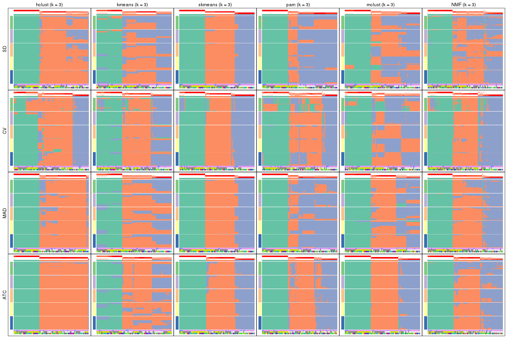
collect_plots(res_list, k = 4, fun = membership_heatmap, mc.cores = 4)
collect_plots(res_list, k = 5, fun = membership_heatmap, mc.cores = 4)
collect_plots(res_list, k = 6, fun = membership_heatmap, mc.cores = 4)
Signature heatmaps for all methods. (What is a signature heatmap?)
Note in following heatmaps, rows are scaled.
collect_plots(res_list, k = 2, fun = get_signatures, mc.cores = 4)
collect_plots(res_list, k = 3, fun = get_signatures, mc.cores = 4)
collect_plots(res_list, k = 4, fun = get_signatures, mc.cores = 4)

collect_plots(res_list, k = 5, fun = get_signatures, mc.cores = 4)
collect_plots(res_list, k = 6, fun = get_signatures, mc.cores = 4)
The statistics used for measuring the stability of consensus partitioning. (How are they defined?)
get_stats(res_list, k = 2)
#> k 1-PAC mean_silhouette concordance area_increased Rand Jaccard
#> SD:NMF 2 1.000 0.999 0.999 0.458 0.543 0.543
#> CV:NMF 2 0.387 0.649 0.855 0.489 0.500 0.500
#> MAD:NMF 2 1.000 0.998 0.999 0.458 0.543 0.543
#> ATC:NMF 2 1.000 0.997 0.998 0.464 0.536 0.536
#> SD:skmeans 2 1.000 0.986 0.995 0.462 0.536 0.536
#> CV:skmeans 2 0.485 0.793 0.891 0.483 0.530 0.530
#> MAD:skmeans 2 1.000 0.997 0.999 0.464 0.536 0.536
#> ATC:skmeans 2 1.000 1.000 1.000 0.465 0.536 0.536
#> SD:mclust 2 0.709 0.937 0.958 0.499 0.496 0.496
#> CV:mclust 2 0.388 0.799 0.846 0.456 0.536 0.536
#> MAD:mclust 2 1.000 0.970 0.979 0.502 0.496 0.496
#> ATC:mclust 2 1.000 0.997 0.998 0.458 0.543 0.543
#> SD:kmeans 2 1.000 1.000 1.000 0.458 0.543 0.543
#> CV:kmeans 2 0.433 0.770 0.850 0.472 0.543 0.543
#> MAD:kmeans 2 1.000 1.000 1.000 0.458 0.543 0.543
#> ATC:kmeans 2 1.000 1.000 1.000 0.458 0.543 0.543
#> SD:pam 2 1.000 0.998 0.999 0.457 0.543 0.543
#> CV:pam 2 0.410 0.816 0.888 0.481 0.530 0.530
#> MAD:pam 2 1.000 1.000 1.000 0.458 0.543 0.543
#> ATC:pam 2 1.000 0.999 1.000 0.458 0.543 0.543
#> SD:hclust 2 1.000 0.998 0.999 0.458 0.543 0.543
#> CV:hclust 2 0.763 0.880 0.931 0.379 0.655 0.655
#> MAD:hclust 2 1.000 0.997 0.998 0.459 0.543 0.543
#> ATC:hclust 2 1.000 0.988 0.995 0.460 0.543 0.543
get_stats(res_list, k = 3)
#> k 1-PAC mean_silhouette concordance area_increased Rand Jaccard
#> SD:NMF 3 0.664 0.763 0.812 0.4163 0.785 0.607
#> CV:NMF 3 0.657 0.817 0.904 0.3706 0.715 0.486
#> MAD:NMF 3 0.714 0.868 0.913 0.4308 0.777 0.594
#> ATC:NMF 3 0.730 0.852 0.889 0.3901 0.778 0.591
#> SD:skmeans 3 1.000 0.978 0.987 0.4396 0.786 0.605
#> CV:skmeans 3 0.840 0.905 0.955 0.3940 0.767 0.573
#> MAD:skmeans 3 1.000 0.939 0.974 0.4205 0.786 0.605
#> ATC:skmeans 3 0.939 0.922 0.961 0.4301 0.797 0.621
#> SD:mclust 3 0.666 0.655 0.767 0.2767 0.756 0.544
#> CV:mclust 3 0.559 0.517 0.725 0.4034 0.836 0.693
#> MAD:mclust 3 0.722 0.803 0.859 0.2948 0.727 0.502
#> ATC:mclust 3 0.999 0.969 0.984 0.4575 0.786 0.606
#> SD:kmeans 3 0.673 0.806 0.801 0.3466 0.812 0.654
#> CV:kmeans 3 0.730 0.880 0.896 0.3846 0.788 0.610
#> MAD:kmeans 3 0.672 0.833 0.808 0.3380 0.791 0.615
#> ATC:kmeans 3 0.620 0.801 0.793 0.3642 0.791 0.615
#> SD:pam 3 0.784 0.887 0.891 0.3293 0.865 0.751
#> CV:pam 3 0.460 0.726 0.830 0.3392 0.814 0.653
#> MAD:pam 3 0.701 0.861 0.894 0.3407 0.856 0.734
#> ATC:pam 3 0.816 0.796 0.913 0.4655 0.783 0.601
#> SD:hclust 3 0.747 0.820 0.890 0.2118 0.985 0.972
#> CV:hclust 3 0.651 0.831 0.898 0.6641 0.701 0.543
#> MAD:hclust 3 0.795 0.774 0.925 0.1881 0.957 0.920
#> ATC:hclust 3 1.000 0.975 0.988 0.0442 0.985 0.972
get_stats(res_list, k = 4)
#> k 1-PAC mean_silhouette concordance area_increased Rand Jaccard
#> SD:NMF 4 0.821 0.846 0.903 0.1371 0.899 0.710
#> CV:NMF 4 0.731 0.830 0.879 0.1046 0.897 0.703
#> MAD:NMF 4 0.868 0.854 0.919 0.1247 0.906 0.727
#> ATC:NMF 4 0.732 0.752 0.866 0.1072 0.957 0.869
#> SD:skmeans 4 0.991 0.947 0.972 0.1125 0.925 0.776
#> CV:skmeans 4 0.851 0.888 0.935 0.0987 0.919 0.759
#> MAD:skmeans 4 0.979 0.947 0.973 0.1190 0.932 0.797
#> ATC:skmeans 4 0.836 0.826 0.907 0.0994 0.918 0.757
#> SD:mclust 4 0.956 0.904 0.963 0.1441 0.893 0.697
#> CV:mclust 4 0.838 0.826 0.918 0.1501 0.864 0.647
#> MAD:mclust 4 0.955 0.919 0.966 0.1206 0.916 0.753
#> ATC:mclust 4 0.871 0.911 0.938 0.1039 0.913 0.741
#> SD:kmeans 4 0.637 0.877 0.806 0.1364 0.863 0.638
#> CV:kmeans 4 0.748 0.793 0.807 0.1135 0.919 0.760
#> MAD:kmeans 4 0.629 0.852 0.811 0.1541 0.932 0.797
#> ATC:kmeans 4 0.583 0.572 0.670 0.1513 0.845 0.593
#> SD:pam 4 0.845 0.809 0.902 0.1862 0.861 0.659
#> CV:pam 4 0.675 0.744 0.848 0.1315 0.887 0.691
#> MAD:pam 4 0.849 0.861 0.931 0.1773 0.845 0.624
#> ATC:pam 4 0.769 0.747 0.887 0.0877 0.941 0.819
#> SD:hclust 4 0.708 0.705 0.868 0.2342 0.791 0.604
#> CV:hclust 4 0.569 0.760 0.844 0.0641 0.970 0.917
#> MAD:hclust 4 0.713 0.564 0.796 0.2545 0.862 0.723
#> ATC:hclust 4 0.693 0.753 0.884 0.3797 0.791 0.604
get_stats(res_list, k = 5)
#> k 1-PAC mean_silhouette concordance area_increased Rand Jaccard
#> SD:NMF 5 0.812 0.844 0.874 0.0544 0.977 0.914
#> CV:NMF 5 0.759 0.714 0.816 0.0556 0.995 0.982
#> MAD:NMF 5 0.822 0.697 0.872 0.0547 0.956 0.840
#> ATC:NMF 5 0.691 0.804 0.852 0.0522 0.921 0.742
#> SD:skmeans 5 0.898 0.923 0.935 0.0531 0.943 0.789
#> CV:skmeans 5 0.834 0.811 0.868 0.0690 0.934 0.752
#> MAD:skmeans 5 0.870 0.927 0.934 0.0560 0.941 0.784
#> ATC:skmeans 5 0.812 0.791 0.843 0.0415 0.939 0.776
#> SD:mclust 5 0.925 0.942 0.967 0.0784 0.921 0.715
#> CV:mclust 5 0.742 0.548 0.794 0.0672 0.931 0.744
#> MAD:mclust 5 0.920 0.887 0.942 0.0757 0.897 0.649
#> ATC:mclust 5 0.752 0.757 0.824 0.0461 0.983 0.936
#> SD:kmeans 5 0.745 0.792 0.775 0.0851 0.944 0.790
#> CV:kmeans 5 0.743 0.774 0.784 0.0706 0.912 0.685
#> MAD:kmeans 5 0.766 0.808 0.790 0.0816 0.942 0.783
#> ATC:kmeans 5 0.637 0.655 0.722 0.0723 0.866 0.558
#> SD:pam 5 0.787 0.583 0.717 0.0812 0.853 0.533
#> CV:pam 5 0.721 0.753 0.824 0.0872 0.916 0.695
#> MAD:pam 5 0.841 0.829 0.869 0.0799 0.938 0.776
#> ATC:pam 5 0.702 0.689 0.813 0.0854 0.897 0.638
#> SD:hclust 5 0.679 0.656 0.786 0.0778 0.930 0.787
#> CV:hclust 5 0.594 0.707 0.823 0.0637 0.920 0.768
#> MAD:hclust 5 0.805 0.749 0.864 0.0878 0.859 0.619
#> ATC:hclust 5 0.631 0.711 0.855 0.0753 0.947 0.832
get_stats(res_list, k = 6)
#> k 1-PAC mean_silhouette concordance area_increased Rand Jaccard
#> SD:NMF 6 0.740 0.657 0.761 0.0404 0.953 0.815
#> CV:NMF 6 0.772 0.681 0.810 0.0455 0.918 0.689
#> MAD:NMF 6 0.771 0.611 0.783 0.0434 0.925 0.708
#> ATC:NMF 6 0.665 0.686 0.800 0.0404 0.996 0.982
#> SD:skmeans 6 0.861 0.659 0.804 0.0457 0.967 0.850
#> CV:skmeans 6 0.849 0.839 0.894 0.0491 0.939 0.717
#> MAD:skmeans 6 0.865 0.857 0.872 0.0411 1.000 1.000
#> ATC:skmeans 6 0.785 0.696 0.808 0.0281 0.978 0.903
#> SD:mclust 6 0.992 0.973 0.986 0.0570 0.942 0.735
#> CV:mclust 6 0.807 0.679 0.821 0.0524 0.893 0.561
#> MAD:mclust 6 0.984 0.941 0.975 0.0598 0.941 0.727
#> ATC:mclust 6 0.773 0.619 0.825 0.0582 0.906 0.646
#> SD:kmeans 6 0.785 0.665 0.748 0.0622 0.951 0.787
#> CV:kmeans 6 0.776 0.782 0.798 0.0483 0.937 0.712
#> MAD:kmeans 6 0.784 0.769 0.789 0.0537 0.976 0.885
#> ATC:kmeans 6 0.647 0.553 0.721 0.0449 0.987 0.934
#> SD:pam 6 0.927 0.882 0.946 0.0734 0.907 0.604
#> CV:pam 6 0.834 0.762 0.829 0.0503 0.904 0.584
#> MAD:pam 6 0.911 0.878 0.948 0.0722 0.942 0.738
#> ATC:pam 6 0.792 0.758 0.843 0.0410 0.866 0.477
#> SD:hclust 6 0.738 0.616 0.838 0.0701 0.933 0.751
#> CV:hclust 6 0.706 0.629 0.761 0.0802 0.952 0.828
#> MAD:hclust 6 0.720 0.649 0.772 0.0589 0.991 0.962
#> ATC:hclust 6 0.671 0.613 0.816 0.0647 0.943 0.789
Following heatmap plots the partition for each combination of methods and the lightness correspond to the silhouette scores for samples in each method. On top the consensus subgroup is inferred from all methods by taking the mean silhouette scores as weight.
collect_stats(res_list, k = 2)
collect_stats(res_list, k = 3)
collect_stats(res_list, k = 4)

collect_stats(res_list, k = 5)
collect_stats(res_list, k = 6)
Collect partitions from all methods:
collect_classes(res_list, k = 2)
collect_classes(res_list, k = 3)
collect_classes(res_list, k = 4)
collect_classes(res_list, k = 5)
collect_classes(res_list, k = 6)
Overlap of top rows from different top-row methods:
top_rows_overlap(res_list, top_n = 1000, method = "euler")
top_rows_overlap(res_list, top_n = 2000, method = "euler")
top_rows_overlap(res_list, top_n = 3000, method = "euler")
top_rows_overlap(res_list, top_n = 4000, method = "euler")
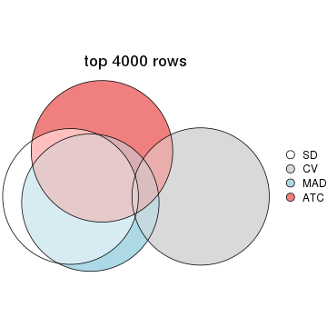
top_rows_overlap(res_list, top_n = 5000, method = "euler")
Also visualize the correspondance of rankings between different top-row methods:
top_rows_overlap(res_list, top_n = 1000, method = "correspondance")
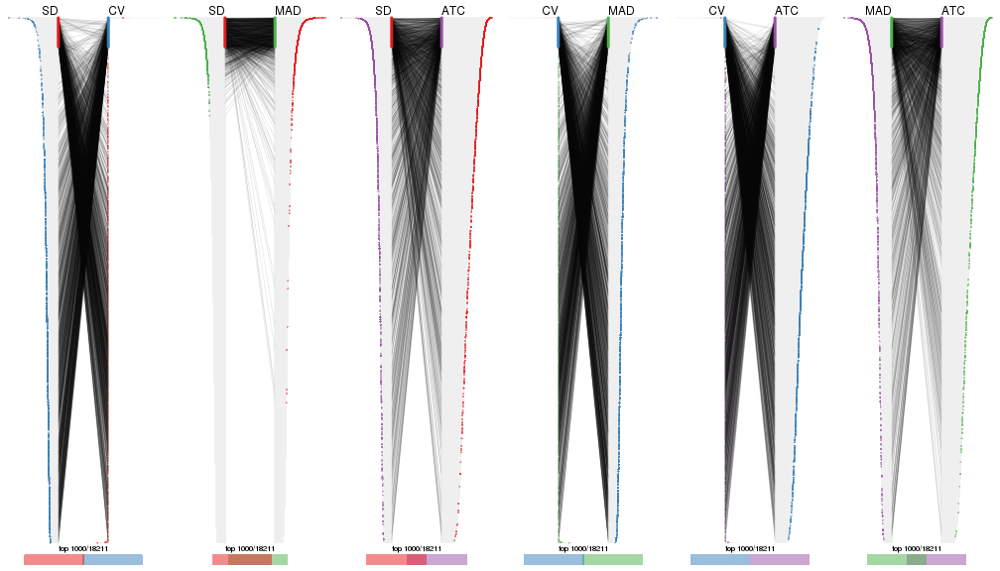
top_rows_overlap(res_list, top_n = 2000, method = "correspondance")
top_rows_overlap(res_list, top_n = 3000, method = "correspondance")

top_rows_overlap(res_list, top_n = 4000, method = "correspondance")
top_rows_overlap(res_list, top_n = 5000, method = "correspondance")
Heatmaps of the top rows:
top_rows_heatmap(res_list, top_n = 1000)
top_rows_heatmap(res_list, top_n = 2000)
top_rows_heatmap(res_list, top_n = 3000)
top_rows_heatmap(res_list, top_n = 4000)
top_rows_heatmap(res_list, top_n = 5000)
Test correlation between subgroups and known annotations. If the known annotation is numeric, one-way ANOVA test is applied, and if the known annotation is discrete, chi-squared contingency table test is applied.
test_to_known_factors(res_list, k = 2)
#> n agent(p) cell.line(p) time(p) k
#> SD:NMF 87 0.971 5.49e-06 1.000 2
#> CV:NMF 64 0.792 1.51e-08 0.897 2
#> MAD:NMF 87 0.971 5.49e-06 1.000 2
#> ATC:NMF 87 1.000 2.80e-05 1.000 2
#> SD:skmeans 86 0.993 7.64e-06 1.000 2
#> CV:skmeans 86 1.000 2.79e-05 1.000 2
#> MAD:skmeans 87 1.000 2.80e-05 1.000 2
#> ATC:skmeans 87 1.000 2.80e-05 1.000 2
#> SD:mclust 87 0.886 2.79e-01 0.998 2
#> CV:mclust 87 1.000 2.80e-05 1.000 2
#> MAD:mclust 87 0.886 2.79e-01 0.998 2
#> ATC:mclust 87 0.971 5.49e-06 1.000 2
#> SD:kmeans 87 0.971 5.49e-06 1.000 2
#> CV:kmeans 87 0.971 5.49e-06 1.000 2
#> MAD:kmeans 87 0.971 5.49e-06 1.000 2
#> ATC:kmeans 87 0.971 5.49e-06 1.000 2
#> SD:pam 87 0.971 5.49e-06 1.000 2
#> CV:pam 83 1.000 3.28e-04 0.999 2
#> MAD:pam 87 0.971 5.49e-06 1.000 2
#> ATC:pam 87 0.971 5.49e-06 1.000 2
#> SD:hclust 87 0.971 5.49e-06 1.000 2
#> CV:hclust 82 0.884 4.85e-10 0.997 2
#> MAD:hclust 87 0.971 5.49e-06 1.000 2
#> ATC:hclust 86 0.993 7.64e-06 1.000 2
test_to_known_factors(res_list, k = 3)
#> n agent(p) cell.line(p) time(p) k
#> SD:NMF 81 0.745 3.65e-09 1.000 3
#> CV:NMF 80 0.692 1.49e-08 0.996 3
#> MAD:NMF 84 0.771 5.54e-09 1.000 3
#> ATC:NMF 84 0.705 2.77e-08 1.000 3
#> SD:skmeans 87 0.822 1.80e-08 1.000 3
#> CV:skmeans 85 0.588 2.40e-08 0.999 3
#> MAD:skmeans 83 0.729 2.87e-10 1.000 3
#> ATC:skmeans 83 0.652 1.20e-07 0.999 3
#> SD:mclust 51 1.000 4.12e-09 1.000 3
#> CV:mclust 39 0.596 7.43e-02 0.971 3
#> MAD:mclust 83 0.794 5.14e-09 1.000 3
#> ATC:mclust 87 0.481 1.68e-07 1.000 3
#> SD:kmeans 82 0.693 5.82e-10 1.000 3
#> CV:kmeans 84 0.890 1.04e-08 1.000 3
#> MAD:kmeans 83 0.729 2.87e-10 1.000 3
#> ATC:kmeans 85 0.862 9.28e-05 0.457 3
#> SD:pam 84 0.488 1.50e-12 1.000 3
#> CV:pam 80 0.550 9.73e-09 0.990 3
#> MAD:pam 87 0.405 1.21e-10 1.000 3
#> ATC:pam 75 0.573 6.19e-05 0.660 3
#> SD:hclust 85 1.000 1.07e-05 1.000 3
#> CV:hclust 80 0.733 5.88e-10 1.000 3
#> MAD:hclust 77 1.000 1.70e-04 1.000 3
#> ATC:hclust 86 0.993 7.64e-06 1.000 3
test_to_known_factors(res_list, k = 4)
#> n agent(p) cell.line(p) time(p) k
#> SD:NMF 81 0.941 5.84e-12 1.000 4
#> CV:NMF 85 0.960 8.38e-13 1.000 4
#> MAD:NMF 80 0.911 2.17e-13 1.000 4
#> ATC:NMF 76 0.706 3.71e-08 0.998 4
#> SD:skmeans 84 0.971 2.13e-13 1.000 4
#> CV:skmeans 84 0.962 6.11e-12 1.000 4
#> MAD:skmeans 85 0.963 1.12e-13 1.000 4
#> ATC:skmeans 81 0.744 6.57e-12 1.000 4
#> SD:mclust 82 0.905 1.03e-14 1.000 4
#> CV:mclust 77 0.525 1.08e-12 0.999 4
#> MAD:mclust 82 0.865 1.37e-15 1.000 4
#> ATC:mclust 86 0.876 1.01e-08 1.000 4
#> SD:kmeans 87 0.942 2.92e-14 1.000 4
#> CV:kmeans 83 0.977 2.07e-13 1.000 4
#> MAD:kmeans 83 0.889 5.98e-16 1.000 4
#> ATC:kmeans 59 0.630 1.99e-03 0.269 4
#> SD:pam 78 0.896 1.08e-13 1.000 4
#> CV:pam 77 0.703 1.09e-09 0.999 4
#> MAD:pam 83 0.899 1.24e-12 1.000 4
#> ATC:pam 73 0.703 5.70e-06 0.583 4
#> SD:hclust 74 0.954 6.38e-05 0.954 4
#> CV:hclust 80 0.733 5.88e-10 1.000 4
#> MAD:hclust 41 1.000 3.51e-02 0.996 4
#> ATC:hclust 79 0.653 2.22e-04 0.701 4
test_to_known_factors(res_list, k = 5)
#> n agent(p) cell.line(p) time(p) k
#> SD:NMF 84 0.818 6.54e-12 1.000 5
#> CV:NMF 75 0.830 3.49e-13 1.000 5
#> MAD:NMF 73 0.760 3.24e-13 1.000 5
#> ATC:NMF 82 0.907 2.87e-12 1.000 5
#> SD:skmeans 86 0.751 4.32e-16 1.000 5
#> CV:skmeans 82 0.976 4.86e-15 1.000 5
#> MAD:skmeans 87 0.724 9.27e-16 1.000 5
#> ATC:skmeans 81 0.978 1.55e-13 1.000 5
#> SD:mclust 86 0.947 7.20e-21 1.000 5
#> CV:mclust 48 0.405 2.27e-11 0.987 5
#> MAD:mclust 83 0.933 1.51e-23 1.000 5
#> ATC:mclust 83 0.836 2.33e-08 0.999 5
#> SD:kmeans 80 0.872 2.64e-21 1.000 5
#> CV:kmeans 76 0.577 2.75e-17 1.000 5
#> MAD:kmeans 78 0.946 6.02e-22 1.000 5
#> ATC:kmeans 72 0.737 7.44e-06 0.677 5
#> SD:pam 53 0.928 1.19e-15 1.000 5
#> CV:pam 80 0.798 1.03e-14 1.000 5
#> MAD:pam 82 0.922 2.89e-13 1.000 5
#> ATC:pam 73 0.727 6.14e-07 0.500 5
#> SD:hclust 75 0.946 7.97e-09 0.883 5
#> CV:hclust 79 0.619 3.04e-14 1.000 5
#> MAD:hclust 75 0.744 9.84e-11 0.991 5
#> ATC:hclust 79 0.693 5.43e-05 0.759 5
test_to_known_factors(res_list, k = 6)
#> n agent(p) cell.line(p) time(p) k
#> SD:NMF 73 0.909 9.98e-17 1.000 6
#> CV:NMF 71 0.743 8.12e-13 1.000 6
#> MAD:NMF 74 0.963 7.07e-21 1.000 6
#> ATC:NMF 77 0.734 1.22e-12 1.000 6
#> SD:skmeans 72 0.829 1.30e-19 1.000 6
#> CV:skmeans 83 0.761 4.06e-19 1.000 6
#> MAD:skmeans 86 0.751 4.32e-16 1.000 6
#> ATC:skmeans 70 0.693 2.47e-11 0.998 6
#> SD:mclust 87 0.990 2.97e-21 1.000 6
#> CV:mclust 70 0.594 1.41e-14 0.982 6
#> MAD:mclust 84 0.995 2.12e-21 1.000 6
#> ATC:mclust 67 0.955 1.41e-09 0.994 6
#> SD:kmeans 65 0.871 1.09e-14 1.000 6
#> CV:kmeans 80 0.426 1.39e-17 1.000 6
#> MAD:kmeans 79 0.935 1.71e-21 1.000 6
#> ATC:kmeans 68 0.896 2.66e-08 0.980 6
#> SD:pam 83 0.952 1.14e-19 1.000 6
#> CV:pam 72 0.744 4.54e-17 1.000 6
#> MAD:pam 83 0.910 3.41e-19 1.000 6
#> ATC:pam 80 0.749 1.43e-11 0.890 6
#> SD:hclust 64 0.862 3.99e-13 0.987 6
#> CV:hclust 65 0.712 4.55e-13 0.990 6
#> MAD:hclust 75 0.873 7.13e-11 0.999 6
#> ATC:hclust 58 0.712 1.96e-05 0.945 6
The object with results only for a single top-value method and a single partition method can be extracted as:
res = res_list["SD", "hclust"]
# you can also extract it by
# res = res_list["SD:hclust"]
A summary of res and all the functions that can be applied to it:
res
#> A 'ConsensusPartition' object with k = 2, 3, 4, 5, 6.
#> On a matrix with 18211 rows and 87 columns.
#> Top rows (1000, 2000, 3000, 4000, 5000) are extracted by 'SD' method.
#> Subgroups are detected by 'hclust' method.
#> Performed in total 1250 partitions by row resampling.
#> Best k for subgroups seems to be 2.
#>
#> Following methods can be applied to this 'ConsensusPartition' object:
#> [1] "cola_report" "collect_classes" "collect_plots"
#> [4] "collect_stats" "colnames" "compare_signatures"
#> [7] "consensus_heatmap" "dimension_reduction" "functional_enrichment"
#> [10] "get_anno_col" "get_anno" "get_classes"
#> [13] "get_consensus" "get_matrix" "get_membership"
#> [16] "get_param" "get_signatures" "get_stats"
#> [19] "is_best_k" "is_stable_k" "membership_heatmap"
#> [22] "ncol" "nrow" "plot_ecdf"
#> [25] "rownames" "select_partition_number" "show"
#> [28] "suggest_best_k" "test_to_known_factors"
collect_plots() function collects all the plots made from res for all k (number of partitions)
into one single page to provide an easy and fast comparison between different k.
collect_plots(res)
The plots are:
k and the heatmap of
predicted classes for each k.k.k.k.All the plots in panels can be made by individual functions and they are plotted later in this section.
select_partition_number() produces several plots showing different
statistics for choosing “optimized” k. There are following statistics:
k;k, the area increased is defined as \(A_k - A_{k-1}\).The detailed explanations of these statistics can be found in the cola vignette.
Generally speaking, lower PAC score, higher mean silhouette score or higher
concordance corresponds to better partition. Rand index and Jaccard index
measure how similar the current partition is compared to partition with k-1.
If they are too similar, we won't accept k is better than k-1.
select_partition_number(res)
The numeric values for all these statistics can be obtained by get_stats().
get_stats(res)
#> k 1-PAC mean_silhouette concordance area_increased Rand Jaccard
#> 2 2 1.000 0.998 0.999 0.4582 0.543 0.543
#> 3 3 0.747 0.820 0.890 0.2118 0.985 0.972
#> 4 4 0.708 0.705 0.868 0.2342 0.791 0.604
#> 5 5 0.679 0.656 0.786 0.0778 0.930 0.787
#> 6 6 0.738 0.616 0.838 0.0701 0.933 0.751
suggest_best_k() suggests the best \(k\) based on these statistics. The rules are as follows:
suggest_best_k(res)
#> [1] 2
Following shows the table of the partitions (You need to click the show/hide
code output link to see it). The membership matrix (columns with name p*)
is inferred by
clue::cl_consensus()
function with the SE method. Basically the value in the membership matrix
represents the probability to belong to a certain group. The finall class
label for an item is determined with the group with highest probability it
belongs to.
In get_classes() function, the entropy is calculated from the membership
matrix and the silhouette score is calculated from the consensus matrix.
cbind(get_classes(res, k = 2), get_membership(res, k = 2))
#> class entropy silhouette p1 p2
#> GSM41890 1 0.00 1.000 1.000 0.000
#> GSM41917 1 0.00 1.000 1.000 0.000
#> GSM41936 2 0.00 0.998 0.000 1.000
#> GSM41893 1 0.00 1.000 1.000 0.000
#> GSM41920 1 0.00 1.000 1.000 0.000
#> GSM41937 2 0.00 0.998 0.000 1.000
#> GSM41896 1 0.00 1.000 1.000 0.000
#> GSM41923 1 0.00 1.000 1.000 0.000
#> GSM41938 2 0.00 0.998 0.000 1.000
#> GSM41899 1 0.00 1.000 1.000 0.000
#> GSM41925 1 0.00 1.000 1.000 0.000
#> GSM41939 2 0.00 0.998 0.000 1.000
#> GSM41902 1 0.00 1.000 1.000 0.000
#> GSM41927 1 0.00 1.000 1.000 0.000
#> GSM41940 2 0.00 0.998 0.000 1.000
#> GSM41905 1 0.00 1.000 1.000 0.000
#> GSM41929 1 0.00 1.000 1.000 0.000
#> GSM41941 2 0.00 0.998 0.000 1.000
#> GSM41908 1 0.00 1.000 1.000 0.000
#> GSM41931 1 0.00 1.000 1.000 0.000
#> GSM41942 2 0.00 0.998 0.000 1.000
#> GSM41945 2 0.00 0.998 0.000 1.000
#> GSM41911 1 0.00 1.000 1.000 0.000
#> GSM41933 1 0.00 1.000 1.000 0.000
#> GSM41943 2 0.00 0.998 0.000 1.000
#> GSM41944 2 0.00 0.998 0.000 1.000
#> GSM41876 2 0.00 0.998 0.000 1.000
#> GSM41895 2 0.00 0.998 0.000 1.000
#> GSM41898 2 0.00 0.998 0.000 1.000
#> GSM41877 2 0.00 0.998 0.000 1.000
#> GSM41901 2 0.00 0.998 0.000 1.000
#> GSM41904 2 0.00 0.998 0.000 1.000
#> GSM41878 2 0.00 0.998 0.000 1.000
#> GSM41907 2 0.00 0.998 0.000 1.000
#> GSM41910 2 0.00 0.998 0.000 1.000
#> GSM41879 2 0.00 0.998 0.000 1.000
#> GSM41913 2 0.00 0.998 0.000 1.000
#> GSM41916 2 0.00 0.998 0.000 1.000
#> GSM41880 2 0.00 0.998 0.000 1.000
#> GSM41919 2 0.00 0.998 0.000 1.000
#> GSM41922 2 0.00 0.998 0.000 1.000
#> GSM41881 2 0.00 0.998 0.000 1.000
#> GSM41924 2 0.00 0.998 0.000 1.000
#> GSM41926 2 0.00 0.998 0.000 1.000
#> GSM41869 2 0.00 0.998 0.000 1.000
#> GSM41928 2 0.43 0.904 0.088 0.912
#> GSM41930 2 0.00 0.998 0.000 1.000
#> GSM41882 2 0.00 0.998 0.000 1.000
#> GSM41932 2 0.00 0.998 0.000 1.000
#> GSM41934 2 0.00 0.998 0.000 1.000
#> GSM41860 2 0.00 0.998 0.000 1.000
#> GSM41871 2 0.00 0.998 0.000 1.000
#> GSM41875 2 0.00 0.998 0.000 1.000
#> GSM41894 1 0.00 1.000 1.000 0.000
#> GSM41897 1 0.00 1.000 1.000 0.000
#> GSM41861 2 0.00 0.998 0.000 1.000
#> GSM41872 2 0.00 0.998 0.000 1.000
#> GSM41900 1 0.00 1.000 1.000 0.000
#> GSM41862 2 0.00 0.998 0.000 1.000
#> GSM41873 2 0.00 0.998 0.000 1.000
#> GSM41903 1 0.00 1.000 1.000 0.000
#> GSM41863 2 0.00 0.998 0.000 1.000
#> GSM41883 2 0.00 0.998 0.000 1.000
#> GSM41906 1 0.00 1.000 1.000 0.000
#> GSM41864 2 0.00 0.998 0.000 1.000
#> GSM41884 2 0.00 0.998 0.000 1.000
#> GSM41909 1 0.00 1.000 1.000 0.000
#> GSM41912 1 0.00 1.000 1.000 0.000
#> GSM41865 2 0.00 0.998 0.000 1.000
#> GSM41885 2 0.00 0.998 0.000 1.000
#> GSM41915 1 0.00 1.000 1.000 0.000
#> GSM41866 2 0.00 0.998 0.000 1.000
#> GSM41886 2 0.00 0.998 0.000 1.000
#> GSM41918 1 0.00 1.000 1.000 0.000
#> GSM41867 2 0.00 0.998 0.000 1.000
#> GSM41868 2 0.00 0.998 0.000 1.000
#> GSM41921 1 0.00 1.000 1.000 0.000
#> GSM41887 1 0.00 1.000 1.000 0.000
#> GSM41914 1 0.00 1.000 1.000 0.000
#> GSM41935 2 0.00 0.998 0.000 1.000
#> GSM41874 2 0.00 0.998 0.000 1.000
#> GSM41889 2 0.00 0.998 0.000 1.000
#> GSM41892 2 0.00 0.998 0.000 1.000
#> GSM41859 2 0.00 0.998 0.000 1.000
#> GSM41870 2 0.00 0.998 0.000 1.000
#> GSM41888 1 0.00 1.000 1.000 0.000
#> GSM41891 1 0.00 1.000 1.000 0.000
cbind(get_classes(res, k = 3), get_membership(res, k = 3))
#> class entropy silhouette p1 p2 p3
#> GSM41890 1 0.0000 1.000 1 0.000 0.000
#> GSM41917 1 0.0000 1.000 1 0.000 0.000
#> GSM41936 2 0.4887 0.753 0 0.772 0.228
#> GSM41893 1 0.0000 1.000 1 0.000 0.000
#> GSM41920 1 0.0000 1.000 1 0.000 0.000
#> GSM41937 2 0.4121 0.776 0 0.832 0.168
#> GSM41896 1 0.0000 1.000 1 0.000 0.000
#> GSM41923 1 0.0000 1.000 1 0.000 0.000
#> GSM41938 2 0.4121 0.776 0 0.832 0.168
#> GSM41899 1 0.0000 1.000 1 0.000 0.000
#> GSM41925 1 0.0000 1.000 1 0.000 0.000
#> GSM41939 2 0.4887 0.753 0 0.772 0.228
#> GSM41902 1 0.0000 1.000 1 0.000 0.000
#> GSM41927 1 0.0000 1.000 1 0.000 0.000
#> GSM41940 2 0.0000 0.805 0 1.000 0.000
#> GSM41905 1 0.0000 1.000 1 0.000 0.000
#> GSM41929 1 0.0000 1.000 1 0.000 0.000
#> GSM41941 2 0.0000 0.805 0 1.000 0.000
#> GSM41908 1 0.0000 1.000 1 0.000 0.000
#> GSM41931 1 0.0000 1.000 1 0.000 0.000
#> GSM41942 2 0.0000 0.805 0 1.000 0.000
#> GSM41945 2 0.0000 0.805 0 1.000 0.000
#> GSM41911 1 0.0000 1.000 1 0.000 0.000
#> GSM41933 1 0.0000 1.000 1 0.000 0.000
#> GSM41943 2 0.0000 0.805 0 1.000 0.000
#> GSM41944 2 0.0000 0.805 0 1.000 0.000
#> GSM41876 2 0.4887 0.753 0 0.772 0.228
#> GSM41895 2 0.5465 0.727 0 0.712 0.288
#> GSM41898 2 0.6079 0.604 0 0.612 0.388
#> GSM41877 2 0.0747 0.804 0 0.984 0.016
#> GSM41901 2 0.5859 0.681 0 0.656 0.344
#> GSM41904 2 0.0747 0.802 0 0.984 0.016
#> GSM41878 2 0.0592 0.803 0 0.988 0.012
#> GSM41907 2 0.6008 0.652 0 0.628 0.372
#> GSM41910 2 0.5835 0.644 0 0.660 0.340
#> GSM41879 2 0.0592 0.800 0 0.988 0.012
#> GSM41913 2 0.6008 0.652 0 0.628 0.372
#> GSM41916 2 0.5785 0.650 0 0.668 0.332
#> GSM41880 2 0.4887 0.753 0 0.772 0.228
#> GSM41919 2 0.6154 0.282 0 0.592 0.408
#> GSM41922 2 0.5810 0.650 0 0.664 0.336
#> GSM41881 2 0.0592 0.800 0 0.988 0.012
#> GSM41924 2 0.6008 0.652 0 0.628 0.372
#> GSM41926 2 0.4605 0.617 0 0.796 0.204
#> GSM41869 2 0.0424 0.806 0 0.992 0.008
#> GSM41928 3 0.4887 0.000 0 0.228 0.772
#> GSM41930 2 0.5810 0.627 0 0.664 0.336
#> GSM41882 2 0.5465 0.698 0 0.712 0.288
#> GSM41932 2 0.5905 0.673 0 0.648 0.352
#> GSM41934 2 0.5733 0.591 0 0.676 0.324
#> GSM41860 2 0.5529 0.720 0 0.704 0.296
#> GSM41871 2 0.0592 0.806 0 0.988 0.012
#> GSM41875 2 0.0592 0.800 0 0.988 0.012
#> GSM41894 1 0.0000 1.000 1 0.000 0.000
#> GSM41897 1 0.0000 1.000 1 0.000 0.000
#> GSM41861 2 0.5529 0.720 0 0.704 0.296
#> GSM41872 2 0.0747 0.802 0 0.984 0.016
#> GSM41900 1 0.0000 1.000 1 0.000 0.000
#> GSM41862 2 0.5497 0.723 0 0.708 0.292
#> GSM41873 2 0.0747 0.802 0 0.984 0.016
#> GSM41903 1 0.0000 1.000 1 0.000 0.000
#> GSM41863 2 0.0892 0.804 0 0.980 0.020
#> GSM41883 2 0.0424 0.806 0 0.992 0.008
#> GSM41906 1 0.0000 1.000 1 0.000 0.000
#> GSM41864 2 0.5497 0.723 0 0.708 0.292
#> GSM41884 2 0.0424 0.806 0 0.992 0.008
#> GSM41909 1 0.0000 1.000 1 0.000 0.000
#> GSM41912 1 0.0000 1.000 1 0.000 0.000
#> GSM41865 2 0.2165 0.801 0 0.936 0.064
#> GSM41885 2 0.0424 0.806 0 0.992 0.008
#> GSM41915 1 0.0000 1.000 1 0.000 0.000
#> GSM41866 2 0.0892 0.804 0 0.980 0.020
#> GSM41886 2 0.0424 0.806 0 0.992 0.008
#> GSM41918 1 0.0000 1.000 1 0.000 0.000
#> GSM41867 2 0.0592 0.800 0 0.988 0.012
#> GSM41868 2 0.0592 0.800 0 0.988 0.012
#> GSM41921 1 0.0000 1.000 1 0.000 0.000
#> GSM41887 1 0.0000 1.000 1 0.000 0.000
#> GSM41914 1 0.0000 1.000 1 0.000 0.000
#> GSM41935 2 0.0000 0.805 0 1.000 0.000
#> GSM41874 2 0.0592 0.800 0 0.988 0.012
#> GSM41889 2 0.5465 0.727 0 0.712 0.288
#> GSM41892 2 0.6008 0.652 0 0.628 0.372
#> GSM41859 2 0.6026 0.622 0 0.624 0.376
#> GSM41870 2 0.0424 0.806 0 0.992 0.008
#> GSM41888 1 0.0000 1.000 1 0.000 0.000
#> GSM41891 1 0.0000 1.000 1 0.000 0.000
cbind(get_classes(res, k = 4), get_membership(res, k = 4))
#> class entropy silhouette p1 p2 p3 p4
#> GSM41890 1 0.0000 1.0000 1 0.000 0.000 0.000
#> GSM41917 1 0.0000 1.0000 1 0.000 0.000 0.000
#> GSM41936 3 0.3024 0.5364 0 0.000 0.852 0.148
#> GSM41893 1 0.0000 1.0000 1 0.000 0.000 0.000
#> GSM41920 1 0.0000 1.0000 1 0.000 0.000 0.000
#> GSM41937 3 0.7201 0.1709 0 0.356 0.496 0.148
#> GSM41896 1 0.0000 1.0000 1 0.000 0.000 0.000
#> GSM41923 1 0.0000 1.0000 1 0.000 0.000 0.000
#> GSM41938 3 0.7201 0.1709 0 0.356 0.496 0.148
#> GSM41899 1 0.0000 1.0000 1 0.000 0.000 0.000
#> GSM41925 1 0.0000 1.0000 1 0.000 0.000 0.000
#> GSM41939 3 0.3024 0.5364 0 0.000 0.852 0.148
#> GSM41902 1 0.0000 1.0000 1 0.000 0.000 0.000
#> GSM41927 1 0.0000 1.0000 1 0.000 0.000 0.000
#> GSM41940 2 0.5574 0.6113 0 0.728 0.124 0.148
#> GSM41905 1 0.0000 1.0000 1 0.000 0.000 0.000
#> GSM41929 1 0.0000 1.0000 1 0.000 0.000 0.000
#> GSM41941 2 0.5574 0.6113 0 0.728 0.124 0.148
#> GSM41908 1 0.0000 1.0000 1 0.000 0.000 0.000
#> GSM41931 1 0.0000 1.0000 1 0.000 0.000 0.000
#> GSM41942 2 0.5574 0.6113 0 0.728 0.124 0.148
#> GSM41945 2 0.5128 0.6297 0 0.760 0.092 0.148
#> GSM41911 1 0.0000 1.0000 1 0.000 0.000 0.000
#> GSM41933 1 0.0000 1.0000 1 0.000 0.000 0.000
#> GSM41943 2 0.5423 0.6220 0 0.740 0.116 0.144
#> GSM41944 2 0.5128 0.6297 0 0.760 0.092 0.148
#> GSM41876 3 0.3975 0.6187 0 0.240 0.760 0.000
#> GSM41895 3 0.4713 0.4793 0 0.360 0.640 0.000
#> GSM41898 3 0.5533 0.5483 0 0.136 0.732 0.132
#> GSM41877 2 0.2408 0.7152 0 0.896 0.104 0.000
#> GSM41901 3 0.3257 0.6679 0 0.152 0.844 0.004
#> GSM41904 2 0.1545 0.7581 0 0.952 0.040 0.008
#> GSM41878 2 0.0707 0.7664 0 0.980 0.020 0.000
#> GSM41907 3 0.2412 0.6619 0 0.084 0.908 0.008
#> GSM41910 3 0.7318 0.1806 0 0.364 0.476 0.160
#> GSM41879 2 0.0469 0.7654 0 0.988 0.012 0.000
#> GSM41913 3 0.2412 0.6619 0 0.084 0.908 0.008
#> GSM41916 2 0.7387 -0.2789 0 0.444 0.392 0.164
#> GSM41880 3 0.3975 0.6187 0 0.240 0.760 0.000
#> GSM41919 4 0.7599 0.0979 0 0.376 0.200 0.424
#> GSM41922 3 0.7292 0.1513 0 0.388 0.460 0.152
#> GSM41881 2 0.0336 0.7655 0 0.992 0.008 0.000
#> GSM41924 3 0.2412 0.6619 0 0.084 0.908 0.008
#> GSM41926 2 0.4775 0.4398 0 0.740 0.028 0.232
#> GSM41869 2 0.0921 0.7655 0 0.972 0.028 0.000
#> GSM41928 4 0.3324 0.3199 0 0.012 0.136 0.852
#> GSM41930 2 0.7520 -0.2218 0 0.464 0.340 0.196
#> GSM41882 2 0.7246 -0.2773 0 0.448 0.408 0.144
#> GSM41932 3 0.2737 0.6681 0 0.104 0.888 0.008
#> GSM41934 2 0.7575 -0.2435 0 0.484 0.252 0.264
#> GSM41860 3 0.3525 0.6658 0 0.100 0.860 0.040
#> GSM41871 2 0.1022 0.7638 0 0.968 0.032 0.000
#> GSM41875 2 0.0000 0.7643 0 1.000 0.000 0.000
#> GSM41894 1 0.0000 1.0000 1 0.000 0.000 0.000
#> GSM41897 1 0.0000 1.0000 1 0.000 0.000 0.000
#> GSM41861 3 0.3525 0.6658 0 0.100 0.860 0.040
#> GSM41872 2 0.0469 0.7660 0 0.988 0.012 0.000
#> GSM41900 1 0.0000 1.0000 1 0.000 0.000 0.000
#> GSM41862 3 0.3734 0.6547 0 0.108 0.848 0.044
#> GSM41873 2 0.0469 0.7660 0 0.988 0.012 0.000
#> GSM41903 1 0.0000 1.0000 1 0.000 0.000 0.000
#> GSM41863 2 0.5090 0.5850 0 0.728 0.228 0.044
#> GSM41883 2 0.0921 0.7655 0 0.972 0.028 0.000
#> GSM41906 1 0.0000 1.0000 1 0.000 0.000 0.000
#> GSM41864 3 0.3734 0.6547 0 0.108 0.848 0.044
#> GSM41884 2 0.0921 0.7655 0 0.972 0.028 0.000
#> GSM41909 1 0.0000 1.0000 1 0.000 0.000 0.000
#> GSM41912 1 0.0000 1.0000 1 0.000 0.000 0.000
#> GSM41865 2 0.3498 0.6613 0 0.832 0.160 0.008
#> GSM41885 2 0.0921 0.7655 0 0.972 0.028 0.000
#> GSM41915 1 0.0000 1.0000 1 0.000 0.000 0.000
#> GSM41866 2 0.5156 0.5756 0 0.720 0.236 0.044
#> GSM41886 2 0.0921 0.7655 0 0.972 0.028 0.000
#> GSM41918 1 0.0000 1.0000 1 0.000 0.000 0.000
#> GSM41867 2 0.0000 0.7643 0 1.000 0.000 0.000
#> GSM41868 2 0.0000 0.7643 0 1.000 0.000 0.000
#> GSM41921 1 0.0000 1.0000 1 0.000 0.000 0.000
#> GSM41887 1 0.0000 1.0000 1 0.000 0.000 0.000
#> GSM41914 1 0.0000 1.0000 1 0.000 0.000 0.000
#> GSM41935 2 0.5199 0.6341 0 0.756 0.100 0.144
#> GSM41874 2 0.0336 0.7655 0 0.992 0.008 0.000
#> GSM41889 3 0.4713 0.4793 0 0.360 0.640 0.000
#> GSM41892 3 0.2412 0.6619 0 0.084 0.908 0.008
#> GSM41859 3 0.6159 0.5023 0 0.196 0.672 0.132
#> GSM41870 2 0.0921 0.7655 0 0.972 0.028 0.000
#> GSM41888 1 0.0000 1.0000 1 0.000 0.000 0.000
#> GSM41891 1 0.0000 1.0000 1 0.000 0.000 0.000
cbind(get_classes(res, k = 5), get_membership(res, k = 5))
#> class entropy silhouette p1 p2 p3 p4 p5
#> GSM41890 1 0.4074 0.7533 0.636 0.000 0.000 0.000 0.364
#> GSM41917 1 0.3395 0.8117 0.764 0.000 0.000 0.000 0.236
#> GSM41936 3 0.3508 0.6102 0.000 0.000 0.748 0.252 0.000
#> GSM41893 1 0.4088 0.7510 0.632 0.000 0.000 0.000 0.368
#> GSM41920 1 0.3395 0.8117 0.764 0.000 0.000 0.000 0.236
#> GSM41937 4 0.5901 0.1699 0.000 0.104 0.400 0.496 0.000
#> GSM41896 1 0.4088 0.7510 0.632 0.000 0.000 0.000 0.368
#> GSM41923 1 0.0880 0.8505 0.968 0.000 0.000 0.000 0.032
#> GSM41938 4 0.5901 0.1699 0.000 0.104 0.400 0.496 0.000
#> GSM41899 1 0.1270 0.8498 0.948 0.000 0.000 0.000 0.052
#> GSM41925 1 0.0880 0.8505 0.968 0.000 0.000 0.000 0.032
#> GSM41939 3 0.3508 0.6102 0.000 0.000 0.748 0.252 0.000
#> GSM41902 1 0.4088 0.7510 0.632 0.000 0.000 0.000 0.368
#> GSM41927 1 0.0880 0.8505 0.968 0.000 0.000 0.000 0.032
#> GSM41940 4 0.4940 0.8031 0.000 0.392 0.032 0.576 0.000
#> GSM41905 1 0.1270 0.8498 0.948 0.000 0.000 0.000 0.052
#> GSM41929 1 0.0794 0.8501 0.972 0.000 0.000 0.000 0.028
#> GSM41941 4 0.4940 0.8031 0.000 0.392 0.032 0.576 0.000
#> GSM41908 1 0.4088 0.7510 0.632 0.000 0.000 0.000 0.368
#> GSM41931 1 0.3305 0.8152 0.776 0.000 0.000 0.000 0.224
#> GSM41942 4 0.4940 0.8031 0.000 0.392 0.032 0.576 0.000
#> GSM41945 4 0.4161 0.7869 0.000 0.392 0.000 0.608 0.000
#> GSM41911 1 0.4088 0.7510 0.632 0.000 0.000 0.000 0.368
#> GSM41933 1 0.3305 0.8152 0.776 0.000 0.000 0.000 0.224
#> GSM41943 4 0.4885 0.7972 0.000 0.400 0.028 0.572 0.000
#> GSM41944 4 0.4161 0.7869 0.000 0.392 0.000 0.608 0.000
#> GSM41876 3 0.4382 0.6496 0.000 0.228 0.736 0.012 0.024
#> GSM41895 3 0.4570 0.5518 0.000 0.332 0.648 0.016 0.004
#> GSM41898 3 0.4171 0.6441 0.000 0.052 0.808 0.112 0.028
#> GSM41877 2 0.2361 0.6566 0.000 0.892 0.096 0.000 0.012
#> GSM41901 3 0.1831 0.7390 0.000 0.076 0.920 0.000 0.004
#> GSM41904 2 0.1582 0.7008 0.000 0.944 0.028 0.028 0.000
#> GSM41878 2 0.0833 0.7330 0.000 0.976 0.016 0.004 0.004
#> GSM41907 3 0.0000 0.7286 0.000 0.000 1.000 0.000 0.000
#> GSM41910 3 0.6829 0.3631 0.000 0.320 0.504 0.144 0.032
#> GSM41879 2 0.0566 0.7304 0.000 0.984 0.012 0.004 0.000
#> GSM41913 3 0.0000 0.7286 0.000 0.000 1.000 0.000 0.000
#> GSM41916 2 0.7066 -0.1703 0.000 0.424 0.388 0.152 0.036
#> GSM41880 3 0.4382 0.6496 0.000 0.228 0.736 0.012 0.024
#> GSM41919 2 0.8283 -0.1726 0.000 0.364 0.156 0.288 0.192
#> GSM41922 3 0.6900 0.2769 0.000 0.368 0.460 0.140 0.032
#> GSM41881 2 0.0451 0.7310 0.000 0.988 0.008 0.004 0.000
#> GSM41924 3 0.0000 0.7286 0.000 0.000 1.000 0.000 0.000
#> GSM41926 2 0.4753 0.5274 0.000 0.736 0.016 0.196 0.052
#> GSM41869 2 0.0865 0.7348 0.000 0.972 0.004 0.000 0.024
#> GSM41928 5 0.4494 0.0000 0.000 0.012 0.000 0.380 0.608
#> GSM41930 2 0.7235 -0.0555 0.000 0.444 0.336 0.180 0.040
#> GSM41882 2 0.7013 -0.2118 0.000 0.412 0.396 0.164 0.028
#> GSM41932 3 0.0703 0.7379 0.000 0.024 0.976 0.000 0.000
#> GSM41934 2 0.7435 0.1158 0.000 0.464 0.248 0.236 0.052
#> GSM41860 3 0.3289 0.7362 0.000 0.048 0.844 0.108 0.000
#> GSM41871 2 0.0992 0.7343 0.000 0.968 0.008 0.000 0.024
#> GSM41875 2 0.0000 0.7318 0.000 1.000 0.000 0.000 0.000
#> GSM41894 1 0.0000 0.8471 1.000 0.000 0.000 0.000 0.000
#> GSM41897 1 0.0000 0.8471 1.000 0.000 0.000 0.000 0.000
#> GSM41861 3 0.3289 0.7362 0.000 0.048 0.844 0.108 0.000
#> GSM41872 2 0.0566 0.7322 0.000 0.984 0.012 0.004 0.000
#> GSM41900 1 0.0000 0.8471 1.000 0.000 0.000 0.000 0.000
#> GSM41862 3 0.3779 0.7181 0.000 0.052 0.804 0.144 0.000
#> GSM41873 2 0.0566 0.7322 0.000 0.984 0.012 0.004 0.000
#> GSM41903 1 0.0000 0.8471 1.000 0.000 0.000 0.000 0.000
#> GSM41863 2 0.5413 0.1560 0.000 0.664 0.164 0.172 0.000
#> GSM41883 2 0.0865 0.7348 0.000 0.972 0.004 0.000 0.024
#> GSM41906 1 0.0000 0.8471 1.000 0.000 0.000 0.000 0.000
#> GSM41864 3 0.3779 0.7181 0.000 0.052 0.804 0.144 0.000
#> GSM41884 2 0.0865 0.7348 0.000 0.972 0.004 0.000 0.024
#> GSM41909 1 0.0000 0.8471 1.000 0.000 0.000 0.000 0.000
#> GSM41912 1 0.0000 0.8471 1.000 0.000 0.000 0.000 0.000
#> GSM41865 2 0.3535 0.5663 0.000 0.808 0.164 0.028 0.000
#> GSM41885 2 0.0865 0.7348 0.000 0.972 0.004 0.000 0.024
#> GSM41915 1 0.0000 0.8471 1.000 0.000 0.000 0.000 0.000
#> GSM41866 2 0.5481 0.1512 0.000 0.656 0.172 0.172 0.000
#> GSM41886 2 0.0865 0.7348 0.000 0.972 0.004 0.000 0.024
#> GSM41918 1 0.0000 0.8471 1.000 0.000 0.000 0.000 0.000
#> GSM41867 2 0.1608 0.6698 0.000 0.928 0.000 0.072 0.000
#> GSM41868 2 0.0000 0.7318 0.000 1.000 0.000 0.000 0.000
#> GSM41921 1 0.0000 0.8471 1.000 0.000 0.000 0.000 0.000
#> GSM41887 1 0.4088 0.7510 0.632 0.000 0.000 0.000 0.368
#> GSM41914 1 0.4088 0.7510 0.632 0.000 0.000 0.000 0.368
#> GSM41935 4 0.4649 0.7891 0.000 0.404 0.016 0.580 0.000
#> GSM41874 2 0.0451 0.7310 0.000 0.988 0.008 0.004 0.000
#> GSM41889 3 0.4570 0.5518 0.000 0.332 0.648 0.016 0.004
#> GSM41892 3 0.0000 0.7286 0.000 0.000 1.000 0.000 0.000
#> GSM41859 3 0.5018 0.6157 0.000 0.132 0.732 0.124 0.012
#> GSM41870 2 0.0865 0.7348 0.000 0.972 0.004 0.000 0.024
#> GSM41888 1 0.3966 0.7644 0.664 0.000 0.000 0.000 0.336
#> GSM41891 1 0.0000 0.8471 1.000 0.000 0.000 0.000 0.000
cbind(get_classes(res, k = 6), get_membership(res, k = 6))
#> class entropy silhouette p1 p2 p3 p4 p5 p6
#> GSM41890 1 0.0146 0.8525 0.996 0.000 0.000 0.000 0.004 0.000
#> GSM41917 1 0.2416 0.7736 0.844 0.000 0.000 0.000 0.156 0.000
#> GSM41936 3 0.3578 0.4835 0.000 0.000 0.660 0.340 0.000 0.000
#> GSM41893 1 0.0000 0.8530 1.000 0.000 0.000 0.000 0.000 0.000
#> GSM41920 1 0.2416 0.7736 0.844 0.000 0.000 0.000 0.156 0.000
#> GSM41937 4 0.3819 0.4139 0.000 0.012 0.316 0.672 0.000 0.000
#> GSM41896 1 0.0000 0.8530 1.000 0.000 0.000 0.000 0.000 0.000
#> GSM41923 5 0.3860 0.1161 0.472 0.000 0.000 0.000 0.528 0.000
#> GSM41938 4 0.3819 0.4139 0.000 0.012 0.316 0.672 0.000 0.000
#> GSM41899 1 0.3851 0.0631 0.540 0.000 0.000 0.000 0.460 0.000
#> GSM41925 5 0.3860 0.1161 0.472 0.000 0.000 0.000 0.528 0.000
#> GSM41939 3 0.3578 0.4835 0.000 0.000 0.660 0.340 0.000 0.000
#> GSM41902 1 0.0000 0.8530 1.000 0.000 0.000 0.000 0.000 0.000
#> GSM41927 5 0.3860 0.1161 0.472 0.000 0.000 0.000 0.528 0.000
#> GSM41940 4 0.1588 0.8533 0.000 0.072 0.004 0.924 0.000 0.000
#> GSM41905 1 0.3851 0.0631 0.540 0.000 0.000 0.000 0.460 0.000
#> GSM41929 5 0.3860 0.1109 0.472 0.000 0.000 0.000 0.528 0.000
#> GSM41941 4 0.1588 0.8533 0.000 0.072 0.004 0.924 0.000 0.000
#> GSM41908 1 0.0000 0.8530 1.000 0.000 0.000 0.000 0.000 0.000
#> GSM41931 1 0.2491 0.7670 0.836 0.000 0.000 0.000 0.164 0.000
#> GSM41942 4 0.1588 0.8533 0.000 0.072 0.004 0.924 0.000 0.000
#> GSM41945 4 0.2145 0.8401 0.000 0.072 0.000 0.900 0.028 0.000
#> GSM41911 1 0.0000 0.8530 1.000 0.000 0.000 0.000 0.000 0.000
#> GSM41933 1 0.2491 0.7670 0.836 0.000 0.000 0.000 0.164 0.000
#> GSM41943 4 0.1556 0.8495 0.000 0.080 0.000 0.920 0.000 0.000
#> GSM41944 4 0.2145 0.8401 0.000 0.072 0.000 0.900 0.028 0.000
#> GSM41876 3 0.5084 0.5221 0.000 0.244 0.644 0.100 0.000 0.012
#> GSM41895 3 0.4185 0.4467 0.000 0.332 0.644 0.020 0.000 0.004
#> GSM41898 3 0.3356 0.5686 0.000 0.052 0.808 0.000 0.000 0.140
#> GSM41877 2 0.2249 0.7148 0.000 0.900 0.064 0.032 0.000 0.004
#> GSM41901 3 0.1788 0.6856 0.000 0.076 0.916 0.004 0.000 0.004
#> GSM41904 2 0.1700 0.7540 0.000 0.928 0.024 0.048 0.000 0.000
#> GSM41878 2 0.0964 0.7774 0.000 0.968 0.012 0.016 0.000 0.004
#> GSM41907 3 0.0000 0.6859 0.000 0.000 1.000 0.000 0.000 0.000
#> GSM41910 3 0.5669 0.1259 0.000 0.320 0.504 0.000 0.000 0.176
#> GSM41879 2 0.0909 0.7762 0.000 0.968 0.012 0.020 0.000 0.000
#> GSM41913 3 0.0000 0.6859 0.000 0.000 1.000 0.000 0.000 0.000
#> GSM41916 2 0.6019 -0.1722 0.000 0.424 0.388 0.008 0.000 0.180
#> GSM41880 3 0.5084 0.5221 0.000 0.244 0.644 0.100 0.000 0.012
#> GSM41919 6 0.5864 0.1420 0.000 0.364 0.156 0.008 0.000 0.472
#> GSM41922 3 0.5917 0.0752 0.000 0.368 0.460 0.008 0.000 0.164
#> GSM41881 2 0.0806 0.7765 0.000 0.972 0.008 0.020 0.000 0.000
#> GSM41924 3 0.0000 0.6859 0.000 0.000 1.000 0.000 0.000 0.000
#> GSM41926 2 0.3558 0.4377 0.000 0.736 0.016 0.000 0.000 0.248
#> GSM41869 2 0.0363 0.7753 0.000 0.988 0.000 0.000 0.000 0.012
#> GSM41928 6 0.0363 0.2789 0.000 0.012 0.000 0.000 0.000 0.988
#> GSM41930 2 0.6108 -0.1684 0.000 0.444 0.336 0.008 0.000 0.212
#> GSM41882 2 0.6717 -0.2308 0.000 0.392 0.388 0.068 0.000 0.152
#> GSM41932 3 0.0632 0.6922 0.000 0.024 0.976 0.000 0.000 0.000
#> GSM41934 2 0.6123 -0.2011 0.000 0.464 0.248 0.008 0.000 0.280
#> GSM41860 3 0.3229 0.6863 0.000 0.044 0.816 0.140 0.000 0.000
#> GSM41871 2 0.0508 0.7748 0.000 0.984 0.004 0.000 0.000 0.012
#> GSM41875 2 0.0458 0.7756 0.000 0.984 0.000 0.016 0.000 0.000
#> GSM41894 5 0.0713 0.8319 0.028 0.000 0.000 0.000 0.972 0.000
#> GSM41897 5 0.0713 0.8319 0.028 0.000 0.000 0.000 0.972 0.000
#> GSM41861 3 0.3229 0.6863 0.000 0.044 0.816 0.140 0.000 0.000
#> GSM41872 2 0.0909 0.7767 0.000 0.968 0.012 0.020 0.000 0.000
#> GSM41900 5 0.0713 0.8319 0.028 0.000 0.000 0.000 0.972 0.000
#> GSM41862 3 0.3725 0.6709 0.000 0.048 0.776 0.172 0.004 0.000
#> GSM41873 2 0.0909 0.7767 0.000 0.968 0.012 0.020 0.000 0.000
#> GSM41903 5 0.0713 0.8319 0.028 0.000 0.000 0.000 0.972 0.000
#> GSM41863 2 0.4991 0.4040 0.000 0.656 0.136 0.204 0.004 0.000
#> GSM41883 2 0.0363 0.7753 0.000 0.988 0.000 0.000 0.000 0.012
#> GSM41906 5 0.0713 0.8319 0.028 0.000 0.000 0.000 0.972 0.000
#> GSM41864 3 0.3725 0.6709 0.000 0.048 0.776 0.172 0.004 0.000
#> GSM41884 2 0.0363 0.7753 0.000 0.988 0.000 0.000 0.000 0.012
#> GSM41909 5 0.0713 0.8319 0.028 0.000 0.000 0.000 0.972 0.000
#> GSM41912 5 0.0713 0.8319 0.028 0.000 0.000 0.000 0.972 0.000
#> GSM41865 2 0.3530 0.6133 0.000 0.792 0.152 0.056 0.000 0.000
#> GSM41885 2 0.0363 0.7753 0.000 0.988 0.000 0.000 0.000 0.012
#> GSM41915 5 0.0713 0.8319 0.028 0.000 0.000 0.000 0.972 0.000
#> GSM41866 2 0.5060 0.3952 0.000 0.648 0.144 0.204 0.004 0.000
#> GSM41886 2 0.0363 0.7753 0.000 0.988 0.000 0.000 0.000 0.012
#> GSM41918 5 0.0713 0.8319 0.028 0.000 0.000 0.000 0.972 0.000
#> GSM41867 2 0.1858 0.7325 0.000 0.912 0.000 0.076 0.012 0.000
#> GSM41868 2 0.0458 0.7756 0.000 0.984 0.000 0.016 0.000 0.000
#> GSM41921 5 0.0713 0.8319 0.028 0.000 0.000 0.000 0.972 0.000
#> GSM41887 1 0.0000 0.8530 1.000 0.000 0.000 0.000 0.000 0.000
#> GSM41914 1 0.0000 0.8530 1.000 0.000 0.000 0.000 0.000 0.000
#> GSM41935 4 0.1967 0.8435 0.000 0.084 0.000 0.904 0.012 0.000
#> GSM41874 2 0.0806 0.7765 0.000 0.972 0.008 0.020 0.000 0.000
#> GSM41889 3 0.4185 0.4467 0.000 0.332 0.644 0.020 0.000 0.004
#> GSM41892 3 0.0000 0.6859 0.000 0.000 1.000 0.000 0.000 0.000
#> GSM41859 3 0.4450 0.5247 0.000 0.132 0.732 0.008 0.000 0.128
#> GSM41870 2 0.0363 0.7753 0.000 0.988 0.000 0.000 0.000 0.012
#> GSM41888 1 0.1007 0.8396 0.956 0.000 0.000 0.000 0.044 0.000
#> GSM41891 5 0.0713 0.8319 0.028 0.000 0.000 0.000 0.972 0.000
Heatmaps for the consensus matrix. It visualizes the probability of two samples to be in a same group.
consensus_heatmap(res, k = 2)
consensus_heatmap(res, k = 3)

consensus_heatmap(res, k = 4)
consensus_heatmap(res, k = 5)
consensus_heatmap(res, k = 6)
Heatmaps for the membership of samples in all partitions to see how consistent they are:
membership_heatmap(res, k = 2)
membership_heatmap(res, k = 3)
membership_heatmap(res, k = 4)
membership_heatmap(res, k = 5)
membership_heatmap(res, k = 6)
As soon as we have had the classes for columns, we can look for signatures which are significantly different between classes which can be candidate marks for certain classes. Following are the heatmaps for signatures.
Signature heatmaps where rows are scaled:
get_signatures(res, k = 2)
get_signatures(res, k = 3)
get_signatures(res, k = 4)
get_signatures(res, k = 5)
get_signatures(res, k = 6)
Signature heatmaps where rows are not scaled:
get_signatures(res, k = 2, scale_rows = FALSE)
get_signatures(res, k = 3, scale_rows = FALSE)
get_signatures(res, k = 4, scale_rows = FALSE)
get_signatures(res, k = 5, scale_rows = FALSE)
get_signatures(res, k = 6, scale_rows = FALSE)
Compare the overlap of signatures from different k:
compare_signatures(res)
get_signature() returns a data frame invisibly. TO get the list of signatures, the function
call should be assigned to a variable explicitly. In following code, if plot argument is set
to FALSE, no heatmap is plotted while only the differential analysis is performed.
# code only for demonstration
tb = get_signature(res, k = ..., plot = FALSE)
An example of the output of tb is:
#> which_row fdr mean_1 mean_2 scaled_mean_1 scaled_mean_2 km
#> 1 38 0.042760348 8.373488 9.131774 -0.5533452 0.5164555 1
#> 2 40 0.018707592 7.106213 8.469186 -0.6173731 0.5762149 1
#> 3 55 0.019134737 10.221463 11.207825 -0.6159697 0.5749050 1
#> 4 59 0.006059896 5.921854 7.869574 -0.6899429 0.6439467 1
#> 5 60 0.018055526 8.928898 10.211722 -0.6204761 0.5791110 1
#> 6 98 0.009384629 15.714769 14.887706 0.6635654 -0.6193277 2
...
The columns in tb are:
which_row: row indices corresponding to the input matrix.fdr: FDR for the differential test. mean_x: The mean value in group x.scaled_mean_x: The mean value in group x after rows are scaled.km: Row groups if k-means clustering is applied to rows.UMAP plot which shows how samples are separated.
dimension_reduction(res, k = 2, method = "UMAP")

dimension_reduction(res, k = 3, method = "UMAP")
dimension_reduction(res, k = 4, method = "UMAP")
dimension_reduction(res, k = 5, method = "UMAP")
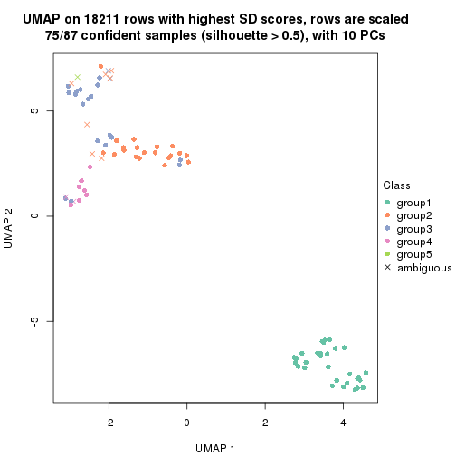
dimension_reduction(res, k = 6, method = "UMAP")
Following heatmap shows how subgroups are split when increasing k:
collect_classes(res)
Test correlation between subgroups and known annotations. If the known annotation is numeric, one-way ANOVA test is applied, and if the known annotation is discrete, chi-squared contingency table test is applied.
test_to_known_factors(res)
#> n agent(p) cell.line(p) time(p) k
#> SD:hclust 87 0.971 5.49e-06 1.000 2
#> SD:hclust 85 1.000 1.07e-05 1.000 3
#> SD:hclust 74 0.954 6.38e-05 0.954 4
#> SD:hclust 75 0.946 7.97e-09 0.883 5
#> SD:hclust 64 0.862 3.99e-13 0.987 6
If matrix rows can be associated to genes, consider to use functional_enrichment(res,
...) to perform function enrichment for the signature genes. See this vignette for more detailed explanations.
The object with results only for a single top-value method and a single partition method can be extracted as:
res = res_list["SD", "kmeans"]
# you can also extract it by
# res = res_list["SD:kmeans"]
A summary of res and all the functions that can be applied to it:
res
#> A 'ConsensusPartition' object with k = 2, 3, 4, 5, 6.
#> On a matrix with 18211 rows and 87 columns.
#> Top rows (1000, 2000, 3000, 4000, 5000) are extracted by 'SD' method.
#> Subgroups are detected by 'kmeans' method.
#> Performed in total 1250 partitions by row resampling.
#> Best k for subgroups seems to be 2.
#>
#> Following methods can be applied to this 'ConsensusPartition' object:
#> [1] "cola_report" "collect_classes" "collect_plots"
#> [4] "collect_stats" "colnames" "compare_signatures"
#> [7] "consensus_heatmap" "dimension_reduction" "functional_enrichment"
#> [10] "get_anno_col" "get_anno" "get_classes"
#> [13] "get_consensus" "get_matrix" "get_membership"
#> [16] "get_param" "get_signatures" "get_stats"
#> [19] "is_best_k" "is_stable_k" "membership_heatmap"
#> [22] "ncol" "nrow" "plot_ecdf"
#> [25] "rownames" "select_partition_number" "show"
#> [28] "suggest_best_k" "test_to_known_factors"
collect_plots() function collects all the plots made from res for all k (number of partitions)
into one single page to provide an easy and fast comparison between different k.
collect_plots(res)
The plots are:
k and the heatmap of
predicted classes for each k.k.k.k.All the plots in panels can be made by individual functions and they are plotted later in this section.
select_partition_number() produces several plots showing different
statistics for choosing “optimized” k. There are following statistics:
k;k, the area increased is defined as \(A_k - A_{k-1}\).The detailed explanations of these statistics can be found in the cola vignette.
Generally speaking, lower PAC score, higher mean silhouette score or higher
concordance corresponds to better partition. Rand index and Jaccard index
measure how similar the current partition is compared to partition with k-1.
If they are too similar, we won't accept k is better than k-1.
select_partition_number(res)
The numeric values for all these statistics can be obtained by get_stats().
get_stats(res)
#> k 1-PAC mean_silhouette concordance area_increased Rand Jaccard
#> 2 2 1.000 1.000 1.000 0.4576 0.543 0.543
#> 3 3 0.673 0.806 0.801 0.3466 0.812 0.654
#> 4 4 0.637 0.877 0.806 0.1364 0.863 0.638
#> 5 5 0.745 0.792 0.775 0.0851 0.944 0.790
#> 6 6 0.785 0.665 0.748 0.0622 0.951 0.787
suggest_best_k() suggests the best \(k\) based on these statistics. The rules are as follows:
suggest_best_k(res)
#> [1] 2
Following shows the table of the partitions (You need to click the show/hide
code output link to see it). The membership matrix (columns with name p*)
is inferred by
clue::cl_consensus()
function with the SE method. Basically the value in the membership matrix
represents the probability to belong to a certain group. The finall class
label for an item is determined with the group with highest probability it
belongs to.
In get_classes() function, the entropy is calculated from the membership
matrix and the silhouette score is calculated from the consensus matrix.
cbind(get_classes(res, k = 2), get_membership(res, k = 2))
#> class entropy silhouette p1 p2
#> GSM41890 1 0 1 1 0
#> GSM41917 1 0 1 1 0
#> GSM41936 2 0 1 0 1
#> GSM41893 1 0 1 1 0
#> GSM41920 1 0 1 1 0
#> GSM41937 2 0 1 0 1
#> GSM41896 1 0 1 1 0
#> GSM41923 1 0 1 1 0
#> GSM41938 2 0 1 0 1
#> GSM41899 1 0 1 1 0
#> GSM41925 1 0 1 1 0
#> GSM41939 2 0 1 0 1
#> GSM41902 1 0 1 1 0
#> GSM41927 1 0 1 1 0
#> GSM41940 2 0 1 0 1
#> GSM41905 1 0 1 1 0
#> GSM41929 1 0 1 1 0
#> GSM41941 2 0 1 0 1
#> GSM41908 1 0 1 1 0
#> GSM41931 1 0 1 1 0
#> GSM41942 2 0 1 0 1
#> GSM41945 2 0 1 0 1
#> GSM41911 1 0 1 1 0
#> GSM41933 1 0 1 1 0
#> GSM41943 2 0 1 0 1
#> GSM41944 2 0 1 0 1
#> GSM41876 2 0 1 0 1
#> GSM41895 2 0 1 0 1
#> GSM41898 2 0 1 0 1
#> GSM41877 2 0 1 0 1
#> GSM41901 2 0 1 0 1
#> GSM41904 2 0 1 0 1
#> GSM41878 2 0 1 0 1
#> GSM41907 2 0 1 0 1
#> GSM41910 2 0 1 0 1
#> GSM41879 2 0 1 0 1
#> GSM41913 2 0 1 0 1
#> GSM41916 2 0 1 0 1
#> GSM41880 2 0 1 0 1
#> GSM41919 2 0 1 0 1
#> GSM41922 2 0 1 0 1
#> GSM41881 2 0 1 0 1
#> GSM41924 2 0 1 0 1
#> GSM41926 2 0 1 0 1
#> GSM41869 2 0 1 0 1
#> GSM41928 2 0 1 0 1
#> GSM41930 2 0 1 0 1
#> GSM41882 2 0 1 0 1
#> GSM41932 2 0 1 0 1
#> GSM41934 2 0 1 0 1
#> GSM41860 2 0 1 0 1
#> GSM41871 2 0 1 0 1
#> GSM41875 2 0 1 0 1
#> GSM41894 1 0 1 1 0
#> GSM41897 1 0 1 1 0
#> GSM41861 2 0 1 0 1
#> GSM41872 2 0 1 0 1
#> GSM41900 1 0 1 1 0
#> GSM41862 2 0 1 0 1
#> GSM41873 2 0 1 0 1
#> GSM41903 1 0 1 1 0
#> GSM41863 2 0 1 0 1
#> GSM41883 2 0 1 0 1
#> GSM41906 1 0 1 1 0
#> GSM41864 2 0 1 0 1
#> GSM41884 2 0 1 0 1
#> GSM41909 1 0 1 1 0
#> GSM41912 1 0 1 1 0
#> GSM41865 2 0 1 0 1
#> GSM41885 2 0 1 0 1
#> GSM41915 1 0 1 1 0
#> GSM41866 2 0 1 0 1
#> GSM41886 2 0 1 0 1
#> GSM41918 1 0 1 1 0
#> GSM41867 2 0 1 0 1
#> GSM41868 2 0 1 0 1
#> GSM41921 1 0 1 1 0
#> GSM41887 1 0 1 1 0
#> GSM41914 1 0 1 1 0
#> GSM41935 2 0 1 0 1
#> GSM41874 2 0 1 0 1
#> GSM41889 2 0 1 0 1
#> GSM41892 2 0 1 0 1
#> GSM41859 2 0 1 0 1
#> GSM41870 2 0 1 0 1
#> GSM41888 1 0 1 1 0
#> GSM41891 1 0 1 1 0
cbind(get_classes(res, k = 3), get_membership(res, k = 3))
#> class entropy silhouette p1 p2 p3
#> GSM41890 1 0.000 0.929 1.000 0.000 0.000
#> GSM41917 1 0.000 0.929 1.000 0.000 0.000
#> GSM41936 2 0.556 0.648 0.000 0.700 0.300
#> GSM41893 1 0.000 0.929 1.000 0.000 0.000
#> GSM41920 1 0.000 0.929 1.000 0.000 0.000
#> GSM41937 2 0.550 0.657 0.000 0.708 0.292
#> GSM41896 1 0.000 0.929 1.000 0.000 0.000
#> GSM41923 1 0.236 0.931 0.928 0.000 0.072
#> GSM41938 2 0.550 0.657 0.000 0.708 0.292
#> GSM41899 1 0.418 0.922 0.828 0.000 0.172
#> GSM41925 1 0.429 0.921 0.820 0.000 0.180
#> GSM41939 2 0.550 0.657 0.000 0.708 0.292
#> GSM41902 1 0.000 0.929 1.000 0.000 0.000
#> GSM41927 1 0.236 0.931 0.928 0.000 0.072
#> GSM41940 2 0.550 0.657 0.000 0.708 0.292
#> GSM41905 1 0.000 0.929 1.000 0.000 0.000
#> GSM41929 1 0.186 0.931 0.948 0.000 0.052
#> GSM41941 2 0.550 0.657 0.000 0.708 0.292
#> GSM41908 1 0.000 0.929 1.000 0.000 0.000
#> GSM41931 1 0.000 0.929 1.000 0.000 0.000
#> GSM41942 2 0.550 0.657 0.000 0.708 0.292
#> GSM41945 2 0.550 0.657 0.000 0.708 0.292
#> GSM41911 1 0.000 0.929 1.000 0.000 0.000
#> GSM41933 1 0.000 0.929 1.000 0.000 0.000
#> GSM41943 2 0.550 0.657 0.000 0.708 0.292
#> GSM41944 2 0.550 0.657 0.000 0.708 0.292
#> GSM41876 2 0.000 0.793 0.000 1.000 0.000
#> GSM41895 3 0.610 1.000 0.000 0.392 0.608
#> GSM41898 3 0.610 1.000 0.000 0.392 0.608
#> GSM41877 2 0.000 0.793 0.000 1.000 0.000
#> GSM41901 3 0.610 1.000 0.000 0.392 0.608
#> GSM41904 2 0.000 0.793 0.000 1.000 0.000
#> GSM41878 2 0.000 0.793 0.000 1.000 0.000
#> GSM41907 3 0.610 1.000 0.000 0.392 0.608
#> GSM41910 3 0.610 1.000 0.000 0.392 0.608
#> GSM41879 2 0.000 0.793 0.000 1.000 0.000
#> GSM41913 3 0.610 1.000 0.000 0.392 0.608
#> GSM41916 3 0.610 1.000 0.000 0.392 0.608
#> GSM41880 2 0.000 0.793 0.000 1.000 0.000
#> GSM41919 3 0.610 1.000 0.000 0.392 0.608
#> GSM41922 3 0.610 1.000 0.000 0.392 0.608
#> GSM41881 2 0.000 0.793 0.000 1.000 0.000
#> GSM41924 3 0.610 1.000 0.000 0.392 0.608
#> GSM41926 3 0.610 1.000 0.000 0.392 0.608
#> GSM41869 2 0.000 0.793 0.000 1.000 0.000
#> GSM41928 3 0.610 1.000 0.000 0.392 0.608
#> GSM41930 3 0.610 1.000 0.000 0.392 0.608
#> GSM41882 2 0.606 -0.286 0.000 0.616 0.384
#> GSM41932 3 0.610 1.000 0.000 0.392 0.608
#> GSM41934 3 0.610 1.000 0.000 0.392 0.608
#> GSM41860 2 0.597 -0.184 0.000 0.636 0.364
#> GSM41871 2 0.000 0.793 0.000 1.000 0.000
#> GSM41875 2 0.000 0.793 0.000 1.000 0.000
#> GSM41894 1 0.465 0.916 0.792 0.000 0.208
#> GSM41897 1 0.465 0.916 0.792 0.000 0.208
#> GSM41861 2 0.599 -0.205 0.000 0.632 0.368
#> GSM41872 2 0.000 0.793 0.000 1.000 0.000
#> GSM41900 1 0.465 0.916 0.792 0.000 0.208
#> GSM41862 2 0.597 -0.184 0.000 0.636 0.364
#> GSM41873 2 0.000 0.793 0.000 1.000 0.000
#> GSM41903 1 0.465 0.916 0.792 0.000 0.208
#> GSM41863 2 0.116 0.775 0.000 0.972 0.028
#> GSM41883 2 0.000 0.793 0.000 1.000 0.000
#> GSM41906 1 0.465 0.916 0.792 0.000 0.208
#> GSM41864 2 0.597 -0.184 0.000 0.636 0.364
#> GSM41884 2 0.000 0.793 0.000 1.000 0.000
#> GSM41909 1 0.465 0.916 0.792 0.000 0.208
#> GSM41912 1 0.465 0.916 0.792 0.000 0.208
#> GSM41865 2 0.116 0.775 0.000 0.972 0.028
#> GSM41885 2 0.000 0.793 0.000 1.000 0.000
#> GSM41915 1 0.465 0.916 0.792 0.000 0.208
#> GSM41866 2 0.116 0.775 0.000 0.972 0.028
#> GSM41886 2 0.000 0.793 0.000 1.000 0.000
#> GSM41918 1 0.465 0.916 0.792 0.000 0.208
#> GSM41867 2 0.000 0.793 0.000 1.000 0.000
#> GSM41868 2 0.000 0.793 0.000 1.000 0.000
#> GSM41921 1 0.465 0.916 0.792 0.000 0.208
#> GSM41887 1 0.000 0.929 1.000 0.000 0.000
#> GSM41914 1 0.000 0.929 1.000 0.000 0.000
#> GSM41935 2 0.550 0.657 0.000 0.708 0.292
#> GSM41874 2 0.000 0.793 0.000 1.000 0.000
#> GSM41889 3 0.610 1.000 0.000 0.392 0.608
#> GSM41892 3 0.610 1.000 0.000 0.392 0.608
#> GSM41859 3 0.610 1.000 0.000 0.392 0.608
#> GSM41870 2 0.000 0.793 0.000 1.000 0.000
#> GSM41888 1 0.186 0.931 0.948 0.000 0.052
#> GSM41891 1 0.465 0.916 0.792 0.000 0.208
cbind(get_classes(res, k = 4), get_membership(res, k = 4))
#> class entropy silhouette p1 p2 p3 p4
#> GSM41890 1 0.1557 0.833 0.944 0.000 0.000 0.056
#> GSM41917 1 0.0707 0.833 0.980 0.000 0.000 0.020
#> GSM41936 4 0.5877 0.936 0.000 0.276 0.068 0.656
#> GSM41893 1 0.1792 0.832 0.932 0.000 0.000 0.068
#> GSM41920 1 0.0707 0.833 0.980 0.000 0.000 0.020
#> GSM41937 4 0.5745 0.953 0.000 0.288 0.056 0.656
#> GSM41896 1 0.1716 0.833 0.936 0.000 0.000 0.064
#> GSM41923 1 0.3647 0.842 0.852 0.000 0.040 0.108
#> GSM41938 4 0.5745 0.953 0.000 0.288 0.056 0.656
#> GSM41899 1 0.5690 0.833 0.716 0.000 0.116 0.168
#> GSM41925 1 0.5556 0.829 0.720 0.000 0.092 0.188
#> GSM41939 4 0.5745 0.953 0.000 0.288 0.056 0.656
#> GSM41902 1 0.1902 0.831 0.932 0.000 0.004 0.064
#> GSM41927 1 0.3587 0.841 0.856 0.000 0.040 0.104
#> GSM41940 4 0.5866 0.972 0.000 0.324 0.052 0.624
#> GSM41905 1 0.0817 0.833 0.976 0.000 0.000 0.024
#> GSM41929 1 0.3307 0.841 0.868 0.000 0.028 0.104
#> GSM41941 4 0.5866 0.972 0.000 0.324 0.052 0.624
#> GSM41908 1 0.1940 0.832 0.924 0.000 0.000 0.076
#> GSM41931 1 0.0000 0.834 1.000 0.000 0.000 0.000
#> GSM41942 4 0.5866 0.972 0.000 0.324 0.052 0.624
#> GSM41945 4 0.5866 0.972 0.000 0.324 0.052 0.624
#> GSM41911 1 0.1902 0.831 0.932 0.000 0.004 0.064
#> GSM41933 1 0.0336 0.834 0.992 0.000 0.000 0.008
#> GSM41943 4 0.5866 0.972 0.000 0.324 0.052 0.624
#> GSM41944 4 0.5866 0.972 0.000 0.324 0.052 0.624
#> GSM41876 2 0.1022 0.933 0.000 0.968 0.000 0.032
#> GSM41895 3 0.4994 0.896 0.000 0.208 0.744 0.048
#> GSM41898 3 0.4011 0.897 0.000 0.208 0.784 0.008
#> GSM41877 2 0.0000 0.966 0.000 1.000 0.000 0.000
#> GSM41901 3 0.4914 0.898 0.000 0.208 0.748 0.044
#> GSM41904 2 0.0188 0.965 0.000 0.996 0.000 0.004
#> GSM41878 2 0.0000 0.966 0.000 1.000 0.000 0.000
#> GSM41907 3 0.4914 0.898 0.000 0.208 0.748 0.044
#> GSM41910 3 0.4137 0.896 0.000 0.208 0.780 0.012
#> GSM41879 2 0.0188 0.965 0.000 0.996 0.000 0.004
#> GSM41913 3 0.4914 0.898 0.000 0.208 0.748 0.044
#> GSM41916 3 0.4137 0.896 0.000 0.208 0.780 0.012
#> GSM41880 2 0.1022 0.933 0.000 0.968 0.000 0.032
#> GSM41919 3 0.4655 0.893 0.000 0.208 0.760 0.032
#> GSM41922 3 0.4137 0.896 0.000 0.208 0.780 0.012
#> GSM41881 2 0.0188 0.965 0.000 0.996 0.000 0.004
#> GSM41924 3 0.4914 0.898 0.000 0.208 0.748 0.044
#> GSM41926 3 0.4426 0.891 0.000 0.204 0.772 0.024
#> GSM41869 2 0.0000 0.966 0.000 1.000 0.000 0.000
#> GSM41928 3 0.4617 0.891 0.000 0.204 0.764 0.032
#> GSM41930 3 0.4464 0.893 0.000 0.208 0.768 0.024
#> GSM41882 3 0.6371 0.724 0.000 0.300 0.608 0.092
#> GSM41932 3 0.4914 0.898 0.000 0.208 0.748 0.044
#> GSM41934 3 0.4464 0.893 0.000 0.208 0.768 0.024
#> GSM41860 3 0.6911 0.620 0.000 0.384 0.504 0.112
#> GSM41871 2 0.0000 0.966 0.000 1.000 0.000 0.000
#> GSM41875 2 0.0188 0.962 0.000 0.996 0.000 0.004
#> GSM41894 1 0.6855 0.811 0.600 0.000 0.200 0.200
#> GSM41897 1 0.6855 0.811 0.600 0.000 0.200 0.200
#> GSM41861 3 0.6885 0.641 0.000 0.372 0.516 0.112
#> GSM41872 2 0.0000 0.966 0.000 1.000 0.000 0.000
#> GSM41900 1 0.6854 0.811 0.600 0.000 0.196 0.204
#> GSM41862 3 0.7026 0.567 0.000 0.404 0.476 0.120
#> GSM41873 2 0.0188 0.965 0.000 0.996 0.000 0.004
#> GSM41903 1 0.6886 0.811 0.596 0.000 0.200 0.204
#> GSM41863 2 0.2861 0.829 0.000 0.888 0.016 0.096
#> GSM41883 2 0.0000 0.966 0.000 1.000 0.000 0.000
#> GSM41906 1 0.6886 0.811 0.596 0.000 0.200 0.204
#> GSM41864 3 0.7026 0.567 0.000 0.404 0.476 0.120
#> GSM41884 2 0.0000 0.966 0.000 1.000 0.000 0.000
#> GSM41909 1 0.6855 0.811 0.600 0.000 0.200 0.200
#> GSM41912 1 0.6855 0.811 0.600 0.000 0.200 0.200
#> GSM41865 2 0.2376 0.870 0.000 0.916 0.016 0.068
#> GSM41885 2 0.0000 0.966 0.000 1.000 0.000 0.000
#> GSM41915 1 0.6855 0.811 0.600 0.000 0.200 0.200
#> GSM41866 2 0.2861 0.829 0.000 0.888 0.016 0.096
#> GSM41886 2 0.0000 0.966 0.000 1.000 0.000 0.000
#> GSM41918 1 0.6854 0.811 0.600 0.000 0.196 0.204
#> GSM41867 2 0.2216 0.858 0.000 0.908 0.000 0.092
#> GSM41868 2 0.0000 0.966 0.000 1.000 0.000 0.000
#> GSM41921 1 0.6855 0.811 0.600 0.000 0.200 0.200
#> GSM41887 1 0.1792 0.832 0.932 0.000 0.000 0.068
#> GSM41914 1 0.1305 0.833 0.960 0.000 0.004 0.036
#> GSM41935 4 0.5866 0.972 0.000 0.324 0.052 0.624
#> GSM41874 2 0.0000 0.966 0.000 1.000 0.000 0.000
#> GSM41889 3 0.4994 0.896 0.000 0.208 0.744 0.048
#> GSM41892 3 0.4745 0.897 0.000 0.208 0.756 0.036
#> GSM41859 3 0.4253 0.898 0.000 0.208 0.776 0.016
#> GSM41870 2 0.0000 0.966 0.000 1.000 0.000 0.000
#> GSM41888 1 0.3398 0.844 0.872 0.000 0.060 0.068
#> GSM41891 1 0.6854 0.811 0.600 0.000 0.196 0.204
cbind(get_classes(res, k = 5), get_membership(res, k = 5))
#> class entropy silhouette p1 p2 p3 p4 p5
#> GSM41890 1 0.2388 0.779 0.900 0.000 0.028 0.072 0.000
#> GSM41917 1 0.1082 0.773 0.964 0.000 0.008 0.028 0.000
#> GSM41936 4 0.4935 0.922 0.000 0.140 0.052 0.756 0.052
#> GSM41893 1 0.2754 0.773 0.880 0.000 0.040 0.080 0.000
#> GSM41920 1 0.0992 0.772 0.968 0.000 0.008 0.024 0.000
#> GSM41937 4 0.4596 0.951 0.000 0.164 0.028 0.764 0.044
#> GSM41896 1 0.2511 0.777 0.892 0.000 0.028 0.080 0.000
#> GSM41923 1 0.3548 0.591 0.836 0.000 0.008 0.044 0.112
#> GSM41938 4 0.4596 0.951 0.000 0.164 0.028 0.764 0.044
#> GSM41899 1 0.4638 -0.355 0.648 0.000 0.000 0.028 0.324
#> GSM41925 1 0.4893 -0.105 0.684 0.000 0.008 0.044 0.264
#> GSM41939 4 0.4733 0.947 0.000 0.164 0.028 0.756 0.052
#> GSM41902 1 0.2795 0.775 0.884 0.000 0.028 0.080 0.008
#> GSM41927 1 0.3548 0.591 0.836 0.000 0.008 0.044 0.112
#> GSM41940 4 0.3550 0.969 0.000 0.184 0.020 0.796 0.000
#> GSM41905 1 0.1043 0.762 0.960 0.000 0.000 0.040 0.000
#> GSM41929 1 0.3289 0.624 0.852 0.000 0.004 0.048 0.096
#> GSM41941 4 0.3828 0.969 0.000 0.184 0.020 0.788 0.008
#> GSM41908 1 0.2754 0.774 0.880 0.000 0.040 0.080 0.000
#> GSM41931 1 0.0451 0.776 0.988 0.000 0.008 0.004 0.000
#> GSM41942 4 0.3550 0.969 0.000 0.184 0.020 0.796 0.000
#> GSM41945 4 0.3828 0.969 0.000 0.184 0.020 0.788 0.008
#> GSM41911 1 0.2795 0.775 0.884 0.000 0.028 0.080 0.008
#> GSM41933 1 0.0579 0.775 0.984 0.000 0.008 0.008 0.000
#> GSM41943 4 0.3828 0.969 0.000 0.184 0.020 0.788 0.008
#> GSM41944 4 0.3828 0.969 0.000 0.184 0.020 0.788 0.008
#> GSM41876 2 0.1173 0.872 0.000 0.964 0.004 0.012 0.020
#> GSM41895 3 0.2666 0.809 0.000 0.076 0.892 0.012 0.020
#> GSM41898 3 0.4558 0.808 0.000 0.076 0.780 0.024 0.120
#> GSM41877 2 0.0162 0.894 0.000 0.996 0.000 0.000 0.004
#> GSM41901 3 0.2354 0.812 0.000 0.076 0.904 0.012 0.008
#> GSM41904 2 0.3395 0.727 0.000 0.764 0.000 0.000 0.236
#> GSM41878 2 0.0000 0.896 0.000 1.000 0.000 0.000 0.000
#> GSM41907 3 0.2354 0.812 0.000 0.076 0.904 0.012 0.008
#> GSM41910 3 0.4847 0.805 0.000 0.076 0.764 0.036 0.124
#> GSM41879 2 0.0162 0.894 0.000 0.996 0.000 0.000 0.004
#> GSM41913 3 0.2354 0.812 0.000 0.076 0.904 0.012 0.008
#> GSM41916 3 0.4847 0.805 0.000 0.076 0.764 0.036 0.124
#> GSM41880 2 0.1173 0.872 0.000 0.964 0.004 0.012 0.020
#> GSM41919 3 0.4901 0.802 0.000 0.076 0.764 0.044 0.116
#> GSM41922 3 0.4847 0.805 0.000 0.076 0.764 0.036 0.124
#> GSM41881 2 0.3366 0.730 0.000 0.768 0.000 0.000 0.232
#> GSM41924 3 0.2354 0.812 0.000 0.076 0.904 0.012 0.008
#> GSM41926 3 0.5218 0.793 0.000 0.076 0.728 0.036 0.160
#> GSM41869 2 0.0000 0.896 0.000 1.000 0.000 0.000 0.000
#> GSM41928 3 0.5038 0.797 0.000 0.076 0.752 0.044 0.128
#> GSM41930 3 0.5141 0.796 0.000 0.076 0.736 0.036 0.152
#> GSM41882 3 0.7738 0.445 0.000 0.148 0.452 0.112 0.288
#> GSM41932 3 0.2354 0.812 0.000 0.076 0.904 0.012 0.008
#> GSM41934 3 0.5141 0.796 0.000 0.076 0.736 0.036 0.152
#> GSM41860 3 0.7741 0.411 0.000 0.196 0.456 0.092 0.256
#> GSM41871 2 0.0000 0.896 0.000 1.000 0.000 0.000 0.000
#> GSM41875 2 0.0000 0.896 0.000 1.000 0.000 0.000 0.000
#> GSM41894 5 0.4297 0.987 0.472 0.000 0.000 0.000 0.528
#> GSM41897 5 0.4297 0.987 0.472 0.000 0.000 0.000 0.528
#> GSM41861 3 0.7719 0.416 0.000 0.192 0.460 0.092 0.256
#> GSM41872 2 0.0000 0.896 0.000 1.000 0.000 0.000 0.000
#> GSM41900 5 0.4700 0.980 0.472 0.000 0.008 0.004 0.516
#> GSM41862 3 0.7875 0.377 0.000 0.216 0.432 0.096 0.256
#> GSM41873 2 0.0000 0.896 0.000 1.000 0.000 0.000 0.000
#> GSM41903 5 0.4811 0.978 0.472 0.000 0.008 0.008 0.512
#> GSM41863 2 0.5751 0.560 0.000 0.632 0.008 0.120 0.240
#> GSM41883 2 0.0000 0.896 0.000 1.000 0.000 0.000 0.000
#> GSM41906 5 0.4811 0.978 0.472 0.000 0.008 0.008 0.512
#> GSM41864 3 0.7837 0.383 0.000 0.216 0.436 0.092 0.256
#> GSM41884 2 0.0000 0.896 0.000 1.000 0.000 0.000 0.000
#> GSM41909 5 0.4297 0.987 0.472 0.000 0.000 0.000 0.528
#> GSM41912 5 0.4297 0.987 0.472 0.000 0.000 0.000 0.528
#> GSM41865 2 0.5175 0.627 0.000 0.680 0.008 0.072 0.240
#> GSM41885 2 0.0000 0.896 0.000 1.000 0.000 0.000 0.000
#> GSM41915 5 0.4555 0.984 0.472 0.000 0.000 0.008 0.520
#> GSM41866 2 0.5751 0.560 0.000 0.632 0.008 0.120 0.240
#> GSM41886 2 0.0000 0.896 0.000 1.000 0.000 0.000 0.000
#> GSM41918 5 0.4700 0.980 0.472 0.000 0.008 0.004 0.516
#> GSM41867 2 0.5459 0.578 0.000 0.644 0.000 0.120 0.236
#> GSM41868 2 0.0000 0.896 0.000 1.000 0.000 0.000 0.000
#> GSM41921 5 0.4555 0.984 0.472 0.000 0.000 0.008 0.520
#> GSM41887 1 0.2694 0.775 0.884 0.000 0.040 0.076 0.000
#> GSM41914 1 0.2757 0.779 0.888 0.000 0.032 0.072 0.008
#> GSM41935 4 0.3828 0.969 0.000 0.184 0.020 0.788 0.008
#> GSM41874 2 0.0162 0.894 0.000 0.996 0.000 0.000 0.004
#> GSM41889 3 0.2666 0.809 0.000 0.076 0.892 0.012 0.020
#> GSM41892 3 0.2846 0.813 0.000 0.076 0.884 0.012 0.028
#> GSM41859 3 0.3142 0.815 0.000 0.076 0.864 0.004 0.056
#> GSM41870 2 0.0000 0.896 0.000 1.000 0.000 0.000 0.000
#> GSM41888 1 0.3873 0.590 0.812 0.000 0.024 0.024 0.140
#> GSM41891 5 0.4700 0.980 0.472 0.000 0.008 0.004 0.516
cbind(get_classes(res, k = 6), get_membership(res, k = 6))
#> class entropy silhouette p1 p2 p3 p4 p5 p6
#> GSM41890 1 0.2956 0.7850 0.840 0.000 0.000 0.040 0.000 0.120
#> GSM41917 1 0.1493 0.7750 0.936 0.000 0.004 0.004 0.000 0.056
#> GSM41936 4 0.4303 0.9126 0.000 0.048 0.032 0.796 0.036 0.088
#> GSM41893 1 0.3297 0.7811 0.820 0.000 0.000 0.068 0.000 0.112
#> GSM41920 1 0.1493 0.7750 0.936 0.000 0.004 0.004 0.000 0.056
#> GSM41937 4 0.3957 0.9298 0.000 0.060 0.020 0.816 0.028 0.076
#> GSM41896 1 0.3130 0.7825 0.828 0.000 0.000 0.048 0.000 0.124
#> GSM41923 1 0.4472 0.6065 0.728 0.000 0.000 0.008 0.112 0.152
#> GSM41938 4 0.3903 0.9311 0.000 0.060 0.020 0.820 0.028 0.072
#> GSM41899 1 0.5860 0.1291 0.512 0.000 0.004 0.004 0.312 0.168
#> GSM41925 1 0.5603 0.3450 0.580 0.000 0.000 0.008 0.188 0.224
#> GSM41939 4 0.4254 0.9212 0.000 0.060 0.020 0.796 0.036 0.088
#> GSM41902 1 0.3014 0.7837 0.832 0.000 0.000 0.036 0.000 0.132
#> GSM41927 1 0.4472 0.6065 0.728 0.000 0.000 0.008 0.112 0.152
#> GSM41940 4 0.1701 0.9586 0.000 0.072 0.008 0.920 0.000 0.000
#> GSM41905 1 0.1155 0.7772 0.956 0.000 0.004 0.004 0.000 0.036
#> GSM41929 1 0.4045 0.6583 0.776 0.000 0.004 0.008 0.076 0.136
#> GSM41941 4 0.1957 0.9590 0.000 0.072 0.008 0.912 0.000 0.008
#> GSM41908 1 0.3328 0.7803 0.816 0.000 0.000 0.064 0.000 0.120
#> GSM41931 1 0.0000 0.7852 1.000 0.000 0.000 0.000 0.000 0.000
#> GSM41942 4 0.1701 0.9586 0.000 0.072 0.008 0.920 0.000 0.000
#> GSM41945 4 0.1957 0.9590 0.000 0.072 0.008 0.912 0.000 0.008
#> GSM41911 1 0.3014 0.7837 0.832 0.000 0.000 0.036 0.000 0.132
#> GSM41933 1 0.0692 0.7810 0.976 0.000 0.000 0.004 0.000 0.020
#> GSM41943 4 0.1957 0.9590 0.000 0.072 0.008 0.912 0.000 0.008
#> GSM41944 4 0.1957 0.9590 0.000 0.072 0.008 0.912 0.000 0.008
#> GSM41876 2 0.2401 0.8114 0.000 0.892 0.008 0.000 0.028 0.072
#> GSM41895 3 0.0984 0.8257 0.000 0.008 0.968 0.000 0.012 0.012
#> GSM41898 3 0.3493 0.8376 0.000 0.008 0.756 0.000 0.008 0.228
#> GSM41877 2 0.0146 0.8603 0.000 0.996 0.000 0.000 0.004 0.000
#> GSM41901 3 0.0520 0.8329 0.000 0.008 0.984 0.000 0.000 0.008
#> GSM41904 2 0.3950 0.5470 0.000 0.564 0.000 0.000 0.432 0.004
#> GSM41878 2 0.0000 0.8611 0.000 1.000 0.000 0.000 0.000 0.000
#> GSM41907 3 0.0551 0.8329 0.000 0.008 0.984 0.000 0.004 0.004
#> GSM41910 3 0.3897 0.8284 0.000 0.008 0.684 0.000 0.008 0.300
#> GSM41879 2 0.0820 0.8573 0.000 0.972 0.000 0.000 0.016 0.012
#> GSM41913 3 0.0551 0.8329 0.000 0.008 0.984 0.000 0.004 0.004
#> GSM41916 3 0.3897 0.8284 0.000 0.008 0.684 0.000 0.008 0.300
#> GSM41880 2 0.2401 0.8114 0.000 0.892 0.008 0.000 0.028 0.072
#> GSM41919 3 0.4167 0.7954 0.000 0.008 0.636 0.000 0.012 0.344
#> GSM41922 3 0.3897 0.8284 0.000 0.008 0.684 0.000 0.008 0.300
#> GSM41881 2 0.4049 0.5603 0.000 0.580 0.000 0.004 0.412 0.004
#> GSM41924 3 0.0551 0.8329 0.000 0.008 0.984 0.000 0.004 0.004
#> GSM41926 3 0.4158 0.7868 0.000 0.008 0.572 0.000 0.004 0.416
#> GSM41869 2 0.0000 0.8611 0.000 1.000 0.000 0.000 0.000 0.000
#> GSM41928 3 0.4219 0.7873 0.000 0.008 0.620 0.000 0.012 0.360
#> GSM41930 3 0.4144 0.7898 0.000 0.008 0.580 0.000 0.004 0.408
#> GSM41882 5 0.7298 -0.2158 0.000 0.036 0.328 0.104 0.436 0.096
#> GSM41932 3 0.0551 0.8329 0.000 0.008 0.984 0.000 0.004 0.004
#> GSM41934 3 0.4151 0.7888 0.000 0.008 0.576 0.000 0.004 0.412
#> GSM41860 5 0.6915 -0.1228 0.000 0.104 0.368 0.048 0.440 0.040
#> GSM41871 2 0.0632 0.8602 0.000 0.976 0.000 0.000 0.000 0.024
#> GSM41875 2 0.0603 0.8607 0.000 0.980 0.000 0.000 0.004 0.016
#> GSM41894 5 0.5748 0.3480 0.308 0.000 0.000 0.000 0.496 0.196
#> GSM41897 5 0.5748 0.3480 0.308 0.000 0.000 0.000 0.496 0.196
#> GSM41861 5 0.6860 -0.1392 0.000 0.096 0.380 0.048 0.436 0.040
#> GSM41872 2 0.0458 0.8606 0.000 0.984 0.000 0.000 0.000 0.016
#> GSM41900 5 0.5898 0.3444 0.308 0.000 0.000 0.004 0.488 0.200
#> GSM41862 5 0.7150 -0.0933 0.000 0.108 0.340 0.064 0.444 0.044
#> GSM41873 2 0.0717 0.8607 0.000 0.976 0.000 0.000 0.008 0.016
#> GSM41903 5 0.5973 0.3397 0.308 0.000 0.004 0.000 0.472 0.216
#> GSM41863 5 0.5743 -0.4623 0.000 0.436 0.004 0.112 0.440 0.008
#> GSM41883 2 0.0363 0.8608 0.000 0.988 0.000 0.000 0.000 0.012
#> GSM41906 5 0.5973 0.3397 0.308 0.000 0.004 0.000 0.472 0.216
#> GSM41864 5 0.7150 -0.0933 0.000 0.108 0.340 0.064 0.444 0.044
#> GSM41884 2 0.0547 0.8578 0.000 0.980 0.000 0.000 0.000 0.020
#> GSM41909 5 0.5748 0.3480 0.308 0.000 0.000 0.000 0.496 0.196
#> GSM41912 5 0.5748 0.3480 0.308 0.000 0.000 0.000 0.496 0.196
#> GSM41865 2 0.4994 0.4842 0.000 0.508 0.004 0.040 0.440 0.008
#> GSM41885 2 0.0547 0.8578 0.000 0.980 0.000 0.000 0.000 0.020
#> GSM41915 5 0.5826 0.3444 0.308 0.000 0.000 0.000 0.480 0.212
#> GSM41866 2 0.5713 0.3855 0.000 0.440 0.004 0.108 0.440 0.008
#> GSM41886 2 0.0000 0.8611 0.000 1.000 0.000 0.000 0.000 0.000
#> GSM41918 5 0.5898 0.3444 0.308 0.000 0.000 0.004 0.488 0.200
#> GSM41867 2 0.5585 0.3963 0.000 0.448 0.000 0.108 0.436 0.008
#> GSM41868 2 0.0603 0.8607 0.000 0.980 0.000 0.000 0.004 0.016
#> GSM41921 5 0.5826 0.3444 0.308 0.000 0.000 0.000 0.480 0.212
#> GSM41887 1 0.3297 0.7811 0.820 0.000 0.000 0.068 0.000 0.112
#> GSM41914 1 0.2491 0.7883 0.868 0.000 0.000 0.020 0.000 0.112
#> GSM41935 4 0.1957 0.9590 0.000 0.072 0.008 0.912 0.000 0.008
#> GSM41874 2 0.0820 0.8598 0.000 0.972 0.000 0.000 0.012 0.016
#> GSM41889 3 0.0984 0.8257 0.000 0.008 0.968 0.000 0.012 0.012
#> GSM41892 3 0.2058 0.8333 0.000 0.008 0.908 0.000 0.012 0.072
#> GSM41859 3 0.2556 0.8385 0.000 0.008 0.864 0.000 0.008 0.120
#> GSM41870 2 0.0632 0.8602 0.000 0.976 0.000 0.000 0.000 0.024
#> GSM41888 1 0.4510 0.6581 0.728 0.000 0.000 0.016 0.172 0.084
#> GSM41891 5 0.5898 0.3444 0.308 0.000 0.000 0.004 0.488 0.200
Heatmaps for the consensus matrix. It visualizes the probability of two samples to be in a same group.
consensus_heatmap(res, k = 2)
consensus_heatmap(res, k = 3)
consensus_heatmap(res, k = 4)
consensus_heatmap(res, k = 5)
consensus_heatmap(res, k = 6)
Heatmaps for the membership of samples in all partitions to see how consistent they are:
membership_heatmap(res, k = 2)

membership_heatmap(res, k = 3)
membership_heatmap(res, k = 4)
membership_heatmap(res, k = 5)
membership_heatmap(res, k = 6)
As soon as we have had the classes for columns, we can look for signatures which are significantly different between classes which can be candidate marks for certain classes. Following are the heatmaps for signatures.
Signature heatmaps where rows are scaled:
get_signatures(res, k = 2)

get_signatures(res, k = 3)
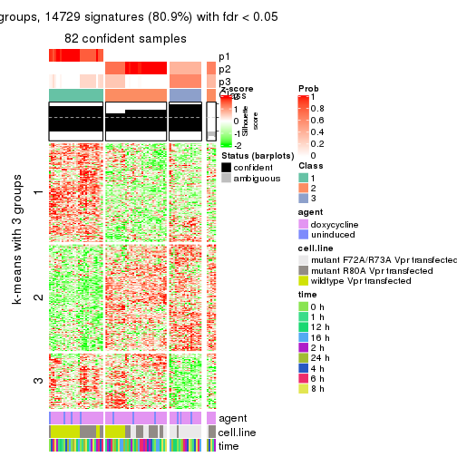
get_signatures(res, k = 4)
get_signatures(res, k = 5)
get_signatures(res, k = 6)
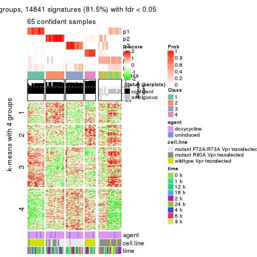
Signature heatmaps where rows are not scaled:
get_signatures(res, k = 2, scale_rows = FALSE)

get_signatures(res, k = 3, scale_rows = FALSE)
get_signatures(res, k = 4, scale_rows = FALSE)
get_signatures(res, k = 5, scale_rows = FALSE)
get_signatures(res, k = 6, scale_rows = FALSE)
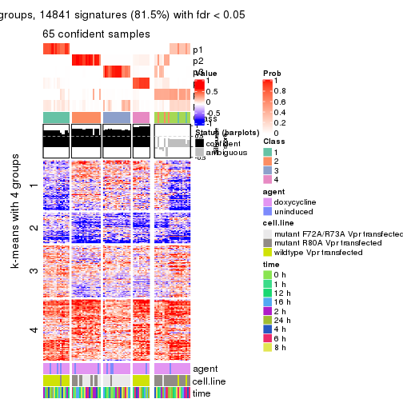
Compare the overlap of signatures from different k:
compare_signatures(res)
get_signature() returns a data frame invisibly. TO get the list of signatures, the function
call should be assigned to a variable explicitly. In following code, if plot argument is set
to FALSE, no heatmap is plotted while only the differential analysis is performed.
# code only for demonstration
tb = get_signature(res, k = ..., plot = FALSE)
An example of the output of tb is:
#> which_row fdr mean_1 mean_2 scaled_mean_1 scaled_mean_2 km
#> 1 38 0.042760348 8.373488 9.131774 -0.5533452 0.5164555 1
#> 2 40 0.018707592 7.106213 8.469186 -0.6173731 0.5762149 1
#> 3 55 0.019134737 10.221463 11.207825 -0.6159697 0.5749050 1
#> 4 59 0.006059896 5.921854 7.869574 -0.6899429 0.6439467 1
#> 5 60 0.018055526 8.928898 10.211722 -0.6204761 0.5791110 1
#> 6 98 0.009384629 15.714769 14.887706 0.6635654 -0.6193277 2
...
The columns in tb are:
which_row: row indices corresponding to the input matrix.fdr: FDR for the differential test. mean_x: The mean value in group x.scaled_mean_x: The mean value in group x after rows are scaled.km: Row groups if k-means clustering is applied to rows.UMAP plot which shows how samples are separated.
dimension_reduction(res, k = 2, method = "UMAP")
dimension_reduction(res, k = 3, method = "UMAP")
dimension_reduction(res, k = 4, method = "UMAP")
dimension_reduction(res, k = 5, method = "UMAP")
dimension_reduction(res, k = 6, method = "UMAP")
Following heatmap shows how subgroups are split when increasing k:
collect_classes(res)
Test correlation between subgroups and known annotations. If the known annotation is numeric, one-way ANOVA test is applied, and if the known annotation is discrete, chi-squared contingency table test is applied.
test_to_known_factors(res)
#> n agent(p) cell.line(p) time(p) k
#> SD:kmeans 87 0.971 5.49e-06 1 2
#> SD:kmeans 82 0.693 5.82e-10 1 3
#> SD:kmeans 87 0.942 2.92e-14 1 4
#> SD:kmeans 80 0.872 2.64e-21 1 5
#> SD:kmeans 65 0.871 1.09e-14 1 6
If matrix rows can be associated to genes, consider to use functional_enrichment(res,
...) to perform function enrichment for the signature genes. See this vignette for more detailed explanations.
The object with results only for a single top-value method and a single partition method can be extracted as:
res = res_list["SD", "skmeans"]
# you can also extract it by
# res = res_list["SD:skmeans"]
A summary of res and all the functions that can be applied to it:
res
#> A 'ConsensusPartition' object with k = 2, 3, 4, 5, 6.
#> On a matrix with 18211 rows and 87 columns.
#> Top rows (1000, 2000, 3000, 4000, 5000) are extracted by 'SD' method.
#> Subgroups are detected by 'skmeans' method.
#> Performed in total 1250 partitions by row resampling.
#> Best k for subgroups seems to be 4.
#>
#> Following methods can be applied to this 'ConsensusPartition' object:
#> [1] "cola_report" "collect_classes" "collect_plots"
#> [4] "collect_stats" "colnames" "compare_signatures"
#> [7] "consensus_heatmap" "dimension_reduction" "functional_enrichment"
#> [10] "get_anno_col" "get_anno" "get_classes"
#> [13] "get_consensus" "get_matrix" "get_membership"
#> [16] "get_param" "get_signatures" "get_stats"
#> [19] "is_best_k" "is_stable_k" "membership_heatmap"
#> [22] "ncol" "nrow" "plot_ecdf"
#> [25] "rownames" "select_partition_number" "show"
#> [28] "suggest_best_k" "test_to_known_factors"
collect_plots() function collects all the plots made from res for all k (number of partitions)
into one single page to provide an easy and fast comparison between different k.
collect_plots(res)
The plots are:
k and the heatmap of
predicted classes for each k.k.k.k.All the plots in panels can be made by individual functions and they are plotted later in this section.
select_partition_number() produces several plots showing different
statistics for choosing “optimized” k. There are following statistics:
k;k, the area increased is defined as \(A_k - A_{k-1}\).The detailed explanations of these statistics can be found in the cola vignette.
Generally speaking, lower PAC score, higher mean silhouette score or higher
concordance corresponds to better partition. Rand index and Jaccard index
measure how similar the current partition is compared to partition with k-1.
If they are too similar, we won't accept k is better than k-1.
select_partition_number(res)
The numeric values for all these statistics can be obtained by get_stats().
get_stats(res)
#> k 1-PAC mean_silhouette concordance area_increased Rand Jaccard
#> 2 2 1.000 0.986 0.995 0.4615 0.536 0.536
#> 3 3 1.000 0.978 0.987 0.4396 0.786 0.605
#> 4 4 0.991 0.947 0.972 0.1125 0.925 0.776
#> 5 5 0.898 0.923 0.935 0.0531 0.943 0.789
#> 6 6 0.861 0.659 0.804 0.0457 0.967 0.850
suggest_best_k() suggests the best \(k\) based on these statistics. The rules are as follows:
suggest_best_k(res)
#> [1] 4
#> attr(,"optional")
#> [1] 2 3
There is also optional best \(k\) = 2 3 that is worth to check.
Following shows the table of the partitions (You need to click the show/hide
code output link to see it). The membership matrix (columns with name p*)
is inferred by
clue::cl_consensus()
function with the SE method. Basically the value in the membership matrix
represents the probability to belong to a certain group. The finall class
label for an item is determined with the group with highest probability it
belongs to.
In get_classes() function, the entropy is calculated from the membership
matrix and the silhouette score is calculated from the consensus matrix.
cbind(get_classes(res, k = 2), get_membership(res, k = 2))
#> class entropy silhouette p1 p2
#> GSM41890 1 0.000 0.985 1.000 0.000
#> GSM41917 1 0.000 0.985 1.000 0.000
#> GSM41936 2 0.000 1.000 0.000 1.000
#> GSM41893 1 0.000 0.985 1.000 0.000
#> GSM41920 1 0.000 0.985 1.000 0.000
#> GSM41937 2 0.000 1.000 0.000 1.000
#> GSM41896 1 0.000 0.985 1.000 0.000
#> GSM41923 1 0.000 0.985 1.000 0.000
#> GSM41938 2 0.000 1.000 0.000 1.000
#> GSM41899 1 0.000 0.985 1.000 0.000
#> GSM41925 1 0.000 0.985 1.000 0.000
#> GSM41939 2 0.000 1.000 0.000 1.000
#> GSM41902 1 0.000 0.985 1.000 0.000
#> GSM41927 1 0.000 0.985 1.000 0.000
#> GSM41940 2 0.000 1.000 0.000 1.000
#> GSM41905 1 0.000 0.985 1.000 0.000
#> GSM41929 1 0.000 0.985 1.000 0.000
#> GSM41941 2 0.000 1.000 0.000 1.000
#> GSM41908 1 0.000 0.985 1.000 0.000
#> GSM41931 1 0.000 0.985 1.000 0.000
#> GSM41942 2 0.000 1.000 0.000 1.000
#> GSM41945 2 0.000 1.000 0.000 1.000
#> GSM41911 1 0.000 0.985 1.000 0.000
#> GSM41933 1 0.000 0.985 1.000 0.000
#> GSM41943 2 0.000 1.000 0.000 1.000
#> GSM41944 2 0.000 1.000 0.000 1.000
#> GSM41876 2 0.000 1.000 0.000 1.000
#> GSM41895 2 0.000 1.000 0.000 1.000
#> GSM41898 2 0.000 1.000 0.000 1.000
#> GSM41877 2 0.000 1.000 0.000 1.000
#> GSM41901 2 0.000 1.000 0.000 1.000
#> GSM41904 2 0.000 1.000 0.000 1.000
#> GSM41878 2 0.000 1.000 0.000 1.000
#> GSM41907 2 0.000 1.000 0.000 1.000
#> GSM41910 2 0.000 1.000 0.000 1.000
#> GSM41879 2 0.000 1.000 0.000 1.000
#> GSM41913 2 0.000 1.000 0.000 1.000
#> GSM41916 2 0.000 1.000 0.000 1.000
#> GSM41880 2 0.000 1.000 0.000 1.000
#> GSM41919 2 0.000 1.000 0.000 1.000
#> GSM41922 2 0.000 1.000 0.000 1.000
#> GSM41881 2 0.000 1.000 0.000 1.000
#> GSM41924 2 0.000 1.000 0.000 1.000
#> GSM41926 2 0.000 1.000 0.000 1.000
#> GSM41869 2 0.000 1.000 0.000 1.000
#> GSM41928 1 0.991 0.201 0.556 0.444
#> GSM41930 2 0.000 1.000 0.000 1.000
#> GSM41882 2 0.000 1.000 0.000 1.000
#> GSM41932 2 0.000 1.000 0.000 1.000
#> GSM41934 2 0.000 1.000 0.000 1.000
#> GSM41860 2 0.000 1.000 0.000 1.000
#> GSM41871 2 0.000 1.000 0.000 1.000
#> GSM41875 2 0.000 1.000 0.000 1.000
#> GSM41894 1 0.000 0.985 1.000 0.000
#> GSM41897 1 0.000 0.985 1.000 0.000
#> GSM41861 2 0.000 1.000 0.000 1.000
#> GSM41872 2 0.000 1.000 0.000 1.000
#> GSM41900 1 0.000 0.985 1.000 0.000
#> GSM41862 2 0.000 1.000 0.000 1.000
#> GSM41873 2 0.000 1.000 0.000 1.000
#> GSM41903 1 0.000 0.985 1.000 0.000
#> GSM41863 2 0.000 1.000 0.000 1.000
#> GSM41883 2 0.000 1.000 0.000 1.000
#> GSM41906 1 0.000 0.985 1.000 0.000
#> GSM41864 2 0.000 1.000 0.000 1.000
#> GSM41884 2 0.000 1.000 0.000 1.000
#> GSM41909 1 0.000 0.985 1.000 0.000
#> GSM41912 1 0.000 0.985 1.000 0.000
#> GSM41865 2 0.000 1.000 0.000 1.000
#> GSM41885 2 0.000 1.000 0.000 1.000
#> GSM41915 1 0.000 0.985 1.000 0.000
#> GSM41866 2 0.000 1.000 0.000 1.000
#> GSM41886 2 0.000 1.000 0.000 1.000
#> GSM41918 1 0.000 0.985 1.000 0.000
#> GSM41867 2 0.000 1.000 0.000 1.000
#> GSM41868 2 0.000 1.000 0.000 1.000
#> GSM41921 1 0.000 0.985 1.000 0.000
#> GSM41887 1 0.000 0.985 1.000 0.000
#> GSM41914 1 0.000 0.985 1.000 0.000
#> GSM41935 2 0.000 1.000 0.000 1.000
#> GSM41874 2 0.000 1.000 0.000 1.000
#> GSM41889 2 0.000 1.000 0.000 1.000
#> GSM41892 2 0.000 1.000 0.000 1.000
#> GSM41859 2 0.000 1.000 0.000 1.000
#> GSM41870 2 0.000 1.000 0.000 1.000
#> GSM41888 1 0.000 0.985 1.000 0.000
#> GSM41891 1 0.000 0.985 1.000 0.000
cbind(get_classes(res, k = 3), get_membership(res, k = 3))
#> class entropy silhouette p1 p2 p3
#> GSM41890 1 0.000 1.000 1 0.000 0.000
#> GSM41917 1 0.000 1.000 1 0.000 0.000
#> GSM41936 2 0.196 0.957 0 0.944 0.056
#> GSM41893 1 0.000 1.000 1 0.000 0.000
#> GSM41920 1 0.000 1.000 1 0.000 0.000
#> GSM41937 2 0.196 0.957 0 0.944 0.056
#> GSM41896 1 0.000 1.000 1 0.000 0.000
#> GSM41923 1 0.000 1.000 1 0.000 0.000
#> GSM41938 2 0.196 0.957 0 0.944 0.056
#> GSM41899 1 0.000 1.000 1 0.000 0.000
#> GSM41925 1 0.000 1.000 1 0.000 0.000
#> GSM41939 2 0.196 0.957 0 0.944 0.056
#> GSM41902 1 0.000 1.000 1 0.000 0.000
#> GSM41927 1 0.000 1.000 1 0.000 0.000
#> GSM41940 2 0.196 0.957 0 0.944 0.056
#> GSM41905 1 0.000 1.000 1 0.000 0.000
#> GSM41929 1 0.000 1.000 1 0.000 0.000
#> GSM41941 2 0.196 0.957 0 0.944 0.056
#> GSM41908 1 0.000 1.000 1 0.000 0.000
#> GSM41931 1 0.000 1.000 1 0.000 0.000
#> GSM41942 2 0.196 0.957 0 0.944 0.056
#> GSM41945 2 0.196 0.957 0 0.944 0.056
#> GSM41911 1 0.000 1.000 1 0.000 0.000
#> GSM41933 1 0.000 1.000 1 0.000 0.000
#> GSM41943 2 0.196 0.957 0 0.944 0.056
#> GSM41944 2 0.196 0.957 0 0.944 0.056
#> GSM41876 2 0.000 0.980 0 1.000 0.000
#> GSM41895 3 0.000 0.975 0 0.000 1.000
#> GSM41898 3 0.000 0.975 0 0.000 1.000
#> GSM41877 2 0.000 0.980 0 1.000 0.000
#> GSM41901 3 0.000 0.975 0 0.000 1.000
#> GSM41904 2 0.000 0.980 0 1.000 0.000
#> GSM41878 2 0.000 0.980 0 1.000 0.000
#> GSM41907 3 0.000 0.975 0 0.000 1.000
#> GSM41910 3 0.000 0.975 0 0.000 1.000
#> GSM41879 2 0.000 0.980 0 1.000 0.000
#> GSM41913 3 0.000 0.975 0 0.000 1.000
#> GSM41916 3 0.000 0.975 0 0.000 1.000
#> GSM41880 2 0.000 0.980 0 1.000 0.000
#> GSM41919 3 0.000 0.975 0 0.000 1.000
#> GSM41922 3 0.000 0.975 0 0.000 1.000
#> GSM41881 2 0.000 0.980 0 1.000 0.000
#> GSM41924 3 0.000 0.975 0 0.000 1.000
#> GSM41926 3 0.000 0.975 0 0.000 1.000
#> GSM41869 2 0.000 0.980 0 1.000 0.000
#> GSM41928 3 0.000 0.975 0 0.000 1.000
#> GSM41930 3 0.000 0.975 0 0.000 1.000
#> GSM41882 3 0.000 0.975 0 0.000 1.000
#> GSM41932 3 0.000 0.975 0 0.000 1.000
#> GSM41934 3 0.000 0.975 0 0.000 1.000
#> GSM41860 3 0.348 0.868 0 0.128 0.872
#> GSM41871 2 0.000 0.980 0 1.000 0.000
#> GSM41875 2 0.000 0.980 0 1.000 0.000
#> GSM41894 1 0.000 1.000 1 0.000 0.000
#> GSM41897 1 0.000 1.000 1 0.000 0.000
#> GSM41861 3 0.348 0.868 0 0.128 0.872
#> GSM41872 2 0.000 0.980 0 1.000 0.000
#> GSM41900 1 0.000 1.000 1 0.000 0.000
#> GSM41862 3 0.355 0.863 0 0.132 0.868
#> GSM41873 2 0.000 0.980 0 1.000 0.000
#> GSM41903 1 0.000 1.000 1 0.000 0.000
#> GSM41863 2 0.000 0.980 0 1.000 0.000
#> GSM41883 2 0.000 0.980 0 1.000 0.000
#> GSM41906 1 0.000 1.000 1 0.000 0.000
#> GSM41864 3 0.355 0.863 0 0.132 0.868
#> GSM41884 2 0.000 0.980 0 1.000 0.000
#> GSM41909 1 0.000 1.000 1 0.000 0.000
#> GSM41912 1 0.000 1.000 1 0.000 0.000
#> GSM41865 2 0.000 0.980 0 1.000 0.000
#> GSM41885 2 0.000 0.980 0 1.000 0.000
#> GSM41915 1 0.000 1.000 1 0.000 0.000
#> GSM41866 2 0.000 0.980 0 1.000 0.000
#> GSM41886 2 0.000 0.980 0 1.000 0.000
#> GSM41918 1 0.000 1.000 1 0.000 0.000
#> GSM41867 2 0.000 0.980 0 1.000 0.000
#> GSM41868 2 0.000 0.980 0 1.000 0.000
#> GSM41921 1 0.000 1.000 1 0.000 0.000
#> GSM41887 1 0.000 1.000 1 0.000 0.000
#> GSM41914 1 0.000 1.000 1 0.000 0.000
#> GSM41935 2 0.196 0.957 0 0.944 0.056
#> GSM41874 2 0.000 0.980 0 1.000 0.000
#> GSM41889 3 0.000 0.975 0 0.000 1.000
#> GSM41892 3 0.000 0.975 0 0.000 1.000
#> GSM41859 3 0.000 0.975 0 0.000 1.000
#> GSM41870 2 0.000 0.980 0 1.000 0.000
#> GSM41888 1 0.000 1.000 1 0.000 0.000
#> GSM41891 1 0.000 1.000 1 0.000 0.000
cbind(get_classes(res, k = 4), get_membership(res, k = 4))
#> class entropy silhouette p1 p2 p3 p4
#> GSM41890 1 0.0336 0.994 0.992 0.000 0.000 0.008
#> GSM41917 1 0.0336 0.994 0.992 0.000 0.000 0.008
#> GSM41936 4 0.0592 0.902 0.000 0.016 0.000 0.984
#> GSM41893 1 0.0336 0.994 0.992 0.000 0.000 0.008
#> GSM41920 1 0.0336 0.994 0.992 0.000 0.000 0.008
#> GSM41937 4 0.0592 0.902 0.000 0.016 0.000 0.984
#> GSM41896 1 0.0336 0.994 0.992 0.000 0.000 0.008
#> GSM41923 1 0.0000 0.994 1.000 0.000 0.000 0.000
#> GSM41938 4 0.0592 0.902 0.000 0.016 0.000 0.984
#> GSM41899 1 0.0336 0.994 0.992 0.000 0.000 0.008
#> GSM41925 1 0.0000 0.994 1.000 0.000 0.000 0.000
#> GSM41939 4 0.0592 0.902 0.000 0.016 0.000 0.984
#> GSM41902 1 0.0336 0.994 0.992 0.000 0.000 0.008
#> GSM41927 1 0.0000 0.994 1.000 0.000 0.000 0.000
#> GSM41940 4 0.0592 0.902 0.000 0.016 0.000 0.984
#> GSM41905 1 0.0188 0.994 0.996 0.000 0.000 0.004
#> GSM41929 1 0.0188 0.994 0.996 0.000 0.000 0.004
#> GSM41941 4 0.0592 0.902 0.000 0.016 0.000 0.984
#> GSM41908 1 0.0336 0.994 0.992 0.000 0.000 0.008
#> GSM41931 1 0.0336 0.994 0.992 0.000 0.000 0.008
#> GSM41942 4 0.0592 0.902 0.000 0.016 0.000 0.984
#> GSM41945 4 0.0592 0.902 0.000 0.016 0.000 0.984
#> GSM41911 1 0.0336 0.994 0.992 0.000 0.000 0.008
#> GSM41933 1 0.0336 0.994 0.992 0.000 0.000 0.008
#> GSM41943 4 0.0592 0.902 0.000 0.016 0.000 0.984
#> GSM41944 4 0.0592 0.902 0.000 0.016 0.000 0.984
#> GSM41876 2 0.0000 0.997 0.000 1.000 0.000 0.000
#> GSM41895 3 0.0000 0.966 0.000 0.000 1.000 0.000
#> GSM41898 3 0.0000 0.966 0.000 0.000 1.000 0.000
#> GSM41877 2 0.0000 0.997 0.000 1.000 0.000 0.000
#> GSM41901 3 0.0000 0.966 0.000 0.000 1.000 0.000
#> GSM41904 2 0.0000 0.997 0.000 1.000 0.000 0.000
#> GSM41878 2 0.0000 0.997 0.000 1.000 0.000 0.000
#> GSM41907 3 0.0000 0.966 0.000 0.000 1.000 0.000
#> GSM41910 3 0.0000 0.966 0.000 0.000 1.000 0.000
#> GSM41879 2 0.0000 0.997 0.000 1.000 0.000 0.000
#> GSM41913 3 0.0000 0.966 0.000 0.000 1.000 0.000
#> GSM41916 3 0.0000 0.966 0.000 0.000 1.000 0.000
#> GSM41880 2 0.0000 0.997 0.000 1.000 0.000 0.000
#> GSM41919 3 0.0000 0.966 0.000 0.000 1.000 0.000
#> GSM41922 3 0.0000 0.966 0.000 0.000 1.000 0.000
#> GSM41881 2 0.0000 0.997 0.000 1.000 0.000 0.000
#> GSM41924 3 0.0000 0.966 0.000 0.000 1.000 0.000
#> GSM41926 3 0.0000 0.966 0.000 0.000 1.000 0.000
#> GSM41869 2 0.0000 0.997 0.000 1.000 0.000 0.000
#> GSM41928 3 0.0000 0.966 0.000 0.000 1.000 0.000
#> GSM41930 3 0.0000 0.966 0.000 0.000 1.000 0.000
#> GSM41882 3 0.4382 0.611 0.000 0.000 0.704 0.296
#> GSM41932 3 0.0000 0.966 0.000 0.000 1.000 0.000
#> GSM41934 3 0.0000 0.966 0.000 0.000 1.000 0.000
#> GSM41860 3 0.1724 0.932 0.000 0.020 0.948 0.032
#> GSM41871 2 0.0000 0.997 0.000 1.000 0.000 0.000
#> GSM41875 2 0.0000 0.997 0.000 1.000 0.000 0.000
#> GSM41894 1 0.0336 0.993 0.992 0.000 0.000 0.008
#> GSM41897 1 0.0336 0.993 0.992 0.000 0.000 0.008
#> GSM41861 3 0.1724 0.932 0.000 0.020 0.948 0.032
#> GSM41872 2 0.0000 0.997 0.000 1.000 0.000 0.000
#> GSM41900 1 0.0336 0.993 0.992 0.000 0.000 0.008
#> GSM41862 3 0.4245 0.751 0.000 0.020 0.784 0.196
#> GSM41873 2 0.0000 0.997 0.000 1.000 0.000 0.000
#> GSM41903 1 0.0336 0.993 0.992 0.000 0.000 0.008
#> GSM41863 4 0.4866 0.442 0.000 0.404 0.000 0.596
#> GSM41883 2 0.0000 0.997 0.000 1.000 0.000 0.000
#> GSM41906 1 0.0336 0.993 0.992 0.000 0.000 0.008
#> GSM41864 3 0.3037 0.870 0.000 0.020 0.880 0.100
#> GSM41884 2 0.0000 0.997 0.000 1.000 0.000 0.000
#> GSM41909 1 0.0336 0.993 0.992 0.000 0.000 0.008
#> GSM41912 1 0.0336 0.993 0.992 0.000 0.000 0.008
#> GSM41865 2 0.1211 0.949 0.000 0.960 0.000 0.040
#> GSM41885 2 0.0000 0.997 0.000 1.000 0.000 0.000
#> GSM41915 1 0.0336 0.993 0.992 0.000 0.000 0.008
#> GSM41866 4 0.4916 0.398 0.000 0.424 0.000 0.576
#> GSM41886 2 0.0000 0.997 0.000 1.000 0.000 0.000
#> GSM41918 1 0.0336 0.993 0.992 0.000 0.000 0.008
#> GSM41867 4 0.4898 0.417 0.000 0.416 0.000 0.584
#> GSM41868 2 0.0000 0.997 0.000 1.000 0.000 0.000
#> GSM41921 1 0.0336 0.993 0.992 0.000 0.000 0.008
#> GSM41887 1 0.0336 0.994 0.992 0.000 0.000 0.008
#> GSM41914 1 0.0336 0.994 0.992 0.000 0.000 0.008
#> GSM41935 4 0.0592 0.902 0.000 0.016 0.000 0.984
#> GSM41874 2 0.0000 0.997 0.000 1.000 0.000 0.000
#> GSM41889 3 0.0000 0.966 0.000 0.000 1.000 0.000
#> GSM41892 3 0.0000 0.966 0.000 0.000 1.000 0.000
#> GSM41859 3 0.0000 0.966 0.000 0.000 1.000 0.000
#> GSM41870 2 0.0000 0.997 0.000 1.000 0.000 0.000
#> GSM41888 1 0.0336 0.993 0.992 0.000 0.000 0.008
#> GSM41891 1 0.0336 0.993 0.992 0.000 0.000 0.008
cbind(get_classes(res, k = 5), get_membership(res, k = 5))
#> class entropy silhouette p1 p2 p3 p4 p5
#> GSM41890 1 0.0703 0.949 0.976 0.000 0.000 0.000 0.024
#> GSM41917 1 0.0794 0.948 0.972 0.000 0.000 0.000 0.028
#> GSM41936 4 0.0000 1.000 0.000 0.000 0.000 1.000 0.000
#> GSM41893 1 0.0880 0.951 0.968 0.000 0.000 0.000 0.032
#> GSM41920 1 0.0794 0.948 0.972 0.000 0.000 0.000 0.028
#> GSM41937 4 0.0000 1.000 0.000 0.000 0.000 1.000 0.000
#> GSM41896 1 0.0794 0.950 0.972 0.000 0.000 0.000 0.028
#> GSM41923 1 0.0510 0.952 0.984 0.000 0.000 0.000 0.016
#> GSM41938 4 0.0000 1.000 0.000 0.000 0.000 1.000 0.000
#> GSM41899 1 0.0880 0.951 0.968 0.000 0.000 0.000 0.032
#> GSM41925 1 0.0794 0.951 0.972 0.000 0.000 0.000 0.028
#> GSM41939 4 0.0000 1.000 0.000 0.000 0.000 1.000 0.000
#> GSM41902 1 0.0794 0.948 0.972 0.000 0.000 0.000 0.028
#> GSM41927 1 0.0162 0.952 0.996 0.000 0.000 0.000 0.004
#> GSM41940 4 0.0000 1.000 0.000 0.000 0.000 1.000 0.000
#> GSM41905 1 0.0290 0.951 0.992 0.000 0.000 0.000 0.008
#> GSM41929 1 0.0162 0.952 0.996 0.000 0.000 0.000 0.004
#> GSM41941 4 0.0000 1.000 0.000 0.000 0.000 1.000 0.000
#> GSM41908 1 0.0794 0.948 0.972 0.000 0.000 0.000 0.028
#> GSM41931 1 0.0510 0.950 0.984 0.000 0.000 0.000 0.016
#> GSM41942 4 0.0000 1.000 0.000 0.000 0.000 1.000 0.000
#> GSM41945 4 0.0000 1.000 0.000 0.000 0.000 1.000 0.000
#> GSM41911 1 0.0794 0.948 0.972 0.000 0.000 0.000 0.028
#> GSM41933 1 0.0510 0.950 0.984 0.000 0.000 0.000 0.016
#> GSM41943 4 0.0000 1.000 0.000 0.000 0.000 1.000 0.000
#> GSM41944 4 0.0000 1.000 0.000 0.000 0.000 1.000 0.000
#> GSM41876 2 0.0000 0.998 0.000 1.000 0.000 0.000 0.000
#> GSM41895 3 0.2127 0.931 0.000 0.000 0.892 0.000 0.108
#> GSM41898 3 0.0290 0.936 0.000 0.000 0.992 0.000 0.008
#> GSM41877 2 0.0000 0.998 0.000 1.000 0.000 0.000 0.000
#> GSM41901 3 0.2020 0.936 0.000 0.000 0.900 0.000 0.100
#> GSM41904 5 0.3774 0.624 0.000 0.296 0.000 0.000 0.704
#> GSM41878 2 0.0000 0.998 0.000 1.000 0.000 0.000 0.000
#> GSM41907 3 0.2020 0.936 0.000 0.000 0.900 0.000 0.100
#> GSM41910 3 0.0290 0.935 0.000 0.000 0.992 0.000 0.008
#> GSM41879 2 0.0000 0.998 0.000 1.000 0.000 0.000 0.000
#> GSM41913 3 0.2020 0.936 0.000 0.000 0.900 0.000 0.100
#> GSM41916 3 0.0000 0.935 0.000 0.000 1.000 0.000 0.000
#> GSM41880 2 0.0000 0.998 0.000 1.000 0.000 0.000 0.000
#> GSM41919 3 0.1197 0.934 0.000 0.000 0.952 0.000 0.048
#> GSM41922 3 0.0162 0.934 0.000 0.000 0.996 0.000 0.004
#> GSM41881 5 0.4306 0.204 0.000 0.492 0.000 0.000 0.508
#> GSM41924 3 0.2020 0.936 0.000 0.000 0.900 0.000 0.100
#> GSM41926 3 0.0963 0.919 0.000 0.000 0.964 0.000 0.036
#> GSM41869 2 0.0000 0.998 0.000 1.000 0.000 0.000 0.000
#> GSM41928 3 0.0963 0.919 0.000 0.000 0.964 0.000 0.036
#> GSM41930 3 0.0794 0.924 0.000 0.000 0.972 0.000 0.028
#> GSM41882 5 0.5862 0.575 0.000 0.000 0.176 0.220 0.604
#> GSM41932 3 0.2020 0.936 0.000 0.000 0.900 0.000 0.100
#> GSM41934 3 0.0880 0.921 0.000 0.000 0.968 0.000 0.032
#> GSM41860 5 0.3081 0.730 0.000 0.000 0.156 0.012 0.832
#> GSM41871 2 0.0000 0.998 0.000 1.000 0.000 0.000 0.000
#> GSM41875 2 0.0162 0.993 0.000 0.996 0.000 0.004 0.000
#> GSM41894 1 0.2074 0.938 0.896 0.000 0.000 0.000 0.104
#> GSM41897 1 0.2074 0.938 0.896 0.000 0.000 0.000 0.104
#> GSM41861 5 0.3081 0.730 0.000 0.000 0.156 0.012 0.832
#> GSM41872 2 0.0000 0.998 0.000 1.000 0.000 0.000 0.000
#> GSM41900 1 0.2074 0.938 0.896 0.000 0.000 0.000 0.104
#> GSM41862 5 0.3437 0.754 0.000 0.000 0.120 0.048 0.832
#> GSM41873 2 0.0162 0.994 0.000 0.996 0.000 0.000 0.004
#> GSM41903 1 0.2074 0.938 0.896 0.000 0.000 0.000 0.104
#> GSM41863 5 0.4495 0.701 0.000 0.064 0.000 0.200 0.736
#> GSM41883 2 0.0000 0.998 0.000 1.000 0.000 0.000 0.000
#> GSM41906 1 0.2074 0.938 0.896 0.000 0.000 0.000 0.104
#> GSM41864 5 0.3355 0.749 0.000 0.000 0.132 0.036 0.832
#> GSM41884 2 0.0000 0.998 0.000 1.000 0.000 0.000 0.000
#> GSM41909 1 0.2074 0.938 0.896 0.000 0.000 0.000 0.104
#> GSM41912 1 0.2074 0.938 0.896 0.000 0.000 0.000 0.104
#> GSM41865 5 0.3690 0.706 0.000 0.224 0.000 0.012 0.764
#> GSM41885 2 0.0000 0.998 0.000 1.000 0.000 0.000 0.000
#> GSM41915 1 0.2074 0.938 0.896 0.000 0.000 0.000 0.104
#> GSM41866 5 0.4558 0.717 0.000 0.080 0.000 0.180 0.740
#> GSM41886 2 0.0000 0.998 0.000 1.000 0.000 0.000 0.000
#> GSM41918 1 0.2074 0.938 0.896 0.000 0.000 0.000 0.104
#> GSM41867 5 0.4647 0.712 0.000 0.084 0.000 0.184 0.732
#> GSM41868 2 0.0000 0.998 0.000 1.000 0.000 0.000 0.000
#> GSM41921 1 0.2074 0.938 0.896 0.000 0.000 0.000 0.104
#> GSM41887 1 0.0703 0.949 0.976 0.000 0.000 0.000 0.024
#> GSM41914 1 0.0794 0.948 0.972 0.000 0.000 0.000 0.028
#> GSM41935 4 0.0000 1.000 0.000 0.000 0.000 1.000 0.000
#> GSM41874 2 0.0703 0.971 0.000 0.976 0.000 0.000 0.024
#> GSM41889 3 0.2127 0.931 0.000 0.000 0.892 0.000 0.108
#> GSM41892 3 0.1908 0.938 0.000 0.000 0.908 0.000 0.092
#> GSM41859 3 0.1908 0.938 0.000 0.000 0.908 0.000 0.092
#> GSM41870 2 0.0000 0.998 0.000 1.000 0.000 0.000 0.000
#> GSM41888 1 0.1908 0.943 0.908 0.000 0.000 0.000 0.092
#> GSM41891 1 0.2074 0.938 0.896 0.000 0.000 0.000 0.104
cbind(get_classes(res, k = 6), get_membership(res, k = 6))
#> class entropy silhouette p1 p2 p3 p4 p5 p6
#> GSM41890 5 0.3833 -0.6680 0.444 0.000 0.000 0.000 0.556 0.000
#> GSM41917 1 0.3843 0.9627 0.548 0.000 0.000 0.000 0.452 0.000
#> GSM41936 4 0.0260 0.9940 0.008 0.000 0.000 0.992 0.000 0.000
#> GSM41893 5 0.3817 -0.6212 0.432 0.000 0.000 0.000 0.568 0.000
#> GSM41920 1 0.3847 0.9564 0.544 0.000 0.000 0.000 0.456 0.000
#> GSM41937 4 0.0260 0.9940 0.008 0.000 0.000 0.992 0.000 0.000
#> GSM41896 5 0.3847 -0.7018 0.456 0.000 0.000 0.000 0.544 0.000
#> GSM41923 5 0.3126 0.2320 0.248 0.000 0.000 0.000 0.752 0.000
#> GSM41938 4 0.0260 0.9940 0.008 0.000 0.000 0.992 0.000 0.000
#> GSM41899 5 0.3023 0.2644 0.232 0.000 0.000 0.000 0.768 0.000
#> GSM41925 5 0.2697 0.3713 0.188 0.000 0.000 0.000 0.812 0.000
#> GSM41939 4 0.0260 0.9940 0.008 0.000 0.000 0.992 0.000 0.000
#> GSM41902 1 0.3843 0.9627 0.548 0.000 0.000 0.000 0.452 0.000
#> GSM41927 5 0.3428 0.0652 0.304 0.000 0.000 0.000 0.696 0.000
#> GSM41940 4 0.0000 0.9957 0.000 0.000 0.000 1.000 0.000 0.000
#> GSM41905 5 0.3823 -0.5935 0.436 0.000 0.000 0.000 0.564 0.000
#> GSM41929 5 0.3592 -0.1221 0.344 0.000 0.000 0.000 0.656 0.000
#> GSM41941 4 0.0146 0.9956 0.004 0.000 0.000 0.996 0.000 0.000
#> GSM41908 5 0.3866 -0.8021 0.484 0.000 0.000 0.000 0.516 0.000
#> GSM41931 5 0.3868 -0.8184 0.492 0.000 0.000 0.000 0.508 0.000
#> GSM41942 4 0.0000 0.9957 0.000 0.000 0.000 1.000 0.000 0.000
#> GSM41945 4 0.0146 0.9956 0.004 0.000 0.000 0.996 0.000 0.000
#> GSM41911 1 0.3868 0.8532 0.504 0.000 0.000 0.000 0.496 0.000
#> GSM41933 5 0.3866 -0.7902 0.484 0.000 0.000 0.000 0.516 0.000
#> GSM41943 4 0.0146 0.9956 0.004 0.000 0.000 0.996 0.000 0.000
#> GSM41944 4 0.0146 0.9956 0.004 0.000 0.000 0.996 0.000 0.000
#> GSM41876 2 0.0653 0.9746 0.012 0.980 0.004 0.000 0.000 0.004
#> GSM41895 3 0.1829 0.8539 0.024 0.000 0.920 0.000 0.000 0.056
#> GSM41898 3 0.2738 0.8545 0.176 0.000 0.820 0.000 0.000 0.004
#> GSM41877 2 0.0405 0.9763 0.008 0.988 0.000 0.000 0.000 0.004
#> GSM41901 3 0.1219 0.8653 0.004 0.000 0.948 0.000 0.000 0.048
#> GSM41904 6 0.2595 0.7699 0.004 0.160 0.000 0.000 0.000 0.836
#> GSM41878 2 0.0405 0.9763 0.008 0.988 0.000 0.000 0.000 0.004
#> GSM41907 3 0.1219 0.8653 0.004 0.000 0.948 0.000 0.000 0.048
#> GSM41910 3 0.2871 0.8512 0.192 0.000 0.804 0.000 0.000 0.004
#> GSM41879 2 0.0603 0.9753 0.016 0.980 0.000 0.000 0.000 0.004
#> GSM41913 3 0.1219 0.8653 0.004 0.000 0.948 0.000 0.000 0.048
#> GSM41916 3 0.2933 0.8492 0.200 0.000 0.796 0.000 0.000 0.004
#> GSM41880 2 0.0653 0.9746 0.012 0.980 0.004 0.000 0.000 0.004
#> GSM41919 3 0.2679 0.8535 0.096 0.000 0.864 0.000 0.000 0.040
#> GSM41922 3 0.3043 0.8477 0.200 0.000 0.792 0.000 0.000 0.008
#> GSM41881 6 0.4388 0.3324 0.028 0.400 0.000 0.000 0.000 0.572
#> GSM41924 3 0.1075 0.8659 0.000 0.000 0.952 0.000 0.000 0.048
#> GSM41926 3 0.3998 0.7710 0.340 0.000 0.644 0.000 0.000 0.016
#> GSM41869 2 0.0363 0.9769 0.012 0.988 0.000 0.000 0.000 0.000
#> GSM41928 3 0.3394 0.8219 0.200 0.000 0.776 0.000 0.000 0.024
#> GSM41930 3 0.3674 0.8167 0.268 0.000 0.716 0.000 0.000 0.016
#> GSM41882 6 0.6946 0.1906 0.072 0.000 0.320 0.204 0.000 0.404
#> GSM41932 3 0.1219 0.8653 0.004 0.000 0.948 0.000 0.000 0.048
#> GSM41934 3 0.3717 0.8129 0.276 0.000 0.708 0.000 0.000 0.016
#> GSM41860 6 0.1556 0.8197 0.000 0.000 0.080 0.000 0.000 0.920
#> GSM41871 2 0.0363 0.9772 0.012 0.988 0.000 0.000 0.000 0.000
#> GSM41875 2 0.1765 0.9447 0.052 0.924 0.000 0.000 0.000 0.024
#> GSM41894 5 0.0000 0.5822 0.000 0.000 0.000 0.000 1.000 0.000
#> GSM41897 5 0.0000 0.5822 0.000 0.000 0.000 0.000 1.000 0.000
#> GSM41861 6 0.1610 0.8174 0.000 0.000 0.084 0.000 0.000 0.916
#> GSM41872 2 0.0146 0.9773 0.004 0.996 0.000 0.000 0.000 0.000
#> GSM41900 5 0.0000 0.5822 0.000 0.000 0.000 0.000 1.000 0.000
#> GSM41862 6 0.0713 0.8388 0.000 0.000 0.028 0.000 0.000 0.972
#> GSM41873 2 0.0508 0.9750 0.004 0.984 0.000 0.000 0.000 0.012
#> GSM41903 5 0.0000 0.5822 0.000 0.000 0.000 0.000 1.000 0.000
#> GSM41863 6 0.2016 0.8327 0.016 0.024 0.000 0.040 0.000 0.920
#> GSM41883 2 0.0632 0.9743 0.024 0.976 0.000 0.000 0.000 0.000
#> GSM41906 5 0.0000 0.5822 0.000 0.000 0.000 0.000 1.000 0.000
#> GSM41864 6 0.0865 0.8371 0.000 0.000 0.036 0.000 0.000 0.964
#> GSM41884 2 0.0508 0.9774 0.012 0.984 0.000 0.000 0.000 0.004
#> GSM41909 5 0.0000 0.5822 0.000 0.000 0.000 0.000 1.000 0.000
#> GSM41912 5 0.0000 0.5822 0.000 0.000 0.000 0.000 1.000 0.000
#> GSM41865 6 0.1141 0.8378 0.000 0.052 0.000 0.000 0.000 0.948
#> GSM41885 2 0.0508 0.9774 0.012 0.984 0.000 0.000 0.000 0.004
#> GSM41915 5 0.0000 0.5822 0.000 0.000 0.000 0.000 1.000 0.000
#> GSM41866 6 0.1922 0.8329 0.012 0.024 0.000 0.040 0.000 0.924
#> GSM41886 2 0.0363 0.9769 0.012 0.988 0.000 0.000 0.000 0.000
#> GSM41918 5 0.0000 0.5822 0.000 0.000 0.000 0.000 1.000 0.000
#> GSM41867 6 0.2484 0.8270 0.036 0.024 0.000 0.044 0.000 0.896
#> GSM41868 2 0.1075 0.9614 0.048 0.952 0.000 0.000 0.000 0.000
#> GSM41921 5 0.0000 0.5822 0.000 0.000 0.000 0.000 1.000 0.000
#> GSM41887 5 0.3851 -0.7157 0.460 0.000 0.000 0.000 0.540 0.000
#> GSM41914 1 0.3843 0.9627 0.548 0.000 0.000 0.000 0.452 0.000
#> GSM41935 4 0.0146 0.9956 0.004 0.000 0.000 0.996 0.000 0.000
#> GSM41874 2 0.2112 0.8941 0.016 0.896 0.000 0.000 0.000 0.088
#> GSM41889 3 0.1594 0.8592 0.016 0.000 0.932 0.000 0.000 0.052
#> GSM41892 3 0.2365 0.8686 0.072 0.000 0.888 0.000 0.000 0.040
#> GSM41859 3 0.2350 0.8685 0.076 0.000 0.888 0.000 0.000 0.036
#> GSM41870 2 0.0692 0.9740 0.020 0.976 0.000 0.000 0.000 0.004
#> GSM41888 5 0.1556 0.5212 0.080 0.000 0.000 0.000 0.920 0.000
#> GSM41891 5 0.0000 0.5822 0.000 0.000 0.000 0.000 1.000 0.000
Heatmaps for the consensus matrix. It visualizes the probability of two samples to be in a same group.
consensus_heatmap(res, k = 2)
consensus_heatmap(res, k = 3)
consensus_heatmap(res, k = 4)
consensus_heatmap(res, k = 5)
consensus_heatmap(res, k = 6)
Heatmaps for the membership of samples in all partitions to see how consistent they are:
membership_heatmap(res, k = 2)
membership_heatmap(res, k = 3)
membership_heatmap(res, k = 4)
membership_heatmap(res, k = 5)
membership_heatmap(res, k = 6)
As soon as we have had the classes for columns, we can look for signatures which are significantly different between classes which can be candidate marks for certain classes. Following are the heatmaps for signatures.
Signature heatmaps where rows are scaled:
get_signatures(res, k = 2)
get_signatures(res, k = 3)
get_signatures(res, k = 4)
get_signatures(res, k = 5)
get_signatures(res, k = 6)
Signature heatmaps where rows are not scaled:
get_signatures(res, k = 2, scale_rows = FALSE)
get_signatures(res, k = 3, scale_rows = FALSE)
get_signatures(res, k = 4, scale_rows = FALSE)
get_signatures(res, k = 5, scale_rows = FALSE)
get_signatures(res, k = 6, scale_rows = FALSE)
Compare the overlap of signatures from different k:
compare_signatures(res)

get_signature() returns a data frame invisibly. TO get the list of signatures, the function
call should be assigned to a variable explicitly. In following code, if plot argument is set
to FALSE, no heatmap is plotted while only the differential analysis is performed.
# code only for demonstration
tb = get_signature(res, k = ..., plot = FALSE)
An example of the output of tb is:
#> which_row fdr mean_1 mean_2 scaled_mean_1 scaled_mean_2 km
#> 1 38 0.042760348 8.373488 9.131774 -0.5533452 0.5164555 1
#> 2 40 0.018707592 7.106213 8.469186 -0.6173731 0.5762149 1
#> 3 55 0.019134737 10.221463 11.207825 -0.6159697 0.5749050 1
#> 4 59 0.006059896 5.921854 7.869574 -0.6899429 0.6439467 1
#> 5 60 0.018055526 8.928898 10.211722 -0.6204761 0.5791110 1
#> 6 98 0.009384629 15.714769 14.887706 0.6635654 -0.6193277 2
...
The columns in tb are:
which_row: row indices corresponding to the input matrix.fdr: FDR for the differential test. mean_x: The mean value in group x.scaled_mean_x: The mean value in group x after rows are scaled.km: Row groups if k-means clustering is applied to rows.UMAP plot which shows how samples are separated.
dimension_reduction(res, k = 2, method = "UMAP")
dimension_reduction(res, k = 3, method = "UMAP")
dimension_reduction(res, k = 4, method = "UMAP")
dimension_reduction(res, k = 5, method = "UMAP")
dimension_reduction(res, k = 6, method = "UMAP")
Following heatmap shows how subgroups are split when increasing k:
collect_classes(res)
Test correlation between subgroups and known annotations. If the known annotation is numeric, one-way ANOVA test is applied, and if the known annotation is discrete, chi-squared contingency table test is applied.
test_to_known_factors(res)
#> n agent(p) cell.line(p) time(p) k
#> SD:skmeans 86 0.993 7.64e-06 1 2
#> SD:skmeans 87 0.822 1.80e-08 1 3
#> SD:skmeans 84 0.971 2.13e-13 1 4
#> SD:skmeans 86 0.751 4.32e-16 1 5
#> SD:skmeans 72 0.829 1.30e-19 1 6
If matrix rows can be associated to genes, consider to use functional_enrichment(res,
...) to perform function enrichment for the signature genes. See this vignette for more detailed explanations.
The object with results only for a single top-value method and a single partition method can be extracted as:
res = res_list["SD", "pam"]
# you can also extract it by
# res = res_list["SD:pam"]
A summary of res and all the functions that can be applied to it:
res
#> A 'ConsensusPartition' object with k = 2, 3, 4, 5, 6.
#> On a matrix with 18211 rows and 87 columns.
#> Top rows (1000, 2000, 3000, 4000, 5000) are extracted by 'SD' method.
#> Subgroups are detected by 'pam' method.
#> Performed in total 1250 partitions by row resampling.
#> Best k for subgroups seems to be 6.
#>
#> Following methods can be applied to this 'ConsensusPartition' object:
#> [1] "cola_report" "collect_classes" "collect_plots"
#> [4] "collect_stats" "colnames" "compare_signatures"
#> [7] "consensus_heatmap" "dimension_reduction" "functional_enrichment"
#> [10] "get_anno_col" "get_anno" "get_classes"
#> [13] "get_consensus" "get_matrix" "get_membership"
#> [16] "get_param" "get_signatures" "get_stats"
#> [19] "is_best_k" "is_stable_k" "membership_heatmap"
#> [22] "ncol" "nrow" "plot_ecdf"
#> [25] "rownames" "select_partition_number" "show"
#> [28] "suggest_best_k" "test_to_known_factors"
collect_plots() function collects all the plots made from res for all k (number of partitions)
into one single page to provide an easy and fast comparison between different k.
collect_plots(res)
The plots are:
k and the heatmap of
predicted classes for each k.k.k.k.All the plots in panels can be made by individual functions and they are plotted later in this section.
select_partition_number() produces several plots showing different
statistics for choosing “optimized” k. There are following statistics:
k;k, the area increased is defined as \(A_k - A_{k-1}\).The detailed explanations of these statistics can be found in the cola vignette.
Generally speaking, lower PAC score, higher mean silhouette score or higher
concordance corresponds to better partition. Rand index and Jaccard index
measure how similar the current partition is compared to partition with k-1.
If they are too similar, we won't accept k is better than k-1.
select_partition_number(res)
The numeric values for all these statistics can be obtained by get_stats().
get_stats(res)
#> k 1-PAC mean_silhouette concordance area_increased Rand Jaccard
#> 2 2 1.000 0.998 0.999 0.4570 0.543 0.543
#> 3 3 0.784 0.887 0.891 0.3293 0.865 0.751
#> 4 4 0.845 0.809 0.902 0.1862 0.861 0.659
#> 5 5 0.787 0.583 0.717 0.0812 0.853 0.533
#> 6 6 0.927 0.882 0.946 0.0734 0.907 0.604
suggest_best_k() suggests the best \(k\) based on these statistics. The rules are as follows:
suggest_best_k(res)
#> [1] 6
#> attr(,"optional")
#> [1] 2
There is also optional best \(k\) = 2 that is worth to check.
Following shows the table of the partitions (You need to click the show/hide
code output link to see it). The membership matrix (columns with name p*)
is inferred by
clue::cl_consensus()
function with the SE method. Basically the value in the membership matrix
represents the probability to belong to a certain group. The finall class
label for an item is determined with the group with highest probability it
belongs to.
In get_classes() function, the entropy is calculated from the membership
matrix and the silhouette score is calculated from the consensus matrix.
cbind(get_classes(res, k = 2), get_membership(res, k = 2))
#> class entropy silhouette p1 p2
#> GSM41890 1 0.000 0.997 1.000 0.000
#> GSM41917 1 0.000 0.997 1.000 0.000
#> GSM41936 2 0.000 1.000 0.000 1.000
#> GSM41893 1 0.000 0.997 1.000 0.000
#> GSM41920 1 0.000 0.997 1.000 0.000
#> GSM41937 2 0.000 1.000 0.000 1.000
#> GSM41896 1 0.000 0.997 1.000 0.000
#> GSM41923 1 0.000 0.997 1.000 0.000
#> GSM41938 2 0.000 1.000 0.000 1.000
#> GSM41899 1 0.000 0.997 1.000 0.000
#> GSM41925 1 0.000 0.997 1.000 0.000
#> GSM41939 2 0.000 1.000 0.000 1.000
#> GSM41902 1 0.443 0.899 0.908 0.092
#> GSM41927 1 0.000 0.997 1.000 0.000
#> GSM41940 2 0.000 1.000 0.000 1.000
#> GSM41905 1 0.000 0.997 1.000 0.000
#> GSM41929 1 0.000 0.997 1.000 0.000
#> GSM41941 2 0.000 1.000 0.000 1.000
#> GSM41908 1 0.000 0.997 1.000 0.000
#> GSM41931 1 0.000 0.997 1.000 0.000
#> GSM41942 2 0.000 1.000 0.000 1.000
#> GSM41945 2 0.000 1.000 0.000 1.000
#> GSM41911 1 0.000 0.997 1.000 0.000
#> GSM41933 1 0.000 0.997 1.000 0.000
#> GSM41943 2 0.000 1.000 0.000 1.000
#> GSM41944 2 0.000 1.000 0.000 1.000
#> GSM41876 2 0.000 1.000 0.000 1.000
#> GSM41895 2 0.000 1.000 0.000 1.000
#> GSM41898 2 0.000 1.000 0.000 1.000
#> GSM41877 2 0.000 1.000 0.000 1.000
#> GSM41901 2 0.000 1.000 0.000 1.000
#> GSM41904 2 0.000 1.000 0.000 1.000
#> GSM41878 2 0.000 1.000 0.000 1.000
#> GSM41907 2 0.000 1.000 0.000 1.000
#> GSM41910 2 0.000 1.000 0.000 1.000
#> GSM41879 2 0.000 1.000 0.000 1.000
#> GSM41913 2 0.000 1.000 0.000 1.000
#> GSM41916 2 0.000 1.000 0.000 1.000
#> GSM41880 2 0.000 1.000 0.000 1.000
#> GSM41919 2 0.000 1.000 0.000 1.000
#> GSM41922 2 0.000 1.000 0.000 1.000
#> GSM41881 2 0.000 1.000 0.000 1.000
#> GSM41924 2 0.000 1.000 0.000 1.000
#> GSM41926 2 0.000 1.000 0.000 1.000
#> GSM41869 2 0.000 1.000 0.000 1.000
#> GSM41928 2 0.000 1.000 0.000 1.000
#> GSM41930 2 0.000 1.000 0.000 1.000
#> GSM41882 2 0.000 1.000 0.000 1.000
#> GSM41932 2 0.000 1.000 0.000 1.000
#> GSM41934 2 0.000 1.000 0.000 1.000
#> GSM41860 2 0.000 1.000 0.000 1.000
#> GSM41871 2 0.000 1.000 0.000 1.000
#> GSM41875 2 0.000 1.000 0.000 1.000
#> GSM41894 1 0.000 0.997 1.000 0.000
#> GSM41897 1 0.000 0.997 1.000 0.000
#> GSM41861 2 0.000 1.000 0.000 1.000
#> GSM41872 2 0.000 1.000 0.000 1.000
#> GSM41900 1 0.000 0.997 1.000 0.000
#> GSM41862 2 0.000 1.000 0.000 1.000
#> GSM41873 2 0.000 1.000 0.000 1.000
#> GSM41903 1 0.000 0.997 1.000 0.000
#> GSM41863 2 0.000 1.000 0.000 1.000
#> GSM41883 2 0.000 1.000 0.000 1.000
#> GSM41906 1 0.000 0.997 1.000 0.000
#> GSM41864 2 0.000 1.000 0.000 1.000
#> GSM41884 2 0.000 1.000 0.000 1.000
#> GSM41909 1 0.000 0.997 1.000 0.000
#> GSM41912 1 0.000 0.997 1.000 0.000
#> GSM41865 2 0.000 1.000 0.000 1.000
#> GSM41885 2 0.000 1.000 0.000 1.000
#> GSM41915 1 0.000 0.997 1.000 0.000
#> GSM41866 2 0.000 1.000 0.000 1.000
#> GSM41886 2 0.000 1.000 0.000 1.000
#> GSM41918 1 0.000 0.997 1.000 0.000
#> GSM41867 2 0.000 1.000 0.000 1.000
#> GSM41868 2 0.000 1.000 0.000 1.000
#> GSM41921 1 0.000 0.997 1.000 0.000
#> GSM41887 1 0.000 0.997 1.000 0.000
#> GSM41914 1 0.000 0.997 1.000 0.000
#> GSM41935 2 0.000 1.000 0.000 1.000
#> GSM41874 2 0.000 1.000 0.000 1.000
#> GSM41889 2 0.000 1.000 0.000 1.000
#> GSM41892 2 0.000 1.000 0.000 1.000
#> GSM41859 2 0.000 1.000 0.000 1.000
#> GSM41870 2 0.000 1.000 0.000 1.000
#> GSM41888 1 0.000 0.997 1.000 0.000
#> GSM41891 1 0.000 0.997 1.000 0.000
cbind(get_classes(res, k = 3), get_membership(res, k = 3))
#> class entropy silhouette p1 p2 p3
#> GSM41890 1 0.0000 0.996 1.000 0.000 0.000
#> GSM41917 1 0.0000 0.996 1.000 0.000 0.000
#> GSM41936 2 0.2066 0.773 0.000 0.940 0.060
#> GSM41893 1 0.0000 0.996 1.000 0.000 0.000
#> GSM41920 1 0.0000 0.996 1.000 0.000 0.000
#> GSM41937 2 0.4235 0.868 0.000 0.824 0.176
#> GSM41896 1 0.0000 0.996 1.000 0.000 0.000
#> GSM41923 1 0.0000 0.996 1.000 0.000 0.000
#> GSM41938 2 0.5016 0.901 0.000 0.760 0.240
#> GSM41899 1 0.0000 0.996 1.000 0.000 0.000
#> GSM41925 1 0.0000 0.996 1.000 0.000 0.000
#> GSM41939 2 0.2711 0.798 0.000 0.912 0.088
#> GSM41902 1 0.2796 0.873 0.908 0.000 0.092
#> GSM41927 1 0.0000 0.996 1.000 0.000 0.000
#> GSM41940 2 0.5016 0.901 0.000 0.760 0.240
#> GSM41905 1 0.0000 0.996 1.000 0.000 0.000
#> GSM41929 1 0.0000 0.996 1.000 0.000 0.000
#> GSM41941 2 0.5016 0.901 0.000 0.760 0.240
#> GSM41908 1 0.0000 0.996 1.000 0.000 0.000
#> GSM41931 1 0.0000 0.996 1.000 0.000 0.000
#> GSM41942 2 0.5016 0.901 0.000 0.760 0.240
#> GSM41945 2 0.5016 0.901 0.000 0.760 0.240
#> GSM41911 1 0.0000 0.996 1.000 0.000 0.000
#> GSM41933 1 0.0000 0.996 1.000 0.000 0.000
#> GSM41943 2 0.5785 0.809 0.000 0.668 0.332
#> GSM41944 2 0.5016 0.901 0.000 0.760 0.240
#> GSM41876 3 0.6291 0.408 0.000 0.468 0.532
#> GSM41895 3 0.3941 0.835 0.000 0.156 0.844
#> GSM41898 3 0.4291 0.825 0.000 0.180 0.820
#> GSM41877 3 0.2066 0.860 0.000 0.060 0.940
#> GSM41901 3 0.4291 0.825 0.000 0.180 0.820
#> GSM41904 3 0.0000 0.868 0.000 0.000 1.000
#> GSM41878 3 0.2066 0.860 0.000 0.060 0.940
#> GSM41907 3 0.4291 0.825 0.000 0.180 0.820
#> GSM41910 3 0.4291 0.825 0.000 0.180 0.820
#> GSM41879 3 0.2066 0.860 0.000 0.060 0.940
#> GSM41913 3 0.4291 0.825 0.000 0.180 0.820
#> GSM41916 3 0.4291 0.825 0.000 0.180 0.820
#> GSM41880 3 0.6299 0.404 0.000 0.476 0.524
#> GSM41919 3 0.4235 0.828 0.000 0.176 0.824
#> GSM41922 3 0.3941 0.837 0.000 0.156 0.844
#> GSM41881 3 0.0000 0.868 0.000 0.000 1.000
#> GSM41924 3 0.4291 0.825 0.000 0.180 0.820
#> GSM41926 3 0.3038 0.853 0.000 0.104 0.896
#> GSM41869 3 0.2066 0.860 0.000 0.060 0.940
#> GSM41928 3 0.0237 0.868 0.000 0.004 0.996
#> GSM41930 3 0.3941 0.837 0.000 0.156 0.844
#> GSM41882 3 0.0000 0.868 0.000 0.000 1.000
#> GSM41932 3 0.4291 0.825 0.000 0.180 0.820
#> GSM41934 3 0.4291 0.825 0.000 0.180 0.820
#> GSM41860 3 0.0000 0.868 0.000 0.000 1.000
#> GSM41871 3 0.2066 0.860 0.000 0.060 0.940
#> GSM41875 3 0.2066 0.860 0.000 0.060 0.940
#> GSM41894 1 0.0000 0.996 1.000 0.000 0.000
#> GSM41897 1 0.0000 0.996 1.000 0.000 0.000
#> GSM41861 3 0.0000 0.868 0.000 0.000 1.000
#> GSM41872 3 0.2066 0.860 0.000 0.060 0.940
#> GSM41900 1 0.0000 0.996 1.000 0.000 0.000
#> GSM41862 3 0.0000 0.868 0.000 0.000 1.000
#> GSM41873 3 0.1964 0.861 0.000 0.056 0.944
#> GSM41903 1 0.0000 0.996 1.000 0.000 0.000
#> GSM41863 3 0.0000 0.868 0.000 0.000 1.000
#> GSM41883 3 0.2066 0.860 0.000 0.060 0.940
#> GSM41906 1 0.0000 0.996 1.000 0.000 0.000
#> GSM41864 3 0.0000 0.868 0.000 0.000 1.000
#> GSM41884 3 0.2066 0.860 0.000 0.060 0.940
#> GSM41909 1 0.0000 0.996 1.000 0.000 0.000
#> GSM41912 1 0.0000 0.996 1.000 0.000 0.000
#> GSM41865 3 0.0000 0.868 0.000 0.000 1.000
#> GSM41885 3 0.2066 0.860 0.000 0.060 0.940
#> GSM41915 1 0.0000 0.996 1.000 0.000 0.000
#> GSM41866 3 0.0000 0.868 0.000 0.000 1.000
#> GSM41886 3 0.2066 0.860 0.000 0.060 0.940
#> GSM41918 1 0.0000 0.996 1.000 0.000 0.000
#> GSM41867 3 0.0000 0.868 0.000 0.000 1.000
#> GSM41868 3 0.2066 0.860 0.000 0.060 0.940
#> GSM41921 1 0.0000 0.996 1.000 0.000 0.000
#> GSM41887 1 0.0000 0.996 1.000 0.000 0.000
#> GSM41914 1 0.0000 0.996 1.000 0.000 0.000
#> GSM41935 2 0.6308 0.493 0.000 0.508 0.492
#> GSM41874 3 0.0000 0.868 0.000 0.000 1.000
#> GSM41889 3 0.3879 0.837 0.000 0.152 0.848
#> GSM41892 3 0.4399 0.820 0.000 0.188 0.812
#> GSM41859 3 0.4291 0.825 0.000 0.180 0.820
#> GSM41870 3 0.2066 0.860 0.000 0.060 0.940
#> GSM41888 1 0.0000 0.996 1.000 0.000 0.000
#> GSM41891 1 0.0000 0.996 1.000 0.000 0.000
cbind(get_classes(res, k = 4), get_membership(res, k = 4))
#> class entropy silhouette p1 p2 p3 p4
#> GSM41890 1 0.0000 0.978 1.000 0.000 0.000 0.000
#> GSM41917 1 0.0000 0.978 1.000 0.000 0.000 0.000
#> GSM41936 4 0.0707 0.956 0.000 0.000 0.020 0.980
#> GSM41893 1 0.0000 0.978 1.000 0.000 0.000 0.000
#> GSM41920 1 0.0000 0.978 1.000 0.000 0.000 0.000
#> GSM41937 4 0.0707 0.973 0.000 0.020 0.000 0.980
#> GSM41896 1 0.0000 0.978 1.000 0.000 0.000 0.000
#> GSM41923 1 0.0000 0.978 1.000 0.000 0.000 0.000
#> GSM41938 4 0.0707 0.973 0.000 0.020 0.000 0.980
#> GSM41899 1 0.0804 0.976 0.980 0.012 0.000 0.008
#> GSM41925 1 0.1042 0.975 0.972 0.008 0.000 0.020
#> GSM41939 4 0.0707 0.956 0.000 0.000 0.020 0.980
#> GSM41902 1 0.1557 0.924 0.944 0.056 0.000 0.000
#> GSM41927 1 0.0000 0.978 1.000 0.000 0.000 0.000
#> GSM41940 4 0.0707 0.973 0.000 0.020 0.000 0.980
#> GSM41905 1 0.0000 0.978 1.000 0.000 0.000 0.000
#> GSM41929 1 0.0000 0.978 1.000 0.000 0.000 0.000
#> GSM41941 4 0.0707 0.973 0.000 0.020 0.000 0.980
#> GSM41908 1 0.0000 0.978 1.000 0.000 0.000 0.000
#> GSM41931 1 0.0000 0.978 1.000 0.000 0.000 0.000
#> GSM41942 4 0.0707 0.973 0.000 0.020 0.000 0.980
#> GSM41945 4 0.0707 0.973 0.000 0.020 0.000 0.980
#> GSM41911 1 0.0000 0.978 1.000 0.000 0.000 0.000
#> GSM41933 1 0.0000 0.978 1.000 0.000 0.000 0.000
#> GSM41943 4 0.2345 0.898 0.000 0.100 0.000 0.900
#> GSM41944 4 0.0707 0.973 0.000 0.020 0.000 0.980
#> GSM41876 2 0.5096 0.641 0.000 0.760 0.156 0.084
#> GSM41895 3 0.4250 0.640 0.000 0.276 0.724 0.000
#> GSM41898 3 0.0000 0.761 0.000 0.000 1.000 0.000
#> GSM41877 2 0.1118 0.848 0.000 0.964 0.036 0.000
#> GSM41901 3 0.0000 0.761 0.000 0.000 1.000 0.000
#> GSM41904 2 0.4996 -0.200 0.000 0.516 0.484 0.000
#> GSM41878 2 0.1118 0.848 0.000 0.964 0.036 0.000
#> GSM41907 3 0.0000 0.761 0.000 0.000 1.000 0.000
#> GSM41910 3 0.0000 0.761 0.000 0.000 1.000 0.000
#> GSM41879 2 0.1118 0.848 0.000 0.964 0.036 0.000
#> GSM41913 3 0.0000 0.761 0.000 0.000 1.000 0.000
#> GSM41916 3 0.0000 0.761 0.000 0.000 1.000 0.000
#> GSM41880 2 0.6015 0.480 0.000 0.652 0.268 0.080
#> GSM41919 3 0.2647 0.729 0.000 0.120 0.880 0.000
#> GSM41922 3 0.0469 0.762 0.000 0.012 0.988 0.000
#> GSM41881 2 0.4605 0.370 0.000 0.664 0.336 0.000
#> GSM41924 3 0.0469 0.762 0.000 0.012 0.988 0.000
#> GSM41926 3 0.3801 0.603 0.000 0.220 0.780 0.000
#> GSM41869 2 0.1118 0.848 0.000 0.964 0.036 0.000
#> GSM41928 3 0.5403 0.557 0.024 0.348 0.628 0.000
#> GSM41930 3 0.0469 0.762 0.000 0.012 0.988 0.000
#> GSM41882 3 0.4730 0.556 0.000 0.364 0.636 0.000
#> GSM41932 3 0.0188 0.762 0.000 0.004 0.996 0.000
#> GSM41934 3 0.0707 0.761 0.000 0.020 0.980 0.000
#> GSM41860 3 0.4746 0.550 0.000 0.368 0.632 0.000
#> GSM41871 2 0.1940 0.821 0.000 0.924 0.076 0.000
#> GSM41875 2 0.1302 0.846 0.000 0.956 0.044 0.000
#> GSM41894 1 0.1820 0.969 0.944 0.036 0.000 0.020
#> GSM41897 1 0.1820 0.969 0.944 0.036 0.000 0.020
#> GSM41861 3 0.4730 0.556 0.000 0.364 0.636 0.000
#> GSM41872 2 0.1211 0.847 0.000 0.960 0.040 0.000
#> GSM41900 1 0.1820 0.969 0.944 0.036 0.000 0.020
#> GSM41862 3 0.4761 0.544 0.000 0.372 0.628 0.000
#> GSM41873 2 0.1716 0.832 0.000 0.936 0.064 0.000
#> GSM41903 1 0.1820 0.969 0.944 0.036 0.000 0.020
#> GSM41863 3 0.5543 0.414 0.000 0.424 0.556 0.020
#> GSM41883 2 0.1211 0.847 0.000 0.960 0.040 0.000
#> GSM41906 1 0.1820 0.969 0.944 0.036 0.000 0.020
#> GSM41864 3 0.4888 0.467 0.000 0.412 0.588 0.000
#> GSM41884 2 0.1118 0.848 0.000 0.964 0.036 0.000
#> GSM41909 1 0.1820 0.969 0.944 0.036 0.000 0.020
#> GSM41912 1 0.1820 0.969 0.944 0.036 0.000 0.020
#> GSM41865 3 0.4955 0.389 0.000 0.444 0.556 0.000
#> GSM41885 2 0.1118 0.848 0.000 0.964 0.036 0.000
#> GSM41915 1 0.1820 0.969 0.944 0.036 0.000 0.020
#> GSM41866 3 0.4955 0.389 0.000 0.444 0.556 0.000
#> GSM41886 2 0.1118 0.848 0.000 0.964 0.036 0.000
#> GSM41918 1 0.1820 0.969 0.944 0.036 0.000 0.020
#> GSM41867 2 0.4837 0.337 0.000 0.648 0.348 0.004
#> GSM41868 2 0.1302 0.846 0.000 0.956 0.044 0.000
#> GSM41921 1 0.1820 0.969 0.944 0.036 0.000 0.020
#> GSM41887 1 0.0000 0.978 1.000 0.000 0.000 0.000
#> GSM41914 1 0.0000 0.978 1.000 0.000 0.000 0.000
#> GSM41935 4 0.2675 0.890 0.000 0.100 0.008 0.892
#> GSM41874 2 0.4746 0.274 0.000 0.632 0.368 0.000
#> GSM41889 3 0.4277 0.637 0.000 0.280 0.720 0.000
#> GSM41892 3 0.0000 0.761 0.000 0.000 1.000 0.000
#> GSM41859 3 0.0000 0.761 0.000 0.000 1.000 0.000
#> GSM41870 2 0.1118 0.848 0.000 0.964 0.036 0.000
#> GSM41888 1 0.0000 0.978 1.000 0.000 0.000 0.000
#> GSM41891 1 0.1820 0.969 0.944 0.036 0.000 0.020
cbind(get_classes(res, k = 5), get_membership(res, k = 5))
#> class entropy silhouette p1 p2 p3 p4 p5
#> GSM41890 1 0.4114 0.3263 0.624 0.000 0.000 0.000 0.376
#> GSM41917 1 0.4114 0.3263 0.624 0.000 0.000 0.000 0.376
#> GSM41936 4 0.0000 0.9856 0.000 0.000 0.000 1.000 0.000
#> GSM41893 1 0.4114 0.3263 0.624 0.000 0.000 0.000 0.376
#> GSM41920 1 0.4114 0.3263 0.624 0.000 0.000 0.000 0.376
#> GSM41937 4 0.0000 0.9856 0.000 0.000 0.000 1.000 0.000
#> GSM41896 1 0.4114 0.3263 0.624 0.000 0.000 0.000 0.376
#> GSM41923 1 0.4126 0.3195 0.620 0.000 0.000 0.000 0.380
#> GSM41938 4 0.0000 0.9856 0.000 0.000 0.000 1.000 0.000
#> GSM41899 5 0.4227 0.1300 0.420 0.000 0.000 0.000 0.580
#> GSM41925 1 0.4304 0.0754 0.516 0.000 0.000 0.000 0.484
#> GSM41939 4 0.0000 0.9856 0.000 0.000 0.000 1.000 0.000
#> GSM41902 1 0.4114 0.3263 0.624 0.000 0.000 0.000 0.376
#> GSM41927 1 0.4114 0.3263 0.624 0.000 0.000 0.000 0.376
#> GSM41940 4 0.0000 0.9856 0.000 0.000 0.000 1.000 0.000
#> GSM41905 1 0.4114 0.3263 0.624 0.000 0.000 0.000 0.376
#> GSM41929 1 0.4114 0.3263 0.624 0.000 0.000 0.000 0.376
#> GSM41941 4 0.0000 0.9856 0.000 0.000 0.000 1.000 0.000
#> GSM41908 1 0.4114 0.3263 0.624 0.000 0.000 0.000 0.376
#> GSM41931 1 0.4114 0.3263 0.624 0.000 0.000 0.000 0.376
#> GSM41942 4 0.0000 0.9856 0.000 0.000 0.000 1.000 0.000
#> GSM41945 4 0.0000 0.9856 0.000 0.000 0.000 1.000 0.000
#> GSM41911 1 0.4114 0.3263 0.624 0.000 0.000 0.000 0.376
#> GSM41933 1 0.4114 0.3263 0.624 0.000 0.000 0.000 0.376
#> GSM41943 4 0.1648 0.9338 0.020 0.040 0.000 0.940 0.000
#> GSM41944 4 0.0000 0.9856 0.000 0.000 0.000 1.000 0.000
#> GSM41876 2 0.2871 0.7405 0.000 0.872 0.088 0.040 0.000
#> GSM41895 3 0.6462 0.3229 0.356 0.188 0.456 0.000 0.000
#> GSM41898 3 0.0000 0.8483 0.000 0.000 1.000 0.000 0.000
#> GSM41877 2 0.0000 0.8463 0.000 1.000 0.000 0.000 0.000
#> GSM41901 3 0.0162 0.8485 0.004 0.000 0.996 0.000 0.000
#> GSM41904 1 0.6764 -0.3268 0.368 0.364 0.268 0.000 0.000
#> GSM41878 2 0.0000 0.8463 0.000 1.000 0.000 0.000 0.000
#> GSM41907 3 0.0162 0.8485 0.004 0.000 0.996 0.000 0.000
#> GSM41910 3 0.0000 0.8483 0.000 0.000 1.000 0.000 0.000
#> GSM41879 2 0.0000 0.8463 0.000 1.000 0.000 0.000 0.000
#> GSM41913 3 0.0162 0.8485 0.004 0.000 0.996 0.000 0.000
#> GSM41916 3 0.0000 0.8483 0.000 0.000 1.000 0.000 0.000
#> GSM41880 2 0.3847 0.6199 0.000 0.784 0.180 0.036 0.000
#> GSM41919 3 0.3758 0.7319 0.088 0.096 0.816 0.000 0.000
#> GSM41922 3 0.0404 0.8460 0.000 0.012 0.988 0.000 0.000
#> GSM41881 2 0.6265 0.2833 0.220 0.540 0.240 0.000 0.000
#> GSM41924 3 0.2929 0.7638 0.152 0.008 0.840 0.000 0.000
#> GSM41926 3 0.3526 0.7567 0.072 0.096 0.832 0.000 0.000
#> GSM41869 2 0.0000 0.8463 0.000 1.000 0.000 0.000 0.000
#> GSM41928 3 0.6885 0.1582 0.368 0.260 0.368 0.000 0.004
#> GSM41930 3 0.0404 0.8460 0.000 0.012 0.988 0.000 0.000
#> GSM41882 1 0.6762 -0.3501 0.376 0.268 0.356 0.000 0.000
#> GSM41932 3 0.0794 0.8440 0.028 0.000 0.972 0.000 0.000
#> GSM41934 3 0.1648 0.8279 0.040 0.020 0.940 0.000 0.000
#> GSM41860 1 0.6762 -0.3501 0.376 0.268 0.356 0.000 0.000
#> GSM41871 2 0.2824 0.7934 0.116 0.864 0.020 0.000 0.000
#> GSM41875 2 0.2124 0.8147 0.096 0.900 0.004 0.000 0.000
#> GSM41894 5 0.0000 0.9487 0.000 0.000 0.000 0.000 1.000
#> GSM41897 5 0.0000 0.9487 0.000 0.000 0.000 0.000 1.000
#> GSM41861 1 0.6762 -0.3501 0.376 0.268 0.356 0.000 0.000
#> GSM41872 2 0.0162 0.8460 0.004 0.996 0.000 0.000 0.000
#> GSM41900 5 0.0000 0.9487 0.000 0.000 0.000 0.000 1.000
#> GSM41862 1 0.6769 -0.3456 0.376 0.272 0.352 0.000 0.000
#> GSM41873 2 0.1725 0.8254 0.044 0.936 0.020 0.000 0.000
#> GSM41903 5 0.0000 0.9487 0.000 0.000 0.000 0.000 1.000
#> GSM41863 1 0.7027 -0.3214 0.376 0.292 0.324 0.008 0.000
#> GSM41883 2 0.2338 0.8042 0.112 0.884 0.004 0.000 0.000
#> GSM41906 5 0.0000 0.9487 0.000 0.000 0.000 0.000 1.000
#> GSM41864 1 0.6785 -0.3333 0.376 0.284 0.340 0.000 0.000
#> GSM41884 2 0.0000 0.8463 0.000 1.000 0.000 0.000 0.000
#> GSM41909 5 0.0000 0.9487 0.000 0.000 0.000 0.000 1.000
#> GSM41912 5 0.0000 0.9487 0.000 0.000 0.000 0.000 1.000
#> GSM41865 1 0.6798 -0.3186 0.376 0.300 0.324 0.000 0.000
#> GSM41885 2 0.0000 0.8463 0.000 1.000 0.000 0.000 0.000
#> GSM41915 5 0.0000 0.9487 0.000 0.000 0.000 0.000 1.000
#> GSM41866 1 0.6798 -0.3186 0.376 0.300 0.324 0.000 0.000
#> GSM41886 2 0.0000 0.8463 0.000 1.000 0.000 0.000 0.000
#> GSM41918 5 0.0000 0.9487 0.000 0.000 0.000 0.000 1.000
#> GSM41867 2 0.6708 0.0712 0.372 0.384 0.244 0.000 0.000
#> GSM41868 2 0.1952 0.8209 0.084 0.912 0.004 0.000 0.000
#> GSM41921 5 0.0000 0.9487 0.000 0.000 0.000 0.000 1.000
#> GSM41887 1 0.4114 0.3263 0.624 0.000 0.000 0.000 0.376
#> GSM41914 1 0.4114 0.3263 0.624 0.000 0.000 0.000 0.376
#> GSM41935 4 0.1808 0.9305 0.020 0.040 0.004 0.936 0.000
#> GSM41874 2 0.6304 0.2648 0.220 0.532 0.248 0.000 0.000
#> GSM41889 3 0.6483 0.3154 0.356 0.192 0.452 0.000 0.000
#> GSM41892 3 0.0000 0.8483 0.000 0.000 1.000 0.000 0.000
#> GSM41859 3 0.0000 0.8483 0.000 0.000 1.000 0.000 0.000
#> GSM41870 2 0.0794 0.8415 0.028 0.972 0.000 0.000 0.000
#> GSM41888 1 0.4126 0.3195 0.620 0.000 0.000 0.000 0.380
#> GSM41891 5 0.0000 0.9487 0.000 0.000 0.000 0.000 1.000
cbind(get_classes(res, k = 6), get_membership(res, k = 6))
#> class entropy silhouette p1 p2 p3 p4 p5 p6
#> GSM41890 1 0.0000 0.971 1.000 0.000 0.000 0.000 0.000 0.000
#> GSM41917 1 0.0000 0.971 1.000 0.000 0.000 0.000 0.000 0.000
#> GSM41936 4 0.0000 0.991 0.000 0.000 0.000 1.000 0.000 0.000
#> GSM41893 1 0.0000 0.971 1.000 0.000 0.000 0.000 0.000 0.000
#> GSM41920 1 0.0000 0.971 1.000 0.000 0.000 0.000 0.000 0.000
#> GSM41937 4 0.0000 0.991 0.000 0.000 0.000 1.000 0.000 0.000
#> GSM41896 1 0.0000 0.971 1.000 0.000 0.000 0.000 0.000 0.000
#> GSM41923 1 0.0146 0.968 0.996 0.000 0.000 0.000 0.004 0.000
#> GSM41938 4 0.0000 0.991 0.000 0.000 0.000 1.000 0.000 0.000
#> GSM41899 1 0.3547 0.518 0.668 0.000 0.000 0.000 0.332 0.000
#> GSM41925 1 0.2631 0.782 0.820 0.000 0.000 0.000 0.180 0.000
#> GSM41939 4 0.0000 0.991 0.000 0.000 0.000 1.000 0.000 0.000
#> GSM41902 1 0.0000 0.971 1.000 0.000 0.000 0.000 0.000 0.000
#> GSM41927 1 0.0000 0.971 1.000 0.000 0.000 0.000 0.000 0.000
#> GSM41940 4 0.0000 0.991 0.000 0.000 0.000 1.000 0.000 0.000
#> GSM41905 1 0.0000 0.971 1.000 0.000 0.000 0.000 0.000 0.000
#> GSM41929 1 0.0000 0.971 1.000 0.000 0.000 0.000 0.000 0.000
#> GSM41941 4 0.0000 0.991 0.000 0.000 0.000 1.000 0.000 0.000
#> GSM41908 1 0.0000 0.971 1.000 0.000 0.000 0.000 0.000 0.000
#> GSM41931 1 0.0000 0.971 1.000 0.000 0.000 0.000 0.000 0.000
#> GSM41942 4 0.0000 0.991 0.000 0.000 0.000 1.000 0.000 0.000
#> GSM41945 4 0.0000 0.991 0.000 0.000 0.000 1.000 0.000 0.000
#> GSM41911 1 0.0000 0.971 1.000 0.000 0.000 0.000 0.000 0.000
#> GSM41933 1 0.0000 0.971 1.000 0.000 0.000 0.000 0.000 0.000
#> GSM41943 4 0.0865 0.962 0.000 0.000 0.000 0.964 0.000 0.036
#> GSM41944 4 0.0000 0.991 0.000 0.000 0.000 1.000 0.000 0.000
#> GSM41876 2 0.0000 0.888 0.000 1.000 0.000 0.000 0.000 0.000
#> GSM41895 6 0.1765 0.822 0.000 0.000 0.096 0.000 0.000 0.904
#> GSM41898 3 0.0000 0.898 0.000 0.000 1.000 0.000 0.000 0.000
#> GSM41877 2 0.0000 0.888 0.000 1.000 0.000 0.000 0.000 0.000
#> GSM41901 3 0.1267 0.880 0.000 0.000 0.940 0.000 0.000 0.060
#> GSM41904 6 0.0547 0.892 0.000 0.020 0.000 0.000 0.000 0.980
#> GSM41878 2 0.0000 0.888 0.000 1.000 0.000 0.000 0.000 0.000
#> GSM41907 3 0.0363 0.895 0.000 0.000 0.988 0.000 0.000 0.012
#> GSM41910 3 0.0000 0.898 0.000 0.000 1.000 0.000 0.000 0.000
#> GSM41879 2 0.0000 0.888 0.000 1.000 0.000 0.000 0.000 0.000
#> GSM41913 3 0.0547 0.892 0.000 0.000 0.980 0.000 0.000 0.020
#> GSM41916 3 0.0000 0.898 0.000 0.000 1.000 0.000 0.000 0.000
#> GSM41880 2 0.0000 0.888 0.000 1.000 0.000 0.000 0.000 0.000
#> GSM41919 3 0.3288 0.663 0.000 0.000 0.724 0.000 0.000 0.276
#> GSM41922 3 0.0000 0.898 0.000 0.000 1.000 0.000 0.000 0.000
#> GSM41881 6 0.3860 0.173 0.000 0.472 0.000 0.000 0.000 0.528
#> GSM41924 3 0.3706 0.413 0.000 0.000 0.620 0.000 0.000 0.380
#> GSM41926 3 0.3050 0.730 0.000 0.000 0.764 0.000 0.000 0.236
#> GSM41869 2 0.0000 0.888 0.000 1.000 0.000 0.000 0.000 0.000
#> GSM41928 6 0.0713 0.888 0.000 0.000 0.028 0.000 0.000 0.972
#> GSM41930 3 0.0000 0.898 0.000 0.000 1.000 0.000 0.000 0.000
#> GSM41882 6 0.0000 0.902 0.000 0.000 0.000 0.000 0.000 1.000
#> GSM41932 3 0.3050 0.724 0.000 0.000 0.764 0.000 0.000 0.236
#> GSM41934 3 0.2178 0.827 0.000 0.000 0.868 0.000 0.000 0.132
#> GSM41860 6 0.0000 0.902 0.000 0.000 0.000 0.000 0.000 1.000
#> GSM41871 2 0.3531 0.584 0.000 0.672 0.000 0.000 0.000 0.328
#> GSM41875 2 0.3464 0.610 0.000 0.688 0.000 0.000 0.000 0.312
#> GSM41894 5 0.0000 1.000 0.000 0.000 0.000 0.000 1.000 0.000
#> GSM41897 5 0.0000 1.000 0.000 0.000 0.000 0.000 1.000 0.000
#> GSM41861 6 0.0000 0.902 0.000 0.000 0.000 0.000 0.000 1.000
#> GSM41872 2 0.0790 0.877 0.000 0.968 0.000 0.000 0.000 0.032
#> GSM41900 5 0.0000 1.000 0.000 0.000 0.000 0.000 1.000 0.000
#> GSM41862 6 0.0000 0.902 0.000 0.000 0.000 0.000 0.000 1.000
#> GSM41873 2 0.1814 0.821 0.000 0.900 0.000 0.000 0.000 0.100
#> GSM41903 5 0.0000 1.000 0.000 0.000 0.000 0.000 1.000 0.000
#> GSM41863 6 0.0000 0.902 0.000 0.000 0.000 0.000 0.000 1.000
#> GSM41883 2 0.3684 0.498 0.000 0.628 0.000 0.000 0.000 0.372
#> GSM41906 5 0.0000 1.000 0.000 0.000 0.000 0.000 1.000 0.000
#> GSM41864 6 0.0000 0.902 0.000 0.000 0.000 0.000 0.000 1.000
#> GSM41884 2 0.0000 0.888 0.000 1.000 0.000 0.000 0.000 0.000
#> GSM41909 5 0.0000 1.000 0.000 0.000 0.000 0.000 1.000 0.000
#> GSM41912 5 0.0000 1.000 0.000 0.000 0.000 0.000 1.000 0.000
#> GSM41865 6 0.0000 0.902 0.000 0.000 0.000 0.000 0.000 1.000
#> GSM41885 2 0.0000 0.888 0.000 1.000 0.000 0.000 0.000 0.000
#> GSM41915 5 0.0000 1.000 0.000 0.000 0.000 0.000 1.000 0.000
#> GSM41866 6 0.0000 0.902 0.000 0.000 0.000 0.000 0.000 1.000
#> GSM41886 2 0.0000 0.888 0.000 1.000 0.000 0.000 0.000 0.000
#> GSM41918 5 0.0000 1.000 0.000 0.000 0.000 0.000 1.000 0.000
#> GSM41867 6 0.0632 0.889 0.000 0.024 0.000 0.000 0.000 0.976
#> GSM41868 2 0.3221 0.678 0.000 0.736 0.000 0.000 0.000 0.264
#> GSM41921 5 0.0000 1.000 0.000 0.000 0.000 0.000 1.000 0.000
#> GSM41887 1 0.0000 0.971 1.000 0.000 0.000 0.000 0.000 0.000
#> GSM41914 1 0.0000 0.971 1.000 0.000 0.000 0.000 0.000 0.000
#> GSM41935 4 0.0937 0.959 0.000 0.000 0.000 0.960 0.000 0.040
#> GSM41874 6 0.3860 0.173 0.000 0.472 0.000 0.000 0.000 0.528
#> GSM41889 6 0.1714 0.827 0.000 0.000 0.092 0.000 0.000 0.908
#> GSM41892 3 0.0000 0.898 0.000 0.000 1.000 0.000 0.000 0.000
#> GSM41859 3 0.0000 0.898 0.000 0.000 1.000 0.000 0.000 0.000
#> GSM41870 2 0.1765 0.840 0.000 0.904 0.000 0.000 0.000 0.096
#> GSM41888 1 0.0146 0.968 0.996 0.000 0.000 0.000 0.004 0.000
#> GSM41891 5 0.0000 1.000 0.000 0.000 0.000 0.000 1.000 0.000
Heatmaps for the consensus matrix. It visualizes the probability of two samples to be in a same group.
consensus_heatmap(res, k = 2)
consensus_heatmap(res, k = 3)
consensus_heatmap(res, k = 4)
consensus_heatmap(res, k = 5)
consensus_heatmap(res, k = 6)
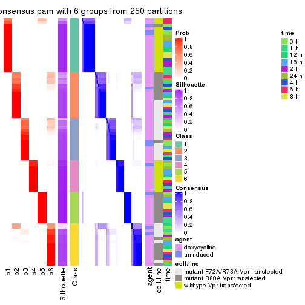
Heatmaps for the membership of samples in all partitions to see how consistent they are:
membership_heatmap(res, k = 2)
membership_heatmap(res, k = 3)
membership_heatmap(res, k = 4)
membership_heatmap(res, k = 5)
membership_heatmap(res, k = 6)
As soon as we have had the classes for columns, we can look for signatures which are significantly different between classes which can be candidate marks for certain classes. Following are the heatmaps for signatures.
Signature heatmaps where rows are scaled:
get_signatures(res, k = 2)
get_signatures(res, k = 3)
get_signatures(res, k = 4)
get_signatures(res, k = 5)
get_signatures(res, k = 6)
Signature heatmaps where rows are not scaled:
get_signatures(res, k = 2, scale_rows = FALSE)
get_signatures(res, k = 3, scale_rows = FALSE)
get_signatures(res, k = 4, scale_rows = FALSE)
get_signatures(res, k = 5, scale_rows = FALSE)
get_signatures(res, k = 6, scale_rows = FALSE)

Compare the overlap of signatures from different k:
compare_signatures(res)
get_signature() returns a data frame invisibly. TO get the list of signatures, the function
call should be assigned to a variable explicitly. In following code, if plot argument is set
to FALSE, no heatmap is plotted while only the differential analysis is performed.
# code only for demonstration
tb = get_signature(res, k = ..., plot = FALSE)
An example of the output of tb is:
#> which_row fdr mean_1 mean_2 scaled_mean_1 scaled_mean_2 km
#> 1 38 0.042760348 8.373488 9.131774 -0.5533452 0.5164555 1
#> 2 40 0.018707592 7.106213 8.469186 -0.6173731 0.5762149 1
#> 3 55 0.019134737 10.221463 11.207825 -0.6159697 0.5749050 1
#> 4 59 0.006059896 5.921854 7.869574 -0.6899429 0.6439467 1
#> 5 60 0.018055526 8.928898 10.211722 -0.6204761 0.5791110 1
#> 6 98 0.009384629 15.714769 14.887706 0.6635654 -0.6193277 2
...
The columns in tb are:
which_row: row indices corresponding to the input matrix.fdr: FDR for the differential test. mean_x: The mean value in group x.scaled_mean_x: The mean value in group x after rows are scaled.km: Row groups if k-means clustering is applied to rows.UMAP plot which shows how samples are separated.
dimension_reduction(res, k = 2, method = "UMAP")
dimension_reduction(res, k = 3, method = "UMAP")
dimension_reduction(res, k = 4, method = "UMAP")
dimension_reduction(res, k = 5, method = "UMAP")
dimension_reduction(res, k = 6, method = "UMAP")
Following heatmap shows how subgroups are split when increasing k:
collect_classes(res)
Test correlation between subgroups and known annotations. If the known annotation is numeric, one-way ANOVA test is applied, and if the known annotation is discrete, chi-squared contingency table test is applied.
test_to_known_factors(res)
#> n agent(p) cell.line(p) time(p) k
#> SD:pam 87 0.971 5.49e-06 1 2
#> SD:pam 84 0.488 1.50e-12 1 3
#> SD:pam 78 0.896 1.08e-13 1 4
#> SD:pam 53 0.928 1.19e-15 1 5
#> SD:pam 83 0.952 1.14e-19 1 6
If matrix rows can be associated to genes, consider to use functional_enrichment(res,
...) to perform function enrichment for the signature genes. See this vignette for more detailed explanations.
The object with results only for a single top-value method and a single partition method can be extracted as:
res = res_list["SD", "mclust"]
# you can also extract it by
# res = res_list["SD:mclust"]
A summary of res and all the functions that can be applied to it:
res
#> A 'ConsensusPartition' object with k = 2, 3, 4, 5, 6.
#> On a matrix with 18211 rows and 87 columns.
#> Top rows (1000, 2000, 3000, 4000, 5000) are extracted by 'SD' method.
#> Subgroups are detected by 'mclust' method.
#> Performed in total 1250 partitions by row resampling.
#> Best k for subgroups seems to be 6.
#>
#> Following methods can be applied to this 'ConsensusPartition' object:
#> [1] "cola_report" "collect_classes" "collect_plots"
#> [4] "collect_stats" "colnames" "compare_signatures"
#> [7] "consensus_heatmap" "dimension_reduction" "functional_enrichment"
#> [10] "get_anno_col" "get_anno" "get_classes"
#> [13] "get_consensus" "get_matrix" "get_membership"
#> [16] "get_param" "get_signatures" "get_stats"
#> [19] "is_best_k" "is_stable_k" "membership_heatmap"
#> [22] "ncol" "nrow" "plot_ecdf"
#> [25] "rownames" "select_partition_number" "show"
#> [28] "suggest_best_k" "test_to_known_factors"
collect_plots() function collects all the plots made from res for all k (number of partitions)
into one single page to provide an easy and fast comparison between different k.
collect_plots(res)
The plots are:
k and the heatmap of
predicted classes for each k.k.k.k.All the plots in panels can be made by individual functions and they are plotted later in this section.
select_partition_number() produces several plots showing different
statistics for choosing “optimized” k. There are following statistics:
k;k, the area increased is defined as \(A_k - A_{k-1}\).The detailed explanations of these statistics can be found in the cola vignette.
Generally speaking, lower PAC score, higher mean silhouette score or higher
concordance corresponds to better partition. Rand index and Jaccard index
measure how similar the current partition is compared to partition with k-1.
If they are too similar, we won't accept k is better than k-1.
select_partition_number(res)
The numeric values for all these statistics can be obtained by get_stats().
get_stats(res)
#> k 1-PAC mean_silhouette concordance area_increased Rand Jaccard
#> 2 2 0.709 0.937 0.958 0.4991 0.496 0.496
#> 3 3 0.666 0.655 0.767 0.2767 0.756 0.544
#> 4 4 0.956 0.904 0.963 0.1441 0.893 0.697
#> 5 5 0.925 0.942 0.967 0.0784 0.921 0.715
#> 6 6 0.992 0.973 0.986 0.0570 0.942 0.735
suggest_best_k() suggests the best \(k\) based on these statistics. The rules are as follows:
suggest_best_k(res)
#> [1] 6
#> attr(,"optional")
#> [1] 4 5
There is also optional best \(k\) = 4 5 that is worth to check.
Following shows the table of the partitions (You need to click the show/hide
code output link to see it). The membership matrix (columns with name p*)
is inferred by
clue::cl_consensus()
function with the SE method. Basically the value in the membership matrix
represents the probability to belong to a certain group. The finall class
label for an item is determined with the group with highest probability it
belongs to.
In get_classes() function, the entropy is calculated from the membership
matrix and the silhouette score is calculated from the consensus matrix.
cbind(get_classes(res, k = 2), get_membership(res, k = 2))
#> class entropy silhouette p1 p2
#> GSM41890 1 0.0000 0.933 1.000 0.000
#> GSM41917 1 0.0000 0.933 1.000 0.000
#> GSM41936 2 0.3274 0.948 0.060 0.940
#> GSM41893 1 0.0000 0.933 1.000 0.000
#> GSM41920 1 0.0000 0.933 1.000 0.000
#> GSM41937 2 0.3274 0.948 0.060 0.940
#> GSM41896 1 0.0000 0.933 1.000 0.000
#> GSM41923 1 0.0000 0.933 1.000 0.000
#> GSM41938 2 0.3274 0.948 0.060 0.940
#> GSM41899 1 0.0000 0.933 1.000 0.000
#> GSM41925 1 0.0000 0.933 1.000 0.000
#> GSM41939 2 0.3274 0.948 0.060 0.940
#> GSM41902 1 0.0000 0.933 1.000 0.000
#> GSM41927 1 0.0000 0.933 1.000 0.000
#> GSM41940 2 0.3274 0.948 0.060 0.940
#> GSM41905 1 0.0000 0.933 1.000 0.000
#> GSM41929 1 0.0000 0.933 1.000 0.000
#> GSM41941 2 0.3274 0.948 0.060 0.940
#> GSM41908 1 0.0000 0.933 1.000 0.000
#> GSM41931 1 0.0000 0.933 1.000 0.000
#> GSM41942 2 0.3274 0.948 0.060 0.940
#> GSM41945 2 0.3274 0.948 0.060 0.940
#> GSM41911 1 0.0000 0.933 1.000 0.000
#> GSM41933 1 0.0000 0.933 1.000 0.000
#> GSM41943 2 0.3274 0.948 0.060 0.940
#> GSM41944 2 0.3274 0.948 0.060 0.940
#> GSM41876 2 0.0000 0.981 0.000 1.000
#> GSM41895 2 0.0000 0.981 0.000 1.000
#> GSM41898 1 0.6801 0.859 0.820 0.180
#> GSM41877 2 0.0000 0.981 0.000 1.000
#> GSM41901 1 0.6801 0.859 0.820 0.180
#> GSM41904 2 0.0000 0.981 0.000 1.000
#> GSM41878 2 0.0000 0.981 0.000 1.000
#> GSM41907 1 0.6801 0.859 0.820 0.180
#> GSM41910 1 0.6801 0.859 0.820 0.180
#> GSM41879 2 0.0000 0.981 0.000 1.000
#> GSM41913 1 0.6801 0.859 0.820 0.180
#> GSM41916 1 0.6801 0.859 0.820 0.180
#> GSM41880 2 0.0000 0.981 0.000 1.000
#> GSM41919 1 0.6801 0.859 0.820 0.180
#> GSM41922 1 0.6801 0.859 0.820 0.180
#> GSM41881 2 0.0000 0.981 0.000 1.000
#> GSM41924 1 0.6801 0.859 0.820 0.180
#> GSM41926 1 0.6801 0.859 0.820 0.180
#> GSM41869 2 0.0000 0.981 0.000 1.000
#> GSM41928 1 0.6801 0.859 0.820 0.180
#> GSM41930 1 0.6801 0.859 0.820 0.180
#> GSM41882 2 0.0000 0.981 0.000 1.000
#> GSM41932 1 0.6801 0.859 0.820 0.180
#> GSM41934 1 0.6801 0.859 0.820 0.180
#> GSM41860 2 0.0000 0.981 0.000 1.000
#> GSM41871 2 0.0000 0.981 0.000 1.000
#> GSM41875 2 0.0000 0.981 0.000 1.000
#> GSM41894 1 0.0000 0.933 1.000 0.000
#> GSM41897 1 0.0000 0.933 1.000 0.000
#> GSM41861 2 0.0000 0.981 0.000 1.000
#> GSM41872 2 0.0000 0.981 0.000 1.000
#> GSM41900 1 0.0000 0.933 1.000 0.000
#> GSM41862 2 0.0000 0.981 0.000 1.000
#> GSM41873 2 0.0000 0.981 0.000 1.000
#> GSM41903 1 0.0000 0.933 1.000 0.000
#> GSM41863 2 0.0000 0.981 0.000 1.000
#> GSM41883 2 0.0000 0.981 0.000 1.000
#> GSM41906 1 0.0000 0.933 1.000 0.000
#> GSM41864 2 0.0000 0.981 0.000 1.000
#> GSM41884 2 0.0000 0.981 0.000 1.000
#> GSM41909 1 0.0000 0.933 1.000 0.000
#> GSM41912 1 0.0000 0.933 1.000 0.000
#> GSM41865 2 0.0000 0.981 0.000 1.000
#> GSM41885 2 0.0000 0.981 0.000 1.000
#> GSM41915 1 0.0000 0.933 1.000 0.000
#> GSM41866 2 0.0000 0.981 0.000 1.000
#> GSM41886 2 0.0000 0.981 0.000 1.000
#> GSM41918 1 0.0000 0.933 1.000 0.000
#> GSM41867 2 0.0376 0.979 0.004 0.996
#> GSM41868 2 0.0000 0.981 0.000 1.000
#> GSM41921 1 0.0000 0.933 1.000 0.000
#> GSM41887 1 0.0000 0.933 1.000 0.000
#> GSM41914 1 0.0000 0.933 1.000 0.000
#> GSM41935 2 0.3274 0.948 0.060 0.940
#> GSM41874 2 0.0000 0.981 0.000 1.000
#> GSM41889 2 0.0000 0.981 0.000 1.000
#> GSM41892 1 0.6801 0.859 0.820 0.180
#> GSM41859 1 0.8267 0.758 0.740 0.260
#> GSM41870 2 0.0000 0.981 0.000 1.000
#> GSM41888 1 0.0000 0.933 1.000 0.000
#> GSM41891 1 0.0000 0.933 1.000 0.000
cbind(get_classes(res, k = 3), get_membership(res, k = 3))
#> class entropy silhouette p1 p2 p3
#> GSM41890 1 0.0000 0.970 1.000 0.000 0.000
#> GSM41917 1 0.0000 0.970 1.000 0.000 0.000
#> GSM41936 2 0.6726 0.391 0.120 0.748 0.132
#> GSM41893 1 0.0000 0.970 1.000 0.000 0.000
#> GSM41920 1 0.0000 0.970 1.000 0.000 0.000
#> GSM41937 2 0.6726 0.391 0.120 0.748 0.132
#> GSM41896 1 0.0000 0.970 1.000 0.000 0.000
#> GSM41923 1 0.0000 0.970 1.000 0.000 0.000
#> GSM41938 2 0.6726 0.391 0.120 0.748 0.132
#> GSM41899 1 0.0000 0.970 1.000 0.000 0.000
#> GSM41925 1 0.0000 0.970 1.000 0.000 0.000
#> GSM41939 2 0.6726 0.391 0.120 0.748 0.132
#> GSM41902 1 0.0000 0.970 1.000 0.000 0.000
#> GSM41927 1 0.0000 0.970 1.000 0.000 0.000
#> GSM41940 2 0.6726 0.391 0.120 0.748 0.132
#> GSM41905 1 0.0000 0.970 1.000 0.000 0.000
#> GSM41929 1 0.0000 0.970 1.000 0.000 0.000
#> GSM41941 2 0.6726 0.391 0.120 0.748 0.132
#> GSM41908 1 0.0000 0.970 1.000 0.000 0.000
#> GSM41931 1 0.0000 0.970 1.000 0.000 0.000
#> GSM41942 2 0.6726 0.391 0.120 0.748 0.132
#> GSM41945 2 0.6726 0.391 0.120 0.748 0.132
#> GSM41911 1 0.0000 0.970 1.000 0.000 0.000
#> GSM41933 1 0.0000 0.970 1.000 0.000 0.000
#> GSM41943 2 0.6726 0.391 0.120 0.748 0.132
#> GSM41944 2 0.6726 0.391 0.120 0.748 0.132
#> GSM41876 3 0.6291 -0.130 0.000 0.468 0.532
#> GSM41895 3 0.4702 0.627 0.000 0.212 0.788
#> GSM41898 3 0.0000 0.802 0.000 0.000 1.000
#> GSM41877 2 0.6260 0.386 0.000 0.552 0.448
#> GSM41901 3 0.0000 0.802 0.000 0.000 1.000
#> GSM41904 2 0.6260 0.386 0.000 0.552 0.448
#> GSM41878 2 0.6260 0.386 0.000 0.552 0.448
#> GSM41907 3 0.0000 0.802 0.000 0.000 1.000
#> GSM41910 3 0.0000 0.802 0.000 0.000 1.000
#> GSM41879 2 0.6274 0.364 0.000 0.544 0.456
#> GSM41913 3 0.0000 0.802 0.000 0.000 1.000
#> GSM41916 3 0.0000 0.802 0.000 0.000 1.000
#> GSM41880 3 0.6299 -0.163 0.000 0.476 0.524
#> GSM41919 3 0.0237 0.798 0.000 0.004 0.996
#> GSM41922 3 0.0000 0.802 0.000 0.000 1.000
#> GSM41881 2 0.6260 0.386 0.000 0.552 0.448
#> GSM41924 3 0.0000 0.802 0.000 0.000 1.000
#> GSM41926 3 0.0592 0.788 0.000 0.012 0.988
#> GSM41869 2 0.6260 0.386 0.000 0.552 0.448
#> GSM41928 3 0.1964 0.724 0.000 0.056 0.944
#> GSM41930 3 0.0000 0.802 0.000 0.000 1.000
#> GSM41882 2 0.7601 0.137 0.044 0.540 0.416
#> GSM41932 3 0.0000 0.802 0.000 0.000 1.000
#> GSM41934 3 0.0237 0.798 0.000 0.004 0.996
#> GSM41860 3 0.4931 0.604 0.000 0.232 0.768
#> GSM41871 2 0.6260 0.386 0.000 0.552 0.448
#> GSM41875 2 0.6260 0.386 0.000 0.552 0.448
#> GSM41894 1 0.2356 0.948 0.928 0.000 0.072
#> GSM41897 1 0.2356 0.948 0.928 0.000 0.072
#> GSM41861 3 0.4887 0.609 0.000 0.228 0.772
#> GSM41872 2 0.6260 0.386 0.000 0.552 0.448
#> GSM41900 1 0.2356 0.948 0.928 0.000 0.072
#> GSM41862 3 0.6912 0.152 0.016 0.444 0.540
#> GSM41873 2 0.6260 0.386 0.000 0.552 0.448
#> GSM41903 1 0.2356 0.948 0.928 0.000 0.072
#> GSM41863 2 0.6483 0.363 0.004 0.544 0.452
#> GSM41883 2 0.6260 0.386 0.000 0.552 0.448
#> GSM41906 1 0.2356 0.948 0.928 0.000 0.072
#> GSM41864 3 0.4931 0.604 0.000 0.232 0.768
#> GSM41884 2 0.6260 0.386 0.000 0.552 0.448
#> GSM41909 1 0.2356 0.948 0.928 0.000 0.072
#> GSM41912 1 0.2356 0.948 0.928 0.000 0.072
#> GSM41865 3 0.5529 0.485 0.000 0.296 0.704
#> GSM41885 2 0.6260 0.386 0.000 0.552 0.448
#> GSM41915 1 0.2356 0.948 0.928 0.000 0.072
#> GSM41866 2 0.6286 0.350 0.000 0.536 0.464
#> GSM41886 2 0.6260 0.386 0.000 0.552 0.448
#> GSM41918 1 0.2356 0.948 0.928 0.000 0.072
#> GSM41867 2 0.7192 0.354 0.028 0.560 0.412
#> GSM41868 2 0.6260 0.386 0.000 0.552 0.448
#> GSM41921 1 0.2356 0.948 0.928 0.000 0.072
#> GSM41887 1 0.0000 0.970 1.000 0.000 0.000
#> GSM41914 1 0.0000 0.970 1.000 0.000 0.000
#> GSM41935 2 0.6726 0.391 0.120 0.748 0.132
#> GSM41874 2 0.6260 0.386 0.000 0.552 0.448
#> GSM41889 3 0.4702 0.627 0.000 0.212 0.788
#> GSM41892 3 0.0000 0.802 0.000 0.000 1.000
#> GSM41859 3 0.1753 0.769 0.000 0.048 0.952
#> GSM41870 2 0.6260 0.386 0.000 0.552 0.448
#> GSM41888 1 0.0000 0.970 1.000 0.000 0.000
#> GSM41891 1 0.2356 0.948 0.928 0.000 0.072
cbind(get_classes(res, k = 4), get_membership(res, k = 4))
#> class entropy silhouette p1 p2 p3 p4
#> GSM41890 1 0.0000 1.0000 1 0.000 0.000 0.000
#> GSM41917 1 0.0000 1.0000 1 0.000 0.000 0.000
#> GSM41936 4 0.0000 0.9767 0 0.000 0.000 1.000
#> GSM41893 1 0.0000 1.0000 1 0.000 0.000 0.000
#> GSM41920 1 0.0000 1.0000 1 0.000 0.000 0.000
#> GSM41937 4 0.0000 0.9767 0 0.000 0.000 1.000
#> GSM41896 1 0.0000 1.0000 1 0.000 0.000 0.000
#> GSM41923 1 0.0000 1.0000 1 0.000 0.000 0.000
#> GSM41938 4 0.0000 0.9767 0 0.000 0.000 1.000
#> GSM41899 1 0.0000 1.0000 1 0.000 0.000 0.000
#> GSM41925 1 0.0000 1.0000 1 0.000 0.000 0.000
#> GSM41939 4 0.0000 0.9767 0 0.000 0.000 1.000
#> GSM41902 1 0.0000 1.0000 1 0.000 0.000 0.000
#> GSM41927 1 0.0000 1.0000 1 0.000 0.000 0.000
#> GSM41940 4 0.0000 0.9767 0 0.000 0.000 1.000
#> GSM41905 1 0.0000 1.0000 1 0.000 0.000 0.000
#> GSM41929 1 0.0000 1.0000 1 0.000 0.000 0.000
#> GSM41941 4 0.0000 0.9767 0 0.000 0.000 1.000
#> GSM41908 1 0.0000 1.0000 1 0.000 0.000 0.000
#> GSM41931 1 0.0000 1.0000 1 0.000 0.000 0.000
#> GSM41942 4 0.0000 0.9767 0 0.000 0.000 1.000
#> GSM41945 4 0.0000 0.9767 0 0.000 0.000 1.000
#> GSM41911 1 0.0000 1.0000 1 0.000 0.000 0.000
#> GSM41933 1 0.0000 1.0000 1 0.000 0.000 0.000
#> GSM41943 4 0.0000 0.9767 0 0.000 0.000 1.000
#> GSM41944 4 0.0000 0.9767 0 0.000 0.000 1.000
#> GSM41876 2 0.0000 0.9389 0 1.000 0.000 0.000
#> GSM41895 3 0.4193 0.6520 0 0.268 0.732 0.000
#> GSM41898 3 0.0000 0.8939 0 0.000 1.000 0.000
#> GSM41877 2 0.0000 0.9389 0 1.000 0.000 0.000
#> GSM41901 3 0.0000 0.8939 0 0.000 1.000 0.000
#> GSM41904 2 0.0000 0.9389 0 1.000 0.000 0.000
#> GSM41878 2 0.0000 0.9389 0 1.000 0.000 0.000
#> GSM41907 3 0.0000 0.8939 0 0.000 1.000 0.000
#> GSM41910 3 0.0000 0.8939 0 0.000 1.000 0.000
#> GSM41879 2 0.0000 0.9389 0 1.000 0.000 0.000
#> GSM41913 3 0.0000 0.8939 0 0.000 1.000 0.000
#> GSM41916 3 0.0000 0.8939 0 0.000 1.000 0.000
#> GSM41880 2 0.0000 0.9389 0 1.000 0.000 0.000
#> GSM41919 3 0.0000 0.8939 0 0.000 1.000 0.000
#> GSM41922 3 0.0000 0.8939 0 0.000 1.000 0.000
#> GSM41881 2 0.0000 0.9389 0 1.000 0.000 0.000
#> GSM41924 3 0.0000 0.8939 0 0.000 1.000 0.000
#> GSM41926 3 0.0000 0.8939 0 0.000 1.000 0.000
#> GSM41869 2 0.0000 0.9389 0 1.000 0.000 0.000
#> GSM41928 3 0.0000 0.8939 0 0.000 1.000 0.000
#> GSM41930 3 0.0000 0.8939 0 0.000 1.000 0.000
#> GSM41882 2 0.5924 0.1900 0 0.556 0.404 0.040
#> GSM41932 3 0.0000 0.8939 0 0.000 1.000 0.000
#> GSM41934 3 0.0000 0.8939 0 0.000 1.000 0.000
#> GSM41860 3 0.4761 0.4705 0 0.372 0.628 0.000
#> GSM41871 2 0.0000 0.9389 0 1.000 0.000 0.000
#> GSM41875 2 0.0000 0.9389 0 1.000 0.000 0.000
#> GSM41894 1 0.0000 1.0000 1 0.000 0.000 0.000
#> GSM41897 1 0.0000 1.0000 1 0.000 0.000 0.000
#> GSM41861 3 0.4679 0.5121 0 0.352 0.648 0.000
#> GSM41872 2 0.0000 0.9389 0 1.000 0.000 0.000
#> GSM41900 1 0.0000 1.0000 1 0.000 0.000 0.000
#> GSM41862 2 0.5488 0.0306 0 0.532 0.452 0.016
#> GSM41873 2 0.0000 0.9389 0 1.000 0.000 0.000
#> GSM41903 1 0.0000 1.0000 1 0.000 0.000 0.000
#> GSM41863 2 0.0921 0.9185 0 0.972 0.000 0.028
#> GSM41883 2 0.0000 0.9389 0 1.000 0.000 0.000
#> GSM41906 1 0.0000 1.0000 1 0.000 0.000 0.000
#> GSM41864 3 0.4888 0.3715 0 0.412 0.588 0.000
#> GSM41884 2 0.0000 0.9389 0 1.000 0.000 0.000
#> GSM41909 1 0.0000 1.0000 1 0.000 0.000 0.000
#> GSM41912 1 0.0000 1.0000 1 0.000 0.000 0.000
#> GSM41865 2 0.4543 0.4528 0 0.676 0.324 0.000
#> GSM41885 2 0.0000 0.9389 0 1.000 0.000 0.000
#> GSM41915 1 0.0000 1.0000 1 0.000 0.000 0.000
#> GSM41866 2 0.0592 0.9277 0 0.984 0.000 0.016
#> GSM41886 2 0.0000 0.9389 0 1.000 0.000 0.000
#> GSM41918 1 0.0000 1.0000 1 0.000 0.000 0.000
#> GSM41867 2 0.0921 0.9185 0 0.972 0.000 0.028
#> GSM41868 2 0.0000 0.9389 0 1.000 0.000 0.000
#> GSM41921 1 0.0000 1.0000 1 0.000 0.000 0.000
#> GSM41887 1 0.0000 1.0000 1 0.000 0.000 0.000
#> GSM41914 1 0.0000 1.0000 1 0.000 0.000 0.000
#> GSM41935 4 0.3831 0.7267 0 0.204 0.004 0.792
#> GSM41874 2 0.0000 0.9389 0 1.000 0.000 0.000
#> GSM41889 3 0.4250 0.6416 0 0.276 0.724 0.000
#> GSM41892 3 0.0000 0.8939 0 0.000 1.000 0.000
#> GSM41859 3 0.1557 0.8587 0 0.056 0.944 0.000
#> GSM41870 2 0.0000 0.9389 0 1.000 0.000 0.000
#> GSM41888 1 0.0000 1.0000 1 0.000 0.000 0.000
#> GSM41891 1 0.0000 1.0000 1 0.000 0.000 0.000
cbind(get_classes(res, k = 5), get_membership(res, k = 5))
#> class entropy silhouette p1 p2 p3 p4 p5
#> GSM41890 1 0.0000 0.999 1.000 0.000 0.000 0.000 0.000
#> GSM41917 1 0.0000 0.999 1.000 0.000 0.000 0.000 0.000
#> GSM41936 4 0.0000 0.994 0.000 0.000 0.000 1.000 0.000
#> GSM41893 1 0.0000 0.999 1.000 0.000 0.000 0.000 0.000
#> GSM41920 1 0.0000 0.999 1.000 0.000 0.000 0.000 0.000
#> GSM41937 4 0.0000 0.994 0.000 0.000 0.000 1.000 0.000
#> GSM41896 1 0.0000 0.999 1.000 0.000 0.000 0.000 0.000
#> GSM41923 1 0.0000 0.999 1.000 0.000 0.000 0.000 0.000
#> GSM41938 4 0.0000 0.994 0.000 0.000 0.000 1.000 0.000
#> GSM41899 1 0.0000 0.999 1.000 0.000 0.000 0.000 0.000
#> GSM41925 1 0.0000 0.999 1.000 0.000 0.000 0.000 0.000
#> GSM41939 4 0.0000 0.994 0.000 0.000 0.000 1.000 0.000
#> GSM41902 1 0.0000 0.999 1.000 0.000 0.000 0.000 0.000
#> GSM41927 1 0.0000 0.999 1.000 0.000 0.000 0.000 0.000
#> GSM41940 4 0.0000 0.994 0.000 0.000 0.000 1.000 0.000
#> GSM41905 1 0.0000 0.999 1.000 0.000 0.000 0.000 0.000
#> GSM41929 1 0.0000 0.999 1.000 0.000 0.000 0.000 0.000
#> GSM41941 4 0.0000 0.994 0.000 0.000 0.000 1.000 0.000
#> GSM41908 1 0.0000 0.999 1.000 0.000 0.000 0.000 0.000
#> GSM41931 1 0.0000 0.999 1.000 0.000 0.000 0.000 0.000
#> GSM41942 4 0.0000 0.994 0.000 0.000 0.000 1.000 0.000
#> GSM41945 4 0.0000 0.994 0.000 0.000 0.000 1.000 0.000
#> GSM41911 1 0.0000 0.999 1.000 0.000 0.000 0.000 0.000
#> GSM41933 1 0.0000 0.999 1.000 0.000 0.000 0.000 0.000
#> GSM41943 4 0.0000 0.994 0.000 0.000 0.000 1.000 0.000
#> GSM41944 4 0.0000 0.994 0.000 0.000 0.000 1.000 0.000
#> GSM41876 2 0.0000 0.954 0.000 1.000 0.000 0.000 0.000
#> GSM41895 3 0.2654 0.870 0.000 0.084 0.884 0.000 0.032
#> GSM41898 3 0.0000 0.925 0.000 0.000 1.000 0.000 0.000
#> GSM41877 2 0.0000 0.954 0.000 1.000 0.000 0.000 0.000
#> GSM41901 3 0.0000 0.925 0.000 0.000 1.000 0.000 0.000
#> GSM41904 2 0.0000 0.954 0.000 1.000 0.000 0.000 0.000
#> GSM41878 2 0.0000 0.954 0.000 1.000 0.000 0.000 0.000
#> GSM41907 3 0.0000 0.925 0.000 0.000 1.000 0.000 0.000
#> GSM41910 3 0.0000 0.925 0.000 0.000 1.000 0.000 0.000
#> GSM41879 2 0.0000 0.954 0.000 1.000 0.000 0.000 0.000
#> GSM41913 3 0.0000 0.925 0.000 0.000 1.000 0.000 0.000
#> GSM41916 3 0.0000 0.925 0.000 0.000 1.000 0.000 0.000
#> GSM41880 2 0.0000 0.954 0.000 1.000 0.000 0.000 0.000
#> GSM41919 3 0.0000 0.925 0.000 0.000 1.000 0.000 0.000
#> GSM41922 3 0.0000 0.925 0.000 0.000 1.000 0.000 0.000
#> GSM41881 2 0.0000 0.954 0.000 1.000 0.000 0.000 0.000
#> GSM41924 3 0.0000 0.925 0.000 0.000 1.000 0.000 0.000
#> GSM41926 3 0.0000 0.925 0.000 0.000 1.000 0.000 0.000
#> GSM41869 2 0.0000 0.954 0.000 1.000 0.000 0.000 0.000
#> GSM41928 3 0.0000 0.925 0.000 0.000 1.000 0.000 0.000
#> GSM41930 3 0.0000 0.925 0.000 0.000 1.000 0.000 0.000
#> GSM41882 3 0.2535 0.877 0.000 0.076 0.892 0.000 0.032
#> GSM41932 3 0.0000 0.925 0.000 0.000 1.000 0.000 0.000
#> GSM41934 3 0.0000 0.925 0.000 0.000 1.000 0.000 0.000
#> GSM41860 3 0.3910 0.768 0.000 0.196 0.772 0.000 0.032
#> GSM41871 2 0.0000 0.954 0.000 1.000 0.000 0.000 0.000
#> GSM41875 2 0.0000 0.954 0.000 1.000 0.000 0.000 0.000
#> GSM41894 5 0.1478 0.962 0.064 0.000 0.000 0.000 0.936
#> GSM41897 5 0.0880 0.996 0.032 0.000 0.000 0.000 0.968
#> GSM41861 3 0.3910 0.768 0.000 0.196 0.772 0.000 0.032
#> GSM41872 2 0.0000 0.954 0.000 1.000 0.000 0.000 0.000
#> GSM41900 5 0.0880 0.996 0.032 0.000 0.000 0.000 0.968
#> GSM41862 3 0.4104 0.737 0.000 0.220 0.748 0.000 0.032
#> GSM41873 2 0.0000 0.954 0.000 1.000 0.000 0.000 0.000
#> GSM41903 5 0.0880 0.996 0.032 0.000 0.000 0.000 0.968
#> GSM41863 2 0.3177 0.742 0.000 0.792 0.208 0.000 0.000
#> GSM41883 2 0.0000 0.954 0.000 1.000 0.000 0.000 0.000
#> GSM41906 5 0.0880 0.996 0.032 0.000 0.000 0.000 0.968
#> GSM41864 3 0.4808 0.488 0.000 0.348 0.620 0.000 0.032
#> GSM41884 2 0.0000 0.954 0.000 1.000 0.000 0.000 0.000
#> GSM41909 5 0.0880 0.996 0.032 0.000 0.000 0.000 0.968
#> GSM41912 5 0.0880 0.996 0.032 0.000 0.000 0.000 0.968
#> GSM41865 2 0.3487 0.727 0.000 0.780 0.212 0.000 0.008
#> GSM41885 2 0.0000 0.954 0.000 1.000 0.000 0.000 0.000
#> GSM41915 5 0.0880 0.996 0.032 0.000 0.000 0.000 0.968
#> GSM41866 2 0.3177 0.742 0.000 0.792 0.208 0.000 0.000
#> GSM41886 2 0.0000 0.954 0.000 1.000 0.000 0.000 0.000
#> GSM41918 5 0.0880 0.996 0.032 0.000 0.000 0.000 0.968
#> GSM41867 2 0.3177 0.742 0.000 0.792 0.208 0.000 0.000
#> GSM41868 2 0.0000 0.954 0.000 1.000 0.000 0.000 0.000
#> GSM41921 5 0.0880 0.996 0.032 0.000 0.000 0.000 0.968
#> GSM41887 1 0.0000 0.999 1.000 0.000 0.000 0.000 0.000
#> GSM41914 1 0.0000 0.999 1.000 0.000 0.000 0.000 0.000
#> GSM41935 4 0.1197 0.936 0.000 0.048 0.000 0.952 0.000
#> GSM41874 2 0.0000 0.954 0.000 1.000 0.000 0.000 0.000
#> GSM41889 3 0.3656 0.799 0.000 0.168 0.800 0.000 0.032
#> GSM41892 3 0.0000 0.925 0.000 0.000 1.000 0.000 0.000
#> GSM41859 3 0.0898 0.915 0.000 0.008 0.972 0.000 0.020
#> GSM41870 2 0.0000 0.954 0.000 1.000 0.000 0.000 0.000
#> GSM41888 1 0.0404 0.987 0.988 0.000 0.000 0.000 0.012
#> GSM41891 5 0.0880 0.996 0.032 0.000 0.000 0.000 0.968
cbind(get_classes(res, k = 6), get_membership(res, k = 6))
#> class entropy silhouette p1 p2 p3 p4 p5 p6
#> GSM41890 1 0.0000 0.992 1.000 0.000 0.000 0 0.000 0.000
#> GSM41917 1 0.0000 0.992 1.000 0.000 0.000 0 0.000 0.000
#> GSM41936 4 0.0000 1.000 0.000 0.000 0.000 1 0.000 0.000
#> GSM41893 1 0.0000 0.992 1.000 0.000 0.000 0 0.000 0.000
#> GSM41920 1 0.0000 0.992 1.000 0.000 0.000 0 0.000 0.000
#> GSM41937 4 0.0000 1.000 0.000 0.000 0.000 1 0.000 0.000
#> GSM41896 1 0.0000 0.992 1.000 0.000 0.000 0 0.000 0.000
#> GSM41923 1 0.0000 0.992 1.000 0.000 0.000 0 0.000 0.000
#> GSM41938 4 0.0000 1.000 0.000 0.000 0.000 1 0.000 0.000
#> GSM41899 1 0.0000 0.992 1.000 0.000 0.000 0 0.000 0.000
#> GSM41925 1 0.0000 0.992 1.000 0.000 0.000 0 0.000 0.000
#> GSM41939 4 0.0000 1.000 0.000 0.000 0.000 1 0.000 0.000
#> GSM41902 1 0.0000 0.992 1.000 0.000 0.000 0 0.000 0.000
#> GSM41927 1 0.0000 0.992 1.000 0.000 0.000 0 0.000 0.000
#> GSM41940 4 0.0000 1.000 0.000 0.000 0.000 1 0.000 0.000
#> GSM41905 1 0.0000 0.992 1.000 0.000 0.000 0 0.000 0.000
#> GSM41929 1 0.0000 0.992 1.000 0.000 0.000 0 0.000 0.000
#> GSM41941 4 0.0000 1.000 0.000 0.000 0.000 1 0.000 0.000
#> GSM41908 1 0.0000 0.992 1.000 0.000 0.000 0 0.000 0.000
#> GSM41931 1 0.0000 0.992 1.000 0.000 0.000 0 0.000 0.000
#> GSM41942 4 0.0000 1.000 0.000 0.000 0.000 1 0.000 0.000
#> GSM41945 4 0.0000 1.000 0.000 0.000 0.000 1 0.000 0.000
#> GSM41911 1 0.0000 0.992 1.000 0.000 0.000 0 0.000 0.000
#> GSM41933 1 0.0000 0.992 1.000 0.000 0.000 0 0.000 0.000
#> GSM41943 4 0.0000 1.000 0.000 0.000 0.000 1 0.000 0.000
#> GSM41944 4 0.0000 1.000 0.000 0.000 0.000 1 0.000 0.000
#> GSM41876 2 0.0000 0.997 0.000 1.000 0.000 0 0.000 0.000
#> GSM41895 6 0.0000 0.911 0.000 0.000 0.000 0 0.000 1.000
#> GSM41898 3 0.0000 0.985 0.000 0.000 1.000 0 0.000 0.000
#> GSM41877 2 0.0000 0.997 0.000 1.000 0.000 0 0.000 0.000
#> GSM41901 3 0.0000 0.985 0.000 0.000 1.000 0 0.000 0.000
#> GSM41904 2 0.0000 0.997 0.000 1.000 0.000 0 0.000 0.000
#> GSM41878 2 0.0000 0.997 0.000 1.000 0.000 0 0.000 0.000
#> GSM41907 3 0.0000 0.985 0.000 0.000 1.000 0 0.000 0.000
#> GSM41910 3 0.0000 0.985 0.000 0.000 1.000 0 0.000 0.000
#> GSM41879 2 0.0000 0.997 0.000 1.000 0.000 0 0.000 0.000
#> GSM41913 3 0.0000 0.985 0.000 0.000 1.000 0 0.000 0.000
#> GSM41916 3 0.0000 0.985 0.000 0.000 1.000 0 0.000 0.000
#> GSM41880 2 0.0790 0.965 0.000 0.968 0.000 0 0.000 0.032
#> GSM41919 3 0.0000 0.985 0.000 0.000 1.000 0 0.000 0.000
#> GSM41922 3 0.0000 0.985 0.000 0.000 1.000 0 0.000 0.000
#> GSM41881 2 0.0000 0.997 0.000 1.000 0.000 0 0.000 0.000
#> GSM41924 3 0.0000 0.985 0.000 0.000 1.000 0 0.000 0.000
#> GSM41926 3 0.0000 0.985 0.000 0.000 1.000 0 0.000 0.000
#> GSM41869 2 0.0000 0.997 0.000 1.000 0.000 0 0.000 0.000
#> GSM41928 3 0.0000 0.985 0.000 0.000 1.000 0 0.000 0.000
#> GSM41930 3 0.0000 0.985 0.000 0.000 1.000 0 0.000 0.000
#> GSM41882 6 0.0146 0.909 0.000 0.000 0.004 0 0.000 0.996
#> GSM41932 3 0.0000 0.985 0.000 0.000 1.000 0 0.000 0.000
#> GSM41934 3 0.0000 0.985 0.000 0.000 1.000 0 0.000 0.000
#> GSM41860 6 0.0000 0.911 0.000 0.000 0.000 0 0.000 1.000
#> GSM41871 2 0.0000 0.997 0.000 1.000 0.000 0 0.000 0.000
#> GSM41875 2 0.0632 0.974 0.000 0.976 0.000 0 0.000 0.024
#> GSM41894 5 0.0146 0.995 0.004 0.000 0.000 0 0.996 0.000
#> GSM41897 5 0.0000 1.000 0.000 0.000 0.000 0 1.000 0.000
#> GSM41861 6 0.0000 0.911 0.000 0.000 0.000 0 0.000 1.000
#> GSM41872 2 0.0000 0.997 0.000 1.000 0.000 0 0.000 0.000
#> GSM41900 5 0.0000 1.000 0.000 0.000 0.000 0 1.000 0.000
#> GSM41862 6 0.0000 0.911 0.000 0.000 0.000 0 0.000 1.000
#> GSM41873 2 0.0000 0.997 0.000 1.000 0.000 0 0.000 0.000
#> GSM41903 5 0.0000 1.000 0.000 0.000 0.000 0 1.000 0.000
#> GSM41863 6 0.2912 0.791 0.000 0.216 0.000 0 0.000 0.784
#> GSM41883 2 0.0000 0.997 0.000 1.000 0.000 0 0.000 0.000
#> GSM41906 5 0.0000 1.000 0.000 0.000 0.000 0 1.000 0.000
#> GSM41864 6 0.0000 0.911 0.000 0.000 0.000 0 0.000 1.000
#> GSM41884 2 0.0000 0.997 0.000 1.000 0.000 0 0.000 0.000
#> GSM41909 5 0.0000 1.000 0.000 0.000 0.000 0 1.000 0.000
#> GSM41912 5 0.0000 1.000 0.000 0.000 0.000 0 1.000 0.000
#> GSM41865 6 0.1863 0.871 0.000 0.104 0.000 0 0.000 0.896
#> GSM41885 2 0.0000 0.997 0.000 1.000 0.000 0 0.000 0.000
#> GSM41915 5 0.0000 1.000 0.000 0.000 0.000 0 1.000 0.000
#> GSM41866 6 0.2854 0.801 0.000 0.208 0.000 0 0.000 0.792
#> GSM41886 2 0.0000 0.997 0.000 1.000 0.000 0 0.000 0.000
#> GSM41918 5 0.0000 1.000 0.000 0.000 0.000 0 1.000 0.000
#> GSM41867 6 0.2854 0.801 0.000 0.208 0.000 0 0.000 0.792
#> GSM41868 2 0.0000 0.997 0.000 1.000 0.000 0 0.000 0.000
#> GSM41921 5 0.0000 1.000 0.000 0.000 0.000 0 1.000 0.000
#> GSM41887 1 0.0000 0.992 1.000 0.000 0.000 0 0.000 0.000
#> GSM41914 1 0.0000 0.992 1.000 0.000 0.000 0 0.000 0.000
#> GSM41935 4 0.0000 1.000 0.000 0.000 0.000 1 0.000 0.000
#> GSM41874 2 0.0000 0.997 0.000 1.000 0.000 0 0.000 0.000
#> GSM41889 6 0.0146 0.909 0.000 0.000 0.004 0 0.000 0.996
#> GSM41892 3 0.0000 0.985 0.000 0.000 1.000 0 0.000 0.000
#> GSM41859 3 0.2969 0.730 0.000 0.000 0.776 0 0.000 0.224
#> GSM41870 2 0.0000 0.997 0.000 1.000 0.000 0 0.000 0.000
#> GSM41888 1 0.2340 0.826 0.852 0.000 0.000 0 0.148 0.000
#> GSM41891 5 0.0000 1.000 0.000 0.000 0.000 0 1.000 0.000
Heatmaps for the consensus matrix. It visualizes the probability of two samples to be in a same group.
consensus_heatmap(res, k = 2)
consensus_heatmap(res, k = 3)

consensus_heatmap(res, k = 4)
consensus_heatmap(res, k = 5)
consensus_heatmap(res, k = 6)

Heatmaps for the membership of samples in all partitions to see how consistent they are:
membership_heatmap(res, k = 2)
membership_heatmap(res, k = 3)
membership_heatmap(res, k = 4)
membership_heatmap(res, k = 5)
membership_heatmap(res, k = 6)
As soon as we have had the classes for columns, we can look for signatures which are significantly different between classes which can be candidate marks for certain classes. Following are the heatmaps for signatures.
Signature heatmaps where rows are scaled:
get_signatures(res, k = 2)
get_signatures(res, k = 3)
get_signatures(res, k = 4)
get_signatures(res, k = 5)
get_signatures(res, k = 6)
Signature heatmaps where rows are not scaled:
get_signatures(res, k = 2, scale_rows = FALSE)
get_signatures(res, k = 3, scale_rows = FALSE)
get_signatures(res, k = 4, scale_rows = FALSE)
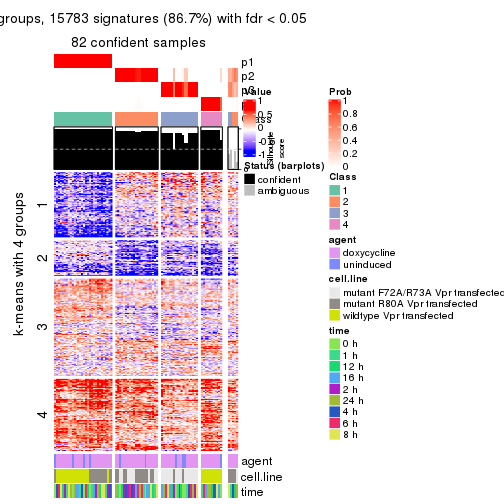
get_signatures(res, k = 5, scale_rows = FALSE)

get_signatures(res, k = 6, scale_rows = FALSE)
Compare the overlap of signatures from different k:
compare_signatures(res)
get_signature() returns a data frame invisibly. TO get the list of signatures, the function
call should be assigned to a variable explicitly. In following code, if plot argument is set
to FALSE, no heatmap is plotted while only the differential analysis is performed.
# code only for demonstration
tb = get_signature(res, k = ..., plot = FALSE)
An example of the output of tb is:
#> which_row fdr mean_1 mean_2 scaled_mean_1 scaled_mean_2 km
#> 1 38 0.042760348 8.373488 9.131774 -0.5533452 0.5164555 1
#> 2 40 0.018707592 7.106213 8.469186 -0.6173731 0.5762149 1
#> 3 55 0.019134737 10.221463 11.207825 -0.6159697 0.5749050 1
#> 4 59 0.006059896 5.921854 7.869574 -0.6899429 0.6439467 1
#> 5 60 0.018055526 8.928898 10.211722 -0.6204761 0.5791110 1
#> 6 98 0.009384629 15.714769 14.887706 0.6635654 -0.6193277 2
...
The columns in tb are:
which_row: row indices corresponding to the input matrix.fdr: FDR for the differential test. mean_x: The mean value in group x.scaled_mean_x: The mean value in group x after rows are scaled.km: Row groups if k-means clustering is applied to rows.UMAP plot which shows how samples are separated.
dimension_reduction(res, k = 2, method = "UMAP")
dimension_reduction(res, k = 3, method = "UMAP")
dimension_reduction(res, k = 4, method = "UMAP")
dimension_reduction(res, k = 5, method = "UMAP")
dimension_reduction(res, k = 6, method = "UMAP")
Following heatmap shows how subgroups are split when increasing k:
collect_classes(res)
Test correlation between subgroups and known annotations. If the known annotation is numeric, one-way ANOVA test is applied, and if the known annotation is discrete, chi-squared contingency table test is applied.
test_to_known_factors(res)
#> n agent(p) cell.line(p) time(p) k
#> SD:mclust 87 0.886 2.79e-01 0.998 2
#> SD:mclust 51 1.000 4.12e-09 1.000 3
#> SD:mclust 82 0.905 1.03e-14 1.000 4
#> SD:mclust 86 0.947 7.20e-21 1.000 5
#> SD:mclust 87 0.990 2.97e-21 1.000 6
If matrix rows can be associated to genes, consider to use functional_enrichment(res,
...) to perform function enrichment for the signature genes. See this vignette for more detailed explanations.
The object with results only for a single top-value method and a single partition method can be extracted as:
res = res_list["SD", "NMF"]
# you can also extract it by
# res = res_list["SD:NMF"]
A summary of res and all the functions that can be applied to it:
res
#> A 'ConsensusPartition' object with k = 2, 3, 4, 5, 6.
#> On a matrix with 18211 rows and 87 columns.
#> Top rows (1000, 2000, 3000, 4000, 5000) are extracted by 'SD' method.
#> Subgroups are detected by 'NMF' method.
#> Performed in total 1250 partitions by row resampling.
#> Best k for subgroups seems to be 2.
#>
#> Following methods can be applied to this 'ConsensusPartition' object:
#> [1] "cola_report" "collect_classes" "collect_plots"
#> [4] "collect_stats" "colnames" "compare_signatures"
#> [7] "consensus_heatmap" "dimension_reduction" "functional_enrichment"
#> [10] "get_anno_col" "get_anno" "get_classes"
#> [13] "get_consensus" "get_matrix" "get_membership"
#> [16] "get_param" "get_signatures" "get_stats"
#> [19] "is_best_k" "is_stable_k" "membership_heatmap"
#> [22] "ncol" "nrow" "plot_ecdf"
#> [25] "rownames" "select_partition_number" "show"
#> [28] "suggest_best_k" "test_to_known_factors"
collect_plots() function collects all the plots made from res for all k (number of partitions)
into one single page to provide an easy and fast comparison between different k.
collect_plots(res)
The plots are:
k and the heatmap of
predicted classes for each k.k.k.k.All the plots in panels can be made by individual functions and they are plotted later in this section.
select_partition_number() produces several plots showing different
statistics for choosing “optimized” k. There are following statistics:
k;k, the area increased is defined as \(A_k - A_{k-1}\).The detailed explanations of these statistics can be found in the cola vignette.
Generally speaking, lower PAC score, higher mean silhouette score or higher
concordance corresponds to better partition. Rand index and Jaccard index
measure how similar the current partition is compared to partition with k-1.
If they are too similar, we won't accept k is better than k-1.
select_partition_number(res)
The numeric values for all these statistics can be obtained by get_stats().
get_stats(res)
#> k 1-PAC mean_silhouette concordance area_increased Rand Jaccard
#> 2 2 1.000 0.999 0.999 0.4579 0.543 0.543
#> 3 3 0.664 0.763 0.812 0.4163 0.785 0.607
#> 4 4 0.821 0.846 0.903 0.1371 0.899 0.710
#> 5 5 0.812 0.844 0.874 0.0544 0.977 0.914
#> 6 6 0.740 0.657 0.761 0.0404 0.953 0.815
suggest_best_k() suggests the best \(k\) based on these statistics. The rules are as follows:
suggest_best_k(res)
#> [1] 2
Following shows the table of the partitions (You need to click the show/hide
code output link to see it). The membership matrix (columns with name p*)
is inferred by
clue::cl_consensus()
function with the SE method. Basically the value in the membership matrix
represents the probability to belong to a certain group. The finall class
label for an item is determined with the group with highest probability it
belongs to.
In get_classes() function, the entropy is calculated from the membership
matrix and the silhouette score is calculated from the consensus matrix.
cbind(get_classes(res, k = 2), get_membership(res, k = 2))
#> class entropy silhouette p1 p2
#> GSM41890 1 0.00 1.000 1.000 0.000
#> GSM41917 1 0.00 1.000 1.000 0.000
#> GSM41936 2 0.00 0.999 0.000 1.000
#> GSM41893 1 0.00 1.000 1.000 0.000
#> GSM41920 1 0.00 1.000 1.000 0.000
#> GSM41937 2 0.00 0.999 0.000 1.000
#> GSM41896 1 0.00 1.000 1.000 0.000
#> GSM41923 1 0.00 1.000 1.000 0.000
#> GSM41938 2 0.00 0.999 0.000 1.000
#> GSM41899 1 0.00 1.000 1.000 0.000
#> GSM41925 1 0.00 1.000 1.000 0.000
#> GSM41939 2 0.00 0.999 0.000 1.000
#> GSM41902 1 0.00 1.000 1.000 0.000
#> GSM41927 1 0.00 1.000 1.000 0.000
#> GSM41940 2 0.00 0.999 0.000 1.000
#> GSM41905 1 0.00 1.000 1.000 0.000
#> GSM41929 1 0.00 1.000 1.000 0.000
#> GSM41941 2 0.00 0.999 0.000 1.000
#> GSM41908 1 0.00 1.000 1.000 0.000
#> GSM41931 1 0.00 1.000 1.000 0.000
#> GSM41942 2 0.00 0.999 0.000 1.000
#> GSM41945 2 0.00 0.999 0.000 1.000
#> GSM41911 1 0.00 1.000 1.000 0.000
#> GSM41933 1 0.00 1.000 1.000 0.000
#> GSM41943 2 0.00 0.999 0.000 1.000
#> GSM41944 2 0.00 0.999 0.000 1.000
#> GSM41876 2 0.00 0.999 0.000 1.000
#> GSM41895 2 0.00 0.999 0.000 1.000
#> GSM41898 2 0.00 0.999 0.000 1.000
#> GSM41877 2 0.00 0.999 0.000 1.000
#> GSM41901 2 0.00 0.999 0.000 1.000
#> GSM41904 2 0.00 0.999 0.000 1.000
#> GSM41878 2 0.00 0.999 0.000 1.000
#> GSM41907 2 0.00 0.999 0.000 1.000
#> GSM41910 2 0.00 0.999 0.000 1.000
#> GSM41879 2 0.00 0.999 0.000 1.000
#> GSM41913 2 0.00 0.999 0.000 1.000
#> GSM41916 2 0.00 0.999 0.000 1.000
#> GSM41880 2 0.00 0.999 0.000 1.000
#> GSM41919 2 0.00 0.999 0.000 1.000
#> GSM41922 2 0.00 0.999 0.000 1.000
#> GSM41881 2 0.00 0.999 0.000 1.000
#> GSM41924 2 0.00 0.999 0.000 1.000
#> GSM41926 2 0.00 0.999 0.000 1.000
#> GSM41869 2 0.00 0.999 0.000 1.000
#> GSM41928 2 0.26 0.954 0.044 0.956
#> GSM41930 2 0.00 0.999 0.000 1.000
#> GSM41882 2 0.00 0.999 0.000 1.000
#> GSM41932 2 0.00 0.999 0.000 1.000
#> GSM41934 2 0.00 0.999 0.000 1.000
#> GSM41860 2 0.00 0.999 0.000 1.000
#> GSM41871 2 0.00 0.999 0.000 1.000
#> GSM41875 2 0.00 0.999 0.000 1.000
#> GSM41894 1 0.00 1.000 1.000 0.000
#> GSM41897 1 0.00 1.000 1.000 0.000
#> GSM41861 2 0.00 0.999 0.000 1.000
#> GSM41872 2 0.00 0.999 0.000 1.000
#> GSM41900 1 0.00 1.000 1.000 0.000
#> GSM41862 2 0.00 0.999 0.000 1.000
#> GSM41873 2 0.00 0.999 0.000 1.000
#> GSM41903 1 0.00 1.000 1.000 0.000
#> GSM41863 2 0.00 0.999 0.000 1.000
#> GSM41883 2 0.00 0.999 0.000 1.000
#> GSM41906 1 0.00 1.000 1.000 0.000
#> GSM41864 2 0.00 0.999 0.000 1.000
#> GSM41884 2 0.00 0.999 0.000 1.000
#> GSM41909 1 0.00 1.000 1.000 0.000
#> GSM41912 1 0.00 1.000 1.000 0.000
#> GSM41865 2 0.00 0.999 0.000 1.000
#> GSM41885 2 0.00 0.999 0.000 1.000
#> GSM41915 1 0.00 1.000 1.000 0.000
#> GSM41866 2 0.00 0.999 0.000 1.000
#> GSM41886 2 0.00 0.999 0.000 1.000
#> GSM41918 1 0.00 1.000 1.000 0.000
#> GSM41867 2 0.00 0.999 0.000 1.000
#> GSM41868 2 0.00 0.999 0.000 1.000
#> GSM41921 1 0.00 1.000 1.000 0.000
#> GSM41887 1 0.00 1.000 1.000 0.000
#> GSM41914 1 0.00 1.000 1.000 0.000
#> GSM41935 2 0.00 0.999 0.000 1.000
#> GSM41874 2 0.00 0.999 0.000 1.000
#> GSM41889 2 0.00 0.999 0.000 1.000
#> GSM41892 2 0.00 0.999 0.000 1.000
#> GSM41859 2 0.00 0.999 0.000 1.000
#> GSM41870 2 0.00 0.999 0.000 1.000
#> GSM41888 1 0.00 1.000 1.000 0.000
#> GSM41891 1 0.00 1.000 1.000 0.000
cbind(get_classes(res, k = 3), get_membership(res, k = 3))
#> class entropy silhouette p1 p2 p3
#> GSM41890 1 0.0000 0.9770 1.000 0.000 0.000
#> GSM41917 1 0.2297 0.9504 0.944 0.020 0.036
#> GSM41936 2 0.5810 0.3636 0.000 0.664 0.336
#> GSM41893 1 0.1289 0.9643 0.968 0.000 0.032
#> GSM41920 1 0.1482 0.9670 0.968 0.020 0.012
#> GSM41937 2 0.4452 0.5966 0.000 0.808 0.192
#> GSM41896 1 0.0424 0.9759 0.992 0.000 0.008
#> GSM41923 1 0.0237 0.9768 0.996 0.004 0.000
#> GSM41938 2 0.4654 0.5809 0.000 0.792 0.208
#> GSM41899 1 0.0000 0.9770 1.000 0.000 0.000
#> GSM41925 1 0.0000 0.9770 1.000 0.000 0.000
#> GSM41939 2 0.4346 0.6083 0.000 0.816 0.184
#> GSM41902 3 0.6925 -0.0237 0.452 0.016 0.532
#> GSM41927 1 0.0237 0.9768 0.996 0.004 0.000
#> GSM41940 2 0.4399 0.6004 0.000 0.812 0.188
#> GSM41905 1 0.0747 0.9734 0.984 0.016 0.000
#> GSM41929 1 0.0237 0.9768 0.996 0.004 0.000
#> GSM41941 2 0.4235 0.6093 0.000 0.824 0.176
#> GSM41908 1 0.2339 0.9473 0.940 0.012 0.048
#> GSM41931 1 0.0747 0.9733 0.984 0.016 0.000
#> GSM41942 2 0.4235 0.6093 0.000 0.824 0.176
#> GSM41945 2 0.4291 0.6063 0.000 0.820 0.180
#> GSM41911 1 0.0424 0.9772 0.992 0.000 0.008
#> GSM41933 1 0.0237 0.9768 0.996 0.004 0.000
#> GSM41943 2 0.4235 0.6093 0.000 0.824 0.176
#> GSM41944 2 0.4399 0.6004 0.000 0.812 0.188
#> GSM41876 2 0.5178 0.7138 0.000 0.744 0.256
#> GSM41895 3 0.4605 0.7217 0.000 0.204 0.796
#> GSM41898 3 0.1529 0.8200 0.000 0.040 0.960
#> GSM41877 2 0.5098 0.7118 0.000 0.752 0.248
#> GSM41901 3 0.1860 0.8266 0.000 0.052 0.948
#> GSM41904 2 0.5650 0.6572 0.000 0.688 0.312
#> GSM41878 2 0.5397 0.6904 0.000 0.720 0.280
#> GSM41907 3 0.1753 0.8192 0.000 0.048 0.952
#> GSM41910 3 0.1753 0.8254 0.000 0.048 0.952
#> GSM41879 2 0.5560 0.6732 0.000 0.700 0.300
#> GSM41913 3 0.1964 0.8280 0.000 0.056 0.944
#> GSM41916 3 0.1753 0.8280 0.000 0.048 0.952
#> GSM41880 2 0.5465 0.6897 0.000 0.712 0.288
#> GSM41919 3 0.3412 0.8015 0.000 0.124 0.876
#> GSM41922 3 0.2625 0.8274 0.000 0.084 0.916
#> GSM41881 2 0.5397 0.6939 0.000 0.720 0.280
#> GSM41924 3 0.2959 0.8256 0.000 0.100 0.900
#> GSM41926 3 0.4235 0.7448 0.000 0.176 0.824
#> GSM41869 2 0.5016 0.7149 0.000 0.760 0.240
#> GSM41928 3 0.3752 0.7842 0.020 0.096 0.884
#> GSM41930 3 0.2356 0.8298 0.000 0.072 0.928
#> GSM41882 3 0.5948 0.3986 0.000 0.360 0.640
#> GSM41932 3 0.2537 0.8298 0.000 0.080 0.920
#> GSM41934 3 0.3816 0.7819 0.000 0.148 0.852
#> GSM41860 2 0.6308 0.2658 0.000 0.508 0.492
#> GSM41871 2 0.4974 0.7166 0.000 0.764 0.236
#> GSM41875 2 0.1411 0.6813 0.000 0.964 0.036
#> GSM41894 1 0.0237 0.9770 0.996 0.000 0.004
#> GSM41897 1 0.1031 0.9735 0.976 0.000 0.024
#> GSM41861 3 0.4605 0.6999 0.000 0.204 0.796
#> GSM41872 2 0.4605 0.7179 0.000 0.796 0.204
#> GSM41900 1 0.0592 0.9763 0.988 0.000 0.012
#> GSM41862 3 0.6204 0.0501 0.000 0.424 0.576
#> GSM41873 2 0.5016 0.7171 0.000 0.760 0.240
#> GSM41903 1 0.1647 0.9664 0.960 0.004 0.036
#> GSM41863 2 0.3816 0.6715 0.000 0.852 0.148
#> GSM41883 2 0.5397 0.6907 0.000 0.720 0.280
#> GSM41906 1 0.1647 0.9664 0.960 0.004 0.036
#> GSM41864 2 0.6192 0.4640 0.000 0.580 0.420
#> GSM41884 2 0.5216 0.7082 0.000 0.740 0.260
#> GSM41909 1 0.0892 0.9748 0.980 0.000 0.020
#> GSM41912 1 0.0892 0.9749 0.980 0.000 0.020
#> GSM41865 2 0.5560 0.6770 0.000 0.700 0.300
#> GSM41885 2 0.2796 0.7004 0.000 0.908 0.092
#> GSM41915 1 0.1031 0.9735 0.976 0.000 0.024
#> GSM41866 2 0.3551 0.7059 0.000 0.868 0.132
#> GSM41886 2 0.5138 0.7116 0.000 0.748 0.252
#> GSM41918 1 0.0747 0.9757 0.984 0.000 0.016
#> GSM41867 2 0.1964 0.6833 0.000 0.944 0.056
#> GSM41868 2 0.5650 0.6575 0.000 0.688 0.312
#> GSM41921 1 0.1031 0.9735 0.976 0.000 0.024
#> GSM41887 1 0.1585 0.9642 0.964 0.008 0.028
#> GSM41914 1 0.6208 0.7174 0.752 0.048 0.200
#> GSM41935 2 0.4605 0.5962 0.000 0.796 0.204
#> GSM41874 2 0.5591 0.6687 0.000 0.696 0.304
#> GSM41889 3 0.5591 0.5389 0.000 0.304 0.696
#> GSM41892 3 0.1753 0.8192 0.000 0.048 0.952
#> GSM41859 3 0.2625 0.8186 0.000 0.084 0.916
#> GSM41870 2 0.4887 0.7179 0.000 0.772 0.228
#> GSM41888 1 0.0000 0.9770 1.000 0.000 0.000
#> GSM41891 1 0.0592 0.9763 0.988 0.000 0.012
cbind(get_classes(res, k = 4), get_membership(res, k = 4))
#> class entropy silhouette p1 p2 p3 p4
#> GSM41890 1 0.1004 0.954 0.972 0.000 0.004 0.024
#> GSM41917 1 0.3903 0.853 0.824 0.008 0.012 0.156
#> GSM41936 4 0.2882 0.878 0.000 0.084 0.024 0.892
#> GSM41893 1 0.1388 0.949 0.960 0.000 0.028 0.012
#> GSM41920 1 0.2452 0.925 0.908 0.004 0.004 0.084
#> GSM41937 4 0.2730 0.881 0.000 0.088 0.016 0.896
#> GSM41896 1 0.0895 0.955 0.976 0.000 0.004 0.020
#> GSM41923 1 0.0707 0.955 0.980 0.000 0.000 0.020
#> GSM41938 4 0.2662 0.880 0.000 0.084 0.016 0.900
#> GSM41899 1 0.0817 0.954 0.976 0.000 0.000 0.024
#> GSM41925 1 0.0336 0.955 0.992 0.000 0.000 0.008
#> GSM41939 4 0.2924 0.876 0.000 0.100 0.016 0.884
#> GSM41902 3 0.6037 0.511 0.244 0.008 0.676 0.072
#> GSM41927 1 0.0921 0.954 0.972 0.000 0.000 0.028
#> GSM41940 4 0.2730 0.881 0.000 0.088 0.016 0.896
#> GSM41905 1 0.1716 0.941 0.936 0.000 0.000 0.064
#> GSM41929 1 0.1022 0.953 0.968 0.000 0.000 0.032
#> GSM41941 4 0.2662 0.881 0.000 0.084 0.016 0.900
#> GSM41908 1 0.5491 0.752 0.736 0.008 0.188 0.068
#> GSM41931 1 0.2053 0.935 0.924 0.004 0.000 0.072
#> GSM41942 4 0.2662 0.881 0.000 0.084 0.016 0.900
#> GSM41945 4 0.2662 0.881 0.000 0.084 0.016 0.900
#> GSM41911 1 0.0188 0.955 0.996 0.000 0.004 0.000
#> GSM41933 1 0.1389 0.948 0.952 0.000 0.000 0.048
#> GSM41943 4 0.2542 0.878 0.000 0.084 0.012 0.904
#> GSM41944 4 0.2778 0.878 0.004 0.080 0.016 0.900
#> GSM41876 2 0.1722 0.900 0.000 0.944 0.008 0.048
#> GSM41895 3 0.4564 0.580 0.000 0.328 0.672 0.000
#> GSM41898 3 0.0707 0.888 0.000 0.020 0.980 0.000
#> GSM41877 2 0.0469 0.911 0.000 0.988 0.000 0.012
#> GSM41901 3 0.0817 0.889 0.000 0.024 0.976 0.000
#> GSM41904 2 0.0937 0.913 0.000 0.976 0.012 0.012
#> GSM41878 2 0.0469 0.910 0.000 0.988 0.012 0.000
#> GSM41907 3 0.0336 0.882 0.000 0.008 0.992 0.000
#> GSM41910 3 0.0188 0.879 0.000 0.004 0.996 0.000
#> GSM41879 2 0.1059 0.914 0.000 0.972 0.012 0.016
#> GSM41913 3 0.0592 0.887 0.000 0.016 0.984 0.000
#> GSM41916 3 0.0336 0.883 0.000 0.008 0.992 0.000
#> GSM41880 2 0.1888 0.901 0.000 0.940 0.016 0.044
#> GSM41919 3 0.1792 0.884 0.000 0.068 0.932 0.000
#> GSM41922 3 0.1302 0.890 0.000 0.044 0.956 0.000
#> GSM41881 2 0.1059 0.914 0.000 0.972 0.012 0.016
#> GSM41924 3 0.1716 0.886 0.000 0.064 0.936 0.000
#> GSM41926 3 0.2281 0.868 0.000 0.096 0.904 0.000
#> GSM41869 2 0.0592 0.911 0.000 0.984 0.000 0.016
#> GSM41928 3 0.1940 0.881 0.000 0.076 0.924 0.000
#> GSM41930 3 0.0592 0.887 0.000 0.016 0.984 0.000
#> GSM41882 4 0.5682 0.458 0.000 0.036 0.352 0.612
#> GSM41932 3 0.1389 0.890 0.000 0.048 0.952 0.000
#> GSM41934 3 0.2011 0.879 0.000 0.080 0.920 0.000
#> GSM41860 2 0.5970 0.326 0.000 0.600 0.348 0.052
#> GSM41871 2 0.1109 0.912 0.000 0.968 0.004 0.028
#> GSM41875 2 0.4804 0.213 0.000 0.616 0.000 0.384
#> GSM41894 1 0.0336 0.955 0.992 0.000 0.000 0.008
#> GSM41897 1 0.1118 0.948 0.964 0.000 0.000 0.036
#> GSM41861 3 0.5110 0.521 0.000 0.352 0.636 0.012
#> GSM41872 2 0.1022 0.907 0.000 0.968 0.000 0.032
#> GSM41900 1 0.0657 0.955 0.984 0.000 0.004 0.012
#> GSM41862 4 0.6875 0.601 0.000 0.220 0.184 0.596
#> GSM41873 2 0.1109 0.911 0.000 0.968 0.004 0.028
#> GSM41903 1 0.1661 0.939 0.944 0.004 0.000 0.052
#> GSM41863 4 0.4214 0.790 0.000 0.204 0.016 0.780
#> GSM41883 2 0.0657 0.908 0.000 0.984 0.012 0.004
#> GSM41906 1 0.1824 0.935 0.936 0.004 0.000 0.060
#> GSM41864 2 0.4004 0.742 0.000 0.812 0.164 0.024
#> GSM41884 2 0.1059 0.914 0.000 0.972 0.012 0.016
#> GSM41909 1 0.0469 0.955 0.988 0.000 0.000 0.012
#> GSM41912 1 0.0707 0.953 0.980 0.000 0.000 0.020
#> GSM41865 2 0.1356 0.910 0.000 0.960 0.008 0.032
#> GSM41885 2 0.4040 0.587 0.000 0.752 0.000 0.248
#> GSM41915 1 0.1022 0.950 0.968 0.000 0.000 0.032
#> GSM41866 4 0.4994 0.257 0.000 0.480 0.000 0.520
#> GSM41886 2 0.0524 0.908 0.000 0.988 0.004 0.008
#> GSM41918 1 0.1356 0.949 0.960 0.000 0.008 0.032
#> GSM41867 4 0.4843 0.483 0.000 0.396 0.000 0.604
#> GSM41868 2 0.0937 0.903 0.000 0.976 0.012 0.012
#> GSM41921 1 0.0921 0.951 0.972 0.000 0.000 0.028
#> GSM41887 1 0.2383 0.939 0.924 0.004 0.024 0.048
#> GSM41914 1 0.5495 0.788 0.752 0.008 0.120 0.120
#> GSM41935 4 0.2924 0.876 0.000 0.100 0.016 0.884
#> GSM41874 2 0.0937 0.903 0.000 0.976 0.012 0.012
#> GSM41889 3 0.4961 0.305 0.000 0.448 0.552 0.000
#> GSM41892 3 0.0469 0.885 0.000 0.012 0.988 0.000
#> GSM41859 3 0.1211 0.890 0.000 0.040 0.960 0.000
#> GSM41870 2 0.1174 0.914 0.000 0.968 0.012 0.020
#> GSM41888 1 0.0895 0.956 0.976 0.000 0.004 0.020
#> GSM41891 1 0.0592 0.954 0.984 0.000 0.000 0.016
cbind(get_classes(res, k = 5), get_membership(res, k = 5))
#> class entropy silhouette p1 p2 p3 p4 p5
#> GSM41890 1 0.0510 0.857 0.984 0.000 0.000 0.000 NA
#> GSM41917 1 0.3098 0.798 0.836 0.000 0.000 0.016 NA
#> GSM41936 4 0.1686 0.896 0.000 0.008 0.020 0.944 NA
#> GSM41893 1 0.2103 0.860 0.920 0.000 0.020 0.004 NA
#> GSM41920 1 0.2411 0.824 0.884 0.000 0.000 0.008 NA
#> GSM41937 4 0.2234 0.895 0.000 0.036 0.012 0.920 NA
#> GSM41896 1 0.0671 0.862 0.980 0.000 0.004 0.000 NA
#> GSM41923 1 0.0880 0.861 0.968 0.000 0.000 0.000 NA
#> GSM41938 4 0.0981 0.898 0.000 0.008 0.012 0.972 NA
#> GSM41899 1 0.1331 0.862 0.952 0.000 0.000 0.008 NA
#> GSM41925 1 0.1341 0.859 0.944 0.000 0.000 0.000 NA
#> GSM41939 4 0.3745 0.859 0.000 0.088 0.012 0.832 NA
#> GSM41902 1 0.6356 0.434 0.572 0.000 0.232 0.012 NA
#> GSM41927 1 0.0703 0.861 0.976 0.000 0.000 0.000 NA
#> GSM41940 4 0.2060 0.896 0.000 0.036 0.012 0.928 NA
#> GSM41905 1 0.1830 0.841 0.924 0.000 0.000 0.008 NA
#> GSM41929 1 0.0609 0.861 0.980 0.000 0.000 0.000 NA
#> GSM41941 4 0.1393 0.898 0.000 0.024 0.012 0.956 NA
#> GSM41908 1 0.3801 0.778 0.808 0.000 0.028 0.012 NA
#> GSM41931 1 0.0798 0.856 0.976 0.000 0.000 0.008 NA
#> GSM41942 4 0.3315 0.863 0.000 0.084 0.008 0.856 NA
#> GSM41945 4 0.0693 0.897 0.000 0.000 0.012 0.980 NA
#> GSM41911 1 0.0865 0.862 0.972 0.000 0.004 0.000 NA
#> GSM41933 1 0.0510 0.857 0.984 0.000 0.000 0.000 NA
#> GSM41943 4 0.2053 0.888 0.000 0.024 0.004 0.924 NA
#> GSM41944 4 0.1082 0.894 0.000 0.000 0.028 0.964 NA
#> GSM41876 2 0.0992 0.926 0.000 0.968 0.000 0.008 NA
#> GSM41895 3 0.4088 0.868 0.000 0.052 0.824 0.064 NA
#> GSM41898 3 0.2189 0.893 0.000 0.012 0.904 0.000 NA
#> GSM41877 2 0.0566 0.926 0.000 0.984 0.000 0.012 NA
#> GSM41901 3 0.1981 0.900 0.000 0.000 0.924 0.048 NA
#> GSM41904 2 0.2490 0.899 0.000 0.896 0.004 0.020 NA
#> GSM41878 2 0.0324 0.927 0.000 0.992 0.000 0.004 NA
#> GSM41907 3 0.1484 0.910 0.000 0.000 0.944 0.008 NA
#> GSM41910 3 0.2352 0.888 0.000 0.008 0.896 0.004 NA
#> GSM41879 2 0.1195 0.926 0.000 0.960 0.000 0.012 NA
#> GSM41913 3 0.0865 0.910 0.000 0.000 0.972 0.024 NA
#> GSM41916 3 0.0566 0.912 0.000 0.004 0.984 0.000 NA
#> GSM41880 2 0.1310 0.916 0.000 0.956 0.020 0.000 NA
#> GSM41919 3 0.3516 0.867 0.000 0.004 0.836 0.052 NA
#> GSM41922 3 0.1331 0.909 0.000 0.008 0.952 0.000 NA
#> GSM41881 2 0.5190 0.747 0.000 0.716 0.016 0.100 NA
#> GSM41924 3 0.2069 0.911 0.000 0.012 0.924 0.012 NA
#> GSM41926 3 0.2922 0.895 0.000 0.016 0.880 0.024 NA
#> GSM41869 2 0.0451 0.928 0.000 0.988 0.000 0.004 NA
#> GSM41928 3 0.4125 0.827 0.000 0.000 0.772 0.056 NA
#> GSM41930 3 0.0566 0.913 0.000 0.004 0.984 0.000 NA
#> GSM41882 4 0.2843 0.824 0.000 0.000 0.144 0.848 NA
#> GSM41932 3 0.1082 0.908 0.000 0.000 0.964 0.028 NA
#> GSM41934 3 0.2492 0.899 0.000 0.008 0.900 0.020 NA
#> GSM41860 2 0.7089 0.096 0.000 0.460 0.364 0.120 NA
#> GSM41871 2 0.0992 0.926 0.000 0.968 0.000 0.008 NA
#> GSM41875 2 0.2069 0.892 0.000 0.912 0.000 0.076 NA
#> GSM41894 1 0.2813 0.837 0.832 0.000 0.000 0.000 NA
#> GSM41897 1 0.3730 0.795 0.712 0.000 0.000 0.000 NA
#> GSM41861 3 0.5145 0.736 0.000 0.044 0.728 0.176 NA
#> GSM41872 2 0.0510 0.926 0.000 0.984 0.000 0.016 NA
#> GSM41900 1 0.3305 0.820 0.776 0.000 0.000 0.000 NA
#> GSM41862 4 0.4042 0.788 0.000 0.008 0.156 0.792 NA
#> GSM41873 2 0.1403 0.921 0.000 0.952 0.000 0.024 NA
#> GSM41903 1 0.4331 0.719 0.596 0.004 0.000 0.000 NA
#> GSM41863 4 0.2476 0.884 0.000 0.020 0.064 0.904 NA
#> GSM41883 2 0.0510 0.926 0.000 0.984 0.000 0.000 NA
#> GSM41906 1 0.4307 0.633 0.504 0.000 0.000 0.000 NA
#> GSM41864 4 0.8090 0.369 0.000 0.152 0.204 0.432 NA
#> GSM41884 2 0.0794 0.924 0.000 0.972 0.000 0.000 NA
#> GSM41909 1 0.3586 0.806 0.736 0.000 0.000 0.000 NA
#> GSM41912 1 0.3774 0.791 0.704 0.000 0.000 0.000 NA
#> GSM41865 2 0.3817 0.843 0.000 0.824 0.008 0.084 NA
#> GSM41885 2 0.1469 0.919 0.000 0.948 0.000 0.036 NA
#> GSM41915 1 0.3966 0.768 0.664 0.000 0.000 0.000 NA
#> GSM41866 4 0.3664 0.868 0.000 0.056 0.060 0.848 NA
#> GSM41886 2 0.0000 0.927 0.000 1.000 0.000 0.000 NA
#> GSM41918 1 0.3752 0.793 0.708 0.000 0.000 0.000 NA
#> GSM41867 4 0.3123 0.786 0.000 0.184 0.004 0.812 NA
#> GSM41868 2 0.0703 0.924 0.000 0.976 0.000 0.000 NA
#> GSM41921 1 0.3949 0.771 0.668 0.000 0.000 0.000 NA
#> GSM41887 1 0.2069 0.838 0.912 0.000 0.000 0.012 NA
#> GSM41914 1 0.3342 0.802 0.848 0.000 0.004 0.048 NA
#> GSM41935 4 0.1059 0.897 0.000 0.004 0.020 0.968 NA
#> GSM41874 2 0.3129 0.859 0.000 0.832 0.004 0.008 NA
#> GSM41889 3 0.5426 0.762 0.000 0.144 0.716 0.036 NA
#> GSM41892 3 0.2130 0.896 0.000 0.012 0.908 0.000 NA
#> GSM41859 3 0.2204 0.911 0.000 0.016 0.920 0.016 NA
#> GSM41870 2 0.0963 0.922 0.000 0.964 0.000 0.000 NA
#> GSM41888 1 0.0771 0.857 0.976 0.000 0.004 0.000 NA
#> GSM41891 1 0.3424 0.815 0.760 0.000 0.000 0.000 NA
cbind(get_classes(res, k = 6), get_membership(res, k = 6))
#> class entropy silhouette p1 p2 p3 p4 p5 p6
#> GSM41890 1 0.2250 0.5693 0.888 0.000 0.000 0.000 0.092 NA
#> GSM41917 1 0.4503 0.5280 0.756 0.000 0.004 0.032 0.132 NA
#> GSM41936 4 0.2189 0.8070 0.000 0.004 0.016 0.912 0.016 NA
#> GSM41893 1 0.5474 0.0849 0.580 0.000 0.008 0.008 0.308 NA
#> GSM41920 1 0.3974 0.5508 0.788 0.000 0.000 0.024 0.124 NA
#> GSM41937 4 0.1749 0.8097 0.000 0.016 0.004 0.936 0.012 NA
#> GSM41896 1 0.3614 0.3275 0.752 0.000 0.000 0.000 0.220 NA
#> GSM41923 1 0.1152 0.5835 0.952 0.000 0.000 0.000 0.044 NA
#> GSM41938 4 0.1396 0.8149 0.000 0.012 0.008 0.952 0.004 NA
#> GSM41899 1 0.2048 0.5349 0.880 0.000 0.000 0.000 0.120 NA
#> GSM41925 1 0.1349 0.5734 0.940 0.000 0.000 0.000 0.056 NA
#> GSM41939 4 0.3634 0.7646 0.000 0.024 0.016 0.820 0.020 NA
#> GSM41902 1 0.5939 0.3974 0.644 0.000 0.164 0.012 0.076 NA
#> GSM41927 1 0.2404 0.5952 0.884 0.000 0.000 0.000 0.080 NA
#> GSM41940 4 0.1317 0.8101 0.000 0.008 0.004 0.956 0.016 NA
#> GSM41905 1 0.2687 0.5923 0.876 0.000 0.000 0.008 0.072 NA
#> GSM41929 1 0.3929 0.5455 0.792 0.000 0.000 0.020 0.112 NA
#> GSM41941 4 0.0405 0.8124 0.000 0.004 0.000 0.988 0.008 NA
#> GSM41908 1 0.6317 0.4358 0.616 0.000 0.068 0.024 0.156 NA
#> GSM41931 1 0.0291 0.6047 0.992 0.000 0.000 0.004 0.004 NA
#> GSM41942 4 0.1965 0.8078 0.004 0.024 0.000 0.924 0.008 NA
#> GSM41945 4 0.1313 0.8102 0.000 0.000 0.004 0.952 0.016 NA
#> GSM41911 1 0.2520 0.4816 0.844 0.000 0.000 0.000 0.152 NA
#> GSM41933 1 0.0260 0.6050 0.992 0.000 0.000 0.000 0.008 NA
#> GSM41943 4 0.1067 0.8117 0.004 0.004 0.000 0.964 0.024 NA
#> GSM41944 4 0.2255 0.8011 0.000 0.000 0.004 0.892 0.016 NA
#> GSM41876 2 0.3704 0.8236 0.000 0.820 0.016 0.028 0.024 NA
#> GSM41895 3 0.5687 0.6901 0.000 0.064 0.648 0.040 0.028 NA
#> GSM41898 3 0.3144 0.7910 0.000 0.004 0.808 0.000 0.016 NA
#> GSM41877 2 0.0748 0.8996 0.000 0.976 0.000 0.004 0.004 NA
#> GSM41901 3 0.3003 0.8020 0.000 0.000 0.852 0.028 0.016 NA
#> GSM41904 2 0.3078 0.8438 0.000 0.844 0.032 0.012 0.000 NA
#> GSM41878 2 0.0551 0.8994 0.000 0.984 0.004 0.000 0.004 NA
#> GSM41907 3 0.2515 0.8230 0.000 0.004 0.876 0.008 0.008 NA
#> GSM41910 3 0.3221 0.7865 0.000 0.000 0.792 0.000 0.020 NA
#> GSM41879 2 0.0982 0.8997 0.000 0.968 0.004 0.004 0.004 NA
#> GSM41913 3 0.0964 0.8286 0.000 0.000 0.968 0.012 0.004 NA
#> GSM41916 3 0.2491 0.8246 0.000 0.000 0.868 0.000 0.020 NA
#> GSM41880 2 0.4395 0.7770 0.000 0.768 0.016 0.052 0.024 NA
#> GSM41919 3 0.4389 0.7661 0.000 0.000 0.728 0.008 0.084 NA
#> GSM41922 3 0.2696 0.8136 0.000 0.000 0.856 0.000 0.028 NA
#> GSM41881 2 0.5206 0.6950 0.000 0.696 0.068 0.064 0.004 NA
#> GSM41924 3 0.2312 0.8291 0.000 0.012 0.896 0.008 0.004 NA
#> GSM41926 3 0.4355 0.7942 0.000 0.012 0.736 0.000 0.076 NA
#> GSM41869 2 0.0717 0.8993 0.000 0.976 0.000 0.008 0.000 NA
#> GSM41928 3 0.5042 0.7267 0.000 0.000 0.664 0.008 0.160 NA
#> GSM41930 3 0.3114 0.8186 0.000 0.000 0.832 0.004 0.036 NA
#> GSM41882 4 0.6003 0.4077 0.000 0.000 0.272 0.496 0.008 NA
#> GSM41932 3 0.2407 0.8191 0.000 0.004 0.884 0.012 0.004 NA
#> GSM41934 3 0.3279 0.8131 0.000 0.004 0.828 0.000 0.060 NA
#> GSM41860 2 0.7619 0.1168 0.000 0.396 0.236 0.136 0.012 NA
#> GSM41871 2 0.1511 0.8945 0.000 0.940 0.000 0.012 0.004 NA
#> GSM41875 2 0.1856 0.8916 0.000 0.920 0.000 0.032 0.000 NA
#> GSM41894 1 0.3833 -0.6478 0.556 0.000 0.000 0.000 0.444 NA
#> GSM41897 5 0.3866 0.8049 0.484 0.000 0.000 0.000 0.516 NA
#> GSM41861 3 0.7541 0.2192 0.000 0.072 0.400 0.208 0.032 NA
#> GSM41872 2 0.0922 0.8980 0.000 0.968 0.004 0.004 0.000 NA
#> GSM41900 1 0.3868 -0.7819 0.508 0.000 0.000 0.000 0.492 NA
#> GSM41862 4 0.6119 0.5357 0.000 0.004 0.164 0.520 0.020 NA
#> GSM41873 2 0.0951 0.8976 0.000 0.968 0.004 0.008 0.000 NA
#> GSM41903 5 0.5236 0.6970 0.360 0.004 0.024 0.000 0.568 NA
#> GSM41863 4 0.5284 0.6903 0.000 0.036 0.072 0.656 0.004 NA
#> GSM41883 2 0.0858 0.8985 0.000 0.968 0.004 0.000 0.000 NA
#> GSM41906 5 0.4639 0.6728 0.304 0.000 0.016 0.000 0.644 NA
#> GSM41864 4 0.7808 0.2154 0.000 0.172 0.232 0.312 0.008 NA
#> GSM41884 2 0.1364 0.8919 0.000 0.944 0.004 0.000 0.004 NA
#> GSM41909 1 0.3869 -0.8076 0.500 0.000 0.000 0.000 0.500 NA
#> GSM41912 5 0.3854 0.8281 0.464 0.000 0.000 0.000 0.536 NA
#> GSM41865 2 0.4247 0.7810 0.000 0.772 0.032 0.052 0.004 NA
#> GSM41885 2 0.1801 0.8891 0.000 0.924 0.000 0.016 0.004 NA
#> GSM41915 5 0.3782 0.8265 0.412 0.000 0.000 0.000 0.588 NA
#> GSM41866 4 0.5805 0.6726 0.000 0.100 0.064 0.632 0.004 NA
#> GSM41886 2 0.0767 0.8990 0.000 0.976 0.000 0.004 0.012 NA
#> GSM41918 5 0.3860 0.8232 0.472 0.000 0.000 0.000 0.528 NA
#> GSM41867 4 0.5615 0.5489 0.000 0.260 0.012 0.604 0.012 NA
#> GSM41868 2 0.1268 0.8954 0.000 0.952 0.004 0.000 0.008 NA
#> GSM41921 5 0.3797 0.8299 0.420 0.000 0.000 0.000 0.580 NA
#> GSM41887 1 0.4688 0.4568 0.712 0.000 0.004 0.020 0.200 NA
#> GSM41914 1 0.2803 0.5969 0.876 0.000 0.000 0.032 0.064 NA
#> GSM41935 4 0.1938 0.8069 0.000 0.000 0.008 0.920 0.020 NA
#> GSM41874 2 0.2630 0.8644 0.000 0.876 0.008 0.008 0.012 NA
#> GSM41889 3 0.6080 0.6465 0.000 0.132 0.612 0.024 0.032 NA
#> GSM41892 3 0.3371 0.7810 0.000 0.000 0.780 0.004 0.016 NA
#> GSM41859 3 0.2898 0.8282 0.000 0.016 0.868 0.004 0.028 NA
#> GSM41870 2 0.2089 0.8817 0.000 0.908 0.004 0.004 0.012 NA
#> GSM41888 1 0.3558 0.3076 0.760 0.000 0.000 0.000 0.212 NA
#> GSM41891 5 0.3869 0.7700 0.500 0.000 0.000 0.000 0.500 NA
Heatmaps for the consensus matrix. It visualizes the probability of two samples to be in a same group.
consensus_heatmap(res, k = 2)
consensus_heatmap(res, k = 3)
consensus_heatmap(res, k = 4)
consensus_heatmap(res, k = 5)
consensus_heatmap(res, k = 6)
Heatmaps for the membership of samples in all partitions to see how consistent they are:
membership_heatmap(res, k = 2)
membership_heatmap(res, k = 3)
membership_heatmap(res, k = 4)
membership_heatmap(res, k = 5)
membership_heatmap(res, k = 6)
As soon as we have had the classes for columns, we can look for signatures which are significantly different between classes which can be candidate marks for certain classes. Following are the heatmaps for signatures.
Signature heatmaps where rows are scaled:
get_signatures(res, k = 2)
get_signatures(res, k = 3)
get_signatures(res, k = 4)
get_signatures(res, k = 5)
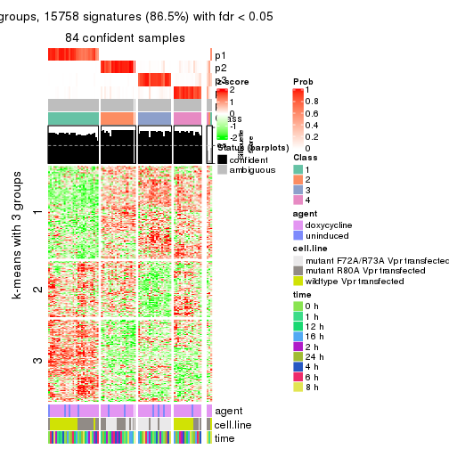
get_signatures(res, k = 6)
Signature heatmaps where rows are not scaled:
get_signatures(res, k = 2, scale_rows = FALSE)
get_signatures(res, k = 3, scale_rows = FALSE)
get_signatures(res, k = 4, scale_rows = FALSE)
get_signatures(res, k = 5, scale_rows = FALSE)
get_signatures(res, k = 6, scale_rows = FALSE)
Compare the overlap of signatures from different k:
compare_signatures(res)
get_signature() returns a data frame invisibly. TO get the list of signatures, the function
call should be assigned to a variable explicitly. In following code, if plot argument is set
to FALSE, no heatmap is plotted while only the differential analysis is performed.
# code only for demonstration
tb = get_signature(res, k = ..., plot = FALSE)
An example of the output of tb is:
#> which_row fdr mean_1 mean_2 scaled_mean_1 scaled_mean_2 km
#> 1 38 0.042760348 8.373488 9.131774 -0.5533452 0.5164555 1
#> 2 40 0.018707592 7.106213 8.469186 -0.6173731 0.5762149 1
#> 3 55 0.019134737 10.221463 11.207825 -0.6159697 0.5749050 1
#> 4 59 0.006059896 5.921854 7.869574 -0.6899429 0.6439467 1
#> 5 60 0.018055526 8.928898 10.211722 -0.6204761 0.5791110 1
#> 6 98 0.009384629 15.714769 14.887706 0.6635654 -0.6193277 2
...
The columns in tb are:
which_row: row indices corresponding to the input matrix.fdr: FDR for the differential test. mean_x: The mean value in group x.scaled_mean_x: The mean value in group x after rows are scaled.km: Row groups if k-means clustering is applied to rows.UMAP plot which shows how samples are separated.
dimension_reduction(res, k = 2, method = "UMAP")

dimension_reduction(res, k = 3, method = "UMAP")
dimension_reduction(res, k = 4, method = "UMAP")
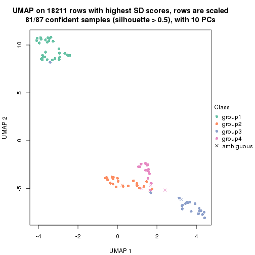
dimension_reduction(res, k = 5, method = "UMAP")
dimension_reduction(res, k = 6, method = "UMAP")

Following heatmap shows how subgroups are split when increasing k:
collect_classes(res)
Test correlation between subgroups and known annotations. If the known annotation is numeric, one-way ANOVA test is applied, and if the known annotation is discrete, chi-squared contingency table test is applied.
test_to_known_factors(res)
#> n agent(p) cell.line(p) time(p) k
#> SD:NMF 87 0.971 5.49e-06 1 2
#> SD:NMF 81 0.745 3.65e-09 1 3
#> SD:NMF 81 0.941 5.84e-12 1 4
#> SD:NMF 84 0.818 6.54e-12 1 5
#> SD:NMF 73 0.909 9.98e-17 1 6
If matrix rows can be associated to genes, consider to use functional_enrichment(res,
...) to perform function enrichment for the signature genes. See this vignette for more detailed explanations.
The object with results only for a single top-value method and a single partition method can be extracted as:
res = res_list["CV", "hclust"]
# you can also extract it by
# res = res_list["CV:hclust"]
A summary of res and all the functions that can be applied to it:
res
#> A 'ConsensusPartition' object with k = 2, 3, 4, 5, 6.
#> On a matrix with 18211 rows and 87 columns.
#> Top rows (1000, 2000, 3000, 4000, 5000) are extracted by 'CV' method.
#> Subgroups are detected by 'hclust' method.
#> Performed in total 1250 partitions by row resampling.
#> Best k for subgroups seems to be 3.
#>
#> Following methods can be applied to this 'ConsensusPartition' object:
#> [1] "cola_report" "collect_classes" "collect_plots"
#> [4] "collect_stats" "colnames" "compare_signatures"
#> [7] "consensus_heatmap" "dimension_reduction" "functional_enrichment"
#> [10] "get_anno_col" "get_anno" "get_classes"
#> [13] "get_consensus" "get_matrix" "get_membership"
#> [16] "get_param" "get_signatures" "get_stats"
#> [19] "is_best_k" "is_stable_k" "membership_heatmap"
#> [22] "ncol" "nrow" "plot_ecdf"
#> [25] "rownames" "select_partition_number" "show"
#> [28] "suggest_best_k" "test_to_known_factors"
collect_plots() function collects all the plots made from res for all k (number of partitions)
into one single page to provide an easy and fast comparison between different k.
collect_plots(res)
The plots are:
k and the heatmap of
predicted classes for each k.k.k.k.All the plots in panels can be made by individual functions and they are plotted later in this section.
select_partition_number() produces several plots showing different
statistics for choosing “optimized” k. There are following statistics:
k;k, the area increased is defined as \(A_k - A_{k-1}\).The detailed explanations of these statistics can be found in the cola vignette.
Generally speaking, lower PAC score, higher mean silhouette score or higher
concordance corresponds to better partition. Rand index and Jaccard index
measure how similar the current partition is compared to partition with k-1.
If they are too similar, we won't accept k is better than k-1.
select_partition_number(res)
The numeric values for all these statistics can be obtained by get_stats().
get_stats(res)
#> k 1-PAC mean_silhouette concordance area_increased Rand Jaccard
#> 2 2 0.763 0.880 0.931 0.3793 0.655 0.655
#> 3 3 0.651 0.831 0.898 0.6641 0.701 0.543
#> 4 4 0.569 0.760 0.844 0.0641 0.970 0.917
#> 5 5 0.594 0.707 0.823 0.0637 0.920 0.768
#> 6 6 0.706 0.629 0.761 0.0802 0.952 0.828
suggest_best_k() suggests the best \(k\) based on these statistics. The rules are as follows:
suggest_best_k(res)
#> [1] 3
Following shows the table of the partitions (You need to click the show/hide
code output link to see it). The membership matrix (columns with name p*)
is inferred by
clue::cl_consensus()
function with the SE method. Basically the value in the membership matrix
represents the probability to belong to a certain group. The finall class
label for an item is determined with the group with highest probability it
belongs to.
In get_classes() function, the entropy is calculated from the membership
matrix and the silhouette score is calculated from the consensus matrix.
cbind(get_classes(res, k = 2), get_membership(res, k = 2))
#> class entropy silhouette p1 p2
#> GSM41890 1 0.2423 0.914 0.960 0.040
#> GSM41917 1 0.3431 0.902 0.936 0.064
#> GSM41936 1 0.2603 0.925 0.956 0.044
#> GSM41893 1 0.0672 0.918 0.992 0.008
#> GSM41920 1 0.3431 0.902 0.936 0.064
#> GSM41937 1 0.2603 0.925 0.956 0.044
#> GSM41896 1 0.2423 0.914 0.960 0.040
#> GSM41923 1 0.0672 0.918 0.992 0.008
#> GSM41938 1 0.2603 0.925 0.956 0.044
#> GSM41899 1 0.0672 0.918 0.992 0.008
#> GSM41925 1 0.0672 0.918 0.992 0.008
#> GSM41939 1 0.2603 0.925 0.956 0.044
#> GSM41902 1 0.2423 0.914 0.960 0.040
#> GSM41927 1 0.0672 0.918 0.992 0.008
#> GSM41940 1 0.2603 0.925 0.956 0.044
#> GSM41905 1 0.2423 0.914 0.960 0.040
#> GSM41929 1 0.3431 0.902 0.936 0.064
#> GSM41941 1 0.2948 0.924 0.948 0.052
#> GSM41908 1 0.2423 0.914 0.960 0.040
#> GSM41931 1 0.3274 0.904 0.940 0.060
#> GSM41942 1 0.2603 0.925 0.956 0.044
#> GSM41945 1 0.2948 0.924 0.948 0.052
#> GSM41911 1 0.2423 0.914 0.960 0.040
#> GSM41933 1 0.3431 0.902 0.936 0.064
#> GSM41943 1 0.2948 0.924 0.948 0.052
#> GSM41944 1 0.2948 0.924 0.948 0.052
#> GSM41876 1 0.2603 0.925 0.956 0.044
#> GSM41895 2 0.1843 0.956 0.028 0.972
#> GSM41898 2 0.0672 0.963 0.008 0.992
#> GSM41877 1 0.2603 0.925 0.956 0.044
#> GSM41901 2 0.0672 0.963 0.008 0.992
#> GSM41904 1 0.4022 0.911 0.920 0.080
#> GSM41878 1 0.4298 0.911 0.912 0.088
#> GSM41907 2 0.0672 0.963 0.008 0.992
#> GSM41910 2 0.0672 0.963 0.008 0.992
#> GSM41879 1 0.5059 0.898 0.888 0.112
#> GSM41913 2 0.0672 0.963 0.008 0.992
#> GSM41916 2 0.1843 0.956 0.028 0.972
#> GSM41880 1 0.2603 0.925 0.956 0.044
#> GSM41919 2 0.0672 0.963 0.008 0.992
#> GSM41922 2 0.4161 0.909 0.084 0.916
#> GSM41881 1 0.5059 0.898 0.888 0.112
#> GSM41924 2 0.0672 0.963 0.008 0.992
#> GSM41926 2 0.5294 0.869 0.120 0.880
#> GSM41869 1 0.2603 0.925 0.956 0.044
#> GSM41928 2 0.4022 0.910 0.080 0.920
#> GSM41930 2 0.1843 0.956 0.028 0.972
#> GSM41882 2 0.0672 0.963 0.008 0.992
#> GSM41932 2 0.0672 0.963 0.008 0.992
#> GSM41934 2 0.8327 0.647 0.264 0.736
#> GSM41860 1 0.9963 0.216 0.536 0.464
#> GSM41871 1 0.2603 0.925 0.956 0.044
#> GSM41875 1 0.2603 0.925 0.956 0.044
#> GSM41894 1 0.0672 0.918 0.992 0.008
#> GSM41897 1 0.0672 0.918 0.992 0.008
#> GSM41861 1 0.9963 0.216 0.536 0.464
#> GSM41872 1 0.4431 0.909 0.908 0.092
#> GSM41900 1 0.0672 0.918 0.992 0.008
#> GSM41862 1 0.9909 0.283 0.556 0.444
#> GSM41873 1 0.4431 0.909 0.908 0.092
#> GSM41903 1 0.2236 0.915 0.964 0.036
#> GSM41863 1 0.4815 0.891 0.896 0.104
#> GSM41883 1 0.2603 0.925 0.956 0.044
#> GSM41906 1 0.2236 0.915 0.964 0.036
#> GSM41864 1 0.9909 0.283 0.556 0.444
#> GSM41884 1 0.2603 0.925 0.956 0.044
#> GSM41909 1 0.0672 0.918 0.992 0.008
#> GSM41912 1 0.0672 0.918 0.992 0.008
#> GSM41865 1 0.9909 0.283 0.556 0.444
#> GSM41885 1 0.2603 0.925 0.956 0.044
#> GSM41915 1 0.0672 0.918 0.992 0.008
#> GSM41866 1 0.4815 0.891 0.896 0.104
#> GSM41886 1 0.2603 0.925 0.956 0.044
#> GSM41918 1 0.0672 0.918 0.992 0.008
#> GSM41867 1 0.3584 0.916 0.932 0.068
#> GSM41868 1 0.3879 0.918 0.924 0.076
#> GSM41921 1 0.0672 0.918 0.992 0.008
#> GSM41887 1 0.2236 0.915 0.964 0.036
#> GSM41914 1 0.3431 0.902 0.936 0.064
#> GSM41935 1 0.7602 0.783 0.780 0.220
#> GSM41874 1 0.3733 0.913 0.928 0.072
#> GSM41889 2 0.1843 0.956 0.028 0.972
#> GSM41892 2 0.0672 0.963 0.008 0.992
#> GSM41859 2 0.0672 0.963 0.008 0.992
#> GSM41870 1 0.2603 0.925 0.956 0.044
#> GSM41888 1 0.0938 0.919 0.988 0.012
#> GSM41891 1 0.0672 0.918 0.992 0.008
cbind(get_classes(res, k = 3), get_membership(res, k = 3))
#> class entropy silhouette p1 p2 p3
#> GSM41890 1 0.6106 0.850 0.756 0.200 0.044
#> GSM41917 1 0.6372 0.854 0.756 0.176 0.068
#> GSM41936 2 0.0237 0.877 0.004 0.996 0.000
#> GSM41893 1 0.1289 0.853 0.968 0.032 0.000
#> GSM41920 1 0.6372 0.854 0.756 0.176 0.068
#> GSM41937 2 0.0237 0.877 0.004 0.996 0.000
#> GSM41896 1 0.6106 0.850 0.756 0.200 0.044
#> GSM41923 1 0.3116 0.865 0.892 0.108 0.000
#> GSM41938 2 0.0237 0.877 0.004 0.996 0.000
#> GSM41899 1 0.1289 0.853 0.968 0.032 0.000
#> GSM41925 1 0.3116 0.865 0.892 0.108 0.000
#> GSM41939 2 0.0237 0.877 0.004 0.996 0.000
#> GSM41902 1 0.6106 0.850 0.756 0.200 0.044
#> GSM41927 1 0.3192 0.865 0.888 0.112 0.000
#> GSM41940 2 0.0237 0.877 0.004 0.996 0.000
#> GSM41905 1 0.6106 0.850 0.756 0.200 0.044
#> GSM41929 1 0.6372 0.854 0.756 0.176 0.068
#> GSM41941 2 0.1031 0.872 0.024 0.976 0.000
#> GSM41908 1 0.6106 0.850 0.756 0.200 0.044
#> GSM41931 1 0.6336 0.854 0.756 0.180 0.064
#> GSM41942 2 0.0237 0.877 0.004 0.996 0.000
#> GSM41945 2 0.1031 0.872 0.024 0.976 0.000
#> GSM41911 1 0.6106 0.850 0.756 0.200 0.044
#> GSM41933 1 0.6372 0.854 0.756 0.176 0.068
#> GSM41943 2 0.1031 0.872 0.024 0.976 0.000
#> GSM41944 2 0.1031 0.872 0.024 0.976 0.000
#> GSM41876 2 0.0000 0.877 0.000 1.000 0.000
#> GSM41895 3 0.0892 0.951 0.000 0.020 0.980
#> GSM41898 3 0.0000 0.959 0.000 0.000 1.000
#> GSM41877 2 0.1860 0.866 0.052 0.948 0.000
#> GSM41901 3 0.0000 0.959 0.000 0.000 1.000
#> GSM41904 2 0.2063 0.875 0.008 0.948 0.044
#> GSM41878 2 0.2173 0.874 0.008 0.944 0.048
#> GSM41907 3 0.0000 0.959 0.000 0.000 1.000
#> GSM41910 3 0.0000 0.959 0.000 0.000 1.000
#> GSM41879 2 0.2774 0.863 0.008 0.920 0.072
#> GSM41913 3 0.0000 0.959 0.000 0.000 1.000
#> GSM41916 3 0.0892 0.949 0.000 0.020 0.980
#> GSM41880 2 0.0000 0.877 0.000 1.000 0.000
#> GSM41919 3 0.0000 0.959 0.000 0.000 1.000
#> GSM41922 3 0.2448 0.893 0.000 0.076 0.924
#> GSM41881 2 0.2774 0.863 0.008 0.920 0.072
#> GSM41924 3 0.0000 0.959 0.000 0.000 1.000
#> GSM41926 3 0.3644 0.839 0.004 0.124 0.872
#> GSM41869 2 0.1860 0.866 0.052 0.948 0.000
#> GSM41928 3 0.2796 0.895 0.092 0.000 0.908
#> GSM41930 3 0.0892 0.949 0.000 0.020 0.980
#> GSM41882 3 0.0000 0.959 0.000 0.000 1.000
#> GSM41932 3 0.0000 0.959 0.000 0.000 1.000
#> GSM41934 3 0.5178 0.611 0.000 0.256 0.744
#> GSM41860 2 0.7181 0.203 0.024 0.508 0.468
#> GSM41871 2 0.1860 0.866 0.052 0.948 0.000
#> GSM41875 2 0.1860 0.866 0.052 0.948 0.000
#> GSM41894 1 0.0237 0.844 0.996 0.004 0.000
#> GSM41897 1 0.0237 0.844 0.996 0.004 0.000
#> GSM41861 2 0.7181 0.203 0.024 0.508 0.468
#> GSM41872 2 0.2384 0.871 0.008 0.936 0.056
#> GSM41900 1 0.0237 0.844 0.996 0.004 0.000
#> GSM41862 2 0.6625 0.300 0.008 0.552 0.440
#> GSM41873 2 0.2384 0.871 0.008 0.936 0.056
#> GSM41903 2 0.6771 0.475 0.276 0.684 0.040
#> GSM41863 2 0.2866 0.859 0.008 0.916 0.076
#> GSM41883 2 0.1860 0.866 0.052 0.948 0.000
#> GSM41906 2 0.6771 0.475 0.276 0.684 0.040
#> GSM41864 2 0.6625 0.300 0.008 0.552 0.440
#> GSM41884 2 0.0237 0.877 0.004 0.996 0.000
#> GSM41909 1 0.0237 0.844 0.996 0.004 0.000
#> GSM41912 1 0.0237 0.844 0.996 0.004 0.000
#> GSM41865 2 0.6771 0.298 0.012 0.548 0.440
#> GSM41885 2 0.1860 0.866 0.052 0.948 0.000
#> GSM41915 1 0.0237 0.844 0.996 0.004 0.000
#> GSM41866 2 0.2866 0.859 0.008 0.916 0.076
#> GSM41886 2 0.1860 0.866 0.052 0.948 0.000
#> GSM41918 1 0.0237 0.844 0.996 0.004 0.000
#> GSM41867 2 0.1877 0.878 0.012 0.956 0.032
#> GSM41868 2 0.3237 0.856 0.056 0.912 0.032
#> GSM41921 1 0.0237 0.844 0.996 0.004 0.000
#> GSM41887 1 0.6000 0.850 0.760 0.200 0.040
#> GSM41914 1 0.6372 0.854 0.756 0.176 0.068
#> GSM41935 2 0.4861 0.760 0.008 0.800 0.192
#> GSM41874 2 0.1711 0.876 0.008 0.960 0.032
#> GSM41889 3 0.0892 0.951 0.000 0.020 0.980
#> GSM41892 3 0.0000 0.959 0.000 0.000 1.000
#> GSM41859 3 0.0000 0.959 0.000 0.000 1.000
#> GSM41870 2 0.1860 0.866 0.052 0.948 0.000
#> GSM41888 1 0.5268 0.841 0.776 0.212 0.012
#> GSM41891 1 0.0237 0.844 0.996 0.004 0.000
cbind(get_classes(res, k = 4), get_membership(res, k = 4))
#> class entropy silhouette p1 p2 p3 p4
#> GSM41890 1 0.4507 0.8243 0.788 0.168 0.044 NA
#> GSM41917 1 0.4686 0.8281 0.788 0.144 0.068 NA
#> GSM41936 2 0.3751 0.7780 0.004 0.800 0.000 NA
#> GSM41893 1 0.0336 0.8232 0.992 0.000 0.000 NA
#> GSM41920 1 0.4686 0.8281 0.788 0.144 0.068 NA
#> GSM41937 2 0.3751 0.7780 0.004 0.800 0.000 NA
#> GSM41896 1 0.4507 0.8243 0.788 0.168 0.044 NA
#> GSM41923 1 0.2450 0.8377 0.912 0.072 0.000 NA
#> GSM41938 2 0.3751 0.7780 0.004 0.800 0.000 NA
#> GSM41899 1 0.0336 0.8232 0.992 0.000 0.000 NA
#> GSM41925 1 0.2450 0.8377 0.912 0.072 0.000 NA
#> GSM41939 2 0.3751 0.7780 0.004 0.800 0.000 NA
#> GSM41902 1 0.4507 0.8243 0.788 0.168 0.044 NA
#> GSM41927 1 0.2522 0.8377 0.908 0.076 0.000 NA
#> GSM41940 2 0.3751 0.7780 0.004 0.800 0.000 NA
#> GSM41905 1 0.4507 0.8243 0.788 0.168 0.044 NA
#> GSM41929 1 0.4686 0.8281 0.788 0.144 0.068 NA
#> GSM41941 2 0.4446 0.7663 0.028 0.776 0.000 NA
#> GSM41908 1 0.4507 0.8243 0.788 0.168 0.044 NA
#> GSM41931 1 0.4663 0.8281 0.788 0.148 0.064 NA
#> GSM41942 2 0.3751 0.7780 0.004 0.800 0.000 NA
#> GSM41945 2 0.5613 0.6421 0.028 0.592 0.000 NA
#> GSM41911 1 0.4507 0.8243 0.788 0.168 0.044 NA
#> GSM41933 1 0.4686 0.8281 0.788 0.144 0.068 NA
#> GSM41943 2 0.4446 0.7663 0.028 0.776 0.000 NA
#> GSM41944 2 0.5613 0.6421 0.028 0.592 0.000 NA
#> GSM41876 2 0.1716 0.8213 0.000 0.936 0.000 NA
#> GSM41895 3 0.0707 0.8839 0.000 0.020 0.980 NA
#> GSM41898 3 0.0000 0.8916 0.000 0.000 1.000 NA
#> GSM41877 2 0.2797 0.8168 0.032 0.900 0.000 NA
#> GSM41901 3 0.0000 0.8916 0.000 0.000 1.000 NA
#> GSM41904 2 0.1585 0.8205 0.004 0.952 0.040 NA
#> GSM41878 2 0.1675 0.8202 0.004 0.948 0.044 NA
#> GSM41907 3 0.0000 0.8916 0.000 0.000 1.000 NA
#> GSM41910 3 0.0000 0.8916 0.000 0.000 1.000 NA
#> GSM41879 2 0.2164 0.8107 0.004 0.924 0.068 NA
#> GSM41913 3 0.0000 0.8916 0.000 0.000 1.000 NA
#> GSM41916 3 0.0707 0.8827 0.000 0.020 0.980 NA
#> GSM41880 2 0.1716 0.8213 0.000 0.936 0.000 NA
#> GSM41919 3 0.0000 0.8916 0.000 0.000 1.000 NA
#> GSM41922 3 0.1940 0.8338 0.000 0.076 0.924 NA
#> GSM41881 2 0.2164 0.8107 0.004 0.924 0.068 NA
#> GSM41924 3 0.0000 0.8916 0.000 0.000 1.000 NA
#> GSM41926 3 0.3072 0.7879 0.004 0.124 0.868 NA
#> GSM41869 2 0.2797 0.8168 0.032 0.900 0.000 NA
#> GSM41928 3 0.4955 0.5940 0.000 0.000 0.556 NA
#> GSM41930 3 0.0707 0.8827 0.000 0.020 0.980 NA
#> GSM41882 3 0.0000 0.8916 0.000 0.000 1.000 NA
#> GSM41932 3 0.0000 0.8916 0.000 0.000 1.000 NA
#> GSM41934 3 0.4103 0.5825 0.000 0.256 0.744 NA
#> GSM41860 3 0.7265 -0.0332 0.004 0.400 0.468 NA
#> GSM41871 2 0.2797 0.8168 0.032 0.900 0.000 NA
#> GSM41875 2 0.2797 0.8168 0.032 0.900 0.000 NA
#> GSM41894 1 0.2814 0.8032 0.868 0.000 0.000 NA
#> GSM41897 1 0.2814 0.8032 0.868 0.000 0.000 NA
#> GSM41861 3 0.7265 -0.0332 0.004 0.400 0.468 NA
#> GSM41872 2 0.1847 0.8188 0.004 0.940 0.052 NA
#> GSM41900 1 0.2814 0.8032 0.868 0.000 0.000 NA
#> GSM41862 2 0.6606 0.1315 0.004 0.492 0.436 NA
#> GSM41873 2 0.1847 0.8188 0.004 0.940 0.052 NA
#> GSM41903 2 0.8377 0.2578 0.260 0.484 0.040 NA
#> GSM41863 2 0.2238 0.8091 0.004 0.920 0.072 NA
#> GSM41883 2 0.2797 0.8168 0.032 0.900 0.000 NA
#> GSM41906 2 0.8377 0.2578 0.260 0.484 0.040 NA
#> GSM41864 2 0.6606 0.1315 0.004 0.492 0.436 NA
#> GSM41884 2 0.1557 0.8208 0.000 0.944 0.000 NA
#> GSM41909 1 0.2814 0.8032 0.868 0.000 0.000 NA
#> GSM41912 1 0.2814 0.8032 0.868 0.000 0.000 NA
#> GSM41865 2 0.6716 0.1255 0.004 0.484 0.436 NA
#> GSM41885 2 0.2797 0.8168 0.032 0.900 0.000 NA
#> GSM41915 1 0.2814 0.8032 0.868 0.000 0.000 NA
#> GSM41866 2 0.2238 0.8091 0.004 0.920 0.072 NA
#> GSM41886 2 0.2797 0.8168 0.032 0.900 0.000 NA
#> GSM41918 1 0.2814 0.8032 0.868 0.000 0.000 NA
#> GSM41867 2 0.1575 0.8236 0.004 0.956 0.028 NA
#> GSM41868 2 0.3863 0.8056 0.036 0.864 0.028 NA
#> GSM41921 1 0.2814 0.8032 0.868 0.000 0.000 NA
#> GSM41887 1 0.4423 0.8249 0.792 0.168 0.040 NA
#> GSM41914 1 0.4686 0.8281 0.788 0.144 0.068 NA
#> GSM41935 2 0.3850 0.7129 0.004 0.804 0.188 NA
#> GSM41874 2 0.1296 0.8204 0.004 0.964 0.028 NA
#> GSM41889 3 0.0707 0.8839 0.000 0.020 0.980 NA
#> GSM41892 3 0.0000 0.8916 0.000 0.000 1.000 NA
#> GSM41859 3 0.0000 0.8916 0.000 0.000 1.000 NA
#> GSM41870 2 0.2797 0.8168 0.032 0.900 0.000 NA
#> GSM41888 1 0.3852 0.8160 0.808 0.180 0.012 NA
#> GSM41891 1 0.2814 0.8032 0.868 0.000 0.000 NA
cbind(get_classes(res, k = 5), get_membership(res, k = 5))
#> class entropy silhouette p1 p2 p3 p4 p5
#> GSM41890 1 0.3964 0.78227 0.796 0.160 0.032 0.012 0.000
#> GSM41917 1 0.4082 0.78245 0.796 0.140 0.056 0.008 0.000
#> GSM41936 4 0.4171 0.90515 0.000 0.396 0.000 0.604 0.000
#> GSM41893 1 0.0703 0.76126 0.976 0.000 0.000 0.000 0.024
#> GSM41920 1 0.4082 0.78245 0.796 0.140 0.056 0.008 0.000
#> GSM41937 4 0.4171 0.90515 0.000 0.396 0.000 0.604 0.000
#> GSM41896 1 0.3964 0.78227 0.796 0.160 0.032 0.012 0.000
#> GSM41923 1 0.2694 0.75029 0.884 0.000 0.000 0.076 0.040
#> GSM41938 4 0.4171 0.90515 0.000 0.396 0.000 0.604 0.000
#> GSM41899 1 0.0703 0.76126 0.976 0.000 0.000 0.000 0.024
#> GSM41925 1 0.2694 0.75029 0.884 0.000 0.000 0.076 0.040
#> GSM41939 4 0.4171 0.90515 0.000 0.396 0.000 0.604 0.000
#> GSM41902 1 0.3964 0.78227 0.796 0.160 0.032 0.012 0.000
#> GSM41927 1 0.2853 0.75210 0.880 0.004 0.000 0.076 0.040
#> GSM41940 4 0.4171 0.90515 0.000 0.396 0.000 0.604 0.000
#> GSM41905 1 0.3964 0.78227 0.796 0.160 0.032 0.012 0.000
#> GSM41929 1 0.4082 0.78245 0.796 0.140 0.056 0.008 0.000
#> GSM41941 4 0.4746 0.89073 0.024 0.376 0.000 0.600 0.000
#> GSM41908 1 0.3964 0.78227 0.796 0.160 0.032 0.012 0.000
#> GSM41931 1 0.4058 0.78270 0.796 0.144 0.052 0.008 0.000
#> GSM41942 4 0.4171 0.90515 0.000 0.396 0.000 0.604 0.000
#> GSM41945 4 0.4164 0.68226 0.024 0.200 0.000 0.764 0.012
#> GSM41911 1 0.3964 0.78227 0.796 0.160 0.032 0.012 0.000
#> GSM41933 1 0.4082 0.78245 0.796 0.140 0.056 0.008 0.000
#> GSM41943 4 0.4746 0.89073 0.024 0.376 0.000 0.600 0.000
#> GSM41944 4 0.4164 0.68226 0.024 0.200 0.000 0.764 0.012
#> GSM41876 2 0.1818 0.70174 0.000 0.932 0.000 0.024 0.044
#> GSM41895 3 0.0609 0.85975 0.000 0.020 0.980 0.000 0.000
#> GSM41898 3 0.0000 0.87056 0.000 0.000 1.000 0.000 0.000
#> GSM41877 2 0.1299 0.72006 0.020 0.960 0.000 0.008 0.012
#> GSM41901 3 0.0000 0.87056 0.000 0.000 1.000 0.000 0.000
#> GSM41904 2 0.2712 0.70063 0.000 0.880 0.032 0.088 0.000
#> GSM41878 2 0.2708 0.70449 0.000 0.884 0.044 0.072 0.000
#> GSM41907 3 0.0000 0.87056 0.000 0.000 1.000 0.000 0.000
#> GSM41910 3 0.0000 0.87056 0.000 0.000 1.000 0.000 0.000
#> GSM41879 2 0.3119 0.69378 0.000 0.860 0.068 0.072 0.000
#> GSM41913 3 0.0000 0.87056 0.000 0.000 1.000 0.000 0.000
#> GSM41916 3 0.0609 0.86001 0.000 0.020 0.980 0.000 0.000
#> GSM41880 2 0.1818 0.70174 0.000 0.932 0.000 0.024 0.044
#> GSM41919 3 0.0000 0.87056 0.000 0.000 1.000 0.000 0.000
#> GSM41922 3 0.1671 0.80123 0.000 0.076 0.924 0.000 0.000
#> GSM41881 2 0.3119 0.69378 0.000 0.860 0.068 0.072 0.000
#> GSM41924 3 0.0000 0.87056 0.000 0.000 1.000 0.000 0.000
#> GSM41926 3 0.2694 0.73979 0.004 0.128 0.864 0.000 0.004
#> GSM41869 2 0.1173 0.71949 0.020 0.964 0.000 0.004 0.012
#> GSM41928 5 0.4555 0.00000 0.000 0.004 0.060 0.196 0.740
#> GSM41930 3 0.0609 0.86001 0.000 0.020 0.980 0.000 0.000
#> GSM41882 3 0.0162 0.86866 0.000 0.000 0.996 0.000 0.004
#> GSM41932 3 0.0000 0.87056 0.000 0.000 1.000 0.000 0.000
#> GSM41934 3 0.3961 0.56967 0.000 0.248 0.736 0.016 0.000
#> GSM41860 3 0.5932 0.00172 0.000 0.440 0.456 0.104 0.000
#> GSM41871 2 0.1413 0.71514 0.020 0.956 0.000 0.012 0.012
#> GSM41875 2 0.1173 0.71949 0.020 0.964 0.000 0.004 0.012
#> GSM41894 1 0.3074 0.71069 0.804 0.000 0.000 0.000 0.196
#> GSM41897 1 0.3074 0.71069 0.804 0.000 0.000 0.000 0.196
#> GSM41861 3 0.5932 0.00172 0.000 0.440 0.456 0.104 0.000
#> GSM41872 2 0.2790 0.70654 0.000 0.880 0.052 0.068 0.000
#> GSM41900 1 0.3074 0.71069 0.804 0.000 0.000 0.000 0.196
#> GSM41862 2 0.6441 0.09166 0.000 0.424 0.420 0.152 0.004
#> GSM41873 2 0.2790 0.70654 0.000 0.880 0.052 0.068 0.000
#> GSM41903 2 0.8228 0.13889 0.252 0.456 0.040 0.188 0.064
#> GSM41863 2 0.3277 0.69291 0.000 0.856 0.068 0.072 0.004
#> GSM41883 2 0.1413 0.71514 0.020 0.956 0.000 0.012 0.012
#> GSM41906 2 0.8228 0.13889 0.252 0.456 0.040 0.188 0.064
#> GSM41864 2 0.6441 0.09166 0.000 0.424 0.420 0.152 0.004
#> GSM41884 2 0.1568 0.70540 0.000 0.944 0.000 0.020 0.036
#> GSM41909 1 0.3074 0.71069 0.804 0.000 0.000 0.000 0.196
#> GSM41912 1 0.3074 0.71069 0.804 0.000 0.000 0.000 0.196
#> GSM41865 2 0.6388 0.08888 0.000 0.432 0.420 0.144 0.004
#> GSM41885 2 0.1173 0.71949 0.020 0.964 0.000 0.004 0.012
#> GSM41915 1 0.3074 0.71069 0.804 0.000 0.000 0.000 0.196
#> GSM41866 2 0.3277 0.69291 0.000 0.856 0.068 0.072 0.004
#> GSM41886 2 0.1173 0.71949 0.020 0.964 0.000 0.004 0.012
#> GSM41918 1 0.3074 0.71069 0.804 0.000 0.000 0.000 0.196
#> GSM41867 2 0.2260 0.71158 0.000 0.908 0.028 0.064 0.000
#> GSM41868 2 0.1940 0.71005 0.024 0.936 0.028 0.004 0.008
#> GSM41921 1 0.3074 0.71069 0.804 0.000 0.000 0.000 0.196
#> GSM41887 1 0.4012 0.78341 0.796 0.160 0.032 0.008 0.004
#> GSM41914 1 0.4082 0.78245 0.796 0.140 0.056 0.008 0.000
#> GSM41935 2 0.4634 0.57720 0.000 0.740 0.184 0.072 0.004
#> GSM41874 2 0.2450 0.70416 0.000 0.896 0.028 0.076 0.000
#> GSM41889 3 0.0609 0.85975 0.000 0.020 0.980 0.000 0.000
#> GSM41892 3 0.0000 0.87056 0.000 0.000 1.000 0.000 0.000
#> GSM41859 3 0.0000 0.87056 0.000 0.000 1.000 0.000 0.000
#> GSM41870 2 0.1413 0.71514 0.020 0.956 0.000 0.012 0.012
#> GSM41888 1 0.3806 0.76581 0.812 0.104 0.000 0.084 0.000
#> GSM41891 1 0.3074 0.71069 0.804 0.000 0.000 0.000 0.196
cbind(get_classes(res, k = 6), get_membership(res, k = 6))
#> class entropy silhouette p1 p2 p3 p4 p5 p6
#> GSM41890 1 0.2095 0.655 0.904 0.076 0.016 0.004 0.000 0.000
#> GSM41917 1 0.2129 0.657 0.904 0.056 0.040 0.000 0.000 0.000
#> GSM41936 4 0.1151 0.934 0.012 0.032 0.000 0.956 0.000 0.000
#> GSM41893 1 0.2730 0.661 0.808 0.000 0.000 0.000 0.192 0.000
#> GSM41920 1 0.2129 0.657 0.904 0.056 0.040 0.000 0.000 0.000
#> GSM41937 4 0.1151 0.934 0.012 0.032 0.000 0.956 0.000 0.000
#> GSM41896 1 0.2095 0.655 0.904 0.076 0.016 0.004 0.000 0.000
#> GSM41923 1 0.3331 0.649 0.816 0.004 0.000 0.044 0.136 0.000
#> GSM41938 4 0.1151 0.934 0.012 0.032 0.000 0.956 0.000 0.000
#> GSM41899 1 0.2762 0.660 0.804 0.000 0.000 0.000 0.196 0.000
#> GSM41925 1 0.3331 0.649 0.816 0.004 0.000 0.044 0.136 0.000
#> GSM41939 4 0.1151 0.934 0.012 0.032 0.000 0.956 0.000 0.000
#> GSM41902 1 0.2095 0.655 0.904 0.076 0.016 0.004 0.000 0.000
#> GSM41927 1 0.3290 0.649 0.820 0.004 0.000 0.044 0.132 0.000
#> GSM41940 4 0.1151 0.934 0.012 0.032 0.000 0.956 0.000 0.000
#> GSM41905 1 0.2095 0.655 0.904 0.076 0.016 0.004 0.000 0.000
#> GSM41929 1 0.2129 0.657 0.904 0.056 0.040 0.000 0.000 0.000
#> GSM41941 4 0.1176 0.919 0.000 0.020 0.000 0.956 0.024 0.000
#> GSM41908 1 0.2238 0.656 0.900 0.076 0.016 0.004 0.004 0.000
#> GSM41931 1 0.2119 0.657 0.904 0.060 0.036 0.000 0.000 0.000
#> GSM41942 4 0.1151 0.934 0.012 0.032 0.000 0.956 0.000 0.000
#> GSM41945 4 0.2730 0.744 0.000 0.000 0.000 0.808 0.192 0.000
#> GSM41911 1 0.2095 0.655 0.904 0.076 0.016 0.004 0.000 0.000
#> GSM41933 1 0.2129 0.657 0.904 0.056 0.040 0.000 0.000 0.000
#> GSM41943 4 0.1176 0.919 0.000 0.020 0.000 0.956 0.024 0.000
#> GSM41944 4 0.2730 0.744 0.000 0.000 0.000 0.808 0.192 0.000
#> GSM41876 2 0.5843 0.386 0.004 0.460 0.000 0.168 0.368 0.000
#> GSM41895 3 0.0603 0.804 0.000 0.004 0.980 0.000 0.016 0.000
#> GSM41898 3 0.0146 0.811 0.000 0.004 0.996 0.000 0.000 0.000
#> GSM41877 2 0.3112 0.486 0.004 0.840 0.000 0.104 0.052 0.000
#> GSM41901 3 0.0000 0.811 0.000 0.000 1.000 0.000 0.000 0.000
#> GSM41904 2 0.7416 0.478 0.040 0.376 0.028 0.264 0.288 0.004
#> GSM41878 2 0.7136 0.505 0.040 0.496 0.040 0.180 0.240 0.004
#> GSM41907 3 0.0000 0.811 0.000 0.000 1.000 0.000 0.000 0.000
#> GSM41910 3 0.0146 0.811 0.000 0.004 0.996 0.000 0.000 0.000
#> GSM41879 2 0.8046 0.444 0.084 0.368 0.052 0.252 0.240 0.004
#> GSM41913 3 0.0000 0.811 0.000 0.000 1.000 0.000 0.000 0.000
#> GSM41916 3 0.0820 0.802 0.012 0.016 0.972 0.000 0.000 0.000
#> GSM41880 2 0.5820 0.391 0.004 0.464 0.000 0.164 0.368 0.000
#> GSM41919 3 0.0000 0.811 0.000 0.000 1.000 0.000 0.000 0.000
#> GSM41922 3 0.2134 0.752 0.044 0.052 0.904 0.000 0.000 0.000
#> GSM41881 2 0.8037 0.446 0.084 0.372 0.052 0.248 0.240 0.004
#> GSM41924 3 0.0000 0.811 0.000 0.000 1.000 0.000 0.000 0.000
#> GSM41926 3 0.3269 0.709 0.048 0.092 0.844 0.000 0.008 0.008
#> GSM41869 2 0.0508 0.484 0.004 0.984 0.000 0.012 0.000 0.000
#> GSM41928 6 0.0000 0.000 0.000 0.000 0.000 0.000 0.000 1.000
#> GSM41930 3 0.0820 0.802 0.012 0.016 0.972 0.000 0.000 0.000
#> GSM41882 3 0.0146 0.810 0.000 0.000 0.996 0.000 0.000 0.004
#> GSM41932 3 0.0000 0.811 0.000 0.000 1.000 0.000 0.000 0.000
#> GSM41934 3 0.5250 0.626 0.044 0.112 0.728 0.072 0.044 0.000
#> GSM41860 3 0.7308 0.318 0.040 0.232 0.452 0.228 0.048 0.000
#> GSM41871 2 0.1007 0.482 0.000 0.956 0.000 0.044 0.000 0.000
#> GSM41875 2 0.0508 0.484 0.004 0.984 0.000 0.012 0.000 0.000
#> GSM41894 1 0.3915 0.561 0.584 0.004 0.000 0.000 0.412 0.000
#> GSM41897 1 0.3915 0.561 0.584 0.004 0.000 0.000 0.412 0.000
#> GSM41861 3 0.7308 0.318 0.040 0.232 0.452 0.228 0.048 0.000
#> GSM41872 2 0.7486 0.503 0.052 0.432 0.036 0.240 0.236 0.004
#> GSM41900 1 0.3915 0.561 0.584 0.004 0.000 0.000 0.412 0.000
#> GSM41862 3 0.7617 0.233 0.040 0.224 0.416 0.264 0.048 0.008
#> GSM41873 2 0.7486 0.503 0.052 0.432 0.036 0.240 0.236 0.004
#> GSM41903 5 0.7039 1.000 0.300 0.244 0.024 0.028 0.404 0.000
#> GSM41863 2 0.6974 0.537 0.008 0.500 0.060 0.200 0.224 0.008
#> GSM41883 2 0.1007 0.482 0.000 0.956 0.000 0.044 0.000 0.000
#> GSM41906 5 0.7039 1.000 0.300 0.244 0.024 0.028 0.404 0.000
#> GSM41864 3 0.7617 0.233 0.040 0.224 0.416 0.264 0.048 0.008
#> GSM41884 2 0.4704 0.418 0.004 0.632 0.000 0.060 0.304 0.000
#> GSM41909 1 0.3915 0.561 0.584 0.004 0.000 0.000 0.412 0.000
#> GSM41912 1 0.3915 0.561 0.584 0.004 0.000 0.000 0.412 0.000
#> GSM41865 3 0.7623 0.234 0.040 0.232 0.416 0.256 0.048 0.008
#> GSM41885 2 0.0508 0.484 0.004 0.984 0.000 0.012 0.000 0.000
#> GSM41915 1 0.3923 0.557 0.580 0.004 0.000 0.000 0.416 0.000
#> GSM41866 2 0.6974 0.537 0.008 0.500 0.060 0.200 0.224 0.008
#> GSM41886 2 0.0653 0.486 0.004 0.980 0.000 0.012 0.004 0.000
#> GSM41918 1 0.3915 0.561 0.584 0.004 0.000 0.000 0.412 0.000
#> GSM41867 2 0.6245 0.549 0.008 0.552 0.020 0.192 0.224 0.004
#> GSM41868 2 0.2329 0.400 0.056 0.904 0.024 0.012 0.000 0.004
#> GSM41921 1 0.3923 0.557 0.580 0.004 0.000 0.000 0.416 0.000
#> GSM41887 1 0.2350 0.657 0.896 0.076 0.016 0.004 0.008 0.000
#> GSM41914 1 0.2129 0.657 0.904 0.056 0.040 0.000 0.000 0.000
#> GSM41935 2 0.8794 0.313 0.100 0.324 0.164 0.188 0.216 0.008
#> GSM41874 2 0.7047 0.517 0.024 0.432 0.024 0.252 0.264 0.004
#> GSM41889 3 0.0603 0.804 0.000 0.004 0.980 0.000 0.016 0.000
#> GSM41892 3 0.0000 0.811 0.000 0.000 1.000 0.000 0.000 0.000
#> GSM41859 3 0.0000 0.811 0.000 0.000 1.000 0.000 0.000 0.000
#> GSM41870 2 0.1007 0.482 0.000 0.956 0.000 0.044 0.000 0.000
#> GSM41888 1 0.1863 0.641 0.920 0.036 0.000 0.044 0.000 0.000
#> GSM41891 1 0.3915 0.561 0.584 0.004 0.000 0.000 0.412 0.000
Heatmaps for the consensus matrix. It visualizes the probability of two samples to be in a same group.
consensus_heatmap(res, k = 2)
consensus_heatmap(res, k = 3)
consensus_heatmap(res, k = 4)
consensus_heatmap(res, k = 5)
consensus_heatmap(res, k = 6)
Heatmaps for the membership of samples in all partitions to see how consistent they are:
membership_heatmap(res, k = 2)
membership_heatmap(res, k = 3)
membership_heatmap(res, k = 4)
membership_heatmap(res, k = 5)
membership_heatmap(res, k = 6)
As soon as we have had the classes for columns, we can look for signatures which are significantly different between classes which can be candidate marks for certain classes. Following are the heatmaps for signatures.
Signature heatmaps where rows are scaled:
get_signatures(res, k = 2)
get_signatures(res, k = 3)
get_signatures(res, k = 4)
get_signatures(res, k = 5)
get_signatures(res, k = 6)
Signature heatmaps where rows are not scaled:
get_signatures(res, k = 2, scale_rows = FALSE)
get_signatures(res, k = 3, scale_rows = FALSE)
get_signatures(res, k = 4, scale_rows = FALSE)
get_signatures(res, k = 5, scale_rows = FALSE)
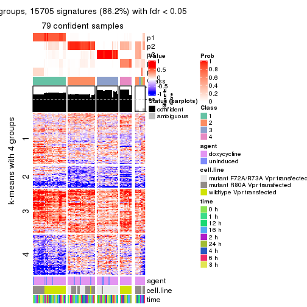
get_signatures(res, k = 6, scale_rows = FALSE)
Compare the overlap of signatures from different k:
compare_signatures(res)
get_signature() returns a data frame invisibly. TO get the list of signatures, the function
call should be assigned to a variable explicitly. In following code, if plot argument is set
to FALSE, no heatmap is plotted while only the differential analysis is performed.
# code only for demonstration
tb = get_signature(res, k = ..., plot = FALSE)
An example of the output of tb is:
#> which_row fdr mean_1 mean_2 scaled_mean_1 scaled_mean_2 km
#> 1 38 0.042760348 8.373488 9.131774 -0.5533452 0.5164555 1
#> 2 40 0.018707592 7.106213 8.469186 -0.6173731 0.5762149 1
#> 3 55 0.019134737 10.221463 11.207825 -0.6159697 0.5749050 1
#> 4 59 0.006059896 5.921854 7.869574 -0.6899429 0.6439467 1
#> 5 60 0.018055526 8.928898 10.211722 -0.6204761 0.5791110 1
#> 6 98 0.009384629 15.714769 14.887706 0.6635654 -0.6193277 2
...
The columns in tb are:
which_row: row indices corresponding to the input matrix.fdr: FDR for the differential test. mean_x: The mean value in group x.scaled_mean_x: The mean value in group x after rows are scaled.km: Row groups if k-means clustering is applied to rows.UMAP plot which shows how samples are separated.
dimension_reduction(res, k = 2, method = "UMAP")
dimension_reduction(res, k = 3, method = "UMAP")
dimension_reduction(res, k = 4, method = "UMAP")
dimension_reduction(res, k = 5, method = "UMAP")
dimension_reduction(res, k = 6, method = "UMAP")
Following heatmap shows how subgroups are split when increasing k:
collect_classes(res)
Test correlation between subgroups and known annotations. If the known annotation is numeric, one-way ANOVA test is applied, and if the known annotation is discrete, chi-squared contingency table test is applied.
test_to_known_factors(res)
#> n agent(p) cell.line(p) time(p) k
#> CV:hclust 82 0.884 4.85e-10 0.997 2
#> CV:hclust 80 0.733 5.88e-10 1.000 3
#> CV:hclust 80 0.733 5.88e-10 1.000 4
#> CV:hclust 79 0.619 3.04e-14 1.000 5
#> CV:hclust 65 0.712 4.55e-13 0.990 6
If matrix rows can be associated to genes, consider to use functional_enrichment(res,
...) to perform function enrichment for the signature genes. See this vignette for more detailed explanations.
The object with results only for a single top-value method and a single partition method can be extracted as:
res = res_list["CV", "kmeans"]
# you can also extract it by
# res = res_list["CV:kmeans"]
A summary of res and all the functions that can be applied to it:
res
#> A 'ConsensusPartition' object with k = 2, 3, 4, 5, 6.
#> On a matrix with 18211 rows and 87 columns.
#> Top rows (1000, 2000, 3000, 4000, 5000) are extracted by 'CV' method.
#> Subgroups are detected by 'kmeans' method.
#> Performed in total 1250 partitions by row resampling.
#> Best k for subgroups seems to be 3.
#>
#> Following methods can be applied to this 'ConsensusPartition' object:
#> [1] "cola_report" "collect_classes" "collect_plots"
#> [4] "collect_stats" "colnames" "compare_signatures"
#> [7] "consensus_heatmap" "dimension_reduction" "functional_enrichment"
#> [10] "get_anno_col" "get_anno" "get_classes"
#> [13] "get_consensus" "get_matrix" "get_membership"
#> [16] "get_param" "get_signatures" "get_stats"
#> [19] "is_best_k" "is_stable_k" "membership_heatmap"
#> [22] "ncol" "nrow" "plot_ecdf"
#> [25] "rownames" "select_partition_number" "show"
#> [28] "suggest_best_k" "test_to_known_factors"
collect_plots() function collects all the plots made from res for all k (number of partitions)
into one single page to provide an easy and fast comparison between different k.
collect_plots(res)
The plots are:
k and the heatmap of
predicted classes for each k.k.k.k.All the plots in panels can be made by individual functions and they are plotted later in this section.
select_partition_number() produces several plots showing different
statistics for choosing “optimized” k. There are following statistics:
k;k, the area increased is defined as \(A_k - A_{k-1}\).The detailed explanations of these statistics can be found in the cola vignette.
Generally speaking, lower PAC score, higher mean silhouette score or higher
concordance corresponds to better partition. Rand index and Jaccard index
measure how similar the current partition is compared to partition with k-1.
If they are too similar, we won't accept k is better than k-1.
select_partition_number(res)
The numeric values for all these statistics can be obtained by get_stats().
get_stats(res)
#> k 1-PAC mean_silhouette concordance area_increased Rand Jaccard
#> 2 2 0.433 0.770 0.850 0.4718 0.543 0.543
#> 3 3 0.730 0.880 0.896 0.3846 0.788 0.610
#> 4 4 0.748 0.793 0.807 0.1135 0.919 0.760
#> 5 5 0.743 0.774 0.784 0.0706 0.912 0.685
#> 6 6 0.776 0.782 0.798 0.0483 0.937 0.712
suggest_best_k() suggests the best \(k\) based on these statistics. The rules are as follows:
suggest_best_k(res)
#> [1] 3
Following shows the table of the partitions (You need to click the show/hide
code output link to see it). The membership matrix (columns with name p*)
is inferred by
clue::cl_consensus()
function with the SE method. Basically the value in the membership matrix
represents the probability to belong to a certain group. The finall class
label for an item is determined with the group with highest probability it
belongs to.
In get_classes() function, the entropy is calculated from the membership
matrix and the silhouette score is calculated from the consensus matrix.
cbind(get_classes(res, k = 2), get_membership(res, k = 2))
#> class entropy silhouette p1 p2
#> GSM41890 1 0.6438 0.766 0.836 0.164
#> GSM41917 1 0.4298 0.678 0.912 0.088
#> GSM41936 2 0.0938 0.693 0.012 0.988
#> GSM41893 1 0.9000 0.907 0.684 0.316
#> GSM41920 1 0.5737 0.733 0.864 0.136
#> GSM41937 2 0.5294 0.745 0.120 0.880
#> GSM41896 1 0.9000 0.907 0.684 0.316
#> GSM41923 1 0.9000 0.907 0.684 0.316
#> GSM41938 2 0.2043 0.713 0.032 0.968
#> GSM41899 1 0.9000 0.907 0.684 0.316
#> GSM41925 1 0.9000 0.907 0.684 0.316
#> GSM41939 2 0.2043 0.676 0.032 0.968
#> GSM41902 1 0.4161 0.526 0.916 0.084
#> GSM41927 1 0.9000 0.907 0.684 0.316
#> GSM41940 2 0.2236 0.672 0.036 0.964
#> GSM41905 1 0.7376 0.802 0.792 0.208
#> GSM41929 1 0.9000 0.907 0.684 0.316
#> GSM41941 2 0.2423 0.668 0.040 0.960
#> GSM41908 1 0.9000 0.907 0.684 0.316
#> GSM41931 1 0.9000 0.907 0.684 0.316
#> GSM41942 2 0.2236 0.672 0.036 0.964
#> GSM41945 2 0.3274 0.641 0.060 0.940
#> GSM41911 1 0.3114 0.566 0.944 0.056
#> GSM41933 1 0.9000 0.907 0.684 0.316
#> GSM41943 2 0.3431 0.635 0.064 0.936
#> GSM41944 2 0.2423 0.668 0.040 0.960
#> GSM41876 2 0.6148 0.754 0.152 0.848
#> GSM41895 2 0.9661 0.768 0.392 0.608
#> GSM41898 2 0.9661 0.768 0.392 0.608
#> GSM41877 2 0.1843 0.680 0.028 0.972
#> GSM41901 2 0.9661 0.768 0.392 0.608
#> GSM41904 2 0.9209 0.767 0.336 0.664
#> GSM41878 2 0.1843 0.711 0.028 0.972
#> GSM41907 2 0.9661 0.768 0.392 0.608
#> GSM41910 2 0.9661 0.768 0.392 0.608
#> GSM41879 2 0.9000 0.765 0.316 0.684
#> GSM41913 2 0.9661 0.768 0.392 0.608
#> GSM41916 2 0.9661 0.768 0.392 0.608
#> GSM41880 2 0.6247 0.755 0.156 0.844
#> GSM41919 2 0.9661 0.768 0.392 0.608
#> GSM41922 2 0.9635 0.768 0.388 0.612
#> GSM41881 2 0.9087 0.766 0.324 0.676
#> GSM41924 2 0.9661 0.768 0.392 0.608
#> GSM41926 2 0.9661 0.768 0.392 0.608
#> GSM41869 2 0.2423 0.668 0.040 0.960
#> GSM41928 2 0.9775 0.737 0.412 0.588
#> GSM41930 2 0.9661 0.768 0.392 0.608
#> GSM41882 2 0.9661 0.768 0.392 0.608
#> GSM41932 2 0.9661 0.768 0.392 0.608
#> GSM41934 2 0.9661 0.768 0.392 0.608
#> GSM41860 2 0.9608 0.769 0.384 0.616
#> GSM41871 2 0.0376 0.698 0.004 0.996
#> GSM41875 2 0.2423 0.668 0.040 0.960
#> GSM41894 1 0.9000 0.907 0.684 0.316
#> GSM41897 1 0.9000 0.907 0.684 0.316
#> GSM41861 2 0.6712 0.757 0.176 0.824
#> GSM41872 2 0.8443 0.771 0.272 0.728
#> GSM41900 1 0.9000 0.907 0.684 0.316
#> GSM41862 2 0.9661 0.768 0.392 0.608
#> GSM41873 2 0.8267 0.771 0.260 0.740
#> GSM41903 1 0.5842 0.737 0.860 0.140
#> GSM41863 2 0.0000 0.701 0.000 1.000
#> GSM41883 2 0.0938 0.693 0.012 0.988
#> GSM41906 1 0.9209 0.887 0.664 0.336
#> GSM41864 2 0.9358 0.768 0.352 0.648
#> GSM41884 2 0.6623 0.758 0.172 0.828
#> GSM41909 1 0.9000 0.907 0.684 0.316
#> GSM41912 1 0.9000 0.907 0.684 0.316
#> GSM41865 2 0.9661 0.768 0.392 0.608
#> GSM41885 2 0.2043 0.676 0.032 0.968
#> GSM41915 1 0.9170 0.891 0.668 0.332
#> GSM41866 2 0.0938 0.693 0.012 0.988
#> GSM41886 2 0.2423 0.668 0.040 0.960
#> GSM41918 1 0.9000 0.907 0.684 0.316
#> GSM41867 2 0.2423 0.668 0.040 0.960
#> GSM41868 2 0.3431 0.694 0.064 0.936
#> GSM41921 1 0.9286 0.878 0.656 0.344
#> GSM41887 1 0.9000 0.907 0.684 0.316
#> GSM41914 1 0.3733 0.657 0.928 0.072
#> GSM41935 2 0.9044 0.767 0.320 0.680
#> GSM41874 2 0.1184 0.690 0.016 0.984
#> GSM41889 2 0.9661 0.768 0.392 0.608
#> GSM41892 2 0.9661 0.768 0.392 0.608
#> GSM41859 2 0.9661 0.768 0.392 0.608
#> GSM41870 2 0.0376 0.698 0.004 0.996
#> GSM41888 1 0.9000 0.907 0.684 0.316
#> GSM41891 1 0.9000 0.907 0.684 0.316
cbind(get_classes(res, k = 3), get_membership(res, k = 3))
#> class entropy silhouette p1 p2 p3
#> GSM41890 1 0.4744 0.869 0.836 0.028 0.136
#> GSM41917 1 0.5502 0.791 0.744 0.008 0.248
#> GSM41936 2 0.2806 0.906 0.040 0.928 0.032
#> GSM41893 1 0.0747 0.911 0.984 0.016 0.000
#> GSM41920 1 0.5982 0.797 0.744 0.028 0.228
#> GSM41937 2 0.2806 0.906 0.040 0.928 0.032
#> GSM41896 1 0.2939 0.905 0.916 0.012 0.072
#> GSM41923 1 0.0983 0.911 0.980 0.016 0.004
#> GSM41938 2 0.2806 0.906 0.040 0.928 0.032
#> GSM41899 1 0.0747 0.911 0.984 0.016 0.000
#> GSM41925 1 0.0983 0.911 0.980 0.016 0.004
#> GSM41939 2 0.2806 0.906 0.040 0.928 0.032
#> GSM41902 1 0.6899 0.596 0.612 0.024 0.364
#> GSM41927 1 0.2682 0.901 0.920 0.004 0.076
#> GSM41940 2 0.2806 0.906 0.040 0.928 0.032
#> GSM41905 1 0.5060 0.856 0.816 0.028 0.156
#> GSM41929 1 0.3325 0.900 0.904 0.020 0.076
#> GSM41941 2 0.3434 0.894 0.064 0.904 0.032
#> GSM41908 1 0.2939 0.901 0.916 0.012 0.072
#> GSM41931 1 0.3234 0.900 0.908 0.020 0.072
#> GSM41942 2 0.2806 0.906 0.040 0.928 0.032
#> GSM41945 2 0.5412 0.798 0.172 0.796 0.032
#> GSM41911 1 0.6067 0.788 0.736 0.028 0.236
#> GSM41933 1 0.3325 0.900 0.904 0.020 0.076
#> GSM41943 2 0.5412 0.798 0.172 0.796 0.032
#> GSM41944 2 0.5467 0.807 0.176 0.792 0.032
#> GSM41876 2 0.1315 0.918 0.020 0.972 0.008
#> GSM41895 3 0.3550 0.956 0.024 0.080 0.896
#> GSM41898 3 0.3678 0.957 0.028 0.080 0.892
#> GSM41877 2 0.0592 0.920 0.012 0.988 0.000
#> GSM41901 3 0.3590 0.958 0.028 0.076 0.896
#> GSM41904 2 0.5968 0.394 0.000 0.636 0.364
#> GSM41878 2 0.0661 0.920 0.008 0.988 0.004
#> GSM41907 3 0.3590 0.958 0.028 0.076 0.896
#> GSM41910 3 0.3678 0.957 0.028 0.080 0.892
#> GSM41879 2 0.4605 0.722 0.000 0.796 0.204
#> GSM41913 3 0.3590 0.958 0.028 0.076 0.896
#> GSM41916 3 0.3678 0.957 0.028 0.080 0.892
#> GSM41880 2 0.1315 0.915 0.008 0.972 0.020
#> GSM41919 3 0.3590 0.958 0.028 0.076 0.896
#> GSM41922 3 0.3637 0.956 0.024 0.084 0.892
#> GSM41881 2 0.6008 0.374 0.000 0.628 0.372
#> GSM41924 3 0.3590 0.958 0.028 0.076 0.896
#> GSM41926 3 0.3678 0.957 0.028 0.080 0.892
#> GSM41869 2 0.0892 0.917 0.020 0.980 0.000
#> GSM41928 3 0.7097 0.777 0.172 0.108 0.720
#> GSM41930 3 0.3678 0.957 0.028 0.080 0.892
#> GSM41882 3 0.3590 0.958 0.028 0.076 0.896
#> GSM41932 3 0.3590 0.958 0.028 0.076 0.896
#> GSM41934 3 0.4094 0.946 0.028 0.100 0.872
#> GSM41860 3 0.4209 0.925 0.016 0.128 0.856
#> GSM41871 2 0.0661 0.920 0.008 0.988 0.004
#> GSM41875 2 0.0592 0.920 0.012 0.988 0.000
#> GSM41894 1 0.0892 0.911 0.980 0.020 0.000
#> GSM41897 1 0.0892 0.911 0.980 0.020 0.000
#> GSM41861 3 0.6809 0.231 0.012 0.464 0.524
#> GSM41872 2 0.1289 0.909 0.000 0.968 0.032
#> GSM41900 1 0.1031 0.910 0.976 0.024 0.000
#> GSM41862 3 0.3918 0.923 0.012 0.120 0.868
#> GSM41873 2 0.1399 0.914 0.004 0.968 0.028
#> GSM41903 1 0.5292 0.791 0.800 0.028 0.172
#> GSM41863 2 0.1453 0.919 0.008 0.968 0.024
#> GSM41883 2 0.0661 0.920 0.008 0.988 0.004
#> GSM41906 1 0.1529 0.907 0.960 0.040 0.000
#> GSM41864 3 0.4261 0.903 0.012 0.140 0.848
#> GSM41884 2 0.1315 0.915 0.008 0.972 0.020
#> GSM41909 1 0.0892 0.911 0.980 0.020 0.000
#> GSM41912 1 0.0892 0.911 0.980 0.020 0.000
#> GSM41865 3 0.4280 0.928 0.020 0.124 0.856
#> GSM41885 2 0.0592 0.920 0.012 0.988 0.000
#> GSM41915 1 0.0892 0.911 0.980 0.020 0.000
#> GSM41866 2 0.1453 0.919 0.008 0.968 0.024
#> GSM41886 2 0.0592 0.920 0.012 0.988 0.000
#> GSM41918 1 0.0892 0.911 0.980 0.020 0.000
#> GSM41867 2 0.0592 0.920 0.012 0.988 0.000
#> GSM41868 2 0.0661 0.920 0.008 0.988 0.004
#> GSM41921 1 0.0892 0.911 0.980 0.020 0.000
#> GSM41887 1 0.2590 0.902 0.924 0.004 0.072
#> GSM41914 1 0.5982 0.797 0.744 0.028 0.228
#> GSM41935 2 0.3722 0.873 0.024 0.888 0.088
#> GSM41874 2 0.3425 0.857 0.112 0.884 0.004
#> GSM41889 3 0.3550 0.956 0.024 0.080 0.896
#> GSM41892 3 0.3678 0.957 0.028 0.080 0.892
#> GSM41859 3 0.3678 0.957 0.028 0.080 0.892
#> GSM41870 2 0.0661 0.920 0.008 0.988 0.004
#> GSM41888 1 0.6122 0.810 0.776 0.152 0.072
#> GSM41891 1 0.0892 0.911 0.980 0.020 0.000
cbind(get_classes(res, k = 4), get_membership(res, k = 4))
#> class entropy silhouette p1 p2 p3 p4
#> GSM41890 1 0.6275 0.788 0.616 0.316 0.008 0.060
#> GSM41917 1 0.7861 0.753 0.552 0.288 0.088 0.072
#> GSM41936 4 0.0992 0.831 0.008 0.004 0.012 0.976
#> GSM41893 1 0.0657 0.806 0.984 0.012 0.000 0.004
#> GSM41920 1 0.7668 0.755 0.552 0.308 0.068 0.072
#> GSM41937 4 0.0992 0.831 0.008 0.004 0.012 0.976
#> GSM41896 1 0.4770 0.805 0.700 0.288 0.000 0.012
#> GSM41923 1 0.0927 0.807 0.976 0.008 0.000 0.016
#> GSM41938 4 0.1139 0.829 0.008 0.008 0.012 0.972
#> GSM41899 1 0.0188 0.804 0.996 0.000 0.000 0.004
#> GSM41925 1 0.0779 0.806 0.980 0.004 0.000 0.016
#> GSM41939 4 0.0992 0.831 0.008 0.004 0.012 0.976
#> GSM41902 1 0.8439 0.639 0.444 0.344 0.164 0.048
#> GSM41927 1 0.5810 0.798 0.660 0.276 0.000 0.064
#> GSM41940 4 0.0992 0.831 0.008 0.004 0.012 0.976
#> GSM41905 1 0.6605 0.781 0.604 0.316 0.020 0.060
#> GSM41929 1 0.6036 0.793 0.636 0.292 0.000 0.072
#> GSM41941 4 0.1284 0.823 0.024 0.000 0.012 0.964
#> GSM41908 1 0.5861 0.795 0.644 0.296 0.000 0.060
#> GSM41931 1 0.5905 0.792 0.636 0.304 0.000 0.060
#> GSM41942 4 0.1271 0.824 0.012 0.008 0.012 0.968
#> GSM41945 4 0.3489 0.741 0.124 0.008 0.012 0.856
#> GSM41911 1 0.7306 0.759 0.560 0.328 0.060 0.052
#> GSM41933 1 0.6036 0.793 0.636 0.292 0.000 0.072
#> GSM41943 4 0.3161 0.747 0.124 0.000 0.012 0.864
#> GSM41944 4 0.2790 0.780 0.072 0.012 0.012 0.904
#> GSM41876 2 0.5714 0.914 0.004 0.552 0.020 0.424
#> GSM41895 3 0.0188 0.883 0.000 0.004 0.996 0.000
#> GSM41898 3 0.1792 0.878 0.000 0.068 0.932 0.000
#> GSM41877 2 0.5756 0.915 0.012 0.552 0.012 0.424
#> GSM41901 3 0.0188 0.883 0.000 0.004 0.996 0.000
#> GSM41904 2 0.7317 0.518 0.000 0.528 0.204 0.268
#> GSM41878 2 0.5702 0.928 0.012 0.576 0.012 0.400
#> GSM41907 3 0.0188 0.883 0.000 0.004 0.996 0.000
#> GSM41910 3 0.1792 0.878 0.000 0.068 0.932 0.000
#> GSM41879 2 0.6919 0.742 0.000 0.528 0.120 0.352
#> GSM41913 3 0.0188 0.883 0.000 0.004 0.996 0.000
#> GSM41916 3 0.1792 0.878 0.000 0.068 0.932 0.000
#> GSM41880 2 0.5698 0.921 0.004 0.560 0.020 0.416
#> GSM41919 3 0.0188 0.883 0.000 0.004 0.996 0.000
#> GSM41922 3 0.1792 0.878 0.000 0.068 0.932 0.000
#> GSM41881 3 0.7841 -0.283 0.000 0.324 0.400 0.276
#> GSM41924 3 0.0188 0.883 0.000 0.004 0.996 0.000
#> GSM41926 3 0.1792 0.878 0.000 0.068 0.932 0.000
#> GSM41869 2 0.5748 0.918 0.012 0.556 0.012 0.420
#> GSM41928 3 0.5785 0.726 0.128 0.116 0.740 0.016
#> GSM41930 3 0.1792 0.878 0.000 0.068 0.932 0.000
#> GSM41882 3 0.0469 0.882 0.000 0.012 0.988 0.000
#> GSM41932 3 0.0188 0.883 0.000 0.004 0.996 0.000
#> GSM41934 3 0.3105 0.857 0.000 0.120 0.868 0.012
#> GSM41860 3 0.4636 0.760 0.000 0.188 0.772 0.040
#> GSM41871 2 0.5702 0.928 0.012 0.576 0.012 0.400
#> GSM41875 2 0.5748 0.918 0.012 0.556 0.012 0.420
#> GSM41894 1 0.0524 0.802 0.988 0.008 0.000 0.004
#> GSM41897 1 0.0524 0.802 0.988 0.008 0.000 0.004
#> GSM41861 3 0.7247 0.372 0.004 0.316 0.532 0.148
#> GSM41872 2 0.5746 0.904 0.000 0.572 0.032 0.396
#> GSM41900 1 0.0524 0.803 0.988 0.008 0.000 0.004
#> GSM41862 3 0.5030 0.745 0.000 0.188 0.752 0.060
#> GSM41873 2 0.5671 0.913 0.000 0.572 0.028 0.400
#> GSM41903 1 0.5900 0.745 0.732 0.152 0.096 0.020
#> GSM41863 4 0.4988 0.220 0.012 0.256 0.012 0.720
#> GSM41883 2 0.5702 0.928 0.012 0.576 0.012 0.400
#> GSM41906 1 0.2222 0.800 0.924 0.060 0.000 0.016
#> GSM41864 3 0.5327 0.711 0.000 0.220 0.720 0.060
#> GSM41884 2 0.5660 0.925 0.004 0.576 0.020 0.400
#> GSM41909 1 0.0592 0.807 0.984 0.016 0.000 0.000
#> GSM41912 1 0.0524 0.802 0.988 0.008 0.000 0.004
#> GSM41865 3 0.4755 0.749 0.000 0.200 0.760 0.040
#> GSM41885 2 0.5748 0.918 0.012 0.556 0.012 0.420
#> GSM41915 1 0.0779 0.799 0.980 0.016 0.000 0.004
#> GSM41866 4 0.5130 0.142 0.012 0.276 0.012 0.700
#> GSM41886 2 0.5722 0.925 0.012 0.568 0.012 0.408
#> GSM41918 1 0.0336 0.803 0.992 0.008 0.000 0.000
#> GSM41867 2 0.5740 0.910 0.012 0.560 0.012 0.416
#> GSM41868 2 0.5680 0.924 0.012 0.584 0.012 0.392
#> GSM41921 1 0.0779 0.799 0.980 0.016 0.000 0.004
#> GSM41887 1 0.5359 0.802 0.676 0.288 0.000 0.036
#> GSM41914 1 0.7533 0.754 0.552 0.320 0.068 0.060
#> GSM41935 4 0.5314 0.530 0.000 0.144 0.108 0.748
#> GSM41874 2 0.6097 0.893 0.032 0.584 0.012 0.372
#> GSM41889 3 0.0188 0.883 0.000 0.004 0.996 0.000
#> GSM41892 3 0.1716 0.878 0.000 0.064 0.936 0.000
#> GSM41859 3 0.0336 0.883 0.000 0.008 0.992 0.000
#> GSM41870 2 0.5702 0.928 0.012 0.576 0.012 0.400
#> GSM41888 1 0.6756 0.756 0.600 0.252 0.000 0.148
#> GSM41891 1 0.0524 0.802 0.988 0.008 0.000 0.004
cbind(get_classes(res, k = 5), get_membership(res, k = 5))
#> class entropy silhouette p1 p2 p3 p4 p5
#> GSM41890 1 0.0451 0.8948 0.988 0.008 0.000 0.004 0.000
#> GSM41917 1 0.1646 0.8818 0.944 0.004 0.032 0.020 0.000
#> GSM41936 4 0.4129 0.9146 0.040 0.204 0.000 0.756 0.000
#> GSM41893 5 0.4574 0.9492 0.412 0.000 0.000 0.012 0.576
#> GSM41920 1 0.1686 0.8839 0.944 0.008 0.028 0.020 0.000
#> GSM41937 4 0.4129 0.9146 0.040 0.204 0.000 0.756 0.000
#> GSM41896 1 0.1626 0.8450 0.940 0.000 0.000 0.016 0.044
#> GSM41923 5 0.4744 0.9441 0.408 0.000 0.000 0.020 0.572
#> GSM41938 4 0.4450 0.9054 0.044 0.188 0.000 0.756 0.012
#> GSM41899 5 0.4630 0.9624 0.396 0.000 0.000 0.016 0.588
#> GSM41925 5 0.4726 0.9528 0.400 0.000 0.000 0.020 0.580
#> GSM41939 4 0.4161 0.9141 0.040 0.208 0.000 0.752 0.000
#> GSM41902 1 0.2108 0.8537 0.928 0.008 0.036 0.004 0.024
#> GSM41927 1 0.1281 0.8777 0.956 0.000 0.000 0.032 0.012
#> GSM41940 4 0.4161 0.9141 0.040 0.208 0.000 0.752 0.000
#> GSM41905 1 0.1059 0.8950 0.968 0.008 0.004 0.020 0.000
#> GSM41929 1 0.0992 0.8938 0.968 0.008 0.000 0.024 0.000
#> GSM41941 4 0.4168 0.9131 0.044 0.200 0.000 0.756 0.000
#> GSM41908 1 0.0912 0.8820 0.972 0.000 0.000 0.016 0.012
#> GSM41931 1 0.0579 0.8948 0.984 0.008 0.000 0.008 0.000
#> GSM41942 4 0.4161 0.9141 0.040 0.208 0.000 0.752 0.000
#> GSM41945 4 0.4564 0.8614 0.004 0.176 0.000 0.748 0.072
#> GSM41911 1 0.2197 0.8503 0.924 0.008 0.004 0.028 0.036
#> GSM41933 1 0.0992 0.8938 0.968 0.008 0.000 0.024 0.000
#> GSM41943 4 0.4564 0.8614 0.004 0.176 0.000 0.748 0.072
#> GSM41944 4 0.4676 0.8972 0.044 0.164 0.000 0.760 0.032
#> GSM41876 2 0.0771 0.7913 0.000 0.976 0.000 0.020 0.004
#> GSM41895 3 0.0404 0.8173 0.000 0.000 0.988 0.000 0.012
#> GSM41898 3 0.3759 0.7977 0.000 0.000 0.816 0.092 0.092
#> GSM41877 2 0.0771 0.7913 0.000 0.976 0.000 0.020 0.004
#> GSM41901 3 0.0000 0.8188 0.000 0.000 1.000 0.000 0.000
#> GSM41904 2 0.7729 0.4432 0.028 0.500 0.176 0.048 0.248
#> GSM41878 2 0.0324 0.7975 0.000 0.992 0.000 0.004 0.004
#> GSM41907 3 0.0000 0.8188 0.000 0.000 1.000 0.000 0.000
#> GSM41910 3 0.3759 0.7977 0.000 0.000 0.816 0.092 0.092
#> GSM41879 2 0.5159 0.6766 0.012 0.728 0.052 0.020 0.188
#> GSM41913 3 0.0000 0.8188 0.000 0.000 1.000 0.000 0.000
#> GSM41916 3 0.3865 0.7966 0.000 0.000 0.808 0.100 0.092
#> GSM41880 2 0.0566 0.7957 0.000 0.984 0.000 0.012 0.004
#> GSM41919 3 0.0290 0.8189 0.000 0.000 0.992 0.008 0.000
#> GSM41922 3 0.3916 0.7959 0.000 0.000 0.804 0.104 0.092
#> GSM41881 2 0.8106 0.2307 0.020 0.400 0.292 0.056 0.232
#> GSM41924 3 0.0000 0.8188 0.000 0.000 1.000 0.000 0.000
#> GSM41926 3 0.3916 0.7959 0.000 0.000 0.804 0.104 0.092
#> GSM41869 2 0.0510 0.7923 0.000 0.984 0.000 0.016 0.000
#> GSM41928 3 0.6206 0.6667 0.112 0.008 0.684 0.096 0.100
#> GSM41930 3 0.3865 0.7966 0.000 0.000 0.808 0.100 0.092
#> GSM41882 3 0.0703 0.8145 0.000 0.000 0.976 0.000 0.024
#> GSM41932 3 0.0000 0.8188 0.000 0.000 1.000 0.000 0.000
#> GSM41934 3 0.5724 0.7641 0.020 0.016 0.704 0.140 0.120
#> GSM41860 3 0.7663 0.4784 0.028 0.116 0.508 0.068 0.280
#> GSM41871 2 0.0324 0.7979 0.000 0.992 0.000 0.004 0.004
#> GSM41875 2 0.0510 0.7923 0.000 0.984 0.000 0.016 0.000
#> GSM41894 5 0.4171 0.9669 0.396 0.000 0.000 0.000 0.604
#> GSM41897 5 0.4171 0.9669 0.396 0.000 0.000 0.000 0.604
#> GSM41861 3 0.8452 0.2342 0.024 0.220 0.388 0.088 0.280
#> GSM41872 2 0.3708 0.7208 0.012 0.808 0.000 0.020 0.160
#> GSM41900 5 0.4436 0.9659 0.396 0.000 0.000 0.008 0.596
#> GSM41862 3 0.7879 0.4591 0.028 0.116 0.492 0.088 0.276
#> GSM41873 2 0.4230 0.6915 0.008 0.764 0.000 0.036 0.192
#> GSM41903 1 0.6814 -0.0970 0.580 0.040 0.036 0.064 0.280
#> GSM41863 2 0.6989 -0.0437 0.012 0.396 0.000 0.364 0.228
#> GSM41883 2 0.0162 0.7980 0.000 0.996 0.000 0.000 0.004
#> GSM41906 5 0.5841 0.7448 0.460 0.016 0.000 0.056 0.468
#> GSM41864 3 0.8046 0.4249 0.028 0.136 0.472 0.088 0.276
#> GSM41884 2 0.0162 0.7980 0.000 0.996 0.000 0.000 0.004
#> GSM41909 5 0.4547 0.9627 0.400 0.000 0.000 0.012 0.588
#> GSM41912 5 0.4171 0.9669 0.396 0.000 0.000 0.000 0.604
#> GSM41865 3 0.7684 0.4760 0.028 0.120 0.508 0.068 0.276
#> GSM41885 2 0.0510 0.7923 0.000 0.984 0.000 0.016 0.000
#> GSM41915 5 0.4707 0.9559 0.392 0.000 0.000 0.020 0.588
#> GSM41866 2 0.6949 0.0744 0.012 0.432 0.000 0.328 0.228
#> GSM41886 2 0.0290 0.7959 0.000 0.992 0.000 0.008 0.000
#> GSM41918 5 0.4436 0.9659 0.396 0.000 0.000 0.008 0.596
#> GSM41867 2 0.3193 0.7337 0.000 0.840 0.000 0.028 0.132
#> GSM41868 2 0.0833 0.7941 0.004 0.976 0.000 0.004 0.016
#> GSM41921 5 0.4161 0.9652 0.392 0.000 0.000 0.000 0.608
#> GSM41887 1 0.1386 0.8622 0.952 0.000 0.000 0.016 0.032
#> GSM41914 1 0.1243 0.8853 0.960 0.008 0.028 0.004 0.000
#> GSM41935 4 0.9100 0.3153 0.128 0.224 0.056 0.364 0.228
#> GSM41874 2 0.4835 0.6476 0.008 0.700 0.000 0.048 0.244
#> GSM41889 3 0.0404 0.8173 0.000 0.000 0.988 0.000 0.012
#> GSM41892 3 0.3535 0.7991 0.000 0.000 0.832 0.080 0.088
#> GSM41859 3 0.1082 0.8189 0.000 0.000 0.964 0.008 0.028
#> GSM41870 2 0.0162 0.7980 0.000 0.996 0.000 0.000 0.004
#> GSM41888 1 0.3651 0.7792 0.848 0.060 0.000 0.060 0.032
#> GSM41891 5 0.4171 0.9669 0.396 0.000 0.000 0.000 0.604
cbind(get_classes(res, k = 6), get_membership(res, k = 6))
#> class entropy silhouette p1 p2 p3 p4 p5 p6
#> GSM41890 1 0.3410 0.91190 0.768 0.000 0.000 0.008 0.216 0.008
#> GSM41917 1 0.5334 0.88306 0.652 0.000 0.004 0.020 0.208 0.116
#> GSM41936 4 0.1701 0.97663 0.008 0.072 0.000 0.920 0.000 0.000
#> GSM41893 5 0.2426 0.83328 0.092 0.000 0.000 0.012 0.884 0.012
#> GSM41920 1 0.5334 0.88306 0.652 0.000 0.004 0.020 0.208 0.116
#> GSM41937 4 0.1701 0.97663 0.008 0.072 0.000 0.920 0.000 0.000
#> GSM41896 1 0.3596 0.90250 0.748 0.000 0.000 0.004 0.232 0.016
#> GSM41923 5 0.3557 0.78468 0.044 0.000 0.000 0.032 0.824 0.100
#> GSM41938 4 0.1841 0.97116 0.008 0.064 0.000 0.920 0.000 0.008
#> GSM41899 5 0.0820 0.89863 0.000 0.000 0.000 0.016 0.972 0.012
#> GSM41925 5 0.3350 0.79866 0.032 0.000 0.000 0.032 0.836 0.100
#> GSM41939 4 0.1701 0.97663 0.008 0.072 0.000 0.920 0.000 0.000
#> GSM41902 1 0.3393 0.89798 0.784 0.000 0.004 0.000 0.192 0.020
#> GSM41927 1 0.5434 0.87224 0.632 0.000 0.000 0.024 0.216 0.128
#> GSM41940 4 0.1701 0.97663 0.008 0.072 0.000 0.920 0.000 0.000
#> GSM41905 1 0.3426 0.91188 0.764 0.000 0.000 0.012 0.220 0.004
#> GSM41929 1 0.5298 0.87960 0.644 0.000 0.000 0.020 0.212 0.124
#> GSM41941 4 0.2458 0.96819 0.024 0.068 0.000 0.892 0.000 0.016
#> GSM41908 1 0.3810 0.90855 0.748 0.000 0.000 0.016 0.220 0.016
#> GSM41931 1 0.3301 0.91240 0.772 0.000 0.000 0.008 0.216 0.004
#> GSM41942 4 0.1701 0.97663 0.008 0.072 0.000 0.920 0.000 0.000
#> GSM41945 4 0.3153 0.94709 0.028 0.068 0.000 0.864 0.024 0.016
#> GSM41911 1 0.3470 0.89887 0.772 0.000 0.000 0.000 0.200 0.028
#> GSM41933 1 0.5184 0.88474 0.656 0.000 0.000 0.020 0.212 0.112
#> GSM41943 4 0.2906 0.95206 0.016 0.068 0.000 0.876 0.024 0.016
#> GSM41944 4 0.2665 0.96006 0.032 0.060 0.000 0.884 0.000 0.024
#> GSM41876 2 0.1364 0.82051 0.016 0.952 0.000 0.012 0.000 0.020
#> GSM41895 3 0.4154 0.79380 0.096 0.000 0.740 0.000 0.000 0.164
#> GSM41898 3 0.1801 0.76135 0.016 0.000 0.924 0.004 0.000 0.056
#> GSM41877 2 0.1269 0.82141 0.012 0.956 0.000 0.012 0.000 0.020
#> GSM41901 3 0.3977 0.80500 0.096 0.000 0.760 0.000 0.000 0.144
#> GSM41904 6 0.4523 0.50401 0.016 0.332 0.016 0.004 0.000 0.632
#> GSM41878 2 0.1088 0.82361 0.016 0.960 0.000 0.000 0.000 0.024
#> GSM41907 3 0.3977 0.80500 0.096 0.000 0.760 0.000 0.000 0.144
#> GSM41910 3 0.1801 0.76135 0.016 0.000 0.924 0.004 0.000 0.056
#> GSM41879 2 0.4959 0.21650 0.040 0.556 0.016 0.000 0.000 0.388
#> GSM41913 3 0.3977 0.80500 0.096 0.000 0.760 0.000 0.000 0.144
#> GSM41916 3 0.2152 0.75590 0.024 0.000 0.904 0.004 0.000 0.068
#> GSM41880 2 0.1364 0.82051 0.016 0.952 0.000 0.012 0.000 0.020
#> GSM41919 3 0.4243 0.80220 0.104 0.000 0.732 0.000 0.000 0.164
#> GSM41922 3 0.2408 0.75035 0.024 0.004 0.892 0.004 0.000 0.076
#> GSM41881 6 0.5436 0.58129 0.024 0.288 0.056 0.016 0.000 0.616
#> GSM41924 3 0.3977 0.80500 0.096 0.000 0.760 0.000 0.000 0.144
#> GSM41926 3 0.2408 0.75035 0.024 0.004 0.892 0.004 0.000 0.076
#> GSM41869 2 0.0653 0.82600 0.004 0.980 0.000 0.012 0.000 0.004
#> GSM41928 3 0.6950 0.35810 0.224 0.004 0.384 0.028 0.012 0.348
#> GSM41930 3 0.2209 0.75439 0.024 0.000 0.900 0.004 0.000 0.072
#> GSM41882 3 0.4283 0.78146 0.096 0.000 0.724 0.000 0.000 0.180
#> GSM41932 3 0.3977 0.80500 0.096 0.000 0.760 0.000 0.000 0.144
#> GSM41934 3 0.3867 0.61757 0.040 0.004 0.764 0.004 0.000 0.188
#> GSM41860 6 0.5496 0.70411 0.024 0.104 0.196 0.016 0.000 0.660
#> GSM41871 2 0.0806 0.82731 0.020 0.972 0.000 0.000 0.000 0.008
#> GSM41875 2 0.1138 0.82620 0.024 0.960 0.000 0.012 0.000 0.004
#> GSM41894 5 0.0260 0.90081 0.000 0.000 0.000 0.008 0.992 0.000
#> GSM41897 5 0.0260 0.90057 0.000 0.000 0.000 0.008 0.992 0.000
#> GSM41861 6 0.5675 0.72466 0.028 0.140 0.164 0.016 0.000 0.652
#> GSM41872 2 0.4150 0.41444 0.028 0.652 0.000 0.000 0.000 0.320
#> GSM41900 5 0.1036 0.89560 0.008 0.000 0.000 0.004 0.964 0.024
#> GSM41862 6 0.5496 0.70411 0.024 0.104 0.196 0.016 0.000 0.660
#> GSM41873 2 0.4371 0.25199 0.028 0.580 0.000 0.000 0.000 0.392
#> GSM41903 5 0.5820 0.32336 0.260 0.016 0.008 0.012 0.604 0.100
#> GSM41863 6 0.5967 0.51583 0.008 0.216 0.000 0.272 0.000 0.504
#> GSM41883 2 0.0972 0.82523 0.028 0.964 0.000 0.000 0.000 0.008
#> GSM41906 5 0.4173 0.72932 0.124 0.004 0.000 0.012 0.772 0.088
#> GSM41864 6 0.5474 0.71661 0.024 0.116 0.176 0.016 0.000 0.668
#> GSM41884 2 0.0405 0.82863 0.004 0.988 0.000 0.000 0.000 0.008
#> GSM41909 5 0.1138 0.89394 0.012 0.000 0.000 0.004 0.960 0.024
#> GSM41912 5 0.0363 0.90002 0.000 0.000 0.000 0.012 0.988 0.000
#> GSM41865 6 0.5496 0.70411 0.024 0.104 0.196 0.016 0.000 0.660
#> GSM41885 2 0.0653 0.82600 0.004 0.980 0.000 0.012 0.000 0.004
#> GSM41915 5 0.1049 0.89517 0.000 0.000 0.000 0.008 0.960 0.032
#> GSM41866 6 0.5866 0.52035 0.004 0.232 0.000 0.252 0.000 0.512
#> GSM41886 2 0.0405 0.82723 0.004 0.988 0.000 0.008 0.000 0.000
#> GSM41918 5 0.1036 0.89560 0.008 0.000 0.000 0.004 0.964 0.024
#> GSM41867 2 0.3916 0.59741 0.024 0.748 0.000 0.016 0.000 0.212
#> GSM41868 2 0.1257 0.82420 0.028 0.952 0.000 0.000 0.000 0.020
#> GSM41921 5 0.0622 0.89971 0.000 0.000 0.000 0.012 0.980 0.008
#> GSM41887 1 0.3837 0.90708 0.744 0.000 0.000 0.016 0.224 0.016
#> GSM41914 1 0.3679 0.91118 0.764 0.000 0.004 0.008 0.208 0.016
#> GSM41935 6 0.6702 0.43500 0.132 0.104 0.000 0.264 0.000 0.500
#> GSM41874 2 0.4529 0.00667 0.024 0.512 0.000 0.004 0.000 0.460
#> GSM41889 3 0.4154 0.79380 0.096 0.000 0.740 0.000 0.000 0.164
#> GSM41892 3 0.0837 0.77094 0.004 0.000 0.972 0.004 0.000 0.020
#> GSM41859 3 0.3740 0.80635 0.096 0.000 0.784 0.000 0.000 0.120
#> GSM41870 2 0.0891 0.82786 0.024 0.968 0.000 0.000 0.000 0.008
#> GSM41888 1 0.6720 0.73751 0.520 0.024 0.000 0.088 0.288 0.080
#> GSM41891 5 0.0260 0.90057 0.000 0.000 0.000 0.008 0.992 0.000
Heatmaps for the consensus matrix. It visualizes the probability of two samples to be in a same group.
consensus_heatmap(res, k = 2)
consensus_heatmap(res, k = 3)
consensus_heatmap(res, k = 4)
consensus_heatmap(res, k = 5)
consensus_heatmap(res, k = 6)
Heatmaps for the membership of samples in all partitions to see how consistent they are:
membership_heatmap(res, k = 2)
membership_heatmap(res, k = 3)
membership_heatmap(res, k = 4)
membership_heatmap(res, k = 5)
membership_heatmap(res, k = 6)
As soon as we have had the classes for columns, we can look for signatures which are significantly different between classes which can be candidate marks for certain classes. Following are the heatmaps for signatures.
Signature heatmaps where rows are scaled:
get_signatures(res, k = 2)
get_signatures(res, k = 3)
get_signatures(res, k = 4)
get_signatures(res, k = 5)
get_signatures(res, k = 6)
Signature heatmaps where rows are not scaled:
get_signatures(res, k = 2, scale_rows = FALSE)
get_signatures(res, k = 3, scale_rows = FALSE)
get_signatures(res, k = 4, scale_rows = FALSE)
get_signatures(res, k = 5, scale_rows = FALSE)
get_signatures(res, k = 6, scale_rows = FALSE)
Compare the overlap of signatures from different k:
compare_signatures(res)
get_signature() returns a data frame invisibly. TO get the list of signatures, the function
call should be assigned to a variable explicitly. In following code, if plot argument is set
to FALSE, no heatmap is plotted while only the differential analysis is performed.
# code only for demonstration
tb = get_signature(res, k = ..., plot = FALSE)
An example of the output of tb is:
#> which_row fdr mean_1 mean_2 scaled_mean_1 scaled_mean_2 km
#> 1 38 0.042760348 8.373488 9.131774 -0.5533452 0.5164555 1
#> 2 40 0.018707592 7.106213 8.469186 -0.6173731 0.5762149 1
#> 3 55 0.019134737 10.221463 11.207825 -0.6159697 0.5749050 1
#> 4 59 0.006059896 5.921854 7.869574 -0.6899429 0.6439467 1
#> 5 60 0.018055526 8.928898 10.211722 -0.6204761 0.5791110 1
#> 6 98 0.009384629 15.714769 14.887706 0.6635654 -0.6193277 2
...
The columns in tb are:
which_row: row indices corresponding to the input matrix.fdr: FDR for the differential test. mean_x: The mean value in group x.scaled_mean_x: The mean value in group x after rows are scaled.km: Row groups if k-means clustering is applied to rows.UMAP plot which shows how samples are separated.
dimension_reduction(res, k = 2, method = "UMAP")
dimension_reduction(res, k = 3, method = "UMAP")
dimension_reduction(res, k = 4, method = "UMAP")
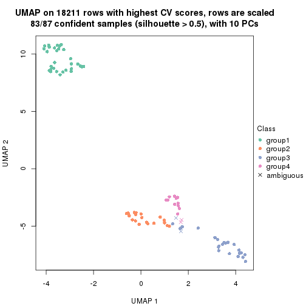
dimension_reduction(res, k = 5, method = "UMAP")
dimension_reduction(res, k = 6, method = "UMAP")
Following heatmap shows how subgroups are split when increasing k:
collect_classes(res)
Test correlation between subgroups and known annotations. If the known annotation is numeric, one-way ANOVA test is applied, and if the known annotation is discrete, chi-squared contingency table test is applied.
test_to_known_factors(res)
#> n agent(p) cell.line(p) time(p) k
#> CV:kmeans 87 0.971 5.49e-06 1 2
#> CV:kmeans 84 0.890 1.04e-08 1 3
#> CV:kmeans 83 0.977 2.07e-13 1 4
#> CV:kmeans 76 0.577 2.75e-17 1 5
#> CV:kmeans 80 0.426 1.39e-17 1 6
If matrix rows can be associated to genes, consider to use functional_enrichment(res,
...) to perform function enrichment for the signature genes. See this vignette for more detailed explanations.
The object with results only for a single top-value method and a single partition method can be extracted as:
res = res_list["CV", "skmeans"]
# you can also extract it by
# res = res_list["CV:skmeans"]
A summary of res and all the functions that can be applied to it:
res
#> A 'ConsensusPartition' object with k = 2, 3, 4, 5, 6.
#> On a matrix with 18211 rows and 87 columns.
#> Top rows (1000, 2000, 3000, 4000, 5000) are extracted by 'CV' method.
#> Subgroups are detected by 'skmeans' method.
#> Performed in total 1250 partitions by row resampling.
#> Best k for subgroups seems to be 3.
#>
#> Following methods can be applied to this 'ConsensusPartition' object:
#> [1] "cola_report" "collect_classes" "collect_plots"
#> [4] "collect_stats" "colnames" "compare_signatures"
#> [7] "consensus_heatmap" "dimension_reduction" "functional_enrichment"
#> [10] "get_anno_col" "get_anno" "get_classes"
#> [13] "get_consensus" "get_matrix" "get_membership"
#> [16] "get_param" "get_signatures" "get_stats"
#> [19] "is_best_k" "is_stable_k" "membership_heatmap"
#> [22] "ncol" "nrow" "plot_ecdf"
#> [25] "rownames" "select_partition_number" "show"
#> [28] "suggest_best_k" "test_to_known_factors"
collect_plots() function collects all the plots made from res for all k (number of partitions)
into one single page to provide an easy and fast comparison between different k.
collect_plots(res)
The plots are:
k and the heatmap of
predicted classes for each k.k.k.k.All the plots in panels can be made by individual functions and they are plotted later in this section.
select_partition_number() produces several plots showing different
statistics for choosing “optimized” k. There are following statistics:
k;k, the area increased is defined as \(A_k - A_{k-1}\).The detailed explanations of these statistics can be found in the cola vignette.
Generally speaking, lower PAC score, higher mean silhouette score or higher
concordance corresponds to better partition. Rand index and Jaccard index
measure how similar the current partition is compared to partition with k-1.
If they are too similar, we won't accept k is better than k-1.
select_partition_number(res)
The numeric values for all these statistics can be obtained by get_stats().
get_stats(res)
#> k 1-PAC mean_silhouette concordance area_increased Rand Jaccard
#> 2 2 0.485 0.793 0.891 0.4826 0.530 0.530
#> 3 3 0.840 0.905 0.955 0.3940 0.767 0.573
#> 4 4 0.851 0.888 0.935 0.0987 0.919 0.759
#> 5 5 0.834 0.811 0.868 0.0690 0.934 0.752
#> 6 6 0.849 0.839 0.894 0.0491 0.939 0.717
suggest_best_k() suggests the best \(k\) based on these statistics. The rules are as follows:
suggest_best_k(res)
#> [1] 3
Following shows the table of the partitions (You need to click the show/hide
code output link to see it). The membership matrix (columns with name p*)
is inferred by
clue::cl_consensus()
function with the SE method. Basically the value in the membership matrix
represents the probability to belong to a certain group. The finall class
label for an item is determined with the group with highest probability it
belongs to.
In get_classes() function, the entropy is calculated from the membership
matrix and the silhouette score is calculated from the consensus matrix.
cbind(get_classes(res, k = 2), get_membership(res, k = 2))
#> class entropy silhouette p1 p2
#> GSM41890 1 0.6887 0.778 0.816 0.184
#> GSM41917 1 0.7602 0.746 0.780 0.220
#> GSM41936 2 0.7299 0.762 0.204 0.796
#> GSM41893 1 0.0000 0.898 1.000 0.000
#> GSM41920 1 0.7299 0.762 0.796 0.204
#> GSM41937 2 0.0376 0.853 0.004 0.996
#> GSM41896 1 0.0000 0.898 1.000 0.000
#> GSM41923 1 0.0000 0.898 1.000 0.000
#> GSM41938 2 0.3879 0.827 0.076 0.924
#> GSM41899 1 0.0000 0.898 1.000 0.000
#> GSM41925 1 0.0000 0.898 1.000 0.000
#> GSM41939 2 0.8955 0.678 0.312 0.688
#> GSM41902 1 0.9129 0.603 0.672 0.328
#> GSM41927 1 0.0000 0.898 1.000 0.000
#> GSM41940 2 0.9686 0.573 0.396 0.604
#> GSM41905 1 0.7219 0.765 0.800 0.200
#> GSM41929 1 0.0000 0.898 1.000 0.000
#> GSM41941 2 0.9710 0.567 0.400 0.600
#> GSM41908 1 0.0000 0.898 1.000 0.000
#> GSM41931 1 0.0000 0.898 1.000 0.000
#> GSM41942 2 0.9686 0.573 0.396 0.604
#> GSM41945 2 0.9710 0.567 0.400 0.600
#> GSM41911 1 0.8661 0.662 0.712 0.288
#> GSM41933 1 0.0000 0.898 1.000 0.000
#> GSM41943 2 0.9710 0.567 0.400 0.600
#> GSM41944 2 0.9710 0.567 0.400 0.600
#> GSM41876 2 0.0376 0.853 0.004 0.996
#> GSM41895 2 0.0000 0.854 0.000 1.000
#> GSM41898 2 0.0000 0.854 0.000 1.000
#> GSM41877 2 0.8861 0.685 0.304 0.696
#> GSM41901 2 0.0000 0.854 0.000 1.000
#> GSM41904 2 0.0000 0.854 0.000 1.000
#> GSM41878 2 0.5842 0.797 0.140 0.860
#> GSM41907 2 0.0000 0.854 0.000 1.000
#> GSM41910 2 0.0000 0.854 0.000 1.000
#> GSM41879 2 0.0000 0.854 0.000 1.000
#> GSM41913 2 0.0000 0.854 0.000 1.000
#> GSM41916 2 0.0000 0.854 0.000 1.000
#> GSM41880 2 0.0376 0.853 0.004 0.996
#> GSM41919 2 0.0000 0.854 0.000 1.000
#> GSM41922 2 0.0000 0.854 0.000 1.000
#> GSM41881 2 0.0000 0.854 0.000 1.000
#> GSM41924 2 0.0000 0.854 0.000 1.000
#> GSM41926 2 0.0000 0.854 0.000 1.000
#> GSM41869 2 0.9710 0.567 0.400 0.600
#> GSM41928 1 0.9000 0.615 0.684 0.316
#> GSM41930 2 0.0000 0.854 0.000 1.000
#> GSM41882 2 0.0000 0.854 0.000 1.000
#> GSM41932 2 0.0000 0.854 0.000 1.000
#> GSM41934 2 0.0000 0.854 0.000 1.000
#> GSM41860 2 0.0000 0.854 0.000 1.000
#> GSM41871 2 0.8144 0.730 0.252 0.748
#> GSM41875 2 0.9710 0.567 0.400 0.600
#> GSM41894 1 0.0000 0.898 1.000 0.000
#> GSM41897 1 0.0000 0.898 1.000 0.000
#> GSM41861 2 0.4161 0.824 0.084 0.916
#> GSM41872 2 0.0000 0.854 0.000 1.000
#> GSM41900 1 0.0000 0.898 1.000 0.000
#> GSM41862 2 0.0000 0.854 0.000 1.000
#> GSM41873 2 0.0000 0.854 0.000 1.000
#> GSM41903 1 0.7299 0.762 0.796 0.204
#> GSM41863 2 0.7299 0.762 0.204 0.796
#> GSM41883 2 0.8955 0.678 0.312 0.688
#> GSM41906 1 0.0000 0.898 1.000 0.000
#> GSM41864 2 0.0000 0.854 0.000 1.000
#> GSM41884 2 0.0000 0.854 0.000 1.000
#> GSM41909 1 0.0000 0.898 1.000 0.000
#> GSM41912 1 0.0000 0.898 1.000 0.000
#> GSM41865 2 0.0000 0.854 0.000 1.000
#> GSM41885 2 0.9044 0.669 0.320 0.680
#> GSM41915 1 0.0000 0.898 1.000 0.000
#> GSM41866 2 0.7299 0.762 0.204 0.796
#> GSM41886 2 0.9710 0.567 0.400 0.600
#> GSM41918 1 0.0000 0.898 1.000 0.000
#> GSM41867 2 0.9710 0.567 0.400 0.600
#> GSM41868 1 0.9732 0.156 0.596 0.404
#> GSM41921 1 0.0000 0.898 1.000 0.000
#> GSM41887 1 0.0000 0.898 1.000 0.000
#> GSM41914 1 0.7815 0.733 0.768 0.232
#> GSM41935 2 0.0000 0.854 0.000 1.000
#> GSM41874 2 0.7815 0.744 0.232 0.768
#> GSM41889 2 0.0000 0.854 0.000 1.000
#> GSM41892 2 0.0000 0.854 0.000 1.000
#> GSM41859 2 0.0000 0.854 0.000 1.000
#> GSM41870 2 0.8144 0.730 0.252 0.748
#> GSM41888 1 0.0000 0.898 1.000 0.000
#> GSM41891 1 0.0000 0.898 1.000 0.000
cbind(get_classes(res, k = 3), get_membership(res, k = 3))
#> class entropy silhouette p1 p2 p3
#> GSM41890 1 0.0000 0.943 1.000 0.000 0.000
#> GSM41917 1 0.4555 0.778 0.800 0.000 0.200
#> GSM41936 2 0.0592 0.952 0.012 0.988 0.000
#> GSM41893 1 0.0000 0.943 1.000 0.000 0.000
#> GSM41920 1 0.4504 0.782 0.804 0.000 0.196
#> GSM41937 2 0.0661 0.952 0.008 0.988 0.004
#> GSM41896 1 0.0000 0.943 1.000 0.000 0.000
#> GSM41923 1 0.0000 0.943 1.000 0.000 0.000
#> GSM41938 2 0.0592 0.952 0.012 0.988 0.000
#> GSM41899 1 0.0000 0.943 1.000 0.000 0.000
#> GSM41925 1 0.0000 0.943 1.000 0.000 0.000
#> GSM41939 2 0.0592 0.952 0.012 0.988 0.000
#> GSM41902 1 0.5785 0.564 0.668 0.000 0.332
#> GSM41927 1 0.0000 0.943 1.000 0.000 0.000
#> GSM41940 2 0.0592 0.952 0.012 0.988 0.000
#> GSM41905 1 0.0237 0.942 0.996 0.000 0.004
#> GSM41929 1 0.0000 0.943 1.000 0.000 0.000
#> GSM41941 2 0.0592 0.952 0.012 0.988 0.000
#> GSM41908 1 0.0000 0.943 1.000 0.000 0.000
#> GSM41931 1 0.0000 0.943 1.000 0.000 0.000
#> GSM41942 2 0.0592 0.952 0.012 0.988 0.000
#> GSM41945 2 0.4452 0.795 0.192 0.808 0.000
#> GSM41911 1 0.4555 0.778 0.800 0.000 0.200
#> GSM41933 1 0.0000 0.943 1.000 0.000 0.000
#> GSM41943 2 0.4291 0.809 0.180 0.820 0.000
#> GSM41944 2 0.4291 0.809 0.180 0.820 0.000
#> GSM41876 2 0.0000 0.956 0.000 1.000 0.000
#> GSM41895 3 0.0000 0.955 0.000 0.000 1.000
#> GSM41898 3 0.0000 0.955 0.000 0.000 1.000
#> GSM41877 2 0.0000 0.956 0.000 1.000 0.000
#> GSM41901 3 0.0000 0.955 0.000 0.000 1.000
#> GSM41904 3 0.6062 0.371 0.000 0.384 0.616
#> GSM41878 2 0.0000 0.956 0.000 1.000 0.000
#> GSM41907 3 0.0000 0.955 0.000 0.000 1.000
#> GSM41910 3 0.0000 0.955 0.000 0.000 1.000
#> GSM41879 2 0.6095 0.338 0.000 0.608 0.392
#> GSM41913 3 0.0000 0.955 0.000 0.000 1.000
#> GSM41916 3 0.0000 0.955 0.000 0.000 1.000
#> GSM41880 2 0.0000 0.956 0.000 1.000 0.000
#> GSM41919 3 0.0000 0.955 0.000 0.000 1.000
#> GSM41922 3 0.0000 0.955 0.000 0.000 1.000
#> GSM41881 3 0.4178 0.779 0.000 0.172 0.828
#> GSM41924 3 0.0000 0.955 0.000 0.000 1.000
#> GSM41926 3 0.0000 0.955 0.000 0.000 1.000
#> GSM41869 2 0.0000 0.956 0.000 1.000 0.000
#> GSM41928 3 0.4629 0.735 0.188 0.004 0.808
#> GSM41930 3 0.0000 0.955 0.000 0.000 1.000
#> GSM41882 3 0.0000 0.955 0.000 0.000 1.000
#> GSM41932 3 0.0000 0.955 0.000 0.000 1.000
#> GSM41934 3 0.0000 0.955 0.000 0.000 1.000
#> GSM41860 3 0.0000 0.955 0.000 0.000 1.000
#> GSM41871 2 0.0000 0.956 0.000 1.000 0.000
#> GSM41875 2 0.0000 0.956 0.000 1.000 0.000
#> GSM41894 1 0.0237 0.943 0.996 0.004 0.000
#> GSM41897 1 0.0237 0.943 0.996 0.004 0.000
#> GSM41861 3 0.1643 0.921 0.000 0.044 0.956
#> GSM41872 2 0.1411 0.928 0.000 0.964 0.036
#> GSM41900 1 0.0237 0.943 0.996 0.004 0.000
#> GSM41862 3 0.0000 0.955 0.000 0.000 1.000
#> GSM41873 2 0.0000 0.956 0.000 1.000 0.000
#> GSM41903 1 0.4555 0.778 0.800 0.000 0.200
#> GSM41863 2 0.0000 0.956 0.000 1.000 0.000
#> GSM41883 2 0.0000 0.956 0.000 1.000 0.000
#> GSM41906 1 0.0237 0.943 0.996 0.004 0.000
#> GSM41864 3 0.0000 0.955 0.000 0.000 1.000
#> GSM41884 2 0.0000 0.956 0.000 1.000 0.000
#> GSM41909 1 0.0237 0.943 0.996 0.004 0.000
#> GSM41912 1 0.0237 0.943 0.996 0.004 0.000
#> GSM41865 3 0.0000 0.955 0.000 0.000 1.000
#> GSM41885 2 0.0000 0.956 0.000 1.000 0.000
#> GSM41915 1 0.0237 0.943 0.996 0.004 0.000
#> GSM41866 2 0.0000 0.956 0.000 1.000 0.000
#> GSM41886 2 0.0000 0.956 0.000 1.000 0.000
#> GSM41918 1 0.0237 0.943 0.996 0.004 0.000
#> GSM41867 2 0.0000 0.956 0.000 1.000 0.000
#> GSM41868 2 0.0237 0.954 0.004 0.996 0.000
#> GSM41921 1 0.0237 0.943 0.996 0.004 0.000
#> GSM41887 1 0.0000 0.943 1.000 0.000 0.000
#> GSM41914 1 0.4504 0.782 0.804 0.000 0.196
#> GSM41935 3 0.5722 0.597 0.004 0.292 0.704
#> GSM41874 2 0.4291 0.803 0.180 0.820 0.000
#> GSM41889 3 0.0000 0.955 0.000 0.000 1.000
#> GSM41892 3 0.0000 0.955 0.000 0.000 1.000
#> GSM41859 3 0.0000 0.955 0.000 0.000 1.000
#> GSM41870 2 0.0000 0.956 0.000 1.000 0.000
#> GSM41888 1 0.4121 0.790 0.832 0.168 0.000
#> GSM41891 1 0.0237 0.943 0.996 0.004 0.000
cbind(get_classes(res, k = 4), get_membership(res, k = 4))
#> class entropy silhouette p1 p2 p3 p4
#> GSM41890 1 0.2401 0.897 0.904 0.000 0.004 0.092
#> GSM41917 1 0.5110 0.819 0.764 0.000 0.104 0.132
#> GSM41936 4 0.1302 0.914 0.000 0.044 0.000 0.956
#> GSM41893 1 0.0000 0.916 1.000 0.000 0.000 0.000
#> GSM41920 1 0.5110 0.819 0.764 0.000 0.104 0.132
#> GSM41937 4 0.1302 0.914 0.000 0.044 0.000 0.956
#> GSM41896 1 0.0707 0.913 0.980 0.000 0.000 0.020
#> GSM41923 1 0.0000 0.916 1.000 0.000 0.000 0.000
#> GSM41938 4 0.1302 0.914 0.000 0.044 0.000 0.956
#> GSM41899 1 0.0000 0.916 1.000 0.000 0.000 0.000
#> GSM41925 1 0.0000 0.916 1.000 0.000 0.000 0.000
#> GSM41939 4 0.1302 0.914 0.000 0.044 0.000 0.956
#> GSM41902 1 0.5773 0.579 0.632 0.000 0.320 0.048
#> GSM41927 1 0.2814 0.882 0.868 0.000 0.000 0.132
#> GSM41940 4 0.1302 0.914 0.000 0.044 0.000 0.956
#> GSM41905 1 0.2973 0.876 0.856 0.000 0.000 0.144
#> GSM41929 1 0.2814 0.882 0.868 0.000 0.000 0.132
#> GSM41941 4 0.1489 0.913 0.004 0.044 0.000 0.952
#> GSM41908 1 0.1118 0.911 0.964 0.000 0.000 0.036
#> GSM41931 1 0.2814 0.882 0.868 0.000 0.000 0.132
#> GSM41942 4 0.1302 0.914 0.000 0.044 0.000 0.956
#> GSM41945 4 0.3308 0.860 0.092 0.036 0.000 0.872
#> GSM41911 1 0.4801 0.780 0.764 0.000 0.188 0.048
#> GSM41933 1 0.2814 0.882 0.868 0.000 0.000 0.132
#> GSM41943 4 0.3308 0.860 0.092 0.036 0.000 0.872
#> GSM41944 4 0.1584 0.910 0.012 0.036 0.000 0.952
#> GSM41876 2 0.0188 0.942 0.000 0.996 0.000 0.004
#> GSM41895 3 0.0000 0.966 0.000 0.000 1.000 0.000
#> GSM41898 3 0.0000 0.966 0.000 0.000 1.000 0.000
#> GSM41877 2 0.0188 0.942 0.000 0.996 0.000 0.004
#> GSM41901 3 0.0000 0.966 0.000 0.000 1.000 0.000
#> GSM41904 2 0.4991 0.353 0.000 0.608 0.388 0.004
#> GSM41878 2 0.0000 0.943 0.000 1.000 0.000 0.000
#> GSM41907 3 0.0000 0.966 0.000 0.000 1.000 0.000
#> GSM41910 3 0.0000 0.966 0.000 0.000 1.000 0.000
#> GSM41879 2 0.3726 0.692 0.000 0.788 0.212 0.000
#> GSM41913 3 0.0000 0.966 0.000 0.000 1.000 0.000
#> GSM41916 3 0.0000 0.966 0.000 0.000 1.000 0.000
#> GSM41880 2 0.0000 0.943 0.000 1.000 0.000 0.000
#> GSM41919 3 0.0000 0.966 0.000 0.000 1.000 0.000
#> GSM41922 3 0.0000 0.966 0.000 0.000 1.000 0.000
#> GSM41881 3 0.5237 0.387 0.000 0.356 0.628 0.016
#> GSM41924 3 0.0000 0.966 0.000 0.000 1.000 0.000
#> GSM41926 3 0.0000 0.966 0.000 0.000 1.000 0.000
#> GSM41869 2 0.0188 0.942 0.000 0.996 0.000 0.004
#> GSM41928 3 0.3610 0.731 0.200 0.000 0.800 0.000
#> GSM41930 3 0.0000 0.966 0.000 0.000 1.000 0.000
#> GSM41882 3 0.0000 0.966 0.000 0.000 1.000 0.000
#> GSM41932 3 0.0000 0.966 0.000 0.000 1.000 0.000
#> GSM41934 3 0.0000 0.966 0.000 0.000 1.000 0.000
#> GSM41860 3 0.0188 0.963 0.000 0.004 0.996 0.000
#> GSM41871 2 0.0000 0.943 0.000 1.000 0.000 0.000
#> GSM41875 2 0.0188 0.942 0.000 0.996 0.000 0.004
#> GSM41894 1 0.0000 0.916 1.000 0.000 0.000 0.000
#> GSM41897 1 0.0000 0.916 1.000 0.000 0.000 0.000
#> GSM41861 3 0.3335 0.822 0.000 0.120 0.860 0.020
#> GSM41872 2 0.0000 0.943 0.000 1.000 0.000 0.000
#> GSM41900 1 0.0000 0.916 1.000 0.000 0.000 0.000
#> GSM41862 3 0.0524 0.958 0.000 0.004 0.988 0.008
#> GSM41873 2 0.0188 0.941 0.000 0.996 0.000 0.004
#> GSM41903 1 0.3610 0.779 0.800 0.000 0.200 0.000
#> GSM41863 4 0.3942 0.766 0.000 0.236 0.000 0.764
#> GSM41883 2 0.0000 0.943 0.000 1.000 0.000 0.000
#> GSM41906 1 0.0188 0.914 0.996 0.000 0.000 0.004
#> GSM41864 3 0.0657 0.955 0.000 0.004 0.984 0.012
#> GSM41884 2 0.0000 0.943 0.000 1.000 0.000 0.000
#> GSM41909 1 0.0000 0.916 1.000 0.000 0.000 0.000
#> GSM41912 1 0.0000 0.916 1.000 0.000 0.000 0.000
#> GSM41865 3 0.0188 0.963 0.000 0.004 0.996 0.000
#> GSM41885 2 0.0000 0.943 0.000 1.000 0.000 0.000
#> GSM41915 1 0.0000 0.916 1.000 0.000 0.000 0.000
#> GSM41866 4 0.3942 0.766 0.000 0.236 0.000 0.764
#> GSM41886 2 0.0188 0.942 0.000 0.996 0.000 0.004
#> GSM41918 1 0.0000 0.916 1.000 0.000 0.000 0.000
#> GSM41867 4 0.4955 0.382 0.000 0.444 0.000 0.556
#> GSM41868 2 0.0000 0.943 0.000 1.000 0.000 0.000
#> GSM41921 1 0.0000 0.916 1.000 0.000 0.000 0.000
#> GSM41887 1 0.1211 0.910 0.960 0.000 0.000 0.040
#> GSM41914 1 0.5110 0.819 0.764 0.000 0.104 0.132
#> GSM41935 4 0.1510 0.891 0.000 0.016 0.028 0.956
#> GSM41874 2 0.2266 0.851 0.084 0.912 0.000 0.004
#> GSM41889 3 0.0000 0.966 0.000 0.000 1.000 0.000
#> GSM41892 3 0.0000 0.966 0.000 0.000 1.000 0.000
#> GSM41859 3 0.0000 0.966 0.000 0.000 1.000 0.000
#> GSM41870 2 0.0000 0.943 0.000 1.000 0.000 0.000
#> GSM41888 1 0.3852 0.810 0.800 0.008 0.000 0.192
#> GSM41891 1 0.0000 0.916 1.000 0.000 0.000 0.000
cbind(get_classes(res, k = 5), get_membership(res, k = 5))
#> class entropy silhouette p1 p2 p3 p4 p5
#> GSM41890 5 0.3895 0.940 0.320 0.000 0.000 0.000 0.680
#> GSM41917 5 0.4700 0.948 0.292 0.000 0.016 0.016 0.676
#> GSM41936 4 0.0162 0.930 0.000 0.004 0.000 0.996 0.000
#> GSM41893 1 0.0162 0.873 0.996 0.000 0.000 0.000 0.004
#> GSM41920 5 0.4700 0.948 0.292 0.000 0.016 0.016 0.676
#> GSM41937 4 0.0162 0.930 0.000 0.004 0.000 0.996 0.000
#> GSM41896 1 0.4219 -0.315 0.584 0.000 0.000 0.000 0.416
#> GSM41923 1 0.0404 0.866 0.988 0.000 0.000 0.000 0.012
#> GSM41938 4 0.0162 0.930 0.000 0.004 0.000 0.996 0.000
#> GSM41899 1 0.0000 0.877 1.000 0.000 0.000 0.000 0.000
#> GSM41925 1 0.0162 0.874 0.996 0.000 0.000 0.000 0.004
#> GSM41939 4 0.0162 0.930 0.000 0.004 0.000 0.996 0.000
#> GSM41902 5 0.4806 0.872 0.252 0.000 0.060 0.000 0.688
#> GSM41927 5 0.4329 0.951 0.312 0.000 0.000 0.016 0.672
#> GSM41940 4 0.0162 0.930 0.000 0.004 0.000 0.996 0.000
#> GSM41905 5 0.4309 0.952 0.308 0.000 0.000 0.016 0.676
#> GSM41929 5 0.4348 0.948 0.316 0.000 0.000 0.016 0.668
#> GSM41941 4 0.0162 0.930 0.000 0.004 0.000 0.996 0.000
#> GSM41908 5 0.4249 0.750 0.432 0.000 0.000 0.000 0.568
#> GSM41931 5 0.4309 0.952 0.308 0.000 0.000 0.016 0.676
#> GSM41942 4 0.0162 0.930 0.000 0.004 0.000 0.996 0.000
#> GSM41945 4 0.0566 0.923 0.012 0.004 0.000 0.984 0.000
#> GSM41911 5 0.4206 0.936 0.288 0.000 0.016 0.000 0.696
#> GSM41933 5 0.4309 0.952 0.308 0.000 0.000 0.016 0.676
#> GSM41943 4 0.0566 0.923 0.012 0.004 0.000 0.984 0.000
#> GSM41944 4 0.0162 0.930 0.000 0.004 0.000 0.996 0.000
#> GSM41876 2 0.0794 0.885 0.000 0.972 0.000 0.028 0.000
#> GSM41895 3 0.0162 0.898 0.000 0.000 0.996 0.000 0.004
#> GSM41898 3 0.0794 0.896 0.000 0.000 0.972 0.000 0.028
#> GSM41877 2 0.0794 0.885 0.000 0.972 0.000 0.028 0.000
#> GSM41901 3 0.0000 0.899 0.000 0.000 1.000 0.000 0.000
#> GSM41904 2 0.6905 0.041 0.000 0.392 0.320 0.004 0.284
#> GSM41878 2 0.0000 0.885 0.000 1.000 0.000 0.000 0.000
#> GSM41907 3 0.0000 0.899 0.000 0.000 1.000 0.000 0.000
#> GSM41910 3 0.0794 0.896 0.000 0.000 0.972 0.000 0.028
#> GSM41879 2 0.4001 0.680 0.000 0.764 0.208 0.004 0.024
#> GSM41913 3 0.0000 0.899 0.000 0.000 1.000 0.000 0.000
#> GSM41916 3 0.0794 0.896 0.000 0.000 0.972 0.000 0.028
#> GSM41880 2 0.0794 0.885 0.000 0.972 0.000 0.028 0.000
#> GSM41919 3 0.0000 0.899 0.000 0.000 1.000 0.000 0.000
#> GSM41922 3 0.0794 0.896 0.000 0.000 0.972 0.000 0.028
#> GSM41881 3 0.6311 0.544 0.000 0.156 0.568 0.012 0.264
#> GSM41924 3 0.0000 0.899 0.000 0.000 1.000 0.000 0.000
#> GSM41926 3 0.0794 0.896 0.000 0.000 0.972 0.000 0.028
#> GSM41869 2 0.0794 0.885 0.000 0.972 0.000 0.028 0.000
#> GSM41928 3 0.3727 0.685 0.216 0.000 0.768 0.000 0.016
#> GSM41930 3 0.0794 0.896 0.000 0.000 0.972 0.000 0.028
#> GSM41882 3 0.0290 0.897 0.000 0.000 0.992 0.000 0.008
#> GSM41932 3 0.0000 0.899 0.000 0.000 1.000 0.000 0.000
#> GSM41934 3 0.1121 0.893 0.000 0.000 0.956 0.000 0.044
#> GSM41860 3 0.4637 0.710 0.000 0.028 0.676 0.004 0.292
#> GSM41871 2 0.0000 0.885 0.000 1.000 0.000 0.000 0.000
#> GSM41875 2 0.0794 0.885 0.000 0.972 0.000 0.028 0.000
#> GSM41894 1 0.0000 0.877 1.000 0.000 0.000 0.000 0.000
#> GSM41897 1 0.0000 0.877 1.000 0.000 0.000 0.000 0.000
#> GSM41861 3 0.5645 0.664 0.000 0.052 0.624 0.028 0.296
#> GSM41872 2 0.0324 0.883 0.000 0.992 0.000 0.004 0.004
#> GSM41900 1 0.0000 0.877 1.000 0.000 0.000 0.000 0.000
#> GSM41862 3 0.4860 0.703 0.000 0.028 0.668 0.012 0.292
#> GSM41873 2 0.2011 0.831 0.000 0.908 0.000 0.004 0.088
#> GSM41903 1 0.3109 0.560 0.800 0.000 0.200 0.000 0.000
#> GSM41863 4 0.6062 0.540 0.000 0.168 0.000 0.564 0.268
#> GSM41883 2 0.0000 0.885 0.000 1.000 0.000 0.000 0.000
#> GSM41906 1 0.0000 0.877 1.000 0.000 0.000 0.000 0.000
#> GSM41864 3 0.4860 0.703 0.000 0.028 0.668 0.012 0.292
#> GSM41884 2 0.0000 0.885 0.000 1.000 0.000 0.000 0.000
#> GSM41909 1 0.0000 0.877 1.000 0.000 0.000 0.000 0.000
#> GSM41912 1 0.0000 0.877 1.000 0.000 0.000 0.000 0.000
#> GSM41865 3 0.4658 0.708 0.000 0.028 0.672 0.004 0.296
#> GSM41885 2 0.0794 0.885 0.000 0.972 0.000 0.028 0.000
#> GSM41915 1 0.0000 0.877 1.000 0.000 0.000 0.000 0.000
#> GSM41866 4 0.6131 0.522 0.000 0.168 0.000 0.548 0.284
#> GSM41886 2 0.0794 0.885 0.000 0.972 0.000 0.028 0.000
#> GSM41918 1 0.0000 0.877 1.000 0.000 0.000 0.000 0.000
#> GSM41867 2 0.4734 0.274 0.000 0.604 0.000 0.372 0.024
#> GSM41868 2 0.0609 0.886 0.000 0.980 0.000 0.020 0.000
#> GSM41921 1 0.0000 0.877 1.000 0.000 0.000 0.000 0.000
#> GSM41887 1 0.4262 -0.407 0.560 0.000 0.000 0.000 0.440
#> GSM41914 5 0.4700 0.948 0.292 0.000 0.016 0.016 0.676
#> GSM41935 4 0.0703 0.917 0.000 0.000 0.000 0.976 0.024
#> GSM41874 2 0.5890 0.569 0.152 0.612 0.000 0.004 0.232
#> GSM41889 3 0.0162 0.898 0.000 0.000 0.996 0.000 0.004
#> GSM41892 3 0.0794 0.896 0.000 0.000 0.972 0.000 0.028
#> GSM41859 3 0.0404 0.898 0.000 0.000 0.988 0.000 0.012
#> GSM41870 2 0.0000 0.885 0.000 1.000 0.000 0.000 0.000
#> GSM41888 1 0.4851 0.477 0.712 0.000 0.000 0.196 0.092
#> GSM41891 1 0.0000 0.877 1.000 0.000 0.000 0.000 0.000
cbind(get_classes(res, k = 6), get_membership(res, k = 6))
#> class entropy silhouette p1 p2 p3 p4 p5 p6
#> GSM41890 1 0.1970 0.889 0.900 0.000 0.000 0.000 0.092 0.008
#> GSM41917 1 0.2412 0.890 0.880 0.000 0.000 0.000 0.092 0.028
#> GSM41936 4 0.0000 0.990 0.000 0.000 0.000 1.000 0.000 0.000
#> GSM41893 5 0.1196 0.908 0.040 0.000 0.000 0.000 0.952 0.008
#> GSM41920 1 0.2412 0.890 0.880 0.000 0.000 0.000 0.092 0.028
#> GSM41937 4 0.0000 0.990 0.000 0.000 0.000 1.000 0.000 0.000
#> GSM41896 1 0.4258 0.333 0.516 0.000 0.000 0.000 0.468 0.016
#> GSM41923 5 0.1151 0.912 0.032 0.000 0.000 0.000 0.956 0.012
#> GSM41938 4 0.0000 0.990 0.000 0.000 0.000 1.000 0.000 0.000
#> GSM41899 5 0.0260 0.938 0.000 0.000 0.000 0.000 0.992 0.008
#> GSM41925 5 0.0820 0.925 0.016 0.000 0.000 0.000 0.972 0.012
#> GSM41939 4 0.0000 0.990 0.000 0.000 0.000 1.000 0.000 0.000
#> GSM41902 1 0.1863 0.862 0.920 0.000 0.004 0.000 0.060 0.016
#> GSM41927 1 0.2826 0.875 0.844 0.000 0.000 0.000 0.128 0.028
#> GSM41940 4 0.0000 0.990 0.000 0.000 0.000 1.000 0.000 0.000
#> GSM41905 1 0.2163 0.888 0.892 0.000 0.000 0.000 0.092 0.016
#> GSM41929 1 0.2696 0.882 0.856 0.000 0.000 0.000 0.116 0.028
#> GSM41941 4 0.0000 0.990 0.000 0.000 0.000 1.000 0.000 0.000
#> GSM41908 1 0.3965 0.534 0.604 0.000 0.000 0.000 0.388 0.008
#> GSM41931 1 0.1714 0.890 0.908 0.000 0.000 0.000 0.092 0.000
#> GSM41942 4 0.0000 0.990 0.000 0.000 0.000 1.000 0.000 0.000
#> GSM41945 4 0.0000 0.990 0.000 0.000 0.000 1.000 0.000 0.000
#> GSM41911 1 0.1967 0.886 0.904 0.000 0.000 0.000 0.084 0.012
#> GSM41933 1 0.2412 0.890 0.880 0.000 0.000 0.000 0.092 0.028
#> GSM41943 4 0.0000 0.990 0.000 0.000 0.000 1.000 0.000 0.000
#> GSM41944 4 0.0000 0.990 0.000 0.000 0.000 1.000 0.000 0.000
#> GSM41876 2 0.0692 0.897 0.004 0.976 0.000 0.000 0.000 0.020
#> GSM41895 3 0.2260 0.849 0.000 0.000 0.860 0.000 0.000 0.140
#> GSM41898 3 0.2176 0.841 0.080 0.000 0.896 0.000 0.000 0.024
#> GSM41877 2 0.0603 0.898 0.004 0.980 0.000 0.000 0.000 0.016
#> GSM41901 3 0.2135 0.855 0.000 0.000 0.872 0.000 0.000 0.128
#> GSM41904 6 0.3213 0.779 0.004 0.084 0.076 0.000 0.000 0.836
#> GSM41878 2 0.0692 0.897 0.004 0.976 0.000 0.000 0.000 0.020
#> GSM41907 3 0.2135 0.855 0.000 0.000 0.872 0.000 0.000 0.128
#> GSM41910 3 0.2176 0.841 0.080 0.000 0.896 0.000 0.000 0.024
#> GSM41879 2 0.4990 0.552 0.004 0.660 0.184 0.000 0.000 0.152
#> GSM41913 3 0.2135 0.855 0.000 0.000 0.872 0.000 0.000 0.128
#> GSM41916 3 0.2176 0.841 0.080 0.000 0.896 0.000 0.000 0.024
#> GSM41880 2 0.0692 0.897 0.004 0.976 0.000 0.000 0.000 0.020
#> GSM41919 3 0.2092 0.856 0.000 0.000 0.876 0.000 0.000 0.124
#> GSM41922 3 0.2255 0.838 0.080 0.000 0.892 0.000 0.000 0.028
#> GSM41881 6 0.3881 0.594 0.004 0.024 0.252 0.000 0.000 0.720
#> GSM41924 3 0.2135 0.855 0.000 0.000 0.872 0.000 0.000 0.128
#> GSM41926 3 0.2176 0.841 0.080 0.000 0.896 0.000 0.000 0.024
#> GSM41869 2 0.0146 0.900 0.000 0.996 0.000 0.000 0.000 0.004
#> GSM41928 3 0.4201 0.582 0.008 0.000 0.732 0.000 0.204 0.056
#> GSM41930 3 0.2176 0.841 0.080 0.000 0.896 0.000 0.000 0.024
#> GSM41882 3 0.2300 0.844 0.000 0.000 0.856 0.000 0.000 0.144
#> GSM41932 3 0.2135 0.855 0.000 0.000 0.872 0.000 0.000 0.128
#> GSM41934 3 0.2331 0.836 0.080 0.000 0.888 0.000 0.000 0.032
#> GSM41860 6 0.2070 0.826 0.008 0.000 0.100 0.000 0.000 0.892
#> GSM41871 2 0.0291 0.900 0.004 0.992 0.000 0.000 0.000 0.004
#> GSM41875 2 0.0291 0.900 0.004 0.992 0.000 0.000 0.000 0.004
#> GSM41894 5 0.0146 0.941 0.000 0.000 0.000 0.000 0.996 0.004
#> GSM41897 5 0.0146 0.941 0.000 0.000 0.000 0.000 0.996 0.004
#> GSM41861 6 0.2679 0.824 0.008 0.012 0.100 0.008 0.000 0.872
#> GSM41872 2 0.2146 0.832 0.004 0.880 0.000 0.000 0.000 0.116
#> GSM41900 5 0.0146 0.941 0.000 0.000 0.000 0.000 0.996 0.004
#> GSM41862 6 0.1908 0.829 0.004 0.000 0.096 0.000 0.000 0.900
#> GSM41873 2 0.3398 0.679 0.008 0.740 0.000 0.000 0.000 0.252
#> GSM41903 5 0.3480 0.664 0.008 0.000 0.200 0.000 0.776 0.016
#> GSM41863 6 0.4264 0.432 0.000 0.028 0.000 0.352 0.000 0.620
#> GSM41883 2 0.0291 0.900 0.004 0.992 0.000 0.000 0.000 0.004
#> GSM41906 5 0.0603 0.934 0.004 0.000 0.000 0.000 0.980 0.016
#> GSM41864 6 0.2163 0.830 0.004 0.008 0.096 0.000 0.000 0.892
#> GSM41884 2 0.0000 0.900 0.000 1.000 0.000 0.000 0.000 0.000
#> GSM41909 5 0.0146 0.941 0.000 0.000 0.000 0.000 0.996 0.004
#> GSM41912 5 0.0000 0.941 0.000 0.000 0.000 0.000 1.000 0.000
#> GSM41865 6 0.1958 0.828 0.004 0.000 0.100 0.000 0.000 0.896
#> GSM41885 2 0.0146 0.900 0.000 0.996 0.000 0.000 0.000 0.004
#> GSM41915 5 0.0363 0.939 0.000 0.000 0.000 0.000 0.988 0.012
#> GSM41866 6 0.4047 0.529 0.000 0.028 0.000 0.296 0.000 0.676
#> GSM41886 2 0.0000 0.900 0.000 1.000 0.000 0.000 0.000 0.000
#> GSM41918 5 0.0146 0.941 0.000 0.000 0.000 0.000 0.996 0.004
#> GSM41867 2 0.4340 0.609 0.000 0.712 0.000 0.200 0.000 0.088
#> GSM41868 2 0.0508 0.899 0.004 0.984 0.000 0.000 0.000 0.012
#> GSM41921 5 0.0000 0.941 0.000 0.000 0.000 0.000 1.000 0.000
#> GSM41887 1 0.4131 0.543 0.600 0.000 0.000 0.000 0.384 0.016
#> GSM41914 1 0.2163 0.891 0.892 0.000 0.000 0.000 0.092 0.016
#> GSM41935 4 0.1949 0.894 0.004 0.000 0.004 0.904 0.000 0.088
#> GSM41874 2 0.5935 0.154 0.008 0.460 0.000 0.000 0.168 0.364
#> GSM41889 3 0.2260 0.849 0.000 0.000 0.860 0.000 0.000 0.140
#> GSM41892 3 0.2176 0.841 0.080 0.000 0.896 0.000 0.000 0.024
#> GSM41859 3 0.2094 0.857 0.020 0.000 0.900 0.000 0.000 0.080
#> GSM41870 2 0.0291 0.900 0.004 0.992 0.000 0.000 0.000 0.004
#> GSM41888 5 0.5265 0.479 0.148 0.000 0.000 0.200 0.640 0.012
#> GSM41891 5 0.0000 0.941 0.000 0.000 0.000 0.000 1.000 0.000
Heatmaps for the consensus matrix. It visualizes the probability of two samples to be in a same group.
consensus_heatmap(res, k = 2)
consensus_heatmap(res, k = 3)
consensus_heatmap(res, k = 4)
consensus_heatmap(res, k = 5)
consensus_heatmap(res, k = 6)
Heatmaps for the membership of samples in all partitions to see how consistent they are:
membership_heatmap(res, k = 2)
membership_heatmap(res, k = 3)
membership_heatmap(res, k = 4)
membership_heatmap(res, k = 5)

membership_heatmap(res, k = 6)
As soon as we have had the classes for columns, we can look for signatures which are significantly different between classes which can be candidate marks for certain classes. Following are the heatmaps for signatures.
Signature heatmaps where rows are scaled:
get_signatures(res, k = 2)
get_signatures(res, k = 3)
get_signatures(res, k = 4)
get_signatures(res, k = 5)
get_signatures(res, k = 6)
Signature heatmaps where rows are not scaled:
get_signatures(res, k = 2, scale_rows = FALSE)
get_signatures(res, k = 3, scale_rows = FALSE)
get_signatures(res, k = 4, scale_rows = FALSE)
get_signatures(res, k = 5, scale_rows = FALSE)
get_signatures(res, k = 6, scale_rows = FALSE)
Compare the overlap of signatures from different k:
compare_signatures(res)
get_signature() returns a data frame invisibly. TO get the list of signatures, the function
call should be assigned to a variable explicitly. In following code, if plot argument is set
to FALSE, no heatmap is plotted while only the differential analysis is performed.
# code only for demonstration
tb = get_signature(res, k = ..., plot = FALSE)
An example of the output of tb is:
#> which_row fdr mean_1 mean_2 scaled_mean_1 scaled_mean_2 km
#> 1 38 0.042760348 8.373488 9.131774 -0.5533452 0.5164555 1
#> 2 40 0.018707592 7.106213 8.469186 -0.6173731 0.5762149 1
#> 3 55 0.019134737 10.221463 11.207825 -0.6159697 0.5749050 1
#> 4 59 0.006059896 5.921854 7.869574 -0.6899429 0.6439467 1
#> 5 60 0.018055526 8.928898 10.211722 -0.6204761 0.5791110 1
#> 6 98 0.009384629 15.714769 14.887706 0.6635654 -0.6193277 2
...
The columns in tb are:
which_row: row indices corresponding to the input matrix.fdr: FDR for the differential test. mean_x: The mean value in group x.scaled_mean_x: The mean value in group x after rows are scaled.km: Row groups if k-means clustering is applied to rows.UMAP plot which shows how samples are separated.
dimension_reduction(res, k = 2, method = "UMAP")
dimension_reduction(res, k = 3, method = "UMAP")
dimension_reduction(res, k = 4, method = "UMAP")
dimension_reduction(res, k = 5, method = "UMAP")
dimension_reduction(res, k = 6, method = "UMAP")
Following heatmap shows how subgroups are split when increasing k:
collect_classes(res)
Test correlation between subgroups and known annotations. If the known annotation is numeric, one-way ANOVA test is applied, and if the known annotation is discrete, chi-squared contingency table test is applied.
test_to_known_factors(res)
#> n agent(p) cell.line(p) time(p) k
#> CV:skmeans 86 1.000 2.79e-05 1.000 2
#> CV:skmeans 85 0.588 2.40e-08 0.999 3
#> CV:skmeans 84 0.962 6.11e-12 1.000 4
#> CV:skmeans 82 0.976 4.86e-15 1.000 5
#> CV:skmeans 83 0.761 4.06e-19 1.000 6
If matrix rows can be associated to genes, consider to use functional_enrichment(res,
...) to perform function enrichment for the signature genes. See this vignette for more detailed explanations.
The object with results only for a single top-value method and a single partition method can be extracted as:
res = res_list["CV", "pam"]
# you can also extract it by
# res = res_list["CV:pam"]
A summary of res and all the functions that can be applied to it:
res
#> A 'ConsensusPartition' object with k = 2, 3, 4, 5, 6.
#> On a matrix with 18211 rows and 87 columns.
#> Top rows (1000, 2000, 3000, 4000, 5000) are extracted by 'CV' method.
#> Subgroups are detected by 'pam' method.
#> Performed in total 1250 partitions by row resampling.
#> Best k for subgroups seems to be 2.
#>
#> Following methods can be applied to this 'ConsensusPartition' object:
#> [1] "cola_report" "collect_classes" "collect_plots"
#> [4] "collect_stats" "colnames" "compare_signatures"
#> [7] "consensus_heatmap" "dimension_reduction" "functional_enrichment"
#> [10] "get_anno_col" "get_anno" "get_classes"
#> [13] "get_consensus" "get_matrix" "get_membership"
#> [16] "get_param" "get_signatures" "get_stats"
#> [19] "is_best_k" "is_stable_k" "membership_heatmap"
#> [22] "ncol" "nrow" "plot_ecdf"
#> [25] "rownames" "select_partition_number" "show"
#> [28] "suggest_best_k" "test_to_known_factors"
collect_plots() function collects all the plots made from res for all k (number of partitions)
into one single page to provide an easy and fast comparison between different k.
collect_plots(res)
The plots are:
k and the heatmap of
predicted classes for each k.k.k.k.All the plots in panels can be made by individual functions and they are plotted later in this section.
select_partition_number() produces several plots showing different
statistics for choosing “optimized” k. There are following statistics:
k;k, the area increased is defined as \(A_k - A_{k-1}\).The detailed explanations of these statistics can be found in the cola vignette.
Generally speaking, lower PAC score, higher mean silhouette score or higher
concordance corresponds to better partition. Rand index and Jaccard index
measure how similar the current partition is compared to partition with k-1.
If they are too similar, we won't accept k is better than k-1.
select_partition_number(res)
The numeric values for all these statistics can be obtained by get_stats().
get_stats(res)
#> k 1-PAC mean_silhouette concordance area_increased Rand Jaccard
#> 2 2 0.410 0.816 0.888 0.4808 0.530 0.530
#> 3 3 0.460 0.726 0.830 0.3392 0.814 0.653
#> 4 4 0.675 0.744 0.848 0.1315 0.887 0.691
#> 5 5 0.721 0.753 0.824 0.0872 0.916 0.695
#> 6 6 0.834 0.762 0.829 0.0503 0.904 0.584
suggest_best_k() suggests the best \(k\) based on these statistics. The rules are as follows:
suggest_best_k(res)
#> [1] 2
Following shows the table of the partitions (You need to click the show/hide
code output link to see it). The membership matrix (columns with name p*)
is inferred by
clue::cl_consensus()
function with the SE method. Basically the value in the membership matrix
represents the probability to belong to a certain group. The finall class
label for an item is determined with the group with highest probability it
belongs to.
In get_classes() function, the entropy is calculated from the membership
matrix and the silhouette score is calculated from the consensus matrix.
cbind(get_classes(res, k = 2), get_membership(res, k = 2))
#> class entropy silhouette p1 p2
#> GSM41890 1 0.6247 0.8705 0.844 0.156
#> GSM41917 1 0.7674 0.7983 0.776 0.224
#> GSM41936 2 0.2778 0.8639 0.048 0.952
#> GSM41893 1 0.0000 0.8856 1.000 0.000
#> GSM41920 1 0.6247 0.8705 0.844 0.156
#> GSM41937 2 0.2603 0.8637 0.044 0.956
#> GSM41896 1 0.6148 0.8716 0.848 0.152
#> GSM41923 1 0.0376 0.8843 0.996 0.004
#> GSM41938 2 0.2603 0.8637 0.044 0.956
#> GSM41899 1 0.0000 0.8856 1.000 0.000
#> GSM41925 1 0.0000 0.8856 1.000 0.000
#> GSM41939 2 0.2603 0.8637 0.044 0.956
#> GSM41902 1 0.6247 0.8705 0.844 0.156
#> GSM41927 1 0.0000 0.8856 1.000 0.000
#> GSM41940 2 0.4690 0.8529 0.100 0.900
#> GSM41905 1 0.6247 0.8705 0.844 0.156
#> GSM41929 1 0.6247 0.8705 0.844 0.156
#> GSM41941 2 0.7745 0.7869 0.228 0.772
#> GSM41908 1 0.6148 0.8716 0.848 0.152
#> GSM41931 1 0.6247 0.8705 0.844 0.156
#> GSM41942 2 0.2603 0.8637 0.044 0.956
#> GSM41945 2 0.8763 0.7261 0.296 0.704
#> GSM41911 1 0.6247 0.8705 0.844 0.156
#> GSM41933 1 0.6247 0.8705 0.844 0.156
#> GSM41943 2 0.8608 0.7393 0.284 0.716
#> GSM41944 2 0.8144 0.7696 0.252 0.748
#> GSM41876 2 0.0376 0.8615 0.004 0.996
#> GSM41895 2 0.0376 0.8598 0.004 0.996
#> GSM41898 2 0.2778 0.8457 0.048 0.952
#> GSM41877 2 0.7056 0.8072 0.192 0.808
#> GSM41901 2 0.0376 0.8598 0.004 0.996
#> GSM41904 2 0.0000 0.8604 0.000 1.000
#> GSM41878 2 0.3114 0.8637 0.056 0.944
#> GSM41907 2 0.0376 0.8598 0.004 0.996
#> GSM41910 1 0.8955 0.6989 0.688 0.312
#> GSM41879 2 0.0000 0.8604 0.000 1.000
#> GSM41913 2 0.0376 0.8598 0.004 0.996
#> GSM41916 2 0.8909 0.4905 0.308 0.692
#> GSM41880 2 0.1414 0.8640 0.020 0.980
#> GSM41919 2 0.0000 0.8604 0.000 1.000
#> GSM41922 2 0.2043 0.8643 0.032 0.968
#> GSM41881 2 0.0000 0.8604 0.000 1.000
#> GSM41924 2 0.9866 0.0248 0.432 0.568
#> GSM41926 2 0.5946 0.8020 0.144 0.856
#> GSM41869 2 0.7528 0.7938 0.216 0.784
#> GSM41928 1 0.2778 0.8572 0.952 0.048
#> GSM41930 2 0.3733 0.8304 0.072 0.928
#> GSM41882 2 0.7376 0.6678 0.208 0.792
#> GSM41932 2 0.2603 0.8476 0.044 0.956
#> GSM41934 2 0.9944 0.1431 0.456 0.544
#> GSM41860 2 0.0000 0.8604 0.000 1.000
#> GSM41871 2 0.8327 0.7591 0.264 0.736
#> GSM41875 2 0.8144 0.7698 0.252 0.748
#> GSM41894 1 0.0376 0.8843 0.996 0.004
#> GSM41897 1 0.0376 0.8843 0.996 0.004
#> GSM41861 2 0.6343 0.8205 0.160 0.840
#> GSM41872 2 0.0938 0.8631 0.012 0.988
#> GSM41900 1 0.0000 0.8856 1.000 0.000
#> GSM41862 2 0.0000 0.8604 0.000 1.000
#> GSM41873 2 0.2603 0.8637 0.044 0.956
#> GSM41903 1 0.4161 0.8832 0.916 0.084
#> GSM41863 2 0.7139 0.8041 0.196 0.804
#> GSM41883 2 0.2603 0.8637 0.044 0.956
#> GSM41906 2 0.9881 0.4925 0.436 0.564
#> GSM41864 2 0.3733 0.8575 0.072 0.928
#> GSM41884 2 0.4815 0.8325 0.104 0.896
#> GSM41909 1 0.0000 0.8856 1.000 0.000
#> GSM41912 1 0.0376 0.8843 0.996 0.004
#> GSM41865 2 0.0000 0.8604 0.000 1.000
#> GSM41885 2 0.8443 0.7512 0.272 0.728
#> GSM41915 1 0.0376 0.8843 0.996 0.004
#> GSM41866 2 0.7139 0.8041 0.196 0.804
#> GSM41886 2 0.7219 0.8015 0.200 0.800
#> GSM41918 1 0.0000 0.8856 1.000 0.000
#> GSM41867 2 0.8608 0.7393 0.284 0.716
#> GSM41868 1 0.8207 0.7565 0.744 0.256
#> GSM41921 1 0.0376 0.8843 0.996 0.004
#> GSM41887 1 0.6048 0.8728 0.852 0.148
#> GSM41914 1 0.6247 0.8705 0.844 0.156
#> GSM41935 2 0.3879 0.8556 0.076 0.924
#> GSM41874 2 0.7219 0.8015 0.200 0.800
#> GSM41889 2 0.0376 0.8598 0.004 0.996
#> GSM41892 2 0.5629 0.7742 0.132 0.868
#> GSM41859 2 0.5059 0.7963 0.112 0.888
#> GSM41870 2 0.7139 0.8041 0.196 0.804
#> GSM41888 1 0.1843 0.8773 0.972 0.028
#> GSM41891 1 0.0000 0.8856 1.000 0.000
cbind(get_classes(res, k = 3), get_membership(res, k = 3))
#> class entropy silhouette p1 p2 p3
#> GSM41890 1 0.3267 0.8387 0.884 0.000 0.116
#> GSM41917 1 0.4121 0.7927 0.832 0.000 0.168
#> GSM41936 2 0.8013 0.6463 0.112 0.636 0.252
#> GSM41893 1 0.2878 0.8734 0.904 0.096 0.000
#> GSM41920 1 0.3192 0.8415 0.888 0.000 0.112
#> GSM41937 2 0.7983 0.6435 0.108 0.636 0.256
#> GSM41896 1 0.0892 0.8717 0.980 0.000 0.020
#> GSM41923 1 0.3038 0.8731 0.896 0.104 0.000
#> GSM41938 2 0.7983 0.6435 0.108 0.636 0.256
#> GSM41899 1 0.0237 0.8713 0.996 0.004 0.000
#> GSM41925 1 0.3038 0.8731 0.896 0.104 0.000
#> GSM41939 2 0.4602 0.7199 0.108 0.852 0.040
#> GSM41902 1 0.3619 0.8212 0.864 0.000 0.136
#> GSM41927 1 0.0000 0.8703 1.000 0.000 0.000
#> GSM41940 2 0.3038 0.7158 0.104 0.896 0.000
#> GSM41905 1 0.2796 0.8535 0.908 0.000 0.092
#> GSM41929 1 0.2796 0.8535 0.908 0.000 0.092
#> GSM41941 2 0.4291 0.7086 0.180 0.820 0.000
#> GSM41908 1 0.0892 0.8717 0.980 0.000 0.020
#> GSM41931 1 0.2796 0.8535 0.908 0.000 0.092
#> GSM41942 2 0.3192 0.7159 0.112 0.888 0.000
#> GSM41945 2 0.3551 0.6818 0.132 0.868 0.000
#> GSM41911 1 0.3551 0.8251 0.868 0.000 0.132
#> GSM41933 1 0.2711 0.8555 0.912 0.000 0.088
#> GSM41943 2 0.4062 0.7133 0.164 0.836 0.000
#> GSM41944 2 0.8080 0.6743 0.232 0.640 0.128
#> GSM41876 2 0.3349 0.7063 0.004 0.888 0.108
#> GSM41895 3 0.0000 0.8790 0.000 0.000 1.000
#> GSM41898 3 0.0000 0.8790 0.000 0.000 1.000
#> GSM41877 2 0.2774 0.7250 0.072 0.920 0.008
#> GSM41901 3 0.0000 0.8790 0.000 0.000 1.000
#> GSM41904 2 0.6267 0.4853 0.000 0.548 0.452
#> GSM41878 2 0.4838 0.7341 0.076 0.848 0.076
#> GSM41907 3 0.0000 0.8790 0.000 0.000 1.000
#> GSM41910 3 0.0000 0.8790 0.000 0.000 1.000
#> GSM41879 2 0.6252 0.4997 0.000 0.556 0.444
#> GSM41913 3 0.0000 0.8790 0.000 0.000 1.000
#> GSM41916 3 0.0000 0.8790 0.000 0.000 1.000
#> GSM41880 2 0.3532 0.7225 0.108 0.884 0.008
#> GSM41919 3 0.5859 0.1455 0.000 0.344 0.656
#> GSM41922 2 0.8549 0.5374 0.100 0.516 0.384
#> GSM41881 2 0.6244 0.5069 0.000 0.560 0.440
#> GSM41924 3 0.0000 0.8790 0.000 0.000 1.000
#> GSM41926 3 0.9480 -0.0671 0.216 0.296 0.488
#> GSM41869 2 0.1905 0.7163 0.016 0.956 0.028
#> GSM41928 1 0.7078 0.6620 0.712 0.088 0.200
#> GSM41930 3 0.0000 0.8790 0.000 0.000 1.000
#> GSM41882 3 0.0829 0.8655 0.004 0.012 0.984
#> GSM41932 3 0.0000 0.8790 0.000 0.000 1.000
#> GSM41934 3 0.6703 0.5567 0.236 0.052 0.712
#> GSM41860 3 0.5968 0.0866 0.000 0.364 0.636
#> GSM41871 2 0.2749 0.7200 0.012 0.924 0.064
#> GSM41875 2 0.0892 0.7154 0.000 0.980 0.020
#> GSM41894 1 0.3038 0.8731 0.896 0.104 0.000
#> GSM41897 1 0.3038 0.8731 0.896 0.104 0.000
#> GSM41861 2 0.6396 0.6131 0.016 0.664 0.320
#> GSM41872 2 0.5815 0.7290 0.096 0.800 0.104
#> GSM41900 1 0.3038 0.8731 0.896 0.104 0.000
#> GSM41862 2 0.6244 0.5069 0.000 0.560 0.440
#> GSM41873 2 0.7543 0.7022 0.104 0.680 0.216
#> GSM41903 1 0.4007 0.8649 0.880 0.036 0.084
#> GSM41863 2 0.6632 0.7088 0.064 0.732 0.204
#> GSM41883 2 0.5093 0.7321 0.088 0.836 0.076
#> GSM41906 2 0.6267 0.1735 0.452 0.548 0.000
#> GSM41864 2 0.6008 0.6078 0.004 0.664 0.332
#> GSM41884 2 0.8310 0.0865 0.088 0.544 0.368
#> GSM41909 1 0.3038 0.8731 0.896 0.104 0.000
#> GSM41912 1 0.3038 0.8731 0.896 0.104 0.000
#> GSM41865 2 0.6244 0.5069 0.000 0.560 0.440
#> GSM41885 2 0.0000 0.7098 0.000 1.000 0.000
#> GSM41915 1 0.3038 0.8731 0.896 0.104 0.000
#> GSM41866 2 0.5420 0.6826 0.008 0.752 0.240
#> GSM41886 2 0.2902 0.7185 0.016 0.920 0.064
#> GSM41918 1 0.3038 0.8731 0.896 0.104 0.000
#> GSM41867 2 0.4750 0.6903 0.000 0.784 0.216
#> GSM41868 1 0.7703 0.5616 0.664 0.232 0.104
#> GSM41921 1 0.3116 0.8712 0.892 0.108 0.000
#> GSM41887 1 0.0892 0.8717 0.980 0.000 0.020
#> GSM41914 1 0.3412 0.8328 0.876 0.000 0.124
#> GSM41935 2 0.9117 0.5526 0.160 0.512 0.328
#> GSM41874 2 0.7731 0.6392 0.108 0.664 0.228
#> GSM41889 3 0.0000 0.8790 0.000 0.000 1.000
#> GSM41892 3 0.0000 0.8790 0.000 0.000 1.000
#> GSM41859 3 0.0000 0.8790 0.000 0.000 1.000
#> GSM41870 2 0.2448 0.7201 0.000 0.924 0.076
#> GSM41888 1 0.4291 0.8423 0.820 0.180 0.000
#> GSM41891 1 0.3038 0.8731 0.896 0.104 0.000
cbind(get_classes(res, k = 4), get_membership(res, k = 4))
#> class entropy silhouette p1 p2 p3 p4
#> GSM41890 1 0.5057 0.8487 0.776 0.012 0.056 0.156
#> GSM41917 1 0.6542 0.7854 0.696 0.036 0.112 0.156
#> GSM41936 4 0.0336 0.6433 0.008 0.000 0.000 0.992
#> GSM41893 1 0.2101 0.8701 0.928 0.012 0.000 0.060
#> GSM41920 1 0.4981 0.8509 0.780 0.012 0.052 0.156
#> GSM41937 4 0.0336 0.6429 0.000 0.000 0.008 0.992
#> GSM41896 1 0.4129 0.8677 0.840 0.012 0.044 0.104
#> GSM41923 1 0.0376 0.8675 0.992 0.004 0.000 0.004
#> GSM41938 4 0.0188 0.6430 0.000 0.000 0.004 0.996
#> GSM41899 1 0.2542 0.8696 0.904 0.012 0.000 0.084
#> GSM41925 1 0.0188 0.8668 0.996 0.004 0.000 0.000
#> GSM41939 4 0.1557 0.6475 0.000 0.056 0.000 0.944
#> GSM41902 1 0.5345 0.8371 0.760 0.012 0.072 0.156
#> GSM41927 1 0.2741 0.8694 0.892 0.012 0.000 0.096
#> GSM41940 4 0.2973 0.6126 0.000 0.144 0.000 0.856
#> GSM41905 1 0.4819 0.8549 0.788 0.012 0.044 0.156
#> GSM41929 1 0.4819 0.8549 0.788 0.012 0.044 0.156
#> GSM41941 4 0.2060 0.6391 0.052 0.016 0.000 0.932
#> GSM41908 1 0.4247 0.8667 0.832 0.012 0.044 0.112
#> GSM41931 1 0.4819 0.8549 0.788 0.012 0.044 0.156
#> GSM41942 4 0.4996 -0.2630 0.000 0.484 0.000 0.516
#> GSM41945 4 0.2281 0.6309 0.096 0.000 0.000 0.904
#> GSM41911 1 0.5276 0.8404 0.764 0.012 0.068 0.156
#> GSM41933 1 0.4772 0.8565 0.792 0.012 0.044 0.152
#> GSM41943 4 0.3521 0.6350 0.052 0.084 0.000 0.864
#> GSM41944 4 0.1902 0.6361 0.064 0.004 0.000 0.932
#> GSM41876 2 0.0592 0.9818 0.000 0.984 0.000 0.016
#> GSM41895 3 0.1151 0.8408 0.000 0.024 0.968 0.008
#> GSM41898 3 0.0188 0.8572 0.000 0.000 0.996 0.004
#> GSM41877 2 0.0592 0.9818 0.000 0.984 0.000 0.016
#> GSM41901 3 0.0000 0.8585 0.000 0.000 1.000 0.000
#> GSM41904 4 0.5582 0.4770 0.000 0.024 0.400 0.576
#> GSM41878 2 0.0592 0.9818 0.000 0.984 0.000 0.016
#> GSM41907 3 0.0000 0.8585 0.000 0.000 1.000 0.000
#> GSM41910 3 0.0000 0.8585 0.000 0.000 1.000 0.000
#> GSM41879 4 0.7466 0.3575 0.000 0.176 0.388 0.436
#> GSM41913 3 0.0000 0.8585 0.000 0.000 1.000 0.000
#> GSM41916 3 0.1557 0.8187 0.000 0.000 0.944 0.056
#> GSM41880 2 0.0592 0.9818 0.000 0.984 0.000 0.016
#> GSM41919 3 0.4331 0.3502 0.000 0.000 0.712 0.288
#> GSM41922 4 0.5070 0.4300 0.000 0.004 0.416 0.580
#> GSM41881 4 0.5600 0.5088 0.000 0.028 0.376 0.596
#> GSM41924 3 0.0000 0.8585 0.000 0.000 1.000 0.000
#> GSM41926 3 0.6984 0.0240 0.092 0.008 0.512 0.388
#> GSM41869 2 0.1004 0.9776 0.004 0.972 0.000 0.024
#> GSM41928 1 0.5909 0.5446 0.668 0.004 0.264 0.064
#> GSM41930 3 0.0921 0.8435 0.000 0.000 0.972 0.028
#> GSM41882 3 0.2297 0.8155 0.012 0.024 0.932 0.032
#> GSM41932 3 0.0000 0.8585 0.000 0.000 1.000 0.000
#> GSM41934 3 0.6294 0.4801 0.172 0.008 0.684 0.136
#> GSM41860 3 0.4933 -0.0821 0.000 0.000 0.568 0.432
#> GSM41871 2 0.1297 0.9670 0.020 0.964 0.000 0.016
#> GSM41875 2 0.1302 0.9650 0.000 0.956 0.000 0.044
#> GSM41894 1 0.0188 0.8668 0.996 0.004 0.000 0.000
#> GSM41897 1 0.0188 0.8668 0.996 0.004 0.000 0.000
#> GSM41861 4 0.6483 0.5428 0.092 0.000 0.324 0.584
#> GSM41872 2 0.1406 0.9617 0.000 0.960 0.024 0.016
#> GSM41900 1 0.0188 0.8668 0.996 0.004 0.000 0.000
#> GSM41862 4 0.5548 0.4951 0.000 0.024 0.388 0.588
#> GSM41873 4 0.7278 0.5659 0.000 0.284 0.188 0.528
#> GSM41903 1 0.3301 0.8656 0.876 0.004 0.028 0.092
#> GSM41863 4 0.7821 0.6238 0.096 0.112 0.184 0.608
#> GSM41883 2 0.0779 0.9798 0.000 0.980 0.004 0.016
#> GSM41906 1 0.4872 0.2720 0.640 0.004 0.000 0.356
#> GSM41864 4 0.6351 0.5390 0.080 0.000 0.332 0.588
#> GSM41884 2 0.0779 0.9685 0.016 0.980 0.000 0.004
#> GSM41909 1 0.0524 0.8674 0.988 0.004 0.000 0.008
#> GSM41912 1 0.0188 0.8668 0.996 0.004 0.000 0.000
#> GSM41865 4 0.5523 0.5048 0.000 0.024 0.380 0.596
#> GSM41885 2 0.1211 0.9675 0.000 0.960 0.000 0.040
#> GSM41915 1 0.0188 0.8668 0.996 0.004 0.000 0.000
#> GSM41866 4 0.7489 0.5702 0.004 0.220 0.248 0.528
#> GSM41886 2 0.0592 0.9818 0.000 0.984 0.000 0.016
#> GSM41918 1 0.0188 0.8668 0.996 0.004 0.000 0.000
#> GSM41867 4 0.7199 0.5816 0.000 0.216 0.232 0.552
#> GSM41868 2 0.1398 0.9361 0.004 0.956 0.040 0.000
#> GSM41921 1 0.0188 0.8668 0.996 0.004 0.000 0.000
#> GSM41887 1 0.4102 0.8682 0.840 0.012 0.040 0.108
#> GSM41914 1 0.5205 0.8435 0.768 0.012 0.064 0.156
#> GSM41935 4 0.6546 0.5102 0.048 0.032 0.292 0.628
#> GSM41874 4 0.7959 0.5514 0.200 0.028 0.244 0.528
#> GSM41889 3 0.1004 0.8427 0.000 0.024 0.972 0.004
#> GSM41892 3 0.0000 0.8585 0.000 0.000 1.000 0.000
#> GSM41859 3 0.0000 0.8585 0.000 0.000 1.000 0.000
#> GSM41870 2 0.0592 0.9818 0.000 0.984 0.000 0.016
#> GSM41888 1 0.1661 0.8506 0.944 0.052 0.000 0.004
#> GSM41891 1 0.0188 0.8668 0.996 0.004 0.000 0.000
cbind(get_classes(res, k = 5), get_membership(res, k = 5))
#> class entropy silhouette p1 p2 p3 p4 p5
#> GSM41890 1 0.0162 0.8586 0.996 0.000 0.000 0.000 0.004
#> GSM41917 1 0.0510 0.8527 0.984 0.000 0.000 0.000 0.016
#> GSM41936 4 0.0000 0.6585 0.000 0.000 0.000 1.000 0.000
#> GSM41893 1 0.3109 0.5937 0.800 0.000 0.000 0.000 0.200
#> GSM41920 1 0.0000 0.8596 1.000 0.000 0.000 0.000 0.000
#> GSM41937 4 0.1197 0.6611 0.048 0.000 0.000 0.952 0.000
#> GSM41896 1 0.0510 0.8581 0.984 0.000 0.000 0.000 0.016
#> GSM41923 5 0.3508 0.9387 0.252 0.000 0.000 0.000 0.748
#> GSM41938 4 0.0703 0.6622 0.024 0.000 0.000 0.976 0.000
#> GSM41899 1 0.3143 0.5883 0.796 0.000 0.000 0.000 0.204
#> GSM41925 5 0.3508 0.9389 0.252 0.000 0.000 0.000 0.748
#> GSM41939 4 0.0000 0.6585 0.000 0.000 0.000 1.000 0.000
#> GSM41902 1 0.0794 0.8422 0.972 0.000 0.000 0.000 0.028
#> GSM41927 1 0.2929 0.6270 0.820 0.000 0.000 0.000 0.180
#> GSM41940 4 0.0000 0.6585 0.000 0.000 0.000 1.000 0.000
#> GSM41905 1 0.0404 0.8594 0.988 0.000 0.000 0.000 0.012
#> GSM41929 1 0.0290 0.8599 0.992 0.000 0.000 0.000 0.008
#> GSM41941 4 0.0000 0.6585 0.000 0.000 0.000 1.000 0.000
#> GSM41908 1 0.1197 0.8361 0.952 0.000 0.000 0.000 0.048
#> GSM41931 1 0.0290 0.8599 0.992 0.000 0.000 0.000 0.008
#> GSM41942 4 0.4497 -0.0817 0.008 0.424 0.000 0.568 0.000
#> GSM41945 4 0.0162 0.6587 0.000 0.000 0.000 0.996 0.004
#> GSM41911 1 0.0703 0.8464 0.976 0.000 0.000 0.000 0.024
#> GSM41933 1 0.0703 0.8538 0.976 0.000 0.000 0.000 0.024
#> GSM41943 4 0.0162 0.6587 0.000 0.000 0.000 0.996 0.004
#> GSM41944 4 0.0162 0.6587 0.000 0.000 0.000 0.996 0.004
#> GSM41876 2 0.0000 0.9942 0.000 1.000 0.000 0.000 0.000
#> GSM41895 3 0.4030 0.6946 0.008 0.000 0.736 0.008 0.248
#> GSM41898 3 0.1197 0.7998 0.048 0.000 0.952 0.000 0.000
#> GSM41877 2 0.0000 0.9942 0.000 1.000 0.000 0.000 0.000
#> GSM41901 3 0.0000 0.8074 0.000 0.000 1.000 0.000 0.000
#> GSM41904 4 0.7482 0.6061 0.148 0.000 0.100 0.504 0.248
#> GSM41878 2 0.0000 0.9942 0.000 1.000 0.000 0.000 0.000
#> GSM41907 3 0.0000 0.8074 0.000 0.000 1.000 0.000 0.000
#> GSM41910 3 0.0880 0.8023 0.032 0.000 0.968 0.000 0.000
#> GSM41879 4 0.9274 0.5217 0.124 0.156 0.100 0.372 0.248
#> GSM41913 3 0.0000 0.8074 0.000 0.000 1.000 0.000 0.000
#> GSM41916 3 0.2732 0.7292 0.160 0.000 0.840 0.000 0.000
#> GSM41880 2 0.0000 0.9942 0.000 1.000 0.000 0.000 0.000
#> GSM41919 3 0.3636 0.4669 0.000 0.000 0.728 0.272 0.000
#> GSM41922 4 0.6550 0.3216 0.212 0.000 0.336 0.452 0.000
#> GSM41881 4 0.7399 0.6117 0.148 0.000 0.092 0.512 0.248
#> GSM41924 3 0.3756 0.7027 0.008 0.000 0.744 0.000 0.248
#> GSM41926 1 0.8390 -0.3257 0.360 0.000 0.176 0.216 0.248
#> GSM41869 2 0.0000 0.9942 0.000 1.000 0.000 0.000 0.000
#> GSM41928 5 0.6662 0.1721 0.280 0.000 0.276 0.000 0.444
#> GSM41930 3 0.2329 0.7612 0.124 0.000 0.876 0.000 0.000
#> GSM41882 3 0.4878 0.6601 0.028 0.000 0.700 0.024 0.248
#> GSM41932 3 0.3305 0.7245 0.000 0.000 0.776 0.000 0.224
#> GSM41934 3 0.5281 0.4066 0.348 0.000 0.600 0.008 0.044
#> GSM41860 4 0.8297 0.4180 0.148 0.000 0.232 0.372 0.248
#> GSM41871 2 0.0000 0.9942 0.000 1.000 0.000 0.000 0.000
#> GSM41875 2 0.0000 0.9942 0.000 1.000 0.000 0.000 0.000
#> GSM41894 5 0.3480 0.9425 0.248 0.000 0.000 0.000 0.752
#> GSM41897 5 0.3480 0.9425 0.248 0.000 0.000 0.000 0.752
#> GSM41861 4 0.6208 0.6289 0.116 0.000 0.008 0.512 0.364
#> GSM41872 2 0.0865 0.9670 0.004 0.972 0.000 0.000 0.024
#> GSM41900 5 0.3480 0.9425 0.248 0.000 0.000 0.000 0.752
#> GSM41862 4 0.7245 0.6149 0.180 0.000 0.060 0.512 0.248
#> GSM41873 4 0.6697 0.5737 0.004 0.284 0.008 0.512 0.192
#> GSM41903 5 0.4015 0.7804 0.348 0.000 0.000 0.000 0.652
#> GSM41863 4 0.5642 0.6455 0.016 0.064 0.000 0.608 0.312
#> GSM41883 2 0.0000 0.9942 0.000 1.000 0.000 0.000 0.000
#> GSM41906 5 0.3480 0.9425 0.248 0.000 0.000 0.000 0.752
#> GSM41864 4 0.6532 0.6293 0.180 0.000 0.008 0.512 0.300
#> GSM41884 2 0.0000 0.9942 0.000 1.000 0.000 0.000 0.000
#> GSM41909 5 0.3480 0.9425 0.248 0.000 0.000 0.000 0.752
#> GSM41912 5 0.3480 0.9425 0.248 0.000 0.000 0.000 0.752
#> GSM41865 4 0.7245 0.6149 0.180 0.000 0.060 0.512 0.248
#> GSM41885 2 0.0000 0.9942 0.000 1.000 0.000 0.000 0.000
#> GSM41915 5 0.3480 0.9425 0.248 0.000 0.000 0.000 0.752
#> GSM41866 4 0.6622 0.6051 0.008 0.228 0.000 0.512 0.252
#> GSM41886 2 0.0000 0.9942 0.000 1.000 0.000 0.000 0.000
#> GSM41918 5 0.3480 0.9425 0.248 0.000 0.000 0.000 0.752
#> GSM41867 4 0.6403 0.5957 0.000 0.256 0.000 0.512 0.232
#> GSM41868 2 0.0963 0.9577 0.000 0.964 0.000 0.000 0.036
#> GSM41921 5 0.3480 0.9425 0.248 0.000 0.000 0.000 0.752
#> GSM41887 1 0.1270 0.8323 0.948 0.000 0.000 0.000 0.052
#> GSM41914 1 0.0609 0.8500 0.980 0.000 0.000 0.000 0.020
#> GSM41935 4 0.6623 0.5667 0.300 0.000 0.000 0.452 0.248
#> GSM41874 4 0.4559 0.5830 0.008 0.000 0.000 0.512 0.480
#> GSM41889 3 0.3910 0.6990 0.008 0.000 0.740 0.004 0.248
#> GSM41892 3 0.0000 0.8074 0.000 0.000 1.000 0.000 0.000
#> GSM41859 3 0.0609 0.8076 0.000 0.000 0.980 0.000 0.020
#> GSM41870 2 0.0000 0.9942 0.000 1.000 0.000 0.000 0.000
#> GSM41888 5 0.3635 0.9382 0.248 0.004 0.000 0.000 0.748
#> GSM41891 5 0.3480 0.9425 0.248 0.000 0.000 0.000 0.752
cbind(get_classes(res, k = 6), get_membership(res, k = 6))
#> class entropy silhouette p1 p2 p3 p4 p5 p6
#> GSM41890 1 0.0000 0.9472 1.000 0.000 0.000 0.000 0.000 0.000
#> GSM41917 1 0.0000 0.9472 1.000 0.000 0.000 0.000 0.000 0.000
#> GSM41936 4 0.3409 0.9504 0.000 0.000 0.000 0.700 0.000 0.300
#> GSM41893 1 0.1267 0.9046 0.940 0.000 0.000 0.000 0.060 0.000
#> GSM41920 1 0.0000 0.9472 1.000 0.000 0.000 0.000 0.000 0.000
#> GSM41937 4 0.3993 0.9249 0.024 0.000 0.000 0.676 0.000 0.300
#> GSM41896 1 0.0260 0.9452 0.992 0.000 0.000 0.000 0.008 0.000
#> GSM41923 5 0.0146 0.9858 0.004 0.000 0.000 0.000 0.996 0.000
#> GSM41938 4 0.3547 0.9478 0.004 0.000 0.000 0.696 0.000 0.300
#> GSM41899 1 0.1556 0.8877 0.920 0.000 0.000 0.000 0.080 0.000
#> GSM41925 5 0.1387 0.9205 0.068 0.000 0.000 0.000 0.932 0.000
#> GSM41939 4 0.3409 0.9504 0.000 0.000 0.000 0.700 0.000 0.300
#> GSM41902 1 0.0000 0.9472 1.000 0.000 0.000 0.000 0.000 0.000
#> GSM41927 1 0.1007 0.9156 0.956 0.000 0.000 0.000 0.044 0.000
#> GSM41940 4 0.3409 0.9504 0.000 0.000 0.000 0.700 0.000 0.300
#> GSM41905 1 0.0146 0.9461 0.996 0.000 0.000 0.000 0.004 0.000
#> GSM41929 1 0.0000 0.9472 1.000 0.000 0.000 0.000 0.000 0.000
#> GSM41941 4 0.3409 0.9504 0.000 0.000 0.000 0.700 0.000 0.300
#> GSM41908 1 0.0260 0.9452 0.992 0.000 0.000 0.000 0.008 0.000
#> GSM41931 1 0.0000 0.9472 1.000 0.000 0.000 0.000 0.000 0.000
#> GSM41942 4 0.4646 0.6290 0.008 0.216 0.000 0.692 0.000 0.084
#> GSM41945 4 0.3547 0.9495 0.000 0.000 0.000 0.696 0.004 0.300
#> GSM41911 1 0.0000 0.9472 1.000 0.000 0.000 0.000 0.000 0.000
#> GSM41933 1 0.0000 0.9472 1.000 0.000 0.000 0.000 0.000 0.000
#> GSM41943 4 0.3547 0.9495 0.000 0.000 0.000 0.696 0.004 0.300
#> GSM41944 4 0.3547 0.9495 0.000 0.000 0.000 0.696 0.004 0.300
#> GSM41876 2 0.0000 0.9927 0.000 1.000 0.000 0.000 0.000 0.000
#> GSM41895 6 0.5841 0.0499 0.000 0.000 0.220 0.300 0.000 0.480
#> GSM41898 3 0.0000 0.6892 0.000 0.000 1.000 0.000 0.000 0.000
#> GSM41877 2 0.0000 0.9927 0.000 1.000 0.000 0.000 0.000 0.000
#> GSM41901 3 0.5767 0.5108 0.000 0.000 0.496 0.300 0.000 0.204
#> GSM41904 6 0.2796 0.5874 0.044 0.000 0.008 0.080 0.000 0.868
#> GSM41878 2 0.0000 0.9927 0.000 1.000 0.000 0.000 0.000 0.000
#> GSM41907 3 0.5767 0.5108 0.000 0.000 0.496 0.300 0.000 0.204
#> GSM41910 3 0.0000 0.6892 0.000 0.000 1.000 0.000 0.000 0.000
#> GSM41879 6 0.4251 0.5579 0.044 0.132 0.012 0.032 0.000 0.780
#> GSM41913 3 0.5767 0.5108 0.000 0.000 0.496 0.300 0.000 0.204
#> GSM41916 3 0.0000 0.6892 0.000 0.000 1.000 0.000 0.000 0.000
#> GSM41880 2 0.0000 0.9927 0.000 1.000 0.000 0.000 0.000 0.000
#> GSM41919 3 0.5682 0.5223 0.000 0.000 0.512 0.300 0.000 0.188
#> GSM41922 3 0.2994 0.4929 0.004 0.000 0.788 0.000 0.000 0.208
#> GSM41881 6 0.1296 0.5839 0.044 0.000 0.004 0.004 0.000 0.948
#> GSM41924 6 0.5841 0.0499 0.000 0.000 0.220 0.300 0.000 0.480
#> GSM41926 3 0.5303 0.1753 0.120 0.000 0.548 0.000 0.000 0.332
#> GSM41869 2 0.0000 0.9927 0.000 1.000 0.000 0.000 0.000 0.000
#> GSM41928 1 0.6039 0.0790 0.408 0.000 0.260 0.000 0.332 0.000
#> GSM41930 3 0.0000 0.6892 0.000 0.000 1.000 0.000 0.000 0.000
#> GSM41882 6 0.5841 0.0499 0.000 0.000 0.220 0.300 0.000 0.480
#> GSM41932 6 0.5987 -0.0609 0.000 0.000 0.260 0.300 0.000 0.440
#> GSM41934 3 0.2758 0.5959 0.112 0.000 0.860 0.000 0.016 0.012
#> GSM41860 6 0.1549 0.5816 0.044 0.000 0.020 0.000 0.000 0.936
#> GSM41871 2 0.0000 0.9927 0.000 1.000 0.000 0.000 0.000 0.000
#> GSM41875 2 0.0000 0.9927 0.000 1.000 0.000 0.000 0.000 0.000
#> GSM41894 5 0.0000 0.9889 0.000 0.000 0.000 0.000 1.000 0.000
#> GSM41897 5 0.0000 0.9889 0.000 0.000 0.000 0.000 1.000 0.000
#> GSM41861 6 0.3354 0.5020 0.036 0.000 0.000 0.000 0.168 0.796
#> GSM41872 2 0.1007 0.9497 0.000 0.956 0.000 0.000 0.000 0.044
#> GSM41900 5 0.0000 0.9889 0.000 0.000 0.000 0.000 1.000 0.000
#> GSM41862 6 0.1007 0.5817 0.044 0.000 0.000 0.000 0.000 0.956
#> GSM41873 6 0.3360 0.4216 0.004 0.264 0.000 0.000 0.000 0.732
#> GSM41903 5 0.1007 0.9435 0.044 0.000 0.000 0.000 0.956 0.000
#> GSM41863 6 0.4870 0.3992 0.000 0.060 0.000 0.088 0.124 0.728
#> GSM41883 2 0.0000 0.9927 0.000 1.000 0.000 0.000 0.000 0.000
#> GSM41906 5 0.0000 0.9889 0.000 0.000 0.000 0.000 1.000 0.000
#> GSM41864 6 0.3707 0.5103 0.044 0.000 0.016 0.000 0.144 0.796
#> GSM41884 2 0.0000 0.9927 0.000 1.000 0.000 0.000 0.000 0.000
#> GSM41909 5 0.0000 0.9889 0.000 0.000 0.000 0.000 1.000 0.000
#> GSM41912 5 0.0000 0.9889 0.000 0.000 0.000 0.000 1.000 0.000
#> GSM41865 6 0.1007 0.5817 0.044 0.000 0.000 0.000 0.000 0.956
#> GSM41885 2 0.0000 0.9927 0.000 1.000 0.000 0.000 0.000 0.000
#> GSM41915 5 0.0000 0.9889 0.000 0.000 0.000 0.000 1.000 0.000
#> GSM41866 6 0.2933 0.4836 0.000 0.200 0.000 0.000 0.004 0.796
#> GSM41886 2 0.0000 0.9927 0.000 1.000 0.000 0.000 0.000 0.000
#> GSM41918 5 0.0000 0.9889 0.000 0.000 0.000 0.000 1.000 0.000
#> GSM41867 6 0.3101 0.4507 0.000 0.244 0.000 0.000 0.000 0.756
#> GSM41868 2 0.0865 0.9556 0.000 0.964 0.000 0.000 0.000 0.036
#> GSM41921 5 0.0000 0.9889 0.000 0.000 0.000 0.000 1.000 0.000
#> GSM41887 1 0.0363 0.9430 0.988 0.000 0.000 0.000 0.012 0.000
#> GSM41914 1 0.0000 0.9472 1.000 0.000 0.000 0.000 0.000 0.000
#> GSM41935 6 0.3489 0.3894 0.288 0.000 0.000 0.004 0.000 0.708
#> GSM41874 6 0.2941 0.4662 0.000 0.000 0.000 0.000 0.220 0.780
#> GSM41889 6 0.5841 0.0499 0.000 0.000 0.220 0.300 0.000 0.480
#> GSM41892 3 0.0865 0.6866 0.000 0.000 0.964 0.000 0.000 0.036
#> GSM41859 3 0.5858 0.4841 0.000 0.000 0.476 0.300 0.000 0.224
#> GSM41870 2 0.0000 0.9927 0.000 1.000 0.000 0.000 0.000 0.000
#> GSM41888 5 0.0146 0.9851 0.000 0.004 0.000 0.000 0.996 0.000
#> GSM41891 5 0.0000 0.9889 0.000 0.000 0.000 0.000 1.000 0.000
Heatmaps for the consensus matrix. It visualizes the probability of two samples to be in a same group.
consensus_heatmap(res, k = 2)

consensus_heatmap(res, k = 3)
consensus_heatmap(res, k = 4)
consensus_heatmap(res, k = 5)
consensus_heatmap(res, k = 6)
Heatmaps for the membership of samples in all partitions to see how consistent they are:
membership_heatmap(res, k = 2)
membership_heatmap(res, k = 3)
membership_heatmap(res, k = 4)

membership_heatmap(res, k = 5)
membership_heatmap(res, k = 6)
As soon as we have had the classes for columns, we can look for signatures which are significantly different between classes which can be candidate marks for certain classes. Following are the heatmaps for signatures.
Signature heatmaps where rows are scaled:
get_signatures(res, k = 2)
get_signatures(res, k = 3)
get_signatures(res, k = 4)
get_signatures(res, k = 5)
get_signatures(res, k = 6)
Signature heatmaps where rows are not scaled:
get_signatures(res, k = 2, scale_rows = FALSE)
get_signatures(res, k = 3, scale_rows = FALSE)
get_signatures(res, k = 4, scale_rows = FALSE)
get_signatures(res, k = 5, scale_rows = FALSE)
get_signatures(res, k = 6, scale_rows = FALSE)
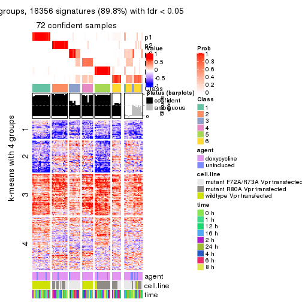
Compare the overlap of signatures from different k:
compare_signatures(res)
get_signature() returns a data frame invisibly. TO get the list of signatures, the function
call should be assigned to a variable explicitly. In following code, if plot argument is set
to FALSE, no heatmap is plotted while only the differential analysis is performed.
# code only for demonstration
tb = get_signature(res, k = ..., plot = FALSE)
An example of the output of tb is:
#> which_row fdr mean_1 mean_2 scaled_mean_1 scaled_mean_2 km
#> 1 38 0.042760348 8.373488 9.131774 -0.5533452 0.5164555 1
#> 2 40 0.018707592 7.106213 8.469186 -0.6173731 0.5762149 1
#> 3 55 0.019134737 10.221463 11.207825 -0.6159697 0.5749050 1
#> 4 59 0.006059896 5.921854 7.869574 -0.6899429 0.6439467 1
#> 5 60 0.018055526 8.928898 10.211722 -0.6204761 0.5791110 1
#> 6 98 0.009384629 15.714769 14.887706 0.6635654 -0.6193277 2
...
The columns in tb are:
which_row: row indices corresponding to the input matrix.fdr: FDR for the differential test. mean_x: The mean value in group x.scaled_mean_x: The mean value in group x after rows are scaled.km: Row groups if k-means clustering is applied to rows.UMAP plot which shows how samples are separated.
dimension_reduction(res, k = 2, method = "UMAP")
dimension_reduction(res, k = 3, method = "UMAP")

dimension_reduction(res, k = 4, method = "UMAP")
dimension_reduction(res, k = 5, method = "UMAP")
dimension_reduction(res, k = 6, method = "UMAP")
Following heatmap shows how subgroups are split when increasing k:
collect_classes(res)
Test correlation between subgroups and known annotations. If the known annotation is numeric, one-way ANOVA test is applied, and if the known annotation is discrete, chi-squared contingency table test is applied.
test_to_known_factors(res)
#> n agent(p) cell.line(p) time(p) k
#> CV:pam 83 1.000 3.28e-04 0.999 2
#> CV:pam 80 0.550 9.73e-09 0.990 3
#> CV:pam 77 0.703 1.09e-09 0.999 4
#> CV:pam 80 0.798 1.03e-14 1.000 5
#> CV:pam 72 0.744 4.54e-17 1.000 6
If matrix rows can be associated to genes, consider to use functional_enrichment(res,
...) to perform function enrichment for the signature genes. See this vignette for more detailed explanations.
The object with results only for a single top-value method and a single partition method can be extracted as:
res = res_list["CV", "mclust"]
# you can also extract it by
# res = res_list["CV:mclust"]
A summary of res and all the functions that can be applied to it:
res
#> A 'ConsensusPartition' object with k = 2, 3, 4, 5, 6.
#> On a matrix with 18211 rows and 87 columns.
#> Top rows (1000, 2000, 3000, 4000, 5000) are extracted by 'CV' method.
#> Subgroups are detected by 'mclust' method.
#> Performed in total 1250 partitions by row resampling.
#> Best k for subgroups seems to be 4.
#>
#> Following methods can be applied to this 'ConsensusPartition' object:
#> [1] "cola_report" "collect_classes" "collect_plots"
#> [4] "collect_stats" "colnames" "compare_signatures"
#> [7] "consensus_heatmap" "dimension_reduction" "functional_enrichment"
#> [10] "get_anno_col" "get_anno" "get_classes"
#> [13] "get_consensus" "get_matrix" "get_membership"
#> [16] "get_param" "get_signatures" "get_stats"
#> [19] "is_best_k" "is_stable_k" "membership_heatmap"
#> [22] "ncol" "nrow" "plot_ecdf"
#> [25] "rownames" "select_partition_number" "show"
#> [28] "suggest_best_k" "test_to_known_factors"
collect_plots() function collects all the plots made from res for all k (number of partitions)
into one single page to provide an easy and fast comparison between different k.
collect_plots(res)
The plots are:
k and the heatmap of
predicted classes for each k.k.k.k.All the plots in panels can be made by individual functions and they are plotted later in this section.
select_partition_number() produces several plots showing different
statistics for choosing “optimized” k. There are following statistics:
k;k, the area increased is defined as \(A_k - A_{k-1}\).The detailed explanations of these statistics can be found in the cola vignette.
Generally speaking, lower PAC score, higher mean silhouette score or higher
concordance corresponds to better partition. Rand index and Jaccard index
measure how similar the current partition is compared to partition with k-1.
If they are too similar, we won't accept k is better than k-1.
select_partition_number(res)
The numeric values for all these statistics can be obtained by get_stats().
get_stats(res)
#> k 1-PAC mean_silhouette concordance area_increased Rand Jaccard
#> 2 2 0.388 0.799 0.846 0.4556 0.536 0.536
#> 3 3 0.559 0.517 0.725 0.4034 0.836 0.693
#> 4 4 0.838 0.826 0.918 0.1501 0.864 0.647
#> 5 5 0.742 0.548 0.794 0.0672 0.931 0.744
#> 6 6 0.807 0.679 0.821 0.0524 0.893 0.561
suggest_best_k() suggests the best \(k\) based on these statistics. The rules are as follows:
suggest_best_k(res)
#> [1] 4
Following shows the table of the partitions (You need to click the show/hide
code output link to see it). The membership matrix (columns with name p*)
is inferred by
clue::cl_consensus()
function with the SE method. Basically the value in the membership matrix
represents the probability to belong to a certain group. The finall class
label for an item is determined with the group with highest probability it
belongs to.
In get_classes() function, the entropy is calculated from the membership
matrix and the silhouette score is calculated from the consensus matrix.
cbind(get_classes(res, k = 2), get_membership(res, k = 2))
#> class entropy silhouette p1 p2
#> GSM41890 1 0.0000 0.979 1.000 0.000
#> GSM41917 1 0.0000 0.979 1.000 0.000
#> GSM41936 2 0.7376 0.709 0.208 0.792
#> GSM41893 1 0.0000 0.979 1.000 0.000
#> GSM41920 1 0.0000 0.979 1.000 0.000
#> GSM41937 2 0.7376 0.709 0.208 0.792
#> GSM41896 1 0.0000 0.979 1.000 0.000
#> GSM41923 1 0.0000 0.979 1.000 0.000
#> GSM41938 2 0.7376 0.709 0.208 0.792
#> GSM41899 1 0.0000 0.979 1.000 0.000
#> GSM41925 1 0.0000 0.979 1.000 0.000
#> GSM41939 2 0.7376 0.709 0.208 0.792
#> GSM41902 1 0.0376 0.979 0.996 0.004
#> GSM41927 1 0.0000 0.979 1.000 0.000
#> GSM41940 2 0.7376 0.709 0.208 0.792
#> GSM41905 1 0.0000 0.979 1.000 0.000
#> GSM41929 1 0.0000 0.979 1.000 0.000
#> GSM41941 2 0.7376 0.709 0.208 0.792
#> GSM41908 1 0.0000 0.979 1.000 0.000
#> GSM41931 1 0.0000 0.979 1.000 0.000
#> GSM41942 2 0.7376 0.709 0.208 0.792
#> GSM41945 2 0.7376 0.709 0.208 0.792
#> GSM41911 1 0.0376 0.979 0.996 0.004
#> GSM41933 1 0.0000 0.979 1.000 0.000
#> GSM41943 2 0.7376 0.709 0.208 0.792
#> GSM41944 2 0.7376 0.709 0.208 0.792
#> GSM41876 2 0.4298 0.783 0.088 0.912
#> GSM41895 2 0.9754 0.624 0.408 0.592
#> GSM41898 2 0.9248 0.636 0.340 0.660
#> GSM41877 2 0.4022 0.784 0.080 0.920
#> GSM41901 2 0.9248 0.636 0.340 0.660
#> GSM41904 2 0.7453 0.762 0.212 0.788
#> GSM41878 2 0.4022 0.784 0.080 0.920
#> GSM41907 2 0.9248 0.636 0.340 0.660
#> GSM41910 2 0.9248 0.636 0.340 0.660
#> GSM41879 2 0.5629 0.783 0.132 0.868
#> GSM41913 2 0.9248 0.636 0.340 0.660
#> GSM41916 2 0.9522 0.639 0.372 0.628
#> GSM41880 2 0.4022 0.784 0.080 0.920
#> GSM41919 2 0.9608 0.638 0.384 0.616
#> GSM41922 2 0.9393 0.674 0.356 0.644
#> GSM41881 2 0.6343 0.779 0.160 0.840
#> GSM41924 2 0.9248 0.636 0.340 0.660
#> GSM41926 2 0.9983 0.532 0.476 0.524
#> GSM41869 2 0.4022 0.784 0.080 0.920
#> GSM41928 1 0.2236 0.940 0.964 0.036
#> GSM41930 2 0.9248 0.636 0.340 0.660
#> GSM41882 2 0.9983 0.541 0.476 0.524
#> GSM41932 2 0.9248 0.636 0.340 0.660
#> GSM41934 2 0.9686 0.637 0.396 0.604
#> GSM41860 2 0.9686 0.637 0.396 0.604
#> GSM41871 2 0.4022 0.784 0.080 0.920
#> GSM41875 2 0.4298 0.783 0.088 0.912
#> GSM41894 1 0.0376 0.979 0.996 0.004
#> GSM41897 1 0.0376 0.979 0.996 0.004
#> GSM41861 2 0.6048 0.782 0.148 0.852
#> GSM41872 2 0.4161 0.785 0.084 0.916
#> GSM41900 1 0.0376 0.979 0.996 0.004
#> GSM41862 2 0.9686 0.637 0.396 0.604
#> GSM41873 2 0.4022 0.784 0.080 0.920
#> GSM41903 1 0.4815 0.828 0.896 0.104
#> GSM41863 2 0.4161 0.784 0.084 0.916
#> GSM41883 2 0.4298 0.785 0.088 0.912
#> GSM41906 1 0.7674 0.628 0.776 0.224
#> GSM41864 2 0.7674 0.757 0.224 0.776
#> GSM41884 2 0.4022 0.784 0.080 0.920
#> GSM41909 1 0.0376 0.979 0.996 0.004
#> GSM41912 1 0.0376 0.979 0.996 0.004
#> GSM41865 2 0.9686 0.637 0.396 0.604
#> GSM41885 2 0.4022 0.784 0.080 0.920
#> GSM41915 1 0.0376 0.979 0.996 0.004
#> GSM41866 2 0.4161 0.784 0.084 0.916
#> GSM41886 2 0.4022 0.784 0.080 0.920
#> GSM41918 1 0.0376 0.979 0.996 0.004
#> GSM41867 2 0.4298 0.783 0.088 0.912
#> GSM41868 2 0.7376 0.767 0.208 0.792
#> GSM41921 1 0.0376 0.979 0.996 0.004
#> GSM41887 1 0.0000 0.979 1.000 0.000
#> GSM41914 1 0.0000 0.979 1.000 0.000
#> GSM41935 2 0.7453 0.726 0.212 0.788
#> GSM41874 2 0.4161 0.785 0.084 0.916
#> GSM41889 2 0.9248 0.636 0.340 0.660
#> GSM41892 2 0.9248 0.636 0.340 0.660
#> GSM41859 2 0.9248 0.636 0.340 0.660
#> GSM41870 2 0.4022 0.784 0.080 0.920
#> GSM41888 1 0.2236 0.933 0.964 0.036
#> GSM41891 1 0.0376 0.979 0.996 0.004
cbind(get_classes(res, k = 3), get_membership(res, k = 3))
#> class entropy silhouette p1 p2 p3
#> GSM41890 1 0.000 0.9374 1.000 0.000 0.000
#> GSM41917 1 0.000 0.9374 1.000 0.000 0.000
#> GSM41936 2 0.375 0.7361 0.144 0.856 0.000
#> GSM41893 1 0.000 0.9374 1.000 0.000 0.000
#> GSM41920 1 0.000 0.9374 1.000 0.000 0.000
#> GSM41937 2 0.375 0.7361 0.144 0.856 0.000
#> GSM41896 1 0.000 0.9374 1.000 0.000 0.000
#> GSM41923 1 0.000 0.9374 1.000 0.000 0.000
#> GSM41938 2 0.375 0.7361 0.144 0.856 0.000
#> GSM41899 1 0.000 0.9374 1.000 0.000 0.000
#> GSM41925 1 0.000 0.9374 1.000 0.000 0.000
#> GSM41939 2 0.573 0.6731 0.144 0.796 0.060
#> GSM41902 1 0.203 0.9269 0.952 0.032 0.016
#> GSM41927 1 0.000 0.9374 1.000 0.000 0.000
#> GSM41940 2 0.375 0.7361 0.144 0.856 0.000
#> GSM41905 1 0.000 0.9374 1.000 0.000 0.000
#> GSM41929 1 0.000 0.9374 1.000 0.000 0.000
#> GSM41941 2 0.375 0.7361 0.144 0.856 0.000
#> GSM41908 1 0.000 0.9374 1.000 0.000 0.000
#> GSM41931 1 0.000 0.9374 1.000 0.000 0.000
#> GSM41942 2 0.807 0.4607 0.144 0.648 0.208
#> GSM41945 2 0.375 0.7361 0.144 0.856 0.000
#> GSM41911 1 0.255 0.9206 0.936 0.040 0.024
#> GSM41933 1 0.000 0.9374 1.000 0.000 0.000
#> GSM41943 2 0.375 0.7361 0.144 0.856 0.000
#> GSM41944 2 0.375 0.7361 0.144 0.856 0.000
#> GSM41876 3 0.640 0.1765 0.008 0.372 0.620
#> GSM41895 3 0.801 0.2053 0.072 0.364 0.564
#> GSM41898 3 0.611 0.3166 0.000 0.396 0.604
#> GSM41877 3 0.601 0.1860 0.000 0.372 0.628
#> GSM41901 3 0.610 0.3173 0.000 0.392 0.608
#> GSM41904 3 0.746 0.0601 0.044 0.372 0.584
#> GSM41878 3 0.601 0.1860 0.000 0.372 0.628
#> GSM41907 3 0.611 0.3166 0.000 0.396 0.604
#> GSM41910 3 0.611 0.3166 0.000 0.396 0.604
#> GSM41879 3 0.764 0.0969 0.052 0.372 0.576
#> GSM41913 3 0.611 0.3166 0.000 0.396 0.604
#> GSM41916 3 0.660 0.3118 0.012 0.384 0.604
#> GSM41880 3 0.601 0.1860 0.000 0.372 0.628
#> GSM41919 3 0.744 0.2798 0.048 0.348 0.604
#> GSM41922 3 0.788 0.2447 0.072 0.336 0.592
#> GSM41881 2 0.769 0.2286 0.056 0.580 0.364
#> GSM41924 3 0.611 0.3166 0.000 0.396 0.604
#> GSM41926 3 0.868 0.1889 0.128 0.316 0.556
#> GSM41869 3 0.601 0.1860 0.000 0.372 0.628
#> GSM41928 1 0.557 0.7379 0.784 0.032 0.184
#> GSM41930 3 0.611 0.3166 0.000 0.396 0.604
#> GSM41882 3 0.820 0.1428 0.076 0.400 0.524
#> GSM41932 3 0.610 0.3171 0.000 0.392 0.608
#> GSM41934 3 0.785 0.2509 0.076 0.316 0.608
#> GSM41860 3 0.636 0.2478 0.020 0.296 0.684
#> GSM41871 3 0.606 0.1733 0.000 0.384 0.616
#> GSM41875 3 0.601 0.1860 0.000 0.372 0.628
#> GSM41894 1 0.277 0.9209 0.928 0.048 0.024
#> GSM41897 1 0.277 0.9209 0.928 0.048 0.024
#> GSM41861 2 0.630 0.0569 0.000 0.516 0.484
#> GSM41872 3 0.601 0.1860 0.000 0.372 0.628
#> GSM41900 1 0.255 0.9102 0.936 0.024 0.040
#> GSM41862 3 0.700 0.2635 0.044 0.292 0.664
#> GSM41873 3 0.601 0.1860 0.000 0.372 0.628
#> GSM41903 1 0.615 0.6720 0.752 0.044 0.204
#> GSM41863 2 0.568 0.2721 0.000 0.684 0.316
#> GSM41883 3 0.608 0.1674 0.000 0.388 0.612
#> GSM41906 1 0.852 0.3710 0.612 0.180 0.208
#> GSM41864 3 0.695 -0.0898 0.016 0.480 0.504
#> GSM41884 3 0.608 0.1674 0.000 0.388 0.612
#> GSM41909 1 0.255 0.9206 0.936 0.040 0.024
#> GSM41912 1 0.277 0.9209 0.928 0.048 0.024
#> GSM41865 3 0.644 0.2609 0.028 0.276 0.696
#> GSM41885 3 0.601 0.1860 0.000 0.372 0.628
#> GSM41915 1 0.277 0.9209 0.928 0.048 0.024
#> GSM41866 2 0.579 0.2393 0.000 0.668 0.332
#> GSM41886 3 0.604 0.1784 0.000 0.380 0.620
#> GSM41918 1 0.266 0.9208 0.932 0.044 0.024
#> GSM41867 3 0.608 0.1674 0.000 0.388 0.612
#> GSM41868 3 0.628 0.1698 0.004 0.384 0.612
#> GSM41921 1 0.277 0.9209 0.928 0.048 0.024
#> GSM41887 1 0.000 0.9374 1.000 0.000 0.000
#> GSM41914 1 0.000 0.9374 1.000 0.000 0.000
#> GSM41935 2 0.817 0.3652 0.116 0.620 0.264
#> GSM41874 3 0.630 0.1682 0.004 0.388 0.608
#> GSM41889 3 0.610 0.3166 0.000 0.392 0.608
#> GSM41892 3 0.611 0.3166 0.000 0.396 0.604
#> GSM41859 3 0.610 0.3173 0.000 0.392 0.608
#> GSM41870 3 0.604 0.1784 0.000 0.380 0.620
#> GSM41888 1 0.207 0.8999 0.940 0.060 0.000
#> GSM41891 1 0.277 0.9209 0.928 0.048 0.024
cbind(get_classes(res, k = 4), get_membership(res, k = 4))
#> class entropy silhouette p1 p2 p3 p4
#> GSM41890 1 0.0336 0.9573 0.992 0.000 0.000 0.008
#> GSM41917 1 0.0592 0.9557 0.984 0.000 0.000 0.016
#> GSM41936 4 0.0000 0.8479 0.000 0.000 0.000 1.000
#> GSM41893 1 0.0336 0.9573 0.992 0.000 0.000 0.008
#> GSM41920 1 0.0592 0.9557 0.984 0.000 0.000 0.016
#> GSM41937 4 0.0000 0.8479 0.000 0.000 0.000 1.000
#> GSM41896 1 0.0336 0.9573 0.992 0.000 0.000 0.008
#> GSM41923 1 0.0336 0.9573 0.992 0.000 0.000 0.008
#> GSM41938 4 0.0188 0.8470 0.000 0.000 0.004 0.996
#> GSM41899 1 0.0336 0.9573 0.992 0.000 0.000 0.008
#> GSM41925 1 0.0336 0.9573 0.992 0.000 0.000 0.008
#> GSM41939 4 0.0000 0.8479 0.000 0.000 0.000 1.000
#> GSM41902 1 0.0336 0.9573 0.992 0.000 0.000 0.008
#> GSM41927 1 0.0469 0.9568 0.988 0.000 0.000 0.012
#> GSM41940 4 0.0000 0.8479 0.000 0.000 0.000 1.000
#> GSM41905 1 0.0469 0.9568 0.988 0.000 0.000 0.012
#> GSM41929 1 0.0469 0.9568 0.988 0.000 0.000 0.012
#> GSM41941 4 0.0000 0.8479 0.000 0.000 0.000 1.000
#> GSM41908 1 0.0336 0.9573 0.992 0.000 0.000 0.008
#> GSM41931 1 0.0469 0.9568 0.988 0.000 0.000 0.012
#> GSM41942 4 0.0469 0.8424 0.000 0.012 0.000 0.988
#> GSM41945 4 0.0336 0.8452 0.008 0.000 0.000 0.992
#> GSM41911 1 0.0524 0.9565 0.988 0.000 0.004 0.008
#> GSM41933 1 0.0469 0.9568 0.988 0.000 0.000 0.012
#> GSM41943 4 0.0336 0.8452 0.008 0.000 0.000 0.992
#> GSM41944 4 0.0188 0.8472 0.004 0.000 0.000 0.996
#> GSM41876 2 0.0188 0.9107 0.000 0.996 0.004 0.000
#> GSM41895 3 0.1151 0.8663 0.008 0.000 0.968 0.024
#> GSM41898 3 0.0336 0.8789 0.000 0.008 0.992 0.000
#> GSM41877 2 0.0188 0.9107 0.000 0.996 0.004 0.000
#> GSM41901 3 0.0524 0.8776 0.008 0.004 0.988 0.000
#> GSM41904 2 0.5276 0.7182 0.012 0.764 0.068 0.156
#> GSM41878 2 0.0000 0.9099 0.000 1.000 0.000 0.000
#> GSM41907 3 0.0657 0.8803 0.004 0.012 0.984 0.000
#> GSM41910 3 0.0657 0.8803 0.004 0.012 0.984 0.000
#> GSM41879 2 0.3845 0.7920 0.012 0.840 0.016 0.132
#> GSM41913 3 0.0657 0.8803 0.004 0.012 0.984 0.000
#> GSM41916 3 0.0592 0.8745 0.016 0.000 0.984 0.000
#> GSM41880 2 0.0188 0.9107 0.000 0.996 0.004 0.000
#> GSM41919 3 0.0672 0.8779 0.008 0.008 0.984 0.000
#> GSM41922 3 0.3718 0.7516 0.012 0.168 0.820 0.000
#> GSM41881 4 0.8031 0.2117 0.012 0.320 0.224 0.444
#> GSM41924 3 0.0657 0.8803 0.004 0.012 0.984 0.000
#> GSM41926 3 0.1004 0.8684 0.024 0.000 0.972 0.004
#> GSM41869 2 0.0188 0.9107 0.000 0.996 0.004 0.000
#> GSM41928 3 0.5594 0.0733 0.460 0.020 0.520 0.000
#> GSM41930 3 0.0469 0.8803 0.000 0.012 0.988 0.000
#> GSM41882 3 0.2282 0.8362 0.052 0.000 0.924 0.024
#> GSM41932 3 0.0469 0.8803 0.000 0.012 0.988 0.000
#> GSM41934 3 0.1174 0.8711 0.012 0.020 0.968 0.000
#> GSM41860 3 0.3764 0.7630 0.012 0.172 0.816 0.000
#> GSM41871 2 0.0000 0.9099 0.000 1.000 0.000 0.000
#> GSM41875 2 0.0188 0.9107 0.000 0.996 0.004 0.000
#> GSM41894 1 0.1118 0.9463 0.964 0.000 0.036 0.000
#> GSM41897 1 0.1118 0.9463 0.964 0.000 0.036 0.000
#> GSM41861 3 0.7770 0.1723 0.008 0.344 0.460 0.188
#> GSM41872 2 0.0188 0.9107 0.000 0.996 0.004 0.000
#> GSM41900 1 0.1767 0.9356 0.944 0.012 0.044 0.000
#> GSM41862 3 0.3718 0.7666 0.012 0.168 0.820 0.000
#> GSM41873 2 0.3306 0.7790 0.000 0.840 0.004 0.156
#> GSM41903 1 0.3907 0.7304 0.768 0.000 0.232 0.000
#> GSM41863 4 0.4837 0.4078 0.000 0.348 0.004 0.648
#> GSM41883 2 0.0188 0.9084 0.000 0.996 0.004 0.000
#> GSM41906 1 0.8189 0.4249 0.584 0.148 0.128 0.140
#> GSM41864 3 0.7041 0.3944 0.012 0.320 0.564 0.104
#> GSM41884 2 0.0000 0.9099 0.000 1.000 0.000 0.000
#> GSM41909 1 0.1118 0.9463 0.964 0.000 0.036 0.000
#> GSM41912 1 0.1118 0.9463 0.964 0.000 0.036 0.000
#> GSM41865 3 0.3718 0.7666 0.012 0.168 0.820 0.000
#> GSM41885 2 0.0000 0.9099 0.000 1.000 0.000 0.000
#> GSM41915 1 0.1118 0.9463 0.964 0.000 0.036 0.000
#> GSM41866 4 0.5573 0.3419 0.000 0.368 0.028 0.604
#> GSM41886 2 0.0188 0.9107 0.000 0.996 0.004 0.000
#> GSM41918 1 0.1118 0.9463 0.964 0.000 0.036 0.000
#> GSM41867 2 0.4917 0.4731 0.000 0.656 0.008 0.336
#> GSM41868 2 0.1489 0.8751 0.004 0.952 0.044 0.000
#> GSM41921 1 0.1118 0.9463 0.964 0.000 0.036 0.000
#> GSM41887 1 0.0336 0.9573 0.992 0.000 0.000 0.008
#> GSM41914 1 0.0469 0.9568 0.988 0.000 0.000 0.012
#> GSM41935 4 0.7351 0.4447 0.008 0.156 0.292 0.544
#> GSM41874 2 0.5473 0.2587 0.012 0.576 0.004 0.408
#> GSM41889 3 0.0469 0.8803 0.000 0.012 0.988 0.000
#> GSM41892 3 0.0469 0.8803 0.000 0.012 0.988 0.000
#> GSM41859 3 0.0707 0.8779 0.000 0.020 0.980 0.000
#> GSM41870 2 0.0000 0.9099 0.000 1.000 0.000 0.000
#> GSM41888 1 0.3808 0.7939 0.808 0.004 0.004 0.184
#> GSM41891 1 0.1118 0.9463 0.964 0.000 0.036 0.000
cbind(get_classes(res, k = 5), get_membership(res, k = 5))
#> class entropy silhouette p1 p2 p3 p4 p5
#> GSM41890 1 0.4291 -0.01611 0.536 0.000 0.000 0.000 0.464
#> GSM41917 1 0.4291 -0.01611 0.536 0.000 0.000 0.000 0.464
#> GSM41936 4 0.0000 0.86585 0.000 0.000 0.000 1.000 0.000
#> GSM41893 1 0.2561 0.21492 0.856 0.000 0.000 0.000 0.144
#> GSM41920 1 0.4126 0.11657 0.620 0.000 0.000 0.000 0.380
#> GSM41937 4 0.0000 0.86585 0.000 0.000 0.000 1.000 0.000
#> GSM41896 1 0.4302 -0.04994 0.520 0.000 0.000 0.000 0.480
#> GSM41923 1 0.2929 0.19814 0.820 0.000 0.000 0.000 0.180
#> GSM41938 4 0.0000 0.86585 0.000 0.000 0.000 1.000 0.000
#> GSM41899 1 0.0000 0.24050 1.000 0.000 0.000 0.000 0.000
#> GSM41925 1 0.0404 0.24024 0.988 0.000 0.000 0.000 0.012
#> GSM41939 4 0.1197 0.84925 0.000 0.000 0.000 0.952 0.048
#> GSM41902 5 0.5439 0.10022 0.432 0.000 0.060 0.000 0.508
#> GSM41927 1 0.4060 0.12051 0.640 0.000 0.000 0.000 0.360
#> GSM41940 4 0.0404 0.86325 0.000 0.000 0.000 0.988 0.012
#> GSM41905 5 0.4307 -0.01638 0.496 0.000 0.000 0.000 0.504
#> GSM41929 1 0.4150 0.11336 0.612 0.000 0.000 0.000 0.388
#> GSM41941 4 0.0000 0.86585 0.000 0.000 0.000 1.000 0.000
#> GSM41908 1 0.4235 0.06067 0.576 0.000 0.000 0.000 0.424
#> GSM41931 1 0.4291 -0.01611 0.536 0.000 0.000 0.000 0.464
#> GSM41942 4 0.2130 0.82552 0.000 0.012 0.000 0.908 0.080
#> GSM41945 4 0.0510 0.86017 0.000 0.000 0.000 0.984 0.016
#> GSM41911 5 0.5096 0.07515 0.444 0.000 0.036 0.000 0.520
#> GSM41933 1 0.4192 0.09306 0.596 0.000 0.000 0.000 0.404
#> GSM41943 4 0.0000 0.86585 0.000 0.000 0.000 1.000 0.000
#> GSM41944 4 0.0510 0.86017 0.000 0.000 0.000 0.984 0.016
#> GSM41876 2 0.0703 0.86371 0.000 0.976 0.000 0.000 0.024
#> GSM41895 3 0.0000 0.92665 0.000 0.000 1.000 0.000 0.000
#> GSM41898 3 0.0000 0.92665 0.000 0.000 1.000 0.000 0.000
#> GSM41877 2 0.0703 0.86371 0.000 0.976 0.000 0.000 0.024
#> GSM41901 3 0.0000 0.92665 0.000 0.000 1.000 0.000 0.000
#> GSM41904 2 0.7683 0.25309 0.000 0.452 0.276 0.188 0.084
#> GSM41878 2 0.0000 0.86799 0.000 1.000 0.000 0.000 0.000
#> GSM41907 3 0.0000 0.92665 0.000 0.000 1.000 0.000 0.000
#> GSM41910 3 0.0000 0.92665 0.000 0.000 1.000 0.000 0.000
#> GSM41879 2 0.6663 0.51989 0.000 0.616 0.128 0.172 0.084
#> GSM41913 3 0.0000 0.92665 0.000 0.000 1.000 0.000 0.000
#> GSM41916 3 0.0000 0.92665 0.000 0.000 1.000 0.000 0.000
#> GSM41880 2 0.0703 0.86371 0.000 0.976 0.000 0.000 0.024
#> GSM41919 3 0.0000 0.92665 0.000 0.000 1.000 0.000 0.000
#> GSM41922 3 0.1809 0.87447 0.000 0.060 0.928 0.000 0.012
#> GSM41881 3 0.6831 0.08384 0.000 0.076 0.500 0.352 0.072
#> GSM41924 3 0.0000 0.92665 0.000 0.000 1.000 0.000 0.000
#> GSM41926 3 0.0000 0.92665 0.000 0.000 1.000 0.000 0.000
#> GSM41869 2 0.0703 0.86371 0.000 0.976 0.000 0.000 0.024
#> GSM41928 5 0.5409 0.16243 0.080 0.000 0.316 0.000 0.604
#> GSM41930 3 0.0000 0.92665 0.000 0.000 1.000 0.000 0.000
#> GSM41882 3 0.0290 0.91970 0.008 0.000 0.992 0.000 0.000
#> GSM41932 3 0.0000 0.92665 0.000 0.000 1.000 0.000 0.000
#> GSM41934 3 0.0000 0.92665 0.000 0.000 1.000 0.000 0.000
#> GSM41860 3 0.2020 0.84068 0.000 0.100 0.900 0.000 0.000
#> GSM41871 2 0.0000 0.86799 0.000 1.000 0.000 0.000 0.000
#> GSM41875 2 0.0290 0.86725 0.000 0.992 0.000 0.000 0.008
#> GSM41894 1 0.4074 0.21349 0.636 0.000 0.000 0.000 0.364
#> GSM41897 1 0.4074 0.21349 0.636 0.000 0.000 0.000 0.364
#> GSM41861 3 0.7526 0.14972 0.000 0.276 0.464 0.192 0.068
#> GSM41872 2 0.0609 0.86240 0.000 0.980 0.000 0.000 0.020
#> GSM41900 5 0.3730 0.04655 0.288 0.000 0.000 0.000 0.712
#> GSM41862 3 0.0963 0.90266 0.000 0.036 0.964 0.000 0.000
#> GSM41873 2 0.4541 0.65632 0.000 0.744 0.000 0.172 0.084
#> GSM41903 5 0.5946 0.24381 0.112 0.000 0.380 0.000 0.508
#> GSM41863 4 0.5934 0.45624 0.000 0.256 0.088 0.628 0.028
#> GSM41883 2 0.0290 0.86646 0.000 0.992 0.000 0.000 0.008
#> GSM41906 5 0.8700 0.18484 0.108 0.056 0.256 0.152 0.428
#> GSM41864 3 0.4931 0.69300 0.000 0.160 0.748 0.048 0.044
#> GSM41884 2 0.0000 0.86799 0.000 1.000 0.000 0.000 0.000
#> GSM41909 5 0.3586 0.07792 0.264 0.000 0.000 0.000 0.736
#> GSM41912 1 0.4074 0.21349 0.636 0.000 0.000 0.000 0.364
#> GSM41865 3 0.0963 0.90266 0.000 0.036 0.964 0.000 0.000
#> GSM41885 2 0.0703 0.86371 0.000 0.976 0.000 0.000 0.024
#> GSM41915 1 0.4101 0.21045 0.628 0.000 0.000 0.000 0.372
#> GSM41866 4 0.6656 0.37516 0.000 0.284 0.104 0.560 0.052
#> GSM41886 2 0.0000 0.86799 0.000 1.000 0.000 0.000 0.000
#> GSM41918 5 0.2852 0.14414 0.172 0.000 0.000 0.000 0.828
#> GSM41867 2 0.6615 0.40813 0.000 0.572 0.064 0.276 0.088
#> GSM41868 2 0.1399 0.85106 0.000 0.952 0.028 0.000 0.020
#> GSM41921 1 0.4074 0.21349 0.636 0.000 0.000 0.000 0.364
#> GSM41887 1 0.4150 0.11336 0.612 0.000 0.000 0.000 0.388
#> GSM41914 5 0.4306 -0.00744 0.492 0.000 0.000 0.000 0.508
#> GSM41935 4 0.5384 0.15105 0.000 0.032 0.444 0.512 0.012
#> GSM41874 2 0.5717 0.27645 0.000 0.540 0.000 0.368 0.092
#> GSM41889 3 0.0000 0.92665 0.000 0.000 1.000 0.000 0.000
#> GSM41892 3 0.0000 0.92665 0.000 0.000 1.000 0.000 0.000
#> GSM41859 3 0.0000 0.92665 0.000 0.000 1.000 0.000 0.000
#> GSM41870 2 0.0000 0.86799 0.000 1.000 0.000 0.000 0.000
#> GSM41888 1 0.6422 -0.01232 0.492 0.000 0.000 0.200 0.308
#> GSM41891 1 0.4074 0.21349 0.636 0.000 0.000 0.000 0.364
cbind(get_classes(res, k = 6), get_membership(res, k = 6))
#> class entropy silhouette p1 p2 p3 p4 p5 p6
#> GSM41890 1 0.0363 0.8324 0.988 0.000 0.000 0.000 0.012 0.000
#> GSM41917 1 0.0363 0.8324 0.988 0.000 0.000 0.000 0.012 0.000
#> GSM41936 4 0.3221 0.7876 0.000 0.000 0.000 0.736 0.000 0.264
#> GSM41893 5 0.3838 0.3753 0.448 0.000 0.000 0.000 0.552 0.000
#> GSM41920 1 0.1204 0.8087 0.944 0.000 0.000 0.000 0.056 0.000
#> GSM41937 4 0.3244 0.7875 0.000 0.000 0.000 0.732 0.000 0.268
#> GSM41896 1 0.0146 0.8293 0.996 0.000 0.000 0.000 0.004 0.000
#> GSM41923 5 0.3823 0.3935 0.436 0.000 0.000 0.000 0.564 0.000
#> GSM41938 4 0.3266 0.7860 0.000 0.000 0.000 0.728 0.000 0.272
#> GSM41899 5 0.3717 0.4540 0.384 0.000 0.000 0.000 0.616 0.000
#> GSM41925 5 0.3717 0.4542 0.384 0.000 0.000 0.000 0.616 0.000
#> GSM41939 4 0.3515 0.7473 0.000 0.000 0.000 0.676 0.000 0.324
#> GSM41902 1 0.1714 0.7589 0.908 0.000 0.092 0.000 0.000 0.000
#> GSM41927 1 0.1556 0.7900 0.920 0.000 0.000 0.000 0.080 0.000
#> GSM41940 4 0.3351 0.7764 0.000 0.000 0.000 0.712 0.000 0.288
#> GSM41905 1 0.0000 0.8291 1.000 0.000 0.000 0.000 0.000 0.000
#> GSM41929 1 0.0547 0.8296 0.980 0.000 0.000 0.000 0.020 0.000
#> GSM41941 4 0.0458 0.7493 0.000 0.000 0.000 0.984 0.000 0.016
#> GSM41908 1 0.0363 0.8324 0.988 0.000 0.000 0.000 0.012 0.000
#> GSM41931 1 0.0363 0.8324 0.988 0.000 0.000 0.000 0.012 0.000
#> GSM41942 4 0.3804 0.7241 0.000 0.008 0.000 0.656 0.000 0.336
#> GSM41945 4 0.0000 0.7403 0.000 0.000 0.000 1.000 0.000 0.000
#> GSM41911 1 0.0632 0.8184 0.976 0.000 0.024 0.000 0.000 0.000
#> GSM41933 1 0.0363 0.8324 0.988 0.000 0.000 0.000 0.012 0.000
#> GSM41943 4 0.0458 0.7493 0.000 0.000 0.000 0.984 0.000 0.016
#> GSM41944 4 0.0000 0.7403 0.000 0.000 0.000 1.000 0.000 0.000
#> GSM41876 2 0.0000 0.8650 0.000 1.000 0.000 0.000 0.000 0.000
#> GSM41895 3 0.2664 0.8047 0.000 0.000 0.816 0.000 0.000 0.184
#> GSM41898 3 0.0000 0.8245 0.000 0.000 1.000 0.000 0.000 0.000
#> GSM41877 2 0.0000 0.8650 0.000 1.000 0.000 0.000 0.000 0.000
#> GSM41901 3 0.0790 0.8275 0.000 0.000 0.968 0.000 0.000 0.032
#> GSM41904 6 0.2389 0.6503 0.000 0.128 0.008 0.000 0.000 0.864
#> GSM41878 2 0.1141 0.8647 0.000 0.948 0.000 0.000 0.000 0.052
#> GSM41907 3 0.0000 0.8245 0.000 0.000 1.000 0.000 0.000 0.000
#> GSM41910 3 0.0000 0.8245 0.000 0.000 1.000 0.000 0.000 0.000
#> GSM41879 6 0.3136 0.5594 0.000 0.228 0.004 0.000 0.000 0.768
#> GSM41913 3 0.0000 0.8245 0.000 0.000 1.000 0.000 0.000 0.000
#> GSM41916 3 0.0865 0.8277 0.000 0.000 0.964 0.000 0.000 0.036
#> GSM41880 2 0.0000 0.8650 0.000 1.000 0.000 0.000 0.000 0.000
#> GSM41919 3 0.3221 0.7646 0.000 0.000 0.736 0.000 0.000 0.264
#> GSM41922 3 0.3857 0.4756 0.000 0.000 0.532 0.000 0.000 0.468
#> GSM41881 6 0.0870 0.6515 0.000 0.004 0.012 0.012 0.000 0.972
#> GSM41924 3 0.0000 0.8245 0.000 0.000 1.000 0.000 0.000 0.000
#> GSM41926 3 0.3221 0.7646 0.000 0.000 0.736 0.000 0.000 0.264
#> GSM41869 2 0.0000 0.8650 0.000 1.000 0.000 0.000 0.000 0.000
#> GSM41928 5 0.7545 -0.0991 0.160 0.000 0.268 0.000 0.340 0.232
#> GSM41930 3 0.3101 0.7761 0.000 0.000 0.756 0.000 0.000 0.244
#> GSM41882 3 0.2830 0.8108 0.020 0.000 0.836 0.000 0.000 0.144
#> GSM41932 3 0.0000 0.8245 0.000 0.000 1.000 0.000 0.000 0.000
#> GSM41934 3 0.3221 0.7646 0.000 0.000 0.736 0.000 0.000 0.264
#> GSM41860 3 0.3975 0.5415 0.000 0.004 0.544 0.000 0.000 0.452
#> GSM41871 2 0.0865 0.8714 0.000 0.964 0.000 0.000 0.000 0.036
#> GSM41875 2 0.0937 0.8643 0.000 0.960 0.000 0.000 0.000 0.040
#> GSM41894 5 0.0000 0.7028 0.000 0.000 0.000 0.000 1.000 0.000
#> GSM41897 5 0.0000 0.7028 0.000 0.000 0.000 0.000 1.000 0.000
#> GSM41861 6 0.0717 0.6573 0.000 0.016 0.008 0.000 0.000 0.976
#> GSM41872 2 0.3050 0.6973 0.000 0.764 0.000 0.000 0.000 0.236
#> GSM41900 1 0.3868 0.2425 0.508 0.000 0.000 0.000 0.492 0.000
#> GSM41862 3 0.3961 0.5618 0.000 0.004 0.556 0.000 0.000 0.440
#> GSM41873 2 0.3860 0.1290 0.000 0.528 0.000 0.000 0.000 0.472
#> GSM41903 1 0.3841 0.3580 0.616 0.000 0.380 0.000 0.004 0.000
#> GSM41863 6 0.4396 0.1734 0.000 0.036 0.000 0.352 0.000 0.612
#> GSM41883 2 0.0865 0.8714 0.000 0.964 0.000 0.000 0.000 0.036
#> GSM41906 5 0.6542 0.2341 0.068 0.000 0.004 0.148 0.528 0.252
#> GSM41864 6 0.2009 0.6183 0.000 0.008 0.084 0.004 0.000 0.904
#> GSM41884 2 0.0865 0.8714 0.000 0.964 0.000 0.000 0.000 0.036
#> GSM41909 1 0.3804 0.3659 0.576 0.000 0.000 0.000 0.424 0.000
#> GSM41912 5 0.0000 0.7028 0.000 0.000 0.000 0.000 1.000 0.000
#> GSM41865 3 0.3975 0.5415 0.000 0.004 0.544 0.000 0.000 0.452
#> GSM41885 2 0.0000 0.8650 0.000 1.000 0.000 0.000 0.000 0.000
#> GSM41915 5 0.0260 0.7009 0.008 0.000 0.000 0.000 0.992 0.000
#> GSM41866 6 0.3956 0.3116 0.000 0.024 0.000 0.292 0.000 0.684
#> GSM41886 2 0.0865 0.8714 0.000 0.964 0.000 0.000 0.000 0.036
#> GSM41918 1 0.3804 0.3575 0.576 0.000 0.000 0.000 0.424 0.000
#> GSM41867 2 0.3996 0.0905 0.000 0.512 0.000 0.004 0.000 0.484
#> GSM41868 2 0.3482 0.5658 0.000 0.684 0.000 0.000 0.000 0.316
#> GSM41921 5 0.0000 0.7028 0.000 0.000 0.000 0.000 1.000 0.000
#> GSM41887 1 0.0458 0.8310 0.984 0.000 0.000 0.000 0.016 0.000
#> GSM41914 1 0.0000 0.8291 1.000 0.000 0.000 0.000 0.000 0.000
#> GSM41935 6 0.4603 0.2505 0.000 0.000 0.288 0.068 0.000 0.644
#> GSM41874 6 0.4219 0.3845 0.000 0.320 0.000 0.032 0.000 0.648
#> GSM41889 3 0.2178 0.8165 0.000 0.000 0.868 0.000 0.000 0.132
#> GSM41892 3 0.0000 0.8245 0.000 0.000 1.000 0.000 0.000 0.000
#> GSM41859 3 0.0000 0.8245 0.000 0.000 1.000 0.000 0.000 0.000
#> GSM41870 2 0.0865 0.8714 0.000 0.964 0.000 0.000 0.000 0.036
#> GSM41888 1 0.4710 0.5813 0.688 0.000 0.000 0.196 0.112 0.004
#> GSM41891 5 0.0000 0.7028 0.000 0.000 0.000 0.000 1.000 0.000
Heatmaps for the consensus matrix. It visualizes the probability of two samples to be in a same group.
consensus_heatmap(res, k = 2)
consensus_heatmap(res, k = 3)
consensus_heatmap(res, k = 4)
consensus_heatmap(res, k = 5)
consensus_heatmap(res, k = 6)
Heatmaps for the membership of samples in all partitions to see how consistent they are:
membership_heatmap(res, k = 2)
membership_heatmap(res, k = 3)
membership_heatmap(res, k = 4)
membership_heatmap(res, k = 5)
membership_heatmap(res, k = 6)
As soon as we have had the classes for columns, we can look for signatures which are significantly different between classes which can be candidate marks for certain classes. Following are the heatmaps for signatures.
Signature heatmaps where rows are scaled:
get_signatures(res, k = 2)
get_signatures(res, k = 3)
get_signatures(res, k = 4)
get_signatures(res, k = 5)
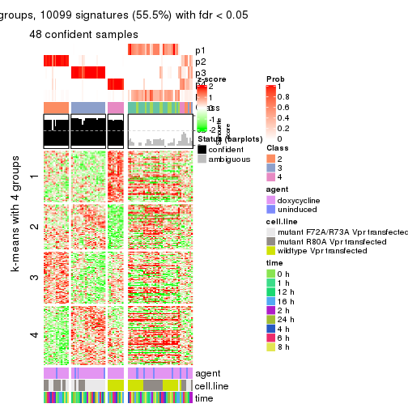
get_signatures(res, k = 6)

Signature heatmaps where rows are not scaled:
get_signatures(res, k = 2, scale_rows = FALSE)
get_signatures(res, k = 3, scale_rows = FALSE)
get_signatures(res, k = 4, scale_rows = FALSE)
get_signatures(res, k = 5, scale_rows = FALSE)
get_signatures(res, k = 6, scale_rows = FALSE)
Compare the overlap of signatures from different k:
compare_signatures(res)
get_signature() returns a data frame invisibly. TO get the list of signatures, the function
call should be assigned to a variable explicitly. In following code, if plot argument is set
to FALSE, no heatmap is plotted while only the differential analysis is performed.
# code only for demonstration
tb = get_signature(res, k = ..., plot = FALSE)
An example of the output of tb is:
#> which_row fdr mean_1 mean_2 scaled_mean_1 scaled_mean_2 km
#> 1 38 0.042760348 8.373488 9.131774 -0.5533452 0.5164555 1
#> 2 40 0.018707592 7.106213 8.469186 -0.6173731 0.5762149 1
#> 3 55 0.019134737 10.221463 11.207825 -0.6159697 0.5749050 1
#> 4 59 0.006059896 5.921854 7.869574 -0.6899429 0.6439467 1
#> 5 60 0.018055526 8.928898 10.211722 -0.6204761 0.5791110 1
#> 6 98 0.009384629 15.714769 14.887706 0.6635654 -0.6193277 2
...
The columns in tb are:
which_row: row indices corresponding to the input matrix.fdr: FDR for the differential test. mean_x: The mean value in group x.scaled_mean_x: The mean value in group x after rows are scaled.km: Row groups if k-means clustering is applied to rows.UMAP plot which shows how samples are separated.
dimension_reduction(res, k = 2, method = "UMAP")
dimension_reduction(res, k = 3, method = "UMAP")
dimension_reduction(res, k = 4, method = "UMAP")
dimension_reduction(res, k = 5, method = "UMAP")
dimension_reduction(res, k = 6, method = "UMAP")
Following heatmap shows how subgroups are split when increasing k:
collect_classes(res)
Test correlation between subgroups and known annotations. If the known annotation is numeric, one-way ANOVA test is applied, and if the known annotation is discrete, chi-squared contingency table test is applied.
test_to_known_factors(res)
#> n agent(p) cell.line(p) time(p) k
#> CV:mclust 87 1.000 2.80e-05 1.000 2
#> CV:mclust 39 0.596 7.43e-02 0.971 3
#> CV:mclust 77 0.525 1.08e-12 0.999 4
#> CV:mclust 48 0.405 2.27e-11 0.987 5
#> CV:mclust 70 0.594 1.41e-14 0.982 6
If matrix rows can be associated to genes, consider to use functional_enrichment(res,
...) to perform function enrichment for the signature genes. See this vignette for more detailed explanations.
The object with results only for a single top-value method and a single partition method can be extracted as:
res = res_list["CV", "NMF"]
# you can also extract it by
# res = res_list["CV:NMF"]
A summary of res and all the functions that can be applied to it:
res
#> A 'ConsensusPartition' object with k = 2, 3, 4, 5, 6.
#> On a matrix with 18211 rows and 87 columns.
#> Top rows (1000, 2000, 3000, 4000, 5000) are extracted by 'CV' method.
#> Subgroups are detected by 'NMF' method.
#> Performed in total 1250 partitions by row resampling.
#> Best k for subgroups seems to be 3.
#>
#> Following methods can be applied to this 'ConsensusPartition' object:
#> [1] "cola_report" "collect_classes" "collect_plots"
#> [4] "collect_stats" "colnames" "compare_signatures"
#> [7] "consensus_heatmap" "dimension_reduction" "functional_enrichment"
#> [10] "get_anno_col" "get_anno" "get_classes"
#> [13] "get_consensus" "get_matrix" "get_membership"
#> [16] "get_param" "get_signatures" "get_stats"
#> [19] "is_best_k" "is_stable_k" "membership_heatmap"
#> [22] "ncol" "nrow" "plot_ecdf"
#> [25] "rownames" "select_partition_number" "show"
#> [28] "suggest_best_k" "test_to_known_factors"
collect_plots() function collects all the plots made from res for all k (number of partitions)
into one single page to provide an easy and fast comparison between different k.
collect_plots(res)
The plots are:
k and the heatmap of
predicted classes for each k.k.k.k.All the plots in panels can be made by individual functions and they are plotted later in this section.
select_partition_number() produces several plots showing different
statistics for choosing “optimized” k. There are following statistics:
k;k, the area increased is defined as \(A_k - A_{k-1}\).The detailed explanations of these statistics can be found in the cola vignette.
Generally speaking, lower PAC score, higher mean silhouette score or higher
concordance corresponds to better partition. Rand index and Jaccard index
measure how similar the current partition is compared to partition with k-1.
If they are too similar, we won't accept k is better than k-1.
select_partition_number(res)

The numeric values for all these statistics can be obtained by get_stats().
get_stats(res)
#> k 1-PAC mean_silhouette concordance area_increased Rand Jaccard
#> 2 2 0.387 0.649 0.855 0.4893 0.500 0.500
#> 3 3 0.657 0.817 0.904 0.3706 0.715 0.486
#> 4 4 0.731 0.830 0.879 0.1046 0.897 0.703
#> 5 5 0.759 0.714 0.816 0.0556 0.995 0.982
#> 6 6 0.772 0.681 0.810 0.0455 0.918 0.689
suggest_best_k() suggests the best \(k\) based on these statistics. The rules are as follows:
suggest_best_k(res)
#> [1] 3
Following shows the table of the partitions (You need to click the show/hide
code output link to see it). The membership matrix (columns with name p*)
is inferred by
clue::cl_consensus()
function with the SE method. Basically the value in the membership matrix
represents the probability to belong to a certain group. The finall class
label for an item is determined with the group with highest probability it
belongs to.
In get_classes() function, the entropy is calculated from the membership
matrix and the silhouette score is calculated from the consensus matrix.
cbind(get_classes(res, k = 2), get_membership(res, k = 2))
#> class entropy silhouette p1 p2
#> GSM41890 1 0.9358 0.4042 0.648 0.352
#> GSM41917 1 0.9608 0.3566 0.616 0.384
#> GSM41936 2 0.9686 0.3837 0.396 0.604
#> GSM41893 1 0.0000 0.7931 1.000 0.000
#> GSM41920 1 0.9608 0.3566 0.616 0.384
#> GSM41937 2 0.9710 0.3740 0.400 0.600
#> GSM41896 1 0.0000 0.7931 1.000 0.000
#> GSM41923 1 0.0000 0.7931 1.000 0.000
#> GSM41938 2 0.9833 0.3076 0.424 0.576
#> GSM41899 1 0.0000 0.7931 1.000 0.000
#> GSM41925 1 0.0000 0.7931 1.000 0.000
#> GSM41939 1 0.9754 0.2721 0.592 0.408
#> GSM41902 2 0.8386 0.4662 0.268 0.732
#> GSM41927 1 0.4298 0.7522 0.912 0.088
#> GSM41940 1 0.9393 0.4033 0.644 0.356
#> GSM41905 1 0.1414 0.7902 0.980 0.020
#> GSM41929 1 0.6973 0.6567 0.812 0.188
#> GSM41941 1 0.7299 0.6565 0.796 0.204
#> GSM41908 1 0.3584 0.7650 0.932 0.068
#> GSM41931 1 0.4022 0.7566 0.920 0.080
#> GSM41942 1 0.9522 0.3662 0.628 0.372
#> GSM41945 1 0.4939 0.7447 0.892 0.108
#> GSM41911 2 0.9909 0.0717 0.444 0.556
#> GSM41933 1 0.6623 0.6756 0.828 0.172
#> GSM41943 1 0.1414 0.7914 0.980 0.020
#> GSM41944 1 0.5408 0.7347 0.876 0.124
#> GSM41876 2 0.9686 0.3837 0.396 0.604
#> GSM41895 2 0.0672 0.8140 0.008 0.992
#> GSM41898 2 0.0000 0.8154 0.000 1.000
#> GSM41877 1 0.9087 0.4702 0.676 0.324
#> GSM41901 2 0.0000 0.8154 0.000 1.000
#> GSM41904 2 0.4431 0.7784 0.092 0.908
#> GSM41878 1 0.9710 0.2857 0.600 0.400
#> GSM41907 2 0.0376 0.8156 0.004 0.996
#> GSM41910 2 0.0000 0.8154 0.000 1.000
#> GSM41879 2 0.7139 0.7017 0.196 0.804
#> GSM41913 2 0.0000 0.8154 0.000 1.000
#> GSM41916 2 0.0376 0.8156 0.004 0.996
#> GSM41880 2 0.9732 0.3639 0.404 0.596
#> GSM41919 2 0.0376 0.8156 0.004 0.996
#> GSM41922 2 0.0376 0.8156 0.004 0.996
#> GSM41881 2 0.6531 0.7249 0.168 0.832
#> GSM41924 2 0.0000 0.8154 0.000 1.000
#> GSM41926 2 0.0000 0.8154 0.000 1.000
#> GSM41869 1 0.2778 0.7816 0.952 0.048
#> GSM41928 2 0.0376 0.8156 0.004 0.996
#> GSM41930 2 0.0376 0.8156 0.004 0.996
#> GSM41882 2 0.1633 0.8087 0.024 0.976
#> GSM41932 2 0.0376 0.8156 0.004 0.996
#> GSM41934 2 0.0376 0.8156 0.004 0.996
#> GSM41860 2 0.0376 0.8156 0.004 0.996
#> GSM41871 1 0.9881 0.1748 0.564 0.436
#> GSM41875 1 0.2603 0.7847 0.956 0.044
#> GSM41894 1 0.0000 0.7931 1.000 0.000
#> GSM41897 1 0.0000 0.7931 1.000 0.000
#> GSM41861 2 0.7745 0.6648 0.228 0.772
#> GSM41872 2 0.7139 0.7017 0.196 0.804
#> GSM41900 1 0.2423 0.7818 0.960 0.040
#> GSM41862 2 0.0938 0.8146 0.012 0.988
#> GSM41873 2 0.9552 0.4324 0.376 0.624
#> GSM41903 1 0.4690 0.7430 0.900 0.100
#> GSM41863 1 1.0000 -0.0687 0.504 0.496
#> GSM41883 1 0.8608 0.5379 0.716 0.284
#> GSM41906 1 0.0000 0.7931 1.000 0.000
#> GSM41864 2 0.4815 0.7714 0.104 0.896
#> GSM41884 2 0.9635 0.4013 0.388 0.612
#> GSM41909 1 0.0000 0.7931 1.000 0.000
#> GSM41912 1 0.0000 0.7931 1.000 0.000
#> GSM41865 2 0.2043 0.8077 0.032 0.968
#> GSM41885 1 0.7299 0.6565 0.796 0.204
#> GSM41915 1 0.0672 0.7924 0.992 0.008
#> GSM41866 2 0.9977 0.1561 0.472 0.528
#> GSM41886 1 0.7139 0.6656 0.804 0.196
#> GSM41918 1 0.0938 0.7917 0.988 0.012
#> GSM41867 1 0.1843 0.7888 0.972 0.028
#> GSM41868 1 0.2778 0.7820 0.952 0.048
#> GSM41921 1 0.0000 0.7931 1.000 0.000
#> GSM41887 1 0.1414 0.7890 0.980 0.020
#> GSM41914 1 0.9833 0.2815 0.576 0.424
#> GSM41935 2 0.7299 0.6935 0.204 0.796
#> GSM41874 1 0.9944 0.1200 0.544 0.456
#> GSM41889 2 0.0000 0.8154 0.000 1.000
#> GSM41892 2 0.0000 0.8154 0.000 1.000
#> GSM41859 2 0.0000 0.8154 0.000 1.000
#> GSM41870 1 0.9866 0.1987 0.568 0.432
#> GSM41888 1 0.0376 0.7922 0.996 0.004
#> GSM41891 1 0.0000 0.7931 1.000 0.000
cbind(get_classes(res, k = 3), get_membership(res, k = 3))
#> class entropy silhouette p1 p2 p3
#> GSM41890 1 0.2448 0.891 0.924 0.000 0.076
#> GSM41917 1 0.5521 0.794 0.788 0.032 0.180
#> GSM41936 2 0.2959 0.850 0.000 0.900 0.100
#> GSM41893 1 0.0000 0.922 1.000 0.000 0.000
#> GSM41920 1 0.5355 0.805 0.800 0.032 0.168
#> GSM41937 2 0.2066 0.879 0.000 0.940 0.060
#> GSM41896 1 0.0000 0.922 1.000 0.000 0.000
#> GSM41923 1 0.1643 0.907 0.956 0.044 0.000
#> GSM41938 2 0.1860 0.883 0.000 0.948 0.052
#> GSM41899 1 0.0237 0.922 0.996 0.004 0.000
#> GSM41925 1 0.0747 0.918 0.984 0.016 0.000
#> GSM41939 2 0.0424 0.895 0.000 0.992 0.008
#> GSM41902 3 0.6386 0.147 0.412 0.004 0.584
#> GSM41927 1 0.5780 0.817 0.800 0.120 0.080
#> GSM41940 2 0.0000 0.895 0.000 1.000 0.000
#> GSM41905 1 0.4915 0.795 0.804 0.184 0.012
#> GSM41929 1 0.5413 0.806 0.800 0.036 0.164
#> GSM41941 2 0.0000 0.895 0.000 1.000 0.000
#> GSM41908 1 0.0000 0.922 1.000 0.000 0.000
#> GSM41931 1 0.3472 0.890 0.904 0.040 0.056
#> GSM41942 2 0.0000 0.895 0.000 1.000 0.000
#> GSM41945 2 0.0237 0.896 0.004 0.996 0.000
#> GSM41911 1 0.3038 0.846 0.896 0.000 0.104
#> GSM41933 1 0.5598 0.812 0.800 0.052 0.148
#> GSM41943 2 0.0000 0.895 0.000 1.000 0.000
#> GSM41944 2 0.0000 0.895 0.000 1.000 0.000
#> GSM41876 2 0.2625 0.863 0.000 0.916 0.084
#> GSM41895 3 0.1529 0.848 0.000 0.040 0.960
#> GSM41898 3 0.0000 0.865 0.000 0.000 1.000
#> GSM41877 2 0.0237 0.896 0.004 0.996 0.000
#> GSM41901 3 0.0000 0.865 0.000 0.000 1.000
#> GSM41904 3 0.9045 0.408 0.192 0.256 0.552
#> GSM41878 2 0.4099 0.842 0.140 0.852 0.008
#> GSM41907 3 0.0000 0.865 0.000 0.000 1.000
#> GSM41910 3 0.0000 0.865 0.000 0.000 1.000
#> GSM41879 3 0.6295 0.171 0.000 0.472 0.528
#> GSM41913 3 0.0000 0.865 0.000 0.000 1.000
#> GSM41916 3 0.0000 0.865 0.000 0.000 1.000
#> GSM41880 2 0.2301 0.880 0.004 0.936 0.060
#> GSM41919 3 0.0237 0.864 0.004 0.000 0.996
#> GSM41922 3 0.0000 0.865 0.000 0.000 1.000
#> GSM41881 3 0.4733 0.716 0.004 0.196 0.800
#> GSM41924 3 0.0000 0.865 0.000 0.000 1.000
#> GSM41926 3 0.0000 0.865 0.000 0.000 1.000
#> GSM41869 2 0.1643 0.891 0.044 0.956 0.000
#> GSM41928 3 0.6154 0.409 0.408 0.000 0.592
#> GSM41930 3 0.0000 0.865 0.000 0.000 1.000
#> GSM41882 3 0.2796 0.818 0.000 0.092 0.908
#> GSM41932 3 0.0000 0.865 0.000 0.000 1.000
#> GSM41934 3 0.2796 0.823 0.092 0.000 0.908
#> GSM41860 3 0.0892 0.859 0.020 0.000 0.980
#> GSM41871 2 0.4700 0.811 0.180 0.812 0.008
#> GSM41875 2 0.0237 0.896 0.004 0.996 0.000
#> GSM41894 1 0.0000 0.922 1.000 0.000 0.000
#> GSM41897 1 0.0000 0.922 1.000 0.000 0.000
#> GSM41861 3 0.9270 0.347 0.200 0.280 0.520
#> GSM41872 2 0.5325 0.650 0.004 0.748 0.248
#> GSM41900 1 0.0000 0.922 1.000 0.000 0.000
#> GSM41862 3 0.4291 0.758 0.180 0.000 0.820
#> GSM41873 2 0.6039 0.819 0.108 0.788 0.104
#> GSM41903 1 0.0000 0.922 1.000 0.000 0.000
#> GSM41863 2 0.5028 0.844 0.132 0.828 0.040
#> GSM41883 2 0.4346 0.807 0.184 0.816 0.000
#> GSM41906 1 0.0237 0.921 0.996 0.004 0.000
#> GSM41864 3 0.5122 0.736 0.200 0.012 0.788
#> GSM41884 2 0.3966 0.855 0.024 0.876 0.100
#> GSM41909 1 0.0000 0.922 1.000 0.000 0.000
#> GSM41912 1 0.0000 0.922 1.000 0.000 0.000
#> GSM41865 3 0.3551 0.797 0.132 0.000 0.868
#> GSM41885 2 0.0892 0.895 0.020 0.980 0.000
#> GSM41915 1 0.0237 0.921 0.996 0.004 0.000
#> GSM41866 2 0.5901 0.803 0.176 0.776 0.048
#> GSM41886 2 0.0237 0.896 0.004 0.996 0.000
#> GSM41918 1 0.0000 0.922 1.000 0.000 0.000
#> GSM41867 2 0.2796 0.871 0.092 0.908 0.000
#> GSM41868 2 0.6260 0.260 0.448 0.552 0.000
#> GSM41921 1 0.1643 0.897 0.956 0.044 0.000
#> GSM41887 1 0.0000 0.922 1.000 0.000 0.000
#> GSM41914 1 0.4963 0.786 0.792 0.008 0.200
#> GSM41935 3 0.6180 0.347 0.000 0.416 0.584
#> GSM41874 2 0.5122 0.791 0.200 0.788 0.012
#> GSM41889 3 0.0000 0.865 0.000 0.000 1.000
#> GSM41892 3 0.0000 0.865 0.000 0.000 1.000
#> GSM41859 3 0.0000 0.865 0.000 0.000 1.000
#> GSM41870 2 0.2152 0.895 0.036 0.948 0.016
#> GSM41888 1 0.4555 0.781 0.800 0.200 0.000
#> GSM41891 1 0.0000 0.922 1.000 0.000 0.000
cbind(get_classes(res, k = 4), get_membership(res, k = 4))
#> class entropy silhouette p1 p2 p3 p4
#> GSM41890 1 0.2546 0.887 0.900 0.000 0.008 0.092
#> GSM41917 1 0.4105 0.851 0.812 0.000 0.032 0.156
#> GSM41936 4 0.4286 0.840 0.000 0.136 0.052 0.812
#> GSM41893 1 0.1637 0.880 0.940 0.000 0.000 0.060
#> GSM41920 1 0.4140 0.851 0.812 0.004 0.024 0.160
#> GSM41937 4 0.3158 0.853 0.004 0.096 0.020 0.880
#> GSM41896 1 0.1940 0.890 0.924 0.000 0.000 0.076
#> GSM41923 1 0.2281 0.888 0.904 0.000 0.000 0.096
#> GSM41938 4 0.2796 0.855 0.000 0.092 0.016 0.892
#> GSM41899 1 0.2011 0.888 0.920 0.000 0.000 0.080
#> GSM41925 1 0.2149 0.887 0.912 0.000 0.000 0.088
#> GSM41939 4 0.4401 0.747 0.000 0.272 0.004 0.724
#> GSM41902 1 0.6851 0.511 0.568 0.000 0.300 0.132
#> GSM41927 1 0.3479 0.865 0.840 0.000 0.012 0.148
#> GSM41940 4 0.3266 0.841 0.000 0.168 0.000 0.832
#> GSM41905 1 0.2868 0.873 0.864 0.000 0.000 0.136
#> GSM41929 1 0.3647 0.860 0.832 0.000 0.016 0.152
#> GSM41941 4 0.2760 0.854 0.000 0.128 0.000 0.872
#> GSM41908 1 0.2011 0.887 0.920 0.000 0.000 0.080
#> GSM41931 1 0.2654 0.881 0.888 0.000 0.004 0.108
#> GSM41942 4 0.4914 0.627 0.012 0.312 0.000 0.676
#> GSM41945 4 0.2675 0.824 0.044 0.048 0.000 0.908
#> GSM41911 1 0.2450 0.855 0.912 0.000 0.072 0.016
#> GSM41933 1 0.3547 0.865 0.840 0.000 0.016 0.144
#> GSM41943 4 0.2859 0.854 0.008 0.112 0.000 0.880
#> GSM41944 4 0.2549 0.834 0.024 0.056 0.004 0.916
#> GSM41876 2 0.1867 0.864 0.000 0.928 0.000 0.072
#> GSM41895 3 0.2111 0.890 0.000 0.024 0.932 0.044
#> GSM41898 3 0.0804 0.910 0.000 0.012 0.980 0.008
#> GSM41877 2 0.2216 0.857 0.000 0.908 0.000 0.092
#> GSM41901 3 0.0188 0.911 0.000 0.000 0.996 0.004
#> GSM41904 2 0.7116 0.382 0.072 0.568 0.328 0.032
#> GSM41878 2 0.0657 0.878 0.004 0.984 0.000 0.012
#> GSM41907 3 0.0188 0.912 0.000 0.004 0.996 0.000
#> GSM41910 3 0.0469 0.911 0.000 0.012 0.988 0.000
#> GSM41879 2 0.4939 0.632 0.000 0.740 0.220 0.040
#> GSM41913 3 0.0000 0.912 0.000 0.000 1.000 0.000
#> GSM41916 3 0.0000 0.912 0.000 0.000 1.000 0.000
#> GSM41880 2 0.1474 0.875 0.000 0.948 0.000 0.052
#> GSM41919 3 0.0188 0.912 0.000 0.000 0.996 0.004
#> GSM41922 3 0.0000 0.912 0.000 0.000 1.000 0.000
#> GSM41881 3 0.5375 0.693 0.000 0.140 0.744 0.116
#> GSM41924 3 0.0336 0.912 0.000 0.008 0.992 0.000
#> GSM41926 3 0.0672 0.908 0.008 0.000 0.984 0.008
#> GSM41869 2 0.1398 0.878 0.004 0.956 0.000 0.040
#> GSM41928 3 0.5457 0.649 0.252 0.004 0.700 0.044
#> GSM41930 3 0.0000 0.912 0.000 0.000 1.000 0.000
#> GSM41882 3 0.2775 0.854 0.000 0.020 0.896 0.084
#> GSM41932 3 0.0188 0.912 0.000 0.004 0.996 0.000
#> GSM41934 3 0.1510 0.900 0.028 0.016 0.956 0.000
#> GSM41860 3 0.2010 0.890 0.004 0.060 0.932 0.004
#> GSM41871 2 0.0967 0.868 0.004 0.976 0.004 0.016
#> GSM41875 2 0.2011 0.865 0.000 0.920 0.000 0.080
#> GSM41894 1 0.1305 0.873 0.960 0.004 0.000 0.036
#> GSM41897 1 0.1584 0.871 0.952 0.012 0.000 0.036
#> GSM41861 3 0.7262 0.636 0.080 0.132 0.660 0.128
#> GSM41872 2 0.2125 0.832 0.000 0.920 0.076 0.004
#> GSM41900 1 0.2578 0.854 0.912 0.036 0.000 0.052
#> GSM41862 3 0.5936 0.742 0.088 0.044 0.748 0.120
#> GSM41873 2 0.2450 0.860 0.000 0.912 0.016 0.072
#> GSM41903 1 0.1118 0.876 0.964 0.000 0.000 0.036
#> GSM41863 4 0.4374 0.760 0.004 0.228 0.008 0.760
#> GSM41883 2 0.1109 0.867 0.004 0.968 0.000 0.028
#> GSM41906 1 0.4158 0.721 0.768 0.008 0.000 0.224
#> GSM41864 3 0.7912 0.232 0.108 0.044 0.484 0.364
#> GSM41884 2 0.0524 0.879 0.000 0.988 0.008 0.004
#> GSM41909 1 0.0817 0.878 0.976 0.000 0.000 0.024
#> GSM41912 1 0.1975 0.865 0.936 0.016 0.000 0.048
#> GSM41865 3 0.3211 0.867 0.040 0.056 0.892 0.012
#> GSM41885 2 0.1557 0.875 0.000 0.944 0.000 0.056
#> GSM41915 1 0.3821 0.809 0.840 0.040 0.000 0.120
#> GSM41866 4 0.5191 0.683 0.004 0.292 0.020 0.684
#> GSM41886 2 0.1118 0.879 0.000 0.964 0.000 0.036
#> GSM41918 1 0.1388 0.873 0.960 0.012 0.000 0.028
#> GSM41867 2 0.2814 0.800 0.000 0.868 0.000 0.132
#> GSM41868 2 0.2111 0.857 0.024 0.932 0.000 0.044
#> GSM41921 1 0.4514 0.772 0.800 0.064 0.000 0.136
#> GSM41887 1 0.1637 0.889 0.940 0.000 0.000 0.060
#> GSM41914 1 0.3958 0.858 0.824 0.000 0.032 0.144
#> GSM41935 4 0.5566 0.661 0.000 0.072 0.224 0.704
#> GSM41874 2 0.5754 0.636 0.096 0.716 0.004 0.184
#> GSM41889 3 0.1004 0.907 0.000 0.024 0.972 0.004
#> GSM41892 3 0.0469 0.911 0.000 0.012 0.988 0.000
#> GSM41859 3 0.0707 0.909 0.000 0.020 0.980 0.000
#> GSM41870 2 0.0336 0.879 0.000 0.992 0.000 0.008
#> GSM41888 1 0.4281 0.832 0.792 0.028 0.000 0.180
#> GSM41891 1 0.1820 0.873 0.944 0.020 0.000 0.036
cbind(get_classes(res, k = 5), get_membership(res, k = 5))
#> class entropy silhouette p1 p2 p3 p4 p5
#> GSM41890 1 0.2419 0.828 0.904 0.000 0.004 0.064 0.028
#> GSM41917 1 0.4916 0.751 0.768 0.004 0.124 0.052 0.052
#> GSM41936 4 0.2026 0.898 0.000 0.012 0.008 0.924 0.056
#> GSM41893 1 0.4184 0.708 0.700 0.000 0.000 0.016 0.284
#> GSM41920 1 0.4762 0.772 0.784 0.004 0.096 0.068 0.048
#> GSM41937 4 0.2513 0.890 0.008 0.012 0.004 0.900 0.076
#> GSM41896 1 0.3339 0.829 0.840 0.000 0.000 0.048 0.112
#> GSM41923 1 0.1628 0.835 0.936 0.000 0.000 0.056 0.008
#> GSM41938 4 0.2017 0.892 0.000 0.008 0.000 0.912 0.080
#> GSM41899 1 0.2376 0.836 0.904 0.000 0.000 0.044 0.052
#> GSM41925 1 0.1885 0.833 0.932 0.004 0.000 0.044 0.020
#> GSM41939 4 0.3047 0.882 0.004 0.044 0.000 0.868 0.084
#> GSM41902 1 0.6717 0.286 0.472 0.000 0.376 0.124 0.028
#> GSM41927 1 0.3983 0.803 0.824 0.004 0.020 0.104 0.048
#> GSM41940 4 0.1569 0.899 0.008 0.032 0.000 0.948 0.012
#> GSM41905 1 0.3106 0.802 0.844 0.000 0.000 0.132 0.024
#> GSM41929 1 0.3674 0.801 0.832 0.000 0.020 0.116 0.032
#> GSM41941 4 0.0798 0.900 0.008 0.016 0.000 0.976 0.000
#> GSM41908 1 0.1357 0.836 0.948 0.000 0.000 0.048 0.004
#> GSM41931 1 0.2393 0.828 0.900 0.000 0.004 0.080 0.016
#> GSM41942 4 0.4093 0.829 0.012 0.092 0.000 0.808 0.088
#> GSM41945 4 0.0854 0.897 0.012 0.008 0.000 0.976 0.004
#> GSM41911 1 0.3021 0.809 0.872 0.000 0.064 0.004 0.060
#> GSM41933 1 0.3683 0.808 0.844 0.000 0.044 0.080 0.032
#> GSM41943 4 0.0912 0.899 0.012 0.016 0.000 0.972 0.000
#> GSM41944 4 0.0854 0.894 0.012 0.004 0.000 0.976 0.008
#> GSM41876 2 0.1278 0.897 0.000 0.960 0.004 0.020 0.016
#> GSM41895 3 0.5490 0.405 0.012 0.028 0.560 0.008 0.392
#> GSM41898 3 0.0162 0.652 0.000 0.000 0.996 0.000 0.004
#> GSM41877 2 0.0955 0.897 0.000 0.968 0.000 0.028 0.004
#> GSM41901 3 0.4196 0.528 0.000 0.000 0.640 0.004 0.356
#> GSM41904 5 0.6667 0.000 0.012 0.296 0.188 0.000 0.504
#> GSM41878 2 0.0613 0.897 0.000 0.984 0.008 0.004 0.004
#> GSM41907 3 0.3336 0.624 0.000 0.000 0.772 0.000 0.228
#> GSM41910 3 0.0162 0.652 0.000 0.000 0.996 0.000 0.004
#> GSM41879 2 0.2228 0.855 0.000 0.912 0.012 0.008 0.068
#> GSM41913 3 0.3395 0.617 0.000 0.000 0.764 0.000 0.236
#> GSM41916 3 0.0162 0.653 0.004 0.000 0.996 0.000 0.000
#> GSM41880 2 0.0960 0.899 0.000 0.972 0.004 0.016 0.008
#> GSM41919 3 0.4422 0.580 0.016 0.000 0.680 0.004 0.300
#> GSM41922 3 0.0404 0.651 0.012 0.000 0.988 0.000 0.000
#> GSM41881 3 0.6889 0.159 0.000 0.124 0.476 0.040 0.360
#> GSM41924 3 0.3949 0.555 0.000 0.000 0.668 0.000 0.332
#> GSM41926 3 0.1331 0.633 0.040 0.000 0.952 0.000 0.008
#> GSM41869 2 0.1403 0.894 0.000 0.952 0.000 0.024 0.024
#> GSM41928 3 0.6661 0.282 0.196 0.008 0.544 0.008 0.244
#> GSM41930 3 0.0162 0.653 0.004 0.000 0.996 0.000 0.000
#> GSM41882 3 0.4944 0.523 0.000 0.004 0.620 0.032 0.344
#> GSM41932 3 0.4088 0.524 0.000 0.000 0.632 0.000 0.368
#> GSM41934 3 0.3031 0.556 0.016 0.004 0.852 0.000 0.128
#> GSM41860 3 0.4591 0.495 0.000 0.008 0.648 0.012 0.332
#> GSM41871 2 0.2624 0.794 0.000 0.872 0.000 0.012 0.116
#> GSM41875 2 0.0963 0.895 0.000 0.964 0.000 0.036 0.000
#> GSM41894 1 0.2952 0.816 0.872 0.036 0.000 0.004 0.088
#> GSM41897 1 0.3174 0.804 0.844 0.020 0.000 0.004 0.132
#> GSM41861 3 0.5309 0.410 0.000 0.012 0.676 0.076 0.236
#> GSM41872 2 0.1740 0.882 0.000 0.932 0.000 0.012 0.056
#> GSM41900 1 0.3421 0.793 0.816 0.016 0.000 0.004 0.164
#> GSM41862 3 0.6014 0.384 0.004 0.008 0.608 0.120 0.260
#> GSM41873 2 0.4061 0.545 0.000 0.740 0.004 0.016 0.240
#> GSM41903 1 0.2588 0.825 0.892 0.048 0.000 0.000 0.060
#> GSM41863 4 0.3639 0.758 0.000 0.024 0.000 0.792 0.184
#> GSM41883 2 0.0162 0.896 0.004 0.996 0.000 0.000 0.000
#> GSM41906 1 0.5524 0.632 0.612 0.020 0.000 0.048 0.320
#> GSM41864 3 0.6373 0.290 0.004 0.008 0.572 0.168 0.248
#> GSM41884 2 0.0740 0.896 0.000 0.980 0.008 0.004 0.008
#> GSM41909 1 0.1668 0.831 0.940 0.028 0.000 0.000 0.032
#> GSM41912 1 0.3686 0.773 0.780 0.012 0.000 0.004 0.204
#> GSM41865 3 0.4919 0.448 0.004 0.012 0.592 0.008 0.384
#> GSM41885 2 0.1281 0.894 0.000 0.956 0.000 0.032 0.012
#> GSM41915 1 0.5426 0.619 0.600 0.032 0.000 0.024 0.344
#> GSM41866 4 0.4919 0.627 0.000 0.028 0.012 0.656 0.304
#> GSM41886 2 0.0693 0.897 0.000 0.980 0.000 0.008 0.012
#> GSM41918 1 0.3031 0.806 0.852 0.016 0.000 0.004 0.128
#> GSM41867 2 0.3291 0.806 0.000 0.848 0.000 0.088 0.064
#> GSM41868 2 0.1525 0.878 0.012 0.948 0.004 0.000 0.036
#> GSM41921 1 0.5841 0.536 0.532 0.028 0.000 0.044 0.396
#> GSM41887 1 0.1082 0.836 0.964 0.000 0.000 0.028 0.008
#> GSM41914 1 0.3816 0.797 0.824 0.000 0.028 0.120 0.028
#> GSM41935 4 0.3316 0.870 0.008 0.032 0.064 0.872 0.024
#> GSM41874 2 0.5199 0.291 0.012 0.580 0.000 0.028 0.380
#> GSM41889 3 0.4813 0.464 0.000 0.020 0.600 0.004 0.376
#> GSM41892 3 0.0000 0.653 0.000 0.000 1.000 0.000 0.000
#> GSM41859 3 0.1205 0.655 0.000 0.004 0.956 0.000 0.040
#> GSM41870 2 0.1549 0.884 0.000 0.944 0.000 0.016 0.040
#> GSM41888 1 0.4295 0.782 0.792 0.024 0.000 0.136 0.048
#> GSM41891 1 0.3205 0.797 0.816 0.004 0.000 0.004 0.176
cbind(get_classes(res, k = 6), get_membership(res, k = 6))
#> class entropy silhouette p1 p2 p3 p4 p5 p6
#> GSM41890 1 0.0924 0.7284 0.972 0.000 0.008 0.004 0.008 0.008
#> GSM41917 1 0.2107 0.6937 0.916 0.000 0.016 0.008 0.008 0.052
#> GSM41936 4 0.0508 0.9236 0.000 0.012 0.004 0.984 0.000 0.000
#> GSM41893 5 0.3620 0.5887 0.352 0.000 0.000 0.000 0.648 0.000
#> GSM41920 1 0.2057 0.7010 0.924 0.004 0.012 0.008 0.012 0.040
#> GSM41937 4 0.0692 0.9222 0.000 0.020 0.000 0.976 0.004 0.000
#> GSM41896 1 0.4922 0.4742 0.632 0.000 0.076 0.008 0.284 0.000
#> GSM41923 1 0.2261 0.7284 0.884 0.000 0.004 0.008 0.104 0.000
#> GSM41938 4 0.1057 0.9184 0.004 0.004 0.012 0.968 0.008 0.004
#> GSM41899 1 0.4049 0.6059 0.708 0.000 0.004 0.032 0.256 0.000
#> GSM41925 1 0.1759 0.7363 0.924 0.004 0.004 0.004 0.064 0.000
#> GSM41939 4 0.0862 0.9224 0.000 0.016 0.004 0.972 0.008 0.000
#> GSM41902 3 0.4724 0.2920 0.368 0.000 0.588 0.016 0.000 0.028
#> GSM41927 1 0.1470 0.7211 0.952 0.004 0.016 0.004 0.012 0.012
#> GSM41940 4 0.0547 0.9223 0.000 0.020 0.000 0.980 0.000 0.000
#> GSM41905 1 0.3562 0.6897 0.824 0.000 0.036 0.100 0.040 0.000
#> GSM41929 1 0.1672 0.7152 0.940 0.000 0.016 0.012 0.004 0.028
#> GSM41941 4 0.0405 0.9228 0.004 0.008 0.000 0.988 0.000 0.000
#> GSM41908 1 0.2870 0.7274 0.856 0.000 0.004 0.040 0.100 0.000
#> GSM41931 1 0.3219 0.7183 0.852 0.000 0.032 0.060 0.056 0.000
#> GSM41942 4 0.1890 0.8985 0.008 0.044 0.000 0.924 0.024 0.000
#> GSM41945 4 0.0291 0.9201 0.004 0.000 0.000 0.992 0.004 0.000
#> GSM41911 1 0.3243 0.7066 0.856 0.000 0.036 0.004 0.060 0.044
#> GSM41933 1 0.1230 0.7177 0.956 0.000 0.008 0.008 0.000 0.028
#> GSM41943 4 0.0405 0.9228 0.004 0.008 0.000 0.988 0.000 0.000
#> GSM41944 4 0.0551 0.9198 0.004 0.000 0.008 0.984 0.004 0.000
#> GSM41876 2 0.0551 0.8863 0.000 0.984 0.004 0.008 0.000 0.004
#> GSM41895 6 0.2963 0.6917 0.100 0.008 0.016 0.000 0.016 0.860
#> GSM41898 3 0.3619 0.7204 0.004 0.000 0.680 0.000 0.000 0.316
#> GSM41877 2 0.0622 0.8849 0.000 0.980 0.000 0.012 0.008 0.000
#> GSM41901 6 0.1225 0.7341 0.036 0.000 0.012 0.000 0.000 0.952
#> GSM41904 6 0.5216 0.5808 0.004 0.064 0.232 0.008 0.024 0.668
#> GSM41878 2 0.0520 0.8851 0.000 0.984 0.008 0.000 0.008 0.000
#> GSM41907 6 0.1765 0.6814 0.000 0.000 0.096 0.000 0.000 0.904
#> GSM41910 3 0.3601 0.7244 0.000 0.000 0.684 0.000 0.004 0.312
#> GSM41879 2 0.2510 0.8385 0.000 0.884 0.008 0.016 0.004 0.088
#> GSM41913 6 0.1814 0.6752 0.000 0.000 0.100 0.000 0.000 0.900
#> GSM41916 3 0.3940 0.7081 0.000 0.000 0.640 0.000 0.012 0.348
#> GSM41880 2 0.0665 0.8851 0.000 0.980 0.004 0.008 0.008 0.000
#> GSM41919 6 0.1972 0.7097 0.000 0.000 0.056 0.004 0.024 0.916
#> GSM41922 3 0.4852 0.7045 0.000 0.012 0.688 0.012 0.060 0.228
#> GSM41881 6 0.3502 0.7020 0.000 0.068 0.040 0.036 0.012 0.844
#> GSM41924 6 0.1334 0.7215 0.000 0.000 0.032 0.000 0.020 0.948
#> GSM41926 3 0.4809 0.6945 0.004 0.008 0.684 0.000 0.084 0.220
#> GSM41869 2 0.0725 0.8855 0.000 0.976 0.012 0.000 0.012 0.000
#> GSM41928 6 0.4833 0.4563 0.004 0.000 0.056 0.004 0.316 0.620
#> GSM41930 3 0.3952 0.7233 0.000 0.000 0.672 0.000 0.020 0.308
#> GSM41882 6 0.3062 0.7223 0.048 0.004 0.036 0.036 0.004 0.872
#> GSM41932 6 0.0914 0.7298 0.000 0.000 0.016 0.000 0.016 0.968
#> GSM41934 3 0.3733 0.6783 0.000 0.004 0.700 0.000 0.008 0.288
#> GSM41860 6 0.4960 0.4158 0.000 0.004 0.436 0.012 0.032 0.516
#> GSM41871 2 0.2982 0.8009 0.000 0.820 0.164 0.004 0.012 0.000
#> GSM41875 2 0.0862 0.8845 0.000 0.972 0.004 0.016 0.008 0.000
#> GSM41894 1 0.3917 0.6180 0.728 0.024 0.008 0.000 0.240 0.000
#> GSM41897 1 0.4176 0.3023 0.580 0.000 0.016 0.000 0.404 0.000
#> GSM41861 3 0.5568 0.1757 0.008 0.000 0.656 0.060 0.072 0.204
#> GSM41872 2 0.1938 0.8679 0.000 0.920 0.036 0.004 0.000 0.040
#> GSM41900 1 0.3944 0.2598 0.568 0.000 0.004 0.000 0.428 0.000
#> GSM41862 6 0.5813 0.3407 0.004 0.000 0.432 0.072 0.032 0.460
#> GSM41873 2 0.5993 0.0551 0.000 0.456 0.112 0.016 0.008 0.408
#> GSM41903 1 0.4964 0.4990 0.660 0.036 0.012 0.004 0.272 0.016
#> GSM41863 4 0.4657 0.7508 0.000 0.036 0.132 0.760 0.032 0.040
#> GSM41883 2 0.1194 0.8829 0.000 0.956 0.032 0.004 0.008 0.000
#> GSM41906 5 0.3986 0.8178 0.220 0.004 0.008 0.004 0.744 0.020
#> GSM41864 3 0.6319 -0.0703 0.000 0.004 0.524 0.040 0.152 0.280
#> GSM41884 2 0.0713 0.8851 0.000 0.972 0.028 0.000 0.000 0.000
#> GSM41909 1 0.3200 0.6711 0.788 0.016 0.000 0.000 0.196 0.000
#> GSM41912 1 0.4396 0.0540 0.520 0.000 0.024 0.000 0.456 0.000
#> GSM41865 6 0.4013 0.6197 0.000 0.004 0.260 0.008 0.016 0.712
#> GSM41885 2 0.0665 0.8861 0.000 0.980 0.008 0.008 0.004 0.000
#> GSM41915 5 0.3507 0.8160 0.232 0.012 0.004 0.000 0.752 0.000
#> GSM41866 4 0.6973 0.2833 0.000 0.024 0.248 0.480 0.044 0.204
#> GSM41886 2 0.0405 0.8847 0.000 0.988 0.004 0.000 0.008 0.000
#> GSM41918 1 0.3930 0.2645 0.576 0.004 0.000 0.000 0.420 0.000
#> GSM41867 2 0.4675 0.7534 0.000 0.748 0.096 0.064 0.092 0.000
#> GSM41868 2 0.2213 0.8579 0.004 0.904 0.048 0.000 0.044 0.000
#> GSM41921 5 0.2278 0.7444 0.128 0.000 0.004 0.000 0.868 0.000
#> GSM41887 1 0.2402 0.7263 0.868 0.000 0.012 0.000 0.120 0.000
#> GSM41914 1 0.1570 0.7211 0.944 0.000 0.016 0.008 0.004 0.028
#> GSM41935 4 0.1325 0.9089 0.000 0.012 0.016 0.956 0.004 0.012
#> GSM41874 2 0.7645 0.1559 0.004 0.384 0.256 0.004 0.156 0.196
#> GSM41889 6 0.1799 0.7344 0.024 0.008 0.016 0.000 0.016 0.936
#> GSM41892 3 0.3684 0.7002 0.000 0.000 0.628 0.000 0.000 0.372
#> GSM41859 3 0.4499 0.5744 0.032 0.000 0.540 0.000 0.000 0.428
#> GSM41870 2 0.1563 0.8724 0.000 0.932 0.056 0.000 0.012 0.000
#> GSM41888 1 0.1929 0.7205 0.932 0.028 0.012 0.016 0.008 0.004
#> GSM41891 1 0.4573 0.4305 0.624 0.004 0.044 0.000 0.328 0.000
Heatmaps for the consensus matrix. It visualizes the probability of two samples to be in a same group.
consensus_heatmap(res, k = 2)
consensus_heatmap(res, k = 3)
consensus_heatmap(res, k = 4)
consensus_heatmap(res, k = 5)

consensus_heatmap(res, k = 6)
Heatmaps for the membership of samples in all partitions to see how consistent they are:
membership_heatmap(res, k = 2)
membership_heatmap(res, k = 3)
membership_heatmap(res, k = 4)
membership_heatmap(res, k = 5)
membership_heatmap(res, k = 6)
As soon as we have had the classes for columns, we can look for signatures which are significantly different between classes which can be candidate marks for certain classes. Following are the heatmaps for signatures.
Signature heatmaps where rows are scaled:
get_signatures(res, k = 2)
get_signatures(res, k = 3)
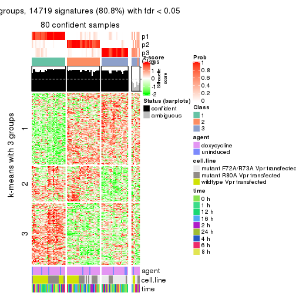
get_signatures(res, k = 4)
get_signatures(res, k = 5)
get_signatures(res, k = 6)
Signature heatmaps where rows are not scaled:
get_signatures(res, k = 2, scale_rows = FALSE)
get_signatures(res, k = 3, scale_rows = FALSE)
get_signatures(res, k = 4, scale_rows = FALSE)
get_signatures(res, k = 5, scale_rows = FALSE)
get_signatures(res, k = 6, scale_rows = FALSE)
Compare the overlap of signatures from different k:
compare_signatures(res)
get_signature() returns a data frame invisibly. TO get the list of signatures, the function
call should be assigned to a variable explicitly. In following code, if plot argument is set
to FALSE, no heatmap is plotted while only the differential analysis is performed.
# code only for demonstration
tb = get_signature(res, k = ..., plot = FALSE)
An example of the output of tb is:
#> which_row fdr mean_1 mean_2 scaled_mean_1 scaled_mean_2 km
#> 1 38 0.042760348 8.373488 9.131774 -0.5533452 0.5164555 1
#> 2 40 0.018707592 7.106213 8.469186 -0.6173731 0.5762149 1
#> 3 55 0.019134737 10.221463 11.207825 -0.6159697 0.5749050 1
#> 4 59 0.006059896 5.921854 7.869574 -0.6899429 0.6439467 1
#> 5 60 0.018055526 8.928898 10.211722 -0.6204761 0.5791110 1
#> 6 98 0.009384629 15.714769 14.887706 0.6635654 -0.6193277 2
...
The columns in tb are:
which_row: row indices corresponding to the input matrix.fdr: FDR for the differential test. mean_x: The mean value in group x.scaled_mean_x: The mean value in group x after rows are scaled.km: Row groups if k-means clustering is applied to rows.UMAP plot which shows how samples are separated.
dimension_reduction(res, k = 2, method = "UMAP")
dimension_reduction(res, k = 3, method = "UMAP")
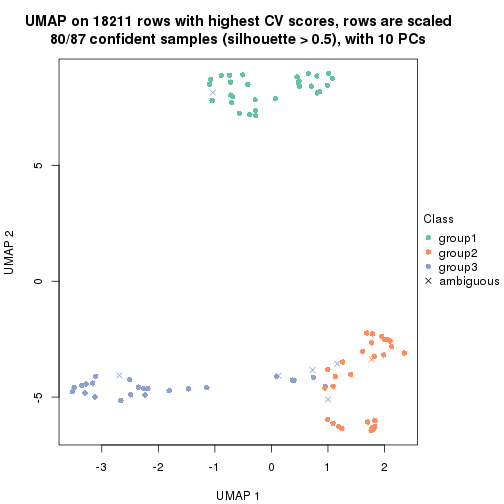
dimension_reduction(res, k = 4, method = "UMAP")
dimension_reduction(res, k = 5, method = "UMAP")
dimension_reduction(res, k = 6, method = "UMAP")

Following heatmap shows how subgroups are split when increasing k:
collect_classes(res)
Test correlation between subgroups and known annotations. If the known annotation is numeric, one-way ANOVA test is applied, and if the known annotation is discrete, chi-squared contingency table test is applied.
test_to_known_factors(res)
#> n agent(p) cell.line(p) time(p) k
#> CV:NMF 64 0.792 1.51e-08 0.897 2
#> CV:NMF 80 0.692 1.49e-08 0.996 3
#> CV:NMF 85 0.960 8.38e-13 1.000 4
#> CV:NMF 75 0.830 3.49e-13 1.000 5
#> CV:NMF 71 0.743 8.12e-13 1.000 6
If matrix rows can be associated to genes, consider to use functional_enrichment(res,
...) to perform function enrichment for the signature genes. See this vignette for more detailed explanations.
The object with results only for a single top-value method and a single partition method can be extracted as:
res = res_list["MAD", "hclust"]
# you can also extract it by
# res = res_list["MAD:hclust"]
A summary of res and all the functions that can be applied to it:
res
#> A 'ConsensusPartition' object with k = 2, 3, 4, 5, 6.
#> On a matrix with 18211 rows and 87 columns.
#> Top rows (1000, 2000, 3000, 4000, 5000) are extracted by 'MAD' method.
#> Subgroups are detected by 'hclust' method.
#> Performed in total 1250 partitions by row resampling.
#> Best k for subgroups seems to be 2.
#>
#> Following methods can be applied to this 'ConsensusPartition' object:
#> [1] "cola_report" "collect_classes" "collect_plots"
#> [4] "collect_stats" "colnames" "compare_signatures"
#> [7] "consensus_heatmap" "dimension_reduction" "functional_enrichment"
#> [10] "get_anno_col" "get_anno" "get_classes"
#> [13] "get_consensus" "get_matrix" "get_membership"
#> [16] "get_param" "get_signatures" "get_stats"
#> [19] "is_best_k" "is_stable_k" "membership_heatmap"
#> [22] "ncol" "nrow" "plot_ecdf"
#> [25] "rownames" "select_partition_number" "show"
#> [28] "suggest_best_k" "test_to_known_factors"
collect_plots() function collects all the plots made from res for all k (number of partitions)
into one single page to provide an easy and fast comparison between different k.
collect_plots(res)
The plots are:
k and the heatmap of
predicted classes for each k.k.k.k.All the plots in panels can be made by individual functions and they are plotted later in this section.
select_partition_number() produces several plots showing different
statistics for choosing “optimized” k. There are following statistics:
k;k, the area increased is defined as \(A_k - A_{k-1}\).The detailed explanations of these statistics can be found in the cola vignette.
Generally speaking, lower PAC score, higher mean silhouette score or higher
concordance corresponds to better partition. Rand index and Jaccard index
measure how similar the current partition is compared to partition with k-1.
If they are too similar, we won't accept k is better than k-1.
select_partition_number(res)

The numeric values for all these statistics can be obtained by get_stats().
get_stats(res)
#> k 1-PAC mean_silhouette concordance area_increased Rand Jaccard
#> 2 2 1.000 0.997 0.998 0.4586 0.543 0.543
#> 3 3 0.795 0.774 0.925 0.1881 0.957 0.920
#> 4 4 0.713 0.564 0.796 0.2545 0.862 0.723
#> 5 5 0.805 0.749 0.864 0.0878 0.859 0.619
#> 6 6 0.720 0.649 0.772 0.0589 0.991 0.962
suggest_best_k() suggests the best \(k\) based on these statistics. The rules are as follows:
suggest_best_k(res)
#> [1] 2
Following shows the table of the partitions (You need to click the show/hide
code output link to see it). The membership matrix (columns with name p*)
is inferred by
clue::cl_consensus()
function with the SE method. Basically the value in the membership matrix
represents the probability to belong to a certain group. The finall class
label for an item is determined with the group with highest probability it
belongs to.
In get_classes() function, the entropy is calculated from the membership
matrix and the silhouette score is calculated from the consensus matrix.
cbind(get_classes(res, k = 2), get_membership(res, k = 2))
#> class entropy silhouette p1 p2
#> GSM41890 1 0.000 1.000 1.00 0.00
#> GSM41917 1 0.000 1.000 1.00 0.00
#> GSM41936 2 0.000 0.997 0.00 1.00
#> GSM41893 1 0.000 1.000 1.00 0.00
#> GSM41920 1 0.000 1.000 1.00 0.00
#> GSM41937 2 0.000 0.997 0.00 1.00
#> GSM41896 1 0.000 1.000 1.00 0.00
#> GSM41923 1 0.000 1.000 1.00 0.00
#> GSM41938 2 0.000 0.997 0.00 1.00
#> GSM41899 1 0.000 1.000 1.00 0.00
#> GSM41925 1 0.000 1.000 1.00 0.00
#> GSM41939 2 0.000 0.997 0.00 1.00
#> GSM41902 1 0.000 1.000 1.00 0.00
#> GSM41927 1 0.000 1.000 1.00 0.00
#> GSM41940 2 0.000 0.997 0.00 1.00
#> GSM41905 1 0.000 1.000 1.00 0.00
#> GSM41929 1 0.000 1.000 1.00 0.00
#> GSM41941 2 0.000 0.997 0.00 1.00
#> GSM41908 1 0.000 1.000 1.00 0.00
#> GSM41931 1 0.000 1.000 1.00 0.00
#> GSM41942 2 0.000 0.997 0.00 1.00
#> GSM41945 2 0.000 0.997 0.00 1.00
#> GSM41911 1 0.000 1.000 1.00 0.00
#> GSM41933 1 0.000 1.000 1.00 0.00
#> GSM41943 2 0.000 0.997 0.00 1.00
#> GSM41944 2 0.000 0.997 0.00 1.00
#> GSM41876 2 0.000 0.997 0.00 1.00
#> GSM41895 2 0.000 0.997 0.00 1.00
#> GSM41898 2 0.000 0.997 0.00 1.00
#> GSM41877 2 0.000 0.997 0.00 1.00
#> GSM41901 2 0.000 0.997 0.00 1.00
#> GSM41904 2 0.000 0.997 0.00 1.00
#> GSM41878 2 0.000 0.997 0.00 1.00
#> GSM41907 2 0.000 0.997 0.00 1.00
#> GSM41910 2 0.000 0.997 0.00 1.00
#> GSM41879 2 0.000 0.997 0.00 1.00
#> GSM41913 2 0.000 0.997 0.00 1.00
#> GSM41916 2 0.000 0.997 0.00 1.00
#> GSM41880 2 0.000 0.997 0.00 1.00
#> GSM41919 2 0.000 0.997 0.00 1.00
#> GSM41922 2 0.000 0.997 0.00 1.00
#> GSM41881 2 0.000 0.997 0.00 1.00
#> GSM41924 2 0.000 0.997 0.00 1.00
#> GSM41926 2 0.000 0.997 0.00 1.00
#> GSM41869 2 0.000 0.997 0.00 1.00
#> GSM41928 2 0.584 0.837 0.14 0.86
#> GSM41930 2 0.000 0.997 0.00 1.00
#> GSM41882 2 0.000 0.997 0.00 1.00
#> GSM41932 2 0.000 0.997 0.00 1.00
#> GSM41934 2 0.000 0.997 0.00 1.00
#> GSM41860 2 0.000 0.997 0.00 1.00
#> GSM41871 2 0.000 0.997 0.00 1.00
#> GSM41875 2 0.000 0.997 0.00 1.00
#> GSM41894 1 0.000 1.000 1.00 0.00
#> GSM41897 1 0.000 1.000 1.00 0.00
#> GSM41861 2 0.000 0.997 0.00 1.00
#> GSM41872 2 0.000 0.997 0.00 1.00
#> GSM41900 1 0.000 1.000 1.00 0.00
#> GSM41862 2 0.000 0.997 0.00 1.00
#> GSM41873 2 0.000 0.997 0.00 1.00
#> GSM41903 1 0.000 1.000 1.00 0.00
#> GSM41863 2 0.000 0.997 0.00 1.00
#> GSM41883 2 0.000 0.997 0.00 1.00
#> GSM41906 1 0.000 1.000 1.00 0.00
#> GSM41864 2 0.000 0.997 0.00 1.00
#> GSM41884 2 0.000 0.997 0.00 1.00
#> GSM41909 1 0.000 1.000 1.00 0.00
#> GSM41912 1 0.000 1.000 1.00 0.00
#> GSM41865 2 0.000 0.997 0.00 1.00
#> GSM41885 2 0.000 0.997 0.00 1.00
#> GSM41915 1 0.000 1.000 1.00 0.00
#> GSM41866 2 0.000 0.997 0.00 1.00
#> GSM41886 2 0.000 0.997 0.00 1.00
#> GSM41918 1 0.000 1.000 1.00 0.00
#> GSM41867 2 0.000 0.997 0.00 1.00
#> GSM41868 2 0.000 0.997 0.00 1.00
#> GSM41921 1 0.000 1.000 1.00 0.00
#> GSM41887 1 0.000 1.000 1.00 0.00
#> GSM41914 1 0.000 1.000 1.00 0.00
#> GSM41935 2 0.000 0.997 0.00 1.00
#> GSM41874 2 0.000 0.997 0.00 1.00
#> GSM41889 2 0.000 0.997 0.00 1.00
#> GSM41892 2 0.000 0.997 0.00 1.00
#> GSM41859 2 0.000 0.997 0.00 1.00
#> GSM41870 2 0.000 0.997 0.00 1.00
#> GSM41888 1 0.000 1.000 1.00 0.00
#> GSM41891 1 0.000 1.000 1.00 0.00
cbind(get_classes(res, k = 3), get_membership(res, k = 3))
#> class entropy silhouette p1 p2 p3
#> GSM41890 1 0.0000 1.000 1 0.000 0.000
#> GSM41917 1 0.0000 1.000 1 0.000 0.000
#> GSM41936 2 0.0000 0.843 0 1.000 0.000
#> GSM41893 1 0.0000 1.000 1 0.000 0.000
#> GSM41920 1 0.0000 1.000 1 0.000 0.000
#> GSM41937 2 0.0000 0.843 0 1.000 0.000
#> GSM41896 1 0.0000 1.000 1 0.000 0.000
#> GSM41923 1 0.0000 1.000 1 0.000 0.000
#> GSM41938 2 0.0000 0.843 0 1.000 0.000
#> GSM41899 1 0.0000 1.000 1 0.000 0.000
#> GSM41925 1 0.0000 1.000 1 0.000 0.000
#> GSM41939 2 0.0000 0.843 0 1.000 0.000
#> GSM41902 1 0.0000 1.000 1 0.000 0.000
#> GSM41927 1 0.0000 1.000 1 0.000 0.000
#> GSM41940 2 0.0000 0.843 0 1.000 0.000
#> GSM41905 1 0.0000 1.000 1 0.000 0.000
#> GSM41929 1 0.0000 1.000 1 0.000 0.000
#> GSM41941 2 0.0000 0.843 0 1.000 0.000
#> GSM41908 1 0.0000 1.000 1 0.000 0.000
#> GSM41931 1 0.0000 1.000 1 0.000 0.000
#> GSM41942 2 0.0000 0.843 0 1.000 0.000
#> GSM41945 2 0.0000 0.843 0 1.000 0.000
#> GSM41911 1 0.0000 1.000 1 0.000 0.000
#> GSM41933 1 0.0000 1.000 1 0.000 0.000
#> GSM41943 2 0.0000 0.843 0 1.000 0.000
#> GSM41944 2 0.0000 0.843 0 1.000 0.000
#> GSM41876 2 0.0000 0.843 0 1.000 0.000
#> GSM41895 2 0.3816 0.748 0 0.852 0.148
#> GSM41898 2 0.6045 0.109 0 0.620 0.380
#> GSM41877 2 0.0592 0.840 0 0.988 0.012
#> GSM41901 2 0.4178 0.713 0 0.828 0.172
#> GSM41904 2 0.1643 0.827 0 0.956 0.044
#> GSM41878 2 0.1031 0.835 0 0.976 0.024
#> GSM41907 2 0.4178 0.713 0 0.828 0.172
#> GSM41910 3 0.6309 0.154 0 0.496 0.504
#> GSM41879 2 0.1031 0.835 0 0.976 0.024
#> GSM41913 2 0.4178 0.713 0 0.828 0.172
#> GSM41916 2 0.6291 -0.370 0 0.532 0.468
#> GSM41880 2 0.0000 0.843 0 1.000 0.000
#> GSM41919 2 0.6299 -0.395 0 0.524 0.476
#> GSM41922 2 0.6291 -0.364 0 0.532 0.468
#> GSM41881 2 0.1411 0.826 0 0.964 0.036
#> GSM41924 2 0.4178 0.713 0 0.828 0.172
#> GSM41926 3 0.6267 0.355 0 0.452 0.548
#> GSM41869 2 0.0237 0.843 0 0.996 0.004
#> GSM41928 3 0.0000 0.425 0 0.000 1.000
#> GSM41930 2 0.6308 -0.443 0 0.508 0.492
#> GSM41882 2 0.5706 0.305 0 0.680 0.320
#> GSM41932 2 0.4178 0.713 0 0.828 0.172
#> GSM41934 2 0.6309 -0.456 0 0.504 0.496
#> GSM41860 2 0.3267 0.773 0 0.884 0.116
#> GSM41871 2 0.0237 0.843 0 0.996 0.004
#> GSM41875 2 0.1163 0.832 0 0.972 0.028
#> GSM41894 1 0.0000 1.000 1 0.000 0.000
#> GSM41897 1 0.0000 1.000 1 0.000 0.000
#> GSM41861 2 0.3267 0.773 0 0.884 0.116
#> GSM41872 2 0.0892 0.837 0 0.980 0.020
#> GSM41900 1 0.0000 1.000 1 0.000 0.000
#> GSM41862 2 0.3038 0.783 0 0.896 0.104
#> GSM41873 2 0.0892 0.837 0 0.980 0.020
#> GSM41903 1 0.0000 1.000 1 0.000 0.000
#> GSM41863 2 0.1031 0.840 0 0.976 0.024
#> GSM41883 2 0.0237 0.843 0 0.996 0.004
#> GSM41906 1 0.0000 1.000 1 0.000 0.000
#> GSM41864 2 0.3038 0.783 0 0.896 0.104
#> GSM41884 2 0.0237 0.843 0 0.996 0.004
#> GSM41909 1 0.0000 1.000 1 0.000 0.000
#> GSM41912 1 0.0000 1.000 1 0.000 0.000
#> GSM41865 2 0.3116 0.793 0 0.892 0.108
#> GSM41885 2 0.0237 0.843 0 0.996 0.004
#> GSM41915 1 0.0000 1.000 1 0.000 0.000
#> GSM41866 2 0.1031 0.840 0 0.976 0.024
#> GSM41886 2 0.0237 0.843 0 0.996 0.004
#> GSM41918 1 0.0000 1.000 1 0.000 0.000
#> GSM41867 2 0.1163 0.832 0 0.972 0.028
#> GSM41868 2 0.1411 0.826 0 0.964 0.036
#> GSM41921 1 0.0000 1.000 1 0.000 0.000
#> GSM41887 1 0.0000 1.000 1 0.000 0.000
#> GSM41914 1 0.0000 1.000 1 0.000 0.000
#> GSM41935 2 0.0000 0.843 0 1.000 0.000
#> GSM41874 2 0.1411 0.826 0 0.964 0.036
#> GSM41889 2 0.3816 0.748 0 0.852 0.148
#> GSM41892 2 0.4178 0.713 0 0.828 0.172
#> GSM41859 2 0.4555 0.667 0 0.800 0.200
#> GSM41870 2 0.0237 0.843 0 0.996 0.004
#> GSM41888 1 0.0000 1.000 1 0.000 0.000
#> GSM41891 1 0.0000 1.000 1 0.000 0.000
cbind(get_classes(res, k = 4), get_membership(res, k = 4))
#> class entropy silhouette p1 p2 p3 p4
#> GSM41890 1 0.0000 1.0000 1 0.000 0.000 0.000
#> GSM41917 1 0.0000 1.0000 1 0.000 0.000 0.000
#> GSM41936 4 0.5016 0.5212 0 0.396 0.004 0.600
#> GSM41893 1 0.0000 1.0000 1 0.000 0.000 0.000
#> GSM41920 1 0.0000 1.0000 1 0.000 0.000 0.000
#> GSM41937 4 0.4800 0.5814 0 0.340 0.004 0.656
#> GSM41896 1 0.0000 1.0000 1 0.000 0.000 0.000
#> GSM41923 1 0.0000 1.0000 1 0.000 0.000 0.000
#> GSM41938 4 0.4781 0.5847 0 0.336 0.004 0.660
#> GSM41899 1 0.0000 1.0000 1 0.000 0.000 0.000
#> GSM41925 1 0.0000 1.0000 1 0.000 0.000 0.000
#> GSM41939 4 0.5016 0.5212 0 0.396 0.004 0.600
#> GSM41902 1 0.0000 1.0000 1 0.000 0.000 0.000
#> GSM41927 1 0.0000 1.0000 1 0.000 0.000 0.000
#> GSM41940 4 0.0592 0.7641 0 0.016 0.000 0.984
#> GSM41905 1 0.0000 1.0000 1 0.000 0.000 0.000
#> GSM41929 1 0.0000 1.0000 1 0.000 0.000 0.000
#> GSM41941 4 0.0592 0.7638 0 0.016 0.000 0.984
#> GSM41908 1 0.0000 1.0000 1 0.000 0.000 0.000
#> GSM41931 1 0.0000 1.0000 1 0.000 0.000 0.000
#> GSM41942 4 0.0707 0.7641 0 0.020 0.000 0.980
#> GSM41945 4 0.0336 0.7610 0 0.008 0.000 0.992
#> GSM41911 1 0.0000 1.0000 1 0.000 0.000 0.000
#> GSM41933 1 0.0000 1.0000 1 0.000 0.000 0.000
#> GSM41943 4 0.0592 0.7641 0 0.016 0.000 0.984
#> GSM41944 4 0.0336 0.7610 0 0.008 0.000 0.992
#> GSM41876 2 0.1109 0.3223 0 0.968 0.004 0.028
#> GSM41895 2 0.3958 0.2457 0 0.824 0.144 0.032
#> GSM41898 2 0.4950 -0.2155 0 0.620 0.376 0.004
#> GSM41877 2 0.4990 0.4708 0 0.640 0.008 0.352
#> GSM41901 2 0.3718 0.2150 0 0.820 0.168 0.012
#> GSM41904 2 0.5682 0.4518 0 0.612 0.036 0.352
#> GSM41878 2 0.5428 0.4552 0 0.600 0.020 0.380
#> GSM41907 2 0.3925 0.1983 0 0.808 0.176 0.016
#> GSM41910 3 0.5000 0.3384 0 0.500 0.500 0.000
#> GSM41879 2 0.5428 0.4549 0 0.600 0.020 0.380
#> GSM41913 2 0.3925 0.1983 0 0.808 0.176 0.016
#> GSM41916 2 0.5396 -0.5062 0 0.524 0.464 0.012
#> GSM41880 2 0.1109 0.3223 0 0.968 0.004 0.028
#> GSM41919 2 0.5693 -0.5110 0 0.504 0.472 0.024
#> GSM41922 2 0.5396 -0.4992 0 0.524 0.464 0.012
#> GSM41881 2 0.5630 0.4523 0 0.608 0.032 0.360
#> GSM41924 2 0.3925 0.1983 0 0.808 0.176 0.016
#> GSM41926 3 0.5650 0.3969 0 0.432 0.544 0.024
#> GSM41869 2 0.4543 0.4808 0 0.676 0.000 0.324
#> GSM41928 3 0.0188 0.2605 0 0.004 0.996 0.000
#> GSM41930 2 0.5607 -0.5472 0 0.492 0.488 0.020
#> GSM41882 2 0.6280 -0.0965 0 0.604 0.316 0.080
#> GSM41932 2 0.3718 0.2150 0 0.820 0.168 0.012
#> GSM41934 3 0.5607 0.4023 0 0.488 0.492 0.020
#> GSM41860 2 0.6016 0.1959 0 0.680 0.112 0.208
#> GSM41871 2 0.4522 0.4809 0 0.680 0.000 0.320
#> GSM41875 2 0.5582 0.4388 0 0.576 0.024 0.400
#> GSM41894 1 0.0000 1.0000 1 0.000 0.000 0.000
#> GSM41897 1 0.0000 1.0000 1 0.000 0.000 0.000
#> GSM41861 2 0.6016 0.1959 0 0.680 0.112 0.208
#> GSM41872 2 0.5313 0.4597 0 0.608 0.016 0.376
#> GSM41900 1 0.0000 1.0000 1 0.000 0.000 0.000
#> GSM41862 2 0.6110 0.1967 0 0.660 0.100 0.240
#> GSM41873 2 0.5313 0.4597 0 0.608 0.016 0.376
#> GSM41903 1 0.0000 1.0000 1 0.000 0.000 0.000
#> GSM41863 2 0.5483 0.3011 0 0.536 0.016 0.448
#> GSM41883 2 0.4522 0.4809 0 0.680 0.000 0.320
#> GSM41906 1 0.0000 1.0000 1 0.000 0.000 0.000
#> GSM41864 2 0.6110 0.1967 0 0.660 0.100 0.240
#> GSM41884 2 0.4477 0.4793 0 0.688 0.000 0.312
#> GSM41909 1 0.0000 1.0000 1 0.000 0.000 0.000
#> GSM41912 1 0.0000 1.0000 1 0.000 0.000 0.000
#> GSM41865 2 0.6840 0.2921 0 0.468 0.100 0.432
#> GSM41885 2 0.4477 0.4793 0 0.688 0.000 0.312
#> GSM41915 1 0.0000 1.0000 1 0.000 0.000 0.000
#> GSM41866 2 0.5483 0.3011 0 0.536 0.016 0.448
#> GSM41886 2 0.4543 0.4808 0 0.676 0.000 0.324
#> GSM41918 1 0.0000 1.0000 1 0.000 0.000 0.000
#> GSM41867 2 0.5592 0.4365 0 0.572 0.024 0.404
#> GSM41868 2 0.5746 0.4355 0 0.572 0.032 0.396
#> GSM41921 1 0.0000 1.0000 1 0.000 0.000 0.000
#> GSM41887 1 0.0000 1.0000 1 0.000 0.000 0.000
#> GSM41914 1 0.0000 1.0000 1 0.000 0.000 0.000
#> GSM41935 4 0.1474 0.7096 0 0.052 0.000 0.948
#> GSM41874 2 0.5630 0.4523 0 0.608 0.032 0.360
#> GSM41889 2 0.3958 0.2457 0 0.824 0.144 0.032
#> GSM41892 2 0.3925 0.1983 0 0.808 0.176 0.016
#> GSM41859 2 0.4348 0.1788 0 0.780 0.196 0.024
#> GSM41870 2 0.4522 0.4809 0 0.680 0.000 0.320
#> GSM41888 1 0.0000 1.0000 1 0.000 0.000 0.000
#> GSM41891 1 0.0000 1.0000 1 0.000 0.000 0.000
cbind(get_classes(res, k = 5), get_membership(res, k = 5))
#> class entropy silhouette p1 p2 p3 p4 p5
#> GSM41890 1 0.0000 1.0000 1 0.000 0.000 0.000 0.000
#> GSM41917 1 0.0000 1.0000 1 0.000 0.000 0.000 0.000
#> GSM41936 4 0.4676 0.4360 0 0.012 0.392 0.592 0.004
#> GSM41893 1 0.0000 1.0000 1 0.000 0.000 0.000 0.000
#> GSM41920 1 0.0000 1.0000 1 0.000 0.000 0.000 0.000
#> GSM41937 4 0.4474 0.5388 0 0.012 0.332 0.652 0.004
#> GSM41896 1 0.0000 1.0000 1 0.000 0.000 0.000 0.000
#> GSM41923 1 0.0000 1.0000 1 0.000 0.000 0.000 0.000
#> GSM41938 4 0.4457 0.5440 0 0.012 0.328 0.656 0.004
#> GSM41899 1 0.0000 1.0000 1 0.000 0.000 0.000 0.000
#> GSM41925 1 0.0000 1.0000 1 0.000 0.000 0.000 0.000
#> GSM41939 4 0.4676 0.4360 0 0.012 0.392 0.592 0.004
#> GSM41902 1 0.0000 1.0000 1 0.000 0.000 0.000 0.000
#> GSM41927 1 0.0000 1.0000 1 0.000 0.000 0.000 0.000
#> GSM41940 4 0.0290 0.7995 0 0.008 0.000 0.992 0.000
#> GSM41905 1 0.0000 1.0000 1 0.000 0.000 0.000 0.000
#> GSM41929 1 0.0000 1.0000 1 0.000 0.000 0.000 0.000
#> GSM41941 4 0.0566 0.7994 0 0.012 0.004 0.984 0.000
#> GSM41908 1 0.0000 1.0000 1 0.000 0.000 0.000 0.000
#> GSM41931 1 0.0000 1.0000 1 0.000 0.000 0.000 0.000
#> GSM41942 4 0.0451 0.7996 0 0.008 0.004 0.988 0.000
#> GSM41945 4 0.0290 0.7990 0 0.008 0.000 0.992 0.000
#> GSM41911 1 0.0000 1.0000 1 0.000 0.000 0.000 0.000
#> GSM41933 1 0.0000 1.0000 1 0.000 0.000 0.000 0.000
#> GSM41943 4 0.0290 0.7995 0 0.008 0.000 0.992 0.000
#> GSM41944 4 0.0290 0.7990 0 0.008 0.000 0.992 0.000
#> GSM41876 2 0.4491 0.2465 0 0.648 0.336 0.012 0.004
#> GSM41895 3 0.4211 0.5323 0 0.216 0.752 0.016 0.016
#> GSM41898 3 0.3491 0.4038 0 0.004 0.768 0.000 0.228
#> GSM41877 2 0.2352 0.7881 0 0.912 0.032 0.048 0.008
#> GSM41901 3 0.0794 0.6892 0 0.028 0.972 0.000 0.000
#> GSM41904 2 0.3586 0.7572 0 0.848 0.048 0.080 0.024
#> GSM41878 2 0.2297 0.7881 0 0.912 0.008 0.060 0.020
#> GSM41907 3 0.0162 0.6850 0 0.000 0.996 0.000 0.004
#> GSM41910 3 0.4505 0.0486 0 0.012 0.604 0.000 0.384
#> GSM41879 2 0.2476 0.7870 0 0.904 0.012 0.064 0.020
#> GSM41913 3 0.0162 0.6850 0 0.000 0.996 0.000 0.004
#> GSM41916 5 0.6917 0.6821 0 0.296 0.312 0.004 0.388
#> GSM41880 2 0.4491 0.2465 0 0.648 0.336 0.012 0.004
#> GSM41919 5 0.6900 0.7079 0 0.328 0.240 0.008 0.424
#> GSM41922 5 0.6928 0.6617 0 0.292 0.328 0.004 0.376
#> GSM41881 2 0.3221 0.7716 0 0.868 0.032 0.076 0.024
#> GSM41924 3 0.0162 0.6850 0 0.000 0.996 0.000 0.004
#> GSM41926 5 0.5406 0.4756 0 0.432 0.040 0.008 0.520
#> GSM41869 2 0.0451 0.7826 0 0.988 0.008 0.004 0.000
#> GSM41928 5 0.0162 0.2997 0 0.000 0.004 0.000 0.996
#> GSM41930 5 0.6921 0.7340 0 0.324 0.248 0.008 0.420
#> GSM41882 2 0.7740 -0.5065 0 0.364 0.336 0.060 0.240
#> GSM41932 3 0.0794 0.6892 0 0.028 0.972 0.000 0.000
#> GSM41934 5 0.6858 0.7355 0 0.340 0.224 0.008 0.428
#> GSM41860 3 0.5039 0.5991 0 0.116 0.700 0.184 0.000
#> GSM41871 2 0.0290 0.7814 0 0.992 0.008 0.000 0.000
#> GSM41875 2 0.2233 0.7781 0 0.904 0.000 0.080 0.016
#> GSM41894 1 0.0000 1.0000 1 0.000 0.000 0.000 0.000
#> GSM41897 1 0.0000 1.0000 1 0.000 0.000 0.000 0.000
#> GSM41861 3 0.5039 0.5991 0 0.116 0.700 0.184 0.000
#> GSM41872 2 0.2312 0.7893 0 0.912 0.012 0.060 0.016
#> GSM41900 1 0.0000 1.0000 1 0.000 0.000 0.000 0.000
#> GSM41862 3 0.5714 0.5409 0 0.164 0.624 0.212 0.000
#> GSM41873 2 0.2312 0.7893 0 0.912 0.012 0.060 0.016
#> GSM41903 1 0.0000 1.0000 1 0.000 0.000 0.000 0.000
#> GSM41863 2 0.5890 0.3353 0 0.612 0.152 0.232 0.004
#> GSM41883 2 0.0290 0.7814 0 0.992 0.008 0.000 0.000
#> GSM41906 1 0.0000 1.0000 1 0.000 0.000 0.000 0.000
#> GSM41864 3 0.5714 0.5409 0 0.164 0.624 0.212 0.000
#> GSM41884 2 0.0510 0.7779 0 0.984 0.016 0.000 0.000
#> GSM41909 1 0.0000 1.0000 1 0.000 0.000 0.000 0.000
#> GSM41912 1 0.0000 1.0000 1 0.000 0.000 0.000 0.000
#> GSM41865 3 0.6913 0.1573 0 0.368 0.392 0.232 0.008
#> GSM41885 2 0.0510 0.7779 0 0.984 0.016 0.000 0.000
#> GSM41915 1 0.0000 1.0000 1 0.000 0.000 0.000 0.000
#> GSM41866 2 0.5890 0.3353 0 0.612 0.152 0.232 0.004
#> GSM41886 2 0.0451 0.7826 0 0.988 0.008 0.004 0.000
#> GSM41918 1 0.0000 1.0000 1 0.000 0.000 0.000 0.000
#> GSM41867 2 0.2351 0.7755 0 0.896 0.000 0.088 0.016
#> GSM41868 2 0.2362 0.7768 0 0.900 0.000 0.076 0.024
#> GSM41921 1 0.0000 1.0000 1 0.000 0.000 0.000 0.000
#> GSM41887 1 0.0000 1.0000 1 0.000 0.000 0.000 0.000
#> GSM41914 1 0.0000 1.0000 1 0.000 0.000 0.000 0.000
#> GSM41935 4 0.1502 0.7595 0 0.056 0.004 0.940 0.000
#> GSM41874 2 0.3221 0.7716 0 0.868 0.032 0.076 0.024
#> GSM41889 3 0.4211 0.5323 0 0.216 0.752 0.016 0.016
#> GSM41892 3 0.0162 0.6850 0 0.000 0.996 0.000 0.004
#> GSM41859 3 0.3790 0.5879 0 0.136 0.816 0.012 0.036
#> GSM41870 2 0.0290 0.7814 0 0.992 0.008 0.000 0.000
#> GSM41888 1 0.0000 1.0000 1 0.000 0.000 0.000 0.000
#> GSM41891 1 0.0000 1.0000 1 0.000 0.000 0.000 0.000
cbind(get_classes(res, k = 6), get_membership(res, k = 6))
#> class entropy silhouette p1 p2 p3 p4 p5 p6
#> GSM41890 1 0.1863 0.855 0.896 0.000 0.000 0.000 0.104 0.000
#> GSM41917 1 0.2092 0.845 0.876 0.000 0.000 0.000 0.124 0.000
#> GSM41936 4 0.5553 0.511 0.000 0.004 0.308 0.584 0.076 0.028
#> GSM41893 1 0.2378 0.849 0.848 0.000 0.000 0.000 0.152 0.000
#> GSM41920 1 0.2092 0.845 0.876 0.000 0.000 0.000 0.124 0.000
#> GSM41937 4 0.5231 0.598 0.000 0.004 0.256 0.644 0.068 0.028
#> GSM41896 1 0.1814 0.854 0.900 0.000 0.000 0.000 0.100 0.000
#> GSM41923 1 0.0260 0.872 0.992 0.000 0.000 0.000 0.008 0.000
#> GSM41938 4 0.5210 0.602 0.000 0.004 0.252 0.648 0.068 0.028
#> GSM41899 1 0.0146 0.872 0.996 0.000 0.000 0.000 0.004 0.000
#> GSM41925 1 0.0260 0.872 0.992 0.000 0.000 0.000 0.008 0.000
#> GSM41939 4 0.5553 0.511 0.000 0.004 0.308 0.584 0.076 0.028
#> GSM41902 1 0.2178 0.841 0.868 0.000 0.000 0.000 0.132 0.000
#> GSM41927 1 0.0260 0.872 0.992 0.000 0.000 0.000 0.008 0.000
#> GSM41940 4 0.0146 0.779 0.000 0.004 0.000 0.996 0.000 0.000
#> GSM41905 1 0.0146 0.872 0.996 0.000 0.000 0.000 0.004 0.000
#> GSM41929 1 0.0260 0.872 0.992 0.000 0.000 0.000 0.008 0.000
#> GSM41941 4 0.0436 0.780 0.000 0.004 0.004 0.988 0.004 0.000
#> GSM41908 1 0.2135 0.842 0.872 0.000 0.000 0.000 0.128 0.000
#> GSM41931 1 0.0632 0.872 0.976 0.000 0.000 0.000 0.024 0.000
#> GSM41942 4 0.0291 0.780 0.000 0.004 0.004 0.992 0.000 0.000
#> GSM41945 4 0.0146 0.778 0.000 0.000 0.000 0.996 0.004 0.000
#> GSM41911 1 0.2178 0.841 0.868 0.000 0.000 0.000 0.132 0.000
#> GSM41933 1 0.0632 0.872 0.976 0.000 0.000 0.000 0.024 0.000
#> GSM41943 4 0.0146 0.779 0.000 0.004 0.000 0.996 0.000 0.000
#> GSM41944 4 0.0146 0.778 0.000 0.000 0.000 0.996 0.004 0.000
#> GSM41876 2 0.5117 0.202 0.000 0.656 0.244 0.004 0.076 0.020
#> GSM41895 3 0.4205 0.499 0.000 0.076 0.760 0.016 0.000 0.148
#> GSM41898 3 0.3189 0.323 0.000 0.004 0.760 0.000 0.000 0.236
#> GSM41877 2 0.4908 0.605 0.000 0.644 0.008 0.048 0.012 0.288
#> GSM41901 3 0.0603 0.661 0.000 0.016 0.980 0.000 0.000 0.004
#> GSM41904 2 0.6009 0.501 0.000 0.444 0.036 0.076 0.008 0.436
#> GSM41878 2 0.4688 0.604 0.000 0.636 0.000 0.060 0.004 0.300
#> GSM41907 3 0.0363 0.659 0.000 0.000 0.988 0.000 0.012 0.000
#> GSM41910 3 0.3890 -0.114 0.000 0.004 0.596 0.000 0.000 0.400
#> GSM41879 2 0.4803 0.601 0.000 0.616 0.000 0.064 0.004 0.316
#> GSM41913 3 0.0363 0.659 0.000 0.000 0.988 0.000 0.012 0.000
#> GSM41916 6 0.4147 0.727 0.000 0.024 0.304 0.004 0.000 0.668
#> GSM41880 2 0.5117 0.202 0.000 0.656 0.244 0.004 0.076 0.020
#> GSM41919 6 0.5279 0.669 0.000 0.040 0.248 0.008 0.052 0.652
#> GSM41922 6 0.4214 0.718 0.000 0.024 0.320 0.004 0.000 0.652
#> GSM41881 2 0.5719 0.518 0.000 0.460 0.020 0.072 0.008 0.440
#> GSM41924 3 0.0363 0.659 0.000 0.000 0.988 0.000 0.012 0.000
#> GSM41926 6 0.2302 0.422 0.000 0.024 0.028 0.008 0.028 0.912
#> GSM41869 2 0.0146 0.591 0.000 0.996 0.000 0.004 0.000 0.000
#> GSM41928 5 0.3823 0.000 0.000 0.000 0.000 0.000 0.564 0.436
#> GSM41930 6 0.3966 0.741 0.000 0.028 0.236 0.008 0.000 0.728
#> GSM41882 6 0.6066 0.426 0.000 0.080 0.328 0.056 0.004 0.532
#> GSM41932 3 0.0603 0.661 0.000 0.016 0.980 0.000 0.000 0.004
#> GSM41934 6 0.3806 0.726 0.000 0.028 0.212 0.008 0.000 0.752
#> GSM41860 3 0.5455 0.562 0.000 0.104 0.672 0.180 0.016 0.028
#> GSM41871 2 0.0000 0.591 0.000 1.000 0.000 0.000 0.000 0.000
#> GSM41875 2 0.5225 0.536 0.000 0.496 0.000 0.080 0.004 0.420
#> GSM41894 1 0.2941 0.807 0.780 0.000 0.000 0.000 0.220 0.000
#> GSM41897 1 0.2941 0.807 0.780 0.000 0.000 0.000 0.220 0.000
#> GSM41861 3 0.5455 0.562 0.000 0.104 0.672 0.180 0.016 0.028
#> GSM41872 2 0.4921 0.578 0.000 0.564 0.000 0.060 0.004 0.372
#> GSM41900 1 0.2697 0.826 0.812 0.000 0.000 0.000 0.188 0.000
#> GSM41862 3 0.6290 0.503 0.000 0.116 0.596 0.208 0.016 0.064
#> GSM41873 2 0.4921 0.578 0.000 0.564 0.000 0.060 0.004 0.372
#> GSM41903 1 0.2941 0.807 0.780 0.000 0.000 0.000 0.220 0.000
#> GSM41863 2 0.7689 0.285 0.000 0.404 0.128 0.228 0.020 0.220
#> GSM41883 2 0.0000 0.591 0.000 1.000 0.000 0.000 0.000 0.000
#> GSM41906 1 0.2941 0.807 0.780 0.000 0.000 0.000 0.220 0.000
#> GSM41864 3 0.6290 0.503 0.000 0.116 0.596 0.208 0.016 0.064
#> GSM41884 2 0.0291 0.587 0.000 0.992 0.000 0.000 0.004 0.004
#> GSM41909 1 0.2941 0.807 0.780 0.000 0.000 0.000 0.220 0.000
#> GSM41912 1 0.2941 0.807 0.780 0.000 0.000 0.000 0.220 0.000
#> GSM41865 3 0.7452 0.150 0.000 0.304 0.372 0.228 0.016 0.080
#> GSM41885 2 0.0291 0.587 0.000 0.992 0.000 0.000 0.004 0.004
#> GSM41915 1 0.2941 0.807 0.780 0.000 0.000 0.000 0.220 0.000
#> GSM41866 2 0.7689 0.285 0.000 0.404 0.128 0.228 0.020 0.220
#> GSM41886 2 0.0146 0.591 0.000 0.996 0.000 0.004 0.000 0.000
#> GSM41918 1 0.2697 0.826 0.812 0.000 0.000 0.000 0.188 0.000
#> GSM41867 2 0.5403 0.532 0.000 0.484 0.000 0.088 0.008 0.420
#> GSM41868 2 0.5194 0.529 0.000 0.488 0.000 0.076 0.004 0.432
#> GSM41921 1 0.2941 0.807 0.780 0.000 0.000 0.000 0.220 0.000
#> GSM41887 1 0.1863 0.855 0.896 0.000 0.000 0.000 0.104 0.000
#> GSM41914 1 0.2178 0.841 0.868 0.000 0.000 0.000 0.132 0.000
#> GSM41935 4 0.1546 0.738 0.000 0.020 0.004 0.944 0.004 0.028
#> GSM41874 2 0.5719 0.518 0.000 0.460 0.020 0.072 0.008 0.440
#> GSM41889 3 0.4205 0.499 0.000 0.076 0.760 0.016 0.000 0.148
#> GSM41892 3 0.0363 0.659 0.000 0.000 0.988 0.000 0.012 0.000
#> GSM41859 3 0.3134 0.540 0.000 0.016 0.824 0.012 0.000 0.148
#> GSM41870 2 0.0000 0.591 0.000 1.000 0.000 0.000 0.000 0.000
#> GSM41888 1 0.1007 0.869 0.956 0.000 0.000 0.000 0.044 0.000
#> GSM41891 1 0.2697 0.826 0.812 0.000 0.000 0.000 0.188 0.000
Heatmaps for the consensus matrix. It visualizes the probability of two samples to be in a same group.
consensus_heatmap(res, k = 2)
consensus_heatmap(res, k = 3)
consensus_heatmap(res, k = 4)
consensus_heatmap(res, k = 5)
consensus_heatmap(res, k = 6)
Heatmaps for the membership of samples in all partitions to see how consistent they are:
membership_heatmap(res, k = 2)
membership_heatmap(res, k = 3)
membership_heatmap(res, k = 4)
membership_heatmap(res, k = 5)
membership_heatmap(res, k = 6)
As soon as we have had the classes for columns, we can look for signatures which are significantly different between classes which can be candidate marks for certain classes. Following are the heatmaps for signatures.
Signature heatmaps where rows are scaled:
get_signatures(res, k = 2)
get_signatures(res, k = 3)
get_signatures(res, k = 4)
get_signatures(res, k = 5)
get_signatures(res, k = 6)
Signature heatmaps where rows are not scaled:
get_signatures(res, k = 2, scale_rows = FALSE)
get_signatures(res, k = 3, scale_rows = FALSE)
get_signatures(res, k = 4, scale_rows = FALSE)
get_signatures(res, k = 5, scale_rows = FALSE)
get_signatures(res, k = 6, scale_rows = FALSE)
Compare the overlap of signatures from different k:
compare_signatures(res)
get_signature() returns a data frame invisibly. TO get the list of signatures, the function
call should be assigned to a variable explicitly. In following code, if plot argument is set
to FALSE, no heatmap is plotted while only the differential analysis is performed.
# code only for demonstration
tb = get_signature(res, k = ..., plot = FALSE)
An example of the output of tb is:
#> which_row fdr mean_1 mean_2 scaled_mean_1 scaled_mean_2 km
#> 1 38 0.042760348 8.373488 9.131774 -0.5533452 0.5164555 1
#> 2 40 0.018707592 7.106213 8.469186 -0.6173731 0.5762149 1
#> 3 55 0.019134737 10.221463 11.207825 -0.6159697 0.5749050 1
#> 4 59 0.006059896 5.921854 7.869574 -0.6899429 0.6439467 1
#> 5 60 0.018055526 8.928898 10.211722 -0.6204761 0.5791110 1
#> 6 98 0.009384629 15.714769 14.887706 0.6635654 -0.6193277 2
...
The columns in tb are:
which_row: row indices corresponding to the input matrix.fdr: FDR for the differential test. mean_x: The mean value in group x.scaled_mean_x: The mean value in group x after rows are scaled.km: Row groups if k-means clustering is applied to rows.UMAP plot which shows how samples are separated.
dimension_reduction(res, k = 2, method = "UMAP")

dimension_reduction(res, k = 3, method = "UMAP")
dimension_reduction(res, k = 4, method = "UMAP")
dimension_reduction(res, k = 5, method = "UMAP")
dimension_reduction(res, k = 6, method = "UMAP")
Following heatmap shows how subgroups are split when increasing k:
collect_classes(res)
Test correlation between subgroups and known annotations. If the known annotation is numeric, one-way ANOVA test is applied, and if the known annotation is discrete, chi-squared contingency table test is applied.
test_to_known_factors(res)
#> n agent(p) cell.line(p) time(p) k
#> MAD:hclust 87 0.971 5.49e-06 1.000 2
#> MAD:hclust 77 1.000 1.70e-04 1.000 3
#> MAD:hclust 41 1.000 3.51e-02 0.996 4
#> MAD:hclust 75 0.744 9.84e-11 0.991 5
#> MAD:hclust 75 0.873 7.13e-11 0.999 6
If matrix rows can be associated to genes, consider to use functional_enrichment(res,
...) to perform function enrichment for the signature genes. See this vignette for more detailed explanations.
The object with results only for a single top-value method and a single partition method can be extracted as:
res = res_list["MAD", "kmeans"]
# you can also extract it by
# res = res_list["MAD:kmeans"]
A summary of res and all the functions that can be applied to it:
res
#> A 'ConsensusPartition' object with k = 2, 3, 4, 5, 6.
#> On a matrix with 18211 rows and 87 columns.
#> Top rows (1000, 2000, 3000, 4000, 5000) are extracted by 'MAD' method.
#> Subgroups are detected by 'kmeans' method.
#> Performed in total 1250 partitions by row resampling.
#> Best k for subgroups seems to be 2.
#>
#> Following methods can be applied to this 'ConsensusPartition' object:
#> [1] "cola_report" "collect_classes" "collect_plots"
#> [4] "collect_stats" "colnames" "compare_signatures"
#> [7] "consensus_heatmap" "dimension_reduction" "functional_enrichment"
#> [10] "get_anno_col" "get_anno" "get_classes"
#> [13] "get_consensus" "get_matrix" "get_membership"
#> [16] "get_param" "get_signatures" "get_stats"
#> [19] "is_best_k" "is_stable_k" "membership_heatmap"
#> [22] "ncol" "nrow" "plot_ecdf"
#> [25] "rownames" "select_partition_number" "show"
#> [28] "suggest_best_k" "test_to_known_factors"
collect_plots() function collects all the plots made from res for all k (number of partitions)
into one single page to provide an easy and fast comparison between different k.
collect_plots(res)
The plots are:
k and the heatmap of
predicted classes for each k.k.k.k.All the plots in panels can be made by individual functions and they are plotted later in this section.
select_partition_number() produces several plots showing different
statistics for choosing “optimized” k. There are following statistics:
k;k, the area increased is defined as \(A_k - A_{k-1}\).The detailed explanations of these statistics can be found in the cola vignette.
Generally speaking, lower PAC score, higher mean silhouette score or higher
concordance corresponds to better partition. Rand index and Jaccard index
measure how similar the current partition is compared to partition with k-1.
If they are too similar, we won't accept k is better than k-1.
select_partition_number(res)
The numeric values for all these statistics can be obtained by get_stats().
get_stats(res)
#> k 1-PAC mean_silhouette concordance area_increased Rand Jaccard
#> 2 2 1.000 1.000 1.000 0.4576 0.543 0.543
#> 3 3 0.672 0.833 0.808 0.3380 0.791 0.615
#> 4 4 0.629 0.852 0.811 0.1541 0.932 0.797
#> 5 5 0.766 0.808 0.790 0.0816 0.942 0.783
#> 6 6 0.784 0.769 0.789 0.0537 0.976 0.885
suggest_best_k() suggests the best \(k\) based on these statistics. The rules are as follows:
suggest_best_k(res)
#> [1] 2
Following shows the table of the partitions (You need to click the show/hide
code output link to see it). The membership matrix (columns with name p*)
is inferred by
clue::cl_consensus()
function with the SE method. Basically the value in the membership matrix
represents the probability to belong to a certain group. The finall class
label for an item is determined with the group with highest probability it
belongs to.
In get_classes() function, the entropy is calculated from the membership
matrix and the silhouette score is calculated from the consensus matrix.
cbind(get_classes(res, k = 2), get_membership(res, k = 2))
#> class entropy silhouette p1 p2
#> GSM41890 1 0 1 1 0
#> GSM41917 1 0 1 1 0
#> GSM41936 2 0 1 0 1
#> GSM41893 1 0 1 1 0
#> GSM41920 1 0 1 1 0
#> GSM41937 2 0 1 0 1
#> GSM41896 1 0 1 1 0
#> GSM41923 1 0 1 1 0
#> GSM41938 2 0 1 0 1
#> GSM41899 1 0 1 1 0
#> GSM41925 1 0 1 1 0
#> GSM41939 2 0 1 0 1
#> GSM41902 1 0 1 1 0
#> GSM41927 1 0 1 1 0
#> GSM41940 2 0 1 0 1
#> GSM41905 1 0 1 1 0
#> GSM41929 1 0 1 1 0
#> GSM41941 2 0 1 0 1
#> GSM41908 1 0 1 1 0
#> GSM41931 1 0 1 1 0
#> GSM41942 2 0 1 0 1
#> GSM41945 2 0 1 0 1
#> GSM41911 1 0 1 1 0
#> GSM41933 1 0 1 1 0
#> GSM41943 2 0 1 0 1
#> GSM41944 2 0 1 0 1
#> GSM41876 2 0 1 0 1
#> GSM41895 2 0 1 0 1
#> GSM41898 2 0 1 0 1
#> GSM41877 2 0 1 0 1
#> GSM41901 2 0 1 0 1
#> GSM41904 2 0 1 0 1
#> GSM41878 2 0 1 0 1
#> GSM41907 2 0 1 0 1
#> GSM41910 2 0 1 0 1
#> GSM41879 2 0 1 0 1
#> GSM41913 2 0 1 0 1
#> GSM41916 2 0 1 0 1
#> GSM41880 2 0 1 0 1
#> GSM41919 2 0 1 0 1
#> GSM41922 2 0 1 0 1
#> GSM41881 2 0 1 0 1
#> GSM41924 2 0 1 0 1
#> GSM41926 2 0 1 0 1
#> GSM41869 2 0 1 0 1
#> GSM41928 2 0 1 0 1
#> GSM41930 2 0 1 0 1
#> GSM41882 2 0 1 0 1
#> GSM41932 2 0 1 0 1
#> GSM41934 2 0 1 0 1
#> GSM41860 2 0 1 0 1
#> GSM41871 2 0 1 0 1
#> GSM41875 2 0 1 0 1
#> GSM41894 1 0 1 1 0
#> GSM41897 1 0 1 1 0
#> GSM41861 2 0 1 0 1
#> GSM41872 2 0 1 0 1
#> GSM41900 1 0 1 1 0
#> GSM41862 2 0 1 0 1
#> GSM41873 2 0 1 0 1
#> GSM41903 1 0 1 1 0
#> GSM41863 2 0 1 0 1
#> GSM41883 2 0 1 0 1
#> GSM41906 1 0 1 1 0
#> GSM41864 2 0 1 0 1
#> GSM41884 2 0 1 0 1
#> GSM41909 1 0 1 1 0
#> GSM41912 1 0 1 1 0
#> GSM41865 2 0 1 0 1
#> GSM41885 2 0 1 0 1
#> GSM41915 1 0 1 1 0
#> GSM41866 2 0 1 0 1
#> GSM41886 2 0 1 0 1
#> GSM41918 1 0 1 1 0
#> GSM41867 2 0 1 0 1
#> GSM41868 2 0 1 0 1
#> GSM41921 1 0 1 1 0
#> GSM41887 1 0 1 1 0
#> GSM41914 1 0 1 1 0
#> GSM41935 2 0 1 0 1
#> GSM41874 2 0 1 0 1
#> GSM41889 2 0 1 0 1
#> GSM41892 2 0 1 0 1
#> GSM41859 2 0 1 0 1
#> GSM41870 2 0 1 0 1
#> GSM41888 1 0 1 1 0
#> GSM41891 1 0 1 1 0
cbind(get_classes(res, k = 3), get_membership(res, k = 3))
#> class entropy silhouette p1 p2 p3
#> GSM41890 1 0.000 0.919 1.000 0.000 0.000
#> GSM41917 1 0.000 0.919 1.000 0.000 0.000
#> GSM41936 2 0.601 0.676 0.000 0.628 0.372
#> GSM41893 1 0.000 0.919 1.000 0.000 0.000
#> GSM41920 1 0.000 0.919 1.000 0.000 0.000
#> GSM41937 2 0.601 0.676 0.000 0.628 0.372
#> GSM41896 1 0.000 0.919 1.000 0.000 0.000
#> GSM41923 1 0.164 0.920 0.956 0.044 0.000
#> GSM41938 2 0.601 0.676 0.000 0.628 0.372
#> GSM41899 1 0.280 0.917 0.908 0.092 0.000
#> GSM41925 1 0.263 0.918 0.916 0.084 0.000
#> GSM41939 2 0.601 0.676 0.000 0.628 0.372
#> GSM41902 1 0.000 0.919 1.000 0.000 0.000
#> GSM41927 1 0.164 0.920 0.956 0.044 0.000
#> GSM41940 2 0.601 0.676 0.000 0.628 0.372
#> GSM41905 1 0.000 0.919 1.000 0.000 0.000
#> GSM41929 1 0.153 0.920 0.960 0.040 0.000
#> GSM41941 2 0.601 0.676 0.000 0.628 0.372
#> GSM41908 1 0.000 0.919 1.000 0.000 0.000
#> GSM41931 1 0.000 0.919 1.000 0.000 0.000
#> GSM41942 2 0.601 0.676 0.000 0.628 0.372
#> GSM41945 2 0.601 0.676 0.000 0.628 0.372
#> GSM41911 1 0.000 0.919 1.000 0.000 0.000
#> GSM41933 1 0.000 0.919 1.000 0.000 0.000
#> GSM41943 2 0.601 0.676 0.000 0.628 0.372
#> GSM41944 2 0.601 0.676 0.000 0.628 0.372
#> GSM41876 2 0.617 0.839 0.000 0.588 0.412
#> GSM41895 3 0.000 0.910 0.000 0.000 1.000
#> GSM41898 3 0.000 0.910 0.000 0.000 1.000
#> GSM41877 2 0.617 0.839 0.000 0.588 0.412
#> GSM41901 3 0.000 0.910 0.000 0.000 1.000
#> GSM41904 2 0.617 0.839 0.000 0.588 0.412
#> GSM41878 2 0.617 0.839 0.000 0.588 0.412
#> GSM41907 3 0.000 0.910 0.000 0.000 1.000
#> GSM41910 3 0.000 0.910 0.000 0.000 1.000
#> GSM41879 2 0.617 0.839 0.000 0.588 0.412
#> GSM41913 3 0.000 0.910 0.000 0.000 1.000
#> GSM41916 3 0.000 0.910 0.000 0.000 1.000
#> GSM41880 2 0.617 0.839 0.000 0.588 0.412
#> GSM41919 3 0.000 0.910 0.000 0.000 1.000
#> GSM41922 3 0.000 0.910 0.000 0.000 1.000
#> GSM41881 2 0.617 0.839 0.000 0.588 0.412
#> GSM41924 3 0.000 0.910 0.000 0.000 1.000
#> GSM41926 3 0.000 0.910 0.000 0.000 1.000
#> GSM41869 2 0.617 0.839 0.000 0.588 0.412
#> GSM41928 3 0.000 0.910 0.000 0.000 1.000
#> GSM41930 3 0.000 0.910 0.000 0.000 1.000
#> GSM41882 3 0.245 0.795 0.000 0.076 0.924
#> GSM41932 3 0.000 0.910 0.000 0.000 1.000
#> GSM41934 3 0.000 0.910 0.000 0.000 1.000
#> GSM41860 3 0.493 0.372 0.000 0.232 0.768
#> GSM41871 2 0.617 0.839 0.000 0.588 0.412
#> GSM41875 2 0.615 0.837 0.000 0.592 0.408
#> GSM41894 1 0.510 0.894 0.752 0.248 0.000
#> GSM41897 1 0.510 0.894 0.752 0.248 0.000
#> GSM41861 3 0.493 0.372 0.000 0.232 0.768
#> GSM41872 2 0.617 0.839 0.000 0.588 0.412
#> GSM41900 1 0.510 0.894 0.752 0.248 0.000
#> GSM41862 3 0.493 0.372 0.000 0.232 0.768
#> GSM41873 2 0.617 0.839 0.000 0.588 0.412
#> GSM41903 1 0.510 0.894 0.752 0.248 0.000
#> GSM41863 2 0.629 0.786 0.000 0.536 0.464
#> GSM41883 2 0.617 0.839 0.000 0.588 0.412
#> GSM41906 1 0.510 0.894 0.752 0.248 0.000
#> GSM41864 3 0.497 0.354 0.000 0.236 0.764
#> GSM41884 2 0.617 0.839 0.000 0.588 0.412
#> GSM41909 1 0.510 0.894 0.752 0.248 0.000
#> GSM41912 1 0.510 0.894 0.752 0.248 0.000
#> GSM41865 2 0.628 0.793 0.000 0.540 0.460
#> GSM41885 2 0.617 0.839 0.000 0.588 0.412
#> GSM41915 1 0.510 0.894 0.752 0.248 0.000
#> GSM41866 2 0.629 0.786 0.000 0.536 0.464
#> GSM41886 2 0.617 0.839 0.000 0.588 0.412
#> GSM41918 1 0.510 0.894 0.752 0.248 0.000
#> GSM41867 2 0.617 0.836 0.000 0.588 0.412
#> GSM41868 2 0.617 0.839 0.000 0.588 0.412
#> GSM41921 1 0.510 0.894 0.752 0.248 0.000
#> GSM41887 1 0.000 0.919 1.000 0.000 0.000
#> GSM41914 1 0.000 0.919 1.000 0.000 0.000
#> GSM41935 2 0.601 0.676 0.000 0.628 0.372
#> GSM41874 2 0.617 0.839 0.000 0.588 0.412
#> GSM41889 3 0.000 0.910 0.000 0.000 1.000
#> GSM41892 3 0.000 0.910 0.000 0.000 1.000
#> GSM41859 3 0.000 0.910 0.000 0.000 1.000
#> GSM41870 2 0.617 0.839 0.000 0.588 0.412
#> GSM41888 1 0.502 0.896 0.760 0.240 0.000
#> GSM41891 1 0.510 0.894 0.752 0.248 0.000
cbind(get_classes(res, k = 4), get_membership(res, k = 4))
#> class entropy silhouette p1 p2 p3 p4
#> GSM41890 1 0.1211 0.832 0.960 0.000 0.040 0.000
#> GSM41917 1 0.0469 0.833 0.988 0.000 0.012 0.000
#> GSM41936 4 0.6054 0.972 0.000 0.352 0.056 0.592
#> GSM41893 1 0.1398 0.833 0.956 0.000 0.040 0.004
#> GSM41920 1 0.0469 0.833 0.988 0.000 0.012 0.000
#> GSM41937 4 0.6069 0.978 0.000 0.356 0.056 0.588
#> GSM41896 1 0.1211 0.832 0.960 0.000 0.040 0.000
#> GSM41923 1 0.2623 0.838 0.908 0.000 0.028 0.064
#> GSM41938 4 0.6069 0.978 0.000 0.356 0.056 0.588
#> GSM41899 1 0.4274 0.833 0.808 0.000 0.044 0.148
#> GSM41925 1 0.4070 0.834 0.824 0.000 0.044 0.132
#> GSM41939 4 0.6069 0.978 0.000 0.356 0.056 0.588
#> GSM41902 1 0.1211 0.832 0.960 0.000 0.040 0.000
#> GSM41927 1 0.2623 0.838 0.908 0.000 0.028 0.064
#> GSM41940 4 0.5821 0.987 0.000 0.368 0.040 0.592
#> GSM41905 1 0.0469 0.833 0.988 0.000 0.012 0.000
#> GSM41929 1 0.2385 0.838 0.920 0.000 0.028 0.052
#> GSM41941 4 0.5821 0.987 0.000 0.368 0.040 0.592
#> GSM41908 1 0.1211 0.832 0.960 0.000 0.040 0.000
#> GSM41931 1 0.0000 0.832 1.000 0.000 0.000 0.000
#> GSM41942 4 0.5821 0.987 0.000 0.368 0.040 0.592
#> GSM41945 4 0.5821 0.987 0.000 0.368 0.040 0.592
#> GSM41911 1 0.1211 0.832 0.960 0.000 0.040 0.000
#> GSM41933 1 0.0188 0.832 0.996 0.000 0.004 0.000
#> GSM41943 4 0.5821 0.987 0.000 0.368 0.040 0.592
#> GSM41944 4 0.5821 0.987 0.000 0.368 0.040 0.592
#> GSM41876 2 0.0336 0.943 0.000 0.992 0.000 0.008
#> GSM41895 3 0.3401 0.883 0.000 0.152 0.840 0.008
#> GSM41898 3 0.4237 0.882 0.000 0.152 0.808 0.040
#> GSM41877 2 0.0188 0.946 0.000 0.996 0.000 0.004
#> GSM41901 3 0.3257 0.884 0.000 0.152 0.844 0.004
#> GSM41904 2 0.0188 0.946 0.000 0.996 0.000 0.004
#> GSM41878 2 0.0188 0.946 0.000 0.996 0.000 0.004
#> GSM41907 3 0.3401 0.883 0.000 0.152 0.840 0.008
#> GSM41910 3 0.4237 0.882 0.000 0.152 0.808 0.040
#> GSM41879 2 0.0188 0.946 0.000 0.996 0.000 0.004
#> GSM41913 3 0.3401 0.883 0.000 0.152 0.840 0.008
#> GSM41916 3 0.4237 0.882 0.000 0.152 0.808 0.040
#> GSM41880 2 0.0336 0.943 0.000 0.992 0.000 0.008
#> GSM41919 3 0.3962 0.883 0.000 0.152 0.820 0.028
#> GSM41922 3 0.4237 0.882 0.000 0.152 0.808 0.040
#> GSM41881 2 0.0188 0.946 0.000 0.996 0.000 0.004
#> GSM41924 3 0.3401 0.883 0.000 0.152 0.840 0.008
#> GSM41926 3 0.4322 0.881 0.000 0.152 0.804 0.044
#> GSM41869 2 0.0000 0.946 0.000 1.000 0.000 0.000
#> GSM41928 3 0.3962 0.883 0.000 0.152 0.820 0.028
#> GSM41930 3 0.4322 0.881 0.000 0.152 0.804 0.044
#> GSM41882 3 0.6205 0.703 0.000 0.196 0.668 0.136
#> GSM41932 3 0.3401 0.883 0.000 0.152 0.840 0.008
#> GSM41934 3 0.4322 0.881 0.000 0.152 0.804 0.044
#> GSM41860 3 0.7098 0.382 0.000 0.400 0.472 0.128
#> GSM41871 2 0.0000 0.946 0.000 1.000 0.000 0.000
#> GSM41875 2 0.0469 0.930 0.000 0.988 0.000 0.012
#> GSM41894 1 0.6249 0.794 0.580 0.000 0.068 0.352
#> GSM41897 1 0.6249 0.794 0.580 0.000 0.068 0.352
#> GSM41861 3 0.7098 0.382 0.000 0.400 0.472 0.128
#> GSM41872 2 0.0000 0.946 0.000 1.000 0.000 0.000
#> GSM41900 1 0.6249 0.794 0.580 0.000 0.068 0.352
#> GSM41862 3 0.7240 0.347 0.000 0.400 0.456 0.144
#> GSM41873 2 0.0188 0.946 0.000 0.996 0.000 0.004
#> GSM41903 1 0.6382 0.794 0.580 0.000 0.080 0.340
#> GSM41863 2 0.3962 0.649 0.000 0.820 0.028 0.152
#> GSM41883 2 0.0000 0.946 0.000 1.000 0.000 0.000
#> GSM41906 1 0.6382 0.794 0.580 0.000 0.080 0.340
#> GSM41864 3 0.7243 0.335 0.000 0.404 0.452 0.144
#> GSM41884 2 0.0000 0.946 0.000 1.000 0.000 0.000
#> GSM41909 1 0.6295 0.794 0.580 0.000 0.072 0.348
#> GSM41912 1 0.6249 0.794 0.580 0.000 0.068 0.352
#> GSM41865 2 0.3384 0.730 0.000 0.860 0.024 0.116
#> GSM41885 2 0.0000 0.946 0.000 1.000 0.000 0.000
#> GSM41915 1 0.6340 0.794 0.580 0.000 0.076 0.344
#> GSM41866 2 0.3962 0.649 0.000 0.820 0.028 0.152
#> GSM41886 2 0.0000 0.946 0.000 1.000 0.000 0.000
#> GSM41918 1 0.6295 0.794 0.580 0.000 0.072 0.348
#> GSM41867 2 0.3105 0.728 0.000 0.856 0.004 0.140
#> GSM41868 2 0.0000 0.946 0.000 1.000 0.000 0.000
#> GSM41921 1 0.6295 0.794 0.580 0.000 0.072 0.348
#> GSM41887 1 0.1211 0.832 0.960 0.000 0.040 0.000
#> GSM41914 1 0.1022 0.833 0.968 0.000 0.032 0.000
#> GSM41935 4 0.5821 0.987 0.000 0.368 0.040 0.592
#> GSM41874 2 0.0188 0.946 0.000 0.996 0.000 0.004
#> GSM41889 3 0.3401 0.883 0.000 0.152 0.840 0.008
#> GSM41892 3 0.3862 0.884 0.000 0.152 0.824 0.024
#> GSM41859 3 0.3647 0.884 0.000 0.152 0.832 0.016
#> GSM41870 2 0.0000 0.946 0.000 1.000 0.000 0.000
#> GSM41888 1 0.6089 0.800 0.608 0.000 0.064 0.328
#> GSM41891 1 0.6249 0.794 0.580 0.000 0.068 0.352
cbind(get_classes(res, k = 5), get_membership(res, k = 5))
#> class entropy silhouette p1 p2 p3 p4 p5
#> GSM41890 1 0.1168 0.835 0.960 0.000 0.032 0.008 0.000
#> GSM41917 1 0.2488 0.826 0.872 0.000 0.004 0.124 0.000
#> GSM41936 4 0.7329 0.961 0.000 0.196 0.052 0.480 0.272
#> GSM41893 1 0.1442 0.832 0.952 0.000 0.032 0.012 0.004
#> GSM41920 1 0.2488 0.826 0.872 0.000 0.004 0.124 0.000
#> GSM41937 4 0.7258 0.970 0.000 0.204 0.044 0.480 0.272
#> GSM41896 1 0.1168 0.835 0.960 0.000 0.032 0.008 0.000
#> GSM41923 1 0.4354 0.730 0.788 0.000 0.012 0.108 0.092
#> GSM41938 4 0.7258 0.970 0.000 0.204 0.044 0.480 0.272
#> GSM41899 1 0.4973 0.374 0.696 0.000 0.008 0.060 0.236
#> GSM41925 1 0.5359 0.497 0.692 0.000 0.012 0.108 0.188
#> GSM41939 4 0.7258 0.970 0.000 0.204 0.044 0.480 0.272
#> GSM41902 1 0.1106 0.836 0.964 0.000 0.012 0.024 0.000
#> GSM41927 1 0.4172 0.730 0.792 0.000 0.004 0.112 0.092
#> GSM41940 4 0.7149 0.981 0.000 0.216 0.040 0.500 0.244
#> GSM41905 1 0.1732 0.838 0.920 0.000 0.000 0.080 0.000
#> GSM41929 1 0.3948 0.754 0.808 0.000 0.004 0.112 0.076
#> GSM41941 4 0.7130 0.982 0.000 0.216 0.040 0.504 0.240
#> GSM41908 1 0.1485 0.832 0.948 0.000 0.032 0.020 0.000
#> GSM41931 1 0.1608 0.839 0.928 0.000 0.000 0.072 0.000
#> GSM41942 4 0.7149 0.981 0.000 0.216 0.040 0.500 0.244
#> GSM41945 4 0.7130 0.982 0.000 0.216 0.040 0.504 0.240
#> GSM41911 1 0.1117 0.836 0.964 0.000 0.016 0.020 0.000
#> GSM41933 1 0.2124 0.830 0.900 0.000 0.004 0.096 0.000
#> GSM41943 4 0.7130 0.982 0.000 0.216 0.040 0.504 0.240
#> GSM41944 4 0.7130 0.982 0.000 0.216 0.040 0.504 0.240
#> GSM41876 2 0.0579 0.878 0.000 0.984 0.000 0.008 0.008
#> GSM41895 3 0.2011 0.795 0.000 0.044 0.928 0.020 0.008
#> GSM41898 3 0.4498 0.793 0.000 0.044 0.792 0.056 0.108
#> GSM41877 2 0.0162 0.884 0.000 0.996 0.000 0.004 0.000
#> GSM41901 3 0.1569 0.799 0.000 0.044 0.944 0.004 0.008
#> GSM41904 2 0.3452 0.704 0.000 0.756 0.000 0.244 0.000
#> GSM41878 2 0.0162 0.884 0.000 0.996 0.000 0.004 0.000
#> GSM41907 3 0.1695 0.798 0.000 0.044 0.940 0.008 0.008
#> GSM41910 3 0.4563 0.792 0.000 0.044 0.788 0.060 0.108
#> GSM41879 2 0.0162 0.884 0.000 0.996 0.000 0.004 0.000
#> GSM41913 3 0.1695 0.798 0.000 0.044 0.940 0.008 0.008
#> GSM41916 3 0.4563 0.792 0.000 0.044 0.788 0.060 0.108
#> GSM41880 2 0.0579 0.878 0.000 0.984 0.000 0.008 0.008
#> GSM41919 3 0.4116 0.792 0.000 0.044 0.816 0.040 0.100
#> GSM41922 3 0.4563 0.792 0.000 0.044 0.788 0.060 0.108
#> GSM41881 2 0.3480 0.700 0.000 0.752 0.000 0.248 0.000
#> GSM41924 3 0.1695 0.798 0.000 0.044 0.940 0.008 0.008
#> GSM41926 3 0.4769 0.788 0.000 0.044 0.772 0.064 0.120
#> GSM41869 2 0.0000 0.884 0.000 1.000 0.000 0.000 0.000
#> GSM41928 3 0.4312 0.789 0.000 0.044 0.804 0.048 0.104
#> GSM41930 3 0.4769 0.788 0.000 0.044 0.772 0.064 0.120
#> GSM41882 3 0.6327 0.429 0.000 0.092 0.516 0.368 0.024
#> GSM41932 3 0.1695 0.798 0.000 0.044 0.940 0.008 0.008
#> GSM41934 3 0.4769 0.788 0.000 0.044 0.772 0.064 0.120
#> GSM41860 3 0.6702 0.223 0.000 0.248 0.408 0.344 0.000
#> GSM41871 2 0.0000 0.884 0.000 1.000 0.000 0.000 0.000
#> GSM41875 2 0.0000 0.884 0.000 1.000 0.000 0.000 0.000
#> GSM41894 5 0.4201 0.984 0.408 0.000 0.000 0.000 0.592
#> GSM41897 5 0.4201 0.984 0.408 0.000 0.000 0.000 0.592
#> GSM41861 3 0.6702 0.223 0.000 0.248 0.408 0.344 0.000
#> GSM41872 2 0.0000 0.884 0.000 1.000 0.000 0.000 0.000
#> GSM41900 5 0.4507 0.980 0.412 0.000 0.004 0.004 0.580
#> GSM41862 3 0.6866 0.163 0.000 0.252 0.376 0.368 0.004
#> GSM41873 2 0.0162 0.884 0.000 0.996 0.000 0.004 0.000
#> GSM41903 5 0.5049 0.962 0.408 0.000 0.004 0.028 0.560
#> GSM41863 2 0.4883 0.470 0.000 0.600 0.024 0.372 0.004
#> GSM41883 2 0.0000 0.884 0.000 1.000 0.000 0.000 0.000
#> GSM41906 5 0.5049 0.962 0.408 0.000 0.004 0.028 0.560
#> GSM41864 3 0.6728 0.166 0.000 0.252 0.380 0.368 0.000
#> GSM41884 2 0.0000 0.884 0.000 1.000 0.000 0.000 0.000
#> GSM41909 5 0.4201 0.984 0.408 0.000 0.000 0.000 0.592
#> GSM41912 5 0.4201 0.984 0.408 0.000 0.000 0.000 0.592
#> GSM41865 2 0.4759 0.536 0.000 0.636 0.024 0.336 0.004
#> GSM41885 2 0.0000 0.884 0.000 1.000 0.000 0.000 0.000
#> GSM41915 5 0.4464 0.981 0.408 0.000 0.000 0.008 0.584
#> GSM41866 2 0.4883 0.470 0.000 0.600 0.024 0.372 0.004
#> GSM41886 2 0.0000 0.884 0.000 1.000 0.000 0.000 0.000
#> GSM41918 5 0.4507 0.980 0.412 0.000 0.004 0.004 0.580
#> GSM41867 2 0.4211 0.541 0.000 0.636 0.000 0.360 0.004
#> GSM41868 2 0.0000 0.884 0.000 1.000 0.000 0.000 0.000
#> GSM41921 5 0.4464 0.981 0.408 0.000 0.000 0.008 0.584
#> GSM41887 1 0.1168 0.835 0.960 0.000 0.032 0.008 0.000
#> GSM41914 1 0.1012 0.837 0.968 0.000 0.012 0.020 0.000
#> GSM41935 4 0.7130 0.982 0.000 0.216 0.040 0.504 0.240
#> GSM41874 2 0.1197 0.859 0.000 0.952 0.000 0.048 0.000
#> GSM41889 3 0.2011 0.795 0.000 0.044 0.928 0.020 0.008
#> GSM41892 3 0.2687 0.800 0.000 0.044 0.900 0.028 0.028
#> GSM41859 3 0.2931 0.801 0.000 0.044 0.888 0.028 0.040
#> GSM41870 2 0.0000 0.884 0.000 1.000 0.000 0.000 0.000
#> GSM41888 5 0.4524 0.972 0.420 0.000 0.004 0.004 0.572
#> GSM41891 5 0.4507 0.980 0.412 0.000 0.004 0.004 0.580
cbind(get_classes(res, k = 6), get_membership(res, k = 6))
#> class entropy silhouette p1 p2 p3 p4 p5 p6
#> GSM41890 1 0.0748 0.800 0.976 0.000 0.004 0.016 0.000 0.004
#> GSM41917 1 0.3418 0.788 0.784 0.000 0.000 0.032 0.000 0.184
#> GSM41936 4 0.4094 0.907 0.000 0.080 0.004 0.796 0.084 0.036
#> GSM41893 1 0.1293 0.792 0.956 0.000 0.004 0.020 0.016 0.004
#> GSM41920 1 0.3418 0.788 0.784 0.000 0.000 0.032 0.000 0.184
#> GSM41937 4 0.3991 0.911 0.000 0.080 0.004 0.804 0.076 0.036
#> GSM41896 1 0.0951 0.797 0.968 0.000 0.004 0.020 0.000 0.008
#> GSM41923 1 0.5055 0.681 0.660 0.000 0.000 0.016 0.100 0.224
#> GSM41938 4 0.3867 0.914 0.000 0.080 0.004 0.812 0.072 0.032
#> GSM41899 1 0.5498 0.336 0.592 0.000 0.000 0.016 0.272 0.120
#> GSM41925 1 0.5976 0.408 0.536 0.000 0.000 0.016 0.224 0.224
#> GSM41939 4 0.4094 0.907 0.000 0.080 0.004 0.796 0.084 0.036
#> GSM41902 1 0.0964 0.797 0.968 0.000 0.000 0.012 0.004 0.016
#> GSM41927 1 0.4969 0.682 0.664 0.000 0.000 0.012 0.100 0.224
#> GSM41940 4 0.1753 0.946 0.000 0.084 0.004 0.912 0.000 0.000
#> GSM41905 1 0.2778 0.799 0.824 0.000 0.000 0.008 0.000 0.168
#> GSM41929 1 0.4909 0.703 0.680 0.000 0.000 0.020 0.084 0.216
#> GSM41941 4 0.2365 0.946 0.000 0.084 0.008 0.892 0.012 0.004
#> GSM41908 1 0.0837 0.799 0.972 0.000 0.004 0.020 0.000 0.004
#> GSM41931 1 0.2362 0.804 0.860 0.000 0.000 0.004 0.000 0.136
#> GSM41942 4 0.1753 0.946 0.000 0.084 0.004 0.912 0.000 0.000
#> GSM41945 4 0.2365 0.946 0.000 0.084 0.008 0.892 0.012 0.004
#> GSM41911 1 0.0870 0.797 0.972 0.000 0.000 0.012 0.004 0.012
#> GSM41933 1 0.2877 0.796 0.820 0.000 0.000 0.012 0.000 0.168
#> GSM41943 4 0.2365 0.946 0.000 0.084 0.008 0.892 0.012 0.004
#> GSM41944 4 0.2365 0.946 0.000 0.084 0.008 0.892 0.012 0.004
#> GSM41876 2 0.1738 0.788 0.000 0.928 0.000 0.004 0.052 0.016
#> GSM41895 3 0.5684 0.694 0.000 0.016 0.580 0.004 0.124 0.276
#> GSM41898 3 0.1078 0.751 0.000 0.016 0.964 0.000 0.012 0.008
#> GSM41877 2 0.0692 0.817 0.000 0.976 0.004 0.000 0.020 0.000
#> GSM41901 3 0.5556 0.722 0.000 0.016 0.608 0.004 0.124 0.248
#> GSM41904 2 0.4460 0.318 0.000 0.568 0.004 0.000 0.024 0.404
#> GSM41878 2 0.0405 0.818 0.000 0.988 0.004 0.000 0.008 0.000
#> GSM41907 3 0.5503 0.721 0.000 0.016 0.612 0.004 0.116 0.252
#> GSM41910 3 0.0458 0.748 0.000 0.016 0.984 0.000 0.000 0.000
#> GSM41879 2 0.1080 0.815 0.000 0.960 0.004 0.000 0.032 0.004
#> GSM41913 3 0.5503 0.721 0.000 0.016 0.612 0.004 0.116 0.252
#> GSM41916 3 0.0458 0.748 0.000 0.016 0.984 0.000 0.000 0.000
#> GSM41880 2 0.1738 0.788 0.000 0.928 0.000 0.004 0.052 0.016
#> GSM41919 3 0.4001 0.739 0.000 0.016 0.784 0.000 0.108 0.092
#> GSM41922 3 0.0458 0.748 0.000 0.016 0.984 0.000 0.000 0.000
#> GSM41881 2 0.4521 0.322 0.000 0.568 0.004 0.000 0.028 0.400
#> GSM41924 3 0.5503 0.721 0.000 0.016 0.612 0.004 0.116 0.252
#> GSM41926 3 0.1913 0.724 0.000 0.016 0.924 0.000 0.044 0.016
#> GSM41869 2 0.0146 0.819 0.000 0.996 0.004 0.000 0.000 0.000
#> GSM41928 3 0.3815 0.732 0.000 0.016 0.800 0.000 0.096 0.088
#> GSM41930 3 0.1699 0.729 0.000 0.016 0.936 0.000 0.032 0.016
#> GSM41882 6 0.5830 0.688 0.000 0.028 0.256 0.096 0.016 0.604
#> GSM41932 3 0.5540 0.720 0.000 0.016 0.608 0.004 0.120 0.252
#> GSM41934 3 0.1699 0.729 0.000 0.016 0.936 0.000 0.032 0.016
#> GSM41860 6 0.5698 0.914 0.000 0.140 0.152 0.064 0.000 0.644
#> GSM41871 2 0.0291 0.818 0.000 0.992 0.004 0.000 0.004 0.000
#> GSM41875 2 0.0692 0.816 0.000 0.976 0.000 0.004 0.020 0.000
#> GSM41894 5 0.3428 0.971 0.304 0.000 0.000 0.000 0.696 0.000
#> GSM41897 5 0.3428 0.971 0.304 0.000 0.000 0.000 0.696 0.000
#> GSM41861 6 0.5698 0.914 0.000 0.140 0.152 0.064 0.000 0.644
#> GSM41872 2 0.0692 0.817 0.000 0.976 0.004 0.000 0.020 0.000
#> GSM41900 5 0.4009 0.967 0.304 0.000 0.000 0.012 0.676 0.008
#> GSM41862 6 0.5893 0.905 0.000 0.144 0.132 0.092 0.000 0.632
#> GSM41873 2 0.1003 0.815 0.000 0.964 0.004 0.000 0.028 0.004
#> GSM41903 5 0.4814 0.950 0.304 0.000 0.008 0.016 0.640 0.032
#> GSM41863 2 0.5675 -0.030 0.000 0.440 0.000 0.120 0.008 0.432
#> GSM41883 2 0.0146 0.819 0.000 0.996 0.004 0.000 0.000 0.000
#> GSM41906 5 0.4814 0.950 0.304 0.000 0.008 0.016 0.640 0.032
#> GSM41864 6 0.5839 0.911 0.000 0.144 0.136 0.084 0.000 0.636
#> GSM41884 2 0.0291 0.818 0.000 0.992 0.004 0.000 0.004 0.000
#> GSM41909 5 0.3565 0.971 0.304 0.000 0.000 0.000 0.692 0.004
#> GSM41912 5 0.3428 0.971 0.304 0.000 0.000 0.000 0.696 0.000
#> GSM41865 2 0.5275 0.110 0.000 0.496 0.004 0.072 0.004 0.424
#> GSM41885 2 0.0146 0.817 0.000 0.996 0.000 0.000 0.004 0.000
#> GSM41915 5 0.4271 0.963 0.304 0.000 0.000 0.012 0.664 0.020
#> GSM41866 2 0.5675 -0.030 0.000 0.440 0.000 0.120 0.008 0.432
#> GSM41886 2 0.0146 0.819 0.000 0.996 0.004 0.000 0.000 0.000
#> GSM41918 5 0.4103 0.967 0.304 0.000 0.000 0.012 0.672 0.012
#> GSM41867 2 0.5611 0.032 0.000 0.460 0.000 0.112 0.008 0.420
#> GSM41868 2 0.0692 0.817 0.000 0.976 0.004 0.000 0.020 0.000
#> GSM41921 5 0.4190 0.964 0.304 0.000 0.000 0.012 0.668 0.016
#> GSM41887 1 0.0837 0.799 0.972 0.000 0.004 0.020 0.000 0.004
#> GSM41914 1 0.1218 0.802 0.956 0.000 0.000 0.012 0.004 0.028
#> GSM41935 4 0.2365 0.946 0.000 0.084 0.008 0.892 0.012 0.004
#> GSM41874 2 0.2173 0.779 0.000 0.904 0.004 0.000 0.028 0.064
#> GSM41889 3 0.5684 0.694 0.000 0.016 0.580 0.004 0.124 0.276
#> GSM41892 3 0.4478 0.731 0.000 0.016 0.736 0.004 0.068 0.176
#> GSM41859 3 0.4307 0.736 0.000 0.016 0.744 0.000 0.068 0.172
#> GSM41870 2 0.0291 0.818 0.000 0.992 0.004 0.000 0.004 0.000
#> GSM41888 5 0.4288 0.941 0.328 0.000 0.000 0.012 0.644 0.016
#> GSM41891 5 0.4009 0.967 0.304 0.000 0.000 0.012 0.676 0.008
Heatmaps for the consensus matrix. It visualizes the probability of two samples to be in a same group.
consensus_heatmap(res, k = 2)

consensus_heatmap(res, k = 3)
consensus_heatmap(res, k = 4)
consensus_heatmap(res, k = 5)
consensus_heatmap(res, k = 6)
Heatmaps for the membership of samples in all partitions to see how consistent they are:
membership_heatmap(res, k = 2)
membership_heatmap(res, k = 3)
membership_heatmap(res, k = 4)

membership_heatmap(res, k = 5)
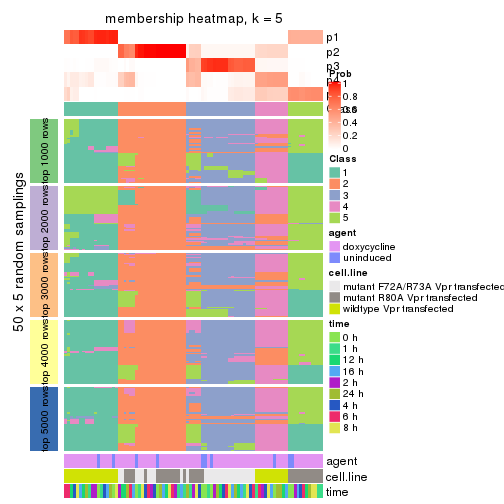
membership_heatmap(res, k = 6)

As soon as we have had the classes for columns, we can look for signatures which are significantly different between classes which can be candidate marks for certain classes. Following are the heatmaps for signatures.
Signature heatmaps where rows are scaled:
get_signatures(res, k = 2)

get_signatures(res, k = 3)
get_signatures(res, k = 4)
get_signatures(res, k = 5)
get_signatures(res, k = 6)
Signature heatmaps where rows are not scaled:
get_signatures(res, k = 2, scale_rows = FALSE)

get_signatures(res, k = 3, scale_rows = FALSE)
get_signatures(res, k = 4, scale_rows = FALSE)
get_signatures(res, k = 5, scale_rows = FALSE)
get_signatures(res, k = 6, scale_rows = FALSE)
Compare the overlap of signatures from different k:
compare_signatures(res)
get_signature() returns a data frame invisibly. TO get the list of signatures, the function
call should be assigned to a variable explicitly. In following code, if plot argument is set
to FALSE, no heatmap is plotted while only the differential analysis is performed.
# code only for demonstration
tb = get_signature(res, k = ..., plot = FALSE)
An example of the output of tb is:
#> which_row fdr mean_1 mean_2 scaled_mean_1 scaled_mean_2 km
#> 1 38 0.042760348 8.373488 9.131774 -0.5533452 0.5164555 1
#> 2 40 0.018707592 7.106213 8.469186 -0.6173731 0.5762149 1
#> 3 55 0.019134737 10.221463 11.207825 -0.6159697 0.5749050 1
#> 4 59 0.006059896 5.921854 7.869574 -0.6899429 0.6439467 1
#> 5 60 0.018055526 8.928898 10.211722 -0.6204761 0.5791110 1
#> 6 98 0.009384629 15.714769 14.887706 0.6635654 -0.6193277 2
...
The columns in tb are:
which_row: row indices corresponding to the input matrix.fdr: FDR for the differential test. mean_x: The mean value in group x.scaled_mean_x: The mean value in group x after rows are scaled.km: Row groups if k-means clustering is applied to rows.UMAP plot which shows how samples are separated.
dimension_reduction(res, k = 2, method = "UMAP")

dimension_reduction(res, k = 3, method = "UMAP")

dimension_reduction(res, k = 4, method = "UMAP")
dimension_reduction(res, k = 5, method = "UMAP")
dimension_reduction(res, k = 6, method = "UMAP")
Following heatmap shows how subgroups are split when increasing k:
collect_classes(res)
Test correlation between subgroups and known annotations. If the known annotation is numeric, one-way ANOVA test is applied, and if the known annotation is discrete, chi-squared contingency table test is applied.
test_to_known_factors(res)
#> n agent(p) cell.line(p) time(p) k
#> MAD:kmeans 87 0.971 5.49e-06 1 2
#> MAD:kmeans 83 0.729 2.87e-10 1 3
#> MAD:kmeans 83 0.889 5.98e-16 1 4
#> MAD:kmeans 78 0.946 6.02e-22 1 5
#> MAD:kmeans 79 0.935 1.71e-21 1 6
If matrix rows can be associated to genes, consider to use functional_enrichment(res,
...) to perform function enrichment for the signature genes. See this vignette for more detailed explanations.
The object with results only for a single top-value method and a single partition method can be extracted as:
res = res_list["MAD", "skmeans"]
# you can also extract it by
# res = res_list["MAD:skmeans"]
A summary of res and all the functions that can be applied to it:
res
#> A 'ConsensusPartition' object with k = 2, 3, 4, 5, 6.
#> On a matrix with 18211 rows and 87 columns.
#> Top rows (1000, 2000, 3000, 4000, 5000) are extracted by 'MAD' method.
#> Subgroups are detected by 'skmeans' method.
#> Performed in total 1250 partitions by row resampling.
#> Best k for subgroups seems to be 4.
#>
#> Following methods can be applied to this 'ConsensusPartition' object:
#> [1] "cola_report" "collect_classes" "collect_plots"
#> [4] "collect_stats" "colnames" "compare_signatures"
#> [7] "consensus_heatmap" "dimension_reduction" "functional_enrichment"
#> [10] "get_anno_col" "get_anno" "get_classes"
#> [13] "get_consensus" "get_matrix" "get_membership"
#> [16] "get_param" "get_signatures" "get_stats"
#> [19] "is_best_k" "is_stable_k" "membership_heatmap"
#> [22] "ncol" "nrow" "plot_ecdf"
#> [25] "rownames" "select_partition_number" "show"
#> [28] "suggest_best_k" "test_to_known_factors"
collect_plots() function collects all the plots made from res for all k (number of partitions)
into one single page to provide an easy and fast comparison between different k.
collect_plots(res)
The plots are:
k and the heatmap of
predicted classes for each k.k.k.k.All the plots in panels can be made by individual functions and they are plotted later in this section.
select_partition_number() produces several plots showing different
statistics for choosing “optimized” k. There are following statistics:
k;k, the area increased is defined as \(A_k - A_{k-1}\).The detailed explanations of these statistics can be found in the cola vignette.
Generally speaking, lower PAC score, higher mean silhouette score or higher
concordance corresponds to better partition. Rand index and Jaccard index
measure how similar the current partition is compared to partition with k-1.
If they are too similar, we won't accept k is better than k-1.
select_partition_number(res)
The numeric values for all these statistics can be obtained by get_stats().
get_stats(res)
#> k 1-PAC mean_silhouette concordance area_increased Rand Jaccard
#> 2 2 1.000 0.997 0.999 0.4638 0.536 0.536
#> 3 3 1.000 0.939 0.974 0.4205 0.786 0.605
#> 4 4 0.979 0.947 0.973 0.1190 0.932 0.797
#> 5 5 0.870 0.927 0.934 0.0560 0.941 0.784
#> 6 6 0.865 0.857 0.872 0.0411 1.000 1.000
suggest_best_k() suggests the best \(k\) based on these statistics. The rules are as follows:
suggest_best_k(res)
#> [1] 4
#> attr(,"optional")
#> [1] 2 3
There is also optional best \(k\) = 2 3 that is worth to check.
Following shows the table of the partitions (You need to click the show/hide
code output link to see it). The membership matrix (columns with name p*)
is inferred by
clue::cl_consensus()
function with the SE method. Basically the value in the membership matrix
represents the probability to belong to a certain group. The finall class
label for an item is determined with the group with highest probability it
belongs to.
In get_classes() function, the entropy is calculated from the membership
matrix and the silhouette score is calculated from the consensus matrix.
cbind(get_classes(res, k = 2), get_membership(res, k = 2))
#> class entropy silhouette p1 p2
#> GSM41890 1 0.000 0.996 1.000 0.000
#> GSM41917 1 0.000 0.996 1.000 0.000
#> GSM41936 2 0.000 1.000 0.000 1.000
#> GSM41893 1 0.000 0.996 1.000 0.000
#> GSM41920 1 0.000 0.996 1.000 0.000
#> GSM41937 2 0.000 1.000 0.000 1.000
#> GSM41896 1 0.000 0.996 1.000 0.000
#> GSM41923 1 0.000 0.996 1.000 0.000
#> GSM41938 2 0.000 1.000 0.000 1.000
#> GSM41899 1 0.000 0.996 1.000 0.000
#> GSM41925 1 0.000 0.996 1.000 0.000
#> GSM41939 2 0.000 1.000 0.000 1.000
#> GSM41902 1 0.000 0.996 1.000 0.000
#> GSM41927 1 0.000 0.996 1.000 0.000
#> GSM41940 2 0.000 1.000 0.000 1.000
#> GSM41905 1 0.000 0.996 1.000 0.000
#> GSM41929 1 0.000 0.996 1.000 0.000
#> GSM41941 2 0.000 1.000 0.000 1.000
#> GSM41908 1 0.000 0.996 1.000 0.000
#> GSM41931 1 0.000 0.996 1.000 0.000
#> GSM41942 2 0.000 1.000 0.000 1.000
#> GSM41945 2 0.000 1.000 0.000 1.000
#> GSM41911 1 0.000 0.996 1.000 0.000
#> GSM41933 1 0.000 0.996 1.000 0.000
#> GSM41943 2 0.000 1.000 0.000 1.000
#> GSM41944 2 0.000 1.000 0.000 1.000
#> GSM41876 2 0.000 1.000 0.000 1.000
#> GSM41895 2 0.000 1.000 0.000 1.000
#> GSM41898 2 0.000 1.000 0.000 1.000
#> GSM41877 2 0.000 1.000 0.000 1.000
#> GSM41901 2 0.000 1.000 0.000 1.000
#> GSM41904 2 0.000 1.000 0.000 1.000
#> GSM41878 2 0.000 1.000 0.000 1.000
#> GSM41907 2 0.000 1.000 0.000 1.000
#> GSM41910 2 0.000 1.000 0.000 1.000
#> GSM41879 2 0.000 1.000 0.000 1.000
#> GSM41913 2 0.000 1.000 0.000 1.000
#> GSM41916 2 0.000 1.000 0.000 1.000
#> GSM41880 2 0.000 1.000 0.000 1.000
#> GSM41919 2 0.000 1.000 0.000 1.000
#> GSM41922 2 0.000 1.000 0.000 1.000
#> GSM41881 2 0.000 1.000 0.000 1.000
#> GSM41924 2 0.000 1.000 0.000 1.000
#> GSM41926 2 0.000 1.000 0.000 1.000
#> GSM41869 2 0.000 1.000 0.000 1.000
#> GSM41928 1 0.518 0.869 0.884 0.116
#> GSM41930 2 0.000 1.000 0.000 1.000
#> GSM41882 2 0.000 1.000 0.000 1.000
#> GSM41932 2 0.000 1.000 0.000 1.000
#> GSM41934 2 0.000 1.000 0.000 1.000
#> GSM41860 2 0.000 1.000 0.000 1.000
#> GSM41871 2 0.000 1.000 0.000 1.000
#> GSM41875 2 0.000 1.000 0.000 1.000
#> GSM41894 1 0.000 0.996 1.000 0.000
#> GSM41897 1 0.000 0.996 1.000 0.000
#> GSM41861 2 0.000 1.000 0.000 1.000
#> GSM41872 2 0.000 1.000 0.000 1.000
#> GSM41900 1 0.000 0.996 1.000 0.000
#> GSM41862 2 0.000 1.000 0.000 1.000
#> GSM41873 2 0.000 1.000 0.000 1.000
#> GSM41903 1 0.000 0.996 1.000 0.000
#> GSM41863 2 0.000 1.000 0.000 1.000
#> GSM41883 2 0.000 1.000 0.000 1.000
#> GSM41906 1 0.000 0.996 1.000 0.000
#> GSM41864 2 0.000 1.000 0.000 1.000
#> GSM41884 2 0.000 1.000 0.000 1.000
#> GSM41909 1 0.000 0.996 1.000 0.000
#> GSM41912 1 0.000 0.996 1.000 0.000
#> GSM41865 2 0.000 1.000 0.000 1.000
#> GSM41885 2 0.000 1.000 0.000 1.000
#> GSM41915 1 0.000 0.996 1.000 0.000
#> GSM41866 2 0.000 1.000 0.000 1.000
#> GSM41886 2 0.000 1.000 0.000 1.000
#> GSM41918 1 0.000 0.996 1.000 0.000
#> GSM41867 2 0.000 1.000 0.000 1.000
#> GSM41868 2 0.000 1.000 0.000 1.000
#> GSM41921 1 0.000 0.996 1.000 0.000
#> GSM41887 1 0.000 0.996 1.000 0.000
#> GSM41914 1 0.000 0.996 1.000 0.000
#> GSM41935 2 0.000 1.000 0.000 1.000
#> GSM41874 2 0.000 1.000 0.000 1.000
#> GSM41889 2 0.000 1.000 0.000 1.000
#> GSM41892 2 0.000 1.000 0.000 1.000
#> GSM41859 2 0.000 1.000 0.000 1.000
#> GSM41870 2 0.000 1.000 0.000 1.000
#> GSM41888 1 0.000 0.996 1.000 0.000
#> GSM41891 1 0.000 0.996 1.000 0.000
cbind(get_classes(res, k = 3), get_membership(res, k = 3))
#> class entropy silhouette p1 p2 p3
#> GSM41890 1 0.0000 1.000 1 0.000 0.000
#> GSM41917 1 0.0000 1.000 1 0.000 0.000
#> GSM41936 2 0.0892 0.982 0 0.980 0.020
#> GSM41893 1 0.0000 1.000 1 0.000 0.000
#> GSM41920 1 0.0000 1.000 1 0.000 0.000
#> GSM41937 2 0.0892 0.982 0 0.980 0.020
#> GSM41896 1 0.0000 1.000 1 0.000 0.000
#> GSM41923 1 0.0000 1.000 1 0.000 0.000
#> GSM41938 2 0.0892 0.982 0 0.980 0.020
#> GSM41899 1 0.0000 1.000 1 0.000 0.000
#> GSM41925 1 0.0000 1.000 1 0.000 0.000
#> GSM41939 2 0.0892 0.982 0 0.980 0.020
#> GSM41902 1 0.0000 1.000 1 0.000 0.000
#> GSM41927 1 0.0000 1.000 1 0.000 0.000
#> GSM41940 2 0.0892 0.982 0 0.980 0.020
#> GSM41905 1 0.0000 1.000 1 0.000 0.000
#> GSM41929 1 0.0000 1.000 1 0.000 0.000
#> GSM41941 2 0.0892 0.982 0 0.980 0.020
#> GSM41908 1 0.0000 1.000 1 0.000 0.000
#> GSM41931 1 0.0000 1.000 1 0.000 0.000
#> GSM41942 2 0.0892 0.982 0 0.980 0.020
#> GSM41945 2 0.0892 0.982 0 0.980 0.020
#> GSM41911 1 0.0000 1.000 1 0.000 0.000
#> GSM41933 1 0.0000 1.000 1 0.000 0.000
#> GSM41943 2 0.0892 0.982 0 0.980 0.020
#> GSM41944 2 0.0892 0.982 0 0.980 0.020
#> GSM41876 2 0.0424 0.990 0 0.992 0.008
#> GSM41895 3 0.0000 0.909 0 0.000 1.000
#> GSM41898 3 0.0000 0.909 0 0.000 1.000
#> GSM41877 2 0.0424 0.990 0 0.992 0.008
#> GSM41901 3 0.0000 0.909 0 0.000 1.000
#> GSM41904 2 0.0424 0.990 0 0.992 0.008
#> GSM41878 2 0.0424 0.990 0 0.992 0.008
#> GSM41907 3 0.0000 0.909 0 0.000 1.000
#> GSM41910 3 0.0000 0.909 0 0.000 1.000
#> GSM41879 2 0.0424 0.990 0 0.992 0.008
#> GSM41913 3 0.0000 0.909 0 0.000 1.000
#> GSM41916 3 0.0000 0.909 0 0.000 1.000
#> GSM41880 2 0.0424 0.990 0 0.992 0.008
#> GSM41919 3 0.0000 0.909 0 0.000 1.000
#> GSM41922 3 0.0000 0.909 0 0.000 1.000
#> GSM41881 2 0.0424 0.990 0 0.992 0.008
#> GSM41924 3 0.0000 0.909 0 0.000 1.000
#> GSM41926 3 0.0000 0.909 0 0.000 1.000
#> GSM41869 2 0.0424 0.990 0 0.992 0.008
#> GSM41928 3 0.0000 0.909 0 0.000 1.000
#> GSM41930 3 0.0000 0.909 0 0.000 1.000
#> GSM41882 3 0.0424 0.902 0 0.008 0.992
#> GSM41932 3 0.0000 0.909 0 0.000 1.000
#> GSM41934 3 0.0000 0.909 0 0.000 1.000
#> GSM41860 3 0.6291 0.212 0 0.468 0.532
#> GSM41871 2 0.0424 0.990 0 0.992 0.008
#> GSM41875 2 0.0000 0.987 0 1.000 0.000
#> GSM41894 1 0.0000 1.000 1 0.000 0.000
#> GSM41897 1 0.0000 1.000 1 0.000 0.000
#> GSM41861 3 0.6291 0.212 0 0.468 0.532
#> GSM41872 2 0.0424 0.990 0 0.992 0.008
#> GSM41900 1 0.0000 1.000 1 0.000 0.000
#> GSM41862 3 0.6299 0.205 0 0.476 0.524
#> GSM41873 2 0.0424 0.990 0 0.992 0.008
#> GSM41903 1 0.0000 1.000 1 0.000 0.000
#> GSM41863 2 0.0237 0.987 0 0.996 0.004
#> GSM41883 2 0.0424 0.990 0 0.992 0.008
#> GSM41906 1 0.0000 1.000 1 0.000 0.000
#> GSM41864 3 0.6291 0.212 0 0.468 0.532
#> GSM41884 2 0.0424 0.990 0 0.992 0.008
#> GSM41909 1 0.0000 1.000 1 0.000 0.000
#> GSM41912 1 0.0000 1.000 1 0.000 0.000
#> GSM41865 2 0.0424 0.990 0 0.992 0.008
#> GSM41885 2 0.0424 0.990 0 0.992 0.008
#> GSM41915 1 0.0000 1.000 1 0.000 0.000
#> GSM41866 2 0.0000 0.987 0 1.000 0.000
#> GSM41886 2 0.0424 0.990 0 0.992 0.008
#> GSM41918 1 0.0000 1.000 1 0.000 0.000
#> GSM41867 2 0.0000 0.987 0 1.000 0.000
#> GSM41868 2 0.0424 0.990 0 0.992 0.008
#> GSM41921 1 0.0000 1.000 1 0.000 0.000
#> GSM41887 1 0.0000 1.000 1 0.000 0.000
#> GSM41914 1 0.0000 1.000 1 0.000 0.000
#> GSM41935 2 0.0892 0.982 0 0.980 0.020
#> GSM41874 2 0.0424 0.990 0 0.992 0.008
#> GSM41889 3 0.0000 0.909 0 0.000 1.000
#> GSM41892 3 0.0000 0.909 0 0.000 1.000
#> GSM41859 3 0.0000 0.909 0 0.000 1.000
#> GSM41870 2 0.0424 0.990 0 0.992 0.008
#> GSM41888 1 0.0000 1.000 1 0.000 0.000
#> GSM41891 1 0.0000 1.000 1 0.000 0.000
cbind(get_classes(res, k = 4), get_membership(res, k = 4))
#> class entropy silhouette p1 p2 p3 p4
#> GSM41890 1 0.0000 1.000 1 0.000 0.000 0.000
#> GSM41917 1 0.0000 1.000 1 0.000 0.000 0.000
#> GSM41936 4 0.0336 0.997 0 0.008 0.000 0.992
#> GSM41893 1 0.0000 1.000 1 0.000 0.000 0.000
#> GSM41920 1 0.0000 1.000 1 0.000 0.000 0.000
#> GSM41937 4 0.0336 0.997 0 0.008 0.000 0.992
#> GSM41896 1 0.0000 1.000 1 0.000 0.000 0.000
#> GSM41923 1 0.0000 1.000 1 0.000 0.000 0.000
#> GSM41938 4 0.0336 0.997 0 0.008 0.000 0.992
#> GSM41899 1 0.0000 1.000 1 0.000 0.000 0.000
#> GSM41925 1 0.0000 1.000 1 0.000 0.000 0.000
#> GSM41939 4 0.0336 0.997 0 0.008 0.000 0.992
#> GSM41902 1 0.0000 1.000 1 0.000 0.000 0.000
#> GSM41927 1 0.0000 1.000 1 0.000 0.000 0.000
#> GSM41940 4 0.0469 0.997 0 0.012 0.000 0.988
#> GSM41905 1 0.0000 1.000 1 0.000 0.000 0.000
#> GSM41929 1 0.0000 1.000 1 0.000 0.000 0.000
#> GSM41941 4 0.0469 0.997 0 0.012 0.000 0.988
#> GSM41908 1 0.0000 1.000 1 0.000 0.000 0.000
#> GSM41931 1 0.0000 1.000 1 0.000 0.000 0.000
#> GSM41942 4 0.0469 0.997 0 0.012 0.000 0.988
#> GSM41945 4 0.0469 0.997 0 0.012 0.000 0.988
#> GSM41911 1 0.0000 1.000 1 0.000 0.000 0.000
#> GSM41933 1 0.0000 1.000 1 0.000 0.000 0.000
#> GSM41943 4 0.0469 0.997 0 0.012 0.000 0.988
#> GSM41944 4 0.0336 0.997 0 0.008 0.000 0.992
#> GSM41876 2 0.0000 0.945 0 1.000 0.000 0.000
#> GSM41895 3 0.0188 0.953 0 0.000 0.996 0.004
#> GSM41898 3 0.0336 0.953 0 0.000 0.992 0.008
#> GSM41877 2 0.0000 0.945 0 1.000 0.000 0.000
#> GSM41901 3 0.0188 0.953 0 0.000 0.996 0.004
#> GSM41904 2 0.0188 0.941 0 0.996 0.004 0.000
#> GSM41878 2 0.0000 0.945 0 1.000 0.000 0.000
#> GSM41907 3 0.0188 0.953 0 0.000 0.996 0.004
#> GSM41910 3 0.0336 0.953 0 0.000 0.992 0.008
#> GSM41879 2 0.0000 0.945 0 1.000 0.000 0.000
#> GSM41913 3 0.0188 0.953 0 0.000 0.996 0.004
#> GSM41916 3 0.0336 0.953 0 0.000 0.992 0.008
#> GSM41880 2 0.0000 0.945 0 1.000 0.000 0.000
#> GSM41919 3 0.0000 0.953 0 0.000 1.000 0.000
#> GSM41922 3 0.0336 0.953 0 0.000 0.992 0.008
#> GSM41881 2 0.0000 0.945 0 1.000 0.000 0.000
#> GSM41924 3 0.0188 0.953 0 0.000 0.996 0.004
#> GSM41926 3 0.0336 0.953 0 0.000 0.992 0.008
#> GSM41869 2 0.0000 0.945 0 1.000 0.000 0.000
#> GSM41928 3 0.0188 0.953 0 0.000 0.996 0.004
#> GSM41930 3 0.0336 0.953 0 0.000 0.992 0.008
#> GSM41882 3 0.3569 0.792 0 0.000 0.804 0.196
#> GSM41932 3 0.0188 0.953 0 0.000 0.996 0.004
#> GSM41934 3 0.0336 0.953 0 0.000 0.992 0.008
#> GSM41860 3 0.3885 0.845 0 0.064 0.844 0.092
#> GSM41871 2 0.0000 0.945 0 1.000 0.000 0.000
#> GSM41875 2 0.0000 0.945 0 1.000 0.000 0.000
#> GSM41894 1 0.0000 1.000 1 0.000 0.000 0.000
#> GSM41897 1 0.0000 1.000 1 0.000 0.000 0.000
#> GSM41861 3 0.3885 0.845 0 0.064 0.844 0.092
#> GSM41872 2 0.0000 0.945 0 1.000 0.000 0.000
#> GSM41900 1 0.0000 1.000 1 0.000 0.000 0.000
#> GSM41862 3 0.4990 0.747 0 0.060 0.756 0.184
#> GSM41873 2 0.0000 0.945 0 1.000 0.000 0.000
#> GSM41903 1 0.0000 1.000 1 0.000 0.000 0.000
#> GSM41863 2 0.4907 0.333 0 0.580 0.000 0.420
#> GSM41883 2 0.0000 0.945 0 1.000 0.000 0.000
#> GSM41906 1 0.0000 1.000 1 0.000 0.000 0.000
#> GSM41864 3 0.4852 0.775 0 0.072 0.776 0.152
#> GSM41884 2 0.0000 0.945 0 1.000 0.000 0.000
#> GSM41909 1 0.0000 1.000 1 0.000 0.000 0.000
#> GSM41912 1 0.0000 1.000 1 0.000 0.000 0.000
#> GSM41865 2 0.1902 0.888 0 0.932 0.004 0.064
#> GSM41885 2 0.0000 0.945 0 1.000 0.000 0.000
#> GSM41915 1 0.0000 1.000 1 0.000 0.000 0.000
#> GSM41866 2 0.4730 0.468 0 0.636 0.000 0.364
#> GSM41886 2 0.0000 0.945 0 1.000 0.000 0.000
#> GSM41918 1 0.0000 1.000 1 0.000 0.000 0.000
#> GSM41867 2 0.4406 0.592 0 0.700 0.000 0.300
#> GSM41868 2 0.0000 0.945 0 1.000 0.000 0.000
#> GSM41921 1 0.0000 1.000 1 0.000 0.000 0.000
#> GSM41887 1 0.0000 1.000 1 0.000 0.000 0.000
#> GSM41914 1 0.0000 1.000 1 0.000 0.000 0.000
#> GSM41935 4 0.0469 0.997 0 0.012 0.000 0.988
#> GSM41874 2 0.0000 0.945 0 1.000 0.000 0.000
#> GSM41889 3 0.0188 0.953 0 0.000 0.996 0.004
#> GSM41892 3 0.0188 0.953 0 0.000 0.996 0.004
#> GSM41859 3 0.0188 0.953 0 0.000 0.996 0.004
#> GSM41870 2 0.0000 0.945 0 1.000 0.000 0.000
#> GSM41888 1 0.0000 1.000 1 0.000 0.000 0.000
#> GSM41891 1 0.0000 1.000 1 0.000 0.000 0.000
cbind(get_classes(res, k = 5), get_membership(res, k = 5))
#> class entropy silhouette p1 p2 p3 p4 p5
#> GSM41890 1 0.0290 0.948 0.992 0.000 0.000 0.000 0.008
#> GSM41917 1 0.0290 0.948 0.992 0.000 0.000 0.000 0.008
#> GSM41936 4 0.0000 1.000 0.000 0.000 0.000 1.000 0.000
#> GSM41893 1 0.0404 0.948 0.988 0.000 0.000 0.000 0.012
#> GSM41920 1 0.0290 0.948 0.992 0.000 0.000 0.000 0.008
#> GSM41937 4 0.0000 1.000 0.000 0.000 0.000 1.000 0.000
#> GSM41896 1 0.0290 0.948 0.992 0.000 0.000 0.000 0.008
#> GSM41923 1 0.0290 0.948 0.992 0.000 0.000 0.000 0.008
#> GSM41938 4 0.0000 1.000 0.000 0.000 0.000 1.000 0.000
#> GSM41899 1 0.0162 0.948 0.996 0.000 0.000 0.000 0.004
#> GSM41925 1 0.0510 0.947 0.984 0.000 0.000 0.000 0.016
#> GSM41939 4 0.0000 1.000 0.000 0.000 0.000 1.000 0.000
#> GSM41902 1 0.0290 0.948 0.992 0.000 0.000 0.000 0.008
#> GSM41927 1 0.0290 0.948 0.992 0.000 0.000 0.000 0.008
#> GSM41940 4 0.0000 1.000 0.000 0.000 0.000 1.000 0.000
#> GSM41905 1 0.0290 0.948 0.992 0.000 0.000 0.000 0.008
#> GSM41929 1 0.0000 0.948 1.000 0.000 0.000 0.000 0.000
#> GSM41941 4 0.0000 1.000 0.000 0.000 0.000 1.000 0.000
#> GSM41908 1 0.0290 0.948 0.992 0.000 0.000 0.000 0.008
#> GSM41931 1 0.0290 0.948 0.992 0.000 0.000 0.000 0.008
#> GSM41942 4 0.0000 1.000 0.000 0.000 0.000 1.000 0.000
#> GSM41945 4 0.0000 1.000 0.000 0.000 0.000 1.000 0.000
#> GSM41911 1 0.0290 0.948 0.992 0.000 0.000 0.000 0.008
#> GSM41933 1 0.0290 0.948 0.992 0.000 0.000 0.000 0.008
#> GSM41943 4 0.0000 1.000 0.000 0.000 0.000 1.000 0.000
#> GSM41944 4 0.0000 1.000 0.000 0.000 0.000 1.000 0.000
#> GSM41876 2 0.0162 0.993 0.000 0.996 0.000 0.000 0.004
#> GSM41895 3 0.2648 0.909 0.000 0.000 0.848 0.000 0.152
#> GSM41898 3 0.0404 0.925 0.000 0.000 0.988 0.000 0.012
#> GSM41877 2 0.0162 0.993 0.000 0.996 0.000 0.000 0.004
#> GSM41901 3 0.2424 0.923 0.000 0.000 0.868 0.000 0.132
#> GSM41904 5 0.3752 0.694 0.000 0.292 0.000 0.000 0.708
#> GSM41878 2 0.0162 0.993 0.000 0.996 0.000 0.000 0.004
#> GSM41907 3 0.2424 0.923 0.000 0.000 0.868 0.000 0.132
#> GSM41910 3 0.0162 0.923 0.000 0.000 0.996 0.000 0.004
#> GSM41879 2 0.0290 0.991 0.000 0.992 0.000 0.000 0.008
#> GSM41913 3 0.2424 0.923 0.000 0.000 0.868 0.000 0.132
#> GSM41916 3 0.0000 0.922 0.000 0.000 1.000 0.000 0.000
#> GSM41880 2 0.0162 0.993 0.000 0.996 0.000 0.000 0.004
#> GSM41919 3 0.1270 0.926 0.000 0.000 0.948 0.000 0.052
#> GSM41922 3 0.0000 0.922 0.000 0.000 1.000 0.000 0.000
#> GSM41881 5 0.3816 0.677 0.000 0.304 0.000 0.000 0.696
#> GSM41924 3 0.2424 0.923 0.000 0.000 0.868 0.000 0.132
#> GSM41926 3 0.0510 0.914 0.000 0.000 0.984 0.000 0.016
#> GSM41869 2 0.0000 0.992 0.000 1.000 0.000 0.000 0.000
#> GSM41928 3 0.0880 0.921 0.000 0.000 0.968 0.000 0.032
#> GSM41930 3 0.0404 0.916 0.000 0.000 0.988 0.000 0.012
#> GSM41882 5 0.5535 0.504 0.000 0.000 0.256 0.116 0.628
#> GSM41932 3 0.2424 0.923 0.000 0.000 0.868 0.000 0.132
#> GSM41934 3 0.0510 0.914 0.000 0.000 0.984 0.000 0.016
#> GSM41860 5 0.3317 0.767 0.000 0.008 0.112 0.032 0.848
#> GSM41871 2 0.0162 0.993 0.000 0.996 0.000 0.000 0.004
#> GSM41875 2 0.0162 0.990 0.000 0.996 0.000 0.000 0.004
#> GSM41894 1 0.2377 0.926 0.872 0.000 0.000 0.000 0.128
#> GSM41897 1 0.2377 0.926 0.872 0.000 0.000 0.000 0.128
#> GSM41861 5 0.3317 0.767 0.000 0.008 0.112 0.032 0.848
#> GSM41872 2 0.0162 0.993 0.000 0.996 0.000 0.000 0.004
#> GSM41900 1 0.2377 0.926 0.872 0.000 0.000 0.000 0.128
#> GSM41862 5 0.3428 0.778 0.000 0.008 0.092 0.052 0.848
#> GSM41873 2 0.0510 0.983 0.000 0.984 0.000 0.000 0.016
#> GSM41903 1 0.2377 0.926 0.872 0.000 0.000 0.000 0.128
#> GSM41863 5 0.4805 0.772 0.000 0.144 0.000 0.128 0.728
#> GSM41883 2 0.0000 0.992 0.000 1.000 0.000 0.000 0.000
#> GSM41906 1 0.2377 0.926 0.872 0.000 0.000 0.000 0.128
#> GSM41864 5 0.3428 0.778 0.000 0.008 0.092 0.052 0.848
#> GSM41884 2 0.0162 0.993 0.000 0.996 0.000 0.000 0.004
#> GSM41909 1 0.2377 0.926 0.872 0.000 0.000 0.000 0.128
#> GSM41912 1 0.2377 0.926 0.872 0.000 0.000 0.000 0.128
#> GSM41865 5 0.3663 0.776 0.000 0.208 0.000 0.016 0.776
#> GSM41885 2 0.0162 0.993 0.000 0.996 0.000 0.000 0.004
#> GSM41915 1 0.2377 0.926 0.872 0.000 0.000 0.000 0.128
#> GSM41866 5 0.4781 0.780 0.000 0.160 0.000 0.112 0.728
#> GSM41886 2 0.0000 0.992 0.000 1.000 0.000 0.000 0.000
#> GSM41918 1 0.2377 0.926 0.872 0.000 0.000 0.000 0.128
#> GSM41867 5 0.4951 0.770 0.000 0.196 0.000 0.100 0.704
#> GSM41868 2 0.0000 0.992 0.000 1.000 0.000 0.000 0.000
#> GSM41921 1 0.2377 0.926 0.872 0.000 0.000 0.000 0.128
#> GSM41887 1 0.0290 0.948 0.992 0.000 0.000 0.000 0.008
#> GSM41914 1 0.0290 0.948 0.992 0.000 0.000 0.000 0.008
#> GSM41935 4 0.0000 1.000 0.000 0.000 0.000 1.000 0.000
#> GSM41874 2 0.1270 0.941 0.000 0.948 0.000 0.000 0.052
#> GSM41889 3 0.2648 0.909 0.000 0.000 0.848 0.000 0.152
#> GSM41892 3 0.2230 0.926 0.000 0.000 0.884 0.000 0.116
#> GSM41859 3 0.2230 0.926 0.000 0.000 0.884 0.000 0.116
#> GSM41870 2 0.0000 0.992 0.000 1.000 0.000 0.000 0.000
#> GSM41888 1 0.2329 0.926 0.876 0.000 0.000 0.000 0.124
#> GSM41891 1 0.2377 0.926 0.872 0.000 0.000 0.000 0.128
cbind(get_classes(res, k = 6), get_membership(res, k = 6))
#> class entropy silhouette p1 p2 p3 p4 p5 p6
#> GSM41890 1 0.0790 0.831 0.968 0.000 0.000 0.000 NA 0.000
#> GSM41917 1 0.0790 0.815 0.968 0.000 0.000 0.000 NA 0.000
#> GSM41936 4 0.0146 0.993 0.000 0.000 0.000 0.996 NA 0.000
#> GSM41893 1 0.1444 0.834 0.928 0.000 0.000 0.000 NA 0.000
#> GSM41920 1 0.0790 0.815 0.968 0.000 0.000 0.000 NA 0.000
#> GSM41937 4 0.0146 0.993 0.000 0.000 0.000 0.996 NA 0.000
#> GSM41896 1 0.0865 0.831 0.964 0.000 0.000 0.000 NA 0.000
#> GSM41923 1 0.1863 0.834 0.896 0.000 0.000 0.000 NA 0.000
#> GSM41938 4 0.0146 0.993 0.000 0.000 0.000 0.996 NA 0.000
#> GSM41899 1 0.2454 0.831 0.840 0.000 0.000 0.000 NA 0.000
#> GSM41925 1 0.2378 0.832 0.848 0.000 0.000 0.000 NA 0.000
#> GSM41939 4 0.0146 0.993 0.000 0.000 0.000 0.996 NA 0.000
#> GSM41902 1 0.0790 0.815 0.968 0.000 0.000 0.000 NA 0.000
#> GSM41927 1 0.1765 0.832 0.904 0.000 0.000 0.000 NA 0.000
#> GSM41940 4 0.0000 0.994 0.000 0.000 0.000 1.000 NA 0.000
#> GSM41905 1 0.0713 0.820 0.972 0.000 0.000 0.000 NA 0.000
#> GSM41929 1 0.1327 0.828 0.936 0.000 0.000 0.000 NA 0.000
#> GSM41941 4 0.0363 0.993 0.000 0.000 0.000 0.988 NA 0.000
#> GSM41908 1 0.0260 0.826 0.992 0.000 0.000 0.000 NA 0.000
#> GSM41931 1 0.0713 0.816 0.972 0.000 0.000 0.000 NA 0.000
#> GSM41942 4 0.0146 0.994 0.000 0.000 0.000 0.996 NA 0.000
#> GSM41945 4 0.0508 0.992 0.000 0.000 0.000 0.984 NA 0.004
#> GSM41911 1 0.0260 0.826 0.992 0.000 0.000 0.000 NA 0.000
#> GSM41933 1 0.0632 0.818 0.976 0.000 0.000 0.000 NA 0.000
#> GSM41943 4 0.0363 0.993 0.000 0.000 0.000 0.988 NA 0.000
#> GSM41944 4 0.0508 0.992 0.000 0.000 0.000 0.984 NA 0.004
#> GSM41876 2 0.1320 0.954 0.000 0.948 0.000 0.000 NA 0.016
#> GSM41895 3 0.2201 0.794 0.000 0.000 0.896 0.000 NA 0.076
#> GSM41898 3 0.3330 0.801 0.000 0.000 0.716 0.000 NA 0.000
#> GSM41877 2 0.0891 0.958 0.000 0.968 0.000 0.000 NA 0.008
#> GSM41901 3 0.1462 0.814 0.000 0.000 0.936 0.000 NA 0.056
#> GSM41904 6 0.2740 0.831 0.000 0.120 0.000 0.000 NA 0.852
#> GSM41878 2 0.0508 0.962 0.000 0.984 0.000 0.000 NA 0.004
#> GSM41907 3 0.1204 0.817 0.000 0.000 0.944 0.000 NA 0.056
#> GSM41910 3 0.3371 0.799 0.000 0.000 0.708 0.000 NA 0.000
#> GSM41879 2 0.1245 0.952 0.000 0.952 0.000 0.000 NA 0.016
#> GSM41913 3 0.1204 0.817 0.000 0.000 0.944 0.000 NA 0.056
#> GSM41916 3 0.3409 0.797 0.000 0.000 0.700 0.000 NA 0.000
#> GSM41880 2 0.0547 0.962 0.000 0.980 0.000 0.000 NA 0.000
#> GSM41919 3 0.2696 0.816 0.000 0.000 0.856 0.000 NA 0.028
#> GSM41922 3 0.3409 0.797 0.000 0.000 0.700 0.000 NA 0.000
#> GSM41881 6 0.3014 0.817 0.000 0.132 0.000 0.000 NA 0.832
#> GSM41924 3 0.1204 0.817 0.000 0.000 0.944 0.000 NA 0.056
#> GSM41926 3 0.3993 0.746 0.000 0.000 0.592 0.000 NA 0.008
#> GSM41869 2 0.0458 0.962 0.000 0.984 0.000 0.000 NA 0.000
#> GSM41928 3 0.3490 0.781 0.000 0.000 0.724 0.000 NA 0.008
#> GSM41930 3 0.3672 0.769 0.000 0.000 0.632 0.000 NA 0.000
#> GSM41882 6 0.5924 0.261 0.000 0.000 0.344 0.080 NA 0.524
#> GSM41932 3 0.1462 0.814 0.000 0.000 0.936 0.000 NA 0.056
#> GSM41934 3 0.3830 0.765 0.000 0.000 0.620 0.000 NA 0.004
#> GSM41860 6 0.1219 0.869 0.000 0.000 0.048 0.000 NA 0.948
#> GSM41871 2 0.0458 0.963 0.000 0.984 0.000 0.000 NA 0.000
#> GSM41875 2 0.1444 0.937 0.000 0.928 0.000 0.000 NA 0.000
#> GSM41894 1 0.3717 0.788 0.616 0.000 0.000 0.000 NA 0.000
#> GSM41897 1 0.3717 0.788 0.616 0.000 0.000 0.000 NA 0.000
#> GSM41861 6 0.1531 0.857 0.000 0.000 0.068 0.000 NA 0.928
#> GSM41872 2 0.0993 0.957 0.000 0.964 0.000 0.000 NA 0.012
#> GSM41900 1 0.3717 0.788 0.616 0.000 0.000 0.000 NA 0.000
#> GSM41862 6 0.0692 0.878 0.000 0.000 0.020 0.000 NA 0.976
#> GSM41873 2 0.1498 0.944 0.000 0.940 0.000 0.000 NA 0.032
#> GSM41903 1 0.3717 0.788 0.616 0.000 0.000 0.000 NA 0.000
#> GSM41863 6 0.1908 0.873 0.000 0.020 0.000 0.044 NA 0.924
#> GSM41883 2 0.0363 0.962 0.000 0.988 0.000 0.000 NA 0.000
#> GSM41906 1 0.3717 0.788 0.616 0.000 0.000 0.000 NA 0.000
#> GSM41864 6 0.0363 0.881 0.000 0.000 0.012 0.000 NA 0.988
#> GSM41884 2 0.0547 0.962 0.000 0.980 0.000 0.000 NA 0.000
#> GSM41909 1 0.3717 0.788 0.616 0.000 0.000 0.000 NA 0.000
#> GSM41912 1 0.3717 0.788 0.616 0.000 0.000 0.000 NA 0.000
#> GSM41865 6 0.1155 0.884 0.000 0.036 0.004 0.000 NA 0.956
#> GSM41885 2 0.0547 0.962 0.000 0.980 0.000 0.000 NA 0.000
#> GSM41915 1 0.3717 0.788 0.616 0.000 0.000 0.000 NA 0.000
#> GSM41866 6 0.1933 0.876 0.000 0.032 0.000 0.032 NA 0.924
#> GSM41886 2 0.0458 0.962 0.000 0.984 0.000 0.000 NA 0.000
#> GSM41918 1 0.3717 0.788 0.616 0.000 0.000 0.000 NA 0.000
#> GSM41867 6 0.3275 0.852 0.000 0.040 0.000 0.040 NA 0.848
#> GSM41868 2 0.1531 0.936 0.000 0.928 0.000 0.000 NA 0.004
#> GSM41921 1 0.3717 0.788 0.616 0.000 0.000 0.000 NA 0.000
#> GSM41887 1 0.0632 0.829 0.976 0.000 0.000 0.000 NA 0.000
#> GSM41914 1 0.0790 0.815 0.968 0.000 0.000 0.000 NA 0.000
#> GSM41935 4 0.0405 0.993 0.000 0.000 0.000 0.988 NA 0.004
#> GSM41874 2 0.3248 0.788 0.000 0.804 0.000 0.000 NA 0.164
#> GSM41889 3 0.2331 0.789 0.000 0.000 0.888 0.000 NA 0.080
#> GSM41892 3 0.2747 0.824 0.000 0.000 0.860 0.000 NA 0.044
#> GSM41859 3 0.2795 0.823 0.000 0.000 0.856 0.000 NA 0.044
#> GSM41870 2 0.0547 0.962 0.000 0.980 0.000 0.000 NA 0.000
#> GSM41888 1 0.3659 0.793 0.636 0.000 0.000 0.000 NA 0.000
#> GSM41891 1 0.3717 0.788 0.616 0.000 0.000 0.000 NA 0.000
Heatmaps for the consensus matrix. It visualizes the probability of two samples to be in a same group.
consensus_heatmap(res, k = 2)
consensus_heatmap(res, k = 3)
consensus_heatmap(res, k = 4)
consensus_heatmap(res, k = 5)
consensus_heatmap(res, k = 6)
Heatmaps for the membership of samples in all partitions to see how consistent they are:
membership_heatmap(res, k = 2)
membership_heatmap(res, k = 3)
membership_heatmap(res, k = 4)
membership_heatmap(res, k = 5)
membership_heatmap(res, k = 6)
As soon as we have had the classes for columns, we can look for signatures which are significantly different between classes which can be candidate marks for certain classes. Following are the heatmaps for signatures.
Signature heatmaps where rows are scaled:
get_signatures(res, k = 2)
get_signatures(res, k = 3)
get_signatures(res, k = 4)
get_signatures(res, k = 5)
get_signatures(res, k = 6)
Signature heatmaps where rows are not scaled:
get_signatures(res, k = 2, scale_rows = FALSE)

get_signatures(res, k = 3, scale_rows = FALSE)
get_signatures(res, k = 4, scale_rows = FALSE)
get_signatures(res, k = 5, scale_rows = FALSE)
get_signatures(res, k = 6, scale_rows = FALSE)
Compare the overlap of signatures from different k:
compare_signatures(res)
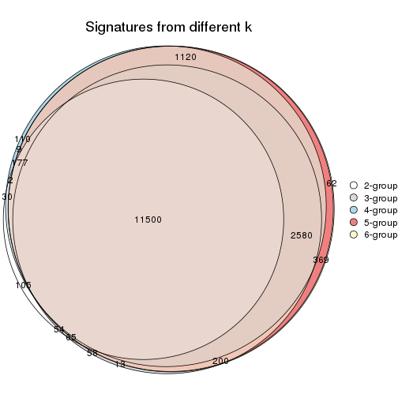
get_signature() returns a data frame invisibly. TO get the list of signatures, the function
call should be assigned to a variable explicitly. In following code, if plot argument is set
to FALSE, no heatmap is plotted while only the differential analysis is performed.
# code only for demonstration
tb = get_signature(res, k = ..., plot = FALSE)
An example of the output of tb is:
#> which_row fdr mean_1 mean_2 scaled_mean_1 scaled_mean_2 km
#> 1 38 0.042760348 8.373488 9.131774 -0.5533452 0.5164555 1
#> 2 40 0.018707592 7.106213 8.469186 -0.6173731 0.5762149 1
#> 3 55 0.019134737 10.221463 11.207825 -0.6159697 0.5749050 1
#> 4 59 0.006059896 5.921854 7.869574 -0.6899429 0.6439467 1
#> 5 60 0.018055526 8.928898 10.211722 -0.6204761 0.5791110 1
#> 6 98 0.009384629 15.714769 14.887706 0.6635654 -0.6193277 2
...
The columns in tb are:
which_row: row indices corresponding to the input matrix.fdr: FDR for the differential test. mean_x: The mean value in group x.scaled_mean_x: The mean value in group x after rows are scaled.km: Row groups if k-means clustering is applied to rows.UMAP plot which shows how samples are separated.
dimension_reduction(res, k = 2, method = "UMAP")
dimension_reduction(res, k = 3, method = "UMAP")
dimension_reduction(res, k = 4, method = "UMAP")
dimension_reduction(res, k = 5, method = "UMAP")
dimension_reduction(res, k = 6, method = "UMAP")
Following heatmap shows how subgroups are split when increasing k:
collect_classes(res)
Test correlation between subgroups and known annotations. If the known annotation is numeric, one-way ANOVA test is applied, and if the known annotation is discrete, chi-squared contingency table test is applied.
test_to_known_factors(res)
#> n agent(p) cell.line(p) time(p) k
#> MAD:skmeans 87 1.000 2.80e-05 1 2
#> MAD:skmeans 83 0.729 2.87e-10 1 3
#> MAD:skmeans 85 0.963 1.12e-13 1 4
#> MAD:skmeans 87 0.724 9.27e-16 1 5
#> MAD:skmeans 86 0.751 4.32e-16 1 6
If matrix rows can be associated to genes, consider to use functional_enrichment(res,
...) to perform function enrichment for the signature genes. See this vignette for more detailed explanations.
The object with results only for a single top-value method and a single partition method can be extracted as:
res = res_list["MAD", "pam"]
# you can also extract it by
# res = res_list["MAD:pam"]
A summary of res and all the functions that can be applied to it:
res
#> A 'ConsensusPartition' object with k = 2, 3, 4, 5, 6.
#> On a matrix with 18211 rows and 87 columns.
#> Top rows (1000, 2000, 3000, 4000, 5000) are extracted by 'MAD' method.
#> Subgroups are detected by 'pam' method.
#> Performed in total 1250 partitions by row resampling.
#> Best k for subgroups seems to be 6.
#>
#> Following methods can be applied to this 'ConsensusPartition' object:
#> [1] "cola_report" "collect_classes" "collect_plots"
#> [4] "collect_stats" "colnames" "compare_signatures"
#> [7] "consensus_heatmap" "dimension_reduction" "functional_enrichment"
#> [10] "get_anno_col" "get_anno" "get_classes"
#> [13] "get_consensus" "get_matrix" "get_membership"
#> [16] "get_param" "get_signatures" "get_stats"
#> [19] "is_best_k" "is_stable_k" "membership_heatmap"
#> [22] "ncol" "nrow" "plot_ecdf"
#> [25] "rownames" "select_partition_number" "show"
#> [28] "suggest_best_k" "test_to_known_factors"
collect_plots() function collects all the plots made from res for all k (number of partitions)
into one single page to provide an easy and fast comparison between different k.
collect_plots(res)
The plots are:
k and the heatmap of
predicted classes for each k.k.k.k.All the plots in panels can be made by individual functions and they are plotted later in this section.
select_partition_number() produces several plots showing different
statistics for choosing “optimized” k. There are following statistics:
k;k, the area increased is defined as \(A_k - A_{k-1}\).The detailed explanations of these statistics can be found in the cola vignette.
Generally speaking, lower PAC score, higher mean silhouette score or higher
concordance corresponds to better partition. Rand index and Jaccard index
measure how similar the current partition is compared to partition with k-1.
If they are too similar, we won't accept k is better than k-1.
select_partition_number(res)
The numeric values for all these statistics can be obtained by get_stats().
get_stats(res)
#> k 1-PAC mean_silhouette concordance area_increased Rand Jaccard
#> 2 2 1.000 1.000 1.000 0.4576 0.543 0.543
#> 3 3 0.701 0.861 0.894 0.3407 0.856 0.734
#> 4 4 0.849 0.861 0.931 0.1773 0.845 0.624
#> 5 5 0.841 0.829 0.869 0.0799 0.938 0.776
#> 6 6 0.911 0.878 0.948 0.0722 0.942 0.738
suggest_best_k() suggests the best \(k\) based on these statistics. The rules are as follows:
suggest_best_k(res)
#> [1] 6
#> attr(,"optional")
#> [1] 2
There is also optional best \(k\) = 2 that is worth to check.
Following shows the table of the partitions (You need to click the show/hide
code output link to see it). The membership matrix (columns with name p*)
is inferred by
clue::cl_consensus()
function with the SE method. Basically the value in the membership matrix
represents the probability to belong to a certain group. The finall class
label for an item is determined with the group with highest probability it
belongs to.
In get_classes() function, the entropy is calculated from the membership
matrix and the silhouette score is calculated from the consensus matrix.
cbind(get_classes(res, k = 2), get_membership(res, k = 2))
#> class entropy silhouette p1 p2
#> GSM41890 1 0 1 1 0
#> GSM41917 1 0 1 1 0
#> GSM41936 2 0 1 0 1
#> GSM41893 1 0 1 1 0
#> GSM41920 1 0 1 1 0
#> GSM41937 2 0 1 0 1
#> GSM41896 1 0 1 1 0
#> GSM41923 1 0 1 1 0
#> GSM41938 2 0 1 0 1
#> GSM41899 1 0 1 1 0
#> GSM41925 1 0 1 1 0
#> GSM41939 2 0 1 0 1
#> GSM41902 1 0 1 1 0
#> GSM41927 1 0 1 1 0
#> GSM41940 2 0 1 0 1
#> GSM41905 1 0 1 1 0
#> GSM41929 1 0 1 1 0
#> GSM41941 2 0 1 0 1
#> GSM41908 1 0 1 1 0
#> GSM41931 1 0 1 1 0
#> GSM41942 2 0 1 0 1
#> GSM41945 2 0 1 0 1
#> GSM41911 1 0 1 1 0
#> GSM41933 1 0 1 1 0
#> GSM41943 2 0 1 0 1
#> GSM41944 2 0 1 0 1
#> GSM41876 2 0 1 0 1
#> GSM41895 2 0 1 0 1
#> GSM41898 2 0 1 0 1
#> GSM41877 2 0 1 0 1
#> GSM41901 2 0 1 0 1
#> GSM41904 2 0 1 0 1
#> GSM41878 2 0 1 0 1
#> GSM41907 2 0 1 0 1
#> GSM41910 2 0 1 0 1
#> GSM41879 2 0 1 0 1
#> GSM41913 2 0 1 0 1
#> GSM41916 2 0 1 0 1
#> GSM41880 2 0 1 0 1
#> GSM41919 2 0 1 0 1
#> GSM41922 2 0 1 0 1
#> GSM41881 2 0 1 0 1
#> GSM41924 2 0 1 0 1
#> GSM41926 2 0 1 0 1
#> GSM41869 2 0 1 0 1
#> GSM41928 2 0 1 0 1
#> GSM41930 2 0 1 0 1
#> GSM41882 2 0 1 0 1
#> GSM41932 2 0 1 0 1
#> GSM41934 2 0 1 0 1
#> GSM41860 2 0 1 0 1
#> GSM41871 2 0 1 0 1
#> GSM41875 2 0 1 0 1
#> GSM41894 1 0 1 1 0
#> GSM41897 1 0 1 1 0
#> GSM41861 2 0 1 0 1
#> GSM41872 2 0 1 0 1
#> GSM41900 1 0 1 1 0
#> GSM41862 2 0 1 0 1
#> GSM41873 2 0 1 0 1
#> GSM41903 1 0 1 1 0
#> GSM41863 2 0 1 0 1
#> GSM41883 2 0 1 0 1
#> GSM41906 1 0 1 1 0
#> GSM41864 2 0 1 0 1
#> GSM41884 2 0 1 0 1
#> GSM41909 1 0 1 1 0
#> GSM41912 1 0 1 1 0
#> GSM41865 2 0 1 0 1
#> GSM41885 2 0 1 0 1
#> GSM41915 1 0 1 1 0
#> GSM41866 2 0 1 0 1
#> GSM41886 2 0 1 0 1
#> GSM41918 1 0 1 1 0
#> GSM41867 2 0 1 0 1
#> GSM41868 2 0 1 0 1
#> GSM41921 1 0 1 1 0
#> GSM41887 1 0 1 1 0
#> GSM41914 1 0 1 1 0
#> GSM41935 2 0 1 0 1
#> GSM41874 2 0 1 0 1
#> GSM41889 2 0 1 0 1
#> GSM41892 2 0 1 0 1
#> GSM41859 2 0 1 0 1
#> GSM41870 2 0 1 0 1
#> GSM41888 1 0 1 1 0
#> GSM41891 1 0 1 1 0
cbind(get_classes(res, k = 3), get_membership(res, k = 3))
#> class entropy silhouette p1 p2 p3
#> GSM41890 1 0.0000 1.000 1.000 0.000 0.000
#> GSM41917 1 0.0000 1.000 1.000 0.000 0.000
#> GSM41936 2 0.3686 0.795 0.000 0.860 0.140
#> GSM41893 1 0.0000 1.000 1.000 0.000 0.000
#> GSM41920 1 0.0000 1.000 1.000 0.000 0.000
#> GSM41937 2 0.4931 0.876 0.000 0.768 0.232
#> GSM41896 1 0.0000 1.000 1.000 0.000 0.000
#> GSM41923 1 0.0000 1.000 1.000 0.000 0.000
#> GSM41938 2 0.4931 0.875 0.000 0.768 0.232
#> GSM41899 1 0.0000 1.000 1.000 0.000 0.000
#> GSM41925 1 0.0000 1.000 1.000 0.000 0.000
#> GSM41939 2 0.4235 0.856 0.000 0.824 0.176
#> GSM41902 1 0.0000 1.000 1.000 0.000 0.000
#> GSM41927 1 0.0000 1.000 1.000 0.000 0.000
#> GSM41940 2 0.5058 0.880 0.000 0.756 0.244
#> GSM41905 1 0.0000 1.000 1.000 0.000 0.000
#> GSM41929 1 0.0000 1.000 1.000 0.000 0.000
#> GSM41941 2 0.5098 0.880 0.000 0.752 0.248
#> GSM41908 1 0.0000 1.000 1.000 0.000 0.000
#> GSM41931 1 0.0000 1.000 1.000 0.000 0.000
#> GSM41942 2 0.5016 0.879 0.000 0.760 0.240
#> GSM41945 2 0.5098 0.880 0.000 0.752 0.248
#> GSM41911 1 0.0000 1.000 1.000 0.000 0.000
#> GSM41933 1 0.0000 1.000 1.000 0.000 0.000
#> GSM41943 2 0.6192 0.602 0.000 0.580 0.420
#> GSM41944 2 0.5098 0.880 0.000 0.752 0.248
#> GSM41876 2 0.5859 0.577 0.000 0.656 0.344
#> GSM41895 3 0.3192 0.818 0.000 0.112 0.888
#> GSM41898 3 0.4796 0.783 0.000 0.220 0.780
#> GSM41877 3 0.3267 0.773 0.000 0.116 0.884
#> GSM41901 3 0.4796 0.783 0.000 0.220 0.780
#> GSM41904 3 0.0000 0.815 0.000 0.000 1.000
#> GSM41878 3 0.3267 0.773 0.000 0.116 0.884
#> GSM41907 3 0.4750 0.785 0.000 0.216 0.784
#> GSM41910 3 0.4796 0.783 0.000 0.220 0.780
#> GSM41879 3 0.3267 0.773 0.000 0.116 0.884
#> GSM41913 3 0.4796 0.783 0.000 0.220 0.780
#> GSM41916 3 0.4796 0.783 0.000 0.220 0.780
#> GSM41880 2 0.5254 0.585 0.000 0.736 0.264
#> GSM41919 3 0.3412 0.818 0.000 0.124 0.876
#> GSM41922 3 0.4750 0.785 0.000 0.216 0.784
#> GSM41881 3 0.1643 0.805 0.000 0.044 0.956
#> GSM41924 3 0.4796 0.783 0.000 0.220 0.780
#> GSM41926 3 0.5028 0.792 0.040 0.132 0.828
#> GSM41869 3 0.3267 0.773 0.000 0.116 0.884
#> GSM41928 3 0.3237 0.815 0.032 0.056 0.912
#> GSM41930 3 0.4504 0.793 0.000 0.196 0.804
#> GSM41882 3 0.2711 0.816 0.000 0.088 0.912
#> GSM41932 3 0.4346 0.800 0.000 0.184 0.816
#> GSM41934 3 0.4605 0.788 0.000 0.204 0.796
#> GSM41860 3 0.3038 0.817 0.000 0.104 0.896
#> GSM41871 3 0.3267 0.773 0.000 0.116 0.884
#> GSM41875 3 0.3267 0.773 0.000 0.116 0.884
#> GSM41894 1 0.0000 1.000 1.000 0.000 0.000
#> GSM41897 1 0.0000 1.000 1.000 0.000 0.000
#> GSM41861 3 0.3038 0.817 0.000 0.104 0.896
#> GSM41872 3 0.3267 0.773 0.000 0.116 0.884
#> GSM41900 1 0.0000 1.000 1.000 0.000 0.000
#> GSM41862 3 0.3038 0.817 0.000 0.104 0.896
#> GSM41873 3 0.3752 0.784 0.000 0.144 0.856
#> GSM41903 1 0.0000 1.000 1.000 0.000 0.000
#> GSM41863 3 0.2711 0.816 0.000 0.088 0.912
#> GSM41883 3 0.3267 0.773 0.000 0.116 0.884
#> GSM41906 1 0.0000 1.000 1.000 0.000 0.000
#> GSM41864 3 0.3038 0.817 0.000 0.104 0.896
#> GSM41884 3 0.3482 0.773 0.000 0.128 0.872
#> GSM41909 1 0.0000 1.000 1.000 0.000 0.000
#> GSM41912 1 0.0000 1.000 1.000 0.000 0.000
#> GSM41865 3 0.2711 0.816 0.000 0.088 0.912
#> GSM41885 3 0.3340 0.773 0.000 0.120 0.880
#> GSM41915 1 0.0000 1.000 1.000 0.000 0.000
#> GSM41866 3 0.2711 0.816 0.000 0.088 0.912
#> GSM41886 3 0.3267 0.773 0.000 0.116 0.884
#> GSM41918 1 0.0000 1.000 1.000 0.000 0.000
#> GSM41867 3 0.0424 0.814 0.000 0.008 0.992
#> GSM41868 3 0.2625 0.789 0.000 0.084 0.916
#> GSM41921 1 0.0000 1.000 1.000 0.000 0.000
#> GSM41887 1 0.0000 1.000 1.000 0.000 0.000
#> GSM41914 1 0.0000 1.000 1.000 0.000 0.000
#> GSM41935 3 0.4062 0.618 0.000 0.164 0.836
#> GSM41874 3 0.1411 0.808 0.000 0.036 0.964
#> GSM41889 3 0.3340 0.816 0.000 0.120 0.880
#> GSM41892 3 0.5733 0.638 0.000 0.324 0.676
#> GSM41859 3 0.4796 0.783 0.000 0.220 0.780
#> GSM41870 3 0.3267 0.773 0.000 0.116 0.884
#> GSM41888 1 0.0000 1.000 1.000 0.000 0.000
#> GSM41891 1 0.0000 1.000 1.000 0.000 0.000
cbind(get_classes(res, k = 4), get_membership(res, k = 4))
#> class entropy silhouette p1 p2 p3 p4
#> GSM41890 1 0.0000 0.998 1.000 0.000 0.000 0.000
#> GSM41917 1 0.0000 0.998 1.000 0.000 0.000 0.000
#> GSM41936 4 0.0336 0.945 0.000 0.000 0.008 0.992
#> GSM41893 1 0.0188 0.998 0.996 0.004 0.000 0.000
#> GSM41920 1 0.0000 0.998 1.000 0.000 0.000 0.000
#> GSM41937 4 0.0000 0.952 0.000 0.000 0.000 1.000
#> GSM41896 1 0.0000 0.998 1.000 0.000 0.000 0.000
#> GSM41923 1 0.0000 0.998 1.000 0.000 0.000 0.000
#> GSM41938 4 0.0000 0.952 0.000 0.000 0.000 1.000
#> GSM41899 1 0.0188 0.998 0.996 0.004 0.000 0.000
#> GSM41925 1 0.0000 0.998 1.000 0.000 0.000 0.000
#> GSM41939 4 0.0000 0.952 0.000 0.000 0.000 1.000
#> GSM41902 1 0.0000 0.998 1.000 0.000 0.000 0.000
#> GSM41927 1 0.0000 0.998 1.000 0.000 0.000 0.000
#> GSM41940 4 0.0000 0.952 0.000 0.000 0.000 1.000
#> GSM41905 1 0.0000 0.998 1.000 0.000 0.000 0.000
#> GSM41929 1 0.0000 0.998 1.000 0.000 0.000 0.000
#> GSM41941 4 0.0000 0.952 0.000 0.000 0.000 1.000
#> GSM41908 1 0.0000 0.998 1.000 0.000 0.000 0.000
#> GSM41931 1 0.0000 0.998 1.000 0.000 0.000 0.000
#> GSM41942 4 0.0000 0.952 0.000 0.000 0.000 1.000
#> GSM41945 4 0.0000 0.952 0.000 0.000 0.000 1.000
#> GSM41911 1 0.0000 0.998 1.000 0.000 0.000 0.000
#> GSM41933 1 0.0000 0.998 1.000 0.000 0.000 0.000
#> GSM41943 4 0.3311 0.757 0.000 0.172 0.000 0.828
#> GSM41944 4 0.0000 0.952 0.000 0.000 0.000 1.000
#> GSM41876 2 0.3444 0.641 0.000 0.816 0.000 0.184
#> GSM41895 3 0.4228 0.792 0.000 0.232 0.760 0.008
#> GSM41898 3 0.0000 0.833 0.000 0.000 1.000 0.000
#> GSM41877 2 0.0188 0.860 0.000 0.996 0.004 0.000
#> GSM41901 3 0.0000 0.833 0.000 0.000 1.000 0.000
#> GSM41904 2 0.5263 -0.027 0.000 0.544 0.448 0.008
#> GSM41878 2 0.0188 0.860 0.000 0.996 0.004 0.000
#> GSM41907 3 0.0188 0.834 0.000 0.004 0.996 0.000
#> GSM41910 3 0.0000 0.833 0.000 0.000 1.000 0.000
#> GSM41879 2 0.0188 0.860 0.000 0.996 0.004 0.000
#> GSM41913 3 0.0000 0.833 0.000 0.000 1.000 0.000
#> GSM41916 3 0.0000 0.833 0.000 0.000 1.000 0.000
#> GSM41880 2 0.3895 0.629 0.000 0.804 0.012 0.184
#> GSM41919 3 0.3545 0.817 0.000 0.164 0.828 0.008
#> GSM41922 3 0.0000 0.833 0.000 0.000 1.000 0.000
#> GSM41881 2 0.4522 0.417 0.000 0.680 0.320 0.000
#> GSM41924 3 0.0469 0.834 0.000 0.012 0.988 0.000
#> GSM41926 3 0.6110 0.526 0.100 0.240 0.660 0.000
#> GSM41869 2 0.0188 0.860 0.000 0.996 0.004 0.000
#> GSM41928 3 0.6006 0.729 0.096 0.196 0.700 0.008
#> GSM41930 3 0.0000 0.833 0.000 0.000 1.000 0.000
#> GSM41882 3 0.4086 0.799 0.000 0.216 0.776 0.008
#> GSM41932 3 0.2466 0.830 0.000 0.096 0.900 0.004
#> GSM41934 3 0.1474 0.834 0.000 0.052 0.948 0.000
#> GSM41860 3 0.4295 0.787 0.000 0.240 0.752 0.008
#> GSM41871 2 0.0376 0.858 0.000 0.992 0.004 0.004
#> GSM41875 2 0.0188 0.860 0.000 0.996 0.004 0.000
#> GSM41894 1 0.0188 0.998 0.996 0.004 0.000 0.000
#> GSM41897 1 0.0188 0.998 0.996 0.004 0.000 0.000
#> GSM41861 3 0.4295 0.787 0.000 0.240 0.752 0.008
#> GSM41872 2 0.0188 0.860 0.000 0.996 0.004 0.000
#> GSM41900 1 0.0188 0.998 0.996 0.004 0.000 0.000
#> GSM41862 3 0.4295 0.787 0.000 0.240 0.752 0.008
#> GSM41873 2 0.2647 0.761 0.000 0.880 0.120 0.000
#> GSM41903 1 0.0188 0.998 0.996 0.004 0.000 0.000
#> GSM41863 3 0.4599 0.776 0.000 0.248 0.736 0.016
#> GSM41883 2 0.0524 0.856 0.000 0.988 0.004 0.008
#> GSM41906 1 0.0188 0.998 0.996 0.004 0.000 0.000
#> GSM41864 3 0.4422 0.771 0.000 0.256 0.736 0.008
#> GSM41884 2 0.0188 0.860 0.000 0.996 0.004 0.000
#> GSM41909 1 0.0188 0.998 0.996 0.004 0.000 0.000
#> GSM41912 1 0.0188 0.998 0.996 0.004 0.000 0.000
#> GSM41865 3 0.4422 0.771 0.000 0.256 0.736 0.008
#> GSM41885 2 0.0188 0.860 0.000 0.996 0.004 0.000
#> GSM41915 1 0.0188 0.998 0.996 0.004 0.000 0.000
#> GSM41866 3 0.4422 0.771 0.000 0.256 0.736 0.008
#> GSM41886 2 0.0188 0.860 0.000 0.996 0.004 0.000
#> GSM41918 1 0.0188 0.998 0.996 0.004 0.000 0.000
#> GSM41867 2 0.5649 0.329 0.000 0.620 0.344 0.036
#> GSM41868 2 0.0921 0.847 0.000 0.972 0.028 0.000
#> GSM41921 1 0.0188 0.998 0.996 0.004 0.000 0.000
#> GSM41887 1 0.0000 0.998 1.000 0.000 0.000 0.000
#> GSM41914 1 0.0000 0.998 1.000 0.000 0.000 0.000
#> GSM41935 4 0.3583 0.738 0.000 0.180 0.004 0.816
#> GSM41874 2 0.4776 0.268 0.000 0.624 0.376 0.000
#> GSM41889 3 0.4295 0.787 0.000 0.240 0.752 0.008
#> GSM41892 3 0.0000 0.833 0.000 0.000 1.000 0.000
#> GSM41859 3 0.0000 0.833 0.000 0.000 1.000 0.000
#> GSM41870 2 0.0188 0.860 0.000 0.996 0.004 0.000
#> GSM41888 1 0.0000 0.998 1.000 0.000 0.000 0.000
#> GSM41891 1 0.0188 0.998 0.996 0.004 0.000 0.000
cbind(get_classes(res, k = 5), get_membership(res, k = 5))
#> class entropy silhouette p1 p2 p3 p4 p5
#> GSM41890 1 0.0000 0.8854 1.000 0.000 0.000 0.000 0.000
#> GSM41917 1 0.0000 0.8854 1.000 0.000 0.000 0.000 0.000
#> GSM41936 4 0.0000 0.9884 0.000 0.000 0.000 1.000 0.000
#> GSM41893 1 0.0404 0.8845 0.988 0.000 0.012 0.000 0.000
#> GSM41920 1 0.0000 0.8854 1.000 0.000 0.000 0.000 0.000
#> GSM41937 4 0.0000 0.9884 0.000 0.000 0.000 1.000 0.000
#> GSM41896 1 0.0794 0.8822 0.972 0.000 0.028 0.000 0.000
#> GSM41923 1 0.0000 0.8854 1.000 0.000 0.000 0.000 0.000
#> GSM41938 4 0.0000 0.9884 0.000 0.000 0.000 1.000 0.000
#> GSM41899 1 0.3143 0.8427 0.796 0.000 0.204 0.000 0.000
#> GSM41925 1 0.0000 0.8854 1.000 0.000 0.000 0.000 0.000
#> GSM41939 4 0.0000 0.9884 0.000 0.000 0.000 1.000 0.000
#> GSM41902 1 0.0000 0.8854 1.000 0.000 0.000 0.000 0.000
#> GSM41927 1 0.0000 0.8854 1.000 0.000 0.000 0.000 0.000
#> GSM41940 4 0.0000 0.9884 0.000 0.000 0.000 1.000 0.000
#> GSM41905 1 0.0000 0.8854 1.000 0.000 0.000 0.000 0.000
#> GSM41929 1 0.0000 0.8854 1.000 0.000 0.000 0.000 0.000
#> GSM41941 4 0.0000 0.9884 0.000 0.000 0.000 1.000 0.000
#> GSM41908 1 0.0000 0.8854 1.000 0.000 0.000 0.000 0.000
#> GSM41931 1 0.0000 0.8854 1.000 0.000 0.000 0.000 0.000
#> GSM41942 4 0.0000 0.9884 0.000 0.000 0.000 1.000 0.000
#> GSM41945 4 0.0000 0.9884 0.000 0.000 0.000 1.000 0.000
#> GSM41911 1 0.0000 0.8854 1.000 0.000 0.000 0.000 0.000
#> GSM41933 1 0.0000 0.8854 1.000 0.000 0.000 0.000 0.000
#> GSM41943 4 0.1469 0.9465 0.000 0.016 0.000 0.948 0.036
#> GSM41944 4 0.0000 0.9884 0.000 0.000 0.000 1.000 0.000
#> GSM41876 2 0.0510 0.9024 0.000 0.984 0.000 0.016 0.000
#> GSM41895 5 0.0865 0.8234 0.000 0.024 0.004 0.000 0.972
#> GSM41898 3 0.3816 0.8750 0.000 0.000 0.696 0.000 0.304
#> GSM41877 2 0.0000 0.9130 0.000 1.000 0.000 0.000 0.000
#> GSM41901 3 0.4273 0.7516 0.000 0.000 0.552 0.000 0.448
#> GSM41904 5 0.3752 0.5423 0.000 0.292 0.000 0.000 0.708
#> GSM41878 2 0.0000 0.9130 0.000 1.000 0.000 0.000 0.000
#> GSM41907 3 0.4249 0.7763 0.000 0.000 0.568 0.000 0.432
#> GSM41910 3 0.3816 0.8750 0.000 0.000 0.696 0.000 0.304
#> GSM41879 2 0.0000 0.9130 0.000 1.000 0.000 0.000 0.000
#> GSM41913 3 0.4273 0.7516 0.000 0.000 0.552 0.000 0.448
#> GSM41916 3 0.3816 0.8750 0.000 0.000 0.696 0.000 0.304
#> GSM41880 2 0.0671 0.9000 0.000 0.980 0.004 0.016 0.000
#> GSM41919 3 0.4735 0.6471 0.000 0.016 0.524 0.000 0.460
#> GSM41922 3 0.3816 0.8750 0.000 0.000 0.696 0.000 0.304
#> GSM41881 2 0.4182 0.2730 0.000 0.600 0.000 0.000 0.400
#> GSM41924 5 0.3160 0.4768 0.000 0.004 0.188 0.000 0.808
#> GSM41926 3 0.5569 0.6570 0.000 0.080 0.556 0.000 0.364
#> GSM41869 2 0.0000 0.9130 0.000 1.000 0.000 0.000 0.000
#> GSM41928 5 0.3968 0.5159 0.004 0.024 0.204 0.000 0.768
#> GSM41930 3 0.3816 0.8750 0.000 0.000 0.696 0.000 0.304
#> GSM41882 5 0.0703 0.8254 0.000 0.024 0.000 0.000 0.976
#> GSM41932 5 0.4046 0.0924 0.000 0.008 0.296 0.000 0.696
#> GSM41934 3 0.4537 0.7717 0.000 0.012 0.592 0.000 0.396
#> GSM41860 5 0.0794 0.8290 0.000 0.028 0.000 0.000 0.972
#> GSM41871 2 0.1121 0.8910 0.000 0.956 0.000 0.000 0.044
#> GSM41875 2 0.0290 0.9107 0.000 0.992 0.000 0.000 0.008
#> GSM41894 1 0.3969 0.8165 0.692 0.000 0.304 0.000 0.004
#> GSM41897 1 0.3969 0.8165 0.692 0.000 0.304 0.000 0.004
#> GSM41861 5 0.0794 0.8290 0.000 0.028 0.000 0.000 0.972
#> GSM41872 2 0.0404 0.9092 0.000 0.988 0.000 0.000 0.012
#> GSM41900 1 0.3969 0.8165 0.692 0.000 0.304 0.000 0.004
#> GSM41862 5 0.0794 0.8290 0.000 0.028 0.000 0.000 0.972
#> GSM41873 2 0.3074 0.7190 0.000 0.804 0.000 0.000 0.196
#> GSM41903 1 0.3969 0.8165 0.692 0.000 0.304 0.000 0.004
#> GSM41863 5 0.1124 0.8274 0.000 0.036 0.000 0.004 0.960
#> GSM41883 2 0.1270 0.8855 0.000 0.948 0.000 0.000 0.052
#> GSM41906 1 0.3969 0.8165 0.692 0.000 0.304 0.000 0.004
#> GSM41864 5 0.1043 0.8275 0.000 0.040 0.000 0.000 0.960
#> GSM41884 2 0.0000 0.9130 0.000 1.000 0.000 0.000 0.000
#> GSM41909 1 0.3969 0.8165 0.692 0.000 0.304 0.000 0.004
#> GSM41912 1 0.3969 0.8165 0.692 0.000 0.304 0.000 0.004
#> GSM41865 5 0.1043 0.8275 0.000 0.040 0.000 0.000 0.960
#> GSM41885 2 0.0000 0.9130 0.000 1.000 0.000 0.000 0.000
#> GSM41915 1 0.3969 0.8165 0.692 0.000 0.304 0.000 0.004
#> GSM41866 5 0.1043 0.8275 0.000 0.040 0.000 0.000 0.960
#> GSM41886 2 0.0000 0.9130 0.000 1.000 0.000 0.000 0.000
#> GSM41918 1 0.3969 0.8165 0.692 0.000 0.304 0.000 0.004
#> GSM41867 5 0.3913 0.4834 0.000 0.324 0.000 0.000 0.676
#> GSM41868 2 0.2074 0.8336 0.000 0.896 0.000 0.000 0.104
#> GSM41921 1 0.3969 0.8165 0.692 0.000 0.304 0.000 0.004
#> GSM41887 1 0.0000 0.8854 1.000 0.000 0.000 0.000 0.000
#> GSM41914 1 0.0000 0.8854 1.000 0.000 0.000 0.000 0.000
#> GSM41935 4 0.1469 0.9465 0.000 0.016 0.000 0.948 0.036
#> GSM41874 2 0.4227 0.2070 0.000 0.580 0.000 0.000 0.420
#> GSM41889 5 0.0955 0.8275 0.000 0.028 0.004 0.000 0.968
#> GSM41892 3 0.3837 0.8745 0.000 0.000 0.692 0.000 0.308
#> GSM41859 3 0.3895 0.8706 0.000 0.000 0.680 0.000 0.320
#> GSM41870 2 0.0000 0.9130 0.000 1.000 0.000 0.000 0.000
#> GSM41888 1 0.0794 0.8822 0.972 0.000 0.028 0.000 0.000
#> GSM41891 1 0.3969 0.8165 0.692 0.000 0.304 0.000 0.004
cbind(get_classes(res, k = 6), get_membership(res, k = 6))
#> class entropy silhouette p1 p2 p3 p4 p5 p6
#> GSM41890 1 0.0000 0.9800 1.000 0.000 0.000 0.000 0.000 0.000
#> GSM41917 1 0.0000 0.9800 1.000 0.000 0.000 0.000 0.000 0.000
#> GSM41936 4 0.0000 0.9902 0.000 0.000 0.000 1.000 0.000 0.000
#> GSM41893 1 0.0632 0.9631 0.976 0.000 0.000 0.000 0.024 0.000
#> GSM41920 1 0.0000 0.9800 1.000 0.000 0.000 0.000 0.000 0.000
#> GSM41937 4 0.0000 0.9902 0.000 0.000 0.000 1.000 0.000 0.000
#> GSM41896 1 0.1910 0.8837 0.892 0.000 0.000 0.000 0.108 0.000
#> GSM41923 1 0.0146 0.9776 0.996 0.000 0.000 0.000 0.004 0.000
#> GSM41938 4 0.0000 0.9902 0.000 0.000 0.000 1.000 0.000 0.000
#> GSM41899 5 0.3860 0.0888 0.472 0.000 0.000 0.000 0.528 0.000
#> GSM41925 1 0.1387 0.9235 0.932 0.000 0.000 0.000 0.068 0.000
#> GSM41939 4 0.0000 0.9902 0.000 0.000 0.000 1.000 0.000 0.000
#> GSM41902 1 0.0000 0.9800 1.000 0.000 0.000 0.000 0.000 0.000
#> GSM41927 1 0.0000 0.9800 1.000 0.000 0.000 0.000 0.000 0.000
#> GSM41940 4 0.0000 0.9902 0.000 0.000 0.000 1.000 0.000 0.000
#> GSM41905 1 0.0000 0.9800 1.000 0.000 0.000 0.000 0.000 0.000
#> GSM41929 1 0.0000 0.9800 1.000 0.000 0.000 0.000 0.000 0.000
#> GSM41941 4 0.0000 0.9902 0.000 0.000 0.000 1.000 0.000 0.000
#> GSM41908 1 0.0000 0.9800 1.000 0.000 0.000 0.000 0.000 0.000
#> GSM41931 1 0.0000 0.9800 1.000 0.000 0.000 0.000 0.000 0.000
#> GSM41942 4 0.0000 0.9902 0.000 0.000 0.000 1.000 0.000 0.000
#> GSM41945 4 0.0000 0.9902 0.000 0.000 0.000 1.000 0.000 0.000
#> GSM41911 1 0.0000 0.9800 1.000 0.000 0.000 0.000 0.000 0.000
#> GSM41933 1 0.0000 0.9800 1.000 0.000 0.000 0.000 0.000 0.000
#> GSM41943 4 0.1007 0.9549 0.000 0.000 0.000 0.956 0.000 0.044
#> GSM41944 4 0.0000 0.9902 0.000 0.000 0.000 1.000 0.000 0.000
#> GSM41876 2 0.0000 0.9085 0.000 1.000 0.000 0.000 0.000 0.000
#> GSM41895 6 0.0260 0.8930 0.000 0.000 0.008 0.000 0.000 0.992
#> GSM41898 3 0.0000 0.9024 0.000 0.000 1.000 0.000 0.000 0.000
#> GSM41877 2 0.0000 0.9085 0.000 1.000 0.000 0.000 0.000 0.000
#> GSM41901 3 0.2454 0.8158 0.000 0.000 0.840 0.000 0.000 0.160
#> GSM41904 6 0.2454 0.7516 0.000 0.160 0.000 0.000 0.000 0.840
#> GSM41878 2 0.0000 0.9085 0.000 1.000 0.000 0.000 0.000 0.000
#> GSM41907 3 0.2300 0.8322 0.000 0.000 0.856 0.000 0.000 0.144
#> GSM41910 3 0.0000 0.9024 0.000 0.000 1.000 0.000 0.000 0.000
#> GSM41879 2 0.0000 0.9085 0.000 1.000 0.000 0.000 0.000 0.000
#> GSM41913 3 0.2454 0.8158 0.000 0.000 0.840 0.000 0.000 0.160
#> GSM41916 3 0.0000 0.9024 0.000 0.000 1.000 0.000 0.000 0.000
#> GSM41880 2 0.0000 0.9085 0.000 1.000 0.000 0.000 0.000 0.000
#> GSM41919 3 0.2912 0.7338 0.000 0.000 0.784 0.000 0.000 0.216
#> GSM41922 3 0.0000 0.9024 0.000 0.000 1.000 0.000 0.000 0.000
#> GSM41881 2 0.3838 0.1730 0.000 0.552 0.000 0.000 0.000 0.448
#> GSM41924 6 0.3151 0.6324 0.000 0.000 0.252 0.000 0.000 0.748
#> GSM41926 3 0.2597 0.7855 0.000 0.000 0.824 0.000 0.000 0.176
#> GSM41869 2 0.0000 0.9085 0.000 1.000 0.000 0.000 0.000 0.000
#> GSM41928 6 0.3342 0.6757 0.000 0.000 0.228 0.000 0.012 0.760
#> GSM41930 3 0.0000 0.9024 0.000 0.000 1.000 0.000 0.000 0.000
#> GSM41882 6 0.0000 0.8965 0.000 0.000 0.000 0.000 0.000 1.000
#> GSM41932 6 0.3797 0.2391 0.000 0.000 0.420 0.000 0.000 0.580
#> GSM41934 3 0.2135 0.8317 0.000 0.000 0.872 0.000 0.000 0.128
#> GSM41860 6 0.0000 0.8965 0.000 0.000 0.000 0.000 0.000 1.000
#> GSM41871 2 0.1141 0.8815 0.000 0.948 0.000 0.000 0.000 0.052
#> GSM41875 2 0.0260 0.9057 0.000 0.992 0.000 0.000 0.000 0.008
#> GSM41894 5 0.0000 0.9510 0.000 0.000 0.000 0.000 1.000 0.000
#> GSM41897 5 0.0000 0.9510 0.000 0.000 0.000 0.000 1.000 0.000
#> GSM41861 6 0.0000 0.8965 0.000 0.000 0.000 0.000 0.000 1.000
#> GSM41872 2 0.0632 0.8987 0.000 0.976 0.000 0.000 0.000 0.024
#> GSM41900 5 0.0000 0.9510 0.000 0.000 0.000 0.000 1.000 0.000
#> GSM41862 6 0.0000 0.8965 0.000 0.000 0.000 0.000 0.000 1.000
#> GSM41873 2 0.2562 0.7582 0.000 0.828 0.000 0.000 0.000 0.172
#> GSM41903 5 0.0000 0.9510 0.000 0.000 0.000 0.000 1.000 0.000
#> GSM41863 6 0.0000 0.8965 0.000 0.000 0.000 0.000 0.000 1.000
#> GSM41883 2 0.1387 0.8702 0.000 0.932 0.000 0.000 0.000 0.068
#> GSM41906 5 0.0000 0.9510 0.000 0.000 0.000 0.000 1.000 0.000
#> GSM41864 6 0.0000 0.8965 0.000 0.000 0.000 0.000 0.000 1.000
#> GSM41884 2 0.0000 0.9085 0.000 1.000 0.000 0.000 0.000 0.000
#> GSM41909 5 0.0000 0.9510 0.000 0.000 0.000 0.000 1.000 0.000
#> GSM41912 5 0.0000 0.9510 0.000 0.000 0.000 0.000 1.000 0.000
#> GSM41865 6 0.0000 0.8965 0.000 0.000 0.000 0.000 0.000 1.000
#> GSM41885 2 0.0000 0.9085 0.000 1.000 0.000 0.000 0.000 0.000
#> GSM41915 5 0.0000 0.9510 0.000 0.000 0.000 0.000 1.000 0.000
#> GSM41866 6 0.0000 0.8965 0.000 0.000 0.000 0.000 0.000 1.000
#> GSM41886 2 0.0000 0.9085 0.000 1.000 0.000 0.000 0.000 0.000
#> GSM41918 5 0.0000 0.9510 0.000 0.000 0.000 0.000 1.000 0.000
#> GSM41867 6 0.2454 0.7516 0.000 0.160 0.000 0.000 0.000 0.840
#> GSM41868 2 0.2527 0.7600 0.000 0.832 0.000 0.000 0.000 0.168
#> GSM41921 5 0.0000 0.9510 0.000 0.000 0.000 0.000 1.000 0.000
#> GSM41887 1 0.0000 0.9800 1.000 0.000 0.000 0.000 0.000 0.000
#> GSM41914 1 0.0000 0.9800 1.000 0.000 0.000 0.000 0.000 0.000
#> GSM41935 4 0.1007 0.9549 0.000 0.000 0.000 0.956 0.000 0.044
#> GSM41874 2 0.3833 0.1855 0.000 0.556 0.000 0.000 0.000 0.444
#> GSM41889 6 0.0260 0.8930 0.000 0.000 0.008 0.000 0.000 0.992
#> GSM41892 3 0.0146 0.9023 0.000 0.000 0.996 0.000 0.000 0.004
#> GSM41859 3 0.0713 0.8972 0.000 0.000 0.972 0.000 0.000 0.028
#> GSM41870 2 0.0000 0.9085 0.000 1.000 0.000 0.000 0.000 0.000
#> GSM41888 1 0.2003 0.8744 0.884 0.000 0.000 0.000 0.116 0.000
#> GSM41891 5 0.0000 0.9510 0.000 0.000 0.000 0.000 1.000 0.000
Heatmaps for the consensus matrix. It visualizes the probability of two samples to be in a same group.
consensus_heatmap(res, k = 2)

consensus_heatmap(res, k = 3)
consensus_heatmap(res, k = 4)
consensus_heatmap(res, k = 5)
consensus_heatmap(res, k = 6)
Heatmaps for the membership of samples in all partitions to see how consistent they are:
membership_heatmap(res, k = 2)

membership_heatmap(res, k = 3)
membership_heatmap(res, k = 4)
membership_heatmap(res, k = 5)
membership_heatmap(res, k = 6)
As soon as we have had the classes for columns, we can look for signatures which are significantly different between classes which can be candidate marks for certain classes. Following are the heatmaps for signatures.
Signature heatmaps where rows are scaled:
get_signatures(res, k = 2)

get_signatures(res, k = 3)
get_signatures(res, k = 4)
get_signatures(res, k = 5)
get_signatures(res, k = 6)
Signature heatmaps where rows are not scaled:
get_signatures(res, k = 2, scale_rows = FALSE)

get_signatures(res, k = 3, scale_rows = FALSE)
get_signatures(res, k = 4, scale_rows = FALSE)
get_signatures(res, k = 5, scale_rows = FALSE)
get_signatures(res, k = 6, scale_rows = FALSE)
Compare the overlap of signatures from different k:
compare_signatures(res)
get_signature() returns a data frame invisibly. TO get the list of signatures, the function
call should be assigned to a variable explicitly. In following code, if plot argument is set
to FALSE, no heatmap is plotted while only the differential analysis is performed.
# code only for demonstration
tb = get_signature(res, k = ..., plot = FALSE)
An example of the output of tb is:
#> which_row fdr mean_1 mean_2 scaled_mean_1 scaled_mean_2 km
#> 1 38 0.042760348 8.373488 9.131774 -0.5533452 0.5164555 1
#> 2 40 0.018707592 7.106213 8.469186 -0.6173731 0.5762149 1
#> 3 55 0.019134737 10.221463 11.207825 -0.6159697 0.5749050 1
#> 4 59 0.006059896 5.921854 7.869574 -0.6899429 0.6439467 1
#> 5 60 0.018055526 8.928898 10.211722 -0.6204761 0.5791110 1
#> 6 98 0.009384629 15.714769 14.887706 0.6635654 -0.6193277 2
...
The columns in tb are:
which_row: row indices corresponding to the input matrix.fdr: FDR for the differential test. mean_x: The mean value in group x.scaled_mean_x: The mean value in group x after rows are scaled.km: Row groups if k-means clustering is applied to rows.UMAP plot which shows how samples are separated.
dimension_reduction(res, k = 2, method = "UMAP")

dimension_reduction(res, k = 3, method = "UMAP")
dimension_reduction(res, k = 4, method = "UMAP")
dimension_reduction(res, k = 5, method = "UMAP")
dimension_reduction(res, k = 6, method = "UMAP")
Following heatmap shows how subgroups are split when increasing k:
collect_classes(res)
Test correlation between subgroups and known annotations. If the known annotation is numeric, one-way ANOVA test is applied, and if the known annotation is discrete, chi-squared contingency table test is applied.
test_to_known_factors(res)
#> n agent(p) cell.line(p) time(p) k
#> MAD:pam 87 0.971 5.49e-06 1 2
#> MAD:pam 87 0.405 1.21e-10 1 3
#> MAD:pam 83 0.899 1.24e-12 1 4
#> MAD:pam 82 0.922 2.89e-13 1 5
#> MAD:pam 83 0.910 3.41e-19 1 6
If matrix rows can be associated to genes, consider to use functional_enrichment(res,
...) to perform function enrichment for the signature genes. See this vignette for more detailed explanations.
The object with results only for a single top-value method and a single partition method can be extracted as:
res = res_list["MAD", "mclust"]
# you can also extract it by
# res = res_list["MAD:mclust"]
A summary of res and all the functions that can be applied to it:
res
#> A 'ConsensusPartition' object with k = 2, 3, 4, 5, 6.
#> On a matrix with 18211 rows and 87 columns.
#> Top rows (1000, 2000, 3000, 4000, 5000) are extracted by 'MAD' method.
#> Subgroups are detected by 'mclust' method.
#> Performed in total 1250 partitions by row resampling.
#> Best k for subgroups seems to be 6.
#>
#> Following methods can be applied to this 'ConsensusPartition' object:
#> [1] "cola_report" "collect_classes" "collect_plots"
#> [4] "collect_stats" "colnames" "compare_signatures"
#> [7] "consensus_heatmap" "dimension_reduction" "functional_enrichment"
#> [10] "get_anno_col" "get_anno" "get_classes"
#> [13] "get_consensus" "get_matrix" "get_membership"
#> [16] "get_param" "get_signatures" "get_stats"
#> [19] "is_best_k" "is_stable_k" "membership_heatmap"
#> [22] "ncol" "nrow" "plot_ecdf"
#> [25] "rownames" "select_partition_number" "show"
#> [28] "suggest_best_k" "test_to_known_factors"
collect_plots() function collects all the plots made from res for all k (number of partitions)
into one single page to provide an easy and fast comparison between different k.
collect_plots(res)
The plots are:
k and the heatmap of
predicted classes for each k.k.k.k.All the plots in panels can be made by individual functions and they are plotted later in this section.
select_partition_number() produces several plots showing different
statistics for choosing “optimized” k. There are following statistics:
k;k, the area increased is defined as \(A_k - A_{k-1}\).The detailed explanations of these statistics can be found in the cola vignette.
Generally speaking, lower PAC score, higher mean silhouette score or higher
concordance corresponds to better partition. Rand index and Jaccard index
measure how similar the current partition is compared to partition with k-1.
If they are too similar, we won't accept k is better than k-1.
select_partition_number(res)
The numeric values for all these statistics can be obtained by get_stats().
get_stats(res)
#> k 1-PAC mean_silhouette concordance area_increased Rand Jaccard
#> 2 2 1.000 0.970 0.979 0.5021 0.496 0.496
#> 3 3 0.722 0.803 0.859 0.2948 0.727 0.502
#> 4 4 0.955 0.919 0.966 0.1206 0.916 0.753
#> 5 5 0.920 0.887 0.942 0.0757 0.897 0.649
#> 6 6 0.984 0.941 0.975 0.0598 0.941 0.727
suggest_best_k() suggests the best \(k\) based on these statistics. The rules are as follows:
suggest_best_k(res)
#> [1] 6
#> attr(,"optional")
#> [1] 2 4 5
There is also optional best \(k\) = 2 4 5 that is worth to check.
Following shows the table of the partitions (You need to click the show/hide
code output link to see it). The membership matrix (columns with name p*)
is inferred by
clue::cl_consensus()
function with the SE method. Basically the value in the membership matrix
represents the probability to belong to a certain group. The finall class
label for an item is determined with the group with highest probability it
belongs to.
In get_classes() function, the entropy is calculated from the membership
matrix and the silhouette score is calculated from the consensus matrix.
cbind(get_classes(res, k = 2), get_membership(res, k = 2))
#> class entropy silhouette p1 p2
#> GSM41890 1 0.000 0.969 1.000 0.000
#> GSM41917 1 0.000 0.969 1.000 0.000
#> GSM41936 2 0.184 0.977 0.028 0.972
#> GSM41893 1 0.000 0.969 1.000 0.000
#> GSM41920 1 0.000 0.969 1.000 0.000
#> GSM41937 2 0.184 0.977 0.028 0.972
#> GSM41896 1 0.000 0.969 1.000 0.000
#> GSM41923 1 0.000 0.969 1.000 0.000
#> GSM41938 2 0.184 0.977 0.028 0.972
#> GSM41899 1 0.000 0.969 1.000 0.000
#> GSM41925 1 0.000 0.969 1.000 0.000
#> GSM41939 2 0.184 0.977 0.028 0.972
#> GSM41902 1 0.000 0.969 1.000 0.000
#> GSM41927 1 0.000 0.969 1.000 0.000
#> GSM41940 2 0.184 0.977 0.028 0.972
#> GSM41905 1 0.000 0.969 1.000 0.000
#> GSM41929 1 0.000 0.969 1.000 0.000
#> GSM41941 2 0.184 0.977 0.028 0.972
#> GSM41908 1 0.000 0.969 1.000 0.000
#> GSM41931 1 0.000 0.969 1.000 0.000
#> GSM41942 2 0.184 0.977 0.028 0.972
#> GSM41945 2 0.184 0.977 0.028 0.972
#> GSM41911 1 0.000 0.969 1.000 0.000
#> GSM41933 1 0.000 0.969 1.000 0.000
#> GSM41943 2 0.184 0.977 0.028 0.972
#> GSM41944 2 0.184 0.977 0.028 0.972
#> GSM41876 2 0.000 0.990 0.000 1.000
#> GSM41895 2 0.000 0.990 0.000 1.000
#> GSM41898 1 0.416 0.940 0.916 0.084
#> GSM41877 2 0.000 0.990 0.000 1.000
#> GSM41901 1 0.416 0.940 0.916 0.084
#> GSM41904 2 0.000 0.990 0.000 1.000
#> GSM41878 2 0.000 0.990 0.000 1.000
#> GSM41907 1 0.416 0.940 0.916 0.084
#> GSM41910 1 0.416 0.940 0.916 0.084
#> GSM41879 2 0.000 0.990 0.000 1.000
#> GSM41913 1 0.416 0.940 0.916 0.084
#> GSM41916 1 0.416 0.940 0.916 0.084
#> GSM41880 2 0.000 0.990 0.000 1.000
#> GSM41919 1 0.416 0.940 0.916 0.084
#> GSM41922 1 0.416 0.940 0.916 0.084
#> GSM41881 2 0.000 0.990 0.000 1.000
#> GSM41924 1 0.416 0.940 0.916 0.084
#> GSM41926 1 0.416 0.940 0.916 0.084
#> GSM41869 2 0.000 0.990 0.000 1.000
#> GSM41928 1 0.416 0.940 0.916 0.084
#> GSM41930 1 0.416 0.940 0.916 0.084
#> GSM41882 2 0.311 0.938 0.056 0.944
#> GSM41932 1 0.416 0.940 0.916 0.084
#> GSM41934 1 0.416 0.940 0.916 0.084
#> GSM41860 2 0.000 0.990 0.000 1.000
#> GSM41871 2 0.000 0.990 0.000 1.000
#> GSM41875 2 0.000 0.990 0.000 1.000
#> GSM41894 1 0.000 0.969 1.000 0.000
#> GSM41897 1 0.000 0.969 1.000 0.000
#> GSM41861 2 0.000 0.990 0.000 1.000
#> GSM41872 2 0.000 0.990 0.000 1.000
#> GSM41900 1 0.000 0.969 1.000 0.000
#> GSM41862 2 0.000 0.990 0.000 1.000
#> GSM41873 2 0.000 0.990 0.000 1.000
#> GSM41903 1 0.000 0.969 1.000 0.000
#> GSM41863 2 0.000 0.990 0.000 1.000
#> GSM41883 2 0.000 0.990 0.000 1.000
#> GSM41906 1 0.000 0.969 1.000 0.000
#> GSM41864 2 0.000 0.990 0.000 1.000
#> GSM41884 2 0.000 0.990 0.000 1.000
#> GSM41909 1 0.000 0.969 1.000 0.000
#> GSM41912 1 0.000 0.969 1.000 0.000
#> GSM41865 2 0.000 0.990 0.000 1.000
#> GSM41885 2 0.000 0.990 0.000 1.000
#> GSM41915 1 0.000 0.969 1.000 0.000
#> GSM41866 2 0.000 0.990 0.000 1.000
#> GSM41886 2 0.000 0.990 0.000 1.000
#> GSM41918 1 0.000 0.969 1.000 0.000
#> GSM41867 2 0.000 0.990 0.000 1.000
#> GSM41868 2 0.000 0.990 0.000 1.000
#> GSM41921 1 0.000 0.969 1.000 0.000
#> GSM41887 1 0.000 0.969 1.000 0.000
#> GSM41914 1 0.000 0.969 1.000 0.000
#> GSM41935 2 0.184 0.977 0.028 0.972
#> GSM41874 2 0.000 0.990 0.000 1.000
#> GSM41889 2 0.000 0.990 0.000 1.000
#> GSM41892 1 0.416 0.940 0.916 0.084
#> GSM41859 1 0.671 0.838 0.824 0.176
#> GSM41870 2 0.000 0.990 0.000 1.000
#> GSM41888 1 0.000 0.969 1.000 0.000
#> GSM41891 1 0.000 0.969 1.000 0.000
cbind(get_classes(res, k = 3), get_membership(res, k = 3))
#> class entropy silhouette p1 p2 p3
#> GSM41890 1 0.0000 0.9873 1.000 0.000 0.000
#> GSM41917 1 0.0000 0.9873 1.000 0.000 0.000
#> GSM41936 3 0.8085 0.5225 0.084 0.332 0.584
#> GSM41893 1 0.0000 0.9873 1.000 0.000 0.000
#> GSM41920 1 0.0000 0.9873 1.000 0.000 0.000
#> GSM41937 3 0.8085 0.5225 0.084 0.332 0.584
#> GSM41896 1 0.0000 0.9873 1.000 0.000 0.000
#> GSM41923 1 0.0000 0.9873 1.000 0.000 0.000
#> GSM41938 3 0.8085 0.5225 0.084 0.332 0.584
#> GSM41899 1 0.0000 0.9873 1.000 0.000 0.000
#> GSM41925 1 0.0000 0.9873 1.000 0.000 0.000
#> GSM41939 3 0.8085 0.5225 0.084 0.332 0.584
#> GSM41902 1 0.0000 0.9873 1.000 0.000 0.000
#> GSM41927 1 0.0000 0.9873 1.000 0.000 0.000
#> GSM41940 3 0.8085 0.5225 0.084 0.332 0.584
#> GSM41905 1 0.0000 0.9873 1.000 0.000 0.000
#> GSM41929 1 0.0000 0.9873 1.000 0.000 0.000
#> GSM41941 3 0.8085 0.5225 0.084 0.332 0.584
#> GSM41908 1 0.0000 0.9873 1.000 0.000 0.000
#> GSM41931 1 0.0000 0.9873 1.000 0.000 0.000
#> GSM41942 3 0.8085 0.5225 0.084 0.332 0.584
#> GSM41945 3 0.8085 0.5225 0.084 0.332 0.584
#> GSM41911 1 0.0000 0.9873 1.000 0.000 0.000
#> GSM41933 1 0.0000 0.9873 1.000 0.000 0.000
#> GSM41943 3 0.8085 0.5225 0.084 0.332 0.584
#> GSM41944 3 0.8085 0.5225 0.084 0.332 0.584
#> GSM41876 2 0.0424 0.8937 0.000 0.992 0.008
#> GSM41895 2 0.5785 0.4272 0.000 0.668 0.332
#> GSM41898 3 0.4235 0.6913 0.000 0.176 0.824
#> GSM41877 2 0.0000 0.8987 0.000 1.000 0.000
#> GSM41901 3 0.4235 0.6913 0.000 0.176 0.824
#> GSM41904 2 0.0000 0.8987 0.000 1.000 0.000
#> GSM41878 2 0.0000 0.8987 0.000 1.000 0.000
#> GSM41907 3 0.4235 0.6913 0.000 0.176 0.824
#> GSM41910 3 0.4235 0.6913 0.000 0.176 0.824
#> GSM41879 2 0.0000 0.8987 0.000 1.000 0.000
#> GSM41913 3 0.4235 0.6913 0.000 0.176 0.824
#> GSM41916 3 0.4178 0.6911 0.000 0.172 0.828
#> GSM41880 2 0.0237 0.8964 0.000 0.996 0.004
#> GSM41919 3 0.3941 0.6929 0.000 0.156 0.844
#> GSM41922 3 0.4235 0.6913 0.000 0.176 0.824
#> GSM41881 2 0.0000 0.8987 0.000 1.000 0.000
#> GSM41924 3 0.4291 0.6881 0.000 0.180 0.820
#> GSM41926 3 0.2537 0.6793 0.000 0.080 0.920
#> GSM41869 2 0.0000 0.8987 0.000 1.000 0.000
#> GSM41928 3 0.2448 0.6779 0.000 0.076 0.924
#> GSM41930 3 0.3551 0.6921 0.000 0.132 0.868
#> GSM41882 3 0.6783 0.4371 0.016 0.396 0.588
#> GSM41932 3 0.4291 0.6881 0.000 0.180 0.820
#> GSM41934 3 0.3551 0.6922 0.000 0.132 0.868
#> GSM41860 2 0.5016 0.6334 0.000 0.760 0.240
#> GSM41871 2 0.0000 0.8987 0.000 1.000 0.000
#> GSM41875 2 0.0000 0.8987 0.000 1.000 0.000
#> GSM41894 1 0.1163 0.9809 0.972 0.000 0.028
#> GSM41897 1 0.1163 0.9809 0.972 0.000 0.028
#> GSM41861 2 0.5016 0.6334 0.000 0.760 0.240
#> GSM41872 2 0.0000 0.8987 0.000 1.000 0.000
#> GSM41900 1 0.1163 0.9809 0.972 0.000 0.028
#> GSM41862 2 0.6779 -0.0254 0.012 0.544 0.444
#> GSM41873 2 0.0000 0.8987 0.000 1.000 0.000
#> GSM41903 1 0.1163 0.9809 0.972 0.000 0.028
#> GSM41863 2 0.1529 0.8706 0.000 0.960 0.040
#> GSM41883 2 0.0000 0.8987 0.000 1.000 0.000
#> GSM41906 1 0.1163 0.9809 0.972 0.000 0.028
#> GSM41864 2 0.4887 0.6534 0.000 0.772 0.228
#> GSM41884 2 0.0000 0.8987 0.000 1.000 0.000
#> GSM41909 1 0.1163 0.9809 0.972 0.000 0.028
#> GSM41912 1 0.1163 0.9809 0.972 0.000 0.028
#> GSM41865 2 0.3412 0.7927 0.000 0.876 0.124
#> GSM41885 2 0.0000 0.8987 0.000 1.000 0.000
#> GSM41915 1 0.1163 0.9809 0.972 0.000 0.028
#> GSM41866 2 0.1529 0.8706 0.000 0.960 0.040
#> GSM41886 2 0.0000 0.8987 0.000 1.000 0.000
#> GSM41918 1 0.1163 0.9809 0.972 0.000 0.028
#> GSM41867 2 0.1765 0.8684 0.004 0.956 0.040
#> GSM41868 2 0.0000 0.8987 0.000 1.000 0.000
#> GSM41921 1 0.1163 0.9809 0.972 0.000 0.028
#> GSM41887 1 0.0000 0.9873 1.000 0.000 0.000
#> GSM41914 1 0.0000 0.9873 1.000 0.000 0.000
#> GSM41935 3 0.8085 0.5225 0.084 0.332 0.584
#> GSM41874 2 0.0000 0.8987 0.000 1.000 0.000
#> GSM41889 2 0.5706 0.4564 0.000 0.680 0.320
#> GSM41892 3 0.4235 0.6913 0.000 0.176 0.824
#> GSM41859 3 0.5327 0.5787 0.000 0.272 0.728
#> GSM41870 2 0.0000 0.8987 0.000 1.000 0.000
#> GSM41888 1 0.1163 0.9809 0.972 0.000 0.028
#> GSM41891 1 0.1163 0.9809 0.972 0.000 0.028
cbind(get_classes(res, k = 4), get_membership(res, k = 4))
#> class entropy silhouette p1 p2 p3 p4
#> GSM41890 1 0.0000 1.000 1 0.000 0.000 0.000
#> GSM41917 1 0.0000 1.000 1 0.000 0.000 0.000
#> GSM41936 4 0.0000 0.987 0 0.000 0.000 1.000
#> GSM41893 1 0.0000 1.000 1 0.000 0.000 0.000
#> GSM41920 1 0.0000 1.000 1 0.000 0.000 0.000
#> GSM41937 4 0.0000 0.987 0 0.000 0.000 1.000
#> GSM41896 1 0.0000 1.000 1 0.000 0.000 0.000
#> GSM41923 1 0.0000 1.000 1 0.000 0.000 0.000
#> GSM41938 4 0.0000 0.987 0 0.000 0.000 1.000
#> GSM41899 1 0.0000 1.000 1 0.000 0.000 0.000
#> GSM41925 1 0.0000 1.000 1 0.000 0.000 0.000
#> GSM41939 4 0.0000 0.987 0 0.000 0.000 1.000
#> GSM41902 1 0.0000 1.000 1 0.000 0.000 0.000
#> GSM41927 1 0.0000 1.000 1 0.000 0.000 0.000
#> GSM41940 4 0.0000 0.987 0 0.000 0.000 1.000
#> GSM41905 1 0.0000 1.000 1 0.000 0.000 0.000
#> GSM41929 1 0.0000 1.000 1 0.000 0.000 0.000
#> GSM41941 4 0.0000 0.987 0 0.000 0.000 1.000
#> GSM41908 1 0.0000 1.000 1 0.000 0.000 0.000
#> GSM41931 1 0.0000 1.000 1 0.000 0.000 0.000
#> GSM41942 4 0.0000 0.987 0 0.000 0.000 1.000
#> GSM41945 4 0.0000 0.987 0 0.000 0.000 1.000
#> GSM41911 1 0.0000 1.000 1 0.000 0.000 0.000
#> GSM41933 1 0.0000 1.000 1 0.000 0.000 0.000
#> GSM41943 4 0.0000 0.987 0 0.000 0.000 1.000
#> GSM41944 4 0.0000 0.987 0 0.000 0.000 1.000
#> GSM41876 2 0.0000 0.897 0 1.000 0.000 0.000
#> GSM41895 3 0.3801 0.680 0 0.220 0.780 0.000
#> GSM41898 3 0.0000 0.972 0 0.000 1.000 0.000
#> GSM41877 2 0.0000 0.897 0 1.000 0.000 0.000
#> GSM41901 3 0.0000 0.972 0 0.000 1.000 0.000
#> GSM41904 2 0.0000 0.897 0 1.000 0.000 0.000
#> GSM41878 2 0.0000 0.897 0 1.000 0.000 0.000
#> GSM41907 3 0.0000 0.972 0 0.000 1.000 0.000
#> GSM41910 3 0.0000 0.972 0 0.000 1.000 0.000
#> GSM41879 2 0.0000 0.897 0 1.000 0.000 0.000
#> GSM41913 3 0.0000 0.972 0 0.000 1.000 0.000
#> GSM41916 3 0.0000 0.972 0 0.000 1.000 0.000
#> GSM41880 2 0.0000 0.897 0 1.000 0.000 0.000
#> GSM41919 3 0.0000 0.972 0 0.000 1.000 0.000
#> GSM41922 3 0.0000 0.972 0 0.000 1.000 0.000
#> GSM41881 2 0.0000 0.897 0 1.000 0.000 0.000
#> GSM41924 3 0.0000 0.972 0 0.000 1.000 0.000
#> GSM41926 3 0.0000 0.972 0 0.000 1.000 0.000
#> GSM41869 2 0.0000 0.897 0 1.000 0.000 0.000
#> GSM41928 3 0.0000 0.972 0 0.000 1.000 0.000
#> GSM41930 3 0.0000 0.972 0 0.000 1.000 0.000
#> GSM41882 2 0.6042 0.371 0 0.560 0.392 0.048
#> GSM41932 3 0.0000 0.972 0 0.000 1.000 0.000
#> GSM41934 3 0.0000 0.972 0 0.000 1.000 0.000
#> GSM41860 2 0.4916 0.363 0 0.576 0.424 0.000
#> GSM41871 2 0.0000 0.897 0 1.000 0.000 0.000
#> GSM41875 2 0.0000 0.897 0 1.000 0.000 0.000
#> GSM41894 1 0.0000 1.000 1 0.000 0.000 0.000
#> GSM41897 1 0.0000 1.000 1 0.000 0.000 0.000
#> GSM41861 2 0.4916 0.363 0 0.576 0.424 0.000
#> GSM41872 2 0.0000 0.897 0 1.000 0.000 0.000
#> GSM41900 1 0.0000 1.000 1 0.000 0.000 0.000
#> GSM41862 2 0.5138 0.424 0 0.600 0.392 0.008
#> GSM41873 2 0.0000 0.897 0 1.000 0.000 0.000
#> GSM41903 1 0.0000 1.000 1 0.000 0.000 0.000
#> GSM41863 2 0.0188 0.895 0 0.996 0.000 0.004
#> GSM41883 2 0.0000 0.897 0 1.000 0.000 0.000
#> GSM41906 1 0.0000 1.000 1 0.000 0.000 0.000
#> GSM41864 2 0.4907 0.372 0 0.580 0.420 0.000
#> GSM41884 2 0.0000 0.897 0 1.000 0.000 0.000
#> GSM41909 1 0.0000 1.000 1 0.000 0.000 0.000
#> GSM41912 1 0.0000 1.000 1 0.000 0.000 0.000
#> GSM41865 2 0.4543 0.552 0 0.676 0.324 0.000
#> GSM41885 2 0.0000 0.897 0 1.000 0.000 0.000
#> GSM41915 1 0.0000 1.000 1 0.000 0.000 0.000
#> GSM41866 2 0.0188 0.895 0 0.996 0.000 0.004
#> GSM41886 2 0.0000 0.897 0 1.000 0.000 0.000
#> GSM41918 1 0.0000 1.000 1 0.000 0.000 0.000
#> GSM41867 2 0.0188 0.895 0 0.996 0.000 0.004
#> GSM41868 2 0.0000 0.897 0 1.000 0.000 0.000
#> GSM41921 1 0.0000 1.000 1 0.000 0.000 0.000
#> GSM41887 1 0.0000 1.000 1 0.000 0.000 0.000
#> GSM41914 1 0.0000 1.000 1 0.000 0.000 0.000
#> GSM41935 4 0.2530 0.859 0 0.112 0.000 0.888
#> GSM41874 2 0.0000 0.897 0 1.000 0.000 0.000
#> GSM41889 3 0.3024 0.801 0 0.148 0.852 0.000
#> GSM41892 3 0.0000 0.972 0 0.000 1.000 0.000
#> GSM41859 3 0.0592 0.957 0 0.016 0.984 0.000
#> GSM41870 2 0.0000 0.897 0 1.000 0.000 0.000
#> GSM41888 1 0.0000 1.000 1 0.000 0.000 0.000
#> GSM41891 1 0.0000 1.000 1 0.000 0.000 0.000
cbind(get_classes(res, k = 5), get_membership(res, k = 5))
#> class entropy silhouette p1 p2 p3 p4 p5
#> GSM41890 1 0.0000 1.000 1.000 0.000 0.000 0.000 0.000
#> GSM41917 1 0.0000 1.000 1.000 0.000 0.000 0.000 0.000
#> GSM41936 4 0.0000 0.973 0.000 0.000 0.000 1.000 0.000
#> GSM41893 1 0.0000 1.000 1.000 0.000 0.000 0.000 0.000
#> GSM41920 1 0.0000 1.000 1.000 0.000 0.000 0.000 0.000
#> GSM41937 4 0.0000 0.973 0.000 0.000 0.000 1.000 0.000
#> GSM41896 1 0.0000 1.000 1.000 0.000 0.000 0.000 0.000
#> GSM41923 1 0.0000 1.000 1.000 0.000 0.000 0.000 0.000
#> GSM41938 4 0.0000 0.973 0.000 0.000 0.000 1.000 0.000
#> GSM41899 1 0.0000 1.000 1.000 0.000 0.000 0.000 0.000
#> GSM41925 1 0.0000 1.000 1.000 0.000 0.000 0.000 0.000
#> GSM41939 4 0.0000 0.973 0.000 0.000 0.000 1.000 0.000
#> GSM41902 1 0.0000 1.000 1.000 0.000 0.000 0.000 0.000
#> GSM41927 1 0.0000 1.000 1.000 0.000 0.000 0.000 0.000
#> GSM41940 4 0.0000 0.973 0.000 0.000 0.000 1.000 0.000
#> GSM41905 1 0.0000 1.000 1.000 0.000 0.000 0.000 0.000
#> GSM41929 1 0.0000 1.000 1.000 0.000 0.000 0.000 0.000
#> GSM41941 4 0.0000 0.973 0.000 0.000 0.000 1.000 0.000
#> GSM41908 1 0.0000 1.000 1.000 0.000 0.000 0.000 0.000
#> GSM41931 1 0.0000 1.000 1.000 0.000 0.000 0.000 0.000
#> GSM41942 4 0.0000 0.973 0.000 0.000 0.000 1.000 0.000
#> GSM41945 4 0.0000 0.973 0.000 0.000 0.000 1.000 0.000
#> GSM41911 1 0.0000 1.000 1.000 0.000 0.000 0.000 0.000
#> GSM41933 1 0.0000 1.000 1.000 0.000 0.000 0.000 0.000
#> GSM41943 4 0.0000 0.973 0.000 0.000 0.000 1.000 0.000
#> GSM41944 4 0.0000 0.973 0.000 0.000 0.000 1.000 0.000
#> GSM41876 2 0.0000 0.945 0.000 1.000 0.000 0.000 0.000
#> GSM41895 3 0.5006 0.520 0.000 0.328 0.624 0.000 0.048
#> GSM41898 3 0.0000 0.863 0.000 0.000 1.000 0.000 0.000
#> GSM41877 2 0.0000 0.945 0.000 1.000 0.000 0.000 0.000
#> GSM41901 3 0.0000 0.863 0.000 0.000 1.000 0.000 0.000
#> GSM41904 2 0.0000 0.945 0.000 1.000 0.000 0.000 0.000
#> GSM41878 2 0.0000 0.945 0.000 1.000 0.000 0.000 0.000
#> GSM41907 3 0.0000 0.863 0.000 0.000 1.000 0.000 0.000
#> GSM41910 3 0.0000 0.863 0.000 0.000 1.000 0.000 0.000
#> GSM41879 2 0.0000 0.945 0.000 1.000 0.000 0.000 0.000
#> GSM41913 3 0.0000 0.863 0.000 0.000 1.000 0.000 0.000
#> GSM41916 3 0.0000 0.863 0.000 0.000 1.000 0.000 0.000
#> GSM41880 2 0.0000 0.945 0.000 1.000 0.000 0.000 0.000
#> GSM41919 3 0.0000 0.863 0.000 0.000 1.000 0.000 0.000
#> GSM41922 3 0.0000 0.863 0.000 0.000 1.000 0.000 0.000
#> GSM41881 2 0.0324 0.941 0.000 0.992 0.004 0.000 0.004
#> GSM41924 3 0.0000 0.863 0.000 0.000 1.000 0.000 0.000
#> GSM41926 3 0.0162 0.860 0.000 0.000 0.996 0.000 0.004
#> GSM41869 2 0.0000 0.945 0.000 1.000 0.000 0.000 0.000
#> GSM41928 3 0.0000 0.863 0.000 0.000 1.000 0.000 0.000
#> GSM41930 3 0.0000 0.863 0.000 0.000 1.000 0.000 0.000
#> GSM41882 3 0.4657 0.580 0.000 0.296 0.668 0.000 0.036
#> GSM41932 3 0.0000 0.863 0.000 0.000 1.000 0.000 0.000
#> GSM41934 3 0.0000 0.863 0.000 0.000 1.000 0.000 0.000
#> GSM41860 3 0.5185 0.408 0.000 0.384 0.568 0.000 0.048
#> GSM41871 2 0.0000 0.945 0.000 1.000 0.000 0.000 0.000
#> GSM41875 2 0.0290 0.941 0.000 0.992 0.000 0.000 0.008
#> GSM41894 5 0.3003 0.855 0.188 0.000 0.000 0.000 0.812
#> GSM41897 5 0.1608 0.962 0.072 0.000 0.000 0.000 0.928
#> GSM41861 3 0.5195 0.398 0.000 0.388 0.564 0.000 0.048
#> GSM41872 2 0.0000 0.945 0.000 1.000 0.000 0.000 0.000
#> GSM41900 5 0.1608 0.962 0.072 0.000 0.000 0.000 0.928
#> GSM41862 3 0.5510 0.390 0.000 0.380 0.548 0.000 0.072
#> GSM41873 2 0.0000 0.945 0.000 1.000 0.000 0.000 0.000
#> GSM41903 5 0.1608 0.962 0.072 0.000 0.000 0.000 0.928
#> GSM41863 2 0.3180 0.838 0.000 0.856 0.076 0.000 0.068
#> GSM41883 2 0.0000 0.945 0.000 1.000 0.000 0.000 0.000
#> GSM41906 5 0.1608 0.962 0.072 0.000 0.000 0.000 0.928
#> GSM41864 2 0.5297 -0.188 0.000 0.476 0.476 0.000 0.048
#> GSM41884 2 0.0000 0.945 0.000 1.000 0.000 0.000 0.000
#> GSM41909 5 0.1608 0.962 0.072 0.000 0.000 0.000 0.928
#> GSM41912 5 0.1608 0.962 0.072 0.000 0.000 0.000 0.928
#> GSM41865 2 0.3710 0.762 0.000 0.808 0.144 0.000 0.048
#> GSM41885 2 0.0000 0.945 0.000 1.000 0.000 0.000 0.000
#> GSM41915 5 0.1608 0.962 0.072 0.000 0.000 0.000 0.928
#> GSM41866 2 0.3180 0.838 0.000 0.856 0.076 0.000 0.068
#> GSM41886 2 0.0000 0.945 0.000 1.000 0.000 0.000 0.000
#> GSM41918 5 0.1608 0.962 0.072 0.000 0.000 0.000 0.928
#> GSM41867 2 0.3180 0.838 0.000 0.856 0.076 0.000 0.068
#> GSM41868 2 0.0000 0.945 0.000 1.000 0.000 0.000 0.000
#> GSM41921 5 0.1608 0.962 0.072 0.000 0.000 0.000 0.928
#> GSM41887 1 0.0000 1.000 1.000 0.000 0.000 0.000 0.000
#> GSM41914 1 0.0000 1.000 1.000 0.000 0.000 0.000 0.000
#> GSM41935 4 0.3387 0.712 0.000 0.196 0.004 0.796 0.004
#> GSM41874 2 0.0000 0.945 0.000 1.000 0.000 0.000 0.000
#> GSM41889 3 0.5037 0.505 0.000 0.336 0.616 0.000 0.048
#> GSM41892 3 0.0000 0.863 0.000 0.000 1.000 0.000 0.000
#> GSM41859 3 0.1216 0.844 0.000 0.020 0.960 0.000 0.020
#> GSM41870 2 0.0000 0.945 0.000 1.000 0.000 0.000 0.000
#> GSM41888 5 0.3876 0.664 0.316 0.000 0.000 0.000 0.684
#> GSM41891 5 0.1608 0.962 0.072 0.000 0.000 0.000 0.928
cbind(get_classes(res, k = 6), get_membership(res, k = 6))
#> class entropy silhouette p1 p2 p3 p4 p5 p6
#> GSM41890 1 0.0000 1.000 1.000 0.000 0.000 0 0.000 0.000
#> GSM41917 1 0.0000 1.000 1.000 0.000 0.000 0 0.000 0.000
#> GSM41936 4 0.0000 1.000 0.000 0.000 0.000 1 0.000 0.000
#> GSM41893 1 0.0000 1.000 1.000 0.000 0.000 0 0.000 0.000
#> GSM41920 1 0.0000 1.000 1.000 0.000 0.000 0 0.000 0.000
#> GSM41937 4 0.0000 1.000 0.000 0.000 0.000 1 0.000 0.000
#> GSM41896 1 0.0000 1.000 1.000 0.000 0.000 0 0.000 0.000
#> GSM41923 1 0.0000 1.000 1.000 0.000 0.000 0 0.000 0.000
#> GSM41938 4 0.0000 1.000 0.000 0.000 0.000 1 0.000 0.000
#> GSM41899 1 0.0000 1.000 1.000 0.000 0.000 0 0.000 0.000
#> GSM41925 1 0.0000 1.000 1.000 0.000 0.000 0 0.000 0.000
#> GSM41939 4 0.0000 1.000 0.000 0.000 0.000 1 0.000 0.000
#> GSM41902 1 0.0000 1.000 1.000 0.000 0.000 0 0.000 0.000
#> GSM41927 1 0.0000 1.000 1.000 0.000 0.000 0 0.000 0.000
#> GSM41940 4 0.0000 1.000 0.000 0.000 0.000 1 0.000 0.000
#> GSM41905 1 0.0000 1.000 1.000 0.000 0.000 0 0.000 0.000
#> GSM41929 1 0.0000 1.000 1.000 0.000 0.000 0 0.000 0.000
#> GSM41941 4 0.0000 1.000 0.000 0.000 0.000 1 0.000 0.000
#> GSM41908 1 0.0000 1.000 1.000 0.000 0.000 0 0.000 0.000
#> GSM41931 1 0.0000 1.000 1.000 0.000 0.000 0 0.000 0.000
#> GSM41942 4 0.0000 1.000 0.000 0.000 0.000 1 0.000 0.000
#> GSM41945 4 0.0000 1.000 0.000 0.000 0.000 1 0.000 0.000
#> GSM41911 1 0.0000 1.000 1.000 0.000 0.000 0 0.000 0.000
#> GSM41933 1 0.0000 1.000 1.000 0.000 0.000 0 0.000 0.000
#> GSM41943 4 0.0000 1.000 0.000 0.000 0.000 1 0.000 0.000
#> GSM41944 4 0.0000 1.000 0.000 0.000 0.000 1 0.000 0.000
#> GSM41876 2 0.0000 0.992 0.000 1.000 0.000 0 0.000 0.000
#> GSM41895 6 0.0632 0.803 0.000 0.000 0.024 0 0.000 0.976
#> GSM41898 3 0.0000 0.979 0.000 0.000 1.000 0 0.000 0.000
#> GSM41877 2 0.0000 0.992 0.000 1.000 0.000 0 0.000 0.000
#> GSM41901 3 0.0000 0.979 0.000 0.000 1.000 0 0.000 0.000
#> GSM41904 2 0.0000 0.992 0.000 1.000 0.000 0 0.000 0.000
#> GSM41878 2 0.0000 0.992 0.000 1.000 0.000 0 0.000 0.000
#> GSM41907 3 0.0000 0.979 0.000 0.000 1.000 0 0.000 0.000
#> GSM41910 3 0.0000 0.979 0.000 0.000 1.000 0 0.000 0.000
#> GSM41879 2 0.0000 0.992 0.000 1.000 0.000 0 0.000 0.000
#> GSM41913 3 0.0000 0.979 0.000 0.000 1.000 0 0.000 0.000
#> GSM41916 3 0.0000 0.979 0.000 0.000 1.000 0 0.000 0.000
#> GSM41880 2 0.0146 0.988 0.000 0.996 0.000 0 0.000 0.004
#> GSM41919 3 0.0000 0.979 0.000 0.000 1.000 0 0.000 0.000
#> GSM41922 3 0.0000 0.979 0.000 0.000 1.000 0 0.000 0.000
#> GSM41881 2 0.1910 0.854 0.000 0.892 0.000 0 0.000 0.108
#> GSM41924 3 0.0000 0.979 0.000 0.000 1.000 0 0.000 0.000
#> GSM41926 3 0.0000 0.979 0.000 0.000 1.000 0 0.000 0.000
#> GSM41869 2 0.0000 0.992 0.000 1.000 0.000 0 0.000 0.000
#> GSM41928 3 0.0000 0.979 0.000 0.000 1.000 0 0.000 0.000
#> GSM41930 3 0.0000 0.979 0.000 0.000 1.000 0 0.000 0.000
#> GSM41882 6 0.1075 0.790 0.000 0.000 0.048 0 0.000 0.952
#> GSM41932 3 0.0000 0.979 0.000 0.000 1.000 0 0.000 0.000
#> GSM41934 3 0.0000 0.979 0.000 0.000 1.000 0 0.000 0.000
#> GSM41860 6 0.0000 0.810 0.000 0.000 0.000 0 0.000 1.000
#> GSM41871 2 0.0000 0.992 0.000 1.000 0.000 0 0.000 0.000
#> GSM41875 2 0.0260 0.984 0.000 0.992 0.000 0 0.000 0.008
#> GSM41894 5 0.0937 0.941 0.040 0.000 0.000 0 0.960 0.000
#> GSM41897 5 0.0000 0.977 0.000 0.000 0.000 0 1.000 0.000
#> GSM41861 6 0.0000 0.810 0.000 0.000 0.000 0 0.000 1.000
#> GSM41872 2 0.0000 0.992 0.000 1.000 0.000 0 0.000 0.000
#> GSM41900 5 0.0000 0.977 0.000 0.000 0.000 0 1.000 0.000
#> GSM41862 6 0.0000 0.810 0.000 0.000 0.000 0 0.000 1.000
#> GSM41873 2 0.0000 0.992 0.000 1.000 0.000 0 0.000 0.000
#> GSM41903 5 0.0000 0.977 0.000 0.000 0.000 0 1.000 0.000
#> GSM41863 6 0.3833 0.344 0.000 0.444 0.000 0 0.000 0.556
#> GSM41883 2 0.0000 0.992 0.000 1.000 0.000 0 0.000 0.000
#> GSM41906 5 0.0000 0.977 0.000 0.000 0.000 0 1.000 0.000
#> GSM41864 6 0.0000 0.810 0.000 0.000 0.000 0 0.000 1.000
#> GSM41884 2 0.0000 0.992 0.000 1.000 0.000 0 0.000 0.000
#> GSM41909 5 0.0000 0.977 0.000 0.000 0.000 0 1.000 0.000
#> GSM41912 5 0.0000 0.977 0.000 0.000 0.000 0 1.000 0.000
#> GSM41865 6 0.0865 0.802 0.000 0.036 0.000 0 0.000 0.964
#> GSM41885 2 0.0000 0.992 0.000 1.000 0.000 0 0.000 0.000
#> GSM41915 5 0.0000 0.977 0.000 0.000 0.000 0 1.000 0.000
#> GSM41866 6 0.3833 0.344 0.000 0.444 0.000 0 0.000 0.556
#> GSM41886 2 0.0000 0.992 0.000 1.000 0.000 0 0.000 0.000
#> GSM41918 5 0.0000 0.977 0.000 0.000 0.000 0 1.000 0.000
#> GSM41867 6 0.3833 0.344 0.000 0.444 0.000 0 0.000 0.556
#> GSM41868 2 0.0000 0.992 0.000 1.000 0.000 0 0.000 0.000
#> GSM41921 5 0.0000 0.977 0.000 0.000 0.000 0 1.000 0.000
#> GSM41887 1 0.0000 1.000 1.000 0.000 0.000 0 0.000 0.000
#> GSM41914 1 0.0000 1.000 1.000 0.000 0.000 0 0.000 0.000
#> GSM41935 4 0.0000 1.000 0.000 0.000 0.000 1 0.000 0.000
#> GSM41874 2 0.0000 0.992 0.000 1.000 0.000 0 0.000 0.000
#> GSM41889 6 0.1910 0.739 0.000 0.000 0.108 0 0.000 0.892
#> GSM41892 3 0.0000 0.979 0.000 0.000 1.000 0 0.000 0.000
#> GSM41859 3 0.3482 0.555 0.000 0.000 0.684 0 0.000 0.316
#> GSM41870 2 0.0000 0.992 0.000 1.000 0.000 0 0.000 0.000
#> GSM41888 5 0.2527 0.789 0.168 0.000 0.000 0 0.832 0.000
#> GSM41891 5 0.0000 0.977 0.000 0.000 0.000 0 1.000 0.000
Heatmaps for the consensus matrix. It visualizes the probability of two samples to be in a same group.
consensus_heatmap(res, k = 2)
consensus_heatmap(res, k = 3)
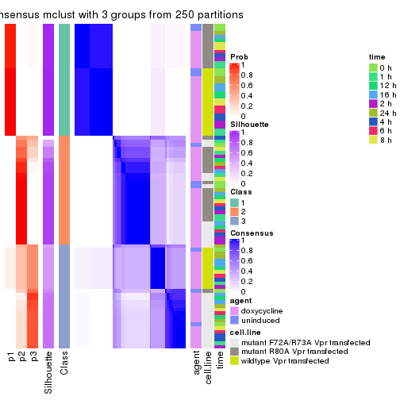
consensus_heatmap(res, k = 4)
consensus_heatmap(res, k = 5)
consensus_heatmap(res, k = 6)
Heatmaps for the membership of samples in all partitions to see how consistent they are:
membership_heatmap(res, k = 2)
membership_heatmap(res, k = 3)
membership_heatmap(res, k = 4)
membership_heatmap(res, k = 5)
membership_heatmap(res, k = 6)
As soon as we have had the classes for columns, we can look for signatures which are significantly different between classes which can be candidate marks for certain classes. Following are the heatmaps for signatures.
Signature heatmaps where rows are scaled:
get_signatures(res, k = 2)
get_signatures(res, k = 3)
get_signatures(res, k = 4)
get_signatures(res, k = 5)
get_signatures(res, k = 6)
Signature heatmaps where rows are not scaled:
get_signatures(res, k = 2, scale_rows = FALSE)
get_signatures(res, k = 3, scale_rows = FALSE)
get_signatures(res, k = 4, scale_rows = FALSE)
get_signatures(res, k = 5, scale_rows = FALSE)
get_signatures(res, k = 6, scale_rows = FALSE)
Compare the overlap of signatures from different k:
compare_signatures(res)
get_signature() returns a data frame invisibly. TO get the list of signatures, the function
call should be assigned to a variable explicitly. In following code, if plot argument is set
to FALSE, no heatmap is plotted while only the differential analysis is performed.
# code only for demonstration
tb = get_signature(res, k = ..., plot = FALSE)
An example of the output of tb is:
#> which_row fdr mean_1 mean_2 scaled_mean_1 scaled_mean_2 km
#> 1 38 0.042760348 8.373488 9.131774 -0.5533452 0.5164555 1
#> 2 40 0.018707592 7.106213 8.469186 -0.6173731 0.5762149 1
#> 3 55 0.019134737 10.221463 11.207825 -0.6159697 0.5749050 1
#> 4 59 0.006059896 5.921854 7.869574 -0.6899429 0.6439467 1
#> 5 60 0.018055526 8.928898 10.211722 -0.6204761 0.5791110 1
#> 6 98 0.009384629 15.714769 14.887706 0.6635654 -0.6193277 2
...
The columns in tb are:
which_row: row indices corresponding to the input matrix.fdr: FDR for the differential test. mean_x: The mean value in group x.scaled_mean_x: The mean value in group x after rows are scaled.km: Row groups if k-means clustering is applied to rows.UMAP plot which shows how samples are separated.
dimension_reduction(res, k = 2, method = "UMAP")
dimension_reduction(res, k = 3, method = "UMAP")
dimension_reduction(res, k = 4, method = "UMAP")
dimension_reduction(res, k = 5, method = "UMAP")
dimension_reduction(res, k = 6, method = "UMAP")
Following heatmap shows how subgroups are split when increasing k:
collect_classes(res)
Test correlation between subgroups and known annotations. If the known annotation is numeric, one-way ANOVA test is applied, and if the known annotation is discrete, chi-squared contingency table test is applied.
test_to_known_factors(res)
#> n agent(p) cell.line(p) time(p) k
#> MAD:mclust 87 0.886 2.79e-01 0.998 2
#> MAD:mclust 83 0.794 5.14e-09 1.000 3
#> MAD:mclust 82 0.865 1.37e-15 1.000 4
#> MAD:mclust 83 0.933 1.51e-23 1.000 5
#> MAD:mclust 84 0.995 2.12e-21 1.000 6
If matrix rows can be associated to genes, consider to use functional_enrichment(res,
...) to perform function enrichment for the signature genes. See this vignette for more detailed explanations.
The object with results only for a single top-value method and a single partition method can be extracted as:
res = res_list["MAD", "NMF"]
# you can also extract it by
# res = res_list["MAD:NMF"]
A summary of res and all the functions that can be applied to it:
res
#> A 'ConsensusPartition' object with k = 2, 3, 4, 5, 6.
#> On a matrix with 18211 rows and 87 columns.
#> Top rows (1000, 2000, 3000, 4000, 5000) are extracted by 'MAD' method.
#> Subgroups are detected by 'NMF' method.
#> Performed in total 1250 partitions by row resampling.
#> Best k for subgroups seems to be 2.
#>
#> Following methods can be applied to this 'ConsensusPartition' object:
#> [1] "cola_report" "collect_classes" "collect_plots"
#> [4] "collect_stats" "colnames" "compare_signatures"
#> [7] "consensus_heatmap" "dimension_reduction" "functional_enrichment"
#> [10] "get_anno_col" "get_anno" "get_classes"
#> [13] "get_consensus" "get_matrix" "get_membership"
#> [16] "get_param" "get_signatures" "get_stats"
#> [19] "is_best_k" "is_stable_k" "membership_heatmap"
#> [22] "ncol" "nrow" "plot_ecdf"
#> [25] "rownames" "select_partition_number" "show"
#> [28] "suggest_best_k" "test_to_known_factors"
collect_plots() function collects all the plots made from res for all k (number of partitions)
into one single page to provide an easy and fast comparison between different k.
collect_plots(res)
The plots are:
k and the heatmap of
predicted classes for each k.k.k.k.All the plots in panels can be made by individual functions and they are plotted later in this section.
select_partition_number() produces several plots showing different
statistics for choosing “optimized” k. There are following statistics:
k;k, the area increased is defined as \(A_k - A_{k-1}\).The detailed explanations of these statistics can be found in the cola vignette.
Generally speaking, lower PAC score, higher mean silhouette score or higher
concordance corresponds to better partition. Rand index and Jaccard index
measure how similar the current partition is compared to partition with k-1.
If they are too similar, we won't accept k is better than k-1.
select_partition_number(res)
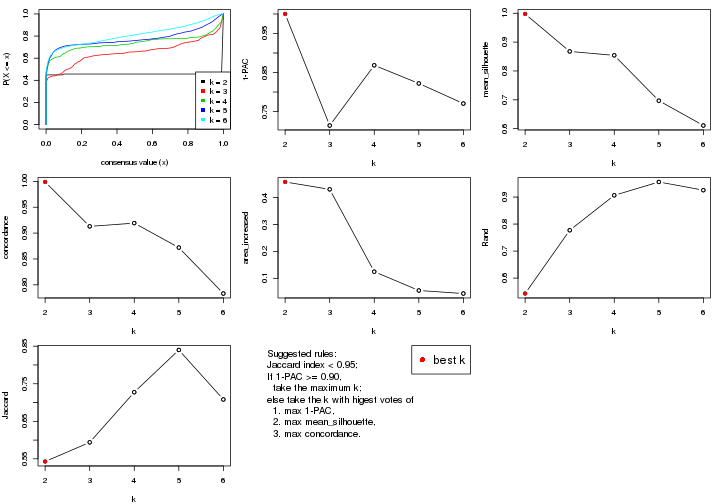
The numeric values for all these statistics can be obtained by get_stats().
get_stats(res)
#> k 1-PAC mean_silhouette concordance area_increased Rand Jaccard
#> 2 2 1.000 0.998 0.999 0.4583 0.543 0.543
#> 3 3 0.714 0.868 0.913 0.4308 0.777 0.594
#> 4 4 0.868 0.854 0.919 0.1247 0.906 0.727
#> 5 5 0.822 0.697 0.872 0.0547 0.956 0.840
#> 6 6 0.771 0.611 0.783 0.0434 0.925 0.708
suggest_best_k() suggests the best \(k\) based on these statistics. The rules are as follows:
suggest_best_k(res)
#> [1] 2
Following shows the table of the partitions (You need to click the show/hide
code output link to see it). The membership matrix (columns with name p*)
is inferred by
clue::cl_consensus()
function with the SE method. Basically the value in the membership matrix
represents the probability to belong to a certain group. The finall class
label for an item is determined with the group with highest probability it
belongs to.
In get_classes() function, the entropy is calculated from the membership
matrix and the silhouette score is calculated from the consensus matrix.
cbind(get_classes(res, k = 2), get_membership(res, k = 2))
#> class entropy silhouette p1 p2
#> GSM41890 1 0.000 1.000 1.0 0.0
#> GSM41917 1 0.000 1.000 1.0 0.0
#> GSM41936 2 0.000 0.998 0.0 1.0
#> GSM41893 1 0.000 1.000 1.0 0.0
#> GSM41920 1 0.000 1.000 1.0 0.0
#> GSM41937 2 0.000 0.998 0.0 1.0
#> GSM41896 1 0.000 1.000 1.0 0.0
#> GSM41923 1 0.000 1.000 1.0 0.0
#> GSM41938 2 0.000 0.998 0.0 1.0
#> GSM41899 1 0.000 1.000 1.0 0.0
#> GSM41925 1 0.000 1.000 1.0 0.0
#> GSM41939 2 0.000 0.998 0.0 1.0
#> GSM41902 1 0.000 1.000 1.0 0.0
#> GSM41927 1 0.000 1.000 1.0 0.0
#> GSM41940 2 0.000 0.998 0.0 1.0
#> GSM41905 1 0.000 1.000 1.0 0.0
#> GSM41929 1 0.000 1.000 1.0 0.0
#> GSM41941 2 0.000 0.998 0.0 1.0
#> GSM41908 1 0.000 1.000 1.0 0.0
#> GSM41931 1 0.000 1.000 1.0 0.0
#> GSM41942 2 0.000 0.998 0.0 1.0
#> GSM41945 2 0.000 0.998 0.0 1.0
#> GSM41911 1 0.000 1.000 1.0 0.0
#> GSM41933 1 0.000 1.000 1.0 0.0
#> GSM41943 2 0.000 0.998 0.0 1.0
#> GSM41944 2 0.000 0.998 0.0 1.0
#> GSM41876 2 0.000 0.998 0.0 1.0
#> GSM41895 2 0.000 0.998 0.0 1.0
#> GSM41898 2 0.000 0.998 0.0 1.0
#> GSM41877 2 0.000 0.998 0.0 1.0
#> GSM41901 2 0.000 0.998 0.0 1.0
#> GSM41904 2 0.000 0.998 0.0 1.0
#> GSM41878 2 0.000 0.998 0.0 1.0
#> GSM41907 2 0.000 0.998 0.0 1.0
#> GSM41910 2 0.000 0.998 0.0 1.0
#> GSM41879 2 0.000 0.998 0.0 1.0
#> GSM41913 2 0.000 0.998 0.0 1.0
#> GSM41916 2 0.000 0.998 0.0 1.0
#> GSM41880 2 0.000 0.998 0.0 1.0
#> GSM41919 2 0.000 0.998 0.0 1.0
#> GSM41922 2 0.000 0.998 0.0 1.0
#> GSM41881 2 0.000 0.998 0.0 1.0
#> GSM41924 2 0.000 0.998 0.0 1.0
#> GSM41926 2 0.000 0.998 0.0 1.0
#> GSM41869 2 0.000 0.998 0.0 1.0
#> GSM41928 2 0.469 0.889 0.1 0.9
#> GSM41930 2 0.000 0.998 0.0 1.0
#> GSM41882 2 0.000 0.998 0.0 1.0
#> GSM41932 2 0.000 0.998 0.0 1.0
#> GSM41934 2 0.000 0.998 0.0 1.0
#> GSM41860 2 0.000 0.998 0.0 1.0
#> GSM41871 2 0.000 0.998 0.0 1.0
#> GSM41875 2 0.000 0.998 0.0 1.0
#> GSM41894 1 0.000 1.000 1.0 0.0
#> GSM41897 1 0.000 1.000 1.0 0.0
#> GSM41861 2 0.000 0.998 0.0 1.0
#> GSM41872 2 0.000 0.998 0.0 1.0
#> GSM41900 1 0.000 1.000 1.0 0.0
#> GSM41862 2 0.000 0.998 0.0 1.0
#> GSM41873 2 0.000 0.998 0.0 1.0
#> GSM41903 1 0.000 1.000 1.0 0.0
#> GSM41863 2 0.000 0.998 0.0 1.0
#> GSM41883 2 0.000 0.998 0.0 1.0
#> GSM41906 1 0.000 1.000 1.0 0.0
#> GSM41864 2 0.000 0.998 0.0 1.0
#> GSM41884 2 0.000 0.998 0.0 1.0
#> GSM41909 1 0.000 1.000 1.0 0.0
#> GSM41912 1 0.000 1.000 1.0 0.0
#> GSM41865 2 0.000 0.998 0.0 1.0
#> GSM41885 2 0.000 0.998 0.0 1.0
#> GSM41915 1 0.000 1.000 1.0 0.0
#> GSM41866 2 0.000 0.998 0.0 1.0
#> GSM41886 2 0.000 0.998 0.0 1.0
#> GSM41918 1 0.000 1.000 1.0 0.0
#> GSM41867 2 0.000 0.998 0.0 1.0
#> GSM41868 2 0.000 0.998 0.0 1.0
#> GSM41921 1 0.000 1.000 1.0 0.0
#> GSM41887 1 0.000 1.000 1.0 0.0
#> GSM41914 1 0.000 1.000 1.0 0.0
#> GSM41935 2 0.000 0.998 0.0 1.0
#> GSM41874 2 0.000 0.998 0.0 1.0
#> GSM41889 2 0.000 0.998 0.0 1.0
#> GSM41892 2 0.000 0.998 0.0 1.0
#> GSM41859 2 0.000 0.998 0.0 1.0
#> GSM41870 2 0.000 0.998 0.0 1.0
#> GSM41888 1 0.000 1.000 1.0 0.0
#> GSM41891 1 0.000 1.000 1.0 0.0
cbind(get_classes(res, k = 3), get_membership(res, k = 3))
#> class entropy silhouette p1 p2 p3
#> GSM41890 1 0.0000 0.98932 1.000 0.000 0.000
#> GSM41917 1 0.1585 0.97124 0.964 0.028 0.008
#> GSM41936 2 0.5016 0.67493 0.000 0.760 0.240
#> GSM41893 1 0.0237 0.98899 0.996 0.004 0.000
#> GSM41920 1 0.0892 0.98161 0.980 0.020 0.000
#> GSM41937 2 0.3340 0.81928 0.000 0.880 0.120
#> GSM41896 1 0.0000 0.98932 1.000 0.000 0.000
#> GSM41923 1 0.0424 0.98796 0.992 0.008 0.000
#> GSM41938 2 0.3752 0.79931 0.000 0.856 0.144
#> GSM41899 1 0.0000 0.98932 1.000 0.000 0.000
#> GSM41925 1 0.0000 0.98932 1.000 0.000 0.000
#> GSM41939 2 0.2878 0.83662 0.000 0.904 0.096
#> GSM41902 3 0.7049 0.07078 0.452 0.020 0.528
#> GSM41927 1 0.0424 0.98796 0.992 0.008 0.000
#> GSM41940 2 0.2878 0.83279 0.000 0.904 0.096
#> GSM41905 1 0.0747 0.98405 0.984 0.016 0.000
#> GSM41929 1 0.0237 0.98899 0.996 0.004 0.000
#> GSM41941 2 0.2625 0.83583 0.000 0.916 0.084
#> GSM41908 1 0.0661 0.98648 0.988 0.008 0.004
#> GSM41931 1 0.0892 0.98161 0.980 0.020 0.000
#> GSM41942 2 0.2625 0.83583 0.000 0.916 0.084
#> GSM41945 2 0.2711 0.83393 0.000 0.912 0.088
#> GSM41911 1 0.0237 0.98855 0.996 0.000 0.004
#> GSM41933 1 0.0237 0.98899 0.996 0.004 0.000
#> GSM41943 2 0.2448 0.83832 0.000 0.924 0.076
#> GSM41944 2 0.3482 0.81360 0.000 0.872 0.128
#> GSM41876 2 0.4399 0.86457 0.000 0.812 0.188
#> GSM41895 3 0.3116 0.82568 0.000 0.108 0.892
#> GSM41898 3 0.0892 0.88152 0.000 0.020 0.980
#> GSM41877 2 0.3879 0.87655 0.000 0.848 0.152
#> GSM41901 3 0.0892 0.88152 0.000 0.020 0.980
#> GSM41904 2 0.4504 0.85516 0.000 0.804 0.196
#> GSM41878 2 0.4178 0.86691 0.000 0.828 0.172
#> GSM41907 3 0.0892 0.88152 0.000 0.020 0.980
#> GSM41910 3 0.0592 0.88349 0.000 0.012 0.988
#> GSM41879 2 0.4346 0.86714 0.000 0.816 0.184
#> GSM41913 3 0.0892 0.88152 0.000 0.020 0.980
#> GSM41916 3 0.0747 0.88269 0.000 0.016 0.984
#> GSM41880 2 0.4504 0.86051 0.000 0.804 0.196
#> GSM41919 3 0.0892 0.88234 0.000 0.020 0.980
#> GSM41922 3 0.0747 0.88373 0.000 0.016 0.984
#> GSM41881 2 0.4555 0.85488 0.000 0.800 0.200
#> GSM41924 3 0.0747 0.88365 0.000 0.016 0.984
#> GSM41926 3 0.1031 0.88327 0.000 0.024 0.976
#> GSM41869 2 0.3686 0.88034 0.000 0.860 0.140
#> GSM41928 3 0.1751 0.86013 0.028 0.012 0.960
#> GSM41930 3 0.0747 0.88373 0.000 0.016 0.984
#> GSM41882 3 0.3752 0.79388 0.000 0.144 0.856
#> GSM41932 3 0.0747 0.88365 0.000 0.016 0.984
#> GSM41934 3 0.1031 0.88031 0.000 0.024 0.976
#> GSM41860 3 0.6260 -0.00775 0.000 0.448 0.552
#> GSM41871 2 0.3686 0.88044 0.000 0.860 0.140
#> GSM41875 2 0.1860 0.86517 0.000 0.948 0.052
#> GSM41894 1 0.0000 0.98932 1.000 0.000 0.000
#> GSM41897 1 0.0424 0.98785 0.992 0.000 0.008
#> GSM41861 3 0.3816 0.77752 0.000 0.148 0.852
#> GSM41872 2 0.3686 0.88146 0.000 0.860 0.140
#> GSM41900 1 0.0000 0.98932 1.000 0.000 0.000
#> GSM41862 3 0.5431 0.56973 0.000 0.284 0.716
#> GSM41873 2 0.3941 0.88017 0.000 0.844 0.156
#> GSM41903 1 0.1015 0.98201 0.980 0.008 0.012
#> GSM41863 2 0.3482 0.86090 0.000 0.872 0.128
#> GSM41883 2 0.3686 0.88044 0.000 0.860 0.140
#> GSM41906 1 0.0829 0.98449 0.984 0.004 0.012
#> GSM41864 3 0.6235 0.07275 0.000 0.436 0.564
#> GSM41884 2 0.4002 0.87964 0.000 0.840 0.160
#> GSM41909 1 0.0237 0.98887 0.996 0.000 0.004
#> GSM41912 1 0.0592 0.98634 0.988 0.000 0.012
#> GSM41865 2 0.4399 0.86492 0.000 0.812 0.188
#> GSM41885 2 0.2261 0.87094 0.000 0.932 0.068
#> GSM41915 1 0.0424 0.98785 0.992 0.000 0.008
#> GSM41866 2 0.2796 0.87751 0.000 0.908 0.092
#> GSM41886 2 0.3686 0.88034 0.000 0.860 0.140
#> GSM41918 1 0.0237 0.98887 0.996 0.000 0.004
#> GSM41867 2 0.1643 0.85976 0.000 0.956 0.044
#> GSM41868 2 0.4062 0.87114 0.000 0.836 0.164
#> GSM41921 1 0.0424 0.98785 0.992 0.000 0.008
#> GSM41887 1 0.0237 0.98899 0.996 0.004 0.000
#> GSM41914 1 0.4045 0.87111 0.872 0.024 0.104
#> GSM41935 2 0.3551 0.81633 0.000 0.868 0.132
#> GSM41874 2 0.4235 0.86483 0.000 0.824 0.176
#> GSM41889 3 0.3267 0.81882 0.000 0.116 0.884
#> GSM41892 3 0.0892 0.88152 0.000 0.020 0.980
#> GSM41859 3 0.0747 0.88365 0.000 0.016 0.984
#> GSM41870 2 0.3267 0.88056 0.000 0.884 0.116
#> GSM41888 1 0.0000 0.98932 1.000 0.000 0.000
#> GSM41891 1 0.0237 0.98887 0.996 0.000 0.004
cbind(get_classes(res, k = 4), get_membership(res, k = 4))
#> class entropy silhouette p1 p2 p3 p4
#> GSM41890 1 0.0376 0.9596 0.992 0.004 0.000 0.004
#> GSM41917 1 0.2831 0.8727 0.876 0.004 0.000 0.120
#> GSM41936 4 0.2730 0.9322 0.000 0.088 0.016 0.896
#> GSM41893 1 0.0376 0.9607 0.992 0.004 0.000 0.004
#> GSM41920 1 0.1398 0.9433 0.956 0.004 0.000 0.040
#> GSM41937 4 0.2466 0.9418 0.000 0.096 0.004 0.900
#> GSM41896 1 0.0188 0.9601 0.996 0.004 0.000 0.000
#> GSM41923 1 0.0000 0.9605 1.000 0.000 0.000 0.000
#> GSM41938 4 0.2466 0.9418 0.000 0.096 0.004 0.900
#> GSM41899 1 0.0188 0.9604 0.996 0.000 0.000 0.004
#> GSM41925 1 0.0000 0.9605 1.000 0.000 0.000 0.000
#> GSM41939 4 0.2466 0.9418 0.000 0.096 0.004 0.900
#> GSM41902 1 0.6002 0.4854 0.628 0.004 0.316 0.052
#> GSM41927 1 0.0000 0.9605 1.000 0.000 0.000 0.000
#> GSM41940 4 0.2401 0.9412 0.000 0.092 0.004 0.904
#> GSM41905 1 0.0779 0.9560 0.980 0.004 0.000 0.016
#> GSM41929 1 0.0336 0.9595 0.992 0.000 0.000 0.008
#> GSM41941 4 0.2466 0.9418 0.000 0.096 0.004 0.900
#> GSM41908 1 0.1004 0.9524 0.972 0.004 0.000 0.024
#> GSM41931 1 0.1004 0.9519 0.972 0.004 0.000 0.024
#> GSM41942 4 0.2466 0.9418 0.000 0.096 0.004 0.900
#> GSM41945 4 0.2401 0.9412 0.000 0.092 0.004 0.904
#> GSM41911 1 0.0188 0.9601 0.996 0.004 0.000 0.000
#> GSM41933 1 0.0188 0.9601 0.996 0.004 0.000 0.000
#> GSM41943 4 0.2466 0.9418 0.000 0.096 0.004 0.900
#> GSM41944 4 0.2401 0.9412 0.000 0.092 0.004 0.904
#> GSM41876 2 0.2376 0.8926 0.000 0.916 0.016 0.068
#> GSM41895 3 0.2466 0.8358 0.000 0.096 0.900 0.004
#> GSM41898 3 0.0000 0.9011 0.000 0.000 1.000 0.000
#> GSM41877 2 0.0779 0.9057 0.000 0.980 0.004 0.016
#> GSM41901 3 0.0000 0.9011 0.000 0.000 1.000 0.000
#> GSM41904 2 0.1610 0.9054 0.000 0.952 0.016 0.032
#> GSM41878 2 0.0188 0.9005 0.000 0.996 0.004 0.000
#> GSM41907 3 0.0000 0.9011 0.000 0.000 1.000 0.000
#> GSM41910 3 0.0000 0.9011 0.000 0.000 1.000 0.000
#> GSM41879 2 0.1677 0.9053 0.000 0.948 0.012 0.040
#> GSM41913 3 0.0000 0.9011 0.000 0.000 1.000 0.000
#> GSM41916 3 0.0000 0.9011 0.000 0.000 1.000 0.000
#> GSM41880 2 0.2101 0.8988 0.000 0.928 0.012 0.060
#> GSM41919 3 0.0376 0.8992 0.000 0.004 0.992 0.004
#> GSM41922 3 0.0000 0.9011 0.000 0.000 1.000 0.000
#> GSM41881 2 0.2142 0.8989 0.000 0.928 0.016 0.056
#> GSM41924 3 0.0000 0.9011 0.000 0.000 1.000 0.000
#> GSM41926 3 0.0376 0.8992 0.000 0.004 0.992 0.004
#> GSM41869 2 0.0188 0.9005 0.000 0.996 0.004 0.000
#> GSM41928 3 0.0188 0.9004 0.000 0.004 0.996 0.000
#> GSM41930 3 0.0000 0.9011 0.000 0.000 1.000 0.000
#> GSM41882 3 0.5408 -0.0432 0.000 0.012 0.500 0.488
#> GSM41932 3 0.0188 0.9004 0.000 0.004 0.996 0.000
#> GSM41934 3 0.0188 0.9004 0.000 0.004 0.996 0.000
#> GSM41860 3 0.5792 0.2740 0.000 0.416 0.552 0.032
#> GSM41871 2 0.1042 0.9067 0.000 0.972 0.008 0.020
#> GSM41875 2 0.3764 0.7254 0.000 0.784 0.000 0.216
#> GSM41894 1 0.0817 0.9581 0.976 0.000 0.000 0.024
#> GSM41897 1 0.1557 0.9488 0.944 0.000 0.000 0.056
#> GSM41861 3 0.2450 0.8474 0.000 0.072 0.912 0.016
#> GSM41872 2 0.1489 0.9053 0.000 0.952 0.004 0.044
#> GSM41900 1 0.1022 0.9564 0.968 0.000 0.000 0.032
#> GSM41862 4 0.6278 0.2530 0.000 0.060 0.408 0.532
#> GSM41873 2 0.1722 0.9043 0.000 0.944 0.008 0.048
#> GSM41903 1 0.2125 0.9362 0.920 0.004 0.000 0.076
#> GSM41863 4 0.4595 0.8167 0.000 0.176 0.044 0.780
#> GSM41883 2 0.0524 0.8964 0.000 0.988 0.004 0.008
#> GSM41906 1 0.2676 0.9204 0.896 0.012 0.000 0.092
#> GSM41864 3 0.6452 0.0591 0.000 0.460 0.472 0.068
#> GSM41884 2 0.1284 0.9066 0.000 0.964 0.012 0.024
#> GSM41909 1 0.1022 0.9564 0.968 0.000 0.000 0.032
#> GSM41912 1 0.1118 0.9554 0.964 0.000 0.000 0.036
#> GSM41865 2 0.2179 0.8969 0.000 0.924 0.012 0.064
#> GSM41885 2 0.2814 0.8363 0.000 0.868 0.000 0.132
#> GSM41915 1 0.1389 0.9518 0.952 0.000 0.000 0.048
#> GSM41866 2 0.5408 -0.0260 0.000 0.500 0.012 0.488
#> GSM41886 2 0.0524 0.8964 0.000 0.988 0.004 0.008
#> GSM41918 1 0.1474 0.9507 0.948 0.000 0.000 0.052
#> GSM41867 2 0.5000 -0.0265 0.000 0.504 0.000 0.496
#> GSM41868 2 0.0524 0.8964 0.000 0.988 0.004 0.008
#> GSM41921 1 0.1557 0.9489 0.944 0.000 0.000 0.056
#> GSM41887 1 0.0188 0.9601 0.996 0.004 0.000 0.000
#> GSM41914 1 0.2845 0.9058 0.904 0.004 0.036 0.056
#> GSM41935 4 0.2401 0.9412 0.000 0.092 0.004 0.904
#> GSM41874 2 0.0657 0.8989 0.000 0.984 0.004 0.012
#> GSM41889 3 0.3569 0.7404 0.000 0.196 0.804 0.000
#> GSM41892 3 0.0000 0.9011 0.000 0.000 1.000 0.000
#> GSM41859 3 0.0188 0.9004 0.000 0.004 0.996 0.000
#> GSM41870 2 0.0895 0.9062 0.000 0.976 0.004 0.020
#> GSM41888 1 0.0000 0.9605 1.000 0.000 0.000 0.000
#> GSM41891 1 0.1211 0.9543 0.960 0.000 0.000 0.040
cbind(get_classes(res, k = 5), get_membership(res, k = 5))
#> class entropy silhouette p1 p2 p3 p4 p5
#> GSM41890 1 0.0290 0.6605 0.992 0.000 0.000 0.000 0.008
#> GSM41917 1 0.3366 0.5086 0.844 0.000 0.008 0.032 0.116
#> GSM41936 4 0.1314 0.8894 0.000 0.016 0.012 0.960 0.012
#> GSM41893 1 0.2011 0.6149 0.908 0.000 0.004 0.000 0.088
#> GSM41920 1 0.2540 0.5754 0.888 0.000 0.000 0.024 0.088
#> GSM41937 4 0.2230 0.8783 0.000 0.044 0.000 0.912 0.044
#> GSM41896 1 0.0865 0.6556 0.972 0.000 0.004 0.000 0.024
#> GSM41923 1 0.0510 0.6579 0.984 0.000 0.000 0.000 0.016
#> GSM41938 4 0.1216 0.8871 0.000 0.020 0.000 0.960 0.020
#> GSM41899 1 0.1410 0.6323 0.940 0.000 0.000 0.000 0.060
#> GSM41925 1 0.0880 0.6503 0.968 0.000 0.000 0.000 0.032
#> GSM41939 4 0.3186 0.8609 0.000 0.080 0.008 0.864 0.048
#> GSM41902 1 0.6732 -0.0220 0.544 0.004 0.224 0.016 0.212
#> GSM41927 1 0.0510 0.6607 0.984 0.000 0.000 0.000 0.016
#> GSM41940 4 0.1579 0.8860 0.000 0.032 0.000 0.944 0.024
#> GSM41905 1 0.2054 0.6090 0.920 0.000 0.000 0.028 0.052
#> GSM41929 1 0.0693 0.6597 0.980 0.000 0.000 0.008 0.012
#> GSM41941 4 0.1399 0.8872 0.000 0.028 0.000 0.952 0.020
#> GSM41908 1 0.2952 0.5443 0.868 0.000 0.020 0.008 0.104
#> GSM41931 1 0.0510 0.6581 0.984 0.000 0.000 0.000 0.016
#> GSM41942 4 0.2569 0.8687 0.000 0.068 0.000 0.892 0.040
#> GSM41945 4 0.0981 0.8879 0.000 0.012 0.008 0.972 0.008
#> GSM41911 1 0.0290 0.6599 0.992 0.000 0.000 0.000 0.008
#> GSM41933 1 0.0000 0.6605 1.000 0.000 0.000 0.000 0.000
#> GSM41943 4 0.1750 0.8838 0.000 0.028 0.000 0.936 0.036
#> GSM41944 4 0.1186 0.8853 0.000 0.008 0.008 0.964 0.020
#> GSM41876 2 0.0609 0.9555 0.000 0.980 0.000 0.000 0.020
#> GSM41895 3 0.3472 0.8675 0.000 0.032 0.856 0.036 0.076
#> GSM41898 3 0.1952 0.8806 0.000 0.000 0.912 0.004 0.084
#> GSM41877 2 0.0865 0.9540 0.000 0.972 0.000 0.004 0.024
#> GSM41901 3 0.1845 0.8905 0.000 0.000 0.928 0.016 0.056
#> GSM41904 2 0.1704 0.9371 0.000 0.928 0.004 0.000 0.068
#> GSM41878 2 0.0162 0.9565 0.000 0.996 0.000 0.000 0.004
#> GSM41907 3 0.1408 0.8961 0.000 0.000 0.948 0.008 0.044
#> GSM41910 3 0.1952 0.8806 0.000 0.000 0.912 0.004 0.084
#> GSM41879 2 0.0510 0.9554 0.000 0.984 0.000 0.000 0.016
#> GSM41913 3 0.0693 0.8962 0.000 0.000 0.980 0.008 0.012
#> GSM41916 3 0.1282 0.8944 0.000 0.000 0.952 0.004 0.044
#> GSM41880 2 0.1731 0.9380 0.000 0.932 0.004 0.004 0.060
#> GSM41919 3 0.3609 0.8464 0.000 0.004 0.816 0.032 0.148
#> GSM41922 3 0.1478 0.8891 0.000 0.000 0.936 0.000 0.064
#> GSM41881 2 0.5647 0.6931 0.000 0.684 0.028 0.108 0.180
#> GSM41924 3 0.1356 0.8981 0.000 0.012 0.956 0.004 0.028
#> GSM41926 3 0.2332 0.8849 0.000 0.004 0.904 0.016 0.076
#> GSM41869 2 0.0566 0.9563 0.000 0.984 0.000 0.004 0.012
#> GSM41928 3 0.4116 0.8098 0.000 0.004 0.756 0.028 0.212
#> GSM41930 3 0.1197 0.8942 0.000 0.000 0.952 0.000 0.048
#> GSM41882 4 0.3595 0.7871 0.000 0.000 0.140 0.816 0.044
#> GSM41932 3 0.1605 0.8931 0.000 0.004 0.944 0.012 0.040
#> GSM41934 3 0.1990 0.8904 0.000 0.004 0.920 0.008 0.068
#> GSM41860 3 0.6060 0.2620 0.000 0.408 0.508 0.048 0.036
#> GSM41871 2 0.0771 0.9548 0.000 0.976 0.000 0.004 0.020
#> GSM41875 2 0.0898 0.9535 0.000 0.972 0.000 0.020 0.008
#> GSM41894 1 0.2813 0.4470 0.832 0.000 0.000 0.000 0.168
#> GSM41897 1 0.3730 0.0503 0.712 0.000 0.000 0.000 0.288
#> GSM41861 3 0.4399 0.8223 0.000 0.036 0.800 0.088 0.076
#> GSM41872 2 0.1012 0.9547 0.000 0.968 0.000 0.012 0.020
#> GSM41900 1 0.3336 0.2856 0.772 0.000 0.000 0.000 0.228
#> GSM41862 4 0.4170 0.7632 0.000 0.000 0.140 0.780 0.080
#> GSM41873 2 0.1168 0.9508 0.000 0.960 0.000 0.008 0.032
#> GSM41903 1 0.4192 -0.5929 0.596 0.000 0.000 0.000 0.404
#> GSM41863 4 0.2436 0.8776 0.000 0.020 0.032 0.912 0.036
#> GSM41883 2 0.0566 0.9559 0.000 0.984 0.000 0.004 0.012
#> GSM41906 5 0.4305 0.0000 0.488 0.000 0.000 0.000 0.512
#> GSM41864 4 0.7600 0.1815 0.000 0.060 0.312 0.420 0.208
#> GSM41884 2 0.1430 0.9442 0.000 0.944 0.000 0.004 0.052
#> GSM41909 1 0.3684 0.0894 0.720 0.000 0.000 0.000 0.280
#> GSM41912 1 0.3730 0.0503 0.712 0.000 0.000 0.000 0.288
#> GSM41865 2 0.2554 0.9207 0.000 0.896 0.008 0.020 0.076
#> GSM41885 2 0.1364 0.9507 0.000 0.952 0.000 0.012 0.036
#> GSM41915 1 0.3932 -0.1943 0.672 0.000 0.000 0.000 0.328
#> GSM41866 4 0.3310 0.8627 0.000 0.040 0.056 0.868 0.036
#> GSM41886 2 0.0451 0.9566 0.000 0.988 0.000 0.004 0.008
#> GSM41918 1 0.3730 0.0503 0.712 0.000 0.000 0.000 0.288
#> GSM41867 4 0.4402 0.6032 0.000 0.292 0.012 0.688 0.008
#> GSM41868 2 0.0703 0.9541 0.000 0.976 0.000 0.000 0.024
#> GSM41921 1 0.4015 -0.3028 0.652 0.000 0.000 0.000 0.348
#> GSM41887 1 0.1430 0.6320 0.944 0.000 0.000 0.004 0.052
#> GSM41914 1 0.2590 0.5912 0.900 0.000 0.012 0.028 0.060
#> GSM41935 4 0.1405 0.8883 0.000 0.020 0.008 0.956 0.016
#> GSM41874 2 0.2660 0.9007 0.000 0.864 0.000 0.008 0.128
#> GSM41889 3 0.4404 0.8172 0.000 0.104 0.788 0.016 0.092
#> GSM41892 3 0.1792 0.8832 0.000 0.000 0.916 0.000 0.084
#> GSM41859 3 0.1808 0.8949 0.000 0.008 0.936 0.012 0.044
#> GSM41870 2 0.1205 0.9492 0.000 0.956 0.000 0.004 0.040
#> GSM41888 1 0.0324 0.6608 0.992 0.000 0.000 0.004 0.004
#> GSM41891 1 0.3636 0.1239 0.728 0.000 0.000 0.000 0.272
cbind(get_classes(res, k = 6), get_membership(res, k = 6))
#> class entropy silhouette p1 p2 p3 p4 p5 p6
#> GSM41890 1 0.4289 0.6969 0.556 0.000 0.000 0.000 0.424 0.020
#> GSM41917 1 0.3543 0.7605 0.764 0.000 0.000 0.020 0.212 0.004
#> GSM41936 4 0.1498 0.7128 0.024 0.012 0.004 0.948 0.000 0.012
#> GSM41893 5 0.5694 0.1670 0.324 0.000 0.012 0.008 0.552 0.104
#> GSM41920 1 0.3488 0.7869 0.744 0.000 0.000 0.008 0.244 0.004
#> GSM41937 4 0.1630 0.7098 0.024 0.020 0.000 0.940 0.000 0.016
#> GSM41896 5 0.4689 -0.4471 0.440 0.000 0.000 0.000 0.516 0.044
#> GSM41923 1 0.3706 0.7724 0.620 0.000 0.000 0.000 0.380 0.000
#> GSM41938 4 0.1570 0.7128 0.016 0.008 0.004 0.944 0.000 0.028
#> GSM41899 5 0.3867 -0.5409 0.488 0.000 0.000 0.000 0.512 0.000
#> GSM41925 1 0.3717 0.7677 0.616 0.000 0.000 0.000 0.384 0.000
#> GSM41939 4 0.3181 0.6475 0.028 0.044 0.000 0.852 0.000 0.076
#> GSM41902 1 0.5510 0.6309 0.676 0.000 0.108 0.008 0.156 0.052
#> GSM41927 1 0.3919 0.7924 0.708 0.000 0.000 0.008 0.268 0.016
#> GSM41940 4 0.1251 0.7149 0.024 0.008 0.000 0.956 0.000 0.012
#> GSM41905 1 0.3674 0.8013 0.716 0.000 0.000 0.016 0.268 0.000
#> GSM41929 1 0.4296 0.7633 0.700 0.000 0.000 0.012 0.252 0.036
#> GSM41941 4 0.1237 0.7166 0.020 0.004 0.000 0.956 0.000 0.020
#> GSM41908 1 0.5930 0.5647 0.544 0.000 0.012 0.020 0.320 0.104
#> GSM41931 1 0.3699 0.8012 0.660 0.000 0.000 0.000 0.336 0.004
#> GSM41942 4 0.2540 0.6880 0.044 0.020 0.000 0.892 0.000 0.044
#> GSM41945 4 0.1765 0.7065 0.024 0.000 0.000 0.924 0.000 0.052
#> GSM41911 1 0.4141 0.6891 0.556 0.000 0.000 0.000 0.432 0.012
#> GSM41933 1 0.3563 0.8002 0.664 0.000 0.000 0.000 0.336 0.000
#> GSM41943 4 0.1536 0.7153 0.040 0.004 0.000 0.940 0.000 0.016
#> GSM41944 4 0.2214 0.6768 0.012 0.000 0.004 0.892 0.000 0.092
#> GSM41876 2 0.2763 0.8277 0.028 0.876 0.000 0.024 0.000 0.072
#> GSM41895 3 0.5137 0.6206 0.032 0.040 0.692 0.028 0.000 0.208
#> GSM41898 3 0.2480 0.7626 0.024 0.000 0.872 0.000 0.000 0.104
#> GSM41877 2 0.1194 0.8686 0.004 0.956 0.000 0.008 0.000 0.032
#> GSM41901 3 0.2743 0.7560 0.000 0.000 0.828 0.008 0.000 0.164
#> GSM41904 2 0.3976 0.6955 0.000 0.760 0.024 0.028 0.000 0.188
#> GSM41878 2 0.0260 0.8692 0.000 0.992 0.000 0.000 0.000 0.008
#> GSM41907 3 0.2170 0.7894 0.012 0.000 0.888 0.000 0.000 0.100
#> GSM41910 3 0.2527 0.7592 0.024 0.000 0.868 0.000 0.000 0.108
#> GSM41879 2 0.0508 0.8697 0.004 0.984 0.000 0.000 0.000 0.012
#> GSM41913 3 0.1765 0.7879 0.000 0.000 0.904 0.000 0.000 0.096
#> GSM41916 3 0.1745 0.7848 0.012 0.000 0.920 0.000 0.000 0.068
#> GSM41880 2 0.3860 0.7874 0.028 0.820 0.024 0.036 0.000 0.092
#> GSM41919 3 0.4023 0.6731 0.020 0.000 0.724 0.016 0.000 0.240
#> GSM41922 3 0.2039 0.7764 0.020 0.000 0.904 0.000 0.000 0.076
#> GSM41881 2 0.6124 0.2218 0.000 0.516 0.064 0.088 0.000 0.332
#> GSM41924 3 0.2257 0.7855 0.008 0.000 0.876 0.000 0.000 0.116
#> GSM41926 3 0.2747 0.7817 0.028 0.000 0.868 0.004 0.004 0.096
#> GSM41869 2 0.0603 0.8699 0.004 0.980 0.000 0.000 0.000 0.016
#> GSM41928 3 0.5278 0.5929 0.024 0.000 0.656 0.008 0.080 0.232
#> GSM41930 3 0.2122 0.7767 0.024 0.000 0.900 0.000 0.000 0.076
#> GSM41882 4 0.5766 -0.3878 0.008 0.000 0.160 0.524 0.000 0.308
#> GSM41932 3 0.2877 0.7548 0.000 0.000 0.820 0.012 0.000 0.168
#> GSM41934 3 0.1802 0.7928 0.012 0.000 0.916 0.000 0.000 0.072
#> GSM41860 2 0.7689 -0.4938 0.012 0.328 0.244 0.120 0.000 0.296
#> GSM41871 2 0.1296 0.8642 0.004 0.948 0.000 0.004 0.000 0.044
#> GSM41875 2 0.1313 0.8665 0.004 0.952 0.000 0.028 0.000 0.016
#> GSM41894 5 0.2703 0.5616 0.172 0.000 0.000 0.000 0.824 0.004
#> GSM41897 5 0.0547 0.7305 0.020 0.000 0.000 0.000 0.980 0.000
#> GSM41861 3 0.7087 -0.3662 0.032 0.048 0.424 0.148 0.000 0.348
#> GSM41872 2 0.0508 0.8694 0.004 0.984 0.000 0.000 0.000 0.012
#> GSM41900 5 0.1858 0.6770 0.092 0.000 0.000 0.000 0.904 0.004
#> GSM41862 4 0.6120 -0.5069 0.012 0.016 0.120 0.468 0.000 0.384
#> GSM41873 2 0.0858 0.8648 0.000 0.968 0.000 0.004 0.000 0.028
#> GSM41903 5 0.2340 0.6686 0.024 0.000 0.016 0.000 0.900 0.060
#> GSM41863 4 0.4926 0.1926 0.008 0.020 0.032 0.628 0.000 0.312
#> GSM41883 2 0.0260 0.8696 0.000 0.992 0.000 0.000 0.000 0.008
#> GSM41906 5 0.3142 0.6147 0.032 0.000 0.024 0.004 0.856 0.084
#> GSM41864 6 0.6835 0.0000 0.000 0.056 0.224 0.308 0.000 0.412
#> GSM41884 2 0.1628 0.8638 0.012 0.940 0.008 0.004 0.000 0.036
#> GSM41909 5 0.0937 0.7241 0.040 0.000 0.000 0.000 0.960 0.000
#> GSM41912 5 0.0547 0.7305 0.020 0.000 0.000 0.000 0.980 0.000
#> GSM41865 2 0.5072 0.5504 0.004 0.664 0.024 0.068 0.000 0.240
#> GSM41885 2 0.1738 0.8570 0.004 0.928 0.000 0.016 0.000 0.052
#> GSM41915 5 0.0692 0.7148 0.004 0.000 0.000 0.000 0.976 0.020
#> GSM41866 4 0.5311 0.0670 0.000 0.068 0.024 0.584 0.000 0.324
#> GSM41886 2 0.0508 0.8698 0.000 0.984 0.004 0.000 0.000 0.012
#> GSM41918 5 0.0508 0.7291 0.012 0.000 0.004 0.000 0.984 0.000
#> GSM41867 4 0.5765 0.0111 0.008 0.360 0.008 0.512 0.000 0.112
#> GSM41868 2 0.1082 0.8645 0.004 0.956 0.000 0.000 0.000 0.040
#> GSM41921 5 0.0520 0.7229 0.008 0.000 0.000 0.000 0.984 0.008
#> GSM41887 1 0.5533 0.5296 0.508 0.000 0.000 0.016 0.388 0.088
#> GSM41914 1 0.3791 0.8084 0.688 0.000 0.004 0.000 0.300 0.008
#> GSM41935 4 0.1984 0.7027 0.032 0.000 0.000 0.912 0.000 0.056
#> GSM41874 2 0.2404 0.8236 0.008 0.880 0.004 0.004 0.000 0.104
#> GSM41889 3 0.5699 0.5545 0.036 0.096 0.652 0.020 0.000 0.196
#> GSM41892 3 0.2573 0.7629 0.024 0.000 0.864 0.000 0.000 0.112
#> GSM41859 3 0.1584 0.7979 0.008 0.000 0.928 0.000 0.000 0.064
#> GSM41870 2 0.1863 0.8545 0.008 0.924 0.004 0.008 0.000 0.056
#> GSM41888 5 0.4432 -0.1619 0.364 0.000 0.000 0.000 0.600 0.036
#> GSM41891 5 0.0858 0.7286 0.028 0.000 0.000 0.000 0.968 0.004
Heatmaps for the consensus matrix. It visualizes the probability of two samples to be in a same group.
consensus_heatmap(res, k = 2)
consensus_heatmap(res, k = 3)
consensus_heatmap(res, k = 4)
consensus_heatmap(res, k = 5)
consensus_heatmap(res, k = 6)
Heatmaps for the membership of samples in all partitions to see how consistent they are:
membership_heatmap(res, k = 2)
membership_heatmap(res, k = 3)
membership_heatmap(res, k = 4)
membership_heatmap(res, k = 5)
membership_heatmap(res, k = 6)
As soon as we have had the classes for columns, we can look for signatures which are significantly different between classes which can be candidate marks for certain classes. Following are the heatmaps for signatures.
Signature heatmaps where rows are scaled:
get_signatures(res, k = 2)
get_signatures(res, k = 3)
get_signatures(res, k = 4)
get_signatures(res, k = 5)
get_signatures(res, k = 6)

Signature heatmaps where rows are not scaled:
get_signatures(res, k = 2, scale_rows = FALSE)
get_signatures(res, k = 3, scale_rows = FALSE)
get_signatures(res, k = 4, scale_rows = FALSE)
get_signatures(res, k = 5, scale_rows = FALSE)
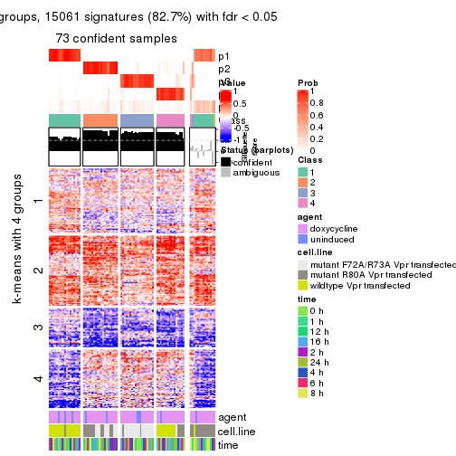
get_signatures(res, k = 6, scale_rows = FALSE)
Compare the overlap of signatures from different k:
compare_signatures(res)
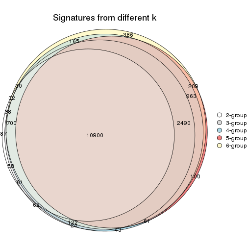
get_signature() returns a data frame invisibly. TO get the list of signatures, the function
call should be assigned to a variable explicitly. In following code, if plot argument is set
to FALSE, no heatmap is plotted while only the differential analysis is performed.
# code only for demonstration
tb = get_signature(res, k = ..., plot = FALSE)
An example of the output of tb is:
#> which_row fdr mean_1 mean_2 scaled_mean_1 scaled_mean_2 km
#> 1 38 0.042760348 8.373488 9.131774 -0.5533452 0.5164555 1
#> 2 40 0.018707592 7.106213 8.469186 -0.6173731 0.5762149 1
#> 3 55 0.019134737 10.221463 11.207825 -0.6159697 0.5749050 1
#> 4 59 0.006059896 5.921854 7.869574 -0.6899429 0.6439467 1
#> 5 60 0.018055526 8.928898 10.211722 -0.6204761 0.5791110 1
#> 6 98 0.009384629 15.714769 14.887706 0.6635654 -0.6193277 2
...
The columns in tb are:
which_row: row indices corresponding to the input matrix.fdr: FDR for the differential test. mean_x: The mean value in group x.scaled_mean_x: The mean value in group x after rows are scaled.km: Row groups if k-means clustering is applied to rows.UMAP plot which shows how samples are separated.
dimension_reduction(res, k = 2, method = "UMAP")
dimension_reduction(res, k = 3, method = "UMAP")
dimension_reduction(res, k = 4, method = "UMAP")
dimension_reduction(res, k = 5, method = "UMAP")
dimension_reduction(res, k = 6, method = "UMAP")
Following heatmap shows how subgroups are split when increasing k:
collect_classes(res)
Test correlation between subgroups and known annotations. If the known annotation is numeric, one-way ANOVA test is applied, and if the known annotation is discrete, chi-squared contingency table test is applied.
test_to_known_factors(res)
#> n agent(p) cell.line(p) time(p) k
#> MAD:NMF 87 0.971 5.49e-06 1 2
#> MAD:NMF 84 0.771 5.54e-09 1 3
#> MAD:NMF 80 0.911 2.17e-13 1 4
#> MAD:NMF 73 0.760 3.24e-13 1 5
#> MAD:NMF 74 0.963 7.07e-21 1 6
If matrix rows can be associated to genes, consider to use functional_enrichment(res,
...) to perform function enrichment for the signature genes. See this vignette for more detailed explanations.
The object with results only for a single top-value method and a single partition method can be extracted as:
res = res_list["ATC", "hclust"]
# you can also extract it by
# res = res_list["ATC:hclust"]
A summary of res and all the functions that can be applied to it:
res
#> A 'ConsensusPartition' object with k = 2, 3, 4, 5, 6.
#> On a matrix with 18211 rows and 87 columns.
#> Top rows (1000, 2000, 3000, 4000, 5000) are extracted by 'ATC' method.
#> Subgroups are detected by 'hclust' method.
#> Performed in total 1250 partitions by row resampling.
#> Best k for subgroups seems to be 2.
#>
#> Following methods can be applied to this 'ConsensusPartition' object:
#> [1] "cola_report" "collect_classes" "collect_plots"
#> [4] "collect_stats" "colnames" "compare_signatures"
#> [7] "consensus_heatmap" "dimension_reduction" "functional_enrichment"
#> [10] "get_anno_col" "get_anno" "get_classes"
#> [13] "get_consensus" "get_matrix" "get_membership"
#> [16] "get_param" "get_signatures" "get_stats"
#> [19] "is_best_k" "is_stable_k" "membership_heatmap"
#> [22] "ncol" "nrow" "plot_ecdf"
#> [25] "rownames" "select_partition_number" "show"
#> [28] "suggest_best_k" "test_to_known_factors"
collect_plots() function collects all the plots made from res for all k (number of partitions)
into one single page to provide an easy and fast comparison between different k.
collect_plots(res)
The plots are:
k and the heatmap of
predicted classes for each k.k.k.k.All the plots in panels can be made by individual functions and they are plotted later in this section.
select_partition_number() produces several plots showing different
statistics for choosing “optimized” k. There are following statistics:
k;k, the area increased is defined as \(A_k - A_{k-1}\).The detailed explanations of these statistics can be found in the cola vignette.
Generally speaking, lower PAC score, higher mean silhouette score or higher
concordance corresponds to better partition. Rand index and Jaccard index
measure how similar the current partition is compared to partition with k-1.
If they are too similar, we won't accept k is better than k-1.
select_partition_number(res)
The numeric values for all these statistics can be obtained by get_stats().
get_stats(res)
#> k 1-PAC mean_silhouette concordance area_increased Rand Jaccard
#> 2 2 1.000 0.988 0.995 0.4604 0.543 0.543
#> 3 3 1.000 0.975 0.988 0.0442 0.985 0.972
#> 4 4 0.693 0.753 0.884 0.3797 0.791 0.604
#> 5 5 0.631 0.711 0.855 0.0753 0.947 0.832
#> 6 6 0.671 0.613 0.816 0.0647 0.943 0.789
suggest_best_k() suggests the best \(k\) based on these statistics. The rules are as follows:
suggest_best_k(res)
#> [1] 2
Following shows the table of the partitions (You need to click the show/hide
code output link to see it). The membership matrix (columns with name p*)
is inferred by
clue::cl_consensus()
function with the SE method. Basically the value in the membership matrix
represents the probability to belong to a certain group. The finall class
label for an item is determined with the group with highest probability it
belongs to.
In get_classes() function, the entropy is calculated from the membership
matrix and the silhouette score is calculated from the consensus matrix.
cbind(get_classes(res, k = 2), get_membership(res, k = 2))
#> class entropy silhouette p1 p2
#> GSM41890 1 0.000 1.000 1.0 0.0
#> GSM41917 1 0.000 1.000 1.0 0.0
#> GSM41936 2 0.000 0.993 0.0 1.0
#> GSM41893 1 0.000 1.000 1.0 0.0
#> GSM41920 1 0.000 1.000 1.0 0.0
#> GSM41937 2 0.000 0.993 0.0 1.0
#> GSM41896 1 0.000 1.000 1.0 0.0
#> GSM41923 1 0.000 1.000 1.0 0.0
#> GSM41938 2 0.000 0.993 0.0 1.0
#> GSM41899 1 0.000 1.000 1.0 0.0
#> GSM41925 1 0.000 1.000 1.0 0.0
#> GSM41939 2 0.000 0.993 0.0 1.0
#> GSM41902 1 0.000 1.000 1.0 0.0
#> GSM41927 1 0.000 1.000 1.0 0.0
#> GSM41940 2 0.000 0.993 0.0 1.0
#> GSM41905 1 0.000 1.000 1.0 0.0
#> GSM41929 1 0.000 1.000 1.0 0.0
#> GSM41941 2 0.000 0.993 0.0 1.0
#> GSM41908 1 0.000 1.000 1.0 0.0
#> GSM41931 1 0.000 1.000 1.0 0.0
#> GSM41942 2 0.000 0.993 0.0 1.0
#> GSM41945 2 0.000 0.993 0.0 1.0
#> GSM41911 1 0.000 1.000 1.0 0.0
#> GSM41933 1 0.000 1.000 1.0 0.0
#> GSM41943 2 0.000 0.993 0.0 1.0
#> GSM41944 2 0.000 0.993 0.0 1.0
#> GSM41876 2 0.000 0.993 0.0 1.0
#> GSM41895 2 0.000 0.993 0.0 1.0
#> GSM41898 2 0.000 0.993 0.0 1.0
#> GSM41877 2 0.000 0.993 0.0 1.0
#> GSM41901 2 0.000 0.993 0.0 1.0
#> GSM41904 2 0.000 0.993 0.0 1.0
#> GSM41878 2 0.000 0.993 0.0 1.0
#> GSM41907 2 0.000 0.993 0.0 1.0
#> GSM41910 2 0.000 0.993 0.0 1.0
#> GSM41879 2 0.000 0.993 0.0 1.0
#> GSM41913 2 0.000 0.993 0.0 1.0
#> GSM41916 2 0.000 0.993 0.0 1.0
#> GSM41880 2 0.000 0.993 0.0 1.0
#> GSM41919 2 0.000 0.993 0.0 1.0
#> GSM41922 2 0.000 0.993 0.0 1.0
#> GSM41881 2 0.000 0.993 0.0 1.0
#> GSM41924 2 0.000 0.993 0.0 1.0
#> GSM41926 2 0.000 0.993 0.0 1.0
#> GSM41869 2 0.000 0.993 0.0 1.0
#> GSM41928 2 0.971 0.333 0.4 0.6
#> GSM41930 2 0.000 0.993 0.0 1.0
#> GSM41882 2 0.000 0.993 0.0 1.0
#> GSM41932 2 0.000 0.993 0.0 1.0
#> GSM41934 2 0.000 0.993 0.0 1.0
#> GSM41860 2 0.000 0.993 0.0 1.0
#> GSM41871 2 0.000 0.993 0.0 1.0
#> GSM41875 2 0.000 0.993 0.0 1.0
#> GSM41894 1 0.000 1.000 1.0 0.0
#> GSM41897 1 0.000 1.000 1.0 0.0
#> GSM41861 2 0.000 0.993 0.0 1.0
#> GSM41872 2 0.000 0.993 0.0 1.0
#> GSM41900 1 0.000 1.000 1.0 0.0
#> GSM41862 2 0.000 0.993 0.0 1.0
#> GSM41873 2 0.000 0.993 0.0 1.0
#> GSM41903 1 0.000 1.000 1.0 0.0
#> GSM41863 2 0.000 0.993 0.0 1.0
#> GSM41883 2 0.000 0.993 0.0 1.0
#> GSM41906 1 0.000 1.000 1.0 0.0
#> GSM41864 2 0.000 0.993 0.0 1.0
#> GSM41884 2 0.000 0.993 0.0 1.0
#> GSM41909 1 0.000 1.000 1.0 0.0
#> GSM41912 1 0.000 1.000 1.0 0.0
#> GSM41865 2 0.000 0.993 0.0 1.0
#> GSM41885 2 0.000 0.993 0.0 1.0
#> GSM41915 1 0.000 1.000 1.0 0.0
#> GSM41866 2 0.000 0.993 0.0 1.0
#> GSM41886 2 0.000 0.993 0.0 1.0
#> GSM41918 1 0.000 1.000 1.0 0.0
#> GSM41867 2 0.000 0.993 0.0 1.0
#> GSM41868 2 0.000 0.993 0.0 1.0
#> GSM41921 1 0.000 1.000 1.0 0.0
#> GSM41887 1 0.000 1.000 1.0 0.0
#> GSM41914 1 0.000 1.000 1.0 0.0
#> GSM41935 2 0.000 0.993 0.0 1.0
#> GSM41874 2 0.000 0.993 0.0 1.0
#> GSM41889 2 0.000 0.993 0.0 1.0
#> GSM41892 2 0.000 0.993 0.0 1.0
#> GSM41859 2 0.000 0.993 0.0 1.0
#> GSM41870 2 0.000 0.993 0.0 1.0
#> GSM41888 1 0.000 1.000 1.0 0.0
#> GSM41891 1 0.000 1.000 1.0 0.0
cbind(get_classes(res, k = 3), get_membership(res, k = 3))
#> class entropy silhouette p1 p2 p3
#> GSM41890 1 0.0000 0.996 1.00 0.000 0.000
#> GSM41917 1 0.0000 0.996 1.00 0.000 0.000
#> GSM41936 2 0.0892 0.982 0.00 0.980 0.020
#> GSM41893 1 0.0000 0.996 1.00 0.000 0.000
#> GSM41920 1 0.0000 0.996 1.00 0.000 0.000
#> GSM41937 2 0.0892 0.982 0.00 0.980 0.020
#> GSM41896 1 0.0000 0.996 1.00 0.000 0.000
#> GSM41923 1 0.0000 0.996 1.00 0.000 0.000
#> GSM41938 2 0.0892 0.982 0.00 0.980 0.020
#> GSM41899 1 0.0000 0.996 1.00 0.000 0.000
#> GSM41925 1 0.0000 0.996 1.00 0.000 0.000
#> GSM41939 2 0.0892 0.982 0.00 0.980 0.020
#> GSM41902 1 0.1529 0.961 0.96 0.000 0.040
#> GSM41927 1 0.0000 0.996 1.00 0.000 0.000
#> GSM41940 2 0.0892 0.982 0.00 0.980 0.020
#> GSM41905 1 0.0000 0.996 1.00 0.000 0.000
#> GSM41929 1 0.0000 0.996 1.00 0.000 0.000
#> GSM41941 2 0.0892 0.982 0.00 0.980 0.020
#> GSM41908 1 0.0000 0.996 1.00 0.000 0.000
#> GSM41931 1 0.0000 0.996 1.00 0.000 0.000
#> GSM41942 2 0.0892 0.982 0.00 0.980 0.020
#> GSM41945 2 0.1031 0.980 0.00 0.976 0.024
#> GSM41911 1 0.1529 0.961 0.96 0.000 0.040
#> GSM41933 1 0.0000 0.996 1.00 0.000 0.000
#> GSM41943 2 0.0892 0.982 0.00 0.980 0.020
#> GSM41944 2 0.1031 0.980 0.00 0.976 0.024
#> GSM41876 2 0.0892 0.982 0.00 0.980 0.020
#> GSM41895 2 0.0237 0.985 0.00 0.996 0.004
#> GSM41898 2 0.0747 0.985 0.00 0.984 0.016
#> GSM41877 2 0.0424 0.985 0.00 0.992 0.008
#> GSM41901 2 0.0000 0.985 0.00 1.000 0.000
#> GSM41904 2 0.0424 0.985 0.00 0.992 0.008
#> GSM41878 2 0.0892 0.982 0.00 0.980 0.020
#> GSM41907 2 0.0592 0.984 0.00 0.988 0.012
#> GSM41910 2 0.0747 0.985 0.00 0.984 0.016
#> GSM41879 2 0.0424 0.985 0.00 0.992 0.008
#> GSM41913 2 0.0592 0.984 0.00 0.988 0.012
#> GSM41916 2 0.0747 0.984 0.00 0.984 0.016
#> GSM41880 2 0.0892 0.982 0.00 0.980 0.020
#> GSM41919 2 0.0747 0.984 0.00 0.984 0.016
#> GSM41922 2 0.0747 0.985 0.00 0.984 0.016
#> GSM41881 2 0.0592 0.985 0.00 0.988 0.012
#> GSM41924 2 0.0892 0.982 0.00 0.980 0.020
#> GSM41926 2 0.1031 0.980 0.00 0.976 0.024
#> GSM41869 2 0.0892 0.982 0.00 0.980 0.020
#> GSM41928 3 0.0892 0.000 0.00 0.020 0.980
#> GSM41930 2 0.0747 0.984 0.00 0.984 0.016
#> GSM41882 2 0.0747 0.984 0.00 0.984 0.016
#> GSM41932 2 0.0000 0.985 0.00 1.000 0.000
#> GSM41934 2 0.0747 0.984 0.00 0.984 0.016
#> GSM41860 2 0.0000 0.985 0.00 1.000 0.000
#> GSM41871 2 0.0892 0.982 0.00 0.980 0.020
#> GSM41875 2 0.1031 0.980 0.00 0.976 0.024
#> GSM41894 1 0.0000 0.996 1.00 0.000 0.000
#> GSM41897 1 0.0000 0.996 1.00 0.000 0.000
#> GSM41861 2 0.0892 0.982 0.00 0.980 0.020
#> GSM41872 2 0.0424 0.985 0.00 0.992 0.008
#> GSM41900 1 0.0000 0.996 1.00 0.000 0.000
#> GSM41862 2 0.0747 0.984 0.00 0.984 0.016
#> GSM41873 2 0.0424 0.985 0.00 0.992 0.008
#> GSM41903 1 0.0000 0.996 1.00 0.000 0.000
#> GSM41863 2 0.0747 0.984 0.00 0.984 0.016
#> GSM41883 2 0.0892 0.982 0.00 0.980 0.020
#> GSM41906 1 0.0000 0.996 1.00 0.000 0.000
#> GSM41864 2 0.0424 0.985 0.00 0.992 0.008
#> GSM41884 2 0.0892 0.982 0.00 0.980 0.020
#> GSM41909 1 0.0000 0.996 1.00 0.000 0.000
#> GSM41912 1 0.0000 0.996 1.00 0.000 0.000
#> GSM41865 2 0.0747 0.984 0.00 0.984 0.016
#> GSM41885 2 0.0892 0.982 0.00 0.980 0.020
#> GSM41915 1 0.0000 0.996 1.00 0.000 0.000
#> GSM41866 2 0.0747 0.984 0.00 0.984 0.016
#> GSM41886 2 0.0892 0.982 0.00 0.980 0.020
#> GSM41918 1 0.0000 0.996 1.00 0.000 0.000
#> GSM41867 2 0.0892 0.982 0.00 0.980 0.020
#> GSM41868 2 0.1031 0.980 0.00 0.976 0.024
#> GSM41921 1 0.0000 0.996 1.00 0.000 0.000
#> GSM41887 1 0.0000 0.996 1.00 0.000 0.000
#> GSM41914 1 0.1529 0.961 0.96 0.000 0.040
#> GSM41935 2 0.0747 0.984 0.00 0.984 0.016
#> GSM41874 2 0.0592 0.985 0.00 0.988 0.012
#> GSM41889 2 0.0237 0.985 0.00 0.996 0.004
#> GSM41892 2 0.0892 0.982 0.00 0.980 0.020
#> GSM41859 2 0.0747 0.985 0.00 0.984 0.016
#> GSM41870 2 0.0892 0.982 0.00 0.980 0.020
#> GSM41888 1 0.0000 0.996 1.00 0.000 0.000
#> GSM41891 1 0.0000 0.996 1.00 0.000 0.000
cbind(get_classes(res, k = 4), get_membership(res, k = 4))
#> class entropy silhouette p1 p2 p3 p4
#> GSM41890 1 0.0000 0.995 1.000 0.000 0.000 0.00
#> GSM41917 1 0.0188 0.993 0.996 0.000 0.004 0.00
#> GSM41936 2 0.2469 0.727 0.000 0.892 0.108 0.00
#> GSM41893 1 0.0000 0.995 1.000 0.000 0.000 0.00
#> GSM41920 1 0.0188 0.993 0.996 0.000 0.004 0.00
#> GSM41937 2 0.2469 0.727 0.000 0.892 0.108 0.00
#> GSM41896 1 0.0000 0.995 1.000 0.000 0.000 0.00
#> GSM41923 1 0.0000 0.995 1.000 0.000 0.000 0.00
#> GSM41938 2 0.2469 0.727 0.000 0.892 0.108 0.00
#> GSM41899 1 0.0000 0.995 1.000 0.000 0.000 0.00
#> GSM41925 1 0.0000 0.995 1.000 0.000 0.000 0.00
#> GSM41939 2 0.2469 0.727 0.000 0.892 0.108 0.00
#> GSM41902 1 0.1398 0.958 0.956 0.000 0.004 0.04
#> GSM41927 1 0.0000 0.995 1.000 0.000 0.000 0.00
#> GSM41940 3 0.1867 0.745 0.000 0.072 0.928 0.00
#> GSM41905 1 0.0000 0.995 1.000 0.000 0.000 0.00
#> GSM41929 1 0.0000 0.995 1.000 0.000 0.000 0.00
#> GSM41941 3 0.1867 0.745 0.000 0.072 0.928 0.00
#> GSM41908 1 0.0000 0.995 1.000 0.000 0.000 0.00
#> GSM41931 1 0.0000 0.995 1.000 0.000 0.000 0.00
#> GSM41942 3 0.1867 0.745 0.000 0.072 0.928 0.00
#> GSM41945 3 0.0336 0.715 0.000 0.008 0.992 0.00
#> GSM41911 1 0.1398 0.958 0.956 0.000 0.004 0.04
#> GSM41933 1 0.0000 0.995 1.000 0.000 0.000 0.00
#> GSM41943 3 0.1867 0.745 0.000 0.072 0.928 0.00
#> GSM41944 3 0.0336 0.715 0.000 0.008 0.992 0.00
#> GSM41876 2 0.0000 0.796 0.000 1.000 0.000 0.00
#> GSM41895 2 0.2469 0.754 0.000 0.892 0.108 0.00
#> GSM41898 3 0.4989 0.375 0.000 0.472 0.528 0.00
#> GSM41877 2 0.4992 -0.150 0.000 0.524 0.476 0.00
#> GSM41901 2 0.2814 0.731 0.000 0.868 0.132 0.00
#> GSM41904 2 0.5000 -0.224 0.000 0.504 0.496 0.00
#> GSM41878 2 0.1022 0.796 0.000 0.968 0.032 0.00
#> GSM41907 2 0.1474 0.788 0.000 0.948 0.052 0.00
#> GSM41910 3 0.4761 0.613 0.000 0.372 0.628 0.00
#> GSM41879 2 0.4996 -0.178 0.000 0.516 0.484 0.00
#> GSM41913 2 0.1637 0.785 0.000 0.940 0.060 0.00
#> GSM41916 3 0.3801 0.767 0.000 0.220 0.780 0.00
#> GSM41880 2 0.0000 0.796 0.000 1.000 0.000 0.00
#> GSM41919 3 0.4008 0.757 0.000 0.244 0.756 0.00
#> GSM41922 3 0.4605 0.659 0.000 0.336 0.664 0.00
#> GSM41881 3 0.4804 0.523 0.000 0.384 0.616 0.00
#> GSM41924 2 0.0707 0.799 0.000 0.980 0.020 0.00
#> GSM41926 3 0.2530 0.772 0.000 0.112 0.888 0.00
#> GSM41869 2 0.0469 0.801 0.000 0.988 0.012 0.00
#> GSM41928 4 0.0000 0.000 0.000 0.000 0.000 1.00
#> GSM41930 3 0.3801 0.767 0.000 0.220 0.780 0.00
#> GSM41882 3 0.3764 0.762 0.000 0.216 0.784 0.00
#> GSM41932 2 0.2760 0.735 0.000 0.872 0.128 0.00
#> GSM41934 3 0.3569 0.774 0.000 0.196 0.804 0.00
#> GSM41860 2 0.3801 0.602 0.000 0.780 0.220 0.00
#> GSM41871 2 0.0469 0.801 0.000 0.988 0.012 0.00
#> GSM41875 3 0.2589 0.773 0.000 0.116 0.884 0.00
#> GSM41894 1 0.0000 0.995 1.000 0.000 0.000 0.00
#> GSM41897 1 0.0000 0.995 1.000 0.000 0.000 0.00
#> GSM41861 2 0.0188 0.797 0.000 0.996 0.004 0.00
#> GSM41872 2 0.4996 -0.178 0.000 0.516 0.484 0.00
#> GSM41900 1 0.0000 0.995 1.000 0.000 0.000 0.00
#> GSM41862 3 0.4877 0.505 0.000 0.408 0.592 0.00
#> GSM41873 2 0.4996 -0.178 0.000 0.516 0.484 0.00
#> GSM41903 1 0.0000 0.995 1.000 0.000 0.000 0.00
#> GSM41863 3 0.4250 0.708 0.000 0.276 0.724 0.00
#> GSM41883 3 0.2973 0.777 0.000 0.144 0.856 0.00
#> GSM41906 1 0.0000 0.995 1.000 0.000 0.000 0.00
#> GSM41864 3 0.4955 0.415 0.000 0.444 0.556 0.00
#> GSM41884 2 0.0469 0.801 0.000 0.988 0.012 0.00
#> GSM41909 1 0.0000 0.995 1.000 0.000 0.000 0.00
#> GSM41912 1 0.0000 0.995 1.000 0.000 0.000 0.00
#> GSM41865 3 0.4877 0.505 0.000 0.408 0.592 0.00
#> GSM41885 2 0.0469 0.801 0.000 0.988 0.012 0.00
#> GSM41915 1 0.0000 0.995 1.000 0.000 0.000 0.00
#> GSM41866 3 0.4250 0.708 0.000 0.276 0.724 0.00
#> GSM41886 2 0.0469 0.801 0.000 0.988 0.012 0.00
#> GSM41918 1 0.0000 0.995 1.000 0.000 0.000 0.00
#> GSM41867 3 0.2469 0.774 0.000 0.108 0.892 0.00
#> GSM41868 3 0.2589 0.773 0.000 0.116 0.884 0.00
#> GSM41921 1 0.0000 0.995 1.000 0.000 0.000 0.00
#> GSM41887 1 0.0000 0.995 1.000 0.000 0.000 0.00
#> GSM41914 1 0.1398 0.958 0.956 0.000 0.004 0.04
#> GSM41935 3 0.3024 0.780 0.000 0.148 0.852 0.00
#> GSM41874 3 0.4817 0.513 0.000 0.388 0.612 0.00
#> GSM41889 2 0.2469 0.754 0.000 0.892 0.108 0.00
#> GSM41892 2 0.0707 0.799 0.000 0.980 0.020 0.00
#> GSM41859 2 0.3444 0.655 0.000 0.816 0.184 0.00
#> GSM41870 2 0.0469 0.801 0.000 0.988 0.012 0.00
#> GSM41888 1 0.0188 0.993 0.996 0.000 0.004 0.00
#> GSM41891 1 0.0000 0.995 1.000 0.000 0.000 0.00
cbind(get_classes(res, k = 5), get_membership(res, k = 5))
#> class entropy silhouette p1 p2 p3 p4 p5
#> GSM41890 1 0.1908 0.900 0.908 0.000 0.000 0.092 0.000
#> GSM41917 4 0.1197 0.776 0.048 0.000 0.000 0.952 0.000
#> GSM41936 2 0.2127 0.727 0.000 0.892 0.108 0.000 0.000
#> GSM41893 1 0.0000 0.964 1.000 0.000 0.000 0.000 0.000
#> GSM41920 4 0.1197 0.776 0.048 0.000 0.000 0.952 0.000
#> GSM41937 2 0.2127 0.727 0.000 0.892 0.108 0.000 0.000
#> GSM41896 1 0.1908 0.900 0.908 0.000 0.000 0.092 0.000
#> GSM41923 1 0.0290 0.960 0.992 0.000 0.000 0.008 0.000
#> GSM41938 2 0.2127 0.727 0.000 0.892 0.108 0.000 0.000
#> GSM41899 1 0.0000 0.964 1.000 0.000 0.000 0.000 0.000
#> GSM41925 1 0.0000 0.964 1.000 0.000 0.000 0.000 0.000
#> GSM41939 2 0.2127 0.727 0.000 0.892 0.108 0.000 0.000
#> GSM41902 4 0.0000 0.742 0.000 0.000 0.000 1.000 0.000
#> GSM41927 1 0.0290 0.960 0.992 0.000 0.000 0.008 0.000
#> GSM41940 3 0.1704 0.742 0.000 0.068 0.928 0.000 0.004
#> GSM41905 4 0.3932 0.646 0.328 0.000 0.000 0.672 0.000
#> GSM41929 4 0.3932 0.646 0.328 0.000 0.000 0.672 0.000
#> GSM41941 3 0.1704 0.742 0.000 0.068 0.928 0.000 0.004
#> GSM41908 1 0.0162 0.962 0.996 0.000 0.000 0.004 0.000
#> GSM41931 4 0.2929 0.770 0.180 0.000 0.000 0.820 0.000
#> GSM41942 3 0.1704 0.742 0.000 0.068 0.928 0.000 0.004
#> GSM41945 3 0.0162 0.715 0.000 0.004 0.996 0.000 0.000
#> GSM41911 4 0.0000 0.742 0.000 0.000 0.000 1.000 0.000
#> GSM41933 4 0.2929 0.770 0.180 0.000 0.000 0.820 0.000
#> GSM41943 3 0.1704 0.742 0.000 0.068 0.928 0.000 0.004
#> GSM41944 3 0.0162 0.715 0.000 0.004 0.996 0.000 0.000
#> GSM41876 2 0.0000 0.795 0.000 1.000 0.000 0.000 0.000
#> GSM41895 2 0.2179 0.752 0.000 0.888 0.112 0.000 0.000
#> GSM41898 3 0.4294 0.376 0.000 0.468 0.532 0.000 0.000
#> GSM41877 2 0.4300 -0.141 0.000 0.524 0.476 0.000 0.000
#> GSM41901 2 0.2471 0.729 0.000 0.864 0.136 0.000 0.000
#> GSM41904 2 0.4307 -0.225 0.000 0.500 0.500 0.000 0.000
#> GSM41878 2 0.0880 0.795 0.000 0.968 0.032 0.000 0.000
#> GSM41907 2 0.1341 0.786 0.000 0.944 0.056 0.000 0.000
#> GSM41910 3 0.4088 0.612 0.000 0.368 0.632 0.000 0.000
#> GSM41879 2 0.4305 -0.180 0.000 0.512 0.488 0.000 0.000
#> GSM41913 2 0.1478 0.782 0.000 0.936 0.064 0.000 0.000
#> GSM41916 3 0.3242 0.766 0.000 0.216 0.784 0.000 0.000
#> GSM41880 2 0.0000 0.795 0.000 1.000 0.000 0.000 0.000
#> GSM41919 3 0.3424 0.756 0.000 0.240 0.760 0.000 0.000
#> GSM41922 3 0.3949 0.658 0.000 0.332 0.668 0.000 0.000
#> GSM41881 3 0.4126 0.523 0.000 0.380 0.620 0.000 0.000
#> GSM41924 2 0.0609 0.798 0.000 0.980 0.020 0.000 0.000
#> GSM41926 3 0.2411 0.770 0.000 0.108 0.884 0.000 0.008
#> GSM41869 2 0.0404 0.800 0.000 0.988 0.012 0.000 0.000
#> GSM41928 5 0.0290 0.000 0.000 0.000 0.000 0.008 0.992
#> GSM41930 3 0.3242 0.766 0.000 0.216 0.784 0.000 0.000
#> GSM41882 3 0.3210 0.761 0.000 0.212 0.788 0.000 0.000
#> GSM41932 2 0.2424 0.733 0.000 0.868 0.132 0.000 0.000
#> GSM41934 3 0.3039 0.772 0.000 0.192 0.808 0.000 0.000
#> GSM41860 2 0.3274 0.604 0.000 0.780 0.220 0.000 0.000
#> GSM41871 2 0.0404 0.800 0.000 0.988 0.012 0.000 0.000
#> GSM41875 3 0.2462 0.771 0.000 0.112 0.880 0.000 0.008
#> GSM41894 1 0.0000 0.964 1.000 0.000 0.000 0.000 0.000
#> GSM41897 1 0.0000 0.964 1.000 0.000 0.000 0.000 0.000
#> GSM41861 2 0.0162 0.796 0.000 0.996 0.004 0.000 0.000
#> GSM41872 2 0.4305 -0.180 0.000 0.512 0.488 0.000 0.000
#> GSM41900 1 0.2329 0.860 0.876 0.000 0.000 0.124 0.000
#> GSM41862 3 0.4192 0.504 0.000 0.404 0.596 0.000 0.000
#> GSM41873 2 0.4305 -0.180 0.000 0.512 0.488 0.000 0.000
#> GSM41903 1 0.2648 0.815 0.848 0.000 0.000 0.152 0.000
#> GSM41863 3 0.3636 0.707 0.000 0.272 0.728 0.000 0.000
#> GSM41883 3 0.2798 0.775 0.000 0.140 0.852 0.000 0.008
#> GSM41906 1 0.0000 0.964 1.000 0.000 0.000 0.000 0.000
#> GSM41864 3 0.4262 0.415 0.000 0.440 0.560 0.000 0.000
#> GSM41884 2 0.0404 0.800 0.000 0.988 0.012 0.000 0.000
#> GSM41909 1 0.0000 0.964 1.000 0.000 0.000 0.000 0.000
#> GSM41912 1 0.0000 0.964 1.000 0.000 0.000 0.000 0.000
#> GSM41865 3 0.4192 0.504 0.000 0.404 0.596 0.000 0.000
#> GSM41885 2 0.0404 0.800 0.000 0.988 0.012 0.000 0.000
#> GSM41915 1 0.0000 0.964 1.000 0.000 0.000 0.000 0.000
#> GSM41866 3 0.3636 0.707 0.000 0.272 0.728 0.000 0.000
#> GSM41886 2 0.0404 0.800 0.000 0.988 0.012 0.000 0.000
#> GSM41918 1 0.2329 0.860 0.876 0.000 0.000 0.124 0.000
#> GSM41867 3 0.2358 0.772 0.000 0.104 0.888 0.000 0.008
#> GSM41868 3 0.2462 0.771 0.000 0.112 0.880 0.000 0.008
#> GSM41921 1 0.0000 0.964 1.000 0.000 0.000 0.000 0.000
#> GSM41887 1 0.0000 0.964 1.000 0.000 0.000 0.000 0.000
#> GSM41914 4 0.0000 0.742 0.000 0.000 0.000 1.000 0.000
#> GSM41935 3 0.2561 0.779 0.000 0.144 0.856 0.000 0.000
#> GSM41874 3 0.4138 0.512 0.000 0.384 0.616 0.000 0.000
#> GSM41889 2 0.2179 0.752 0.000 0.888 0.112 0.000 0.000
#> GSM41892 2 0.0609 0.798 0.000 0.980 0.020 0.000 0.000
#> GSM41859 2 0.3003 0.652 0.000 0.812 0.188 0.000 0.000
#> GSM41870 2 0.0404 0.800 0.000 0.988 0.012 0.000 0.000
#> GSM41888 4 0.3586 0.682 0.264 0.000 0.000 0.736 0.000
#> GSM41891 1 0.0000 0.964 1.000 0.000 0.000 0.000 0.000
cbind(get_classes(res, k = 6), get_membership(res, k = 6))
#> class entropy silhouette p1 p2 p3 p4 p5 p6
#> GSM41890 5 0.1714 0.8997 0.092 0.000 0.000 0.000 0.908 0
#> GSM41917 1 0.1075 0.7769 0.952 0.000 0.000 0.000 0.048 0
#> GSM41936 2 0.2135 0.6879 0.000 0.872 0.000 0.128 0.000 0
#> GSM41893 5 0.0000 0.9637 0.000 0.000 0.000 0.000 1.000 0
#> GSM41920 1 0.1075 0.7769 0.952 0.000 0.000 0.000 0.048 0
#> GSM41937 2 0.2135 0.6879 0.000 0.872 0.000 0.128 0.000 0
#> GSM41896 5 0.1714 0.8997 0.092 0.000 0.000 0.000 0.908 0
#> GSM41923 5 0.0260 0.9599 0.008 0.000 0.000 0.000 0.992 0
#> GSM41938 2 0.2135 0.6879 0.000 0.872 0.000 0.128 0.000 0
#> GSM41899 5 0.0000 0.9637 0.000 0.000 0.000 0.000 1.000 0
#> GSM41925 5 0.0000 0.9637 0.000 0.000 0.000 0.000 1.000 0
#> GSM41939 2 0.2135 0.6879 0.000 0.872 0.000 0.128 0.000 0
#> GSM41902 1 0.0000 0.7427 1.000 0.000 0.000 0.000 0.000 0
#> GSM41927 5 0.0260 0.9599 0.008 0.000 0.000 0.000 0.992 0
#> GSM41940 4 0.2070 0.4862 0.000 0.044 0.048 0.908 0.000 0
#> GSM41905 1 0.3531 0.6469 0.672 0.000 0.000 0.000 0.328 0
#> GSM41929 1 0.3531 0.6469 0.672 0.000 0.000 0.000 0.328 0
#> GSM41941 4 0.2070 0.4862 0.000 0.044 0.048 0.908 0.000 0
#> GSM41908 5 0.0146 0.9619 0.004 0.000 0.000 0.000 0.996 0
#> GSM41931 1 0.2631 0.7704 0.820 0.000 0.000 0.000 0.180 0
#> GSM41942 4 0.2070 0.4862 0.000 0.044 0.048 0.908 0.000 0
#> GSM41945 4 0.2378 0.3891 0.000 0.000 0.152 0.848 0.000 0
#> GSM41911 1 0.0000 0.7427 1.000 0.000 0.000 0.000 0.000 0
#> GSM41933 1 0.2631 0.7704 0.820 0.000 0.000 0.000 0.180 0
#> GSM41943 4 0.2070 0.4862 0.000 0.044 0.048 0.908 0.000 0
#> GSM41944 4 0.2378 0.3891 0.000 0.000 0.152 0.848 0.000 0
#> GSM41876 2 0.0000 0.7509 0.000 1.000 0.000 0.000 0.000 0
#> GSM41895 2 0.2300 0.7036 0.000 0.856 0.000 0.144 0.000 0
#> GSM41898 2 0.6044 -0.2238 0.000 0.408 0.264 0.328 0.000 0
#> GSM41877 2 0.6004 -0.0773 0.000 0.436 0.276 0.288 0.000 0
#> GSM41901 2 0.2527 0.6823 0.000 0.832 0.000 0.168 0.000 0
#> GSM41904 2 0.6043 -0.1617 0.000 0.412 0.268 0.320 0.000 0
#> GSM41878 2 0.1074 0.7495 0.000 0.960 0.028 0.012 0.000 0
#> GSM41907 2 0.1663 0.7364 0.000 0.912 0.000 0.088 0.000 0
#> GSM41910 4 0.6118 -0.1100 0.000 0.304 0.336 0.360 0.000 0
#> GSM41879 2 0.6021 -0.1271 0.000 0.424 0.264 0.312 0.000 0
#> GSM41913 2 0.1765 0.7328 0.000 0.904 0.000 0.096 0.000 0
#> GSM41916 3 0.5159 0.4769 0.000 0.092 0.528 0.380 0.000 0
#> GSM41880 2 0.0000 0.7509 0.000 1.000 0.000 0.000 0.000 0
#> GSM41919 3 0.5498 0.3679 0.000 0.132 0.488 0.380 0.000 0
#> GSM41922 3 0.5896 0.2654 0.000 0.212 0.444 0.344 0.000 0
#> GSM41881 4 0.5973 0.2058 0.000 0.280 0.272 0.448 0.000 0
#> GSM41924 2 0.1141 0.7490 0.000 0.948 0.000 0.052 0.000 0
#> GSM41926 3 0.1863 0.6162 0.000 0.000 0.896 0.104 0.000 0
#> GSM41869 2 0.0603 0.7538 0.000 0.980 0.016 0.004 0.000 0
#> GSM41928 6 0.0000 0.0000 0.000 0.000 0.000 0.000 0.000 1
#> GSM41930 3 0.5159 0.4769 0.000 0.092 0.528 0.380 0.000 0
#> GSM41882 4 0.5085 0.2559 0.000 0.120 0.272 0.608 0.000 0
#> GSM41932 2 0.2491 0.6862 0.000 0.836 0.000 0.164 0.000 0
#> GSM41934 3 0.4932 0.4962 0.000 0.072 0.556 0.372 0.000 0
#> GSM41860 2 0.3376 0.5818 0.000 0.764 0.016 0.220 0.000 0
#> GSM41871 2 0.0603 0.7538 0.000 0.980 0.016 0.004 0.000 0
#> GSM41875 3 0.1863 0.6170 0.000 0.000 0.896 0.104 0.000 0
#> GSM41894 5 0.0000 0.9637 0.000 0.000 0.000 0.000 1.000 0
#> GSM41897 5 0.0000 0.9637 0.000 0.000 0.000 0.000 1.000 0
#> GSM41861 2 0.0260 0.7522 0.000 0.992 0.000 0.008 0.000 0
#> GSM41872 2 0.6021 -0.1271 0.000 0.424 0.264 0.312 0.000 0
#> GSM41900 5 0.2092 0.8602 0.124 0.000 0.000 0.000 0.876 0
#> GSM41862 4 0.4812 0.4342 0.000 0.344 0.068 0.588 0.000 0
#> GSM41873 2 0.6021 -0.1271 0.000 0.424 0.264 0.312 0.000 0
#> GSM41903 5 0.2378 0.8152 0.152 0.000 0.000 0.000 0.848 0
#> GSM41863 4 0.4596 0.4712 0.000 0.188 0.120 0.692 0.000 0
#> GSM41883 3 0.2527 0.6157 0.000 0.024 0.868 0.108 0.000 0
#> GSM41906 5 0.0000 0.9637 0.000 0.000 0.000 0.000 1.000 0
#> GSM41864 4 0.4593 0.4185 0.000 0.380 0.044 0.576 0.000 0
#> GSM41884 2 0.0603 0.7538 0.000 0.980 0.016 0.004 0.000 0
#> GSM41909 5 0.0000 0.9637 0.000 0.000 0.000 0.000 1.000 0
#> GSM41912 5 0.0000 0.9637 0.000 0.000 0.000 0.000 1.000 0
#> GSM41865 4 0.4812 0.4342 0.000 0.344 0.068 0.588 0.000 0
#> GSM41885 2 0.0603 0.7538 0.000 0.980 0.016 0.004 0.000 0
#> GSM41915 5 0.0000 0.9637 0.000 0.000 0.000 0.000 1.000 0
#> GSM41866 4 0.4596 0.4712 0.000 0.188 0.120 0.692 0.000 0
#> GSM41886 2 0.0603 0.7538 0.000 0.980 0.016 0.004 0.000 0
#> GSM41918 5 0.2092 0.8602 0.124 0.000 0.000 0.000 0.876 0
#> GSM41867 3 0.3531 0.4741 0.000 0.000 0.672 0.328 0.000 0
#> GSM41868 3 0.1814 0.6149 0.000 0.000 0.900 0.100 0.000 0
#> GSM41921 5 0.0000 0.9637 0.000 0.000 0.000 0.000 1.000 0
#> GSM41887 5 0.0000 0.9637 0.000 0.000 0.000 0.000 1.000 0
#> GSM41914 1 0.0000 0.7427 1.000 0.000 0.000 0.000 0.000 0
#> GSM41935 4 0.4037 0.3668 0.000 0.064 0.200 0.736 0.000 0
#> GSM41874 4 0.5984 0.2065 0.000 0.284 0.272 0.444 0.000 0
#> GSM41889 2 0.2300 0.7036 0.000 0.856 0.000 0.144 0.000 0
#> GSM41892 2 0.1141 0.7490 0.000 0.948 0.000 0.052 0.000 0
#> GSM41859 2 0.3450 0.6153 0.000 0.780 0.032 0.188 0.000 0
#> GSM41870 2 0.0603 0.7538 0.000 0.980 0.016 0.004 0.000 0
#> GSM41888 1 0.3221 0.6827 0.736 0.000 0.000 0.000 0.264 0
#> GSM41891 5 0.0000 0.9637 0.000 0.000 0.000 0.000 1.000 0
Heatmaps for the consensus matrix. It visualizes the probability of two samples to be in a same group.
consensus_heatmap(res, k = 2)
consensus_heatmap(res, k = 3)
consensus_heatmap(res, k = 4)
consensus_heatmap(res, k = 5)
consensus_heatmap(res, k = 6)
Heatmaps for the membership of samples in all partitions to see how consistent they are:
membership_heatmap(res, k = 2)
membership_heatmap(res, k = 3)
membership_heatmap(res, k = 4)
membership_heatmap(res, k = 5)
membership_heatmap(res, k = 6)
As soon as we have had the classes for columns, we can look for signatures which are significantly different between classes which can be candidate marks for certain classes. Following are the heatmaps for signatures.
Signature heatmaps where rows are scaled:
get_signatures(res, k = 2)
get_signatures(res, k = 3)
get_signatures(res, k = 4)
get_signatures(res, k = 5)
get_signatures(res, k = 6)
Signature heatmaps where rows are not scaled:
get_signatures(res, k = 2, scale_rows = FALSE)
get_signatures(res, k = 3, scale_rows = FALSE)
get_signatures(res, k = 4, scale_rows = FALSE)
get_signatures(res, k = 5, scale_rows = FALSE)
get_signatures(res, k = 6, scale_rows = FALSE)
Compare the overlap of signatures from different k:
compare_signatures(res)
get_signature() returns a data frame invisibly. TO get the list of signatures, the function
call should be assigned to a variable explicitly. In following code, if plot argument is set
to FALSE, no heatmap is plotted while only the differential analysis is performed.
# code only for demonstration
tb = get_signature(res, k = ..., plot = FALSE)
An example of the output of tb is:
#> which_row fdr mean_1 mean_2 scaled_mean_1 scaled_mean_2 km
#> 1 38 0.042760348 8.373488 9.131774 -0.5533452 0.5164555 1
#> 2 40 0.018707592 7.106213 8.469186 -0.6173731 0.5762149 1
#> 3 55 0.019134737 10.221463 11.207825 -0.6159697 0.5749050 1
#> 4 59 0.006059896 5.921854 7.869574 -0.6899429 0.6439467 1
#> 5 60 0.018055526 8.928898 10.211722 -0.6204761 0.5791110 1
#> 6 98 0.009384629 15.714769 14.887706 0.6635654 -0.6193277 2
...
The columns in tb are:
which_row: row indices corresponding to the input matrix.fdr: FDR for the differential test. mean_x: The mean value in group x.scaled_mean_x: The mean value in group x after rows are scaled.km: Row groups if k-means clustering is applied to rows.UMAP plot which shows how samples are separated.
dimension_reduction(res, k = 2, method = "UMAP")
dimension_reduction(res, k = 3, method = "UMAP")
dimension_reduction(res, k = 4, method = "UMAP")
dimension_reduction(res, k = 5, method = "UMAP")
dimension_reduction(res, k = 6, method = "UMAP")
Following heatmap shows how subgroups are split when increasing k:
collect_classes(res)
Test correlation between subgroups and known annotations. If the known annotation is numeric, one-way ANOVA test is applied, and if the known annotation is discrete, chi-squared contingency table test is applied.
test_to_known_factors(res)
#> n agent(p) cell.line(p) time(p) k
#> ATC:hclust 86 0.993 7.64e-06 1.000 2
#> ATC:hclust 86 0.993 7.64e-06 1.000 3
#> ATC:hclust 79 0.653 2.22e-04 0.701 4
#> ATC:hclust 79 0.693 5.43e-05 0.759 5
#> ATC:hclust 58 0.712 1.96e-05 0.945 6
If matrix rows can be associated to genes, consider to use functional_enrichment(res,
...) to perform function enrichment for the signature genes. See this vignette for more detailed explanations.
The object with results only for a single top-value method and a single partition method can be extracted as:
res = res_list["ATC", "kmeans"]
# you can also extract it by
# res = res_list["ATC:kmeans"]
A summary of res and all the functions that can be applied to it:
res
#> A 'ConsensusPartition' object with k = 2, 3, 4, 5, 6.
#> On a matrix with 18211 rows and 87 columns.
#> Top rows (1000, 2000, 3000, 4000, 5000) are extracted by 'ATC' method.
#> Subgroups are detected by 'kmeans' method.
#> Performed in total 1250 partitions by row resampling.
#> Best k for subgroups seems to be 2.
#>
#> Following methods can be applied to this 'ConsensusPartition' object:
#> [1] "cola_report" "collect_classes" "collect_plots"
#> [4] "collect_stats" "colnames" "compare_signatures"
#> [7] "consensus_heatmap" "dimension_reduction" "functional_enrichment"
#> [10] "get_anno_col" "get_anno" "get_classes"
#> [13] "get_consensus" "get_matrix" "get_membership"
#> [16] "get_param" "get_signatures" "get_stats"
#> [19] "is_best_k" "is_stable_k" "membership_heatmap"
#> [22] "ncol" "nrow" "plot_ecdf"
#> [25] "rownames" "select_partition_number" "show"
#> [28] "suggest_best_k" "test_to_known_factors"
collect_plots() function collects all the plots made from res for all k (number of partitions)
into one single page to provide an easy and fast comparison between different k.
collect_plots(res)
The plots are:
k and the heatmap of
predicted classes for each k.k.k.k.All the plots in panels can be made by individual functions and they are plotted later in this section.
select_partition_number() produces several plots showing different
statistics for choosing “optimized” k. There are following statistics:
k;k, the area increased is defined as \(A_k - A_{k-1}\).The detailed explanations of these statistics can be found in the cola vignette.
Generally speaking, lower PAC score, higher mean silhouette score or higher
concordance corresponds to better partition. Rand index and Jaccard index
measure how similar the current partition is compared to partition with k-1.
If they are too similar, we won't accept k is better than k-1.
select_partition_number(res)
The numeric values for all these statistics can be obtained by get_stats().
get_stats(res)
#> k 1-PAC mean_silhouette concordance area_increased Rand Jaccard
#> 2 2 1.000 1.000 1.000 0.4576 0.543 0.543
#> 3 3 0.620 0.801 0.793 0.3642 0.791 0.615
#> 4 4 0.583 0.572 0.670 0.1513 0.845 0.593
#> 5 5 0.637 0.655 0.722 0.0723 0.866 0.558
#> 6 6 0.647 0.553 0.721 0.0449 0.987 0.934
suggest_best_k() suggests the best \(k\) based on these statistics. The rules are as follows:
suggest_best_k(res)
#> [1] 2
Following shows the table of the partitions (You need to click the show/hide
code output link to see it). The membership matrix (columns with name p*)
is inferred by
clue::cl_consensus()
function with the SE method. Basically the value in the membership matrix
represents the probability to belong to a certain group. The finall class
label for an item is determined with the group with highest probability it
belongs to.
In get_classes() function, the entropy is calculated from the membership
matrix and the silhouette score is calculated from the consensus matrix.
cbind(get_classes(res, k = 2), get_membership(res, k = 2))
#> class entropy silhouette p1 p2
#> GSM41890 1 0 1 1 0
#> GSM41917 1 0 1 1 0
#> GSM41936 2 0 1 0 1
#> GSM41893 1 0 1 1 0
#> GSM41920 1 0 1 1 0
#> GSM41937 2 0 1 0 1
#> GSM41896 1 0 1 1 0
#> GSM41923 1 0 1 1 0
#> GSM41938 2 0 1 0 1
#> GSM41899 1 0 1 1 0
#> GSM41925 1 0 1 1 0
#> GSM41939 2 0 1 0 1
#> GSM41902 1 0 1 1 0
#> GSM41927 1 0 1 1 0
#> GSM41940 2 0 1 0 1
#> GSM41905 1 0 1 1 0
#> GSM41929 1 0 1 1 0
#> GSM41941 2 0 1 0 1
#> GSM41908 1 0 1 1 0
#> GSM41931 1 0 1 1 0
#> GSM41942 2 0 1 0 1
#> GSM41945 2 0 1 0 1
#> GSM41911 1 0 1 1 0
#> GSM41933 1 0 1 1 0
#> GSM41943 2 0 1 0 1
#> GSM41944 2 0 1 0 1
#> GSM41876 2 0 1 0 1
#> GSM41895 2 0 1 0 1
#> GSM41898 2 0 1 0 1
#> GSM41877 2 0 1 0 1
#> GSM41901 2 0 1 0 1
#> GSM41904 2 0 1 0 1
#> GSM41878 2 0 1 0 1
#> GSM41907 2 0 1 0 1
#> GSM41910 2 0 1 0 1
#> GSM41879 2 0 1 0 1
#> GSM41913 2 0 1 0 1
#> GSM41916 2 0 1 0 1
#> GSM41880 2 0 1 0 1
#> GSM41919 2 0 1 0 1
#> GSM41922 2 0 1 0 1
#> GSM41881 2 0 1 0 1
#> GSM41924 2 0 1 0 1
#> GSM41926 2 0 1 0 1
#> GSM41869 2 0 1 0 1
#> GSM41928 2 0 1 0 1
#> GSM41930 2 0 1 0 1
#> GSM41882 2 0 1 0 1
#> GSM41932 2 0 1 0 1
#> GSM41934 2 0 1 0 1
#> GSM41860 2 0 1 0 1
#> GSM41871 2 0 1 0 1
#> GSM41875 2 0 1 0 1
#> GSM41894 1 0 1 1 0
#> GSM41897 1 0 1 1 0
#> GSM41861 2 0 1 0 1
#> GSM41872 2 0 1 0 1
#> GSM41900 1 0 1 1 0
#> GSM41862 2 0 1 0 1
#> GSM41873 2 0 1 0 1
#> GSM41903 1 0 1 1 0
#> GSM41863 2 0 1 0 1
#> GSM41883 2 0 1 0 1
#> GSM41906 1 0 1 1 0
#> GSM41864 2 0 1 0 1
#> GSM41884 2 0 1 0 1
#> GSM41909 1 0 1 1 0
#> GSM41912 1 0 1 1 0
#> GSM41865 2 0 1 0 1
#> GSM41885 2 0 1 0 1
#> GSM41915 1 0 1 1 0
#> GSM41866 2 0 1 0 1
#> GSM41886 2 0 1 0 1
#> GSM41918 1 0 1 1 0
#> GSM41867 2 0 1 0 1
#> GSM41868 2 0 1 0 1
#> GSM41921 1 0 1 1 0
#> GSM41887 1 0 1 1 0
#> GSM41914 1 0 1 1 0
#> GSM41935 2 0 1 0 1
#> GSM41874 2 0 1 0 1
#> GSM41889 2 0 1 0 1
#> GSM41892 2 0 1 0 1
#> GSM41859 2 0 1 0 1
#> GSM41870 2 0 1 0 1
#> GSM41888 1 0 1 1 0
#> GSM41891 1 0 1 1 0
cbind(get_classes(res, k = 3), get_membership(res, k = 3))
#> class entropy silhouette p1 p2 p3
#> GSM41890 1 0.5098 0.900 0.752 0.000 0.248
#> GSM41917 1 0.5216 0.898 0.740 0.000 0.260
#> GSM41936 2 0.2165 0.798 0.000 0.936 0.064
#> GSM41893 1 0.0000 0.903 1.000 0.000 0.000
#> GSM41920 1 0.5216 0.898 0.740 0.000 0.260
#> GSM41937 2 0.2356 0.797 0.000 0.928 0.072
#> GSM41896 1 0.3941 0.910 0.844 0.000 0.156
#> GSM41923 1 0.0000 0.903 1.000 0.000 0.000
#> GSM41938 2 0.2356 0.797 0.000 0.928 0.072
#> GSM41899 1 0.0000 0.903 1.000 0.000 0.000
#> GSM41925 1 0.0000 0.903 1.000 0.000 0.000
#> GSM41939 2 0.1643 0.794 0.000 0.956 0.044
#> GSM41902 1 0.5835 0.844 0.660 0.000 0.340
#> GSM41927 1 0.4974 0.902 0.764 0.000 0.236
#> GSM41940 2 0.4887 0.535 0.000 0.772 0.228
#> GSM41905 1 0.5216 0.898 0.740 0.000 0.260
#> GSM41929 1 0.5216 0.898 0.740 0.000 0.260
#> GSM41941 3 0.6225 0.755 0.000 0.432 0.568
#> GSM41908 1 0.2711 0.910 0.912 0.000 0.088
#> GSM41931 1 0.5216 0.898 0.740 0.000 0.260
#> GSM41942 2 0.2448 0.782 0.000 0.924 0.076
#> GSM41945 3 0.6045 0.829 0.000 0.380 0.620
#> GSM41911 1 0.5254 0.896 0.736 0.000 0.264
#> GSM41933 1 0.5216 0.898 0.740 0.000 0.260
#> GSM41943 3 0.6154 0.795 0.000 0.408 0.592
#> GSM41944 3 0.5988 0.838 0.000 0.368 0.632
#> GSM41876 2 0.0000 0.819 0.000 1.000 0.000
#> GSM41895 2 0.4002 0.736 0.000 0.840 0.160
#> GSM41898 2 0.4504 0.699 0.000 0.804 0.196
#> GSM41877 2 0.1529 0.810 0.000 0.960 0.040
#> GSM41901 3 0.5948 0.808 0.000 0.360 0.640
#> GSM41904 2 0.1411 0.811 0.000 0.964 0.036
#> GSM41878 2 0.1411 0.811 0.000 0.964 0.036
#> GSM41907 2 0.4504 0.699 0.000 0.804 0.196
#> GSM41910 2 0.6291 -0.371 0.000 0.532 0.468
#> GSM41879 2 0.1031 0.816 0.000 0.976 0.024
#> GSM41913 2 0.4504 0.699 0.000 0.804 0.196
#> GSM41916 3 0.5882 0.816 0.000 0.348 0.652
#> GSM41880 2 0.0000 0.819 0.000 1.000 0.000
#> GSM41919 3 0.5678 0.838 0.000 0.316 0.684
#> GSM41922 3 0.5905 0.815 0.000 0.352 0.648
#> GSM41881 3 0.6215 0.842 0.000 0.428 0.572
#> GSM41924 2 0.4504 0.699 0.000 0.804 0.196
#> GSM41926 3 0.5591 0.833 0.000 0.304 0.696
#> GSM41869 2 0.1529 0.810 0.000 0.960 0.040
#> GSM41928 3 0.5098 0.768 0.000 0.248 0.752
#> GSM41930 3 0.5835 0.824 0.000 0.340 0.660
#> GSM41882 3 0.5733 0.850 0.000 0.324 0.676
#> GSM41932 2 0.4504 0.699 0.000 0.804 0.196
#> GSM41934 3 0.5760 0.832 0.000 0.328 0.672
#> GSM41860 2 0.3686 0.750 0.000 0.860 0.140
#> GSM41871 2 0.0000 0.819 0.000 1.000 0.000
#> GSM41875 2 0.6111 -0.451 0.000 0.604 0.396
#> GSM41894 1 0.0000 0.903 1.000 0.000 0.000
#> GSM41897 1 0.0000 0.903 1.000 0.000 0.000
#> GSM41861 2 0.3412 0.763 0.000 0.876 0.124
#> GSM41872 2 0.1529 0.810 0.000 0.960 0.040
#> GSM41900 1 0.1964 0.909 0.944 0.000 0.056
#> GSM41862 3 0.5948 0.852 0.000 0.360 0.640
#> GSM41873 2 0.1411 0.811 0.000 0.964 0.036
#> GSM41903 1 0.5216 0.898 0.740 0.000 0.260
#> GSM41863 3 0.6180 0.843 0.000 0.416 0.584
#> GSM41883 2 0.1643 0.807 0.000 0.956 0.044
#> GSM41906 1 0.2356 0.910 0.928 0.000 0.072
#> GSM41864 3 0.5988 0.849 0.000 0.368 0.632
#> GSM41884 2 0.0000 0.819 0.000 1.000 0.000
#> GSM41909 1 0.0000 0.903 1.000 0.000 0.000
#> GSM41912 1 0.0000 0.903 1.000 0.000 0.000
#> GSM41865 3 0.6168 0.850 0.000 0.412 0.588
#> GSM41885 2 0.0237 0.818 0.000 0.996 0.004
#> GSM41915 1 0.0000 0.903 1.000 0.000 0.000
#> GSM41866 3 0.6180 0.843 0.000 0.416 0.584
#> GSM41886 2 0.1529 0.810 0.000 0.960 0.040
#> GSM41918 1 0.3551 0.911 0.868 0.000 0.132
#> GSM41867 3 0.6244 0.813 0.000 0.440 0.560
#> GSM41868 3 0.6286 0.788 0.000 0.464 0.536
#> GSM41921 1 0.0000 0.903 1.000 0.000 0.000
#> GSM41887 1 0.0424 0.905 0.992 0.000 0.008
#> GSM41914 1 0.5291 0.895 0.732 0.000 0.268
#> GSM41935 3 0.6008 0.841 0.000 0.372 0.628
#> GSM41874 3 0.6307 0.759 0.000 0.488 0.512
#> GSM41889 2 0.4002 0.736 0.000 0.840 0.160
#> GSM41892 2 0.4235 0.721 0.000 0.824 0.176
#> GSM41859 2 0.4291 0.718 0.000 0.820 0.180
#> GSM41870 2 0.0000 0.819 0.000 1.000 0.000
#> GSM41888 1 0.4974 0.902 0.764 0.000 0.236
#> GSM41891 1 0.0000 0.903 1.000 0.000 0.000
cbind(get_classes(res, k = 4), get_membership(res, k = 4))
#> class entropy silhouette p1 p2 p3 p4
#> GSM41890 1 0.5830 0.8345 0.620 0.000 0.048 0.332
#> GSM41917 1 0.4830 0.8275 0.608 0.000 0.000 0.392
#> GSM41936 2 0.5522 0.6668 0.000 0.732 0.120 0.148
#> GSM41893 1 0.1022 0.8309 0.968 0.000 0.032 0.000
#> GSM41920 1 0.4790 0.8318 0.620 0.000 0.000 0.380
#> GSM41937 2 0.5522 0.6722 0.000 0.732 0.120 0.148
#> GSM41896 1 0.4880 0.8470 0.760 0.000 0.052 0.188
#> GSM41923 1 0.0336 0.8312 0.992 0.000 0.008 0.000
#> GSM41938 2 0.5807 0.6473 0.000 0.708 0.132 0.160
#> GSM41899 1 0.0592 0.8310 0.984 0.000 0.016 0.000
#> GSM41925 1 0.0188 0.8307 0.996 0.000 0.004 0.000
#> GSM41939 2 0.4688 0.7159 0.000 0.792 0.080 0.128
#> GSM41902 1 0.5600 0.7589 0.512 0.000 0.020 0.468
#> GSM41927 1 0.5253 0.8342 0.624 0.000 0.016 0.360
#> GSM41940 2 0.6897 0.3248 0.000 0.572 0.144 0.284
#> GSM41905 1 0.4950 0.8320 0.620 0.000 0.004 0.376
#> GSM41929 1 0.4950 0.8320 0.620 0.000 0.004 0.376
#> GSM41941 4 0.7295 0.8269 0.000 0.188 0.288 0.524
#> GSM41908 1 0.3521 0.8411 0.864 0.000 0.052 0.084
#> GSM41931 1 0.4790 0.8318 0.620 0.000 0.000 0.380
#> GSM41942 2 0.4669 0.7184 0.000 0.780 0.052 0.168
#> GSM41945 4 0.7106 0.8540 0.000 0.148 0.324 0.528
#> GSM41911 1 0.5268 0.8211 0.592 0.000 0.012 0.396
#> GSM41933 1 0.4790 0.8318 0.620 0.000 0.000 0.380
#> GSM41943 4 0.7172 0.8531 0.000 0.164 0.304 0.532
#> GSM41944 4 0.7106 0.8540 0.000 0.148 0.324 0.528
#> GSM41876 2 0.1767 0.7877 0.000 0.944 0.044 0.012
#> GSM41895 3 0.4972 0.3282 0.000 0.456 0.544 0.000
#> GSM41898 3 0.5075 0.4674 0.000 0.344 0.644 0.012
#> GSM41877 2 0.1356 0.8047 0.000 0.960 0.008 0.032
#> GSM41901 3 0.2928 0.3992 0.000 0.108 0.880 0.012
#> GSM41904 2 0.2483 0.7974 0.000 0.916 0.052 0.032
#> GSM41878 2 0.1356 0.8047 0.000 0.960 0.008 0.032
#> GSM41907 3 0.4713 0.4628 0.000 0.360 0.640 0.000
#> GSM41910 3 0.4323 0.4681 0.000 0.184 0.788 0.028
#> GSM41879 2 0.1624 0.8062 0.000 0.952 0.028 0.020
#> GSM41913 3 0.4713 0.4628 0.000 0.360 0.640 0.000
#> GSM41916 3 0.3521 0.3609 0.000 0.084 0.864 0.052
#> GSM41880 2 0.1677 0.7893 0.000 0.948 0.040 0.012
#> GSM41919 3 0.6347 -0.2044 0.000 0.100 0.624 0.276
#> GSM41922 3 0.3521 0.3609 0.000 0.084 0.864 0.052
#> GSM41881 3 0.7665 -0.7203 0.000 0.216 0.424 0.360
#> GSM41924 3 0.4713 0.4628 0.000 0.360 0.640 0.000
#> GSM41926 3 0.6766 -0.4300 0.000 0.100 0.520 0.380
#> GSM41869 2 0.1452 0.8037 0.000 0.956 0.008 0.036
#> GSM41928 3 0.6337 -0.4431 0.000 0.060 0.472 0.468
#> GSM41930 3 0.4458 0.2726 0.000 0.076 0.808 0.116
#> GSM41882 3 0.6850 -0.5404 0.000 0.108 0.516 0.376
#> GSM41932 3 0.4713 0.4628 0.000 0.360 0.640 0.000
#> GSM41934 3 0.5143 0.1629 0.000 0.076 0.752 0.172
#> GSM41860 3 0.5404 0.2749 0.000 0.476 0.512 0.012
#> GSM41871 2 0.1151 0.7969 0.000 0.968 0.024 0.008
#> GSM41875 2 0.6788 0.0377 0.000 0.608 0.188 0.204
#> GSM41894 1 0.0000 0.8306 1.000 0.000 0.000 0.000
#> GSM41897 1 0.0000 0.8306 1.000 0.000 0.000 0.000
#> GSM41861 3 0.5295 0.2503 0.000 0.488 0.504 0.008
#> GSM41872 2 0.2411 0.7967 0.000 0.920 0.040 0.040
#> GSM41900 1 0.3080 0.8453 0.880 0.000 0.024 0.096
#> GSM41862 3 0.7235 -0.6063 0.000 0.148 0.480 0.372
#> GSM41873 2 0.2313 0.8016 0.000 0.924 0.044 0.032
#> GSM41903 1 0.5269 0.8331 0.620 0.000 0.016 0.364
#> GSM41863 4 0.7602 0.8098 0.000 0.200 0.380 0.420
#> GSM41883 2 0.2300 0.7887 0.000 0.924 0.028 0.048
#> GSM41906 1 0.3946 0.8474 0.812 0.000 0.020 0.168
#> GSM41864 3 0.6987 -0.3664 0.000 0.160 0.568 0.272
#> GSM41884 2 0.1151 0.7969 0.000 0.968 0.024 0.008
#> GSM41909 1 0.0188 0.8312 0.996 0.000 0.004 0.000
#> GSM41912 1 0.0000 0.8306 1.000 0.000 0.000 0.000
#> GSM41865 3 0.7638 -0.7367 0.000 0.208 0.420 0.372
#> GSM41885 2 0.1151 0.7969 0.000 0.968 0.024 0.008
#> GSM41915 1 0.0000 0.8306 1.000 0.000 0.000 0.000
#> GSM41866 4 0.7641 0.8011 0.000 0.208 0.376 0.416
#> GSM41886 2 0.1798 0.7986 0.000 0.944 0.016 0.040
#> GSM41918 1 0.4867 0.8466 0.736 0.000 0.032 0.232
#> GSM41867 4 0.7621 0.8385 0.000 0.236 0.296 0.468
#> GSM41868 4 0.7856 0.6947 0.000 0.336 0.276 0.388
#> GSM41921 1 0.0000 0.8306 1.000 0.000 0.000 0.000
#> GSM41887 1 0.1389 0.8314 0.952 0.000 0.048 0.000
#> GSM41914 1 0.4877 0.8202 0.592 0.000 0.000 0.408
#> GSM41935 4 0.7272 0.8443 0.000 0.160 0.344 0.496
#> GSM41874 2 0.7860 -0.6730 0.000 0.396 0.312 0.292
#> GSM41889 3 0.4972 0.3282 0.000 0.456 0.544 0.000
#> GSM41892 3 0.5085 0.4339 0.000 0.376 0.616 0.008
#> GSM41859 3 0.4661 0.4713 0.000 0.348 0.652 0.000
#> GSM41870 2 0.1151 0.7969 0.000 0.968 0.024 0.008
#> GSM41888 1 0.5582 0.8337 0.620 0.000 0.032 0.348
#> GSM41891 1 0.0000 0.8306 1.000 0.000 0.000 0.000
cbind(get_classes(res, k = 5), get_membership(res, k = 5))
#> class entropy silhouette p1 p2 p3 p4 p5
#> GSM41890 1 0.6447 -0.7798 0.460 0.004 0.108 0.012 0.416
#> GSM41917 5 0.4632 0.9140 0.448 0.000 0.012 0.000 0.540
#> GSM41936 2 0.7704 0.4760 0.000 0.496 0.164 0.136 0.204
#> GSM41893 1 0.1251 0.7555 0.956 0.000 0.036 0.008 0.000
#> GSM41920 5 0.4641 0.9167 0.456 0.000 0.012 0.000 0.532
#> GSM41937 2 0.7771 0.4758 0.000 0.488 0.144 0.168 0.200
#> GSM41896 1 0.5782 0.0267 0.648 0.004 0.104 0.012 0.232
#> GSM41923 1 0.0794 0.7649 0.972 0.000 0.028 0.000 0.000
#> GSM41938 2 0.8122 0.3914 0.000 0.424 0.152 0.224 0.200
#> GSM41899 1 0.0865 0.7633 0.972 0.000 0.024 0.004 0.000
#> GSM41925 1 0.0609 0.7653 0.980 0.000 0.020 0.000 0.000
#> GSM41939 2 0.7316 0.5414 0.000 0.544 0.124 0.128 0.204
#> GSM41902 5 0.6280 0.6410 0.324 0.000 0.060 0.052 0.564
#> GSM41927 5 0.5171 0.9007 0.456 0.000 0.040 0.000 0.504
#> GSM41940 4 0.6903 -0.0583 0.000 0.336 0.016 0.452 0.196
#> GSM41905 5 0.4430 0.9164 0.456 0.000 0.004 0.000 0.540
#> GSM41929 5 0.4731 0.9138 0.456 0.000 0.016 0.000 0.528
#> GSM41941 4 0.4150 0.6621 0.000 0.044 0.004 0.772 0.180
#> GSM41908 1 0.4300 0.5652 0.800 0.004 0.084 0.012 0.100
#> GSM41931 5 0.4542 0.9153 0.456 0.000 0.008 0.000 0.536
#> GSM41942 2 0.6504 0.5849 0.000 0.580 0.024 0.200 0.196
#> GSM41945 4 0.2844 0.7363 0.000 0.020 0.012 0.880 0.088
#> GSM41911 5 0.5839 0.8538 0.444 0.004 0.068 0.004 0.480
#> GSM41933 5 0.4731 0.9169 0.456 0.000 0.016 0.000 0.528
#> GSM41943 4 0.2952 0.7289 0.000 0.036 0.004 0.872 0.088
#> GSM41944 4 0.2844 0.7361 0.000 0.012 0.020 0.880 0.088
#> GSM41876 2 0.2230 0.7908 0.000 0.912 0.044 0.000 0.044
#> GSM41895 3 0.4848 0.7262 0.000 0.236 0.704 0.052 0.008
#> GSM41898 3 0.4915 0.7433 0.000 0.192 0.732 0.028 0.048
#> GSM41877 2 0.0566 0.8062 0.000 0.984 0.000 0.012 0.004
#> GSM41901 3 0.4275 0.5730 0.000 0.024 0.740 0.228 0.008
#> GSM41904 2 0.3800 0.7442 0.000 0.828 0.068 0.092 0.012
#> GSM41878 2 0.0404 0.8053 0.000 0.988 0.000 0.012 0.000
#> GSM41907 3 0.3877 0.7612 0.000 0.212 0.764 0.024 0.000
#> GSM41910 3 0.6120 0.6448 0.000 0.096 0.672 0.144 0.088
#> GSM41879 2 0.2846 0.7839 0.000 0.888 0.052 0.048 0.012
#> GSM41913 3 0.3877 0.7612 0.000 0.212 0.764 0.024 0.000
#> GSM41916 3 0.6019 0.4395 0.000 0.016 0.604 0.268 0.112
#> GSM41880 2 0.1997 0.7946 0.000 0.924 0.036 0.000 0.040
#> GSM41919 4 0.6270 0.4231 0.000 0.016 0.288 0.568 0.128
#> GSM41922 3 0.5977 0.4436 0.000 0.016 0.608 0.268 0.108
#> GSM41881 4 0.4258 0.7415 0.000 0.076 0.128 0.788 0.008
#> GSM41924 3 0.3877 0.7612 0.000 0.212 0.764 0.024 0.000
#> GSM41926 4 0.5980 0.5674 0.000 0.016 0.172 0.636 0.176
#> GSM41869 2 0.0566 0.8046 0.000 0.984 0.000 0.012 0.004
#> GSM41928 4 0.5917 0.5441 0.000 0.000 0.180 0.596 0.224
#> GSM41930 3 0.6498 0.3079 0.000 0.016 0.528 0.312 0.144
#> GSM41882 4 0.3484 0.7384 0.000 0.028 0.144 0.824 0.004
#> GSM41932 3 0.3877 0.7612 0.000 0.212 0.764 0.024 0.000
#> GSM41934 3 0.6697 -0.0141 0.000 0.016 0.428 0.408 0.148
#> GSM41860 3 0.5409 0.6807 0.000 0.252 0.656 0.084 0.008
#> GSM41871 2 0.0912 0.8056 0.000 0.972 0.012 0.000 0.016
#> GSM41875 2 0.4387 0.3142 0.000 0.652 0.004 0.336 0.008
#> GSM41894 1 0.0162 0.7719 0.996 0.000 0.004 0.000 0.000
#> GSM41897 1 0.0162 0.7719 0.996 0.000 0.004 0.000 0.000
#> GSM41861 3 0.5825 0.6485 0.000 0.264 0.632 0.076 0.028
#> GSM41872 2 0.2331 0.7879 0.000 0.908 0.016 0.068 0.008
#> GSM41900 1 0.4490 0.4480 0.768 0.004 0.072 0.004 0.152
#> GSM41862 4 0.3849 0.7390 0.000 0.052 0.136 0.808 0.004
#> GSM41873 2 0.3745 0.7468 0.000 0.832 0.068 0.088 0.012
#> GSM41903 5 0.4818 0.9054 0.460 0.000 0.020 0.000 0.520
#> GSM41863 4 0.3392 0.7651 0.000 0.084 0.064 0.848 0.004
#> GSM41883 2 0.1082 0.7981 0.000 0.964 0.000 0.028 0.008
#> GSM41906 1 0.4633 0.0661 0.696 0.000 0.036 0.004 0.264
#> GSM41864 4 0.4756 0.6270 0.000 0.052 0.240 0.704 0.004
#> GSM41884 2 0.0912 0.8056 0.000 0.972 0.012 0.000 0.016
#> GSM41909 1 0.0404 0.7696 0.988 0.000 0.012 0.000 0.000
#> GSM41912 1 0.0162 0.7719 0.996 0.000 0.004 0.000 0.000
#> GSM41865 4 0.4034 0.7536 0.000 0.084 0.100 0.808 0.008
#> GSM41885 2 0.0798 0.8063 0.000 0.976 0.008 0.000 0.016
#> GSM41915 1 0.0162 0.7719 0.996 0.000 0.004 0.000 0.000
#> GSM41866 4 0.3504 0.7631 0.000 0.092 0.064 0.840 0.004
#> GSM41886 2 0.0693 0.8040 0.000 0.980 0.000 0.012 0.008
#> GSM41918 1 0.5845 -0.4824 0.576 0.004 0.076 0.008 0.336
#> GSM41867 4 0.2929 0.7558 0.000 0.128 0.004 0.856 0.012
#> GSM41868 4 0.4794 0.6730 0.000 0.248 0.008 0.700 0.044
#> GSM41921 1 0.0162 0.7719 0.996 0.000 0.004 0.000 0.000
#> GSM41887 1 0.2745 0.7054 0.888 0.004 0.084 0.012 0.012
#> GSM41914 5 0.5341 0.8843 0.444 0.000 0.052 0.000 0.504
#> GSM41935 4 0.2060 0.7543 0.000 0.012 0.024 0.928 0.036
#> GSM41874 4 0.4846 0.6584 0.000 0.244 0.056 0.696 0.004
#> GSM41889 3 0.4848 0.7262 0.000 0.236 0.704 0.052 0.008
#> GSM41892 3 0.4534 0.7440 0.000 0.224 0.732 0.016 0.028
#> GSM41859 3 0.4427 0.7621 0.000 0.200 0.752 0.032 0.016
#> GSM41870 2 0.0912 0.8056 0.000 0.972 0.012 0.000 0.016
#> GSM41888 5 0.5523 0.8679 0.460 0.004 0.044 0.004 0.488
#> GSM41891 1 0.0162 0.7719 0.996 0.000 0.004 0.000 0.000
cbind(get_classes(res, k = 6), get_membership(res, k = 6))
#> class entropy silhouette p1 p2 p3 p4 p5 p6
#> GSM41890 1 0.5771 0.7486 0.524 0.000 0.004 0.192 0.280 0.000
#> GSM41917 1 0.3764 0.8851 0.724 0.000 0.012 0.008 0.256 0.000
#> GSM41936 2 0.7064 -0.8179 0.000 0.400 0.148 0.336 0.000 0.116
#> GSM41893 5 0.1863 0.7790 0.000 0.000 0.000 0.104 0.896 0.000
#> GSM41920 1 0.3693 0.8906 0.708 0.000 0.008 0.004 0.280 0.000
#> GSM41937 2 0.7149 -0.8688 0.000 0.384 0.136 0.340 0.000 0.140
#> GSM41896 5 0.5801 0.0420 0.276 0.000 0.004 0.200 0.520 0.000
#> GSM41923 5 0.1116 0.8085 0.000 0.000 0.008 0.028 0.960 0.004
#> GSM41938 4 0.7357 0.0000 0.000 0.332 0.144 0.348 0.000 0.176
#> GSM41899 5 0.0632 0.8179 0.000 0.000 0.000 0.024 0.976 0.000
#> GSM41925 5 0.1116 0.8085 0.000 0.000 0.008 0.028 0.960 0.004
#> GSM41939 2 0.6888 -0.7103 0.004 0.444 0.112 0.332 0.000 0.108
#> GSM41902 1 0.4582 0.7193 0.744 0.000 0.012 0.092 0.140 0.012
#> GSM41927 1 0.4989 0.8689 0.644 0.000 0.020 0.052 0.280 0.004
#> GSM41940 6 0.6527 -0.3773 0.008 0.220 0.016 0.340 0.000 0.416
#> GSM41905 1 0.3693 0.8907 0.708 0.000 0.008 0.004 0.280 0.000
#> GSM41929 1 0.4464 0.8825 0.672 0.000 0.016 0.032 0.280 0.000
#> GSM41941 6 0.4736 0.3693 0.004 0.040 0.012 0.300 0.000 0.644
#> GSM41908 5 0.4727 0.5440 0.132 0.000 0.004 0.172 0.692 0.000
#> GSM41931 1 0.3555 0.8905 0.712 0.000 0.000 0.008 0.280 0.000
#> GSM41942 2 0.6417 -0.6494 0.000 0.420 0.024 0.344 0.000 0.212
#> GSM41945 6 0.4042 0.6019 0.056 0.012 0.020 0.116 0.000 0.796
#> GSM41911 1 0.5183 0.8259 0.636 0.000 0.012 0.112 0.240 0.000
#> GSM41933 1 0.3555 0.8910 0.712 0.000 0.000 0.008 0.280 0.000
#> GSM41943 6 0.4383 0.5656 0.056 0.016 0.012 0.160 0.000 0.756
#> GSM41944 6 0.4042 0.6019 0.056 0.012 0.020 0.116 0.000 0.796
#> GSM41876 2 0.3133 0.5271 0.016 0.852 0.064 0.068 0.000 0.000
#> GSM41895 3 0.3342 0.7161 0.004 0.140 0.820 0.008 0.000 0.028
#> GSM41898 3 0.4034 0.7336 0.024 0.084 0.800 0.084 0.000 0.008
#> GSM41877 2 0.1218 0.6246 0.012 0.956 0.004 0.000 0.000 0.028
#> GSM41901 3 0.2924 0.6991 0.000 0.012 0.840 0.012 0.000 0.136
#> GSM41904 2 0.5094 0.4063 0.008 0.692 0.104 0.020 0.000 0.176
#> GSM41878 2 0.1710 0.6255 0.020 0.936 0.016 0.000 0.000 0.028
#> GSM41907 3 0.1957 0.7585 0.000 0.112 0.888 0.000 0.000 0.000
#> GSM41910 3 0.5125 0.6829 0.032 0.032 0.728 0.124 0.000 0.084
#> GSM41879 2 0.4231 0.5134 0.008 0.788 0.092 0.032 0.000 0.080
#> GSM41913 3 0.2100 0.7571 0.000 0.112 0.884 0.004 0.000 0.000
#> GSM41916 3 0.5386 0.5945 0.044 0.000 0.668 0.144 0.000 0.144
#> GSM41880 2 0.3074 0.5320 0.016 0.856 0.060 0.068 0.000 0.000
#> GSM41919 6 0.6712 -0.0173 0.072 0.000 0.392 0.144 0.000 0.392
#> GSM41922 3 0.5255 0.6048 0.040 0.000 0.680 0.140 0.000 0.140
#> GSM41881 6 0.4346 0.6330 0.004 0.072 0.176 0.008 0.000 0.740
#> GSM41924 3 0.2100 0.7571 0.000 0.112 0.884 0.004 0.000 0.000
#> GSM41926 6 0.6863 0.4173 0.136 0.000 0.184 0.172 0.000 0.508
#> GSM41869 2 0.2290 0.6147 0.020 0.912 0.012 0.016 0.000 0.040
#> GSM41928 6 0.7205 0.3736 0.204 0.000 0.108 0.292 0.000 0.396
#> GSM41930 3 0.6146 0.5048 0.076 0.000 0.592 0.152 0.000 0.180
#> GSM41882 6 0.3023 0.6429 0.000 0.004 0.212 0.000 0.000 0.784
#> GSM41932 3 0.2196 0.7588 0.000 0.108 0.884 0.004 0.000 0.004
#> GSM41934 3 0.6653 0.3284 0.084 0.000 0.504 0.156 0.000 0.256
#> GSM41860 3 0.4756 0.5703 0.000 0.180 0.704 0.016 0.000 0.100
#> GSM41871 2 0.1546 0.6184 0.004 0.944 0.028 0.020 0.000 0.004
#> GSM41875 2 0.5354 0.2055 0.036 0.568 0.004 0.040 0.000 0.352
#> GSM41894 5 0.0146 0.8219 0.000 0.000 0.000 0.004 0.996 0.000
#> GSM41897 5 0.0000 0.8224 0.000 0.000 0.000 0.000 1.000 0.000
#> GSM41861 3 0.4937 0.5552 0.000 0.188 0.696 0.032 0.000 0.084
#> GSM41872 2 0.4370 0.5079 0.020 0.756 0.056 0.008 0.000 0.160
#> GSM41900 5 0.4474 0.5805 0.156 0.004 0.012 0.088 0.740 0.000
#> GSM41862 6 0.3705 0.6484 0.000 0.036 0.180 0.008 0.000 0.776
#> GSM41873 2 0.4845 0.4441 0.008 0.720 0.096 0.020 0.000 0.156
#> GSM41903 1 0.5119 0.8603 0.636 0.004 0.024 0.056 0.280 0.000
#> GSM41863 6 0.3190 0.6525 0.000 0.056 0.088 0.012 0.000 0.844
#> GSM41883 2 0.3156 0.5894 0.028 0.864 0.012 0.032 0.000 0.064
#> GSM41906 5 0.5062 0.3118 0.268 0.004 0.024 0.056 0.648 0.000
#> GSM41864 6 0.4395 0.5747 0.000 0.044 0.264 0.008 0.000 0.684
#> GSM41884 2 0.1854 0.6188 0.020 0.932 0.028 0.016 0.000 0.004
#> GSM41909 5 0.0260 0.8217 0.000 0.000 0.000 0.008 0.992 0.000
#> GSM41912 5 0.0146 0.8219 0.000 0.000 0.000 0.004 0.996 0.000
#> GSM41865 6 0.3837 0.6521 0.000 0.060 0.152 0.008 0.000 0.780
#> GSM41885 2 0.1602 0.6147 0.020 0.944 0.016 0.016 0.000 0.004
#> GSM41915 5 0.0000 0.8224 0.000 0.000 0.000 0.000 1.000 0.000
#> GSM41866 6 0.3249 0.6521 0.000 0.060 0.088 0.012 0.000 0.840
#> GSM41886 2 0.2595 0.6074 0.024 0.896 0.012 0.020 0.000 0.048
#> GSM41918 5 0.5743 -0.1419 0.340 0.004 0.012 0.116 0.528 0.000
#> GSM41867 6 0.3927 0.6309 0.040 0.080 0.012 0.052 0.000 0.816
#> GSM41868 6 0.5612 0.4533 0.072 0.272 0.004 0.044 0.000 0.608
#> GSM41921 5 0.0000 0.8224 0.000 0.000 0.000 0.000 1.000 0.000
#> GSM41887 5 0.2982 0.7295 0.012 0.000 0.004 0.164 0.820 0.000
#> GSM41914 1 0.4354 0.8554 0.704 0.000 0.008 0.052 0.236 0.000
#> GSM41935 6 0.2771 0.6413 0.036 0.012 0.024 0.040 0.000 0.888
#> GSM41874 6 0.5062 0.4920 0.004 0.240 0.096 0.008 0.000 0.652
#> GSM41889 3 0.3342 0.7161 0.004 0.140 0.820 0.008 0.000 0.028
#> GSM41892 3 0.2926 0.7398 0.004 0.124 0.844 0.028 0.000 0.000
#> GSM41859 3 0.2647 0.7608 0.000 0.088 0.876 0.016 0.000 0.020
#> GSM41870 2 0.1659 0.6189 0.008 0.940 0.028 0.020 0.000 0.004
#> GSM41888 1 0.5608 0.8409 0.600 0.004 0.020 0.092 0.280 0.004
#> GSM41891 5 0.0000 0.8224 0.000 0.000 0.000 0.000 1.000 0.000
Heatmaps for the consensus matrix. It visualizes the probability of two samples to be in a same group.
consensus_heatmap(res, k = 2)

consensus_heatmap(res, k = 3)
consensus_heatmap(res, k = 4)
consensus_heatmap(res, k = 5)
consensus_heatmap(res, k = 6)
Heatmaps for the membership of samples in all partitions to see how consistent they are:
membership_heatmap(res, k = 2)

membership_heatmap(res, k = 3)
membership_heatmap(res, k = 4)
membership_heatmap(res, k = 5)
membership_heatmap(res, k = 6)
As soon as we have had the classes for columns, we can look for signatures which are significantly different between classes which can be candidate marks for certain classes. Following are the heatmaps for signatures.
Signature heatmaps where rows are scaled:
get_signatures(res, k = 2)
get_signatures(res, k = 3)
get_signatures(res, k = 4)
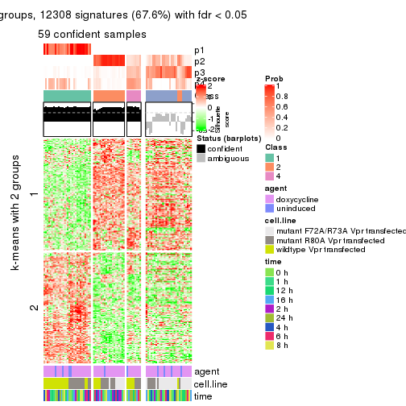
get_signatures(res, k = 5)
get_signatures(res, k = 6)
Signature heatmaps where rows are not scaled:
get_signatures(res, k = 2, scale_rows = FALSE)
get_signatures(res, k = 3, scale_rows = FALSE)
get_signatures(res, k = 4, scale_rows = FALSE)
get_signatures(res, k = 5, scale_rows = FALSE)
get_signatures(res, k = 6, scale_rows = FALSE)
Compare the overlap of signatures from different k:
compare_signatures(res)
get_signature() returns a data frame invisibly. TO get the list of signatures, the function
call should be assigned to a variable explicitly. In following code, if plot argument is set
to FALSE, no heatmap is plotted while only the differential analysis is performed.
# code only for demonstration
tb = get_signature(res, k = ..., plot = FALSE)
An example of the output of tb is:
#> which_row fdr mean_1 mean_2 scaled_mean_1 scaled_mean_2 km
#> 1 38 0.042760348 8.373488 9.131774 -0.5533452 0.5164555 1
#> 2 40 0.018707592 7.106213 8.469186 -0.6173731 0.5762149 1
#> 3 55 0.019134737 10.221463 11.207825 -0.6159697 0.5749050 1
#> 4 59 0.006059896 5.921854 7.869574 -0.6899429 0.6439467 1
#> 5 60 0.018055526 8.928898 10.211722 -0.6204761 0.5791110 1
#> 6 98 0.009384629 15.714769 14.887706 0.6635654 -0.6193277 2
...
The columns in tb are:
which_row: row indices corresponding to the input matrix.fdr: FDR for the differential test. mean_x: The mean value in group x.scaled_mean_x: The mean value in group x after rows are scaled.km: Row groups if k-means clustering is applied to rows.UMAP plot which shows how samples are separated.
dimension_reduction(res, k = 2, method = "UMAP")
dimension_reduction(res, k = 3, method = "UMAP")
dimension_reduction(res, k = 4, method = "UMAP")
dimension_reduction(res, k = 5, method = "UMAP")
dimension_reduction(res, k = 6, method = "UMAP")
Following heatmap shows how subgroups are split when increasing k:
collect_classes(res)
Test correlation between subgroups and known annotations. If the known annotation is numeric, one-way ANOVA test is applied, and if the known annotation is discrete, chi-squared contingency table test is applied.
test_to_known_factors(res)
#> n agent(p) cell.line(p) time(p) k
#> ATC:kmeans 87 0.971 5.49e-06 1.000 2
#> ATC:kmeans 85 0.862 9.28e-05 0.457 3
#> ATC:kmeans 59 0.630 1.99e-03 0.269 4
#> ATC:kmeans 72 0.737 7.44e-06 0.677 5
#> ATC:kmeans 68 0.896 2.66e-08 0.980 6
If matrix rows can be associated to genes, consider to use functional_enrichment(res,
...) to perform function enrichment for the signature genes. See this vignette for more detailed explanations.
The object with results only for a single top-value method and a single partition method can be extracted as:
res = res_list["ATC", "skmeans"]
# you can also extract it by
# res = res_list["ATC:skmeans"]
A summary of res and all the functions that can be applied to it:
res
#> A 'ConsensusPartition' object with k = 2, 3, 4, 5, 6.
#> On a matrix with 18211 rows and 87 columns.
#> Top rows (1000, 2000, 3000, 4000, 5000) are extracted by 'ATC' method.
#> Subgroups are detected by 'skmeans' method.
#> Performed in total 1250 partitions by row resampling.
#> Best k for subgroups seems to be 3.
#>
#> Following methods can be applied to this 'ConsensusPartition' object:
#> [1] "cola_report" "collect_classes" "collect_plots"
#> [4] "collect_stats" "colnames" "compare_signatures"
#> [7] "consensus_heatmap" "dimension_reduction" "functional_enrichment"
#> [10] "get_anno_col" "get_anno" "get_classes"
#> [13] "get_consensus" "get_matrix" "get_membership"
#> [16] "get_param" "get_signatures" "get_stats"
#> [19] "is_best_k" "is_stable_k" "membership_heatmap"
#> [22] "ncol" "nrow" "plot_ecdf"
#> [25] "rownames" "select_partition_number" "show"
#> [28] "suggest_best_k" "test_to_known_factors"
collect_plots() function collects all the plots made from res for all k (number of partitions)
into one single page to provide an easy and fast comparison between different k.
collect_plots(res)
The plots are:
k and the heatmap of
predicted classes for each k.k.k.k.All the plots in panels can be made by individual functions and they are plotted later in this section.
select_partition_number() produces several plots showing different
statistics for choosing “optimized” k. There are following statistics:
k;k, the area increased is defined as \(A_k - A_{k-1}\).The detailed explanations of these statistics can be found in the cola vignette.
Generally speaking, lower PAC score, higher mean silhouette score or higher
concordance corresponds to better partition. Rand index and Jaccard index
measure how similar the current partition is compared to partition with k-1.
If they are too similar, we won't accept k is better than k-1.
select_partition_number(res)

The numeric values for all these statistics can be obtained by get_stats().
get_stats(res)
#> k 1-PAC mean_silhouette concordance area_increased Rand Jaccard
#> 2 2 1.000 1.000 1.000 0.4646 0.536 0.536
#> 3 3 0.939 0.922 0.961 0.4301 0.797 0.621
#> 4 4 0.836 0.826 0.907 0.0994 0.918 0.757
#> 5 5 0.812 0.791 0.843 0.0415 0.939 0.776
#> 6 6 0.785 0.696 0.808 0.0281 0.978 0.903
suggest_best_k() suggests the best \(k\) based on these statistics. The rules are as follows:
suggest_best_k(res)
#> [1] 3
#> attr(,"optional")
#> [1] 2
There is also optional best \(k\) = 2 that is worth to check.
Following shows the table of the partitions (You need to click the show/hide
code output link to see it). The membership matrix (columns with name p*)
is inferred by
clue::cl_consensus()
function with the SE method. Basically the value in the membership matrix
represents the probability to belong to a certain group. The finall class
label for an item is determined with the group with highest probability it
belongs to.
In get_classes() function, the entropy is calculated from the membership
matrix and the silhouette score is calculated from the consensus matrix.
cbind(get_classes(res, k = 2), get_membership(res, k = 2))
#> class entropy silhouette p1 p2
#> GSM41890 1 0 1 1 0
#> GSM41917 1 0 1 1 0
#> GSM41936 2 0 1 0 1
#> GSM41893 1 0 1 1 0
#> GSM41920 1 0 1 1 0
#> GSM41937 2 0 1 0 1
#> GSM41896 1 0 1 1 0
#> GSM41923 1 0 1 1 0
#> GSM41938 2 0 1 0 1
#> GSM41899 1 0 1 1 0
#> GSM41925 1 0 1 1 0
#> GSM41939 2 0 1 0 1
#> GSM41902 1 0 1 1 0
#> GSM41927 1 0 1 1 0
#> GSM41940 2 0 1 0 1
#> GSM41905 1 0 1 1 0
#> GSM41929 1 0 1 1 0
#> GSM41941 2 0 1 0 1
#> GSM41908 1 0 1 1 0
#> GSM41931 1 0 1 1 0
#> GSM41942 2 0 1 0 1
#> GSM41945 2 0 1 0 1
#> GSM41911 1 0 1 1 0
#> GSM41933 1 0 1 1 0
#> GSM41943 2 0 1 0 1
#> GSM41944 2 0 1 0 1
#> GSM41876 2 0 1 0 1
#> GSM41895 2 0 1 0 1
#> GSM41898 2 0 1 0 1
#> GSM41877 2 0 1 0 1
#> GSM41901 2 0 1 0 1
#> GSM41904 2 0 1 0 1
#> GSM41878 2 0 1 0 1
#> GSM41907 2 0 1 0 1
#> GSM41910 2 0 1 0 1
#> GSM41879 2 0 1 0 1
#> GSM41913 2 0 1 0 1
#> GSM41916 2 0 1 0 1
#> GSM41880 2 0 1 0 1
#> GSM41919 2 0 1 0 1
#> GSM41922 2 0 1 0 1
#> GSM41881 2 0 1 0 1
#> GSM41924 2 0 1 0 1
#> GSM41926 2 0 1 0 1
#> GSM41869 2 0 1 0 1
#> GSM41928 1 0 1 1 0
#> GSM41930 2 0 1 0 1
#> GSM41882 2 0 1 0 1
#> GSM41932 2 0 1 0 1
#> GSM41934 2 0 1 0 1
#> GSM41860 2 0 1 0 1
#> GSM41871 2 0 1 0 1
#> GSM41875 2 0 1 0 1
#> GSM41894 1 0 1 1 0
#> GSM41897 1 0 1 1 0
#> GSM41861 2 0 1 0 1
#> GSM41872 2 0 1 0 1
#> GSM41900 1 0 1 1 0
#> GSM41862 2 0 1 0 1
#> GSM41873 2 0 1 0 1
#> GSM41903 1 0 1 1 0
#> GSM41863 2 0 1 0 1
#> GSM41883 2 0 1 0 1
#> GSM41906 1 0 1 1 0
#> GSM41864 2 0 1 0 1
#> GSM41884 2 0 1 0 1
#> GSM41909 1 0 1 1 0
#> GSM41912 1 0 1 1 0
#> GSM41865 2 0 1 0 1
#> GSM41885 2 0 1 0 1
#> GSM41915 1 0 1 1 0
#> GSM41866 2 0 1 0 1
#> GSM41886 2 0 1 0 1
#> GSM41918 1 0 1 1 0
#> GSM41867 2 0 1 0 1
#> GSM41868 2 0 1 0 1
#> GSM41921 1 0 1 1 0
#> GSM41887 1 0 1 1 0
#> GSM41914 1 0 1 1 0
#> GSM41935 2 0 1 0 1
#> GSM41874 2 0 1 0 1
#> GSM41889 2 0 1 0 1
#> GSM41892 2 0 1 0 1
#> GSM41859 2 0 1 0 1
#> GSM41870 2 0 1 0 1
#> GSM41888 1 0 1 1 0
#> GSM41891 1 0 1 1 0
cbind(get_classes(res, k = 3), get_membership(res, k = 3))
#> class entropy silhouette p1 p2 p3
#> GSM41890 1 0.0000 1.000 1 0.000 0.000
#> GSM41917 1 0.0000 1.000 1 0.000 0.000
#> GSM41936 2 0.2165 0.913 0 0.936 0.064
#> GSM41893 1 0.0000 1.000 1 0.000 0.000
#> GSM41920 1 0.0000 1.000 1 0.000 0.000
#> GSM41937 2 0.1289 0.929 0 0.968 0.032
#> GSM41896 1 0.0000 1.000 1 0.000 0.000
#> GSM41923 1 0.0000 1.000 1 0.000 0.000
#> GSM41938 2 0.1529 0.925 0 0.960 0.040
#> GSM41899 1 0.0000 1.000 1 0.000 0.000
#> GSM41925 1 0.0000 1.000 1 0.000 0.000
#> GSM41939 2 0.0592 0.935 0 0.988 0.012
#> GSM41902 1 0.0000 1.000 1 0.000 0.000
#> GSM41927 1 0.0000 1.000 1 0.000 0.000
#> GSM41940 2 0.0237 0.933 0 0.996 0.004
#> GSM41905 1 0.0000 1.000 1 0.000 0.000
#> GSM41929 1 0.0000 1.000 1 0.000 0.000
#> GSM41941 2 0.1163 0.930 0 0.972 0.028
#> GSM41908 1 0.0000 1.000 1 0.000 0.000
#> GSM41931 1 0.0000 1.000 1 0.000 0.000
#> GSM41942 2 0.0237 0.933 0 0.996 0.004
#> GSM41945 2 0.2448 0.905 0 0.924 0.076
#> GSM41911 1 0.0000 1.000 1 0.000 0.000
#> GSM41933 1 0.0000 1.000 1 0.000 0.000
#> GSM41943 2 0.0592 0.930 0 0.988 0.012
#> GSM41944 2 0.6079 0.404 0 0.612 0.388
#> GSM41876 2 0.0892 0.935 0 0.980 0.020
#> GSM41895 3 0.1411 0.931 0 0.036 0.964
#> GSM41898 3 0.0424 0.944 0 0.008 0.992
#> GSM41877 2 0.0592 0.935 0 0.988 0.012
#> GSM41901 3 0.0424 0.944 0 0.008 0.992
#> GSM41904 2 0.1643 0.928 0 0.956 0.044
#> GSM41878 2 0.0592 0.935 0 0.988 0.012
#> GSM41907 3 0.0424 0.944 0 0.008 0.992
#> GSM41910 3 0.0424 0.944 0 0.008 0.992
#> GSM41879 2 0.1529 0.929 0 0.960 0.040
#> GSM41913 3 0.0424 0.944 0 0.008 0.992
#> GSM41916 3 0.0424 0.944 0 0.008 0.992
#> GSM41880 2 0.0592 0.935 0 0.988 0.012
#> GSM41919 3 0.0237 0.942 0 0.004 0.996
#> GSM41922 3 0.0424 0.944 0 0.008 0.992
#> GSM41881 2 0.6252 0.267 0 0.556 0.444
#> GSM41924 3 0.0424 0.944 0 0.008 0.992
#> GSM41926 3 0.0237 0.942 0 0.004 0.996
#> GSM41869 2 0.0592 0.935 0 0.988 0.012
#> GSM41928 1 0.0000 1.000 1 0.000 0.000
#> GSM41930 3 0.0424 0.944 0 0.008 0.992
#> GSM41882 3 0.1031 0.931 0 0.024 0.976
#> GSM41932 3 0.0424 0.944 0 0.008 0.992
#> GSM41934 3 0.0424 0.944 0 0.008 0.992
#> GSM41860 3 0.3686 0.840 0 0.140 0.860
#> GSM41871 2 0.0592 0.935 0 0.988 0.012
#> GSM41875 2 0.0000 0.932 0 1.000 0.000
#> GSM41894 1 0.0000 1.000 1 0.000 0.000
#> GSM41897 1 0.0000 1.000 1 0.000 0.000
#> GSM41861 3 0.4605 0.758 0 0.204 0.796
#> GSM41872 2 0.0747 0.935 0 0.984 0.016
#> GSM41900 1 0.0000 1.000 1 0.000 0.000
#> GSM41862 3 0.3412 0.850 0 0.124 0.876
#> GSM41873 2 0.1964 0.921 0 0.944 0.056
#> GSM41903 1 0.0000 1.000 1 0.000 0.000
#> GSM41863 2 0.3752 0.836 0 0.856 0.144
#> GSM41883 2 0.0592 0.935 0 0.988 0.012
#> GSM41906 1 0.0000 1.000 1 0.000 0.000
#> GSM41864 3 0.3412 0.847 0 0.124 0.876
#> GSM41884 2 0.0592 0.935 0 0.988 0.012
#> GSM41909 1 0.0000 1.000 1 0.000 0.000
#> GSM41912 1 0.0000 1.000 1 0.000 0.000
#> GSM41865 3 0.6260 0.135 0 0.448 0.552
#> GSM41885 2 0.0592 0.935 0 0.988 0.012
#> GSM41915 1 0.0000 1.000 1 0.000 0.000
#> GSM41866 2 0.2711 0.895 0 0.912 0.088
#> GSM41886 2 0.0592 0.935 0 0.988 0.012
#> GSM41918 1 0.0000 1.000 1 0.000 0.000
#> GSM41867 2 0.0424 0.929 0 0.992 0.008
#> GSM41868 2 0.0424 0.935 0 0.992 0.008
#> GSM41921 1 0.0000 1.000 1 0.000 0.000
#> GSM41887 1 0.0000 1.000 1 0.000 0.000
#> GSM41914 1 0.0000 1.000 1 0.000 0.000
#> GSM41935 2 0.6140 0.358 0 0.596 0.404
#> GSM41874 2 0.2356 0.916 0 0.928 0.072
#> GSM41889 3 0.1411 0.931 0 0.036 0.964
#> GSM41892 3 0.0424 0.944 0 0.008 0.992
#> GSM41859 3 0.0424 0.944 0 0.008 0.992
#> GSM41870 2 0.0592 0.935 0 0.988 0.012
#> GSM41888 1 0.0000 1.000 1 0.000 0.000
#> GSM41891 1 0.0000 1.000 1 0.000 0.000
cbind(get_classes(res, k = 4), get_membership(res, k = 4))
#> class entropy silhouette p1 p2 p3 p4
#> GSM41890 1 0.0000 0.9994 1.00 0.000 0.000 0.000
#> GSM41917 1 0.0000 0.9994 1.00 0.000 0.000 0.000
#> GSM41936 4 0.3808 0.7774 0.00 0.176 0.012 0.812
#> GSM41893 1 0.0000 0.9994 1.00 0.000 0.000 0.000
#> GSM41920 1 0.0000 0.9994 1.00 0.000 0.000 0.000
#> GSM41937 4 0.3937 0.7735 0.00 0.188 0.012 0.800
#> GSM41896 1 0.0000 0.9994 1.00 0.000 0.000 0.000
#> GSM41923 1 0.0000 0.9994 1.00 0.000 0.000 0.000
#> GSM41938 4 0.3852 0.7779 0.00 0.180 0.012 0.808
#> GSM41899 1 0.0000 0.9994 1.00 0.000 0.000 0.000
#> GSM41925 1 0.0000 0.9994 1.00 0.000 0.000 0.000
#> GSM41939 4 0.4454 0.6623 0.00 0.308 0.000 0.692
#> GSM41902 1 0.0000 0.9994 1.00 0.000 0.000 0.000
#> GSM41927 1 0.0000 0.9994 1.00 0.000 0.000 0.000
#> GSM41940 4 0.4193 0.7055 0.00 0.268 0.000 0.732
#> GSM41905 1 0.0000 0.9994 1.00 0.000 0.000 0.000
#> GSM41929 1 0.0000 0.9994 1.00 0.000 0.000 0.000
#> GSM41941 4 0.1867 0.7910 0.00 0.072 0.000 0.928
#> GSM41908 1 0.0000 0.9994 1.00 0.000 0.000 0.000
#> GSM41931 1 0.0000 0.9994 1.00 0.000 0.000 0.000
#> GSM41942 4 0.4382 0.6739 0.00 0.296 0.000 0.704
#> GSM41945 4 0.0188 0.7789 0.00 0.004 0.000 0.996
#> GSM41911 1 0.0000 0.9994 1.00 0.000 0.000 0.000
#> GSM41933 1 0.0000 0.9994 1.00 0.000 0.000 0.000
#> GSM41943 4 0.2081 0.7773 0.00 0.084 0.000 0.916
#> GSM41944 4 0.0188 0.7768 0.00 0.000 0.004 0.996
#> GSM41876 2 0.2473 0.8036 0.00 0.908 0.012 0.080
#> GSM41895 3 0.4655 0.7818 0.00 0.088 0.796 0.116
#> GSM41898 3 0.0000 0.8257 0.00 0.000 1.000 0.000
#> GSM41877 2 0.0188 0.8588 0.00 0.996 0.004 0.000
#> GSM41901 3 0.2843 0.8415 0.00 0.020 0.892 0.088
#> GSM41904 2 0.4434 0.6319 0.00 0.756 0.016 0.228
#> GSM41878 2 0.0188 0.8588 0.00 0.996 0.004 0.000
#> GSM41907 3 0.2775 0.8422 0.00 0.020 0.896 0.084
#> GSM41910 3 0.0000 0.8257 0.00 0.000 1.000 0.000
#> GSM41879 2 0.3647 0.7320 0.00 0.832 0.016 0.152
#> GSM41913 3 0.2843 0.8415 0.00 0.020 0.892 0.088
#> GSM41916 3 0.0000 0.8257 0.00 0.000 1.000 0.000
#> GSM41880 2 0.0188 0.8588 0.00 0.996 0.004 0.000
#> GSM41919 3 0.1807 0.8402 0.00 0.008 0.940 0.052
#> GSM41922 3 0.0000 0.8257 0.00 0.000 1.000 0.000
#> GSM41881 4 0.7625 0.1734 0.00 0.252 0.276 0.472
#> GSM41924 3 0.3015 0.8389 0.00 0.024 0.884 0.092
#> GSM41926 3 0.0336 0.8217 0.00 0.000 0.992 0.008
#> GSM41869 2 0.0188 0.8588 0.00 0.996 0.004 0.000
#> GSM41928 1 0.0804 0.9818 0.98 0.000 0.008 0.012
#> GSM41930 3 0.0000 0.8257 0.00 0.000 1.000 0.000
#> GSM41882 3 0.5427 0.4727 0.00 0.016 0.568 0.416
#> GSM41932 3 0.3015 0.8389 0.00 0.024 0.884 0.092
#> GSM41934 3 0.0000 0.8257 0.00 0.000 1.000 0.000
#> GSM41860 3 0.6581 0.5837 0.00 0.144 0.624 0.232
#> GSM41871 2 0.0188 0.8588 0.00 0.996 0.004 0.000
#> GSM41875 2 0.0469 0.8477 0.00 0.988 0.000 0.012
#> GSM41894 1 0.0000 0.9994 1.00 0.000 0.000 0.000
#> GSM41897 1 0.0000 0.9994 1.00 0.000 0.000 0.000
#> GSM41861 3 0.6606 0.5804 0.00 0.152 0.624 0.224
#> GSM41872 2 0.1978 0.8201 0.00 0.928 0.004 0.068
#> GSM41900 1 0.0000 0.9994 1.00 0.000 0.000 0.000
#> GSM41862 3 0.6079 0.3267 0.00 0.044 0.492 0.464
#> GSM41873 2 0.4706 0.6060 0.00 0.732 0.020 0.248
#> GSM41903 1 0.0000 0.9994 1.00 0.000 0.000 0.000
#> GSM41863 4 0.2021 0.7796 0.00 0.056 0.012 0.932
#> GSM41883 2 0.0188 0.8588 0.00 0.996 0.004 0.000
#> GSM41906 1 0.0000 0.9994 1.00 0.000 0.000 0.000
#> GSM41864 3 0.6079 0.3258 0.00 0.044 0.492 0.464
#> GSM41884 2 0.0188 0.8588 0.00 0.996 0.004 0.000
#> GSM41909 1 0.0000 0.9994 1.00 0.000 0.000 0.000
#> GSM41912 1 0.0000 0.9994 1.00 0.000 0.000 0.000
#> GSM41865 2 0.7599 -0.0252 0.00 0.424 0.200 0.376
#> GSM41885 2 0.0188 0.8588 0.00 0.996 0.004 0.000
#> GSM41915 1 0.0000 0.9994 1.00 0.000 0.000 0.000
#> GSM41866 4 0.4776 0.5503 0.00 0.272 0.016 0.712
#> GSM41886 2 0.0188 0.8588 0.00 0.996 0.004 0.000
#> GSM41918 1 0.0000 0.9994 1.00 0.000 0.000 0.000
#> GSM41867 2 0.4356 0.5053 0.00 0.708 0.000 0.292
#> GSM41868 2 0.0524 0.8490 0.00 0.988 0.008 0.004
#> GSM41921 1 0.0000 0.9994 1.00 0.000 0.000 0.000
#> GSM41887 1 0.0000 0.9994 1.00 0.000 0.000 0.000
#> GSM41914 1 0.0000 0.9994 1.00 0.000 0.000 0.000
#> GSM41935 4 0.1388 0.7781 0.00 0.012 0.028 0.960
#> GSM41874 2 0.5127 0.4422 0.00 0.632 0.012 0.356
#> GSM41889 3 0.4655 0.7814 0.00 0.088 0.796 0.116
#> GSM41892 3 0.2489 0.8432 0.00 0.020 0.912 0.068
#> GSM41859 3 0.2300 0.8430 0.00 0.016 0.920 0.064
#> GSM41870 2 0.0188 0.8588 0.00 0.996 0.004 0.000
#> GSM41888 1 0.0000 0.9994 1.00 0.000 0.000 0.000
#> GSM41891 1 0.0000 0.9994 1.00 0.000 0.000 0.000
cbind(get_classes(res, k = 5), get_membership(res, k = 5))
#> class entropy silhouette p1 p2 p3 p4 p5
#> GSM41890 1 0.0290 0.980 0.992 0.000 0.000 0.000 0.008
#> GSM41917 1 0.1522 0.960 0.944 0.000 0.000 0.012 0.044
#> GSM41936 4 0.6060 0.668 0.000 0.120 0.016 0.604 0.260
#> GSM41893 1 0.0000 0.980 1.000 0.000 0.000 0.000 0.000
#> GSM41920 1 0.1522 0.960 0.944 0.000 0.000 0.012 0.044
#> GSM41937 4 0.5833 0.720 0.000 0.144 0.008 0.632 0.216
#> GSM41896 1 0.0162 0.980 0.996 0.000 0.000 0.000 0.004
#> GSM41923 1 0.0000 0.980 1.000 0.000 0.000 0.000 0.000
#> GSM41938 4 0.5745 0.702 0.000 0.124 0.004 0.620 0.252
#> GSM41899 1 0.0000 0.980 1.000 0.000 0.000 0.000 0.000
#> GSM41925 1 0.0000 0.980 1.000 0.000 0.000 0.000 0.000
#> GSM41939 4 0.6246 0.661 0.000 0.200 0.008 0.580 0.212
#> GSM41902 1 0.1408 0.962 0.948 0.000 0.000 0.008 0.044
#> GSM41927 1 0.1012 0.972 0.968 0.000 0.000 0.012 0.020
#> GSM41940 4 0.4728 0.760 0.000 0.164 0.004 0.740 0.092
#> GSM41905 1 0.0992 0.973 0.968 0.000 0.000 0.008 0.024
#> GSM41929 1 0.1364 0.964 0.952 0.000 0.000 0.012 0.036
#> GSM41941 4 0.3141 0.765 0.000 0.040 0.000 0.852 0.108
#> GSM41908 1 0.0162 0.980 0.996 0.000 0.000 0.000 0.004
#> GSM41931 1 0.0671 0.976 0.980 0.000 0.000 0.004 0.016
#> GSM41942 4 0.4922 0.755 0.000 0.180 0.004 0.720 0.096
#> GSM41945 4 0.2280 0.730 0.000 0.000 0.000 0.880 0.120
#> GSM41911 1 0.0510 0.978 0.984 0.000 0.000 0.000 0.016
#> GSM41933 1 0.0898 0.974 0.972 0.000 0.000 0.008 0.020
#> GSM41943 4 0.2208 0.743 0.000 0.020 0.000 0.908 0.072
#> GSM41944 4 0.2516 0.722 0.000 0.000 0.000 0.860 0.140
#> GSM41876 2 0.2690 0.744 0.000 0.844 0.000 0.000 0.156
#> GSM41895 3 0.5457 0.359 0.000 0.060 0.480 0.000 0.460
#> GSM41898 3 0.0880 0.709 0.000 0.000 0.968 0.000 0.032
#> GSM41877 2 0.1341 0.860 0.000 0.944 0.000 0.000 0.056
#> GSM41901 3 0.4030 0.693 0.000 0.000 0.648 0.000 0.352
#> GSM41904 5 0.4074 0.518 0.000 0.364 0.000 0.000 0.636
#> GSM41878 2 0.0404 0.879 0.000 0.988 0.000 0.000 0.012
#> GSM41907 3 0.4030 0.693 0.000 0.000 0.648 0.000 0.352
#> GSM41910 3 0.0703 0.707 0.000 0.000 0.976 0.000 0.024
#> GSM41879 2 0.4060 0.299 0.000 0.640 0.000 0.000 0.360
#> GSM41913 3 0.4030 0.693 0.000 0.000 0.648 0.000 0.352
#> GSM41916 3 0.0609 0.705 0.000 0.000 0.980 0.000 0.020
#> GSM41880 2 0.1043 0.870 0.000 0.960 0.000 0.000 0.040
#> GSM41919 3 0.3970 0.706 0.000 0.000 0.752 0.024 0.224
#> GSM41922 3 0.0794 0.708 0.000 0.000 0.972 0.000 0.028
#> GSM41881 5 0.3566 0.729 0.000 0.064 0.028 0.056 0.852
#> GSM41924 3 0.4045 0.690 0.000 0.000 0.644 0.000 0.356
#> GSM41926 3 0.2659 0.611 0.000 0.000 0.888 0.060 0.052
#> GSM41869 2 0.0324 0.878 0.000 0.992 0.000 0.004 0.004
#> GSM41928 1 0.5109 0.723 0.752 0.000 0.088 0.108 0.052
#> GSM41930 3 0.0609 0.701 0.000 0.000 0.980 0.000 0.020
#> GSM41882 5 0.5508 0.319 0.000 0.004 0.264 0.096 0.636
#> GSM41932 3 0.4088 0.672 0.000 0.000 0.632 0.000 0.368
#> GSM41934 3 0.0898 0.702 0.000 0.000 0.972 0.008 0.020
#> GSM41860 5 0.4322 0.653 0.000 0.088 0.144 0.000 0.768
#> GSM41871 2 0.0880 0.874 0.000 0.968 0.000 0.000 0.032
#> GSM41875 2 0.1568 0.847 0.000 0.944 0.000 0.036 0.020
#> GSM41894 1 0.0000 0.980 1.000 0.000 0.000 0.000 0.000
#> GSM41897 1 0.0000 0.980 1.000 0.000 0.000 0.000 0.000
#> GSM41861 5 0.4662 0.615 0.000 0.096 0.168 0.000 0.736
#> GSM41872 2 0.3452 0.617 0.000 0.756 0.000 0.000 0.244
#> GSM41900 1 0.0000 0.980 1.000 0.000 0.000 0.000 0.000
#> GSM41862 5 0.3312 0.718 0.000 0.020 0.068 0.048 0.864
#> GSM41873 5 0.4470 0.494 0.000 0.372 0.000 0.012 0.616
#> GSM41903 1 0.0451 0.979 0.988 0.000 0.000 0.008 0.004
#> GSM41863 5 0.3944 0.573 0.000 0.032 0.000 0.200 0.768
#> GSM41883 2 0.0451 0.872 0.000 0.988 0.000 0.008 0.004
#> GSM41906 1 0.0162 0.980 0.996 0.000 0.000 0.004 0.000
#> GSM41864 5 0.3191 0.724 0.000 0.024 0.064 0.040 0.872
#> GSM41884 2 0.0290 0.879 0.000 0.992 0.000 0.000 0.008
#> GSM41909 1 0.0000 0.980 1.000 0.000 0.000 0.000 0.000
#> GSM41912 1 0.0000 0.980 1.000 0.000 0.000 0.000 0.000
#> GSM41865 5 0.3825 0.743 0.000 0.104 0.048 0.020 0.828
#> GSM41885 2 0.0290 0.879 0.000 0.992 0.000 0.000 0.008
#> GSM41915 1 0.0000 0.980 1.000 0.000 0.000 0.000 0.000
#> GSM41866 5 0.4238 0.645 0.000 0.088 0.000 0.136 0.776
#> GSM41886 2 0.0324 0.878 0.000 0.992 0.000 0.004 0.004
#> GSM41918 1 0.0000 0.980 1.000 0.000 0.000 0.000 0.000
#> GSM41867 2 0.6057 0.395 0.000 0.576 0.000 0.200 0.224
#> GSM41868 2 0.2506 0.818 0.000 0.904 0.008 0.052 0.036
#> GSM41921 1 0.0000 0.980 1.000 0.000 0.000 0.000 0.000
#> GSM41887 1 0.0162 0.980 0.996 0.000 0.000 0.000 0.004
#> GSM41914 1 0.1522 0.960 0.944 0.000 0.000 0.012 0.044
#> GSM41935 4 0.4568 0.665 0.000 0.008 0.020 0.684 0.288
#> GSM41874 5 0.4442 0.620 0.000 0.284 0.000 0.028 0.688
#> GSM41889 3 0.5507 0.358 0.000 0.064 0.480 0.000 0.456
#> GSM41892 3 0.3999 0.698 0.000 0.000 0.656 0.000 0.344
#> GSM41859 3 0.3932 0.703 0.000 0.000 0.672 0.000 0.328
#> GSM41870 2 0.0510 0.879 0.000 0.984 0.000 0.000 0.016
#> GSM41888 1 0.0798 0.976 0.976 0.000 0.000 0.008 0.016
#> GSM41891 1 0.0000 0.980 1.000 0.000 0.000 0.000 0.000
cbind(get_classes(res, k = 6), get_membership(res, k = 6))
#> class entropy silhouette p1 p2 p3 p4 p5 p6
#> GSM41890 1 0.0146 0.952 0.996 0.000 0.000 0.000 0.004 0.000
#> GSM41917 1 0.2165 0.869 0.884 0.000 0.000 0.008 0.108 0.000
#> GSM41936 4 0.5675 0.691 0.000 0.140 0.016 0.652 0.028 0.164
#> GSM41893 1 0.0146 0.953 0.996 0.000 0.000 0.000 0.004 0.000
#> GSM41920 1 0.2165 0.869 0.884 0.000 0.000 0.008 0.108 0.000
#> GSM41937 4 0.5281 0.727 0.000 0.160 0.008 0.684 0.028 0.120
#> GSM41896 1 0.0000 0.953 1.000 0.000 0.000 0.000 0.000 0.000
#> GSM41923 1 0.0146 0.953 0.996 0.000 0.000 0.000 0.004 0.000
#> GSM41938 4 0.5224 0.728 0.000 0.132 0.008 0.692 0.028 0.140
#> GSM41899 1 0.0000 0.953 1.000 0.000 0.000 0.000 0.000 0.000
#> GSM41925 1 0.0146 0.953 0.996 0.000 0.000 0.000 0.004 0.000
#> GSM41939 4 0.5774 0.677 0.000 0.200 0.012 0.628 0.028 0.132
#> GSM41902 1 0.1814 0.886 0.900 0.000 0.000 0.000 0.100 0.000
#> GSM41927 1 0.1075 0.932 0.952 0.000 0.000 0.000 0.048 0.000
#> GSM41940 4 0.4029 0.750 0.000 0.152 0.008 0.776 0.008 0.056
#> GSM41905 1 0.1588 0.912 0.924 0.000 0.000 0.004 0.072 0.000
#> GSM41929 1 0.2070 0.879 0.892 0.000 0.000 0.008 0.100 0.000
#> GSM41941 4 0.2784 0.719 0.000 0.040 0.000 0.880 0.040 0.040
#> GSM41908 1 0.0000 0.953 1.000 0.000 0.000 0.000 0.000 0.000
#> GSM41931 1 0.1141 0.930 0.948 0.000 0.000 0.000 0.052 0.000
#> GSM41942 4 0.4550 0.743 0.000 0.172 0.004 0.732 0.016 0.076
#> GSM41945 4 0.3377 0.641 0.000 0.000 0.000 0.808 0.136 0.056
#> GSM41911 1 0.0547 0.949 0.980 0.000 0.000 0.000 0.020 0.000
#> GSM41933 1 0.1501 0.911 0.924 0.000 0.000 0.000 0.076 0.000
#> GSM41943 4 0.2655 0.665 0.000 0.012 0.000 0.872 0.096 0.020
#> GSM41944 4 0.3806 0.626 0.000 0.000 0.000 0.776 0.136 0.088
#> GSM41876 2 0.3527 0.729 0.000 0.828 0.004 0.040 0.024 0.104
#> GSM41895 6 0.7200 -0.215 0.000 0.068 0.368 0.032 0.128 0.404
#> GSM41898 3 0.0993 0.624 0.000 0.000 0.964 0.000 0.012 0.024
#> GSM41877 2 0.2295 0.794 0.000 0.904 0.000 0.028 0.016 0.052
#> GSM41901 3 0.5794 0.484 0.000 0.004 0.500 0.008 0.128 0.360
#> GSM41904 6 0.4843 0.434 0.000 0.304 0.000 0.044 0.020 0.632
#> GSM41878 2 0.0767 0.824 0.000 0.976 0.000 0.004 0.008 0.012
#> GSM41907 3 0.5716 0.502 0.000 0.004 0.516 0.008 0.120 0.352
#> GSM41910 3 0.0458 0.621 0.000 0.000 0.984 0.000 0.000 0.016
#> GSM41879 2 0.4972 0.307 0.000 0.596 0.000 0.044 0.020 0.340
#> GSM41913 3 0.5748 0.499 0.000 0.004 0.512 0.008 0.124 0.352
#> GSM41916 3 0.0914 0.613 0.000 0.000 0.968 0.000 0.016 0.016
#> GSM41880 2 0.2164 0.800 0.000 0.912 0.000 0.028 0.016 0.044
#> GSM41919 3 0.6012 0.480 0.000 0.000 0.528 0.016 0.236 0.220
#> GSM41922 3 0.0692 0.622 0.000 0.000 0.976 0.000 0.004 0.020
#> GSM41881 6 0.2402 0.632 0.000 0.016 0.012 0.052 0.016 0.904
#> GSM41924 3 0.5732 0.491 0.000 0.004 0.508 0.008 0.120 0.360
#> GSM41926 3 0.3555 0.280 0.000 0.000 0.712 0.000 0.280 0.008
#> GSM41869 2 0.1194 0.816 0.000 0.956 0.000 0.008 0.032 0.004
#> GSM41928 5 0.6084 0.000 0.360 0.000 0.096 0.040 0.500 0.004
#> GSM41930 3 0.1152 0.581 0.000 0.000 0.952 0.000 0.044 0.004
#> GSM41882 6 0.5519 0.360 0.000 0.000 0.176 0.072 0.092 0.660
#> GSM41932 3 0.5778 0.474 0.000 0.004 0.496 0.008 0.124 0.368
#> GSM41934 3 0.1802 0.567 0.000 0.000 0.916 0.000 0.072 0.012
#> GSM41860 6 0.4996 0.500 0.000 0.044 0.140 0.020 0.064 0.732
#> GSM41871 2 0.1409 0.815 0.000 0.948 0.000 0.012 0.008 0.032
#> GSM41875 2 0.3578 0.730 0.000 0.800 0.000 0.032 0.152 0.016
#> GSM41894 1 0.0146 0.953 0.996 0.000 0.000 0.000 0.004 0.000
#> GSM41897 1 0.0146 0.953 0.996 0.000 0.000 0.000 0.004 0.000
#> GSM41861 6 0.6245 0.433 0.000 0.072 0.172 0.040 0.084 0.632
#> GSM41872 2 0.3991 0.631 0.000 0.744 0.000 0.028 0.016 0.212
#> GSM41900 1 0.0146 0.953 0.996 0.000 0.000 0.000 0.004 0.000
#> GSM41862 6 0.2125 0.619 0.000 0.000 0.028 0.028 0.028 0.916
#> GSM41873 6 0.5031 0.348 0.000 0.352 0.000 0.036 0.028 0.584
#> GSM41903 1 0.1049 0.939 0.960 0.000 0.000 0.008 0.032 0.000
#> GSM41863 6 0.3552 0.523 0.000 0.020 0.000 0.148 0.028 0.804
#> GSM41883 2 0.1900 0.799 0.000 0.916 0.000 0.008 0.068 0.008
#> GSM41906 1 0.0622 0.948 0.980 0.000 0.000 0.008 0.012 0.000
#> GSM41864 6 0.2106 0.624 0.000 0.004 0.028 0.020 0.028 0.920
#> GSM41884 2 0.0405 0.826 0.000 0.988 0.000 0.000 0.004 0.008
#> GSM41909 1 0.0146 0.953 0.996 0.000 0.000 0.000 0.004 0.000
#> GSM41912 1 0.0146 0.953 0.996 0.000 0.000 0.000 0.004 0.000
#> GSM41865 6 0.2171 0.627 0.000 0.016 0.032 0.004 0.032 0.916
#> GSM41885 2 0.0363 0.824 0.000 0.988 0.000 0.000 0.012 0.000
#> GSM41915 1 0.0146 0.953 0.996 0.000 0.000 0.000 0.004 0.000
#> GSM41866 6 0.3648 0.571 0.000 0.068 0.000 0.084 0.028 0.820
#> GSM41886 2 0.1268 0.815 0.000 0.952 0.000 0.008 0.036 0.004
#> GSM41918 1 0.0146 0.953 0.996 0.000 0.000 0.000 0.004 0.000
#> GSM41867 2 0.7425 0.189 0.000 0.384 0.000 0.160 0.196 0.260
#> GSM41868 2 0.4299 0.677 0.000 0.728 0.000 0.028 0.212 0.032
#> GSM41921 1 0.0146 0.953 0.996 0.000 0.000 0.000 0.004 0.000
#> GSM41887 1 0.0000 0.953 1.000 0.000 0.000 0.000 0.000 0.000
#> GSM41914 1 0.2212 0.865 0.880 0.000 0.000 0.008 0.112 0.000
#> GSM41935 4 0.5718 0.514 0.000 0.020 0.020 0.580 0.072 0.308
#> GSM41874 6 0.5011 0.471 0.000 0.268 0.000 0.052 0.032 0.648
#> GSM41889 6 0.7237 -0.201 0.000 0.072 0.364 0.032 0.128 0.404
#> GSM41892 3 0.5640 0.530 0.000 0.008 0.560 0.008 0.112 0.312
#> GSM41859 3 0.5653 0.526 0.000 0.008 0.556 0.008 0.112 0.316
#> GSM41870 2 0.0405 0.826 0.000 0.988 0.000 0.008 0.004 0.000
#> GSM41888 1 0.0790 0.943 0.968 0.000 0.000 0.000 0.032 0.000
#> GSM41891 1 0.0146 0.953 0.996 0.000 0.000 0.000 0.004 0.000
Heatmaps for the consensus matrix. It visualizes the probability of two samples to be in a same group.
consensus_heatmap(res, k = 2)
consensus_heatmap(res, k = 3)
consensus_heatmap(res, k = 4)
consensus_heatmap(res, k = 5)
consensus_heatmap(res, k = 6)
Heatmaps for the membership of samples in all partitions to see how consistent they are:
membership_heatmap(res, k = 2)
membership_heatmap(res, k = 3)

membership_heatmap(res, k = 4)
membership_heatmap(res, k = 5)

membership_heatmap(res, k = 6)
As soon as we have had the classes for columns, we can look for signatures which are significantly different between classes which can be candidate marks for certain classes. Following are the heatmaps for signatures.
Signature heatmaps where rows are scaled:
get_signatures(res, k = 2)
get_signatures(res, k = 3)
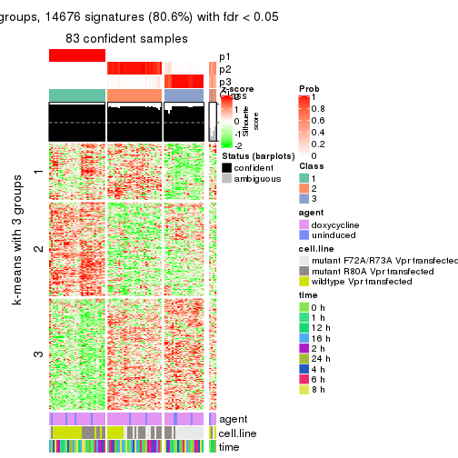
get_signatures(res, k = 4)
get_signatures(res, k = 5)
get_signatures(res, k = 6)
Signature heatmaps where rows are not scaled:
get_signatures(res, k = 2, scale_rows = FALSE)
get_signatures(res, k = 3, scale_rows = FALSE)
get_signatures(res, k = 4, scale_rows = FALSE)
get_signatures(res, k = 5, scale_rows = FALSE)
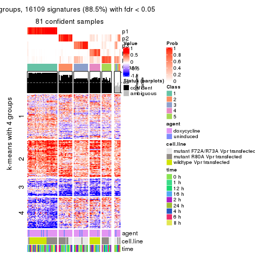
get_signatures(res, k = 6, scale_rows = FALSE)
Compare the overlap of signatures from different k:
compare_signatures(res)
get_signature() returns a data frame invisibly. TO get the list of signatures, the function
call should be assigned to a variable explicitly. In following code, if plot argument is set
to FALSE, no heatmap is plotted while only the differential analysis is performed.
# code only for demonstration
tb = get_signature(res, k = ..., plot = FALSE)
An example of the output of tb is:
#> which_row fdr mean_1 mean_2 scaled_mean_1 scaled_mean_2 km
#> 1 38 0.042760348 8.373488 9.131774 -0.5533452 0.5164555 1
#> 2 40 0.018707592 7.106213 8.469186 -0.6173731 0.5762149 1
#> 3 55 0.019134737 10.221463 11.207825 -0.6159697 0.5749050 1
#> 4 59 0.006059896 5.921854 7.869574 -0.6899429 0.6439467 1
#> 5 60 0.018055526 8.928898 10.211722 -0.6204761 0.5791110 1
#> 6 98 0.009384629 15.714769 14.887706 0.6635654 -0.6193277 2
...
The columns in tb are:
which_row: row indices corresponding to the input matrix.fdr: FDR for the differential test. mean_x: The mean value in group x.scaled_mean_x: The mean value in group x after rows are scaled.km: Row groups if k-means clustering is applied to rows.UMAP plot which shows how samples are separated.
dimension_reduction(res, k = 2, method = "UMAP")

dimension_reduction(res, k = 3, method = "UMAP")
dimension_reduction(res, k = 4, method = "UMAP")
dimension_reduction(res, k = 5, method = "UMAP")
dimension_reduction(res, k = 6, method = "UMAP")
Following heatmap shows how subgroups are split when increasing k:
collect_classes(res)
Test correlation between subgroups and known annotations. If the known annotation is numeric, one-way ANOVA test is applied, and if the known annotation is discrete, chi-squared contingency table test is applied.
test_to_known_factors(res)
#> n agent(p) cell.line(p) time(p) k
#> ATC:skmeans 87 1.000 2.80e-05 1.000 2
#> ATC:skmeans 83 0.652 1.20e-07 0.999 3
#> ATC:skmeans 81 0.744 6.57e-12 1.000 4
#> ATC:skmeans 81 0.978 1.55e-13 1.000 5
#> ATC:skmeans 70 0.693 2.47e-11 0.998 6
If matrix rows can be associated to genes, consider to use functional_enrichment(res,
...) to perform function enrichment for the signature genes. See this vignette for more detailed explanations.
The object with results only for a single top-value method and a single partition method can be extracted as:
res = res_list["ATC", "pam"]
# you can also extract it by
# res = res_list["ATC:pam"]
A summary of res and all the functions that can be applied to it:
res
#> A 'ConsensusPartition' object with k = 2, 3, 4, 5, 6.
#> On a matrix with 18211 rows and 87 columns.
#> Top rows (1000, 2000, 3000, 4000, 5000) are extracted by 'ATC' method.
#> Subgroups are detected by 'pam' method.
#> Performed in total 1250 partitions by row resampling.
#> Best k for subgroups seems to be 2.
#>
#> Following methods can be applied to this 'ConsensusPartition' object:
#> [1] "cola_report" "collect_classes" "collect_plots"
#> [4] "collect_stats" "colnames" "compare_signatures"
#> [7] "consensus_heatmap" "dimension_reduction" "functional_enrichment"
#> [10] "get_anno_col" "get_anno" "get_classes"
#> [13] "get_consensus" "get_matrix" "get_membership"
#> [16] "get_param" "get_signatures" "get_stats"
#> [19] "is_best_k" "is_stable_k" "membership_heatmap"
#> [22] "ncol" "nrow" "plot_ecdf"
#> [25] "rownames" "select_partition_number" "show"
#> [28] "suggest_best_k" "test_to_known_factors"
collect_plots() function collects all the plots made from res for all k (number of partitions)
into one single page to provide an easy and fast comparison between different k.
collect_plots(res)
The plots are:
k and the heatmap of
predicted classes for each k.k.k.k.All the plots in panels can be made by individual functions and they are plotted later in this section.
select_partition_number() produces several plots showing different
statistics for choosing “optimized” k. There are following statistics:
k;k, the area increased is defined as \(A_k - A_{k-1}\).The detailed explanations of these statistics can be found in the cola vignette.
Generally speaking, lower PAC score, higher mean silhouette score or higher
concordance corresponds to better partition. Rand index and Jaccard index
measure how similar the current partition is compared to partition with k-1.
If they are too similar, we won't accept k is better than k-1.
select_partition_number(res)
The numeric values for all these statistics can be obtained by get_stats().
get_stats(res)
#> k 1-PAC mean_silhouette concordance area_increased Rand Jaccard
#> 2 2 1.000 0.999 1.000 0.4579 0.543 0.543
#> 3 3 0.816 0.796 0.913 0.4655 0.783 0.601
#> 4 4 0.769 0.747 0.887 0.0877 0.941 0.819
#> 5 5 0.702 0.689 0.813 0.0854 0.897 0.638
#> 6 6 0.792 0.758 0.843 0.0410 0.866 0.477
suggest_best_k() suggests the best \(k\) based on these statistics. The rules are as follows:
suggest_best_k(res)
#> [1] 2
Following shows the table of the partitions (You need to click the show/hide
code output link to see it). The membership matrix (columns with name p*)
is inferred by
clue::cl_consensus()
function with the SE method. Basically the value in the membership matrix
represents the probability to belong to a certain group. The finall class
label for an item is determined with the group with highest probability it
belongs to.
In get_classes() function, the entropy is calculated from the membership
matrix and the silhouette score is calculated from the consensus matrix.
cbind(get_classes(res, k = 2), get_membership(res, k = 2))
#> class entropy silhouette p1 p2
#> GSM41890 1 0.000 1.000 1.00 0.00
#> GSM41917 1 0.000 1.000 1.00 0.00
#> GSM41936 2 0.000 0.999 0.00 1.00
#> GSM41893 1 0.000 1.000 1.00 0.00
#> GSM41920 1 0.000 1.000 1.00 0.00
#> GSM41937 2 0.000 0.999 0.00 1.00
#> GSM41896 1 0.000 1.000 1.00 0.00
#> GSM41923 1 0.000 1.000 1.00 0.00
#> GSM41938 2 0.000 0.999 0.00 1.00
#> GSM41899 1 0.000 1.000 1.00 0.00
#> GSM41925 1 0.000 1.000 1.00 0.00
#> GSM41939 2 0.000 0.999 0.00 1.00
#> GSM41902 1 0.000 1.000 1.00 0.00
#> GSM41927 1 0.000 1.000 1.00 0.00
#> GSM41940 2 0.000 0.999 0.00 1.00
#> GSM41905 1 0.000 1.000 1.00 0.00
#> GSM41929 1 0.000 1.000 1.00 0.00
#> GSM41941 2 0.000 0.999 0.00 1.00
#> GSM41908 1 0.000 1.000 1.00 0.00
#> GSM41931 1 0.000 1.000 1.00 0.00
#> GSM41942 2 0.000 0.999 0.00 1.00
#> GSM41945 2 0.000 0.999 0.00 1.00
#> GSM41911 1 0.000 1.000 1.00 0.00
#> GSM41933 1 0.000 1.000 1.00 0.00
#> GSM41943 2 0.000 0.999 0.00 1.00
#> GSM41944 2 0.000 0.999 0.00 1.00
#> GSM41876 2 0.000 0.999 0.00 1.00
#> GSM41895 2 0.000 0.999 0.00 1.00
#> GSM41898 2 0.000 0.999 0.00 1.00
#> GSM41877 2 0.000 0.999 0.00 1.00
#> GSM41901 2 0.000 0.999 0.00 1.00
#> GSM41904 2 0.000 0.999 0.00 1.00
#> GSM41878 2 0.000 0.999 0.00 1.00
#> GSM41907 2 0.000 0.999 0.00 1.00
#> GSM41910 2 0.000 0.999 0.00 1.00
#> GSM41879 2 0.000 0.999 0.00 1.00
#> GSM41913 2 0.000 0.999 0.00 1.00
#> GSM41916 2 0.000 0.999 0.00 1.00
#> GSM41880 2 0.000 0.999 0.00 1.00
#> GSM41919 2 0.000 0.999 0.00 1.00
#> GSM41922 2 0.000 0.999 0.00 1.00
#> GSM41881 2 0.000 0.999 0.00 1.00
#> GSM41924 2 0.000 0.999 0.00 1.00
#> GSM41926 2 0.000 0.999 0.00 1.00
#> GSM41869 2 0.000 0.999 0.00 1.00
#> GSM41928 2 0.242 0.958 0.04 0.96
#> GSM41930 2 0.000 0.999 0.00 1.00
#> GSM41882 2 0.000 0.999 0.00 1.00
#> GSM41932 2 0.000 0.999 0.00 1.00
#> GSM41934 2 0.000 0.999 0.00 1.00
#> GSM41860 2 0.000 0.999 0.00 1.00
#> GSM41871 2 0.000 0.999 0.00 1.00
#> GSM41875 2 0.000 0.999 0.00 1.00
#> GSM41894 1 0.000 1.000 1.00 0.00
#> GSM41897 1 0.000 1.000 1.00 0.00
#> GSM41861 2 0.000 0.999 0.00 1.00
#> GSM41872 2 0.000 0.999 0.00 1.00
#> GSM41900 1 0.000 1.000 1.00 0.00
#> GSM41862 2 0.000 0.999 0.00 1.00
#> GSM41873 2 0.000 0.999 0.00 1.00
#> GSM41903 1 0.000 1.000 1.00 0.00
#> GSM41863 2 0.000 0.999 0.00 1.00
#> GSM41883 2 0.000 0.999 0.00 1.00
#> GSM41906 1 0.000 1.000 1.00 0.00
#> GSM41864 2 0.000 0.999 0.00 1.00
#> GSM41884 2 0.000 0.999 0.00 1.00
#> GSM41909 1 0.000 1.000 1.00 0.00
#> GSM41912 1 0.000 1.000 1.00 0.00
#> GSM41865 2 0.000 0.999 0.00 1.00
#> GSM41885 2 0.000 0.999 0.00 1.00
#> GSM41915 1 0.000 1.000 1.00 0.00
#> GSM41866 2 0.000 0.999 0.00 1.00
#> GSM41886 2 0.000 0.999 0.00 1.00
#> GSM41918 1 0.000 1.000 1.00 0.00
#> GSM41867 2 0.000 0.999 0.00 1.00
#> GSM41868 2 0.000 0.999 0.00 1.00
#> GSM41921 1 0.000 1.000 1.00 0.00
#> GSM41887 1 0.000 1.000 1.00 0.00
#> GSM41914 1 0.000 1.000 1.00 0.00
#> GSM41935 2 0.000 0.999 0.00 1.00
#> GSM41874 2 0.000 0.999 0.00 1.00
#> GSM41889 2 0.000 0.999 0.00 1.00
#> GSM41892 2 0.000 0.999 0.00 1.00
#> GSM41859 2 0.000 0.999 0.00 1.00
#> GSM41870 2 0.000 0.999 0.00 1.00
#> GSM41888 1 0.000 1.000 1.00 0.00
#> GSM41891 1 0.000 1.000 1.00 0.00
cbind(get_classes(res, k = 3), get_membership(res, k = 3))
#> class entropy silhouette p1 p2 p3
#> GSM41890 1 0.0000 0.9986 1.000 0.000 0.000
#> GSM41917 1 0.0000 0.9986 1.000 0.000 0.000
#> GSM41936 3 0.1031 0.8196 0.000 0.024 0.976
#> GSM41893 1 0.0237 0.9982 0.996 0.000 0.004
#> GSM41920 1 0.0000 0.9986 1.000 0.000 0.000
#> GSM41937 3 0.2165 0.8141 0.000 0.064 0.936
#> GSM41896 1 0.0000 0.9986 1.000 0.000 0.000
#> GSM41923 1 0.0237 0.9982 0.996 0.000 0.004
#> GSM41938 2 0.5465 0.5785 0.000 0.712 0.288
#> GSM41899 1 0.0237 0.9982 0.996 0.000 0.004
#> GSM41925 1 0.0237 0.9982 0.996 0.000 0.004
#> GSM41939 3 0.0424 0.8174 0.000 0.008 0.992
#> GSM41902 1 0.0000 0.9986 1.000 0.000 0.000
#> GSM41927 1 0.0000 0.9986 1.000 0.000 0.000
#> GSM41940 2 0.0000 0.8555 0.000 1.000 0.000
#> GSM41905 1 0.0000 0.9986 1.000 0.000 0.000
#> GSM41929 1 0.0000 0.9986 1.000 0.000 0.000
#> GSM41941 2 0.0237 0.8553 0.000 0.996 0.004
#> GSM41908 1 0.0000 0.9986 1.000 0.000 0.000
#> GSM41931 1 0.0000 0.9986 1.000 0.000 0.000
#> GSM41942 3 0.5859 0.5223 0.000 0.344 0.656
#> GSM41945 2 0.1289 0.8400 0.000 0.968 0.032
#> GSM41911 1 0.0000 0.9986 1.000 0.000 0.000
#> GSM41933 1 0.0000 0.9986 1.000 0.000 0.000
#> GSM41943 2 0.0000 0.8555 0.000 1.000 0.000
#> GSM41944 2 0.0000 0.8555 0.000 1.000 0.000
#> GSM41876 3 0.0592 0.8170 0.000 0.012 0.988
#> GSM41895 3 0.1753 0.8177 0.000 0.048 0.952
#> GSM41898 3 0.0237 0.8167 0.000 0.004 0.996
#> GSM41877 3 0.1529 0.8125 0.000 0.040 0.960
#> GSM41901 3 0.5968 0.4981 0.000 0.364 0.636
#> GSM41904 2 0.5835 0.4779 0.000 0.660 0.340
#> GSM41878 3 0.6305 -0.1144 0.000 0.484 0.516
#> GSM41907 3 0.1643 0.8167 0.000 0.044 0.956
#> GSM41910 3 0.6267 0.3132 0.000 0.452 0.548
#> GSM41879 3 0.1643 0.8099 0.000 0.044 0.956
#> GSM41913 3 0.1529 0.8173 0.000 0.040 0.960
#> GSM41916 2 0.6168 0.0906 0.000 0.588 0.412
#> GSM41880 3 0.0424 0.8174 0.000 0.008 0.992
#> GSM41919 2 0.6295 -0.1895 0.000 0.528 0.472
#> GSM41922 3 0.6252 0.3531 0.000 0.444 0.556
#> GSM41881 2 0.5948 0.4497 0.000 0.640 0.360
#> GSM41924 3 0.2537 0.8023 0.000 0.080 0.920
#> GSM41926 2 0.0237 0.8546 0.000 0.996 0.004
#> GSM41869 2 0.6026 0.4325 0.000 0.624 0.376
#> GSM41928 2 0.0237 0.8546 0.000 0.996 0.004
#> GSM41930 2 0.0424 0.8536 0.000 0.992 0.008
#> GSM41882 2 0.0000 0.8555 0.000 1.000 0.000
#> GSM41932 3 0.4931 0.6703 0.000 0.232 0.768
#> GSM41934 2 0.0592 0.8528 0.000 0.988 0.012
#> GSM41860 2 0.4002 0.7324 0.000 0.840 0.160
#> GSM41871 3 0.0747 0.8187 0.000 0.016 0.984
#> GSM41875 2 0.0000 0.8555 0.000 1.000 0.000
#> GSM41894 1 0.0237 0.9982 0.996 0.000 0.004
#> GSM41897 1 0.0237 0.9982 0.996 0.000 0.004
#> GSM41861 3 0.6309 0.1829 0.000 0.496 0.504
#> GSM41872 2 0.5882 0.4698 0.000 0.652 0.348
#> GSM41900 1 0.0000 0.9986 1.000 0.000 0.000
#> GSM41862 2 0.0592 0.8520 0.000 0.988 0.012
#> GSM41873 3 0.2261 0.8035 0.000 0.068 0.932
#> GSM41903 1 0.0000 0.9986 1.000 0.000 0.000
#> GSM41863 2 0.0237 0.8552 0.000 0.996 0.004
#> GSM41883 2 0.1289 0.8400 0.000 0.968 0.032
#> GSM41906 1 0.0237 0.9982 0.996 0.000 0.004
#> GSM41864 2 0.0592 0.8520 0.000 0.988 0.012
#> GSM41884 3 0.0424 0.8174 0.000 0.008 0.992
#> GSM41909 1 0.0237 0.9982 0.996 0.000 0.004
#> GSM41912 1 0.0237 0.9982 0.996 0.000 0.004
#> GSM41865 2 0.0237 0.8549 0.000 0.996 0.004
#> GSM41885 3 0.6225 0.1031 0.000 0.432 0.568
#> GSM41915 1 0.0237 0.9982 0.996 0.000 0.004
#> GSM41866 2 0.0000 0.8555 0.000 1.000 0.000
#> GSM41886 2 0.3816 0.7560 0.000 0.852 0.148
#> GSM41918 1 0.0000 0.9986 1.000 0.000 0.000
#> GSM41867 2 0.0237 0.8549 0.000 0.996 0.004
#> GSM41868 2 0.0892 0.8468 0.000 0.980 0.020
#> GSM41921 1 0.0237 0.9982 0.996 0.000 0.004
#> GSM41887 1 0.0237 0.9982 0.996 0.000 0.004
#> GSM41914 1 0.0000 0.9986 1.000 0.000 0.000
#> GSM41935 2 0.0237 0.8546 0.000 0.996 0.004
#> GSM41874 2 0.4504 0.6904 0.000 0.804 0.196
#> GSM41889 3 0.1529 0.8180 0.000 0.040 0.960
#> GSM41892 3 0.0237 0.8167 0.000 0.004 0.996
#> GSM41859 3 0.5882 0.5218 0.000 0.348 0.652
#> GSM41870 3 0.0892 0.8193 0.000 0.020 0.980
#> GSM41888 1 0.0000 0.9986 1.000 0.000 0.000
#> GSM41891 1 0.0237 0.9982 0.996 0.000 0.004
cbind(get_classes(res, k = 4), get_membership(res, k = 4))
#> class entropy silhouette p1 p2 p3 p4
#> GSM41890 1 0.0000 0.9656 1.000 0.000 0.000 0.000
#> GSM41917 1 0.0000 0.9656 1.000 0.000 0.000 0.000
#> GSM41936 3 0.0707 0.8118 0.000 0.020 0.980 0.000
#> GSM41893 4 0.1022 0.8998 0.032 0.000 0.000 0.968
#> GSM41920 1 0.0000 0.9656 1.000 0.000 0.000 0.000
#> GSM41937 3 0.1716 0.8073 0.000 0.064 0.936 0.000
#> GSM41896 1 0.0000 0.9656 1.000 0.000 0.000 0.000
#> GSM41923 4 0.4866 0.4056 0.404 0.000 0.000 0.596
#> GSM41938 2 0.4304 0.5805 0.000 0.716 0.284 0.000
#> GSM41899 4 0.1022 0.8998 0.032 0.000 0.000 0.968
#> GSM41925 4 0.1022 0.8998 0.032 0.000 0.000 0.968
#> GSM41939 3 0.0188 0.8097 0.000 0.004 0.996 0.000
#> GSM41902 1 0.0000 0.9656 1.000 0.000 0.000 0.000
#> GSM41927 1 0.0000 0.9656 1.000 0.000 0.000 0.000
#> GSM41940 2 0.0188 0.8488 0.000 0.996 0.000 0.004
#> GSM41905 1 0.0000 0.9656 1.000 0.000 0.000 0.000
#> GSM41929 1 0.0000 0.9656 1.000 0.000 0.000 0.000
#> GSM41941 2 0.0188 0.8490 0.000 0.996 0.004 0.000
#> GSM41908 1 0.3266 0.7647 0.832 0.000 0.000 0.168
#> GSM41931 1 0.0000 0.9656 1.000 0.000 0.000 0.000
#> GSM41942 3 0.4973 0.5021 0.000 0.348 0.644 0.008
#> GSM41945 2 0.1022 0.8350 0.000 0.968 0.032 0.000
#> GSM41911 1 0.0000 0.9656 1.000 0.000 0.000 0.000
#> GSM41933 1 0.0000 0.9656 1.000 0.000 0.000 0.000
#> GSM41943 2 0.0000 0.8489 0.000 1.000 0.000 0.000
#> GSM41944 2 0.0000 0.8489 0.000 1.000 0.000 0.000
#> GSM41876 3 0.0927 0.8085 0.000 0.008 0.976 0.016
#> GSM41895 3 0.1302 0.8105 0.000 0.044 0.956 0.000
#> GSM41898 3 0.0000 0.8093 0.000 0.000 1.000 0.000
#> GSM41877 3 0.2036 0.8002 0.000 0.032 0.936 0.032
#> GSM41901 3 0.4730 0.4834 0.000 0.364 0.636 0.000
#> GSM41904 2 0.4643 0.4639 0.000 0.656 0.344 0.000
#> GSM41878 3 0.5850 -0.0668 0.000 0.456 0.512 0.032
#> GSM41907 3 0.1302 0.8083 0.000 0.044 0.956 0.000
#> GSM41910 3 0.4967 0.2985 0.000 0.452 0.548 0.000
#> GSM41879 3 0.1584 0.8057 0.000 0.036 0.952 0.012
#> GSM41913 3 0.1118 0.8098 0.000 0.036 0.964 0.000
#> GSM41916 2 0.4907 0.0779 0.000 0.580 0.420 0.000
#> GSM41880 3 0.1209 0.8065 0.000 0.004 0.964 0.032
#> GSM41919 2 0.4981 -0.1509 0.000 0.536 0.464 0.000
#> GSM41922 3 0.4967 0.3212 0.000 0.452 0.548 0.000
#> GSM41881 2 0.5159 0.4189 0.000 0.624 0.364 0.012
#> GSM41924 3 0.1940 0.7963 0.000 0.076 0.924 0.000
#> GSM41926 2 0.0188 0.8482 0.000 0.996 0.004 0.000
#> GSM41869 2 0.5699 0.3790 0.000 0.588 0.380 0.032
#> GSM41928 2 0.0188 0.8482 0.000 0.996 0.004 0.000
#> GSM41930 2 0.0469 0.8466 0.000 0.988 0.012 0.000
#> GSM41882 2 0.0000 0.8489 0.000 1.000 0.000 0.000
#> GSM41932 3 0.3907 0.6595 0.000 0.232 0.768 0.000
#> GSM41934 2 0.0592 0.8455 0.000 0.984 0.016 0.000
#> GSM41860 2 0.3219 0.7267 0.000 0.836 0.164 0.000
#> GSM41871 3 0.1284 0.8092 0.000 0.012 0.964 0.024
#> GSM41875 2 0.0707 0.8443 0.000 0.980 0.000 0.020
#> GSM41894 4 0.1022 0.8998 0.032 0.000 0.000 0.968
#> GSM41897 4 0.1022 0.8998 0.032 0.000 0.000 0.968
#> GSM41861 3 0.5000 0.1680 0.000 0.496 0.504 0.000
#> GSM41872 2 0.5323 0.4370 0.000 0.628 0.352 0.020
#> GSM41900 4 0.4746 0.5341 0.368 0.000 0.000 0.632
#> GSM41862 2 0.0469 0.8462 0.000 0.988 0.012 0.000
#> GSM41873 3 0.1792 0.7990 0.000 0.068 0.932 0.000
#> GSM41903 1 0.0000 0.9656 1.000 0.000 0.000 0.000
#> GSM41863 2 0.0188 0.8489 0.000 0.996 0.004 0.000
#> GSM41883 2 0.1833 0.8251 0.000 0.944 0.032 0.024
#> GSM41906 4 0.4661 0.5544 0.348 0.000 0.000 0.652
#> GSM41864 2 0.0469 0.8462 0.000 0.988 0.012 0.000
#> GSM41884 3 0.1209 0.8065 0.000 0.004 0.964 0.032
#> GSM41909 4 0.2647 0.8441 0.120 0.000 0.000 0.880
#> GSM41912 4 0.1022 0.8998 0.032 0.000 0.000 0.968
#> GSM41865 2 0.0188 0.8485 0.000 0.996 0.004 0.000
#> GSM41885 3 0.5784 0.1180 0.000 0.412 0.556 0.032
#> GSM41915 4 0.1022 0.8998 0.032 0.000 0.000 0.968
#> GSM41866 2 0.0000 0.8489 0.000 1.000 0.000 0.000
#> GSM41886 2 0.4057 0.7276 0.000 0.816 0.152 0.032
#> GSM41918 1 0.0000 0.9656 1.000 0.000 0.000 0.000
#> GSM41867 2 0.0188 0.8485 0.000 0.996 0.004 0.000
#> GSM41868 2 0.1411 0.8339 0.000 0.960 0.020 0.020
#> GSM41921 4 0.1022 0.8998 0.032 0.000 0.000 0.968
#> GSM41887 1 0.4477 0.4997 0.688 0.000 0.000 0.312
#> GSM41914 1 0.0000 0.9656 1.000 0.000 0.000 0.000
#> GSM41935 2 0.0188 0.8482 0.000 0.996 0.004 0.000
#> GSM41874 2 0.4019 0.6770 0.000 0.792 0.196 0.012
#> GSM41889 3 0.1118 0.8105 0.000 0.036 0.964 0.000
#> GSM41892 3 0.0000 0.8093 0.000 0.000 1.000 0.000
#> GSM41859 3 0.4661 0.5077 0.000 0.348 0.652 0.000
#> GSM41870 3 0.1610 0.8078 0.000 0.016 0.952 0.032
#> GSM41888 1 0.0000 0.9656 1.000 0.000 0.000 0.000
#> GSM41891 4 0.1022 0.8998 0.032 0.000 0.000 0.968
cbind(get_classes(res, k = 5), get_membership(res, k = 5))
#> class entropy silhouette p1 p2 p3 p4 p5
#> GSM41890 1 0.0000 0.96611 1.000 0.000 0.000 0.000 0.000
#> GSM41917 1 0.0000 0.96611 1.000 0.000 0.000 0.000 0.000
#> GSM41936 3 0.3727 0.70937 0.000 0.216 0.768 0.000 0.016
#> GSM41893 5 0.0510 0.89605 0.016 0.000 0.000 0.000 0.984
#> GSM41920 1 0.0000 0.96611 1.000 0.000 0.000 0.000 0.000
#> GSM41937 3 0.6333 0.57044 0.000 0.208 0.588 0.188 0.016
#> GSM41896 1 0.0000 0.96611 1.000 0.000 0.000 0.000 0.000
#> GSM41923 5 0.4150 0.42235 0.388 0.000 0.000 0.000 0.612
#> GSM41938 4 0.6107 0.46901 0.000 0.108 0.296 0.580 0.016
#> GSM41899 5 0.0510 0.89605 0.016 0.000 0.000 0.000 0.984
#> GSM41925 5 0.0510 0.89605 0.016 0.000 0.000 0.000 0.984
#> GSM41939 3 0.3696 0.71018 0.000 0.212 0.772 0.000 0.016
#> GSM41902 1 0.0000 0.96611 1.000 0.000 0.000 0.000 0.000
#> GSM41927 1 0.0000 0.96611 1.000 0.000 0.000 0.000 0.000
#> GSM41940 4 0.5746 0.51224 0.000 0.228 0.108 0.648 0.016
#> GSM41905 1 0.0000 0.96611 1.000 0.000 0.000 0.000 0.000
#> GSM41929 1 0.0000 0.96611 1.000 0.000 0.000 0.000 0.000
#> GSM41941 4 0.2784 0.71648 0.000 0.004 0.108 0.872 0.016
#> GSM41908 1 0.2813 0.76933 0.832 0.000 0.000 0.000 0.168
#> GSM41931 1 0.0000 0.96611 1.000 0.000 0.000 0.000 0.000
#> GSM41942 2 0.7209 0.05908 0.000 0.356 0.332 0.296 0.016
#> GSM41945 4 0.3115 0.71361 0.000 0.020 0.108 0.860 0.012
#> GSM41911 1 0.0000 0.96611 1.000 0.000 0.000 0.000 0.000
#> GSM41933 1 0.0000 0.96611 1.000 0.000 0.000 0.000 0.000
#> GSM41943 4 0.1864 0.74506 0.000 0.004 0.068 0.924 0.004
#> GSM41944 4 0.1864 0.74506 0.000 0.004 0.068 0.924 0.004
#> GSM41876 2 0.3177 0.54576 0.000 0.792 0.208 0.000 0.000
#> GSM41895 3 0.4707 0.74616 0.000 0.212 0.716 0.072 0.000
#> GSM41898 3 0.2554 0.74292 0.000 0.072 0.892 0.036 0.000
#> GSM41877 2 0.0290 0.74137 0.000 0.992 0.008 0.000 0.000
#> GSM41901 3 0.3861 0.67733 0.000 0.008 0.728 0.264 0.000
#> GSM41904 4 0.4250 0.51935 0.000 0.252 0.028 0.720 0.000
#> GSM41878 2 0.0162 0.74337 0.000 0.996 0.000 0.004 0.000
#> GSM41907 3 0.2661 0.74882 0.000 0.056 0.888 0.056 0.000
#> GSM41910 3 0.2891 0.68663 0.000 0.000 0.824 0.176 0.000
#> GSM41879 2 0.3835 0.43734 0.000 0.732 0.260 0.008 0.000
#> GSM41913 3 0.4337 0.75042 0.000 0.204 0.744 0.052 0.000
#> GSM41916 3 0.3612 0.56471 0.000 0.000 0.732 0.268 0.000
#> GSM41880 2 0.0162 0.74237 0.000 0.996 0.004 0.000 0.000
#> GSM41919 4 0.4015 0.32403 0.000 0.000 0.348 0.652 0.000
#> GSM41922 3 0.3966 0.45087 0.000 0.000 0.664 0.336 0.000
#> GSM41881 2 0.5115 0.00582 0.000 0.484 0.036 0.480 0.000
#> GSM41924 3 0.4660 0.75594 0.000 0.192 0.728 0.080 0.000
#> GSM41926 4 0.2732 0.68968 0.000 0.000 0.160 0.840 0.000
#> GSM41869 2 0.0162 0.74337 0.000 0.996 0.000 0.004 0.000
#> GSM41928 4 0.0000 0.76132 0.000 0.000 0.000 1.000 0.000
#> GSM41930 4 0.3730 0.57093 0.000 0.000 0.288 0.712 0.000
#> GSM41882 4 0.0290 0.76020 0.000 0.000 0.008 0.992 0.000
#> GSM41932 3 0.4879 0.75026 0.000 0.108 0.716 0.176 0.000
#> GSM41934 4 0.3508 0.61150 0.000 0.000 0.252 0.748 0.000
#> GSM41860 4 0.5261 -0.05496 0.000 0.048 0.424 0.528 0.000
#> GSM41871 2 0.2929 0.58837 0.000 0.820 0.180 0.000 0.000
#> GSM41875 4 0.4101 0.32268 0.000 0.372 0.000 0.628 0.000
#> GSM41894 5 0.0510 0.89605 0.016 0.000 0.000 0.000 0.984
#> GSM41897 5 0.0510 0.89605 0.016 0.000 0.000 0.000 0.984
#> GSM41861 3 0.5353 0.52139 0.000 0.064 0.576 0.360 0.000
#> GSM41872 2 0.4310 0.22976 0.000 0.604 0.004 0.392 0.000
#> GSM41900 5 0.4045 0.53731 0.356 0.000 0.000 0.000 0.644
#> GSM41862 4 0.2516 0.67646 0.000 0.000 0.140 0.860 0.000
#> GSM41873 3 0.6517 0.42257 0.000 0.320 0.468 0.212 0.000
#> GSM41903 1 0.0000 0.96611 1.000 0.000 0.000 0.000 0.000
#> GSM41863 4 0.0290 0.76115 0.000 0.000 0.008 0.992 0.000
#> GSM41883 2 0.4235 0.16020 0.000 0.576 0.000 0.424 0.000
#> GSM41906 5 0.4015 0.53231 0.348 0.000 0.000 0.000 0.652
#> GSM41864 4 0.2516 0.67646 0.000 0.000 0.140 0.860 0.000
#> GSM41884 2 0.0290 0.74220 0.000 0.992 0.008 0.000 0.000
#> GSM41909 5 0.2074 0.84497 0.104 0.000 0.000 0.000 0.896
#> GSM41912 5 0.0510 0.89605 0.016 0.000 0.000 0.000 0.984
#> GSM41865 4 0.0290 0.76058 0.000 0.008 0.000 0.992 0.000
#> GSM41885 2 0.0162 0.74337 0.000 0.996 0.000 0.004 0.000
#> GSM41915 5 0.0510 0.89605 0.016 0.000 0.000 0.000 0.984
#> GSM41866 4 0.0000 0.76132 0.000 0.000 0.000 1.000 0.000
#> GSM41886 2 0.2329 0.67182 0.000 0.876 0.000 0.124 0.000
#> GSM41918 1 0.0000 0.96611 1.000 0.000 0.000 0.000 0.000
#> GSM41867 4 0.0000 0.76132 0.000 0.000 0.000 1.000 0.000
#> GSM41868 4 0.4552 0.07338 0.000 0.468 0.008 0.524 0.000
#> GSM41921 5 0.0510 0.89605 0.016 0.000 0.000 0.000 0.984
#> GSM41887 1 0.3857 0.51157 0.688 0.000 0.000 0.000 0.312
#> GSM41914 1 0.0000 0.96611 1.000 0.000 0.000 0.000 0.000
#> GSM41935 4 0.0000 0.76132 0.000 0.000 0.000 1.000 0.000
#> GSM41874 4 0.4171 0.22554 0.000 0.396 0.000 0.604 0.000
#> GSM41889 3 0.4707 0.74616 0.000 0.212 0.716 0.072 0.000
#> GSM41892 3 0.3141 0.74881 0.000 0.152 0.832 0.016 0.000
#> GSM41859 3 0.2411 0.73236 0.000 0.008 0.884 0.108 0.000
#> GSM41870 2 0.0451 0.74201 0.000 0.988 0.004 0.008 0.000
#> GSM41888 1 0.0000 0.96611 1.000 0.000 0.000 0.000 0.000
#> GSM41891 5 0.0510 0.89605 0.016 0.000 0.000 0.000 0.984
cbind(get_classes(res, k = 6), get_membership(res, k = 6))
#> class entropy silhouette p1 p2 p3 p4 p5 p6
#> GSM41890 1 0.0000 0.967 1.000 0.000 0.000 0.000 0.000 0.000
#> GSM41917 1 0.0000 0.967 1.000 0.000 0.000 0.000 0.000 0.000
#> GSM41936 4 0.2568 0.706 0.000 0.056 0.068 0.876 0.000 0.000
#> GSM41893 5 0.0000 0.884 0.000 0.000 0.000 0.000 1.000 0.000
#> GSM41920 1 0.0000 0.967 1.000 0.000 0.000 0.000 0.000 0.000
#> GSM41937 4 0.2532 0.802 0.000 0.052 0.004 0.884 0.000 0.060
#> GSM41896 1 0.0000 0.967 1.000 0.000 0.000 0.000 0.000 0.000
#> GSM41923 5 0.3695 0.428 0.376 0.000 0.000 0.000 0.624 0.000
#> GSM41938 4 0.1908 0.832 0.000 0.000 0.004 0.900 0.000 0.096
#> GSM41899 5 0.0000 0.884 0.000 0.000 0.000 0.000 1.000 0.000
#> GSM41925 5 0.0000 0.884 0.000 0.000 0.000 0.000 1.000 0.000
#> GSM41939 4 0.2786 0.687 0.000 0.056 0.084 0.860 0.000 0.000
#> GSM41902 1 0.0000 0.967 1.000 0.000 0.000 0.000 0.000 0.000
#> GSM41927 1 0.0000 0.967 1.000 0.000 0.000 0.000 0.000 0.000
#> GSM41940 4 0.3211 0.820 0.000 0.056 0.000 0.824 0.000 0.120
#> GSM41905 1 0.0000 0.967 1.000 0.000 0.000 0.000 0.000 0.000
#> GSM41929 1 0.0000 0.967 1.000 0.000 0.000 0.000 0.000 0.000
#> GSM41941 4 0.2597 0.813 0.000 0.000 0.000 0.824 0.000 0.176
#> GSM41908 1 0.2527 0.774 0.832 0.000 0.000 0.000 0.168 0.000
#> GSM41931 1 0.0000 0.967 1.000 0.000 0.000 0.000 0.000 0.000
#> GSM41942 4 0.2867 0.830 0.000 0.040 0.000 0.848 0.000 0.112
#> GSM41945 4 0.2969 0.781 0.000 0.000 0.000 0.776 0.000 0.224
#> GSM41911 1 0.0000 0.967 1.000 0.000 0.000 0.000 0.000 0.000
#> GSM41933 1 0.0000 0.967 1.000 0.000 0.000 0.000 0.000 0.000
#> GSM41943 6 0.3309 0.500 0.000 0.000 0.000 0.280 0.000 0.720
#> GSM41944 6 0.3351 0.485 0.000 0.000 0.000 0.288 0.000 0.712
#> GSM41876 2 0.2234 0.844 0.000 0.872 0.004 0.124 0.000 0.000
#> GSM41895 6 0.5933 0.588 0.000 0.056 0.140 0.200 0.000 0.604
#> GSM41898 3 0.0000 0.737 0.000 0.000 1.000 0.000 0.000 0.000
#> GSM41877 2 0.0935 0.882 0.000 0.964 0.004 0.032 0.000 0.000
#> GSM41901 6 0.4500 0.657 0.000 0.000 0.148 0.144 0.000 0.708
#> GSM41904 6 0.4509 0.693 0.000 0.140 0.036 0.076 0.000 0.748
#> GSM41878 2 0.0000 0.884 0.000 1.000 0.000 0.000 0.000 0.000
#> GSM41907 3 0.2219 0.707 0.000 0.000 0.864 0.136 0.000 0.000
#> GSM41910 3 0.1204 0.737 0.000 0.000 0.944 0.000 0.000 0.056
#> GSM41879 2 0.2278 0.842 0.000 0.868 0.004 0.128 0.000 0.000
#> GSM41913 3 0.3896 0.604 0.000 0.056 0.748 0.196 0.000 0.000
#> GSM41916 3 0.2003 0.712 0.000 0.000 0.884 0.000 0.000 0.116
#> GSM41880 2 0.0935 0.882 0.000 0.964 0.004 0.032 0.000 0.000
#> GSM41919 6 0.4344 0.280 0.000 0.000 0.336 0.036 0.000 0.628
#> GSM41922 3 0.0260 0.739 0.000 0.000 0.992 0.000 0.000 0.008
#> GSM41881 2 0.4727 0.699 0.000 0.720 0.064 0.040 0.000 0.176
#> GSM41924 6 0.6706 0.211 0.000 0.056 0.344 0.180 0.000 0.420
#> GSM41926 3 0.3862 0.141 0.000 0.000 0.524 0.000 0.000 0.476
#> GSM41869 2 0.0000 0.884 0.000 1.000 0.000 0.000 0.000 0.000
#> GSM41928 6 0.0000 0.762 0.000 0.000 0.000 0.000 0.000 1.000
#> GSM41930 3 0.2260 0.695 0.000 0.000 0.860 0.000 0.000 0.140
#> GSM41882 6 0.0000 0.762 0.000 0.000 0.000 0.000 0.000 1.000
#> GSM41932 6 0.4838 0.647 0.000 0.008 0.136 0.168 0.000 0.688
#> GSM41934 3 0.3864 0.128 0.000 0.000 0.520 0.000 0.000 0.480
#> GSM41860 6 0.2945 0.720 0.000 0.000 0.020 0.156 0.000 0.824
#> GSM41871 2 0.2053 0.851 0.000 0.888 0.004 0.108 0.000 0.000
#> GSM41875 6 0.2178 0.724 0.000 0.132 0.000 0.000 0.000 0.868
#> GSM41894 5 0.0000 0.884 0.000 0.000 0.000 0.000 1.000 0.000
#> GSM41897 5 0.0000 0.884 0.000 0.000 0.000 0.000 1.000 0.000
#> GSM41861 6 0.5198 0.669 0.000 0.056 0.124 0.124 0.000 0.696
#> GSM41872 6 0.4337 0.660 0.000 0.244 0.016 0.036 0.000 0.704
#> GSM41900 5 0.3592 0.541 0.344 0.000 0.000 0.000 0.656 0.000
#> GSM41862 6 0.0547 0.763 0.000 0.000 0.000 0.020 0.000 0.980
#> GSM41873 2 0.5319 0.629 0.000 0.668 0.132 0.164 0.000 0.036
#> GSM41903 1 0.0000 0.967 1.000 0.000 0.000 0.000 0.000 0.000
#> GSM41863 6 0.0260 0.761 0.000 0.000 0.000 0.008 0.000 0.992
#> GSM41883 6 0.3797 0.417 0.000 0.420 0.000 0.000 0.000 0.580
#> GSM41906 5 0.3563 0.536 0.336 0.000 0.000 0.000 0.664 0.000
#> GSM41864 6 0.0692 0.763 0.000 0.000 0.004 0.020 0.000 0.976
#> GSM41884 2 0.0000 0.884 0.000 1.000 0.000 0.000 0.000 0.000
#> GSM41909 5 0.1663 0.829 0.088 0.000 0.000 0.000 0.912 0.000
#> GSM41912 5 0.0000 0.884 0.000 0.000 0.000 0.000 1.000 0.000
#> GSM41865 6 0.0363 0.763 0.000 0.000 0.000 0.012 0.000 0.988
#> GSM41885 2 0.0000 0.884 0.000 1.000 0.000 0.000 0.000 0.000
#> GSM41915 5 0.0000 0.884 0.000 0.000 0.000 0.000 1.000 0.000
#> GSM41866 6 0.0000 0.762 0.000 0.000 0.000 0.000 0.000 1.000
#> GSM41886 2 0.0937 0.851 0.000 0.960 0.000 0.000 0.000 0.040
#> GSM41918 1 0.0000 0.967 1.000 0.000 0.000 0.000 0.000 0.000
#> GSM41867 6 0.0000 0.762 0.000 0.000 0.000 0.000 0.000 1.000
#> GSM41868 6 0.2964 0.677 0.000 0.204 0.004 0.000 0.000 0.792
#> GSM41921 5 0.0000 0.884 0.000 0.000 0.000 0.000 1.000 0.000
#> GSM41887 1 0.3464 0.524 0.688 0.000 0.000 0.000 0.312 0.000
#> GSM41914 1 0.0000 0.967 1.000 0.000 0.000 0.000 0.000 0.000
#> GSM41935 6 0.0000 0.762 0.000 0.000 0.000 0.000 0.000 1.000
#> GSM41874 2 0.2994 0.721 0.000 0.788 0.004 0.000 0.000 0.208
#> GSM41889 6 0.5879 0.600 0.000 0.064 0.140 0.176 0.000 0.620
#> GSM41892 3 0.2822 0.695 0.000 0.040 0.852 0.108 0.000 0.000
#> GSM41859 3 0.2744 0.701 0.000 0.000 0.840 0.144 0.000 0.016
#> GSM41870 2 0.0000 0.884 0.000 1.000 0.000 0.000 0.000 0.000
#> GSM41888 1 0.0000 0.967 1.000 0.000 0.000 0.000 0.000 0.000
#> GSM41891 5 0.0000 0.884 0.000 0.000 0.000 0.000 1.000 0.000
Heatmaps for the consensus matrix. It visualizes the probability of two samples to be in a same group.
consensus_heatmap(res, k = 2)
consensus_heatmap(res, k = 3)
consensus_heatmap(res, k = 4)
consensus_heatmap(res, k = 5)

consensus_heatmap(res, k = 6)
Heatmaps for the membership of samples in all partitions to see how consistent they are:
membership_heatmap(res, k = 2)
membership_heatmap(res, k = 3)
membership_heatmap(res, k = 4)
membership_heatmap(res, k = 5)
membership_heatmap(res, k = 6)

As soon as we have had the classes for columns, we can look for signatures which are significantly different between classes which can be candidate marks for certain classes. Following are the heatmaps for signatures.
Signature heatmaps where rows are scaled:
get_signatures(res, k = 2)
get_signatures(res, k = 3)
get_signatures(res, k = 4)
get_signatures(res, k = 5)
get_signatures(res, k = 6)

Signature heatmaps where rows are not scaled:
get_signatures(res, k = 2, scale_rows = FALSE)
get_signatures(res, k = 3, scale_rows = FALSE)
get_signatures(res, k = 4, scale_rows = FALSE)
get_signatures(res, k = 5, scale_rows = FALSE)
get_signatures(res, k = 6, scale_rows = FALSE)
Compare the overlap of signatures from different k:
compare_signatures(res)
get_signature() returns a data frame invisibly. TO get the list of signatures, the function
call should be assigned to a variable explicitly. In following code, if plot argument is set
to FALSE, no heatmap is plotted while only the differential analysis is performed.
# code only for demonstration
tb = get_signature(res, k = ..., plot = FALSE)
An example of the output of tb is:
#> which_row fdr mean_1 mean_2 scaled_mean_1 scaled_mean_2 km
#> 1 38 0.042760348 8.373488 9.131774 -0.5533452 0.5164555 1
#> 2 40 0.018707592 7.106213 8.469186 -0.6173731 0.5762149 1
#> 3 55 0.019134737 10.221463 11.207825 -0.6159697 0.5749050 1
#> 4 59 0.006059896 5.921854 7.869574 -0.6899429 0.6439467 1
#> 5 60 0.018055526 8.928898 10.211722 -0.6204761 0.5791110 1
#> 6 98 0.009384629 15.714769 14.887706 0.6635654 -0.6193277 2
...
The columns in tb are:
which_row: row indices corresponding to the input matrix.fdr: FDR for the differential test. mean_x: The mean value in group x.scaled_mean_x: The mean value in group x after rows are scaled.km: Row groups if k-means clustering is applied to rows.UMAP plot which shows how samples are separated.
dimension_reduction(res, k = 2, method = "UMAP")

dimension_reduction(res, k = 3, method = "UMAP")
dimension_reduction(res, k = 4, method = "UMAP")
dimension_reduction(res, k = 5, method = "UMAP")
dimension_reduction(res, k = 6, method = "UMAP")
Following heatmap shows how subgroups are split when increasing k:
collect_classes(res)
Test correlation between subgroups and known annotations. If the known annotation is numeric, one-way ANOVA test is applied, and if the known annotation is discrete, chi-squared contingency table test is applied.
test_to_known_factors(res)
#> n agent(p) cell.line(p) time(p) k
#> ATC:pam 87 0.971 5.49e-06 1.000 2
#> ATC:pam 75 0.573 6.19e-05 0.660 3
#> ATC:pam 73 0.703 5.70e-06 0.583 4
#> ATC:pam 73 0.727 6.14e-07 0.500 5
#> ATC:pam 80 0.749 1.43e-11 0.890 6
If matrix rows can be associated to genes, consider to use functional_enrichment(res,
...) to perform function enrichment for the signature genes. See this vignette for more detailed explanations.
The object with results only for a single top-value method and a single partition method can be extracted as:
res = res_list["ATC", "mclust"]
# you can also extract it by
# res = res_list["ATC:mclust"]
A summary of res and all the functions that can be applied to it:
res
#> A 'ConsensusPartition' object with k = 2, 3, 4, 5, 6.
#> On a matrix with 18211 rows and 87 columns.
#> Top rows (1000, 2000, 3000, 4000, 5000) are extracted by 'ATC' method.
#> Subgroups are detected by 'mclust' method.
#> Performed in total 1250 partitions by row resampling.
#> Best k for subgroups seems to be 3.
#>
#> Following methods can be applied to this 'ConsensusPartition' object:
#> [1] "cola_report" "collect_classes" "collect_plots"
#> [4] "collect_stats" "colnames" "compare_signatures"
#> [7] "consensus_heatmap" "dimension_reduction" "functional_enrichment"
#> [10] "get_anno_col" "get_anno" "get_classes"
#> [13] "get_consensus" "get_matrix" "get_membership"
#> [16] "get_param" "get_signatures" "get_stats"
#> [19] "is_best_k" "is_stable_k" "membership_heatmap"
#> [22] "ncol" "nrow" "plot_ecdf"
#> [25] "rownames" "select_partition_number" "show"
#> [28] "suggest_best_k" "test_to_known_factors"
collect_plots() function collects all the plots made from res for all k (number of partitions)
into one single page to provide an easy and fast comparison between different k.
collect_plots(res)
The plots are:
k and the heatmap of
predicted classes for each k.k.k.k.All the plots in panels can be made by individual functions and they are plotted later in this section.
select_partition_number() produces several plots showing different
statistics for choosing “optimized” k. There are following statistics:
k;k, the area increased is defined as \(A_k - A_{k-1}\).The detailed explanations of these statistics can be found in the cola vignette.
Generally speaking, lower PAC score, higher mean silhouette score or higher
concordance corresponds to better partition. Rand index and Jaccard index
measure how similar the current partition is compared to partition with k-1.
If they are too similar, we won't accept k is better than k-1.
select_partition_number(res)
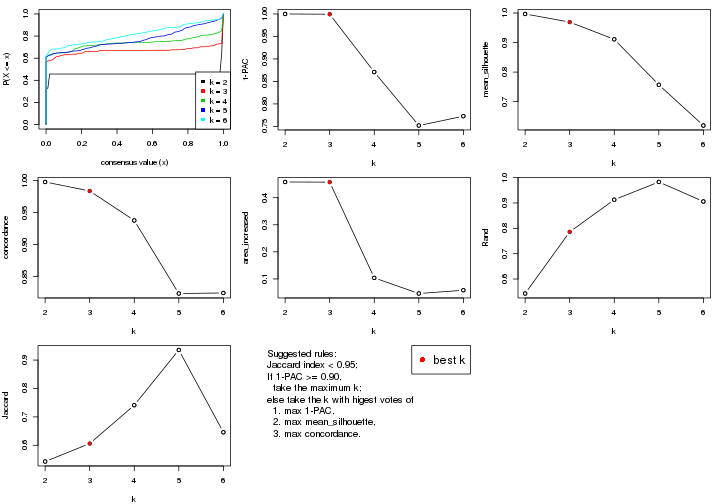
The numeric values for all these statistics can be obtained by get_stats().
get_stats(res)
#> k 1-PAC mean_silhouette concordance area_increased Rand Jaccard
#> 2 2 1.000 0.997 0.998 0.4582 0.543 0.543
#> 3 3 0.999 0.969 0.984 0.4575 0.786 0.606
#> 4 4 0.871 0.911 0.938 0.1039 0.913 0.741
#> 5 5 0.752 0.757 0.824 0.0461 0.983 0.936
#> 6 6 0.773 0.619 0.825 0.0582 0.906 0.646
suggest_best_k() suggests the best \(k\) based on these statistics. The rules are as follows:
suggest_best_k(res)
#> [1] 3
#> attr(,"optional")
#> [1] 2
There is also optional best \(k\) = 2 that is worth to check.
Following shows the table of the partitions (You need to click the show/hide
code output link to see it). The membership matrix (columns with name p*)
is inferred by
clue::cl_consensus()
function with the SE method. Basically the value in the membership matrix
represents the probability to belong to a certain group. The finall class
label for an item is determined with the group with highest probability it
belongs to.
In get_classes() function, the entropy is calculated from the membership
matrix and the silhouette score is calculated from the consensus matrix.
cbind(get_classes(res, k = 2), get_membership(res, k = 2))
#> class entropy silhouette p1 p2
#> GSM41890 1 0.0000 1.000 1.000 0.000
#> GSM41917 1 0.0000 1.000 1.000 0.000
#> GSM41936 2 0.0000 0.997 0.000 1.000
#> GSM41893 1 0.0000 1.000 1.000 0.000
#> GSM41920 1 0.0000 1.000 1.000 0.000
#> GSM41937 2 0.0000 0.997 0.000 1.000
#> GSM41896 1 0.0000 1.000 1.000 0.000
#> GSM41923 1 0.0000 1.000 1.000 0.000
#> GSM41938 2 0.0000 0.997 0.000 1.000
#> GSM41899 1 0.0000 1.000 1.000 0.000
#> GSM41925 1 0.0000 1.000 1.000 0.000
#> GSM41939 2 0.0000 0.997 0.000 1.000
#> GSM41902 1 0.0000 1.000 1.000 0.000
#> GSM41927 1 0.0000 1.000 1.000 0.000
#> GSM41940 2 0.0000 0.997 0.000 1.000
#> GSM41905 1 0.0000 1.000 1.000 0.000
#> GSM41929 1 0.0000 1.000 1.000 0.000
#> GSM41941 2 0.0000 0.997 0.000 1.000
#> GSM41908 1 0.0000 1.000 1.000 0.000
#> GSM41931 1 0.0000 1.000 1.000 0.000
#> GSM41942 2 0.0000 0.997 0.000 1.000
#> GSM41945 2 0.0000 0.997 0.000 1.000
#> GSM41911 1 0.0000 1.000 1.000 0.000
#> GSM41933 1 0.0000 1.000 1.000 0.000
#> GSM41943 2 0.0000 0.997 0.000 1.000
#> GSM41944 2 0.0000 0.997 0.000 1.000
#> GSM41876 2 0.0000 0.997 0.000 1.000
#> GSM41895 2 0.0000 0.997 0.000 1.000
#> GSM41898 2 0.0938 0.991 0.012 0.988
#> GSM41877 2 0.0000 0.997 0.000 1.000
#> GSM41901 2 0.0938 0.991 0.012 0.988
#> GSM41904 2 0.0000 0.997 0.000 1.000
#> GSM41878 2 0.0000 0.997 0.000 1.000
#> GSM41907 2 0.0938 0.991 0.012 0.988
#> GSM41910 2 0.0938 0.991 0.012 0.988
#> GSM41879 2 0.0000 0.997 0.000 1.000
#> GSM41913 2 0.0938 0.991 0.012 0.988
#> GSM41916 2 0.0938 0.991 0.012 0.988
#> GSM41880 2 0.0000 0.997 0.000 1.000
#> GSM41919 2 0.0938 0.991 0.012 0.988
#> GSM41922 2 0.0938 0.991 0.012 0.988
#> GSM41881 2 0.0000 0.997 0.000 1.000
#> GSM41924 2 0.0938 0.991 0.012 0.988
#> GSM41926 2 0.0938 0.991 0.012 0.988
#> GSM41869 2 0.0000 0.997 0.000 1.000
#> GSM41928 2 0.0938 0.991 0.012 0.988
#> GSM41930 2 0.0938 0.991 0.012 0.988
#> GSM41882 2 0.0000 0.997 0.000 1.000
#> GSM41932 2 0.0938 0.991 0.012 0.988
#> GSM41934 2 0.0938 0.991 0.012 0.988
#> GSM41860 2 0.0000 0.997 0.000 1.000
#> GSM41871 2 0.0000 0.997 0.000 1.000
#> GSM41875 2 0.0000 0.997 0.000 1.000
#> GSM41894 1 0.0000 1.000 1.000 0.000
#> GSM41897 1 0.0000 1.000 1.000 0.000
#> GSM41861 2 0.0000 0.997 0.000 1.000
#> GSM41872 2 0.0000 0.997 0.000 1.000
#> GSM41900 1 0.0000 1.000 1.000 0.000
#> GSM41862 2 0.0000 0.997 0.000 1.000
#> GSM41873 2 0.0000 0.997 0.000 1.000
#> GSM41903 1 0.0000 1.000 1.000 0.000
#> GSM41863 2 0.0000 0.997 0.000 1.000
#> GSM41883 2 0.0000 0.997 0.000 1.000
#> GSM41906 1 0.0000 1.000 1.000 0.000
#> GSM41864 2 0.0000 0.997 0.000 1.000
#> GSM41884 2 0.0000 0.997 0.000 1.000
#> GSM41909 1 0.0000 1.000 1.000 0.000
#> GSM41912 1 0.0000 1.000 1.000 0.000
#> GSM41865 2 0.0000 0.997 0.000 1.000
#> GSM41885 2 0.0000 0.997 0.000 1.000
#> GSM41915 1 0.0000 1.000 1.000 0.000
#> GSM41866 2 0.0000 0.997 0.000 1.000
#> GSM41886 2 0.0000 0.997 0.000 1.000
#> GSM41918 1 0.0000 1.000 1.000 0.000
#> GSM41867 2 0.0000 0.997 0.000 1.000
#> GSM41868 2 0.0000 0.997 0.000 1.000
#> GSM41921 1 0.0000 1.000 1.000 0.000
#> GSM41887 1 0.0000 1.000 1.000 0.000
#> GSM41914 1 0.0000 1.000 1.000 0.000
#> GSM41935 2 0.0000 0.997 0.000 1.000
#> GSM41874 2 0.0000 0.997 0.000 1.000
#> GSM41889 2 0.0000 0.997 0.000 1.000
#> GSM41892 2 0.0938 0.991 0.012 0.988
#> GSM41859 2 0.0938 0.991 0.012 0.988
#> GSM41870 2 0.0000 0.997 0.000 1.000
#> GSM41888 1 0.0000 1.000 1.000 0.000
#> GSM41891 1 0.0000 1.000 1.000 0.000
cbind(get_classes(res, k = 3), get_membership(res, k = 3))
#> class entropy silhouette p1 p2 p3
#> GSM41890 1 0.0000 1.000 1.000 0.000 0.000
#> GSM41917 1 0.0000 1.000 1.000 0.000 0.000
#> GSM41936 2 0.0000 0.995 0.000 1.000 0.000
#> GSM41893 1 0.0000 1.000 1.000 0.000 0.000
#> GSM41920 1 0.0000 1.000 1.000 0.000 0.000
#> GSM41937 2 0.0000 0.995 0.000 1.000 0.000
#> GSM41896 1 0.0000 1.000 1.000 0.000 0.000
#> GSM41923 1 0.0000 1.000 1.000 0.000 0.000
#> GSM41938 2 0.0000 0.995 0.000 1.000 0.000
#> GSM41899 1 0.0000 1.000 1.000 0.000 0.000
#> GSM41925 1 0.0000 1.000 1.000 0.000 0.000
#> GSM41939 2 0.0000 0.995 0.000 1.000 0.000
#> GSM41902 1 0.0000 1.000 1.000 0.000 0.000
#> GSM41927 1 0.0000 1.000 1.000 0.000 0.000
#> GSM41940 2 0.0000 0.995 0.000 1.000 0.000
#> GSM41905 1 0.0000 1.000 1.000 0.000 0.000
#> GSM41929 1 0.0000 1.000 1.000 0.000 0.000
#> GSM41941 2 0.0000 0.995 0.000 1.000 0.000
#> GSM41908 1 0.0000 1.000 1.000 0.000 0.000
#> GSM41931 1 0.0000 1.000 1.000 0.000 0.000
#> GSM41942 2 0.0000 0.995 0.000 1.000 0.000
#> GSM41945 2 0.0000 0.995 0.000 1.000 0.000
#> GSM41911 1 0.0000 1.000 1.000 0.000 0.000
#> GSM41933 1 0.0000 1.000 1.000 0.000 0.000
#> GSM41943 2 0.0000 0.995 0.000 1.000 0.000
#> GSM41944 2 0.0424 0.987 0.000 0.992 0.008
#> GSM41876 2 0.0000 0.995 0.000 1.000 0.000
#> GSM41895 3 0.1860 0.928 0.000 0.052 0.948
#> GSM41898 3 0.0000 0.947 0.000 0.000 1.000
#> GSM41877 2 0.0000 0.995 0.000 1.000 0.000
#> GSM41901 3 0.0000 0.947 0.000 0.000 1.000
#> GSM41904 2 0.0000 0.995 0.000 1.000 0.000
#> GSM41878 2 0.0000 0.995 0.000 1.000 0.000
#> GSM41907 3 0.0000 0.947 0.000 0.000 1.000
#> GSM41910 3 0.0000 0.947 0.000 0.000 1.000
#> GSM41879 2 0.0000 0.995 0.000 1.000 0.000
#> GSM41913 3 0.0000 0.947 0.000 0.000 1.000
#> GSM41916 3 0.0000 0.947 0.000 0.000 1.000
#> GSM41880 2 0.0000 0.995 0.000 1.000 0.000
#> GSM41919 3 0.0000 0.947 0.000 0.000 1.000
#> GSM41922 3 0.0000 0.947 0.000 0.000 1.000
#> GSM41881 2 0.3619 0.829 0.000 0.864 0.136
#> GSM41924 3 0.0000 0.947 0.000 0.000 1.000
#> GSM41926 3 0.0747 0.938 0.016 0.000 0.984
#> GSM41869 2 0.0000 0.995 0.000 1.000 0.000
#> GSM41928 3 0.4291 0.766 0.180 0.000 0.820
#> GSM41930 3 0.0000 0.947 0.000 0.000 1.000
#> GSM41882 3 0.1529 0.934 0.000 0.040 0.960
#> GSM41932 3 0.0000 0.947 0.000 0.000 1.000
#> GSM41934 3 0.0000 0.947 0.000 0.000 1.000
#> GSM41860 3 0.2356 0.915 0.000 0.072 0.928
#> GSM41871 2 0.0000 0.995 0.000 1.000 0.000
#> GSM41875 2 0.0000 0.995 0.000 1.000 0.000
#> GSM41894 1 0.0000 1.000 1.000 0.000 0.000
#> GSM41897 1 0.0000 1.000 1.000 0.000 0.000
#> GSM41861 3 0.4702 0.770 0.000 0.212 0.788
#> GSM41872 2 0.0000 0.995 0.000 1.000 0.000
#> GSM41900 1 0.0000 1.000 1.000 0.000 0.000
#> GSM41862 3 0.1643 0.932 0.000 0.044 0.956
#> GSM41873 2 0.0000 0.995 0.000 1.000 0.000
#> GSM41903 1 0.0000 1.000 1.000 0.000 0.000
#> GSM41863 2 0.0000 0.995 0.000 1.000 0.000
#> GSM41883 2 0.0000 0.995 0.000 1.000 0.000
#> GSM41906 1 0.0000 1.000 1.000 0.000 0.000
#> GSM41864 3 0.4796 0.759 0.000 0.220 0.780
#> GSM41884 2 0.0000 0.995 0.000 1.000 0.000
#> GSM41909 1 0.0000 1.000 1.000 0.000 0.000
#> GSM41912 1 0.0000 1.000 1.000 0.000 0.000
#> GSM41865 3 0.2796 0.899 0.000 0.092 0.908
#> GSM41885 2 0.0000 0.995 0.000 1.000 0.000
#> GSM41915 1 0.0000 1.000 1.000 0.000 0.000
#> GSM41866 2 0.0000 0.995 0.000 1.000 0.000
#> GSM41886 2 0.0000 0.995 0.000 1.000 0.000
#> GSM41918 1 0.0000 1.000 1.000 0.000 0.000
#> GSM41867 2 0.0000 0.995 0.000 1.000 0.000
#> GSM41868 2 0.0000 0.995 0.000 1.000 0.000
#> GSM41921 1 0.0000 1.000 1.000 0.000 0.000
#> GSM41887 1 0.0000 1.000 1.000 0.000 0.000
#> GSM41914 1 0.0000 1.000 1.000 0.000 0.000
#> GSM41935 3 0.5560 0.627 0.000 0.300 0.700
#> GSM41874 2 0.0000 0.995 0.000 1.000 0.000
#> GSM41889 3 0.1753 0.930 0.000 0.048 0.952
#> GSM41892 3 0.0000 0.947 0.000 0.000 1.000
#> GSM41859 3 0.0000 0.947 0.000 0.000 1.000
#> GSM41870 2 0.0000 0.995 0.000 1.000 0.000
#> GSM41888 1 0.0000 1.000 1.000 0.000 0.000
#> GSM41891 1 0.0000 1.000 1.000 0.000 0.000
cbind(get_classes(res, k = 4), get_membership(res, k = 4))
#> class entropy silhouette p1 p2 p3 p4
#> GSM41890 1 0.0000 1.000 1 0.000 0.000 0.000
#> GSM41917 1 0.0000 1.000 1 0.000 0.000 0.000
#> GSM41936 4 0.3123 0.911 0 0.156 0.000 0.844
#> GSM41893 1 0.0000 1.000 1 0.000 0.000 0.000
#> GSM41920 1 0.0000 1.000 1 0.000 0.000 0.000
#> GSM41937 4 0.3569 0.885 0 0.196 0.000 0.804
#> GSM41896 1 0.0000 1.000 1 0.000 0.000 0.000
#> GSM41923 1 0.0000 1.000 1 0.000 0.000 0.000
#> GSM41938 4 0.3024 0.910 0 0.148 0.000 0.852
#> GSM41899 1 0.0000 1.000 1 0.000 0.000 0.000
#> GSM41925 1 0.0000 1.000 1 0.000 0.000 0.000
#> GSM41939 2 0.4888 0.265 0 0.588 0.000 0.412
#> GSM41902 1 0.0000 1.000 1 0.000 0.000 0.000
#> GSM41927 1 0.0000 1.000 1 0.000 0.000 0.000
#> GSM41940 2 0.2973 0.822 0 0.856 0.000 0.144
#> GSM41905 1 0.0000 1.000 1 0.000 0.000 0.000
#> GSM41929 1 0.0000 1.000 1 0.000 0.000 0.000
#> GSM41941 4 0.3726 0.862 0 0.212 0.000 0.788
#> GSM41908 1 0.0000 1.000 1 0.000 0.000 0.000
#> GSM41931 1 0.0000 1.000 1 0.000 0.000 0.000
#> GSM41942 2 0.3123 0.810 0 0.844 0.000 0.156
#> GSM41945 4 0.1389 0.850 0 0.048 0.000 0.952
#> GSM41911 1 0.0000 1.000 1 0.000 0.000 0.000
#> GSM41933 1 0.0000 1.000 1 0.000 0.000 0.000
#> GSM41943 4 0.3610 0.875 0 0.200 0.000 0.800
#> GSM41944 4 0.1211 0.844 0 0.040 0.000 0.960
#> GSM41876 2 0.3356 0.800 0 0.824 0.000 0.176
#> GSM41895 3 0.3569 0.805 0 0.000 0.804 0.196
#> GSM41898 3 0.0000 0.932 0 0.000 1.000 0.000
#> GSM41877 2 0.2814 0.833 0 0.868 0.000 0.132
#> GSM41901 3 0.0188 0.931 0 0.000 0.996 0.004
#> GSM41904 4 0.3486 0.893 0 0.188 0.000 0.812
#> GSM41878 2 0.0000 0.910 0 1.000 0.000 0.000
#> GSM41907 3 0.0000 0.932 0 0.000 1.000 0.000
#> GSM41910 3 0.0000 0.932 0 0.000 1.000 0.000
#> GSM41879 4 0.3172 0.904 0 0.160 0.000 0.840
#> GSM41913 3 0.0000 0.932 0 0.000 1.000 0.000
#> GSM41916 3 0.0000 0.932 0 0.000 1.000 0.000
#> GSM41880 2 0.1118 0.897 0 0.964 0.000 0.036
#> GSM41919 3 0.0592 0.927 0 0.000 0.984 0.016
#> GSM41922 3 0.0000 0.932 0 0.000 1.000 0.000
#> GSM41881 4 0.3108 0.893 0 0.112 0.016 0.872
#> GSM41924 3 0.0000 0.932 0 0.000 1.000 0.000
#> GSM41926 3 0.0000 0.932 0 0.000 1.000 0.000
#> GSM41869 2 0.0000 0.910 0 1.000 0.000 0.000
#> GSM41928 3 0.2704 0.862 0 0.000 0.876 0.124
#> GSM41930 3 0.0000 0.932 0 0.000 1.000 0.000
#> GSM41882 3 0.1211 0.919 0 0.000 0.960 0.040
#> GSM41932 3 0.0188 0.931 0 0.000 0.996 0.004
#> GSM41934 3 0.0000 0.932 0 0.000 1.000 0.000
#> GSM41860 3 0.3873 0.772 0 0.000 0.772 0.228
#> GSM41871 2 0.0000 0.910 0 1.000 0.000 0.000
#> GSM41875 2 0.0000 0.910 0 1.000 0.000 0.000
#> GSM41894 1 0.0000 1.000 1 0.000 0.000 0.000
#> GSM41897 1 0.0000 1.000 1 0.000 0.000 0.000
#> GSM41861 3 0.4804 0.506 0 0.000 0.616 0.384
#> GSM41872 2 0.3907 0.703 0 0.768 0.000 0.232
#> GSM41900 1 0.0000 1.000 1 0.000 0.000 0.000
#> GSM41862 3 0.1716 0.908 0 0.000 0.936 0.064
#> GSM41873 4 0.2921 0.908 0 0.140 0.000 0.860
#> GSM41903 1 0.0000 1.000 1 0.000 0.000 0.000
#> GSM41863 4 0.3123 0.911 0 0.156 0.000 0.844
#> GSM41883 2 0.0000 0.910 0 1.000 0.000 0.000
#> GSM41906 1 0.0000 1.000 1 0.000 0.000 0.000
#> GSM41864 4 0.3306 0.667 0 0.004 0.156 0.840
#> GSM41884 2 0.0000 0.910 0 1.000 0.000 0.000
#> GSM41909 1 0.0000 1.000 1 0.000 0.000 0.000
#> GSM41912 1 0.0000 1.000 1 0.000 0.000 0.000
#> GSM41865 3 0.4428 0.704 0 0.004 0.720 0.276
#> GSM41885 2 0.0000 0.910 0 1.000 0.000 0.000
#> GSM41915 1 0.0000 1.000 1 0.000 0.000 0.000
#> GSM41866 4 0.3123 0.911 0 0.156 0.000 0.844
#> GSM41886 2 0.0000 0.910 0 1.000 0.000 0.000
#> GSM41918 1 0.0000 1.000 1 0.000 0.000 0.000
#> GSM41867 2 0.0592 0.903 0 0.984 0.000 0.016
#> GSM41868 2 0.0000 0.910 0 1.000 0.000 0.000
#> GSM41921 1 0.0000 1.000 1 0.000 0.000 0.000
#> GSM41887 1 0.0000 1.000 1 0.000 0.000 0.000
#> GSM41914 1 0.0000 1.000 1 0.000 0.000 0.000
#> GSM41935 4 0.3105 0.755 0 0.004 0.140 0.856
#> GSM41874 4 0.3123 0.911 0 0.156 0.000 0.844
#> GSM41889 3 0.3801 0.781 0 0.000 0.780 0.220
#> GSM41892 3 0.0000 0.932 0 0.000 1.000 0.000
#> GSM41859 3 0.0707 0.926 0 0.000 0.980 0.020
#> GSM41870 2 0.0000 0.910 0 1.000 0.000 0.000
#> GSM41888 1 0.0000 1.000 1 0.000 0.000 0.000
#> GSM41891 1 0.0000 1.000 1 0.000 0.000 0.000
cbind(get_classes(res, k = 5), get_membership(res, k = 5))
#> class entropy silhouette p1 p2 p3 p4 p5
#> GSM41890 1 0.1310 0.8166 0.956 0.020 0.000 0.000 0.024
#> GSM41917 1 0.4021 0.7617 0.780 0.168 0.000 0.000 0.052
#> GSM41936 4 0.1469 0.7411 0.000 0.016 0.000 0.948 0.036
#> GSM41893 1 0.1965 0.8237 0.924 0.024 0.000 0.000 0.052
#> GSM41920 1 0.3326 0.7833 0.824 0.152 0.000 0.000 0.024
#> GSM41937 4 0.1410 0.7147 0.000 0.060 0.000 0.940 0.000
#> GSM41896 1 0.3449 0.7769 0.812 0.164 0.000 0.000 0.024
#> GSM41923 1 0.3452 0.7963 0.756 0.000 0.000 0.000 0.244
#> GSM41938 4 0.0703 0.7348 0.000 0.024 0.000 0.976 0.000
#> GSM41899 1 0.3452 0.7963 0.756 0.000 0.000 0.000 0.244
#> GSM41925 1 0.3452 0.7963 0.756 0.000 0.000 0.000 0.244
#> GSM41939 4 0.4101 0.0111 0.000 0.332 0.000 0.664 0.004
#> GSM41902 1 0.6284 0.5399 0.508 0.172 0.000 0.000 0.320
#> GSM41927 1 0.3452 0.7963 0.756 0.000 0.000 0.000 0.244
#> GSM41940 2 0.4403 0.6789 0.000 0.560 0.000 0.436 0.004
#> GSM41905 1 0.0992 0.8182 0.968 0.008 0.000 0.000 0.024
#> GSM41929 1 0.1205 0.8223 0.956 0.004 0.000 0.000 0.040
#> GSM41941 4 0.2522 0.6517 0.000 0.108 0.000 0.880 0.012
#> GSM41908 1 0.3098 0.7861 0.836 0.148 0.000 0.000 0.016
#> GSM41931 1 0.3772 0.7678 0.792 0.172 0.000 0.000 0.036
#> GSM41942 2 0.4448 0.5957 0.000 0.516 0.000 0.480 0.004
#> GSM41945 4 0.3966 0.5920 0.000 0.000 0.000 0.664 0.336
#> GSM41911 1 0.6221 0.5597 0.528 0.172 0.000 0.000 0.300
#> GSM41933 1 0.3399 0.7771 0.812 0.168 0.000 0.000 0.020
#> GSM41943 4 0.2879 0.6670 0.000 0.100 0.000 0.868 0.032
#> GSM41944 4 0.4151 0.5855 0.000 0.004 0.000 0.652 0.344
#> GSM41876 2 0.4443 0.6063 0.000 0.524 0.000 0.472 0.004
#> GSM41895 3 0.4524 0.8048 0.000 0.028 0.784 0.120 0.068
#> GSM41898 3 0.0000 0.9122 0.000 0.000 1.000 0.000 0.000
#> GSM41877 2 0.4415 0.6649 0.000 0.552 0.000 0.444 0.004
#> GSM41901 3 0.0693 0.9091 0.000 0.008 0.980 0.000 0.012
#> GSM41904 4 0.1571 0.7121 0.000 0.060 0.000 0.936 0.004
#> GSM41878 2 0.3395 0.8689 0.000 0.764 0.000 0.236 0.000
#> GSM41907 3 0.0000 0.9122 0.000 0.000 1.000 0.000 0.000
#> GSM41910 3 0.0290 0.9097 0.000 0.000 0.992 0.000 0.008
#> GSM41879 4 0.2011 0.6824 0.000 0.088 0.000 0.908 0.004
#> GSM41913 3 0.0000 0.9122 0.000 0.000 1.000 0.000 0.000
#> GSM41916 3 0.0000 0.9122 0.000 0.000 1.000 0.000 0.000
#> GSM41880 2 0.4030 0.7830 0.000 0.648 0.000 0.352 0.000
#> GSM41919 3 0.1173 0.9051 0.000 0.020 0.964 0.004 0.012
#> GSM41922 3 0.0000 0.9122 0.000 0.000 1.000 0.000 0.000
#> GSM41881 4 0.3320 0.6933 0.000 0.016 0.032 0.856 0.096
#> GSM41924 3 0.0000 0.9122 0.000 0.000 1.000 0.000 0.000
#> GSM41926 3 0.2139 0.8682 0.000 0.032 0.916 0.000 0.052
#> GSM41869 2 0.3109 0.8759 0.000 0.800 0.000 0.200 0.000
#> GSM41928 3 0.4639 0.6060 0.000 0.020 0.612 0.000 0.368
#> GSM41930 3 0.0290 0.9097 0.000 0.000 0.992 0.000 0.008
#> GSM41882 3 0.2325 0.8814 0.000 0.028 0.904 0.000 0.068
#> GSM41932 3 0.0451 0.9106 0.000 0.004 0.988 0.000 0.008
#> GSM41934 3 0.0000 0.9122 0.000 0.000 1.000 0.000 0.000
#> GSM41860 3 0.4703 0.7900 0.000 0.028 0.768 0.136 0.068
#> GSM41871 2 0.3452 0.8662 0.000 0.756 0.000 0.244 0.000
#> GSM41875 2 0.3109 0.8759 0.000 0.800 0.000 0.200 0.000
#> GSM41894 1 0.3452 0.7963 0.756 0.000 0.000 0.000 0.244
#> GSM41897 1 0.3452 0.7963 0.756 0.000 0.000 0.000 0.244
#> GSM41861 3 0.5442 0.6852 0.000 0.028 0.684 0.220 0.068
#> GSM41872 4 0.4446 -0.5430 0.000 0.476 0.000 0.520 0.004
#> GSM41900 1 0.0404 0.8219 0.988 0.000 0.000 0.000 0.012
#> GSM41862 3 0.4007 0.8446 0.000 0.028 0.824 0.076 0.072
#> GSM41873 4 0.0609 0.7363 0.000 0.020 0.000 0.980 0.000
#> GSM41903 1 0.0566 0.8208 0.984 0.004 0.000 0.000 0.012
#> GSM41863 4 0.1197 0.7393 0.000 0.000 0.000 0.952 0.048
#> GSM41883 2 0.3109 0.8759 0.000 0.800 0.000 0.200 0.000
#> GSM41906 1 0.1544 0.8190 0.932 0.000 0.000 0.000 0.068
#> GSM41864 4 0.6698 0.4353 0.000 0.028 0.148 0.532 0.292
#> GSM41884 2 0.3109 0.8759 0.000 0.800 0.000 0.200 0.000
#> GSM41909 1 0.3452 0.7963 0.756 0.000 0.000 0.000 0.244
#> GSM41912 1 0.3480 0.7948 0.752 0.000 0.000 0.000 0.248
#> GSM41865 3 0.5665 0.6790 0.000 0.040 0.672 0.220 0.068
#> GSM41885 2 0.3109 0.8759 0.000 0.800 0.000 0.200 0.000
#> GSM41915 1 0.3452 0.7963 0.756 0.000 0.000 0.000 0.244
#> GSM41866 4 0.0880 0.7414 0.000 0.000 0.000 0.968 0.032
#> GSM41886 2 0.3109 0.8759 0.000 0.800 0.000 0.200 0.000
#> GSM41918 1 0.0992 0.8182 0.968 0.008 0.000 0.000 0.024
#> GSM41867 2 0.3741 0.8538 0.000 0.732 0.000 0.264 0.004
#> GSM41868 2 0.3143 0.8749 0.000 0.796 0.000 0.204 0.000
#> GSM41921 1 0.3452 0.7963 0.756 0.000 0.000 0.000 0.244
#> GSM41887 1 0.2825 0.7989 0.860 0.124 0.000 0.000 0.016
#> GSM41914 1 0.6206 0.5635 0.532 0.172 0.000 0.000 0.296
#> GSM41935 4 0.6118 0.4003 0.000 0.028 0.248 0.616 0.108
#> GSM41874 4 0.1121 0.7401 0.000 0.000 0.000 0.956 0.044
#> GSM41889 3 0.4660 0.7938 0.000 0.028 0.772 0.132 0.068
#> GSM41892 3 0.0000 0.9122 0.000 0.000 1.000 0.000 0.000
#> GSM41859 3 0.0000 0.9122 0.000 0.000 1.000 0.000 0.000
#> GSM41870 2 0.3109 0.8759 0.000 0.800 0.000 0.200 0.000
#> GSM41888 1 0.5971 0.7552 0.584 0.172 0.000 0.000 0.244
#> GSM41891 1 0.3452 0.7963 0.756 0.000 0.000 0.000 0.244
cbind(get_classes(res, k = 6), get_membership(res, k = 6))
#> class entropy silhouette p1 p2 p3 p4 p5 p6
#> GSM41890 1 0.2996 0.7822 0.772 0.000 0.000 0.000 0.228 0.000
#> GSM41917 1 0.2003 0.8011 0.884 0.000 0.000 0.000 0.116 0.000
#> GSM41936 4 0.2994 0.5491 0.000 0.004 0.000 0.788 0.000 0.208
#> GSM41893 5 0.3607 0.3140 0.348 0.000 0.000 0.000 0.652 0.000
#> GSM41920 1 0.2340 0.8053 0.852 0.000 0.000 0.000 0.148 0.000
#> GSM41937 4 0.1657 0.5425 0.000 0.016 0.000 0.928 0.000 0.056
#> GSM41896 1 0.2340 0.8060 0.852 0.000 0.000 0.000 0.148 0.000
#> GSM41923 5 0.0146 0.8514 0.004 0.000 0.000 0.000 0.996 0.000
#> GSM41938 4 0.2491 0.5632 0.000 0.000 0.000 0.836 0.000 0.164
#> GSM41899 5 0.0000 0.8536 0.000 0.000 0.000 0.000 1.000 0.000
#> GSM41925 5 0.0000 0.8536 0.000 0.000 0.000 0.000 1.000 0.000
#> GSM41939 4 0.3804 -0.1313 0.000 0.424 0.000 0.576 0.000 0.000
#> GSM41902 1 0.0146 0.7319 0.996 0.000 0.000 0.000 0.000 0.004
#> GSM41927 5 0.3592 0.1788 0.344 0.000 0.000 0.000 0.656 0.000
#> GSM41940 4 0.3782 -0.0582 0.000 0.412 0.000 0.588 0.000 0.000
#> GSM41905 1 0.3050 0.7773 0.764 0.000 0.000 0.000 0.236 0.000
#> GSM41929 1 0.3563 0.6793 0.664 0.000 0.000 0.000 0.336 0.000
#> GSM41941 4 0.2859 0.5654 0.000 0.016 0.000 0.828 0.000 0.156
#> GSM41908 1 0.3862 0.1622 0.524 0.000 0.000 0.000 0.476 0.000
#> GSM41931 1 0.2048 0.8030 0.880 0.000 0.000 0.000 0.120 0.000
#> GSM41942 4 0.3797 -0.0930 0.000 0.420 0.000 0.580 0.000 0.000
#> GSM41945 6 0.3862 0.1794 0.000 0.004 0.000 0.388 0.000 0.608
#> GSM41911 1 0.0508 0.7410 0.984 0.000 0.000 0.000 0.012 0.004
#> GSM41933 1 0.2300 0.8064 0.856 0.000 0.000 0.000 0.144 0.000
#> GSM41943 4 0.3511 0.5434 0.000 0.024 0.000 0.760 0.000 0.216
#> GSM41944 6 0.3668 0.2747 0.000 0.004 0.000 0.328 0.000 0.668
#> GSM41876 2 0.3868 0.2685 0.000 0.504 0.000 0.496 0.000 0.000
#> GSM41895 3 0.3376 0.7257 0.000 0.000 0.764 0.016 0.000 0.220
#> GSM41898 3 0.0000 0.8654 0.000 0.000 1.000 0.000 0.000 0.000
#> GSM41877 2 0.3851 0.3545 0.000 0.540 0.000 0.460 0.000 0.000
#> GSM41901 3 0.0363 0.8627 0.000 0.000 0.988 0.000 0.000 0.012
#> GSM41904 4 0.0363 0.5208 0.000 0.012 0.000 0.988 0.000 0.000
#> GSM41878 2 0.1863 0.7851 0.000 0.896 0.000 0.104 0.000 0.000
#> GSM41907 3 0.0000 0.8654 0.000 0.000 1.000 0.000 0.000 0.000
#> GSM41910 3 0.0146 0.8633 0.000 0.000 0.996 0.000 0.000 0.004
#> GSM41879 4 0.0260 0.5211 0.000 0.008 0.000 0.992 0.000 0.000
#> GSM41913 3 0.0000 0.8654 0.000 0.000 1.000 0.000 0.000 0.000
#> GSM41916 3 0.0000 0.8654 0.000 0.000 1.000 0.000 0.000 0.000
#> GSM41880 2 0.3672 0.5359 0.000 0.632 0.000 0.368 0.000 0.000
#> GSM41919 3 0.0458 0.8611 0.000 0.000 0.984 0.000 0.000 0.016
#> GSM41922 3 0.0000 0.8654 0.000 0.000 1.000 0.000 0.000 0.000
#> GSM41881 4 0.4191 0.2614 0.000 0.004 0.012 0.596 0.000 0.388
#> GSM41924 3 0.0000 0.8654 0.000 0.000 1.000 0.000 0.000 0.000
#> GSM41926 3 0.2053 0.7573 0.108 0.000 0.888 0.000 0.000 0.004
#> GSM41869 2 0.0000 0.8330 0.000 1.000 0.000 0.000 0.000 0.000
#> GSM41928 6 0.4310 -0.1390 0.020 0.000 0.440 0.000 0.000 0.540
#> GSM41930 3 0.0146 0.8633 0.000 0.000 0.996 0.000 0.000 0.004
#> GSM41882 3 0.3320 0.7333 0.000 0.000 0.772 0.016 0.000 0.212
#> GSM41932 3 0.0363 0.8627 0.000 0.000 0.988 0.000 0.000 0.012
#> GSM41934 3 0.0000 0.8654 0.000 0.000 1.000 0.000 0.000 0.000
#> GSM41860 3 0.3614 0.7153 0.000 0.000 0.752 0.028 0.000 0.220
#> GSM41871 2 0.2178 0.7702 0.000 0.868 0.000 0.132 0.000 0.000
#> GSM41875 2 0.0000 0.8330 0.000 1.000 0.000 0.000 0.000 0.000
#> GSM41894 5 0.0000 0.8536 0.000 0.000 0.000 0.000 1.000 0.000
#> GSM41897 5 0.0000 0.8536 0.000 0.000 0.000 0.000 1.000 0.000
#> GSM41861 3 0.4691 0.6096 0.000 0.000 0.672 0.108 0.000 0.220
#> GSM41872 4 0.3531 0.1934 0.000 0.328 0.000 0.672 0.000 0.000
#> GSM41900 1 0.3717 0.5918 0.616 0.000 0.000 0.000 0.384 0.000
#> GSM41862 3 0.5465 0.4046 0.000 0.000 0.572 0.208 0.000 0.220
#> GSM41873 4 0.2664 0.5577 0.000 0.000 0.000 0.816 0.000 0.184
#> GSM41903 1 0.3515 0.6947 0.676 0.000 0.000 0.000 0.324 0.000
#> GSM41863 4 0.2969 0.5331 0.000 0.000 0.000 0.776 0.000 0.224
#> GSM41883 2 0.0146 0.8322 0.000 0.996 0.000 0.004 0.000 0.000
#> GSM41906 5 0.2996 0.5665 0.228 0.000 0.000 0.000 0.772 0.000
#> GSM41864 6 0.4958 0.0226 0.000 0.000 0.076 0.364 0.000 0.560
#> GSM41884 2 0.0000 0.8330 0.000 1.000 0.000 0.000 0.000 0.000
#> GSM41909 5 0.0000 0.8536 0.000 0.000 0.000 0.000 1.000 0.000
#> GSM41912 5 0.0000 0.8536 0.000 0.000 0.000 0.000 1.000 0.000
#> GSM41865 3 0.5888 0.1151 0.000 0.000 0.460 0.320 0.000 0.220
#> GSM41885 2 0.0000 0.8330 0.000 1.000 0.000 0.000 0.000 0.000
#> GSM41915 5 0.0458 0.8426 0.016 0.000 0.000 0.000 0.984 0.000
#> GSM41866 4 0.2969 0.5331 0.000 0.000 0.000 0.776 0.000 0.224
#> GSM41886 2 0.0000 0.8330 0.000 1.000 0.000 0.000 0.000 0.000
#> GSM41918 1 0.2941 0.7866 0.780 0.000 0.000 0.000 0.220 0.000
#> GSM41867 2 0.3547 0.4282 0.000 0.668 0.000 0.332 0.000 0.000
#> GSM41868 2 0.0146 0.8314 0.000 0.996 0.000 0.004 0.000 0.000
#> GSM41921 5 0.0000 0.8536 0.000 0.000 0.000 0.000 1.000 0.000
#> GSM41887 5 0.3765 0.1547 0.404 0.000 0.000 0.000 0.596 0.000
#> GSM41914 1 0.0291 0.7353 0.992 0.000 0.000 0.000 0.004 0.004
#> GSM41935 4 0.5392 -0.1208 0.000 0.000 0.112 0.448 0.000 0.440
#> GSM41874 4 0.2969 0.5331 0.000 0.000 0.000 0.776 0.000 0.224
#> GSM41889 3 0.3539 0.7188 0.000 0.000 0.756 0.024 0.000 0.220
#> GSM41892 3 0.0000 0.8654 0.000 0.000 1.000 0.000 0.000 0.000
#> GSM41859 3 0.0000 0.8654 0.000 0.000 1.000 0.000 0.000 0.000
#> GSM41870 2 0.0000 0.8330 0.000 1.000 0.000 0.000 0.000 0.000
#> GSM41888 1 0.3797 0.3913 0.580 0.000 0.000 0.000 0.420 0.000
#> GSM41891 5 0.0000 0.8536 0.000 0.000 0.000 0.000 1.000 0.000
Heatmaps for the consensus matrix. It visualizes the probability of two samples to be in a same group.
consensus_heatmap(res, k = 2)
consensus_heatmap(res, k = 3)
consensus_heatmap(res, k = 4)
consensus_heatmap(res, k = 5)

consensus_heatmap(res, k = 6)
Heatmaps for the membership of samples in all partitions to see how consistent they are:
membership_heatmap(res, k = 2)
membership_heatmap(res, k = 3)
membership_heatmap(res, k = 4)
membership_heatmap(res, k = 5)
membership_heatmap(res, k = 6)
As soon as we have had the classes for columns, we can look for signatures which are significantly different between classes which can be candidate marks for certain classes. Following are the heatmaps for signatures.
Signature heatmaps where rows are scaled:
get_signatures(res, k = 2)
get_signatures(res, k = 3)
get_signatures(res, k = 4)
get_signatures(res, k = 5)
get_signatures(res, k = 6)
Signature heatmaps where rows are not scaled:
get_signatures(res, k = 2, scale_rows = FALSE)
get_signatures(res, k = 3, scale_rows = FALSE)
get_signatures(res, k = 4, scale_rows = FALSE)
get_signatures(res, k = 5, scale_rows = FALSE)
get_signatures(res, k = 6, scale_rows = FALSE)
Compare the overlap of signatures from different k:
compare_signatures(res)
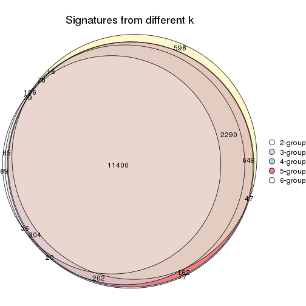
get_signature() returns a data frame invisibly. TO get the list of signatures, the function
call should be assigned to a variable explicitly. In following code, if plot argument is set
to FALSE, no heatmap is plotted while only the differential analysis is performed.
# code only for demonstration
tb = get_signature(res, k = ..., plot = FALSE)
An example of the output of tb is:
#> which_row fdr mean_1 mean_2 scaled_mean_1 scaled_mean_2 km
#> 1 38 0.042760348 8.373488 9.131774 -0.5533452 0.5164555 1
#> 2 40 0.018707592 7.106213 8.469186 -0.6173731 0.5762149 1
#> 3 55 0.019134737 10.221463 11.207825 -0.6159697 0.5749050 1
#> 4 59 0.006059896 5.921854 7.869574 -0.6899429 0.6439467 1
#> 5 60 0.018055526 8.928898 10.211722 -0.6204761 0.5791110 1
#> 6 98 0.009384629 15.714769 14.887706 0.6635654 -0.6193277 2
...
The columns in tb are:
which_row: row indices corresponding to the input matrix.fdr: FDR for the differential test. mean_x: The mean value in group x.scaled_mean_x: The mean value in group x after rows are scaled.km: Row groups if k-means clustering is applied to rows.UMAP plot which shows how samples are separated.
dimension_reduction(res, k = 2, method = "UMAP")

dimension_reduction(res, k = 3, method = "UMAP")
dimension_reduction(res, k = 4, method = "UMAP")
dimension_reduction(res, k = 5, method = "UMAP")
dimension_reduction(res, k = 6, method = "UMAP")
Following heatmap shows how subgroups are split when increasing k:
collect_classes(res)
Test correlation between subgroups and known annotations. If the known annotation is numeric, one-way ANOVA test is applied, and if the known annotation is discrete, chi-squared contingency table test is applied.
test_to_known_factors(res)
#> n agent(p) cell.line(p) time(p) k
#> ATC:mclust 87 0.971 5.49e-06 1.000 2
#> ATC:mclust 87 0.481 1.68e-07 1.000 3
#> ATC:mclust 86 0.876 1.01e-08 1.000 4
#> ATC:mclust 83 0.836 2.33e-08 0.999 5
#> ATC:mclust 67 0.955 1.41e-09 0.994 6
If matrix rows can be associated to genes, consider to use functional_enrichment(res,
...) to perform function enrichment for the signature genes. See this vignette for more detailed explanations.
The object with results only for a single top-value method and a single partition method can be extracted as:
res = res_list["ATC", "NMF"]
# you can also extract it by
# res = res_list["ATC:NMF"]
A summary of res and all the functions that can be applied to it:
res
#> A 'ConsensusPartition' object with k = 2, 3, 4, 5, 6.
#> On a matrix with 18211 rows and 87 columns.
#> Top rows (1000, 2000, 3000, 4000, 5000) are extracted by 'ATC' method.
#> Subgroups are detected by 'NMF' method.
#> Performed in total 1250 partitions by row resampling.
#> Best k for subgroups seems to be 2.
#>
#> Following methods can be applied to this 'ConsensusPartition' object:
#> [1] "cola_report" "collect_classes" "collect_plots"
#> [4] "collect_stats" "colnames" "compare_signatures"
#> [7] "consensus_heatmap" "dimension_reduction" "functional_enrichment"
#> [10] "get_anno_col" "get_anno" "get_classes"
#> [13] "get_consensus" "get_matrix" "get_membership"
#> [16] "get_param" "get_signatures" "get_stats"
#> [19] "is_best_k" "is_stable_k" "membership_heatmap"
#> [22] "ncol" "nrow" "plot_ecdf"
#> [25] "rownames" "select_partition_number" "show"
#> [28] "suggest_best_k" "test_to_known_factors"
collect_plots() function collects all the plots made from res for all k (number of partitions)
into one single page to provide an easy and fast comparison between different k.
collect_plots(res)
The plots are:
k and the heatmap of
predicted classes for each k.k.k.k.All the plots in panels can be made by individual functions and they are plotted later in this section.
select_partition_number() produces several plots showing different
statistics for choosing “optimized” k. There are following statistics:
k;k, the area increased is defined as \(A_k - A_{k-1}\).The detailed explanations of these statistics can be found in the cola vignette.
Generally speaking, lower PAC score, higher mean silhouette score or higher
concordance corresponds to better partition. Rand index and Jaccard index
measure how similar the current partition is compared to partition with k-1.
If they are too similar, we won't accept k is better than k-1.
select_partition_number(res)
The numeric values for all these statistics can be obtained by get_stats().
get_stats(res)
#> k 1-PAC mean_silhouette concordance area_increased Rand Jaccard
#> 2 2 1.000 0.997 0.998 0.4636 0.536 0.536
#> 3 3 0.730 0.852 0.889 0.3901 0.778 0.591
#> 4 4 0.732 0.752 0.866 0.1072 0.957 0.869
#> 5 5 0.691 0.804 0.852 0.0522 0.921 0.742
#> 6 6 0.665 0.686 0.800 0.0404 0.996 0.982
suggest_best_k() suggests the best \(k\) based on these statistics. The rules are as follows:
suggest_best_k(res)
#> [1] 2
Following shows the table of the partitions (You need to click the show/hide
code output link to see it). The membership matrix (columns with name p*)
is inferred by
clue::cl_consensus()
function with the SE method. Basically the value in the membership matrix
represents the probability to belong to a certain group. The finall class
label for an item is determined with the group with highest probability it
belongs to.
In get_classes() function, the entropy is calculated from the membership
matrix and the silhouette score is calculated from the consensus matrix.
cbind(get_classes(res, k = 2), get_membership(res, k = 2))
#> class entropy silhouette p1 p2
#> GSM41890 1 0.000 0.995 1.00 0.00
#> GSM41917 1 0.000 0.995 1.00 0.00
#> GSM41936 2 0.000 1.000 0.00 1.00
#> GSM41893 1 0.000 0.995 1.00 0.00
#> GSM41920 1 0.000 0.995 1.00 0.00
#> GSM41937 2 0.000 1.000 0.00 1.00
#> GSM41896 1 0.000 0.995 1.00 0.00
#> GSM41923 1 0.000 0.995 1.00 0.00
#> GSM41938 2 0.000 1.000 0.00 1.00
#> GSM41899 1 0.000 0.995 1.00 0.00
#> GSM41925 1 0.000 0.995 1.00 0.00
#> GSM41939 2 0.000 1.000 0.00 1.00
#> GSM41902 1 0.000 0.995 1.00 0.00
#> GSM41927 1 0.000 0.995 1.00 0.00
#> GSM41940 2 0.000 1.000 0.00 1.00
#> GSM41905 1 0.000 0.995 1.00 0.00
#> GSM41929 1 0.000 0.995 1.00 0.00
#> GSM41941 2 0.000 1.000 0.00 1.00
#> GSM41908 1 0.000 0.995 1.00 0.00
#> GSM41931 1 0.000 0.995 1.00 0.00
#> GSM41942 2 0.000 1.000 0.00 1.00
#> GSM41945 2 0.000 1.000 0.00 1.00
#> GSM41911 1 0.000 0.995 1.00 0.00
#> GSM41933 1 0.000 0.995 1.00 0.00
#> GSM41943 2 0.000 1.000 0.00 1.00
#> GSM41944 2 0.000 1.000 0.00 1.00
#> GSM41876 2 0.000 1.000 0.00 1.00
#> GSM41895 2 0.000 1.000 0.00 1.00
#> GSM41898 2 0.000 1.000 0.00 1.00
#> GSM41877 2 0.000 1.000 0.00 1.00
#> GSM41901 2 0.000 1.000 0.00 1.00
#> GSM41904 2 0.000 1.000 0.00 1.00
#> GSM41878 2 0.000 1.000 0.00 1.00
#> GSM41907 2 0.000 1.000 0.00 1.00
#> GSM41910 2 0.000 1.000 0.00 1.00
#> GSM41879 2 0.000 1.000 0.00 1.00
#> GSM41913 2 0.000 1.000 0.00 1.00
#> GSM41916 2 0.000 1.000 0.00 1.00
#> GSM41880 2 0.000 1.000 0.00 1.00
#> GSM41919 2 0.000 1.000 0.00 1.00
#> GSM41922 2 0.000 1.000 0.00 1.00
#> GSM41881 2 0.000 1.000 0.00 1.00
#> GSM41924 2 0.000 1.000 0.00 1.00
#> GSM41926 2 0.000 1.000 0.00 1.00
#> GSM41869 2 0.000 1.000 0.00 1.00
#> GSM41928 1 0.584 0.837 0.86 0.14
#> GSM41930 2 0.000 1.000 0.00 1.00
#> GSM41882 2 0.000 1.000 0.00 1.00
#> GSM41932 2 0.000 1.000 0.00 1.00
#> GSM41934 2 0.000 1.000 0.00 1.00
#> GSM41860 2 0.000 1.000 0.00 1.00
#> GSM41871 2 0.000 1.000 0.00 1.00
#> GSM41875 2 0.000 1.000 0.00 1.00
#> GSM41894 1 0.000 0.995 1.00 0.00
#> GSM41897 1 0.000 0.995 1.00 0.00
#> GSM41861 2 0.000 1.000 0.00 1.00
#> GSM41872 2 0.000 1.000 0.00 1.00
#> GSM41900 1 0.000 0.995 1.00 0.00
#> GSM41862 2 0.000 1.000 0.00 1.00
#> GSM41873 2 0.000 1.000 0.00 1.00
#> GSM41903 1 0.000 0.995 1.00 0.00
#> GSM41863 2 0.000 1.000 0.00 1.00
#> GSM41883 2 0.000 1.000 0.00 1.00
#> GSM41906 1 0.000 0.995 1.00 0.00
#> GSM41864 2 0.000 1.000 0.00 1.00
#> GSM41884 2 0.000 1.000 0.00 1.00
#> GSM41909 1 0.000 0.995 1.00 0.00
#> GSM41912 1 0.000 0.995 1.00 0.00
#> GSM41865 2 0.000 1.000 0.00 1.00
#> GSM41885 2 0.000 1.000 0.00 1.00
#> GSM41915 1 0.000 0.995 1.00 0.00
#> GSM41866 2 0.000 1.000 0.00 1.00
#> GSM41886 2 0.000 1.000 0.00 1.00
#> GSM41918 1 0.000 0.995 1.00 0.00
#> GSM41867 2 0.000 1.000 0.00 1.00
#> GSM41868 2 0.000 1.000 0.00 1.00
#> GSM41921 1 0.000 0.995 1.00 0.00
#> GSM41887 1 0.000 0.995 1.00 0.00
#> GSM41914 1 0.000 0.995 1.00 0.00
#> GSM41935 2 0.000 1.000 0.00 1.00
#> GSM41874 2 0.000 1.000 0.00 1.00
#> GSM41889 2 0.000 1.000 0.00 1.00
#> GSM41892 2 0.000 1.000 0.00 1.00
#> GSM41859 2 0.000 1.000 0.00 1.00
#> GSM41870 2 0.000 1.000 0.00 1.00
#> GSM41888 1 0.000 0.995 1.00 0.00
#> GSM41891 1 0.000 0.995 1.00 0.00
cbind(get_classes(res, k = 3), get_membership(res, k = 3))
#> class entropy silhouette p1 p2 p3
#> GSM41890 1 0.0000 0.992 1.000 0.000 0.000
#> GSM41917 1 0.0000 0.992 1.000 0.000 0.000
#> GSM41936 2 0.6045 0.267 0.000 0.620 0.380
#> GSM41893 1 0.0237 0.991 0.996 0.000 0.004
#> GSM41920 1 0.0000 0.992 1.000 0.000 0.000
#> GSM41937 2 0.2711 0.870 0.000 0.912 0.088
#> GSM41896 1 0.0000 0.992 1.000 0.000 0.000
#> GSM41923 1 0.0000 0.992 1.000 0.000 0.000
#> GSM41938 2 0.3816 0.812 0.000 0.852 0.148
#> GSM41899 1 0.0000 0.992 1.000 0.000 0.000
#> GSM41925 1 0.0000 0.992 1.000 0.000 0.000
#> GSM41939 2 0.2261 0.883 0.000 0.932 0.068
#> GSM41902 1 0.3686 0.860 0.860 0.000 0.140
#> GSM41927 1 0.0000 0.992 1.000 0.000 0.000
#> GSM41940 2 0.1529 0.890 0.000 0.960 0.040
#> GSM41905 1 0.0000 0.992 1.000 0.000 0.000
#> GSM41929 1 0.0424 0.988 0.992 0.000 0.008
#> GSM41941 2 0.1860 0.887 0.000 0.948 0.052
#> GSM41908 1 0.0237 0.991 0.996 0.000 0.004
#> GSM41931 1 0.0000 0.992 1.000 0.000 0.000
#> GSM41942 2 0.1031 0.889 0.000 0.976 0.024
#> GSM41945 2 0.5905 0.522 0.000 0.648 0.352
#> GSM41911 1 0.0000 0.992 1.000 0.000 0.000
#> GSM41933 1 0.0000 0.992 1.000 0.000 0.000
#> GSM41943 2 0.1289 0.886 0.000 0.968 0.032
#> GSM41944 3 0.5706 0.549 0.000 0.320 0.680
#> GSM41876 2 0.2537 0.878 0.000 0.920 0.080
#> GSM41895 3 0.5905 0.677 0.000 0.352 0.648
#> GSM41898 3 0.3686 0.838 0.000 0.140 0.860
#> GSM41877 2 0.0892 0.887 0.000 0.980 0.020
#> GSM41901 3 0.3619 0.841 0.000 0.136 0.864
#> GSM41904 2 0.2356 0.882 0.000 0.928 0.072
#> GSM41878 2 0.1163 0.889 0.000 0.972 0.028
#> GSM41907 3 0.2959 0.833 0.000 0.100 0.900
#> GSM41910 3 0.3267 0.835 0.000 0.116 0.884
#> GSM41879 2 0.2711 0.873 0.000 0.912 0.088
#> GSM41913 3 0.3551 0.840 0.000 0.132 0.868
#> GSM41916 3 0.2261 0.818 0.000 0.068 0.932
#> GSM41880 2 0.2066 0.887 0.000 0.940 0.060
#> GSM41919 3 0.1529 0.795 0.000 0.040 0.960
#> GSM41922 3 0.2796 0.830 0.000 0.092 0.908
#> GSM41881 3 0.6079 0.523 0.000 0.388 0.612
#> GSM41924 3 0.4121 0.836 0.000 0.168 0.832
#> GSM41926 3 0.2261 0.818 0.000 0.068 0.932
#> GSM41869 2 0.0424 0.875 0.000 0.992 0.008
#> GSM41928 3 0.2261 0.710 0.068 0.000 0.932
#> GSM41930 3 0.2356 0.820 0.000 0.072 0.928
#> GSM41882 3 0.5098 0.799 0.000 0.248 0.752
#> GSM41932 3 0.3752 0.840 0.000 0.144 0.856
#> GSM41934 3 0.2261 0.818 0.000 0.068 0.932
#> GSM41860 3 0.5785 0.709 0.000 0.332 0.668
#> GSM41871 2 0.1411 0.890 0.000 0.964 0.036
#> GSM41875 2 0.0747 0.868 0.000 0.984 0.016
#> GSM41894 1 0.0000 0.992 1.000 0.000 0.000
#> GSM41897 1 0.0000 0.992 1.000 0.000 0.000
#> GSM41861 3 0.5678 0.732 0.000 0.316 0.684
#> GSM41872 2 0.1753 0.889 0.000 0.952 0.048
#> GSM41900 1 0.0237 0.991 0.996 0.000 0.004
#> GSM41862 3 0.4796 0.816 0.000 0.220 0.780
#> GSM41873 2 0.3879 0.811 0.000 0.848 0.152
#> GSM41903 1 0.0424 0.988 0.992 0.000 0.008
#> GSM41863 2 0.6215 0.161 0.000 0.572 0.428
#> GSM41883 2 0.0747 0.874 0.000 0.984 0.016
#> GSM41906 1 0.1163 0.975 0.972 0.000 0.028
#> GSM41864 3 0.4974 0.802 0.000 0.236 0.764
#> GSM41884 2 0.1031 0.887 0.000 0.976 0.024
#> GSM41909 1 0.0000 0.992 1.000 0.000 0.000
#> GSM41912 1 0.0000 0.992 1.000 0.000 0.000
#> GSM41865 2 0.5327 0.602 0.000 0.728 0.272
#> GSM41885 2 0.0747 0.879 0.000 0.984 0.016
#> GSM41915 1 0.0000 0.992 1.000 0.000 0.000
#> GSM41866 2 0.5327 0.616 0.000 0.728 0.272
#> GSM41886 2 0.0237 0.878 0.000 0.996 0.004
#> GSM41918 1 0.0000 0.992 1.000 0.000 0.000
#> GSM41867 2 0.1163 0.890 0.000 0.972 0.028
#> GSM41868 2 0.1031 0.867 0.000 0.976 0.024
#> GSM41921 1 0.0000 0.992 1.000 0.000 0.000
#> GSM41887 1 0.0237 0.991 0.996 0.000 0.004
#> GSM41914 1 0.1529 0.962 0.960 0.000 0.040
#> GSM41935 3 0.6307 0.248 0.000 0.488 0.512
#> GSM41874 2 0.3619 0.839 0.000 0.864 0.136
#> GSM41889 3 0.5678 0.732 0.000 0.316 0.684
#> GSM41892 3 0.5058 0.804 0.000 0.244 0.756
#> GSM41859 3 0.5016 0.807 0.000 0.240 0.760
#> GSM41870 2 0.1289 0.890 0.000 0.968 0.032
#> GSM41888 1 0.0829 0.983 0.984 0.004 0.012
#> GSM41891 1 0.0000 0.992 1.000 0.000 0.000
cbind(get_classes(res, k = 4), get_membership(res, k = 4))
#> class entropy silhouette p1 p2 p3 p4
#> GSM41890 1 0.0817 0.9592 0.976 0.000 0.000 0.024
#> GSM41917 1 0.2271 0.9346 0.916 0.000 0.008 0.076
#> GSM41936 2 0.7540 -0.1480 0.000 0.480 0.216 0.304
#> GSM41893 1 0.1637 0.9395 0.940 0.000 0.000 0.060
#> GSM41920 1 0.1902 0.9438 0.932 0.000 0.004 0.064
#> GSM41937 2 0.5935 0.4667 0.000 0.664 0.080 0.256
#> GSM41896 1 0.0188 0.9597 0.996 0.000 0.000 0.004
#> GSM41923 1 0.0188 0.9608 0.996 0.000 0.000 0.004
#> GSM41938 2 0.6394 0.4017 0.000 0.636 0.120 0.244
#> GSM41899 1 0.0707 0.9573 0.980 0.000 0.000 0.020
#> GSM41925 1 0.0779 0.9605 0.980 0.000 0.004 0.016
#> GSM41939 2 0.4070 0.7122 0.000 0.824 0.044 0.132
#> GSM41902 1 0.5670 0.7161 0.720 0.000 0.152 0.128
#> GSM41927 1 0.1452 0.9562 0.956 0.000 0.008 0.036
#> GSM41940 2 0.3757 0.7095 0.000 0.828 0.020 0.152
#> GSM41905 1 0.0592 0.9602 0.984 0.000 0.000 0.016
#> GSM41929 1 0.0921 0.9592 0.972 0.000 0.000 0.028
#> GSM41941 2 0.6607 -0.1729 0.000 0.476 0.080 0.444
#> GSM41908 1 0.1182 0.9589 0.968 0.000 0.016 0.016
#> GSM41931 1 0.0592 0.9602 0.984 0.000 0.000 0.016
#> GSM41942 2 0.3554 0.7242 0.000 0.844 0.020 0.136
#> GSM41945 4 0.5428 0.8017 0.000 0.120 0.140 0.740
#> GSM41911 1 0.1209 0.9563 0.964 0.000 0.004 0.032
#> GSM41933 1 0.1209 0.9563 0.964 0.000 0.004 0.032
#> GSM41943 2 0.6207 -0.0835 0.000 0.496 0.052 0.452
#> GSM41944 4 0.5159 0.7578 0.004 0.064 0.176 0.756
#> GSM41876 2 0.1661 0.7868 0.000 0.944 0.052 0.004
#> GSM41895 3 0.5219 0.5762 0.000 0.244 0.712 0.044
#> GSM41898 3 0.2596 0.7793 0.000 0.024 0.908 0.068
#> GSM41877 2 0.1182 0.7946 0.000 0.968 0.016 0.016
#> GSM41901 3 0.2483 0.8085 0.000 0.032 0.916 0.052
#> GSM41904 2 0.2589 0.7783 0.000 0.912 0.044 0.044
#> GSM41878 2 0.1042 0.7951 0.000 0.972 0.020 0.008
#> GSM41907 3 0.1629 0.8150 0.000 0.024 0.952 0.024
#> GSM41910 3 0.2610 0.7552 0.000 0.012 0.900 0.088
#> GSM41879 2 0.1975 0.7863 0.000 0.936 0.048 0.016
#> GSM41913 3 0.2124 0.8127 0.000 0.028 0.932 0.040
#> GSM41916 3 0.0937 0.8056 0.000 0.012 0.976 0.012
#> GSM41880 2 0.0921 0.7942 0.000 0.972 0.028 0.000
#> GSM41919 3 0.2413 0.8029 0.000 0.020 0.916 0.064
#> GSM41922 3 0.1297 0.8119 0.000 0.020 0.964 0.016
#> GSM41881 4 0.6609 0.7972 0.000 0.144 0.236 0.620
#> GSM41924 3 0.1305 0.8157 0.000 0.036 0.960 0.004
#> GSM41926 3 0.1296 0.7944 0.004 0.004 0.964 0.028
#> GSM41869 2 0.0817 0.7831 0.000 0.976 0.000 0.024
#> GSM41928 3 0.6247 0.1171 0.056 0.000 0.516 0.428
#> GSM41930 3 0.2255 0.7716 0.000 0.012 0.920 0.068
#> GSM41882 3 0.5548 0.5915 0.000 0.084 0.716 0.200
#> GSM41932 3 0.2589 0.8089 0.000 0.044 0.912 0.044
#> GSM41934 3 0.0927 0.8090 0.000 0.008 0.976 0.016
#> GSM41860 3 0.4562 0.6743 0.000 0.208 0.764 0.028
#> GSM41871 2 0.1042 0.7938 0.000 0.972 0.020 0.008
#> GSM41875 2 0.0469 0.7868 0.000 0.988 0.000 0.012
#> GSM41894 1 0.0927 0.9607 0.976 0.000 0.008 0.016
#> GSM41897 1 0.0779 0.9578 0.980 0.000 0.004 0.016
#> GSM41861 3 0.4426 0.6809 0.000 0.204 0.772 0.024
#> GSM41872 2 0.1356 0.7933 0.000 0.960 0.032 0.008
#> GSM41900 1 0.0336 0.9604 0.992 0.000 0.000 0.008
#> GSM41862 3 0.4938 0.6838 0.000 0.080 0.772 0.148
#> GSM41873 2 0.6075 0.4751 0.000 0.680 0.128 0.192
#> GSM41903 1 0.0921 0.9558 0.972 0.000 0.000 0.028
#> GSM41863 4 0.6323 0.8253 0.000 0.164 0.176 0.660
#> GSM41883 2 0.0657 0.7883 0.000 0.984 0.004 0.012
#> GSM41906 1 0.4222 0.7148 0.728 0.000 0.000 0.272
#> GSM41864 3 0.6468 0.1817 0.000 0.084 0.568 0.348
#> GSM41884 2 0.1411 0.7857 0.000 0.960 0.020 0.020
#> GSM41909 1 0.0188 0.9597 0.996 0.000 0.000 0.004
#> GSM41912 1 0.0895 0.9567 0.976 0.000 0.004 0.020
#> GSM41865 2 0.4964 0.4790 0.000 0.716 0.256 0.028
#> GSM41885 2 0.0804 0.7922 0.000 0.980 0.012 0.008
#> GSM41915 1 0.1474 0.9432 0.948 0.000 0.000 0.052
#> GSM41866 4 0.7328 0.3795 0.000 0.392 0.156 0.452
#> GSM41886 2 0.0592 0.7852 0.000 0.984 0.000 0.016
#> GSM41918 1 0.0469 0.9606 0.988 0.000 0.000 0.012
#> GSM41867 2 0.1510 0.7926 0.000 0.956 0.016 0.028
#> GSM41868 2 0.1022 0.7777 0.000 0.968 0.000 0.032
#> GSM41921 1 0.1978 0.9325 0.928 0.000 0.004 0.068
#> GSM41887 1 0.0188 0.9605 0.996 0.000 0.000 0.004
#> GSM41914 1 0.1837 0.9490 0.944 0.000 0.028 0.028
#> GSM41935 4 0.6967 0.7867 0.000 0.176 0.244 0.580
#> GSM41874 2 0.6949 -0.2233 0.000 0.480 0.112 0.408
#> GSM41889 3 0.4549 0.6900 0.000 0.188 0.776 0.036
#> GSM41892 3 0.3205 0.7855 0.000 0.104 0.872 0.024
#> GSM41859 3 0.3601 0.7859 0.000 0.084 0.860 0.056
#> GSM41870 2 0.1520 0.7904 0.000 0.956 0.024 0.020
#> GSM41888 1 0.2408 0.9207 0.896 0.000 0.000 0.104
#> GSM41891 1 0.0376 0.9598 0.992 0.000 0.004 0.004
cbind(get_classes(res, k = 5), get_membership(res, k = 5))
#> class entropy silhouette p1 p2 p3 p4 p5
#> GSM41890 1 0.0865 0.904 0.972 0.000 0.004 0.000 0.024
#> GSM41917 1 0.3449 0.828 0.832 0.004 0.008 0.016 0.140
#> GSM41936 4 0.5299 0.783 0.000 0.188 0.112 0.692 0.008
#> GSM41893 1 0.3768 0.674 0.760 0.004 0.000 0.008 0.228
#> GSM41920 1 0.3078 0.839 0.848 0.004 0.000 0.016 0.132
#> GSM41937 4 0.4878 0.783 0.000 0.208 0.060 0.720 0.012
#> GSM41896 1 0.1173 0.905 0.964 0.004 0.012 0.000 0.020
#> GSM41923 1 0.0693 0.907 0.980 0.000 0.000 0.008 0.012
#> GSM41938 4 0.5052 0.785 0.000 0.200 0.084 0.708 0.008
#> GSM41899 1 0.1251 0.902 0.956 0.000 0.000 0.008 0.036
#> GSM41925 1 0.0579 0.907 0.984 0.000 0.000 0.008 0.008
#> GSM41939 4 0.5808 0.671 0.000 0.340 0.084 0.568 0.008
#> GSM41902 1 0.4831 0.704 0.756 0.004 0.136 0.012 0.092
#> GSM41927 1 0.2460 0.881 0.900 0.004 0.000 0.024 0.072
#> GSM41940 4 0.5044 0.752 0.000 0.264 0.036 0.680 0.020
#> GSM41905 1 0.1630 0.900 0.944 0.004 0.000 0.016 0.036
#> GSM41929 1 0.3727 0.815 0.824 0.000 0.004 0.104 0.068
#> GSM41941 4 0.3969 0.774 0.000 0.156 0.040 0.796 0.008
#> GSM41908 1 0.1871 0.902 0.940 0.004 0.012 0.020 0.024
#> GSM41931 1 0.0960 0.905 0.972 0.004 0.008 0.000 0.016
#> GSM41942 4 0.5008 0.665 0.000 0.344 0.024 0.620 0.012
#> GSM41945 4 0.4102 0.630 0.000 0.028 0.048 0.812 0.112
#> GSM41911 1 0.1682 0.898 0.940 0.004 0.012 0.000 0.044
#> GSM41933 1 0.1798 0.891 0.928 0.004 0.004 0.000 0.064
#> GSM41943 4 0.4173 0.776 0.000 0.204 0.028 0.760 0.008
#> GSM41944 4 0.3967 0.616 0.000 0.004 0.088 0.808 0.100
#> GSM41876 2 0.1978 0.911 0.000 0.928 0.044 0.024 0.004
#> GSM41895 3 0.6082 0.534 0.000 0.212 0.612 0.164 0.012
#> GSM41898 3 0.1412 0.821 0.000 0.008 0.952 0.004 0.036
#> GSM41877 2 0.0968 0.924 0.000 0.972 0.012 0.012 0.004
#> GSM41901 3 0.2707 0.841 0.000 0.024 0.888 0.080 0.008
#> GSM41904 2 0.2673 0.896 0.000 0.900 0.036 0.044 0.020
#> GSM41878 2 0.1087 0.925 0.000 0.968 0.016 0.008 0.008
#> GSM41907 3 0.2158 0.844 0.000 0.020 0.920 0.052 0.008
#> GSM41910 3 0.1854 0.805 0.000 0.008 0.936 0.020 0.036
#> GSM41879 2 0.1885 0.916 0.000 0.936 0.032 0.020 0.012
#> GSM41913 3 0.2331 0.844 0.000 0.024 0.908 0.064 0.004
#> GSM41916 3 0.1059 0.824 0.000 0.008 0.968 0.004 0.020
#> GSM41880 2 0.1399 0.922 0.000 0.952 0.028 0.020 0.000
#> GSM41919 3 0.3924 0.794 0.000 0.020 0.824 0.060 0.096
#> GSM41922 3 0.1716 0.836 0.000 0.016 0.944 0.016 0.024
#> GSM41881 4 0.8151 0.309 0.000 0.140 0.172 0.356 0.332
#> GSM41924 3 0.2227 0.847 0.000 0.032 0.916 0.048 0.004
#> GSM41926 3 0.1518 0.805 0.000 0.004 0.944 0.004 0.048
#> GSM41869 2 0.1153 0.910 0.000 0.964 0.008 0.004 0.024
#> GSM41928 5 0.5613 0.325 0.040 0.004 0.200 0.064 0.692
#> GSM41930 3 0.1605 0.804 0.000 0.004 0.944 0.012 0.040
#> GSM41882 4 0.5359 0.482 0.000 0.048 0.324 0.616 0.012
#> GSM41932 3 0.2632 0.844 0.000 0.032 0.892 0.072 0.004
#> GSM41934 3 0.1018 0.830 0.000 0.016 0.968 0.000 0.016
#> GSM41860 3 0.4611 0.754 0.000 0.168 0.752 0.072 0.008
#> GSM41871 2 0.1082 0.924 0.000 0.964 0.028 0.008 0.000
#> GSM41875 2 0.0889 0.915 0.004 0.976 0.004 0.004 0.012
#> GSM41894 1 0.0798 0.907 0.976 0.000 0.000 0.008 0.016
#> GSM41897 1 0.1121 0.900 0.956 0.000 0.000 0.000 0.044
#> GSM41861 3 0.4571 0.764 0.000 0.152 0.760 0.080 0.008
#> GSM41872 2 0.1173 0.924 0.000 0.964 0.020 0.012 0.004
#> GSM41900 1 0.1124 0.902 0.960 0.000 0.000 0.004 0.036
#> GSM41862 3 0.6147 0.476 0.000 0.052 0.588 0.304 0.056
#> GSM41873 2 0.4151 0.815 0.000 0.820 0.068 0.060 0.052
#> GSM41903 1 0.2728 0.872 0.888 0.000 0.004 0.068 0.040
#> GSM41863 4 0.5585 0.742 0.000 0.108 0.088 0.720 0.084
#> GSM41883 2 0.0693 0.922 0.000 0.980 0.012 0.000 0.008
#> GSM41906 5 0.5579 0.313 0.368 0.000 0.000 0.080 0.552
#> GSM41864 3 0.7084 0.514 0.000 0.076 0.560 0.172 0.192
#> GSM41884 2 0.1116 0.921 0.000 0.964 0.028 0.004 0.004
#> GSM41909 1 0.0865 0.904 0.972 0.000 0.000 0.004 0.024
#> GSM41912 1 0.1282 0.900 0.952 0.000 0.000 0.004 0.044
#> GSM41865 2 0.4356 0.700 0.000 0.776 0.156 0.056 0.012
#> GSM41885 2 0.0566 0.923 0.000 0.984 0.012 0.004 0.000
#> GSM41915 1 0.2439 0.841 0.876 0.000 0.000 0.004 0.120
#> GSM41866 4 0.6620 0.746 0.000 0.228 0.088 0.600 0.084
#> GSM41886 2 0.0579 0.919 0.000 0.984 0.008 0.000 0.008
#> GSM41918 1 0.0955 0.904 0.968 0.000 0.000 0.004 0.028
#> GSM41867 2 0.2865 0.799 0.000 0.856 0.004 0.132 0.008
#> GSM41868 2 0.1756 0.891 0.000 0.940 0.008 0.016 0.036
#> GSM41921 1 0.2966 0.766 0.816 0.000 0.000 0.000 0.184
#> GSM41887 1 0.0648 0.907 0.984 0.004 0.004 0.004 0.004
#> GSM41914 1 0.3178 0.850 0.860 0.004 0.048 0.000 0.088
#> GSM41935 4 0.5386 0.741 0.000 0.104 0.140 0.720 0.036
#> GSM41874 2 0.5435 0.696 0.000 0.724 0.068 0.068 0.140
#> GSM41889 3 0.4950 0.744 0.000 0.148 0.740 0.096 0.016
#> GSM41892 3 0.3572 0.830 0.000 0.076 0.844 0.068 0.012
#> GSM41859 3 0.3054 0.837 0.000 0.060 0.880 0.032 0.028
#> GSM41870 2 0.1168 0.921 0.000 0.960 0.032 0.008 0.000
#> GSM41888 1 0.2818 0.846 0.856 0.000 0.000 0.012 0.132
#> GSM41891 1 0.0880 0.902 0.968 0.000 0.000 0.000 0.032
cbind(get_classes(res, k = 6), get_membership(res, k = 6))
#> class entropy silhouette p1 p2 p3 p4 p5 p6
#> GSM41890 1 0.1674 0.8379 0.924 0.000 0.000 0.004 0.004 NA
#> GSM41917 1 0.4637 0.6619 0.656 0.000 0.004 0.036 0.012 NA
#> GSM41936 4 0.4962 0.7427 0.000 0.132 0.120 0.716 0.008 NA
#> GSM41893 1 0.4847 0.2917 0.560 0.000 0.000 0.000 0.376 NA
#> GSM41920 1 0.4380 0.6863 0.684 0.000 0.004 0.032 0.008 NA
#> GSM41937 4 0.4712 0.7479 0.000 0.160 0.068 0.736 0.012 NA
#> GSM41896 1 0.1262 0.8424 0.956 0.000 0.000 0.008 0.020 NA
#> GSM41923 1 0.0508 0.8439 0.984 0.000 0.000 0.000 0.004 NA
#> GSM41938 4 0.4664 0.7493 0.000 0.140 0.108 0.732 0.008 NA
#> GSM41899 1 0.1524 0.8366 0.932 0.000 0.000 0.000 0.060 NA
#> GSM41925 1 0.0622 0.8434 0.980 0.000 0.000 0.000 0.008 NA
#> GSM41939 4 0.5721 0.6449 0.000 0.280 0.092 0.592 0.008 NA
#> GSM41902 1 0.4863 0.6949 0.696 0.000 0.096 0.008 0.008 NA
#> GSM41927 1 0.2946 0.8005 0.824 0.004 0.000 0.000 0.012 NA
#> GSM41940 4 0.4019 0.7323 0.000 0.180 0.024 0.768 0.012 NA
#> GSM41905 1 0.2222 0.8361 0.896 0.000 0.000 0.012 0.008 NA
#> GSM41929 1 0.5317 0.6780 0.668 0.004 0.000 0.092 0.036 NA
#> GSM41941 4 0.3217 0.7261 0.000 0.100 0.024 0.848 0.008 NA
#> GSM41908 1 0.4303 0.7255 0.752 0.000 0.004 0.028 0.040 NA
#> GSM41931 1 0.0972 0.8426 0.964 0.000 0.000 0.008 0.000 NA
#> GSM41942 4 0.4787 0.6802 0.000 0.260 0.024 0.676 0.012 NA
#> GSM41945 4 0.3304 0.6646 0.000 0.020 0.036 0.856 0.068 NA
#> GSM41911 1 0.1858 0.8319 0.904 0.000 0.000 0.000 0.004 NA
#> GSM41933 1 0.2734 0.8058 0.840 0.000 0.000 0.004 0.008 NA
#> GSM41943 4 0.3556 0.7230 0.000 0.120 0.020 0.820 0.004 NA
#> GSM41944 4 0.3636 0.6527 0.000 0.012 0.052 0.832 0.080 NA
#> GSM41876 2 0.2808 0.8091 0.000 0.880 0.060 0.032 0.004 NA
#> GSM41895 3 0.5324 0.5028 0.000 0.184 0.672 0.088 0.000 NA
#> GSM41898 3 0.3499 0.6824 0.000 0.004 0.780 0.012 0.008 NA
#> GSM41877 2 0.0951 0.8381 0.000 0.968 0.008 0.020 0.000 NA
#> GSM41901 3 0.1785 0.7382 0.000 0.008 0.936 0.028 0.012 NA
#> GSM41904 2 0.5296 0.5675 0.000 0.672 0.208 0.080 0.012 NA
#> GSM41878 2 0.0767 0.8392 0.000 0.976 0.012 0.004 0.000 NA
#> GSM41907 3 0.1129 0.7504 0.000 0.008 0.964 0.012 0.004 NA
#> GSM41910 3 0.3479 0.6654 0.000 0.000 0.768 0.008 0.012 NA
#> GSM41879 2 0.3241 0.7621 0.000 0.836 0.108 0.044 0.000 NA
#> GSM41913 3 0.1198 0.7503 0.000 0.012 0.960 0.020 0.004 NA
#> GSM41916 3 0.2914 0.7167 0.000 0.004 0.832 0.008 0.004 NA
#> GSM41880 2 0.1690 0.8340 0.000 0.940 0.020 0.016 0.004 NA
#> GSM41919 3 0.3007 0.7153 0.000 0.000 0.860 0.020 0.080 NA
#> GSM41922 3 0.3191 0.7032 0.000 0.000 0.812 0.012 0.012 NA
#> GSM41881 5 0.8047 -0.0733 0.000 0.104 0.304 0.204 0.336 NA
#> GSM41924 3 0.1802 0.7484 0.000 0.024 0.932 0.020 0.000 NA
#> GSM41926 3 0.4224 0.6181 0.004 0.000 0.712 0.008 0.032 NA
#> GSM41869 2 0.1121 0.8343 0.000 0.964 0.008 0.004 0.008 NA
#> GSM41928 5 0.4330 0.2977 0.016 0.000 0.196 0.040 0.740 NA
#> GSM41930 3 0.3852 0.6263 0.000 0.000 0.720 0.008 0.016 NA
#> GSM41882 4 0.5876 0.3170 0.000 0.016 0.404 0.492 0.032 NA
#> GSM41932 3 0.2401 0.7328 0.000 0.016 0.908 0.032 0.016 NA
#> GSM41934 3 0.2631 0.7257 0.000 0.000 0.856 0.012 0.004 NA
#> GSM41860 3 0.5143 0.5911 0.000 0.140 0.724 0.056 0.024 NA
#> GSM41871 2 0.1768 0.8331 0.000 0.936 0.032 0.008 0.012 NA
#> GSM41875 2 0.1890 0.8203 0.000 0.924 0.000 0.024 0.008 NA
#> GSM41894 1 0.0912 0.8445 0.972 0.004 0.000 0.004 0.008 NA
#> GSM41897 1 0.1462 0.8315 0.936 0.000 0.000 0.000 0.056 NA
#> GSM41861 3 0.6503 0.5125 0.000 0.100 0.612 0.112 0.032 NA
#> GSM41872 2 0.1257 0.8350 0.000 0.952 0.028 0.020 0.000 NA
#> GSM41900 1 0.1340 0.8392 0.948 0.000 0.000 0.004 0.040 NA
#> GSM41862 3 0.6569 0.3108 0.000 0.012 0.568 0.204 0.124 NA
#> GSM41873 2 0.5844 0.5628 0.000 0.648 0.192 0.080 0.060 NA
#> GSM41903 1 0.5231 0.6783 0.704 0.004 0.000 0.068 0.088 NA
#> GSM41863 4 0.5843 0.6040 0.000 0.052 0.176 0.652 0.100 NA
#> GSM41883 2 0.1338 0.8325 0.000 0.952 0.004 0.008 0.004 NA
#> GSM41906 5 0.6186 -0.0694 0.392 0.000 0.000 0.064 0.460 NA
#> GSM41864 3 0.6701 0.3023 0.000 0.040 0.564 0.120 0.220 NA
#> GSM41884 2 0.0964 0.8386 0.000 0.968 0.012 0.004 0.000 NA
#> GSM41909 1 0.0858 0.8390 0.968 0.000 0.000 0.000 0.028 NA
#> GSM41912 1 0.1265 0.8348 0.948 0.000 0.000 0.000 0.044 NA
#> GSM41865 2 0.6975 0.1763 0.000 0.444 0.360 0.100 0.052 NA
#> GSM41885 2 0.0912 0.8381 0.000 0.972 0.008 0.004 0.004 NA
#> GSM41915 1 0.2593 0.7703 0.844 0.000 0.000 0.000 0.148 NA
#> GSM41866 4 0.7553 0.4114 0.000 0.140 0.232 0.448 0.156 NA
#> GSM41886 2 0.0717 0.8363 0.000 0.976 0.008 0.000 0.000 NA
#> GSM41918 1 0.1194 0.8373 0.956 0.000 0.000 0.004 0.032 NA
#> GSM41867 2 0.4688 0.5338 0.000 0.696 0.024 0.240 0.024 NA
#> GSM41868 2 0.2545 0.7907 0.000 0.884 0.004 0.008 0.020 NA
#> GSM41921 1 0.3670 0.5974 0.704 0.000 0.000 0.000 0.284 NA
#> GSM41887 1 0.2444 0.8255 0.892 0.000 0.000 0.012 0.028 NA
#> GSM41914 1 0.3426 0.7693 0.764 0.000 0.004 0.012 0.000 NA
#> GSM41935 4 0.5157 0.7084 0.000 0.080 0.112 0.732 0.040 NA
#> GSM41874 2 0.6736 0.3946 0.000 0.528 0.124 0.076 0.256 NA
#> GSM41889 3 0.4840 0.5870 0.000 0.144 0.732 0.060 0.004 NA
#> GSM41892 3 0.2633 0.7519 0.000 0.032 0.892 0.028 0.004 NA
#> GSM41859 3 0.2605 0.7483 0.000 0.032 0.888 0.012 0.004 NA
#> GSM41870 2 0.1862 0.8317 0.000 0.932 0.032 0.008 0.012 NA
#> GSM41888 1 0.3217 0.7663 0.768 0.000 0.000 0.000 0.008 NA
#> GSM41891 1 0.1268 0.8359 0.952 0.000 0.000 0.004 0.036 NA
Heatmaps for the consensus matrix. It visualizes the probability of two samples to be in a same group.
consensus_heatmap(res, k = 2)
consensus_heatmap(res, k = 3)
consensus_heatmap(res, k = 4)
consensus_heatmap(res, k = 5)
consensus_heatmap(res, k = 6)
Heatmaps for the membership of samples in all partitions to see how consistent they are:
membership_heatmap(res, k = 2)
membership_heatmap(res, k = 3)
membership_heatmap(res, k = 4)
membership_heatmap(res, k = 5)
membership_heatmap(res, k = 6)
As soon as we have had the classes for columns, we can look for signatures which are significantly different between classes which can be candidate marks for certain classes. Following are the heatmaps for signatures.
Signature heatmaps where rows are scaled:
get_signatures(res, k = 2)
get_signatures(res, k = 3)
get_signatures(res, k = 4)
get_signatures(res, k = 5)
get_signatures(res, k = 6)

Signature heatmaps where rows are not scaled:
get_signatures(res, k = 2, scale_rows = FALSE)
get_signatures(res, k = 3, scale_rows = FALSE)
get_signatures(res, k = 4, scale_rows = FALSE)
get_signatures(res, k = 5, scale_rows = FALSE)
get_signatures(res, k = 6, scale_rows = FALSE)
Compare the overlap of signatures from different k:
compare_signatures(res)
get_signature() returns a data frame invisibly. TO get the list of signatures, the function
call should be assigned to a variable explicitly. In following code, if plot argument is set
to FALSE, no heatmap is plotted while only the differential analysis is performed.
# code only for demonstration
tb = get_signature(res, k = ..., plot = FALSE)
An example of the output of tb is:
#> which_row fdr mean_1 mean_2 scaled_mean_1 scaled_mean_2 km
#> 1 38 0.042760348 8.373488 9.131774 -0.5533452 0.5164555 1
#> 2 40 0.018707592 7.106213 8.469186 -0.6173731 0.5762149 1
#> 3 55 0.019134737 10.221463 11.207825 -0.6159697 0.5749050 1
#> 4 59 0.006059896 5.921854 7.869574 -0.6899429 0.6439467 1
#> 5 60 0.018055526 8.928898 10.211722 -0.6204761 0.5791110 1
#> 6 98 0.009384629 15.714769 14.887706 0.6635654 -0.6193277 2
...
The columns in tb are:
which_row: row indices corresponding to the input matrix.fdr: FDR for the differential test. mean_x: The mean value in group x.scaled_mean_x: The mean value in group x after rows are scaled.km: Row groups if k-means clustering is applied to rows.UMAP plot which shows how samples are separated.
dimension_reduction(res, k = 2, method = "UMAP")
dimension_reduction(res, k = 3, method = "UMAP")
dimension_reduction(res, k = 4, method = "UMAP")

dimension_reduction(res, k = 5, method = "UMAP")
dimension_reduction(res, k = 6, method = "UMAP")
Following heatmap shows how subgroups are split when increasing k:
collect_classes(res)
Test correlation between subgroups and known annotations. If the known annotation is numeric, one-way ANOVA test is applied, and if the known annotation is discrete, chi-squared contingency table test is applied.
test_to_known_factors(res)
#> n agent(p) cell.line(p) time(p) k
#> ATC:NMF 87 1.000 2.80e-05 1.000 2
#> ATC:NMF 84 0.705 2.77e-08 1.000 3
#> ATC:NMF 76 0.706 3.71e-08 0.998 4
#> ATC:NMF 82 0.907 2.87e-12 1.000 5
#> ATC:NMF 77 0.734 1.22e-12 1.000 6
If matrix rows can be associated to genes, consider to use functional_enrichment(res,
...) to perform function enrichment for the signature genes. See this vignette for more detailed explanations.
sessionInfo()
#> R version 3.6.0 (2019-04-26)
#> Platform: x86_64-pc-linux-gnu (64-bit)
#> Running under: CentOS Linux 7 (Core)
#>
#> Matrix products: default
#> BLAS: /usr/lib64/libblas.so.3.4.2
#> LAPACK: /usr/lib64/liblapack.so.3.4.2
#>
#> locale:
#> [1] LC_CTYPE=en_GB.UTF-8 LC_NUMERIC=C LC_TIME=en_GB.UTF-8
#> [4] LC_COLLATE=en_GB.UTF-8 LC_MONETARY=en_GB.UTF-8 LC_MESSAGES=en_GB.UTF-8
#> [7] LC_PAPER=en_GB.UTF-8 LC_NAME=C LC_ADDRESS=C
#> [10] LC_TELEPHONE=C LC_MEASUREMENT=en_GB.UTF-8 LC_IDENTIFICATION=C
#>
#> attached base packages:
#> [1] grid stats graphics grDevices utils datasets methods base
#>
#> other attached packages:
#> [1] genefilter_1.66.0 ComplexHeatmap_2.3.1 markdown_1.1 knitr_1.26
#> [5] GetoptLong_0.1.7 cola_1.3.2
#>
#> loaded via a namespace (and not attached):
#> [1] circlize_0.4.8 shape_1.4.4 xfun_0.11 slam_0.1-46
#> [5] lattice_0.20-38 splines_3.6.0 colorspace_1.4-1 vctrs_0.2.0
#> [9] stats4_3.6.0 blob_1.2.0 XML_3.98-1.20 survival_2.44-1.1
#> [13] rlang_0.4.2 pillar_1.4.2 DBI_1.0.0 BiocGenerics_0.30.0
#> [17] bit64_0.9-7 RColorBrewer_1.1-2 matrixStats_0.55.0 stringr_1.4.0
#> [21] GlobalOptions_0.1.1 evaluate_0.14 memoise_1.1.0 Biobase_2.44.0
#> [25] IRanges_2.18.3 parallel_3.6.0 AnnotationDbi_1.46.1 highr_0.8
#> [29] Rcpp_1.0.3 xtable_1.8-4 backports_1.1.5 S4Vectors_0.22.1
#> [33] annotate_1.62.0 skmeans_0.2-11 bit_1.1-14 microbenchmark_1.4-7
#> [37] brew_1.0-6 impute_1.58.0 rjson_0.2.20 png_0.1-7
#> [41] digest_0.6.23 stringi_1.4.3 polyclip_1.10-0 clue_0.3-57
#> [45] tools_3.6.0 bitops_1.0-6 magrittr_1.5 eulerr_6.0.0
#> [49] RCurl_1.95-4.12 RSQLite_2.1.4 tibble_2.1.3 cluster_2.1.0
#> [53] crayon_1.3.4 pkgconfig_2.0.3 zeallot_0.1.0 Matrix_1.2-17
#> [57] xml2_1.2.2 httr_1.4.1 R6_2.4.1 mclust_5.4.5
#> [61] compiler_3.6.0